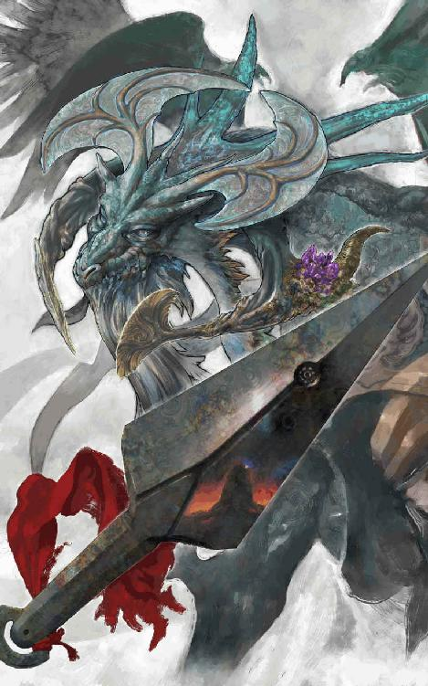
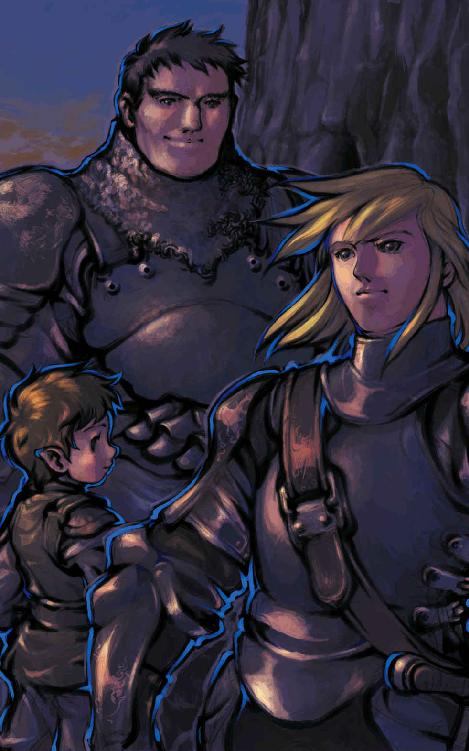
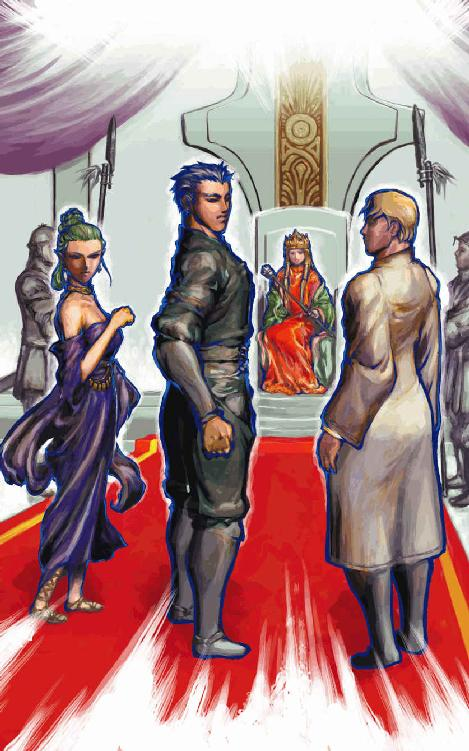
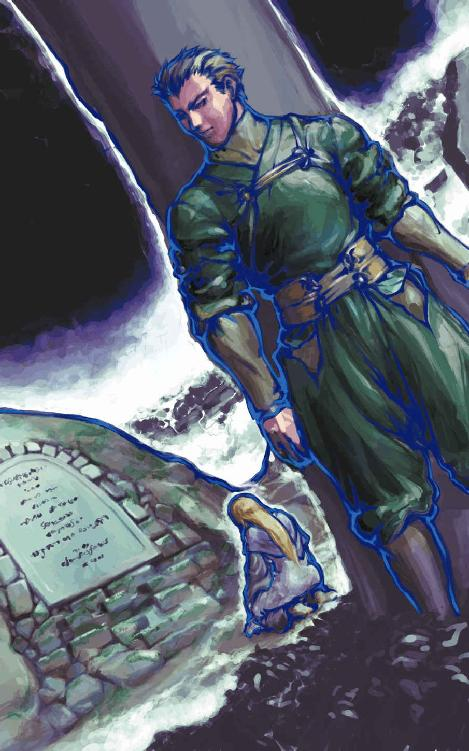
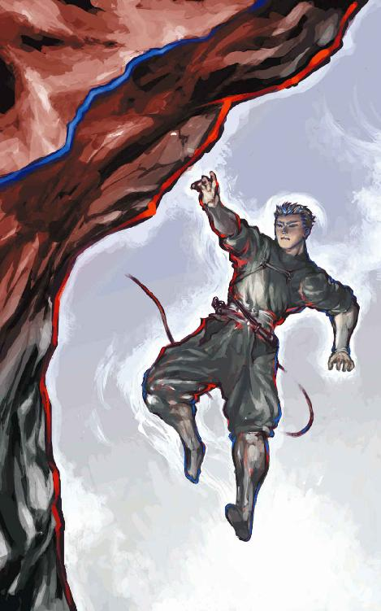
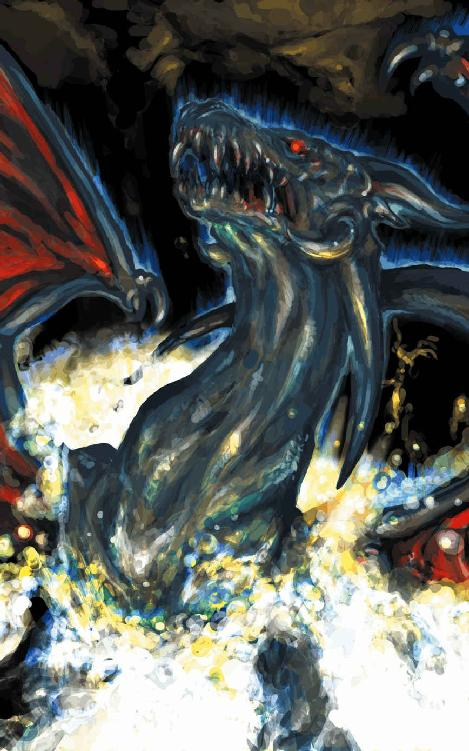
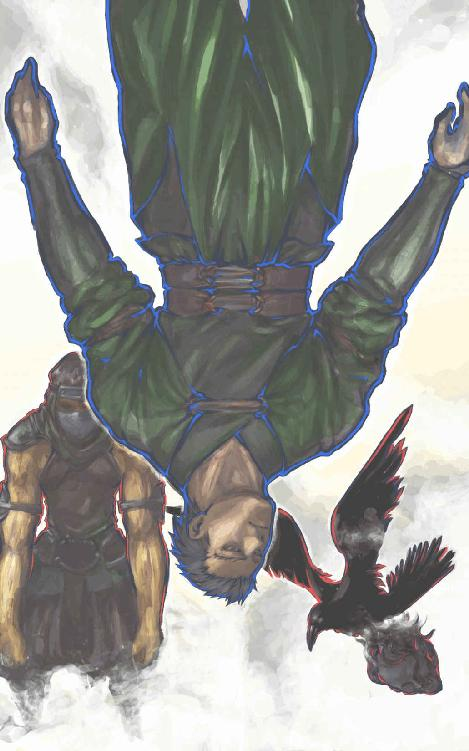
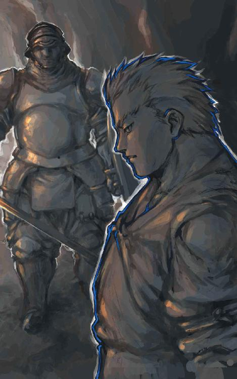

| 風よ。龍に届いているか (幻想迷宮ノベル) | |
| ベニー松山 | |
| GENSOUMEIKYUU SHOTEN (2016) | |

ベニー松山
穏やかな夜だった。
丈高い草原の海を、静かに風が渡っていく。
月明かりに照らされ、草が銀色の波のようにうねっている。
雲ひとつない夜空は、満天に星々が煌めいていた。
凄い数の星であった。澄みきった空から、今にも零れ落ちてきそうに見える。
リルガミン地方の、秋の始まりであった。
草原から、虫の音も聴こえてくる。
と、星がひとつ、夜空に流れた。
天頂近くから流れたその星は、次第に赤みを帯びながら草原の上空を落ちていく。
草原の向こうには、夜空に黒く岩山が聳えていた。
流れ星は、その裏側に消えたかに見えた。
一瞬の後、岩山の山頂付近が赤く光った。
虫の音は、止んでいた。
一陣の風が、草の葉を空中に舞い上げる。
それが、異変の幕開けであった。
この夜、多くの者が嘆きの精の泣き声を耳にした。
空気が、わずかに揺れた。
はっきりとそう感じられるほどではない。微風、とも呼べぬ幽かな空気の流れだ。
辺りは漆黒の闇に包まれている。
目の前に己の掌をかざしてもそれと判らぬ真の暗闇だ。光が全く存在しないため、闇に慣らした目も役には立たない。
その闇の中に、何かが潜んでいる。
空気の乱れは、そいつの身動きが生み出したものなのだ。
もっとも常人に気取られるような動きではない。たとえその姿が見えていても、動いたのかどうか判らぬほどだろう。
用心深い獲物に音もなく忍び寄る、肉食獣特有のしなやかで繊細な動作だ。
だが、俺の研ぎ澄まされた神経はそれを完全に捉えていた。
敵だ。
戦いの始まりだ。
首の後ろの毛がちりちりと逆立つような緊張が疾る。もう幾度となく繰り返してきたにもかかわらず、この張り詰めた感覚は消えることがない。
同時に、俺の躰に流れる血が熱く滾り始めた。
肉の奥底に澱のように沈んでいたものが、闘いの予感に喜悦しているのだ。それは人の中に残された、遠い原初の野性の血なのかも知れない。
再び、空気が動いた。
前よりも動きが大きい。潜んでいたものが身を起こし、ゆっくりと近づきつつあるのだ。
足音はない。そいつは細心の注意を払い、歩を進めている。
それはつまり、相手もこちらの存在に気づいているということだ。そうでなければ、これほどまでに足を忍ばせたりはしない。
しかしそれも確信には至っておらぬ。俺の殺気を本能的に察知し、警戒しているに過ぎない。
俺は軽く両足を広げ、不動の姿勢をとった。そして大きく息を吸い込み、止める。
気息によって生じる気配を絶つ一種の隠身法だ。呼吸を止めている間は、俺の気配は一切消え去る。
簡単な隠身だが、このような闇の中では思いのほか効果がある。それまで感じていた殺気がいきなり消失するのだ。視覚を奪われているために、相手は十中八九恐慌に陥る。
数秒と経たぬうちに、そいつは俺の術中に落ちた。
雷に似た音が聴こえてきた。
喉の奥から漏れる唸り声だ。
気配を見失い、そいつは威嚇によって俺の所在を確かめようとしているのだ。
だが、それは逆に自身の正確な位置を俺に教えることになった。
俺の正面、約十メートルの距離にそいつはいた。足は止まっている。
俺は動かない。
息を止めて一分。唸り声がゆっくりと近づき始めた。
警戒心を解いてはいないが、むしろ何もいないことを確認するために進んで来ている。先刻の忍び足ではなく、弾力のある足の裏の肉が硬い石床を踏みしめる音が微かに響く、そんな歩き方だ。
四ッ足だった。
一歩進むごとに、そいつの警戒心が薄れていくのが感じ取れる。
獣の嗅覚も、魔法の薬品によって体臭を消している俺には役に立たない。そいつは次第に無防備に、俺に近寄ってくる。
距離が半分以下に詰まった。
俺は懐に手を入れ、小さなガラス瓶を掴んだ。この親指ほどの大きさの瓶は細い鎖に繋がれ、ペンダントとして俺の首に掛けてある。
四メートル。
三メートル。
距離が縮まるにつれ、そいつの呼気の血腥さが強まってくる。
二メートル。
しゅうと音を立てて吐き出される息が、俺の顔に生暖かく吹きつけられているかに近く感じられる。
気配は消し続けている。五分間は息を止めることができる俺にとって、ここまで二分足らずの隠身は半分以上の余力を残しているのだ。
そいつは、あと一メートルというところに足を踏み入れようとしていた。それで、間合いは充分となる。
なめらかに連続する動作で、そいつが最後の一歩を踏み出した。
その瞬間、俺は懐からガラス瓶を引きずり出した。
青白い光が闇を切り裂く。
瓶を満たしている液体が、その光の源だ。大した明るさではないが、闇に慣れた目には目映いばかりの光を発している。
周囲の空間が照らし上げられた。
石造りの回廊が、俺の前後に伸びていた。
幅、高さともに六メートルを越える巨大な通路。それが俺の今いる場所だ。
そして──。
俺の眼前に、一匹の巨獣が浮かび上がっていた。
虎だ。
人喰い虎と呼ばれる、人の肉の味を覚えた凶獣がそいつの正体だった。
体長二・五メートル、体重は二百キロを優に越えるかという巨体が、俺とわずか一メートルの距離を挟んで対峙しているのだ。
だが、驚いているのは俺ではなく、人喰い虎のほうだった。
匂いも音もなく、気配すら微塵も感じられなかった空間から、突如として奇怪な光が現れたのだ。
俺のほうはこいつが最初の唸り声を発した時から、とうにその正体に気づいていた。
暗闇の中で開ききっていた虎の円い瞳孔が、青白い光の前で急速に収縮していく。目に入ってくる光量を調節し、光の正体を視認するためだ。
ここまで、俺が発光瓶を取り出してから十分の一秒にも満たない。
そして俺も、黙って虎の様子を観察していたわけではなかった。
軽く腰を落とし、上体を右に捻る。
左腕は肘から先で顔をガードするように前方に構え、右腕は肘を後方に引いて脇腹につけている。
人喰い虎の目が俺を捉えるのと、俺が右脚を半歩踏み出したのはほぼ同時だった。
虎が見たのは、ひとりの男の姿だ。
細身で、背丈は二メートル近い。全身を限りなく黒に近い濃緑色の装束で包んでおり、光に照らされてなお、背後の闇に溶け込むかに見える。
男は、素手だった。武器はおろか、革の防具ひとつ身に帯びてはいない。
その姿を断ち割るように、何かが視界を左右に二分した。
それが、この人喰い虎がこの世で見た最後の光景だった。
俺の右の貫手が、虎の両眼の間に叩き込まれていた。
四本の指は頭骨を突き抜け、ほとんど根元までめり込んでいる。恐らく指先は脳幹に届いているだろう。
内圧で、眼球は半分飛び出しかかっている。
がくん、と顎が開いた。そこからだらりと長い舌が垂れ下がる。
俺は虎の頭からゆっくりと右掌を引き抜いた。血液と脳漿の、ぬるりとした感触が指先に纏わりつく。
指先が抜けた瞬間、虎の躰が揺らいだ。
俺の三倍近い重量を持つ巨躯は、そのままどう、と横倒しになった。
即死だった。
いかに強靭な肉体を誇る巨獣と言えども、急所を突かれればひとたまりもない。
俺は片膝を突いて屈み、まだ生命の熱を保った屍の腹部の毛皮で右掌にべっとりとついた血を拭った。
拭いながら大きく息を吐く。先刻から今まで、呼吸を止め続けていたのだ。
緊張が徐々に和らいでいく。
完璧な戦いだった。相手に防御する暇さえ与えず、一撃のもとに屠る。しかも、剣や斧といった武器を使わずにだ。
己の身ひとつの状態で、危険をできる限り冒さずに敵を倒し、生き残る。
これこそが、長い歳月をかけて確立された、〝忍者〟の戦闘スタイルなのだ。
俺は立ち上がり、改めて青白く浮かび上がった回廊を見回した。
一体それは、どのようにして造り出されたものなのか。
太古の昔から小規模な火山活動を繰り返してきた岩山の内部に存在する、自然の産物ではありえない洞窟群。それは厚い岩盤に覆われた山中で複雑に繋がり合い、実に一辺数百メートルにも及ぶフロアが六層も連なる巨大迷宮を形成しているのだ。
造山時に溶岩中に溜まった巨大な気泡がそのまま洞窟となっている部分もあったが、それ以外のほとんどは岩を掘り抜いて造られた人為の地下通路だ。中には下手な宮殿よりも見事な仕上がりの場所もあり、たとえドワーフの鉱夫や石工が千人働きづめになっても、千年かけて完成するかどうかというほどの代物だと聞かされている。
公式に発見されてから百年と経ってはいないが、迷宮自体は相当古い時代から存在していたらしい。それはこれまでに迷宮内で発見された遺留品の数々から明らかになっている。
古めかしい型の鎧や、錆びかけた大剣。中には古代のドワーフ細工の逸品として名高いミスリル製の防具や、もはや製造技術の失われた魔法の品々までもが迷宮の暗がりに転がっているのだ。少なく見積もっても、大災害によって千年以上昔に壊滅した超魔法文明以前に、この迷宮は造り上げられていたということになる。
そしてまた、ここはただの廃墟と化していたわけではなかった。
この近辺には生息していない筈の大蛇や巨鳥、おぞましい魔法実験の末に生み出された奇怪な化獣、今では遥かな秘境にしか残っていないとされる怪物たち──それらの魔物がこの迷宮の内部を徘徊しているのだ。
古代の遺品を目当てに入り込もうものなら、その持主と同じ運命を辿る羽目になる人外の魔境だった。
それゆえに発見後も、つい一年ほど前までは誰も足を踏み入れようとはしなかった。
しかし──。
今では数十人の冒険者が日夜、この危険な迷宮の探索に挑んでいる。
かく言う俺も、その冒険者のひとりだ。
名をジヴラシアという。
悪の戒律に従う、混じりっけなしの人間族の忍者だ。その腕前を称して〝熟達者〟と呼ばれる。戦いと探索を生業とする冒険者として、充分以上の経験を積んできた証となる称号だ。
事実、俺はもはや数え切れないほどの実戦を積み重ねてきた。
ただし、この一年の間にだ。
一年前、二十歳の時にこの迷宮に初めてやって来た俺は、基礎修行は積んでいたものの実戦の経験がない駆け出しの冒険者だった。
戦闘には自信があった。基礎修行とは言え、餓鬼の頃から地獄の鬼も逃げ出すほどの厳しい訓練を続けてきたのだ。
しかし、訓練と実戦はまるで違っていた。
訓練は、肉体と精神の鍛錬が目的だ。命にかかわる難行も、目的はそれまでの自己を超越すること。即ち戦う相手は自分自身だ。
確かに実戦も、それを乗り越えることによって鍛錬にはなる。が、それが目的ではない。
実戦の目的とは、生きることだ。
実戦とは、命のやりとりなのだ。
殺るか、殺られるか。
相手の息の根を止めなければ、自分が息の根を止められることになる。
相手にとっても、それは同じだ。それこそ死力を尽くして、俺を倒そうとする。
修行における仮想敵──これまでの自分は、常に新しい自分によって打ち負かされるべき存在だ。
だが実戦では、俺より戦闘力の低い相手であっても必ず倒されるべき存在ではないのだ。いつでも、倒されるのが自分であるという可能性がある。
自分の命が危険に晒されることによる極度の緊張感。敵を倒して己の生命を克ち取った時、このプレッシャーは修羅場をくぐった経験として自分の中に刻み込まれる。
それこそが、実戦での能力の成長を促す血肉となるのだ。
訓練では決して得ることのできない、生き残る力だ。
俺はそのことを、初めての実戦で身をもって知った。
幾度となく練習した筈の技術が何ひとつ出てこない。剣を振ることすらままならなかった。実戦の恐怖と緊張が、俺の躰の自由を奪っていたのだ。
ようやく敵を倒した時には、俺もくたばる寸前だった。どうやって相手を殺したのか、何も覚えていない。
その時、俺は悟った。
実力の伴わぬ技術など、何の役にも立たないということをだ。
訓練の中で培った技術を実戦の中で生かせるようになって初めて、それを修得したと言えるのだ。
以来一年間、俺は狂ったように迷宮での実戦に励んだ。
パーティを組み、仲間たちとともに迷宮を探索する。行手を阻む魔物を、力を合わせて蹴散らした。
時には今日のように単身で迷宮に乗り込む。極めて危険な行為だが、そこから生まれる緊張感がより早く実戦の勘を養うのだ。
何故、そうまでするのか。
現在俺や、その他の冒険者たちは、ある任務を果たすために迷宮の探索を続けている。
迷宮で待ち受けている戦いを勝ち抜くには、実戦の経験は大いに役に立つだろう。
だが、その任務もいずれは終わる。迷宮に入る必要はなくなるのだ。
その時、冒険者の、忍者としての能力が一体何の役に立つのだろうか。
素手で人を殺せる技術を磨くことで、自分はどうするつもりなのか。
判らない。
判らないが、俺は戦い続けている。敢えて危険な道を選んでいるのだ。
冷たくなり始めた虎の屍を見下ろしながら、俺はいつしかそんな考えに耽っていた。
低い地響きが、俺を我に返した。
地震だ。
迷宮全体が微かに震えている。
「またか......」
俺は口に出して呟いた。
この一週間というもの、迷宮近辺では同様の微震が相次いで起こっている。俺が今日迷宮に入って五時間ほど経つが、その間すでに十回以上の震動があった。
街の噂では、この山の火山活動が再び活発になってきているという話だった。この群発地震は、噴火の起こる前触れであるらしい。
どれほどの信憑性があるのか知らないが、いずれにせよ気分のいい話ではない。その物騒な山の中に、俺は潜っているのだ。
迷宮が崩れようものなら、いくら熟達者と呼ばれる忍者でもひとたまりもない。
一分足らずで地鳴りは治まった。
そろそろ外は日没が近づいてきた頃だろう。
潮時だ。ここから迷宮の入口に戻るまで、運良く魔物に出会わなかったとしても小一時間はかかる。
俺は踵を返した。
その時、背後に奇妙な気配を感じたような気がした。
腰をかがめ、素早く振り向く。
前と同じ、奥深い闇が伸びていた。
俺は瓶の灯りをかざし、目を凝らした。
耳を澄まし、空気の流れを肌で読む。
しかし、何も感じられなかった。どうやら気のせいだったらしい。
俺は躰を戻し、来た道を戻り始めた。
この時あと十秒待っていたなら、俺は光の届かぬ闇の中で再び動き出したものに気づいていたかも知れなかった。
俺が立ち去った後、暗闇に包まれた回廊に低く静かな詠唱が響き渡った。
それはこれから始まる死闘の、確かな予兆だった。
大地が朱く染まっていた。
荒野の乾いた泥土が、赤熱しているかの如くオレンジ色に輝いている。
遥か西方に見える海は、絶え間なく移り変わる無数の赤い光を放っていた。まるで紅玉に埋め尽くされているようだ。
水平線の雲の切れ目に、赤く巨大な日輪が姿を覗かせていた。
日没間際の太陽が、最期の力を振り搾ったような、そんな凄絶な美しさの夕日だった。
俺は岩山の南の斜面、麓の荒野へと続くなだらかなスロープに立ち、数週間ぶりの陽光を眺めていた。
常に太陽を遮り続けたぶ厚い黒雲は、今も俺の、そしてこのリルガミン地方の上空を覆い続けている。海上に吹き荒れる強風が、たまたま西の雲のごく一部を吹き散らしたに過ぎない。
それだけに、夕暮れの景観は恐ろしいまでに美しかった。
照らし上げられた雲の腹が、西の空から中天、そして東の遠方に霞む大山脈の稜線に至るまで、微妙にその色彩を変えながら広がっている。
黄。
橙。
朱。
赤。
紅。
紫。
藍。
紺。
それらの色も、雲の凹凸によってまたそれぞれ異なる濃淡を帯びているのだ。
落日の赤光が生み出した、信じ難いまでの天空の美だった。
俺がこの世に生を受けて以来二十一年、これほど壮麗な美しさを持った夕景はお目にかかったことがない。暮れゆくこの情景を前にしては、純情な生娘ですら初めての接吻ぐらいは許してしまうだろう。
だが俺にはこの眺めが、終焉を前にして足掻き続ける人々の姿を暗示しているように思えてならなかった。
あと数分もすれば太陽は没し、今日一日の生命を終えるだろう。美しく染まった雲の色も、やがてはすべてを呑み込む闇の色──漆黒へと変わっていく。
無の色へ。
破滅の色へ。
俺は振り返った。
俺の背後で、荒野からの上り斜面は終わっている。スロープと呼べるのはここまでだ。
そしてそこからが、この岩山の真の姿となる。
城壁をも思わせる、垂直に近い角度で切り立った巨大な岩壁。それが天へと続く柱のように上方へと伸びている。
到底登攀不可能な断崖絶壁が、標高千メートルあまりのこの山の南面なのだ。
南面ばかりではない。
東西南北どの方向も、ほぼ同様の断崖に囲まれている。
やや先細りになった円柱を思い浮かべれば、この岩山の形状を理解することができるだろう。山、と言うより塔と呼ぶに相応しい外観だ。
その巨塔の南壁の底部、ちょうど俺の振り返った先に、底知れぬ闇がぽっかりと口を開けていた。
幅三メートル程度の、岩壁に縦に走った亀裂。これこそが、岩山の内部に掘り抜かれた巨大迷宮への侵入口なのだ。
つい今しがた、俺が出てきたばかりの暗黒の穴だ。
西から差す夕日は、南に面した亀裂の入口近くを横から照らしているに過ぎない。その奥に続く迷宮第一層への回廊を、ここから見て取ることはできない。
ただ、黒々とした暗闇が蟠っている。
その見慣れた闇が、俺の不安をいや増した。
破滅。
俺は視線を荒野に戻し、そしてその向こうへと移した。
十キロメートルほど広がる荒野を挟んで、巨大な町が見える。
周囲を堅固な城壁が守り、大小様々な建造物がその中に密集した大規模な城塞都市だ。
リルガミン王国の中心、リルガミン市。
それが、俺の生活するこの都市の名だ。
そして今、この街──いや、この世界は滅亡の危機に直面していた。
数千年の歴史を持つリルガミン王国が遭遇する、三度目にして最大の危急存亡の秋なのだ。
リルガミンは、特殊な都市だった。
都市成立以来、いかなる外敵の侵入も許さぬ絶対の防備。数百年前の戦乱期ですら、リルガミン王国の独立を守り続けた神秘の力がこの都市にはあった。
ニルダの杖──リルガミン王家に受け継がれ、現在も王国の繁栄の象徴とされるこの杖こそが、その力の源なのだ。
未だに鉱床すら発見されぬ稀金属を完全に精製したものを材料とし、千年前に存在した超魔法文明の技術をもってしても鍛造不可能な形状と強靭さを合わせ持った秘宝中の秘宝。その杖は数万年の昔、神々が人とともにあった神話の時代に作られた数々の神器の中の、現存する数少ない神世の遺産だと言う。
今はすでに去った神々のひとり、精霊神ニルダの霊力が、ニルダの杖には宿っていた。
伝説では、リルガミンの初代の王に、ニルダ神は杖を通して問いかけたとされている。
〝そなたは王となった。その権力をもってすれば、人の世の望みはほどなく叶おう。されど王の力とて人の力、すべてを為すだけの力はあるまい。然らばそなたは我の力で何を望む？〟
精霊神ニルダの霊力を借りれば、恐らくは人の抱くどのような欲望も満たすことができただろう。不老長寿、版図の拡大、莫大な富、そして絶世の美女......。
しかし、杖の問いに王は迷わずこう答えたと言う。
「たとえ長寿を授かろうと、私もいつかは魂へと還る身。ならば我が身の欲は望みませぬ。代わりに我が王都を子子孫孫、すべての外敵よりお守り下さい。害意を抱いた者の侵入を妨げ、攻め入ろうとする武力と魔力を退ける神のご加護。ただそれだけが私の望みでございます」
〝しかと聞き届けた〟
杖は王の手の中で激しく震え、やがて鎮まった。そして二度と神の言葉を発することはなかった。
だが、王の願いは叶えられた。
その日以来リルガミン市には、杖から生じた超魔法の結界が張り巡らされたのだ。
他国の間諜や暗殺者をはじめとする王国に害意を持つ者たちは、目に見えぬ壁によって城壁より内側には足を踏み入れることができなくなった。いかに心を偽ろうとも、杖の力はその隠された悪心を看破し、他の者には全く影響を与えない障壁で潜入を妨げるのだ。
水晶玉や鏡を使った幻視の魔法も、この結界によって完全に無効化された。リルガミンを狙う他国の軍師の中には、あまりの情報の少なさに精神の病を患った者もいたと言う。
転移などのテレポートの呪文による侵入も、敵意を抱くものは魔法障壁によって確実に弾き返された。リルガミンを敵とみなす者にとっては、王都の情勢を探ることはほぼ不可能となった。
また、発達した魔法文明の中で編み出された攻城用の超高度攻撃呪文の数々も、杖の魔法障壁の前には無力だった。莫大な時間と術者の労力、時にはその生命を代償にして引き起こされる落雷や寒波、地震などの物理現象が、リルガミン市には何の影響も与えられぬまま打ち消されてしまうのだ。
現在のものとは比べものにならない破壊力を持つ呪文ですら、打ち破ること適わぬ絶対防御の魔法障壁。それによって守られたリルガミン市はまさに不可侵の聖都となった。
そして今より約千年前、超魔法文明を根こそぎ壊滅させた大災厄に見舞われるまで、リルガミンの平穏はただの一度も乱されたことはなかった。
悪魔王マイルフィックの出現と、その妖力によって生み出された数百日にも及ぶ暴風雨。海から竜巻に吸い上げられた海水が尽きることのない雨となって大陸全土に降り注ぎ、それまでに人類の築き上げてきた都市はその防護魔法が洪水に耐えきれなくなった所から、多くの民とともに次々と地上から消え去っていった。
滅亡を前にして、当時の魔導王や魔術師たちは最後の手段を採った。彼らの持てる限りの魔力を結集し、天空に浮かぶ魔王を攻撃したのだ。
計画は辛くも成功した。山をも消し飛ばす威力を秘めた呪文の直撃を受けたマイルフィックは、この世界での肉体を破壊されて魔界に撤退した。
だが、術者たちも限界を遥かに越えた魔力の行使により、そのほとんどの生命が失われた。
魔道の知識を持つ術者たちの死と、都市の壊滅による数多くの文献の消失。こうして数千年を費やして研究され、高められてきた魔法技術はふり出しに戻り、超魔法に支えられた文明は終わりを告げることとなる。
この災厄の中にあっても、ニルダの杖の力は暴風雨の被害を最小限に食い止め続けた。長期に渡る降雨による食糧不足はどうにもならなかったが、都市自体の損害は皆無に等しかったと言う。おかげでリルガミン市は世界でも稀な、災厄以前の面影を残す古都となったのだ。
これが最初の危機と呼ばれている。
二度目の危機は、今から百年ほど前の時代に遡る。
悪魔王の来襲以上に、リルガミン市を恐怖の底に叩き落とした闇の魔手。それは、杖の力の盲点を衝くかの如く、リルガミン王家に襲いかかった。
ニルダの杖の魔力は、害意を持つ外敵に対しては完璧なまでの防護を発揮する。悪魔王と言えども、精霊神の力に守られたリルガミンには容易に手を出すことができなかった。
だが、第二の危機の種子はリルガミン自体が内包していたのだ。
魔人ダバルプス──生まれながらにして闇の心を持ち、人の世に破滅をもたらそうとした悪魔の化身。およそリルガミンとは無縁な筈のこの男が、王都の中にあって虎視眈々とその王位を狙っていた。
何故なら杖の力は外敵にのみ作用し、リルガミンに生まれた害悪には何ら効力を発揮しなかったのだ。
魔法障壁の内側で生まれ落ちた邪悪の芽は、杖に阻まれることなく育ち続けた。
そして遂に、ダバルプスは王位を転覆させる力を身につけた。
大災厄時にも失われることのなかった、王宮の書庫深くに眠っていた古代の文献を盗み出したダバルプスは、千年近く忘れ去られていた超魔法文明の秘法を次々と修得していったのだ。都市を守り、文献を守り続けた杖の力が、結果として魔人に強大な魔法の力を与えることになった。
異界より召喚された闇の軍勢と、凄まじい威力を秘めた古代呪法の数々によって、一夜にしてリルガミンの王位はただひとりの反逆者ダバルプスの手に奪われた。
王を手始めに、王家の血筋は容赦なく殺されていった。連綿と続いた王の血脈は、僭王の手で潰えたかに見えた。
しかし、王家は滅んではいなかった。王女マルグダと王子アラビクの幼き姉弟が、闇の軍勢の追跡を振り切り落ち延びていた。
ダバルプスの支配のもと、王国は急激に荒廃していった。人々は圧政に苦しみ、多くの者が意味もなく処刑された。美しかった白亜の王宮は、魔人王と側近の怪物たちが棲む暗黒の魔宮となった。
数千年の歴史を誇る聖都リルガミンは、わずか数年にして悪名高き魔都と化していた。
忌まわしい反逆の夜から六年目、人々が心から一片の望みをも捨て去ろうとしたその時、ダバルプスに立ち向かう一組の歳若き男女が現れた。
光輝く甲冑に身を包んだ青年の振るう大剣は地獄より召喚された悪魔たちを紙のように切り裂き、美しき乙女の唱える呪文は巨竜の群れを一瞬にして爆炎の渦に包み込んだ。
この二人こそ、正統な王位継承者マルグダとアラビクの成長した姿だった。二人は王位の奪還と魔人への復讐のため、六年の間その力と技を磨き続けてきたのだ。
ニルダの杖とともに王家に受け継がれたもうひとつの至宝、アラビク王子の身に着けているダイヤモンドの騎士の装備がその手助けをした。金剛石の如き装甲が魔物の爪牙を弾き返し、〝悪魔殺し〟の異名をとる長剣ハースニールの鈍ることのない刃が次々と闇の生物を屠っていった。
強大な魔術師となったマルグダ王女の援護のもと、遂にアラビクは魔宮の最上層、かつては父王のものであった王座に座る魔人ダバルプスと相対した。
ダバルプスの超魔法と、戦士として成長したアラビクの剣の死闘。互いの生命を削り取る戦いは一昼夜の間繰り広げられたと言う。
マルグダ王女の唱えた禁呪・変異が奇跡的にダバルプスの超魔法を封じた瞬間、アラビクの渾身の一撃が魔人を捉えていた。ダバルプスの首が宙に舞い、姉弟は勝利を確信した。
だが、ダバルプスの首は地に落ちる直前、最後の呪いの言葉を発していた。
轟音とともに崩れ落ちる魔宮。絶命した筈のダバルプスの哄笑が響き渡る中、力尽きたアラビク王子と魔人の屍は魔宮の地下に造り上げられた巨大な迷宮へと呑み込まれていった。後には瓦礫の山と、マルグダ王女だけが残された。
尊い犠牲を払いながらも、リルガミンを蝕む魔人は斃れた。女王となったマルグダの治世のもと、王都は再びかつての繁栄を取り戻したかに思われた。
しかし崩壊した王宮の廃墟から、ダバルプスに奪われたニルダの杖は発見されなかった。また、王子が落ちていった筈の迷宮の入口も、瓦礫をすべて取り除いてすら見つけることはできなかった。
ニルダ神の加護が消えたリルガミンに、もはや絶対の平和は失われていた。
人心は乱れ、街に犯罪がはびこった。ダバルプスによってもたらされた破滅の翳は、消え去るどころかその濃さを増していくばかりだった。
或る夜女王は夢の中で、ニルダ神の言葉を聞いた。
〝我に護られる都市であることを示せ。その時、再び杖は汝の血筋に戻るだろう〟
翌朝、あれほど探しても見つからなかった迷宮の入口が開いていた。
それは、争い合う人間に失望したニルダ神が課した試練だったのか──。
迷宮内部には、ダバルプスの召喚した魔物たちがまだ生き残っていた。
いや、残っていたのではなかった。死してなおダバルプスの呪いは消えることなく、迷宮に闇の生命を呼び寄せていたのだ。
夢の啓示と、突如発見された迷宮。それは杖を取り戻す術が迷宮の探索であることを示していた。
しかし、それは並大抵のことではなかった。呪いによって強化された魔物が巣くう地下迷宮を、くまなく調べ尽くそうというのだ。
マルグダ女王は広く冒険者を募ったが、死を賭した探索に出ようという者はあまりに少なかった。また、リルガミンのために勇気を奮う者たちも、凶悪な魔物の牙の前に次々とその命を落としていった。
だが、遂に女王自らが決死の探索に向かおうとしたその時、屈強な冒険者の集団が続々とリルガミンに集ってきた。
彼らこそ、あの噂に高い大魔術師ワードナの大迷宮で己を鍛え上げた英雄たちだった。
いずれも熟達者以上の実力を持つ彼らは、苦戦しながらもダバルプスの呪いの迷宮を探索していった。そして遂に、各所に分散していたダイヤモンドの騎士の装備をすべて身に着けたひとりの戦士が、その大いなる勇気をもって杖を取り戻した。
冒険者たちの示した知恵と力が、一度は神に見捨てられたリルガミンに再び平和をもたらしたのだ。
杖の力は蘇り、ダバルプスによる闇の支配の影響は残らず拭い払われた。こうして、リルガミン史上二度目の危機は多大な損害を都市に与えながらも、破滅を迎える前に終わりを告げたのだった。
聖都は復活した。
迷宮の探索に携った冒険者の多くは王国騎士の称号を受け、リルガミンの復興に力を尽くした。そして彼らの活躍により、リルガミンは以前にも増して繁栄することとなった。
だが、それも一年前までのことだ。
より絶望的な第三の危機が、王国全土を襲ったのだ。
リルガミン王国は、大陸の西端に位置している。
実際に俺が歩いて確かめたわけではないが、ともかくそう聞いている。東にはまだまだ広大な陸地が広がっており、とても人の足で横断できる距離ではないそうだ。
もっとも魔法の発達していた古代には、各地に設けられた転移地帯によって数百キロメートルを瞬時に移動することができたという。
現在知られているテレポートの呪文・転移での瞬間移動は、一回の行使で一キロメートルがせいぜいだ。しかも術者が実体化する地点までの正確な方位と距離をイメージできなければ、地中の岩盤の中や空中高くに実体化してしまう危険もある。旅の移動手段としては、とても使えたものではない。
おかげで今では、遥か東方の国々との交流は完全に絶たれている。侍と忍者の発祥の地といわれる大陸東端の島国などは、現存しているかどうかすら定かではないのだ。
だが、今は東の国々の状況を気にかけている余裕などはなかった。
リルガミン王国全土──そればかりではなく、情報を得られる限りのあらゆる西方世界が、原因不明の天変地異の脅威に晒されているのだ。
異変は、唐突に始まった。
リルガミン市の西には海が広がっている。
その西南の沖合二百キロメートルほどのところに、アルビシア諸島と呼ばれる大小十あまりの島々がある。穏やかな気候と良質の漁場に恵まれた豊かな島で、三百年ほど前からリルガミン王国が開拓し、ダバルプスの支配した暗黒時代も平和を保ち続けた植民島だ。
周囲の海では珍しい海産物が多数獲れ、復興時には王国の重要な財源ともなった。ここ数年は大規模な移民が行われ、リルガミン市に次ぐ王国第二の都となった海上都市も存在する。十日に一度は連絡船が往復する、海洋にあって陸地以上に便の良い島だった。
その植民島が、突如として消失した。
リルガミンの人々がそれを知ったのは、南の浜辺の小村から知らせが届いてからだった。
高波の翌朝、浜辺に多数の死体が砕けた木片とともに打ち上げられた。
村の誰もが近海で船が沈没したと考えた。が、そうではなかった。
木片は船の破片ではなく、建物の建材の一部だった。中には酒場や宿の看板も混ざっており、それらに刻まれた文字ははっきりと、その店がアルビシアの海上都市にあったことを告げていた。
アルビシアの植民島に何らかの異変ありとの報せを受け、直ちに数隻の軍船が島の調査に向かった。アルビシア周辺にはコルセアと呼ばれる海賊が勢力を持っており、この連中による侵略の可能性が高かったためだ。
しかし、調査隊が目にしたのは海賊に占拠された都市ではなく、植民地が文字どおり消えている様だった。
島自体はいつもと変わらぬ位置にあった。
ただ、それがアルビシアの島々であることを確認するのに、船団は群島の周囲を一周しなくてはならなかった。
それほどまでに、島の景観は一変していた。
アルビシアの本島は中央に緑の木々に包まれた丘陵部を持つ美しい島だった。だが、そこにあったのは地肌が剥き出しになった、見るも無惨な岩と土塊の島だったのだ。
他の島も同様だった。小さい島の中には、ほとんど海中に没してしまいそうなほど陸地を削り取られているものもあったという。
都市をはじめ、人々が築き上げた文明の痕跡はどこにも残されていなかった。
津波だった。
それも、想像を絶する大津波がアルビシア諸島を襲ったのだ。
島の人々は、恐らく津波に気づく間もなかったのだろう。水圧の壁は一瞬にして島々を呑み込み、その表皮を洗い流したのだ。
アルビシアの壊滅が、リルガミン史上三度目の危機の幕開けとなった。
天空に垂れ篭めた黒雲が陽光を遮り、日毎に気温が下がり始めた。
雲より降り注ぐ雷の束は無差別に大地を灼き、人々の生命を奪った。幾つもの町が廃虚と化し、その数倍の村の音信が途絶えた。
相次ぐ地震によって大地は罅割れ、そこから噴き出した瘴気は緑の草原を不毛の荒野へと変えていった。
しかし──。
この期に及んでもまだ、リルガミン市の市民は平和な夢を見続けていた。
たとえどんな災害が起ころうとも、ニルダの杖の力は自分たちを守ってくれる。魔神マイルフィックの大災厄からも、リルガミン市だけは助かったではないか──と。
そしてその甘い夢想は、いとも簡単に、完全に打ち砕かれることとなった。
激しい地震がリルガミン市を襲った。幸いにも市街に大きな被害は出ず、人々はこれも杖の働きであろうと考えた。
だが、地震の際に都市の北の一画で起こった事件が市内に伝わるや否や、市民の多くは言葉を失い、残りは恐怖と不安で泣き叫んだ。
本来なら最も強く杖の力によって護られている筈の場所──王国の守護神ニルダとその杖自体を祀っているニルダ寺院が、こともあろうに倒壊していたのだ。
それは、この天変地異に対してはニルダの杖の防護魔法も完全ではないという事実を、否応なしに見せつける出来事だった。
史上類を見ない特異な天災の原因究明に、リルガミンの賢者たちはようやく真剣に取り組み始めた。
星々の位置から現在の状況を読み取る占星術や、地霊や風精を呼び出す精霊召喚。果ては不完全ながらも古代呪術の復活による高次空間への干渉や、ダバルプスの支配時に焼き捨てられずに残されたわずかな古文書の解読にまで、賢者たちの原因追究の手は伸びた。
しかしそのいずれも、満足な解答を導き出すには至らなかった。
その間にも、事態は悪化の一途を辿った。
リルガミンの食料庫ともいうべき南部地方の穀倉地帯は、落雷による火災と日照時間の大幅な減少によってすでに壊滅的な打撃を受けていた。元々豊かなリルガミンにはいくらかの蓄えがあるものの、それも長くは持つものではない。
アルビシアの壊滅以降、豊富な海産物の収穫もぱったりと途絶えた。連日のように荒れ狂う海には船も出せず、沿岸の漁民は逸早く都市へと避難してしまった。
牛や羊などの牧畜も、異常気象の影響で牧草が枯れ、その大部分が飢え死にした。食用となる家畜類は、もはやほとんどいないと言って良かった。
天変地異が治まらぬ限り、いずれ深刻な食料不足に襲われることは間違いなかった。家畜ばかりか、人も飢餓に苦しみながら死んでいくだろう。
また、そうなる前に大災害の直撃により、リルガミンは滅亡を迎えるかも知れなかった。
いずれにせよ、座して待つばかりでは遅かれ早かれ王国は滅ぶ。そこで賢者たちは最後の賭けに出た。
伝説の神秘の宝珠──ニルダの杖と同様、神々の手によって創り出されたとされるこの神器は、森羅万象の理すらも映し出す絶対的な情報収集の魔力が秘められているという。
この宝珠さえ手に入れることができれば、天災の原因も必ず判明すると賢者たちは考えたのだ。
しかしそれはあくまで伝説上の神器で、本当に存在したのかどうかはそれまで定かではなかった。口承で伝えられるのみで、実在を示す文献などが発見されていなかったためだ。
ところが偶然にも、異変の原因解明のために賢者のひとりが解読した古文書の中に、この宝珠の実在を裏付ける詳細な記述が残されていた。そればかりか、現在宝珠が収められているであろう場所も、古文書には記されていたのだ。
それは、あたかも運命のようだった。
宝珠の所在地は、リルガミン市のすぐ傍らだったのだ。
リルガミン市の北、元は草原だった荒野の中央に魔塔の如く聳え立つ岩山。霞んで見える山頂から、絶え間なく噴煙を吐き出し続けるこの奇妙な火山に、伝説の宝珠が隠されているのだ。
都市の城門から十キロメートルと離れてはいない。にもかかわらず、古来より魔の棲む、また聖なる地として近づく者のなかった山だ。
古文書によれば、山頂にほど近い高みにある洞窟に宝珠はあるという。
だが、この岩山の四方は切り立った断崖に囲まれ、とても登攀できたものではない。外側から宝珠に辿りつくのは不可能、と断言してもいいだろう。
山というよりは、まさしく塔なのだ。
塔の最上階に到達するのに外壁を攀りはしない。内部にある階段を使い、上の階へと昇っていく。
この岩山では、内部に掘り抜かれた六層の迷宮が登山道の役割を果たしていた。
つまり宝珠を手に入れるためには、凶暴な魔物の徘徊する迷宮を突破し、最上層へと昇りつめなくてはならないのだ。
しかも、この神秘の宝珠は巨大な力を持つ存在によって護られていた。
巨龍ル，ケブレス。
こいつが迷宮の主であり、宝珠の守護者だ。
もちろん、ただの龍じゃあない。伝承では神話時代から生き続けている龍神で、この世界を支えている大蛇の五匹の子供のうちの一匹だということだ。
その魔力たるや、少々魔法を齧った程度で大魔道士をきどっている火竜などの比ではない。何しろ山中の広大な迷宮全域を、ル，ケブレスの張った特殊結界が包み込んでいるのだ。
この結界の性質は、ニルダの杖の魔法障壁に極めて近いものだ。杖の力が人の心の内側に潜むリルガミンへの悪意を看破したように、ル，ケブレスの敷いた結界はその者が従う戒律──善か悪かに対して反応するのだ。
悪の者が善の結界、また善の者が悪の結界に入り込もうとすると、その強力な魔法障壁はたちどころに効力を発揮する。その者の肉体を迷宮の外、つまり岩山の南面にある例の亀裂の外に転移させてしまうのだ。
俺は一度だけ、この龍神の姿を見ている。
それは、初めて結界に弾き飛ばされる寸前のことだった。
ル，ケブレスは突如として現れた。どえらい手品のように、眼前の空間に何の前触れもなくその巨体を出現させたのだ。あれは恐らく──間違いなく幻影だったのだろうが、その姿はあまりにも鮮明で、質感に、現実感に溢れていた。
迷宮の闇に浮かび上がったル，ケブレスの姿形は、まさしく龍そのものだった。それはまた、邪悪な竜どもとは次元の違う、神と呼ばれる存在に相応しい姿でもあった。
四肢を突いて蹲っていたにもかかわらず、四本の角を掲げた頭部は優に十メートルを越える高さにあった。全身は翠玉の緑を湛えた鱗に包まれ、迷宮の闇にあって神々しいばかりの輝きを放っていた。俺たち冒険者を見下ろす双眸は深い叡智を宿し、それが驚愕や恐怖よりもむしろ畏敬に近い感情を抱かせた。そして、この龍こそが迷宮の支配者たるル，ケブレスだと瞬時に悟らせたのだ。
龍神は低く咆え──それは決して威嚇などではなく、たしなめるといった響きのものだった──次の瞬間俺たちの視界から忽然と、出現した時と同じように消失した。違っていたのは、その場から消えていたのは俺たちのほうだったということだ。気がつくと迷宮の入口に立っていた。その後俺たち冒険者は何度も、この結界によって放り出されることになる。
しかし、奇妙な話だ。
これほどの力があるならば、何者をも宝珠に近づけぬようにするのもたやすかろう。本気で宝珠を護るつもりなら、それがル，ケブレスの取るべき最良の方法だ。
そこから推測するに、どうやらこの龍神は必ずしも宝珠の探索者に敵意を抱いているというわけではないらしい。ただしそう簡単に宝珠を渡す気もないようだ。
ル，ケブレスは世界の平衡の守護者であるともいう。思うに奴は、神秘の宝珠の力が善と悪の均衡を破るのを恐れているのだ。もし宝珠の秘めたる魔力が噂通りなら、確かにそれだけの力はある代物だ。
それゆえに、善悪の結界がある。
この世界に生活する者は、大きく分けてこのふたつの戒律に縛られている。自己犠牲と博愛の精神に満ちたお人好しどもとでも言うべき〝善〟と、己の欲望を第一と考え、敵対者には一切の容赦を許さない〝悪〟だ。
善悪と呼んではいるが、これは決してその存在そのものを表す言葉じゃあない。悪しきもの、という意味では人類がどれだけ頑張ってみたところで、悪魔や亜人種どもの生来の邪悪さに太刀打ちできるものではないのだ。
とは言え善と悪が相反する指向性を持つことは事実で、その思考や行動規範の根本的な相違から、異なる戒律の両者がうまくいくことはまずありえない。
とりわけ俺たち冒険者にとっては、この戒律は重大な意味を持っている。
危険に満ちた魔境の探索において、冒険者はあらゆる局面に応じた迅速な判断を要求される。行くか、退くか。殲滅か、和睦か。これらを瞬時に決断できなければ、それだけ可能性の天秤は死に傾くことになる。
善悪の戒律は厳しい行動規範によってこれらの選択を縛り、それゆえに迷いのない即座の決断と、難局に対応する強い意志とをもたらす。
例えば俺のように悪の戒律であるのなら、遭遇した敵対者との和睦は通常あり得ない。後難を排するという意味もあるが、選択は殲滅──あるいは形勢不利なら撤退──ということになる。逆に善の戒律を奉じる者は、戦意を示さぬ相手に戦いを仕掛けることは許されない。俺たちにとって戒律とは、言うなれば生き抜くために守らねばならぬ信条なのだ。
それだけに、相反する戒律を信ずる冒険者同士では、パーティーを組むどころか酒場で同席しただけでも諍いになってしまう。己の生き方に関わる属性であるがゆえに、どちらかが折れるということがないのだ。
酒場の争いはともかくも、ル，ケブレスはこの善悪いずれかの方向に宝珠の力が暴走してしまう危険を憂えている。伝説の時代から生き続ける龍神にしてみれば、種族自体が歳若い人間たちに宝珠を預けるなど、危なっかしくておいそれとはできないのだろう。
だが、人々が天変地異によって死に絶えていく様を傍観するのも奴の本意ではない。
そこで、山頂に至る唯一のルートである迷宮に、奴は善悪それぞれの属性を拒む魔法障壁を張り巡らせた。そして迷宮を突破するためには、善と悪の戒律を超えた協力を不可欠とした。
これはル，ケブレスからの挑戦であり、かつてニルダ神がリルガミンの民に課したような試練だった。
ル，ケブレスの召喚した多数の怪物に斃されることなく迷宮を突破し、善悪の協調がなされた証を示した時、宝珠を手にするだけの価値が人類にあると認められるのだ。
危急の際に何とも過酷なル，ケブレスの試練だったが、もとよりリルガミンの人々はこれに従う他に道はなかった。
すぐさま軍隊が迷宮へと送り込まれた。戦闘訓練を充分に受けてきた兵士の人海戦術に、人々は宝珠はすぐにでも手に入るだろうとの楽観的な予想を立てた。
だが、結果は無惨なものだった。彼らを兵士と呼ぶには、あまりにも平和の時代が長過ぎたのだ。
いくら数百人の大部隊で行動しようとも、狭い迷宮の中で一時に戦えるのは数人が限度だ。ろくに実戦経験のない兵士たちは怪物の奇襲による混乱の中で次々と分断され、その飢えた胃袋の中へと収まっていった。
ほうほうの体で外に脱出した時には、兵士の数は出発時の半数にも満たなかった。善悪の協力どころか、魔物の群れを突破することすらままならないのだ。このまま再度軍隊を派遣しても、探索の失敗は目に見えていた。
そこで賢者たちは過去に行われた名高い迷宮探索と同じ方法に切り換えた。
それはつまり、迷宮内で最も指揮に混乱を来たさずに機能するといわれる六人編成で、自らを鍛え上げながら少しずつ迷宮を踏破していくやり方だった。かつてワードナの迷宮ではこうして数多の英雄が生まれ、ダバルプスの呪いの穴でも同様にしてニルダの杖が取り戻された。
時間を要する方法だが、こうなっては他に手段がない。急ぎ各地に冒険者を募る布令が出され、かつての英雄の子孫たちにも召集がかけられた。
俺の御先祖も冒険者だった。それもあのワードナの迷宮で心身を鍛えた強者だったらしい。
らしい、というのは、実のところそれを証明するものが俺の家系には何も残されていないからだ。幾度でも蘇ったというワードナを斃した冒険者は数多く、彼らは狂君主トレボーから近衛隊の袖章を受けているのだが、それが我が家には伝わっていない。
もっともこの袖章は戦争好きのトレボーが有望な兵隊を掻き集めるための手段として用いた品で、狂王の死後はさして価値のある代物ではない。ちなみに一時は無敗の軍勢を率いて西方世界に戦乱の渦を巻き起こしたトレボーだったが、ワードナの迷宮探索以後は一度も戦を起こさずにその生涯を終えたという。
まあ、俺にとっては御先祖がワードナと戦っていようといまいと、そんなことはどうでもいいことだ。要はその御先祖から受け継いだ職業が、通常なら他の職業で心技体を磨き抜いてからでなければ転職できない特殊なエリートクラス・忍者であり、その独特の戦闘技術が幾度となく俺の命を救ってくれたということなのだ。
俺の他にも、百年前の先祖のおかげで高い資質を持って生まれてきた者たちがリルガミンに集ってきた。英雄の子孫ではないものの、死の危険がつきまとう迷宮に敢えて挑もうという覇気のある者も集まり、冒険者は少なくない数となった。
こうして開始された冒険者による迷宮探索は、相当数の犠牲者を出しながらも着実に進んでいった。天変地異の脅威の前にパーティ間の協力が頻繁に行われ、迷宮内の正確な見取り図がかなり早いペースで作られたのがその要因だったのだろう。
そして一年。
天変地異が半年ほど断続的に小康状態を保っていたおかげで、リルガミンやその周辺の国々の被害はそれほど拡大してはいない。この小康が嵐の前の静けさだという不穏な流言もあるにはあるが、今のところさし迫った危機感は薄れている。
食料も徹底した配給制を敷いたおかげで、少なくとも市内では飢える者は出ていない。まだしばらくは持つというのがもっぱらの噂だ。
そして、宝珠の探索はいよいよ詰めの段階を迎えていた。
最上層を除く五層の迷宮は、ほぼ完全な地図作成がなされている。要所要所に設けられた罠や歪められた空間、それに通行を妨げる結界の謎もすべて解明された。
数多くの危地を乗り越え、現在も生き残って探索を続けている冒険者は、総数こそ著しく減少したもののいずれも〝熟達者〟か、それを目前にした熟練の猛者ばかりだ。今なら一部隊で、下手な軍隊以上の働きをするだろう。
あとは最上層に待つル，ケブレスと対面し、宝珠を見つけ出すばかりとなったのだ。
回想が、少々長かったようだ。
夕陽はすでに水平線の向こうに沈みきっていた。残光に浮かび上がる風景は、忍び寄る闇に刻一刻とその色彩を失っていく。
俺は岩山と荒野を結ぶ長いスロープを下り始めた。下り終えるまでには、周囲は漆黒の闇に包まれていることだろう。
その時俺は初めて、荒野の中ほどの砂煙に気づいた。
岩山の麓からリルガミン市へと続く、荒野を突っ切る一本道。
それは、こちらに向けて疾走する一台の馬車が巻き上げる砂塵だった。
闇に沈む荒野に、ふたつの小さな光があった。
ランプの灯りだ。
星明かりとてない闇夜の中で、その光の周囲だけが浮き出すように照らし上げられていた。
ランプは、四頭だての馬車の前部に、左右に分けて吊られている。整備された街道、とはお世辞にも言えぬ荒野の道を走っているため、ふたつのランプは盛大に揺れ動いていた。
馬車の後部には、大型の幌付き荷台が見て取れる。幌が重そうに揺れているのは、荷台に軽くはない何かを乗せているからだろう。
その何かが、迷宮に向かう冒険者以外のものであることは、まずありえない。
この幌馬車こそ、俺たち冒険者の間では乗り心地の悪さで名高い、リルガミン市と迷宮を結ぶ無料送迎馬車なのだ。
何しろリルガミン市から迷宮の入口までは、徒歩で三時間はかかる道程だ。重い甲冑を着込んだ戦士が行進するには少々距離があり過ぎるし、瀕死の状態で迷宮から脱出したパーティなどは途中で行き倒れかねない。
そこで王国が用意させたのが、頑丈さだけが取り柄のこの馬車だ。一部隊六人のパーティなら楽に運べるうえに、迷宮探索中は岩山の麓で待機していてくれ、冒険者にとっては欠かせぬ足代わりとなっている。
だが、殺風景な荷台に座っていると、荒野を駆ける半時間ほどで確実に尻が痛くなる。柔らかい羽毛のクッションでもつけてくれれば、というのが親切な王国に対する俺たちの正直な感想だ。
その幌馬車を、俺は迷宮側の終点である、岩山へのスロープと荒野の境界で待っていた。
馬車はもう百メートルほどに近づいている。
しかしどうやら、御者を務めるリルガミンの若い衛士は、正面に立つ俺の姿に気づいていないようだった。
それも無理はない。
ランプの光は二列に並んだ馬の十数メートル先の地面を辛うじて照らしているに過ぎず、俺の周囲は暗闇に包まれたままなのだ。
このような野外では、俺の着ている濃緑色の装束は黒く染めたものよりも闇に溶け込みやすい。ランプ代わりの発光瓶も懐に隠れているとあっては、この距離で俺を視認するなど不可能に近いだろう。
その時、微かな異音が聴こえた。
四頭の馬の蹄の音と、車輪が軋む音とに掻き消されながらも、その異音は確かに馬車の後方から生じていた。並の聴覚では聴き逃すところだが、精神を集中した際の俺の耳は百メートル先を飛ぶ蜂と虻の羽音を聴き分けることができる。
それは足音だった。
かなり軽量の、二本脚の生物が走る音だ。
そいつはすぐに馬車の後ろを離れ、右側から一気に追い抜いた。ランプの灯りが届く範囲を回り込むようにコースを取っているため、俺から見て馬車の左を走っている筈のそいつの姿を見て取ることはできない。
音は真っ直ぐに、俺に向かってきた。
恐ろしく迅い。残る百メートルを、およそ七、八秒で駆け抜けた。
俺の数メートル手前で、そいつが跳ねた。
馬車の光を遮り、走る速度そのままに宙を跳ぶシルエットが浮かび上がる。
人だ。だが、その身長は一メートルに満たない。
この世界に生活する人類の中では最も体格の小さな種族、ホビットに間違いなかった。
スピードもさることながら、跳躍も見事なものだった。
倍以上の身長がある俺の頭の高さに、このホビットの足がある。人間の子供並の体格に、充分に鍛えられた成人の筋肉が備わったこの種族ならではの、驚異的なバネと瞬発力だ。
俺の顔面に向かって、短いながらも発達した脚が蛇のように伸びてくる。
それは見かけよりも遥かに剣呑な跳び蹴りだった。
ホビット族は靴の類を履くことがない。足の裏側に生まれつき固い巻き毛が密生しており、それが足を保護しているからだ。
しかしそれでも、素足で歩いていれば足の裏は鍛えられてくる。元々皮の厚いホビットの足は、生後数年もすればそれこそ木靴の底のように硬く丈夫になる。
その足の裏の、特に硬そうな親指の付根が、俺の顔の中心に繰り出されているのだ。
こうした宙からの攻撃は体重があるほど威力があり、一般に軽量のホビットが行っても大した効果は期待できないものだが、この蹴りはスピードとタイミングがそれを補ってあまりある。食らえば良くて鼻骨が陥没、悪ければ即死の可能性もある必殺の威力を秘めた蹴り技だった。
あの距離から俺の正確な位置を把握した上で、馬車の陰に隠れての加速から跳躍、蹴りへと移行する完璧なまでの奇襲。全く惚れぼれする絶妙な手際だ。
だが、相手が悪かった。
腕で顔面をガードするでもなく、俺は無防備に立ち尽くしている。他の者が見れば、自分の身に危険が迫っていることすら気づいていない間抜けのように映るだろう。
宙にあるホビットにとってもそうだった。
すでに蹴りを躱せるタイミングではない。殺気の中に、勝利を確信したホビットの気の緩みが感じられた。
この驕りこそが、格闘において最も危険なものなのだ。
わずかな感情の動きが、目前にした勝利を覆すことがある。忍者の基礎修行時代から、俺はそれを厭というほど思い知らされてきた。
蹴りが俺の鼻先にめり込んだと見えた瞬間、ホビットの視界から俺の姿が消失した。
俺の視界の中を下から上へ、ホビットの躰が移動していく。
夜空が見えていた。
俺が上体を後方に反らせているためだ。
大地とほぼ平行になった上体をかすめて、ホビットは俺を飛び越した形になった。
跳躍しての攻撃の、最大の欠点がこれだった。己の質量を生かした打撃を与えられる反面、失敗すれば次の攻撃に移ることができない。急速に変化する状況には対応できないのだ。
好機が、一瞬にして危機に転ずる。
ホビットの姿を目で追い、俺はさらに反り返った。
両腕を地面につけ、足は大地を蹴る。
後方に倒立しつつ、勢いを倍加させて躰を一回転させる。
再び両足が地面を捉えた瞬間に、この運動で生じた力を利用して俺は跳んだ。
俺が宙に舞ってすぐに、ホビットの着地音が聴こえた。
伸身したまま、俺の躰は空中で一回転する。
着地したホビットの頭上を、今度は俺が飛び越えたのだ。
だが、ホビットはそれに気づいていない。着地と同時に勢いを殺し、俺の姿を探して素早く後ろに向き直る。
それが結果として、宙返りを終えた俺に背後を取らせることになった。
ホビットの後方に一メートルと離れずに、俺は音もなく降り立った。
相手を見失い、ホビットは半ば恐慌をきたしていた。隙だらけの構えで左右を見回している。
ハッと躰を硬張らせて振り返った時には、俺の貫手がホビットの額に伸びていた。
先刻迷宮で屠った人喰い虎と同様に、確実に致命となる一撃だ。
指先が届く瞬間に、俺は腕を止めた。そして多少の間を取り、両目を固く閉じて硬直しているホビットの額を人差指で軽く弾く。
「痛ッ！」
カン高い叫びをあげて、ホビットは尻もちをついた。
「またまた頂きだな。今日は惜しかったぜ、フレイ」
俺は片手を差し伸べながら言った。
「ちぇっ。気休めは止めてよ」
ホビット──フレイは俺の手を支えにして立ち上がると、尻についている乾燥しきった泥土を盛大に払った。
馬車が近づき、俺とフレイはランプの光が届く範囲に入った。
灯りに照らされ、不満げに口を尖らせて尻をはたいているフレイは、全くもって人間族の子供そのものだ。
ふさふさとした茶色の巻き毛に、大きくて良く動く目。少し上を向いた小さな鼻に、ふっくらと丸く赤い頬。この容貌を見ていると、とても先ほど寒気のするような蹴りを放ってきた当人だとは信じられない。
しかし幼く見えるのは種族上の特徴であり、このホビットは立派に二十歳を越えている。すばしっこく運気に恵まれたホビットの天職とも言うべき盗賊として腕を磨いている冒険者で、俺と同じく〝熟達者〟と呼ばれる者のひとりだ。
とは言え盗賊と、戦闘能力の向上が第一目的の忍者では〝熟達者〟の意味合いも大きく違ってくる。優れた盗賊とは闘いに長けた者ではなく、迷宮に仕掛けられた罠を見抜き、埋もれた財宝を嗅ぎ当てることができる者を指すのだ。
パーティを壊滅させ得る致命的な罠を回避し、迷宮に眠る古代の武具を手に入れることで間接的にパーティの戦力を向上させる──それが盗賊の役割だった。戦闘では肉弾戦を行う前衛を務めることもあるが、指先の繊細な感覚を必要とする盗賊は重く威力のある武器が扱えず、大抵は魔術師や僧侶といった呪文所有者とともに後衛に回ることになるのだ。
だが、負けん気の強いこのホビットはそれがどうにも気に入らないらしい。段平や戦斧が使えないならば、自分の肉体を武器として戦闘力の低さを補おうと考えているようだ。
そしてその考えは、肉体そのものを凶器と変える忍者の基本的な理念に極めて近い。もちろん忍者はどんな武器でも扱えるように訓練されているが、結局は武具を一切身につけぬ状態で最大限の力を発揮する職業なのだ。
そこでフレイは俺に協力を求めた。忍者独特の格闘技術の伝授は無理としても、このように手合わせをしていれば次第に肉弾戦のコツが掴めてくるだろうと。
引き受ける際に、ルールは俺が決めた。
素手であれば、フレイはどんな攻撃をしてきても構わない。
止める必要もない。とにかく自分で納得のできる拳なり蹴りなりを、一撃でも俺に決めることができればフレイの勝ちだ。
俺はフレイに打撃を与えないことになっている。その代わり攻撃されれば生命にかかわる急所──額や心臓の真上、鼻と上唇の間にある人中などを指先で弾かれると、フレイは致命傷を受けたと見做され、その回の挑戦は敗北ということになる。
この模擬戦はフレイのみならず、俺にとってもいい練習になった。身のこなしの速さでは俺に勝るとも劣らぬフレイの攻撃を避けながら、ごく狭い急所を正確に弾くのは想像以上に難しい行為だ。
ただ力で押すだけではなく、相手の意表を衝いて隙を作るという技術も必要になる。迷宮の実戦では危険すぎてそうそう身にはつかないが、フレイとの手合わせで俺のこの技術は格段に上昇した。
模擬戦を始めてもう一月ほどになる。この間のフレイの上達ぶりも目を瞠るものがあった。
しかしながら現在まで俺が全勝中だ。
つまり、フレイはまだ俺に一撃も与えられないのだ。不貞腐れるのも判る。
「世辞なんかじゃないぜ。俺もそろそろ余裕がなくなってきた」
「そう？」
腕を後ろ手に組んで足元の土を蹴っていたフレイが嬉々として顔を上げた。ホビットというのは元来子供っぽい種族だが、ここまですれていない奴も珍しい。
その目の前に、俺は掌を差し上げた。
「気を良くしたところで、本日の支払いの時間だ」
ホビットは頬を膨らませると、腰につけた小物入れから渋々一枚の大きな金貨を取り出した。
普通の金貨十枚分の価値がある、超魔法文明時代のリルガミンで造幣されていた古代金貨だ。今では滅多にお目にかかれない代物だが、フレイは迷宮の中から少なくない数のこの金貨を見つけ出している。
俺は金貨を取り上げ、爪で弾いてその音を確かめてから懐に滑り込ませた。
「ありがとよ。これで何枚目だったかな」
「二十枚目だよ。守銭奴！」
フレイは丸い顎を突き出して言った。
模擬戦のルールに、もうひとつ俺がつけ足したのが賭け金制だ。
俺が勝てば、フレイは貯め込んでいる大型金貨を俺に支払わなければならない。
逆に負けた時には、俺は秘蔵の密造酒を一瓶譲ることになっている。食料が完全に配給制になっている今のリルガミンでは、闇ルートから入手したこの酒は相当な価値がある代物だ。
負けた時のリスクは俺のほうが大きく、一見フレイに有利な賭けだ。このルールを持ちかけた当初、外見に似合わず酒好きなフレイは一も二もなく賭けに乗った。
しかし実際には、俺が一回も敗北を喫していないためフレイは大損をしている。まあ言ってみればこの金貨は、格闘術の教授料みたいなものだった。
「勝った、と思っただろう」
「えっ？」
突然の問いにホビットは目を丸くした。
「蹴りが俺に当たりそうになった時だ。勝利を確信して、おまえは少しだけ気を緩めた」
「そんなこと──」
「まあ聞きな。油断するだけのゆとりが出てきたのは、今日が初めてだろう？ 腕は上がってるってことだ」
「──」
「いいか」
俺は続けた。「勝ったと思った瞬間に、おまえの心の中には〝喜〟の感情が生まれている。やった、と思う心の動きだ。そして俺に躱された時、その感情は〝驚〟、さらに〝恐〟へと変わった。その驚愕と恐怖に囚われている間は、人は正確な判断や行動ができなくなる。今のような戦闘においては、それは致命的な隙を生む」
「うん」
フレイは頷いた。「簡単に後ろを取られたのは、多分そのせいだと思う」
「そうだ。あの瞬間おまえは混乱しきっていた。そうならねえためには──」
「感情を切り捨てて、純粋な戦闘機械になりきる。でもさ、それがすべてできれば僕だって忍者になれるさ」
「ああ。感情の抑制ってのは難しい。忍者の基礎修行の段階からじっくりと修練していかないと、〝驚〟のように咄嗟に出てくる感情は抑えられるもんじゃねえ。だがな、〝喜〟は何とかなる筈だ。油断さえしなけりゃ、おおよその状況の変化には冷静に対応できる」
「ふうむ」
「汝、驕ることなかれってことさ」
俺はコイン一枚分の講義を締め括った。
フレイとのやりとりの間に、馬車はとっくに俺たちの傍らに停車していた。
幌の中から、ガチャガチャと鋼の武具を装着する音が響く。馬車が止まってようやく探索の準備を始めたようだ。確かに、鎧を着けたままでこの馬車に揺られる気にはならない。
それに先んじて、二人の男が馬車から降りてきた。
ひとりはフレイとほぼ同じ身長の、五十歳ほどのノーム族だった。鼻が異様に大きいがノームとしては標準的で、膝まで届く白い髭をたくわえている。
これも〝熟達者〟の、善の僧侶アルタリウスだ。
彼は無言で頭を下げた。が、それ以上は俺に近づこうとも話しかけようともせず、俺の背後の岩山の山頂を見上げている。
まあ、善と悪の冒険者同士の、これが最も理性的な挨拶と言えるだろう。ここで無理に会話などをしても、一見和やかな白けた雰囲気が広がるだけだ。
もうひとりの冒険者、アルタリウスとは対照的な長身の男はもっと露骨だった。まだ二十歳にもなっていない若年のエルフの魔術師・エレインは、俺と視線を交わそうともしない。
中性的なエルフの横顔に一瞥をくれてやり、俺はフレイと顔を見合わせて肩を竦めた。
宝珠の探索という同じ目的を持ちながらも、善悪の協力はかくも難しい。ル，ケブレスの人類に対する懸念も道理ではある。
と、ようやく鋼の触れ合う音が静まり始めた。
ややあって、三人の重装備の男たちが幌の中から姿を現した。
三人のうち、二人は人間族だった。
ともに長身だが、片方は特に大きい。優に二メートルを越える肉体を厚い筋肉の束が包み込み、その重量は俺の倍近く、百四十キロはあろうかという巨漢だ。
そのおかげで、並んでいるもうひとりが小柄に見える。
こちらは、やけに線の細い優男だ。整った目鼻立ちと、肩まで垂らした長い金髪のせいで、ランプのか弱い光のもとでは女と見紛うばかりだ。
しかしそれでも、身長は一・八メートル以上ある。この長躯の男が華奢な女に見えるのは、やはり傍らの男があまりにも大き過ぎるからだろう。
残るひとりは、ドワーフ族だった。
人間の二人に比べて、その背丈は極端に低い。一メートル半にも満たないだろう。
しかし、ノームやホビットのような小人族といった印象は皆無だ。
その理由は、この種族特有の太い骨格と、それに比例した肉のぶ厚さにある。腕や脚の太さが、人間のそれとは比較にならないほどなのだ。
肉の総量で、人間族としてもかなり体格の良い優男を軽く上回っている。今ここにいる者の中で、人間の巨漢に次ぐ体躯を誇っているのはこのドワーフだった。
これで、馬車に運ばれてきた冒険者が全員出揃った。
「フレイ、早く支度しろ。すぐに出発するぞ」
優男が親指で荷台を指した。そのゼスチャーで、肘から先を包むミスリル製の籠手がかちゃりと軽い音を立てる。
「あ、うん。ちょっと待った」
ホビットは慌てて駆けていき、荷台に飛び込んだ。どうやらフレイは俺との手合わせの際に少しでも身を軽くするためにか、革鎧や籠手を残したままで走行中の馬車から飛び降りたらしい。
それを目で追う俺と優男の視線がまともにぶつかった。
大理石の彫像のように端正な顔が、何の表情も浮かべずに俺を見ている。ただ、若干首を後ろに反らしているため、人を見下した態度に見えなくもない。
もっとも実際には俺のほうが十センチばかり背が高く、もしかしたら見上げているのかも知れないが。
俺はというと、微笑みを浮かべてその視線を受け止めていた。
しかし向こうに言わせるなら、それは悪意のある薄ら嗤いに見えたかも知れない。
俺にしても、友好的な笑みを送っているつもりはさらさらない。
何故なら、この男が俺を嫌悪していることがはっきりと判っているからだ。
奴の名はマイノスという。現在、限りなく〝熟達者〟に近いロード──この職業なら当然のことだが属性は善だ。
善の戒律を持つ者と、属性が悪である俺の仲が良いわけもないが、それでも諍いを起こさずに折り合っていくのは不可能ではない。アルタリウスやエレインの態度はそうしたものであり、俺もなるべくならつまらない争いを避けるよう心懸けているつもりだ。
だが、同じ戒律でも反りの合わない者がいるように、善と悪の間には運命的に相性が悪いということがある。
言動、態度その他の一挙手一投足が悉く神経を逆撫でし、顔を合わせただけで思わず敵対心を駆り立てられるような相手。そこまで合わない奴は探したってそうそういるものじゃあないが、いざ見つかるとこれほど腹に据えかねる存在もない。
マイノスは俺にとって、まさにそういう奴だった。
さらに悪いことには、マイノスにとっても俺がそういう存在なのだ。互いに認めあう犬猿の仲だけに、無視し合って衝突を避けることすらしない。
俺とこいつは、この世界の善悪の対立を代表するような間柄だった。
と、マイノスが細い眉を吊り上げた。
俺が唇の端に浮かべている嗤いに、あからさまな侮蔑の色を見て取ったのだろう。
「へっ」
さらに俺は奴に聞こえるように短く呟き、挑発的に目を細めた。自分でもよせば良いのにと思うのだが、こいつの高慢ちきな顔を見ていると、どうしてもその鼻をへし折ってやりたい衝動に駆られるのだ。
マイノスの白面が、微かに紅潮した。そこに怒りの表情が浮かぶ。
俺と奴の間に、軽い緊張が疾った。
交わす視線に、不可視の火花が弾ける。
その線上に、無造作に巨大な影が割り込んできた。
「やめとけよ」
どこかのんびりとした、太い声が響いた。マイノスとの間を遮った影──巨漢の発したものだ。
こうして目の前に立たれると、改めてこの男の大きさを実感する。
腕。
胸。
腿。
肩。
首。
肉体を構成する要素のすべてが桁外れに巨きく、太く逞しい。
その躰を包んでいる鋼の鎧も、そして腰に吊した段平までもが恐ろしく大きい。この男のサイズに合わせて造り直された特注品なのだ。
ガッシュ。
それが巨漢の名前だった。
〝熟達者〟戦士。だが、この男は別格と言っていい。
膂力や持久力といった、戦士の戦闘スタイルに要求される能力をガッシュはすべて満たしていた。無論〝熟達者〟の戦士ともなれば当然のことなのだが、特注の段平を小枝のように振り回し、重装の甲冑を着けながら無尽蔵のスタミナで戦い続けるガッシュはそれらの地力が桁違いだった。
常人離れした巨体はまさしく天賦。そしてそれに溺れることなく研鑚を重ねた者だけが辿り着ける場所にガッシュはいた。〝熟達者〟の壁すらもとうに越えた超戦士。それがガッシュだった。
ガッシュは初めにマイノスを見、それからゆっくりと俺に振り返った。
体格に相応しい、がっしりとした好い貌だ。
彫りが深く、顎が太い。濃い眉の下から覗くグレーの瞳はどこかしら幼さを残しており、それが不思議なほどこの男に似合っている。

「最後になるかも知れないんだ。仲良くできないのかい」
そう言って、ガッシュは悪戯小僧のような笑みを浮かべた。「最後ぐらい止めないで、とことんやらせてみたい気もするな」
「冗談ではないぞ。これから出発って時に」
ドワーフが口を挟んだ。「仲間が欠けたら、それこそことだ。ここで気を抜いて返り討ちに遭っては目も当てられん」
「ボルフォフ。私が負けるとでも言いたいのか」
ガッシュの陰になったマイノスが気色ばんだ声を上げた。なるほど、この場合仲間が欠けるということは、マイノスが俺に負けると言っているようなものだ。当然だが、良いことを言う。
「いや、そうは言わん。しかし本物のマスターニンジャ相手に過剰な自信は禁物だぞ。良くて瀕死の重傷は覚悟しないとな」
ドワーフのボルフォフは、左右に分けて三つ編みにした長い髭を引っ張りながら答えた。肩に掛けた巨大な戦斧が鈍い光を放つ。
この男も〝熟達者〟に達した一流の戦士だ。低い重心から繰り出される斧の一撃は、人間族には真似のできない凄まじい威力を持っている。
「ちょいと違うな、ボルフォフ。手加減してやって瀕死だ。本気でやったらあいつはカント寺院行きだぜ」
「ジヴ、おまえもだ」
マイノスが俺の挑発に乗る前に、ボルフォフが俺をたしなめた。
「マイノスは強いぞ。自分の言葉を思い出せ。驕ることなかれ、とな」
それは、俺が先刻フレイに言った言葉だった。
「ちっ。聞いてたのか」
俺はばつが悪くなり、腕を頭の後ろに組んだ。「人が悪いな」
ほっほっと笑い、ボルフォフはマイノスに目を向けた。
「先に行こう。おまえとジヴが近くにいるとろくなことにならん」
「ふん」
マイノスは不快そうに鼻を鳴らしたが、そのまま岩山に向けて歩きだした。その後を、今のやりとりの間に携帯ランプに火を灯したアルタリウスとエレインが無言で追う。
それを見送り、ボルフォフも歩き始めた。
「迷宮の入り口で待っている。フレイと一緒にな」
そうガッシュに言い、そして一度立ち止まって俺を振り向く。「帰ってくる時は、宝珠も一緒だと良いがな」
「そいつが肴なら酒が旨いだろうな。その時は秘蔵のやつを奢るぜ」
ボルフォフは髭の下から丈夫そうな歯を見せて、にっと笑った。
「楽しみだ。ますます宝珠が恋しくなった」
「油断するな」
「うむ。フレイへの忠告、我々全員へのものとして受け取ろう」
最後に片手を大きく上げ、ボルフォフは再び迷宮に向けて長いスロープを上り始めた。
「いよいよ、だな」
闇に溶け込んでいくその姿を見つめながら、俺は巨漢の戦士に話しかけた。
「ああ」
ガッシュは腕組みをし、遠ざかるボルフォフたちの遥か上方を睨んでいる。
その先には、暗い夜空にぼんやりと浮かび上がる、シルエットとなった岩山の山頂があった。
こう見ると、それはあたかも巨大な天秤の支柱のようだ。
鱗ある龍の護る、善悪のバランスを量る天秤。ル，ケブレスへの皮肉を込めて、俺たち冒険者はこの山を〝梯子山〟の名で呼んでいる。
「俺たちはとうとう宝珠に手が届くところまで来たわけだ。この探索の噂を聞いてリルガミンにやって来て、初めてスケイルに入った一年前は、どうにも無理な話だと思ったもんだったがな」
「一年か──」
ガッシュが感慨深げに呟いた。「長いようで短いな」
「短いさ。そして宝珠を手に入れちまえば、この探索もおしまいだ」
「厭か」
一瞬何を言われたのか判らず、俺は山を見上げたままのガッシュの横顔を見つめていた。
そして溜めていた息を吐き、空を見た。
ガッシュの言葉は、探索が終局に近づいたこの数日、俺が抱き続けてきた思いを見事に表していた。
そうなのだ。
俺は天変地異で世界が滅亡すること以上に、命を賭けた冒険が終わってしまうのを恐れている。
「おまえにゃ隠せねえか。いや、そうじゃねえ。言われるまで俺自身、この思いが一体何なのかはっきりしなかった」
少し風が出てきた。顔をなぶる冷たい風が、真情を吐露する高揚した気分に心地よい。俺は続けた。
「この先どうしたらいいかって、思っちまうのさ。ぎりぎりの、命のやりとりがなくなったら、何が残るのかってな」
「平穏な日々さ」
ガッシュが俺に向き直った。「みんなそれを求めてる。それが一番の幸せだよ」
「おまえは、そう思うか」
「さあなあ」
困ったようにガッシュは笑った。「俺はリルガミンや、この世界が好きだ。それが滅びちまうのは厭だな」
俺の問いへの答としてはおかしかったが、それでいてやけに相応しかった。
「そうだな」
俺がそう応えた時、ようやくフレイが準備を終えて戻ってきた。堅い革鎧を重そうに着こみ、ミスリルの籠手を嵌めた姿はいかにも窮屈そうだ。
「あれ、もう行っちゃったの」
今はもうかなり先を歩いているボルフォフたちのランプの灯りを見つけ、フレイは怒ったように俺とガッシュを見た。
「のろまは駆け足で来いってさ。さあ、追いつこうぜ」
言うなりガッシュは走りだした。
その巨体からは想像もつかない、しなやかで素早い動きだ。重い鋼の鎧を着けているとは、到底信じ難い。
「待ってよ！ じゃあね、ジヴ」
慌ててフレイも後を追う。
ランプもなしに走る二人の姿は、あっという間に闇の中に消えた。
見送る俺に、暗闇の向こうからガッシュの声がした。
「......見つけりゃあいい」
走りながらそう叫んだようだったが、風に掻き消されたのかすべて聞き取ることはできなかった。
にわかに風の強くなった荒野に立ち、しばらくの間俺は遠ざかっていく小さな灯を見つめていた。
ガッシュは何と言ったのか。
何かを探せと言うのか、それとも別の意味か。気にはなったが、もはや確かめる術はない。
「......さん、ジヴラシアさん！」
背後から呼びかけられていると、俺は長いこと気づかなかったらしい。振り向くと、馬車の上から御者の衛士が叫んでいた。
俺がようやく気づいたので、若い衛士はほっとした表情を浮かべた。
「乗っていきませんか？ 明日また迎えに来ることになってるんで、街まで戻るんですよ」
本来はパーティが戻るまで待機し、いざと言う時には冒険者の遭難を連絡する役割を持つ送迎馬車だが、日没後はこの荒野にも魔物が徘徊することがあるため、さすがに夜間はリルガミン市に帰るらしい。まあ、いずれにせよガッシュたちが明日の夜明けより早く迷宮から出てくることはないだろうから、待っていても無駄というものだ。
ひとりで迷宮に来る時は、俺は滅多に馬車を使わない。
馬車はあと何台か用意されているため、俺が一台出させたところで他の冒険者の出発を滞らせる心配はないのだが、どうにも乗り心地が悪過ぎるのだ。
街から梯子山までの十キロメートルを、自分の脚で走る。忍者の基礎修行で日々走っていた距離を考えれば、これは準備運動にもならないほどだ。
加えて、二十分ほどで走破できるから馬車よりも早い。手ぶらの俺がわざわざ尻の痛くなる馬車に乗ることもないわけだ。
だが、今は乗っていこうという気になった。風が出てきたせいだったのかも知れない。あるいは予感、だったのか。
「ああ、頼む。お手柔らかにな」
俺は荷台に乗り込んだ。連中が残していった毛布に、ごろりと横になる。
馬首を巡らせ、馬車はゆっくりと動きだした。
風はかなり激しくなっていた。荒野を渡る風がひょうひょうと不気味な音を立て始める。
時には高く、そして低く。
それは獣の吠え声にも、人の泣き声のようにも聴こえる。
「気味の悪い風ですね」
吹きつける突風に肩を竦めて青年衛士が言った。「ちょっと前まであんなに穏やかだったのに」
「異変は続いてるんだ。これが地割れや雷じゃないだけましさ」
俺は寝転んだまま応えた。
「脅かさないで下さいよ。こう暗いのに、地割れなんかができてたら──」
言葉が途切れた。衛士が息を呑むのが判る。
急に手綱を引かれ、四頭の馬が一斉にいなないた。そのまま竿立ちになり、馬車は大きく揺れる。
俺は跳ね起きた。
「どうした！」
衛士は正面を凝視していた。視線を追った俺も、それを見た。
緑の衣をまとい、青白い肌をした美しい女が、十メートルほど先に立っていた。
長い黒髪を振り乱しながら、女は泣き叫んでいる。風の音の中に、その声はひときわ高い旋律を刻んでいた。
見開かれた眼が、赤かった。だが、それは泣きはらしたのではない。瞳が、紅く妖しい光を放っているのだ。
嘆きの精だった。
人の死を告げる精霊が、馬車の行く手を妨げるように嘆き続けているのだ。
凍りついた俺に、嘆きの精は訴えるような視線を投げかけた。そして緩慢な動作で右手を上げ、指差した。
俺の後方を。
振り返った俺と衛士の目に、荷台の出口を通して岩山の黒い影が映った。
連中のランプの光は、もはやそこにはなかった。
再び視線を戻した時、嘆きの精の姿は消えていた。吹き荒ぶ風の叫びだけが、その名残を残している。
俺は、心臓に氷の針を突き立てられているような気がした。
凶兆をあざ笑うかの如くに、風がびょうと駆け抜けた。
俺の目の前に、女が立っていた。
見覚えのない女だ。
いつから、そこにいたのか。
そんなことを心の片隅で考えながら、俺は何やら纏わりつくような柔らかさの椅子に座って女を見上げている。
女も、俺を見つめていた。
美しい貌立ちだった。
紅い唇に薄く笑みを浮かべ、形良く尖った顎を軽く持ち上げて、半ば閉じかけた眼で見下ろしている。
蟲惑的な表情だ。
美しいが、尋常ではない。精神の奥底に澱んだ暗い部分をくすぐるような、妖しく淫靡な魔力を秘めた美だ。
見つめられていると、どす黒く暴力的な欲望がゆっくりと首をもたげてくる。
だが、俺は目を逸らすことができない。虜になったように、その切れ長の瞳を見つめ返している。
やがて女が瞼を閉じ、呪縛が弱まった。おかげで、視界が少し自由になる。
その時初めて、俺は女の全身を見た。
一糸も纏わぬ裸体が、そこにあった。
異様なまでに白い肌が、俺の前に晒されている。一度として陽光を浴びたことのない、闇の中に蠢く魔性の白さだ。
恐ろしく官能的な、成熟した女の肉体だった。
男には抗うことのできぬ強烈な吸引力を持ったその肢体が、惜しげもなく露になっているのだ。
心のどこかで警報が鳴っていた。
しかし俺は惚けたように、この妖女に魅入られている。
頭の中に霞がかかっているようだ。一部の都市エルフが好んで使う、強力な阿片を吸ったような気分だった。
気がつくと、女はその場に跪いていた。
女の顔と俺の顔が、同じ高さになっている。
あの眼が、また俺を見ていた。
軟体動物のしなやかさで、豊満な肉体を煽情的にくねらせながら、這うように女は近づいてきた。
互いの顔が、もはや三十センチと離れてはいない。
血の色をした唇が満足気に吊り上がった。その端からわずかに覗いた濡れた舌が、ちろりと上唇を舐める。
その唇が開き、蠢き始めた。
俺の耳に、微かな囁きが聴こえてきた。
〝貴方の望みは何？ どんな欲望も、ここでは思いのまま〟
長い睫毛の奥で、瞳が妖しく光った。
〝私が叶えてあげる〟
女の顔がさらに近づき、俺の視界はなまめかしく伸縮する真っ赤な唇で一杯になった。
〝何でも──〟
甘美で淫らな囁きが、耳を聾せんばかりに響いている。
〝貴方はただ一言、口に出せばいい。そうすれば、すべての思いは貴方のものよ。欲望のままに、さあ──〟
警報が高まった。痺れたような頭の中で、言いなりになってはならないと俺の理性が叫んでいる。
だが、女の言葉には強制力があった。操られるように、それを口にしたい欲求が込み上げてくる。
持ち堪え、俺は喘いだ。
身を引いた女が、眉を吊り上げた。そして、気をとり直したように妖艶な流し目を送る。
〝何を耐えているの。欲望を隠す必要などないのよ。それに──〟
目の前から女の姿が消えた。
〝貴方の望みは、判っているわ〟
姿がないにもかかわらず、声は一層近くから響いてくる。女の息遣いまで、聴こえてくるようだ。
細く白い十本の指が、俺の後ろから視界に入ってきた。紅く煌めく長い爪で頬をからかうように掻いた後、柔らかい指先が両側から俺の顔を包み込む。
その指にしたがって、俺は首を横に巡らせた。
女の顔が、そこにあった。
ようやく、俺は気づいた。
俺が先刻から座っていたものは、この女の躰だったのだ。
女が背後から、締めつけるように四肢を絡ませてきた。女の肉体のこの世のものならぬ感触が、急速に現実味を帯びてくる。
くく、と喉を鳴らして嗤い、女は俺の耳元に唇を寄せた。
〝さあ、言っておしまい。心の奥に秘めた、不道徳な望みを！〟
「やめろ！」
絶叫とともに、俺は呪縛から解き放たれた。
堅いベッドの上で、俺は肩を弾ませて喘いでいた。
光量を落としたランプの光にぼんやりと浮かび上がった、見慣れた部屋の風景があった。
冒険者の宿と呼ばれる、迷宮探索の冒険者のために造られた宿泊施設の中の一室だ。さして広くもない個室で、かなり前から俺が継続して使っている。
少し落ち着きを取り戻し、俺は乱暴に毛布をはねのけた。
べっとりと寝汗をかいていた。空気に晒された汗のせいで、裸の上半身の熱が不快なほど急激に奪われていく。
激しい喉の渇きに気づき、ベッドの傍らの卓上に置かれた水差しから直接水を飲む。しかしそれでもおさまらず、俺はベッドの下から酒瓶を一本引きずり出した。
封を切るのももどかしく、らっぱにあおる。強烈な芳香を放つ琥珀色の液体を臓腑に流し込み、俺は大きく息をついた。
本来なら強いだけが取り柄の安酒だが、異変に伴う食糧難で酒の類も徹底した配給制が敷かれており、闇ルートではこれがお話にならないほどの高値で売られている。三百ゴールドと言えば、魔法の封じ込められた解毒薬一瓶と同じ値段だ。
今飲んだ分だけでも五十ゴールドは下らないだろう。だが、それだけの効果はあった。
腹の底から這い上ってくる灼けるような熱さが、逆に精神を冷静にした。
やけに生々しい夢だった。
あの女の顔が、目覚めた今も目に焼きついている。そればかりか、押しつけられた肉の感触までもが、まだ背中に残っているようだ。
それに、あの囁き。
俺は一体、何に怯えていたのか。何を言おうとし、耐えていたのだろうか。
いや、夢に意味などない。ただの悪夢だ。そう思いたかった。
夢の女の記憶を振り払おうと、俺は別のことを思い浮かべようとした。
また、女の顔が脳裏を過ぎった。が、あの女ではなかった。
同様に美しいが、より不吉な運命を予感させる顔。振り乱した長い黒髪の間から、紅い瞳がじっと俺を見つめている。
それは、ガッシュたちを見送った直後に現れた、あの嘆きの精の顔だった。
ここに至り、俺はようやく現状を理解した。
昨日の記憶が、鮮明に蘇ってくる。
嘆きの精を見た後、俺は急ぎ迷宮へと走った。だが、入口からエレインの転移の呪文で一気に上層へテレポートしたのか、パーティの姿はすでになかった。
追ったところで凶兆あり、と伝える以上のことはできないが、それ以前に呪文を持たない俺が後を追えるわけもない。仕方なく馬車に戻り、怯えきった衛士をなだめながら街に帰ってきたのだった。
俺もあの時こそ驚いてはいたものの、車上の帰路の間に次第と冷静さを取り戻した。嘆きの精も今では不浄な不死怪物に成り下がっているものがほとんどで、かつての死を告げる力が残っているかどうかは疑わしい。異変で狂ったモンスターが、荒野に彷徨い出ただけかも知れないのだ。
それでもこの件に関しては、衛士にきつく口止めをしておいた。宝珠を探索中のパーティに死を示す予兆があったなどと噂が流れては、リルガミン市内にちょっとしたパニックが起こるだろう。何と言っても、宝珠は異変に苛まれるこの世界の、最後の望みの綱なのだ。
不安は残っていたが、俺にできることはそのぐらいだった。第一あのガッシュやボルフォフが、そうそうどじを踏むとは思えない。
街に戻り、宿の部屋に入るや否や、強烈な睡魔に襲われたのが昨日の最後の記憶だった。
どうやら食事もせずに、宵の口から眠り込んでいたらしい。
そう思った途端、猛烈な空腹感が襲ってきた。昨日の朝以来、食べ物は何も口にしていない。空きっ腹に流し込んだ酒の刺激が引き金になったようだ。
俺はベッドから下り、服を着込んだ。そして東向きの窓にかかっている厚いカーテンをめくる。
外はまだ暗闇に包まれていた。払暁と呼ぶにもまだ早い時刻だ。
配給の朝食まではあと何時間もあるだろう。忍者の心身は数日の絶食にも耐えられるよう鍛えられているが、それはあくまで非常時の話だ。意味もなく耐えてみせてもしょうがあるまい。
宿の者に話をつけ、昨夜の分の食事を出させるつもりで、俺は部屋を出た。誰かが食っちまったと言うなら、そいつの朝食を回させる手もある。
両側に扉の並ぶ薄暗い廊下を抜け、階下へと下りる。一時期は二百名を数えた冒険者を収容するべく、もとは大貴族の館だった建物を増築して完成したこの宿は、市壁に囲まれた限られた土地しかない城塞都市の中にしてはむやみに大きい。特に冒険者の数が五分の一になった現在では、その広さを少々持てあまし気味だ。
一般の宿に比べて、この施設の料金は極めて安い。と言うのも、宝珠の探索者として登録した者しか利用できない王国直営の宿だからだ。
それでも、王国の協力者である俺たち冒険者の宿が有料というのはおかしな話だ。これは当初冷やかし半分のごろつきどもが寝床を得るためだけに冒険者登録をしたためで、戒めにそこそこの料金が定められたということらしい。
実際に迷宮を探索すれば、古代の貴重な魔法の品やフレイの金貨のような金目のものがかなり手に入り、ある程度の料金は苦にならない。困るのはやる気のないえせ冒険者だけということになる。
現にそういった連中が淘汰され、新たな冒険者も訪れなくなった今では、宿代はあってなきが如しとなっている。俺の部屋も本当なら週に五十ゴールドを払うべきなのだが、一日わずか一ゴールドでいいことになっていた。
亡き館主の寝室だったという広いスイートルームもあり、この部屋などは週に五百ゴールドの値がついていた。洗練された調度品に囲まれた恐ろしく豪華なこの部屋での一週間は、食事以外はそれこそ王侯貴族の気分が味わえる。いつ命を落とすとも限らない危険な任務に就いている冒険者の中には、このくらいの贅沢は惜しくない者もいたようだ。
それも今では日に十ゴールドになり、それをいいことにここを独占している冒険者もいる。馬車の上でならともかく、柔らか過ぎる羽毛のベッドは躰に毒だと俺は思っているのだが。
一階のロビーにさしかかった時だった。奇妙な感覚に襲われて、俺は足を止めた。
立ち止まったことで、それがはっきりと判った。
大気が震えている。
ちりちりと、空気が張り詰めた気配を放っていた。
何かが起こる。そう思った瞬間、屋敷全体がぎしりと重く軋んだ。
足下から、低い振動が伝わってくる。
突然、突き上げるように大地が大きく揺れた。ガラスの割れる音があちこちから鳴り響く。壁に稲妻のような罅が走り、天井から細かな建材の破片が降り始めた。
例の群発地震だ。それもこれまでで一番でかい。
俺が迷宮を出てからは鳴りを潜めていたが、それはこの時のための力を蓄えていたかのようだった。
揺れていたのは十秒にも満たなかっただろう。だが、それはやけに長く感じられた。
振動が鎮まると、ロビーに通じる両翼の通路から、叩き起こされたらしい何人かの声が聴こえてきた。
俺は不吉な思いに駆られ、小走りにロビーの先の玄関から外に出た。この出入口は北に面しており、そこには門に通じる中庭がある。
庭に出ると同時に冷えきった夜気が肌を刺したが、ほとんど気にはならなかった。門に向かおうとし、俺は動きを止めた。
中庭も、向かって左手にある厩舎から聴こえる、地震で驚いたらしい馬のいななきで騒がしくなっていた。
その闇の中に、誰かの気配があった。
ロビーにいた俺より早く外に出られた者はいない筈だった。外から入ってきた者──となると夜盗の類か。猛者揃いの冒険者の宿に盗みに入る間抜けがいるとも思えないが、油断はできない。
人影は、厩舎の前に立っていた。
そいつが何やら身動きした。ややあって小さな携帯ランプの光が灯る。
薄い布に身を包んだ精悍な男の姿が、暗闇に浮かび上がった。
戦士のような体つきではないものの、布の上からも充分に鍛えられて引き締まった男の肉体を見て取ることができる。
後ろに流した癖のない金髪が、ランプの光を反射して淡く光っている。その下に、笑みを湛えているように見える整った貌があった。
俺はすでに緊張を解いていた。
男の名はザザ。〝熟達者〟の僧侶で、悪の戒律の人間族。俺の仲間のひとりだ。
「ザザ」
俺の呼びかけで、ザザがこちらに気づいた。目が細まり、無邪気にすら見える笑顔になる。
「さすが。最初に飛び出してくるとは驚きです」
「それよりおまえ、また馬小屋か」
地震の前にロビーにいたなどと説明するのが面倒で、近づきながら俺は訊ねた。
「ええ」
ザザは厩舎に目をやった。「ここは落ち着きますから。馬と寝起きをともにするのは良いものですよ」
宿の料金が厳然としてあった頃、金のない者はよくこの厩舎に潜り込んで泊まっていたものだった。雨露がしのげるのはいいが、匂いがきつく、蚤がうるさいために、快適な寝床とはお世辞にも言えない場所だ。
宿がただ同然になった今ではこんなところで寝る必要もないのだが、この物好きな男は好んで厩舎に寝泊まりしている。
しかしながら、ザザに不潔な印象は皆無だった。厩舎独特の臭気も、どういうわけかこの男にはまったく移らないようだ。
不思議な男だった。
「それにしても随分揺れましたね。このところの地震は小さなものばかりだったのに」
「全くだ。だが、見たところ被害は思ったほどじゃあねえな」
中庭を通して見える周囲の建物で、地震の影響を酷く被っているものはないようだ。あの揺れでは塀のひとつやふたつ倒壊していてもおかしくはないと思われたのだが。
「ニルダの杖の力が、まだ少しはこの都市を保護しているのでしょう。もっともそれが当てにできるほどなら、我々が迷宮に入る必要もないのですが」
「この宿が崩れなかっただけでも、充分ありがたいね」
俺は老朽化しかけた館を見上げた。「こいつが真っ先に潰れても俺は不思議じゃないぜ」
「馬小屋で寝れば安心です」
ザザはにっこりと笑って言った。この屈託のない笑顔を見ていると、この男が俺よりふたつ年上だとはとても思えない。まだ十代と言っても通用するほどだ。
まして、ザザが戦いにあっては魔術師顔負けの強力な攻撃呪文を自在に操る冷酷な殺戮者であるなどと、誰が信じられるだろう。
他の冒険者も幾人か中庭に出てきた。やはり周りの様子が気になっているらしい。
その時だった。
誰かが短い叫びをあげた。
俺とザザはそちらを見、そしてそいつが見ている北の方角を見た。
荒野の向こうの岩山のシルエットが、この距離からでも威圧するかのように天に伸びている。
その山頂が、不気味に赤く光っていた。
光は数度ゆっくりと明滅を繰り返すと、やがて闇に溶けるように消えていった。
冒険者たちは騒然となった。梯子山に何らかの異変が起こっている。
俺はザザと緊張した視線を交わした。
「ガッシュたちがスケイルに入ってる。まさかとは思うが先刻の地震で──」
「リルガミンの外はもっと深刻でしょう。楽観はできません」
ザザは眉を寄せた。「それに、今の光も」
背中に震えが走った。嘆きの精の予兆がじわじわと現実になりつつある。
「ジヴ。その掻き傷は」
「何」
突然の問いに、俺は反射的にザザを見た。
「頬におかしな跡が浮き出ています。まるで、尖った爪先で掻いたような」
その言葉に、俺は呻きを必死で噛み殺した。
あの夢の中で、女の爪が俺の頬を掻いた。そして、その跡が現実についている。
やはりただの夢ではなかった。
あの女は夢魔──夢の中で人を快楽の虜にし、堕落させる魔物だ。
続けざまの怪異と、夢魔。何かが起こりつつあると、俺は自覚した。
だが、それがはっきりと輪郭を帯びてくるのは、この日の夜明け以降のことだった。
俺とザザは冒険者の宿の食堂で、早めに用意された朝食を胃袋に流し込んでいた。
メニューは少々固くなったパンに申し訳程度のバター、それに塩漬けの肉と塩辛いだけの湯のようなスープだ。これにわずかに甘味のある茶がつく。水っ腹になりそうな食事だが、少なくとも乏しい配給で空腹感を紛らわせる工夫はなされている。
ようやく空が白んできた時刻だが、ほとんどの冒険者が身支度を整えて食堂に集まっていた。
二十人ばかりが食事をしているにもかかわらず、昔は舞踏室として使われていただだっ広い食堂は、やけにしんとした雰囲気に満ちていた。恐らくその場にいた全員が、漠然とした不安を抱いていたからだろう。
昨夜の地震による市内の被害は驚くほど軽微だった。先刻辺りを見回ってきた連中の話によると倒壊した家屋は一件もなく、広場に陣取っている避難民たちの仮設小屋が多少傾いた程度、怪我人も家具の下敷きになって骨折した者が数人、といったところらしい。
俺は黒っぽいパンの最後の一切れを飲み下し、アルビシア諸島の特産品だった紅い茶をすすって一息ついた。
「──考えたくはないんですがね」
細長い食卓の向い側に座ったザザが、頃合いを見計らったかのように口を開いた。夕食を食いっぱぐれて空腹の極にあった俺は相当な勢いで朝食を詰め込んでいたのだが、この男はそれより早くすべての食物を腹に入れてしまい、俺が食い終わるのを待っていたのだ。
「あの地震で、ガッシュたちが無事だと思いますか」
「判らねえ」
このところ薄くなった茶を飲み干して俺は応えた。「もともと火山の中にある迷宮だ。ちょっとやそっとの揺れでがたがくるとは思えねえんだがな」
「ル，ケブレスにもかなりの力があるでしょうからね。しかし、あの結界は迷宮を保護する類のものではない筈です」
ザザが言っているのは迷宮全域に張り巡らされた魔法障壁のことだ。宝珠を探索する冒険者の戒律に反応するこの障壁は、六層ある階層のうち第二、第四層に俺たち悪の者、第三、第五層に善の者が侵入できないように特殊な結界を形成している。
それ故、すべての階層を探索するためには善悪の協力が必要となる。しかし、善と悪の者だけではそれがうまくいくわけもない。
そこで、この迷宮の探索者は変則的なパーティを組んでいる。ガッシュやフレイ、ボルフォフのように戒律に縛られない中立の冒険者を軸に、探索階に応じて善と悪のメンバーを入れ替えるのだ。
中立・無戒律の冒険者だけでパーティを組めば結界に影響を受けることはないが、これは不可能に近い。というのも、主に治療呪文を司る僧侶系の職業に中立の者が就くことはできないからだ。僧侶呪文が神への絶対の信仰を力の源とするために、善悪の戒律を持つ者に比べて強い指向性に欠ける中立の者には扱いきれないのだ。
怪物と罠のひしめく迷宮内で、治療呪文が切れるということはかなり切迫した生命の危機を意味する。戦闘での手傷はもとより、魔物の爪牙に秘められた猛毒や麻痺毒を治療できなくなれば、迷宮で最も機能する六人パーティのコンビネーションが崩れ、戦闘力は一瞬にして激減するのだ。まして最初から僧侶呪文の使い手抜きで迷宮に入るなど、〝熟達者〟の冒険者でも自殺行為とされている。
呪文を持たない俺がひとりで迷宮をうろつけるのは、むしろ独りだからできると言っていい。隠身術を体得した忍者でなければ分の悪い戦いを回避することはできないだろうし、また複数ではそれだけ敵に気取られやすく、奇襲を受ける可能性がぐんと増すのだ。その点俺ひとりなら、危険な有毒生物や多勢の敵パーティをやり過ごすことなどお手のものだ。
それをできぬ者が生きて迷宮から戻りたいならば、僧侶呪文を操る者がパーティにひとりは必要となる。特に高位の僧侶が習得することのできる快癒の呪文は、瀕死の重傷を負った者を瞬時に全快させると同時に、あらゆる病毒──魔法による催眠状態や毒・麻痺、及び重度の麻痺である石化状態──を打ち消す治療回復効果を持っており、これが使えると使えないとではパーティの生還率は雲泥の差となるのだ。
また、通常俺の職業である忍者は悪、マイノスのロードは善の戒律を持つ者しか就くことはできない。自分で言うのも何だが、俺たちの戦力を考えれば、中立の者だけで無理にパーティを構成するのはデメリットが大きい。マイノスは気に食わないが、俺にもロードというエリートクラスの力を認めるくらいの分別はある。
そうして成立したのが、ガッシュたち中立のメンバー三名に、俺たち悪とマイノスたち善のメンバー三名ずつという総勢九名の部隊だ。つまりガッシュ、フレイ、ボルフォフは善のパーティであるとともに、俺やザザの仲間でもあるわけだ。
「もし無事じゃなかったら、おまえはどうする」
「私ですか」
俺の問いに、ザザは卓上の空になった食器に視線を落として思案するようなポーズをとった。貌にはいつもと変わらぬ微笑を浮かべている。
「打つ手はなし、ですね。助けに行くにも我々は第二、第四層には入れない。まして最上層に入るにはル，ケブレスの結界を無効にする水晶が必要でしょう。そしてそれを持っているのは当のガッシュたちですから」
予想通りの答だった。打つ手なし。まさにその通りだ。
ル，ケブレスの迷宮の最上層には、善悪の結界とは別の魔法障壁が張られている。転移の呪文を弾き返し、すべての冒険者を拒む特殊結界──それを乗り越える術こそが、善と悪の協調の証なのだ。
マイノスたちが第四層に潜んでいた伝説の悪魔像デルフを破壊した際に入手した悪の水晶と、俺たちが第五層の天使集団を撃退して手に入れた善の水晶。どちらもル，ケブレスが召喚した善と悪の象徴的存在を斃すことで入手できた代物だが、初めは単なる宝石の一種としか思われていなかった。ところが、こいつにとんでもない秘密が隠されていた。
ふたつの水晶に封じ込められた善の力と悪の力。それが打ち消し合うことによって全く別のひとつの宝石・中立の水晶に変化すると俺たちが気づいたのはつい先日のことだ。そしてこれこそが最上層の特殊結界を無効化する、ル，ケブレスの求める証だったのだ。
もしガッシュたちが最上層で遭難しているとすれば、水晶を持たぬ他の者が救助に向かうのは不可能だ。さらに言うなら、宝珠の探索自体が不可能ということになる。
「考えてみれば、かなりやばい状況だな」
「だから考えたくないって言ったんですけどね」
そこにひとりの男が近づいてきた。
「よう。どんな気分だい」
肉を奥歯で噛み潰しながら、ユーモアのかけらもない挨拶を飛ばしてきたこの男は、俺たちとは別のパーティに参加している中立の侍・ハイランスだ。エルフにしては珍しくグレイの口髭をたくわえているが、情けないほど似合っていない。
「いいわけねえだろう」
「番いを失った比翼の鳥、といったところですかね」
ほとんど同時に応えた俺とザザを交互に見て、ハイランスはにたっと笑った。
「怒るなよ、ジヴ。うまいこと言うね、ザザ」
「こっちの気分を考えてから挨拶を選びな。で、何だよ」
「いやな、マイノスたちの捜索の件だ」
そう言ってザザの隣に腰を下ろすと、ハイランスは片手に持ったカップから茶をずずっと啜った。「とりあえず組める限りの善のパーティは迷宮に入ってみるつもりだ。限り、と言っても三部隊だがな。一、二階と四階を調べるには充分だろう」
「縁起でもねえな。まるで遭難が確定したみてえじゃねえか」
「実はな」
ハイランスは真顔になり、声をひそめた。「ブライスに探魂の呪文を使ってもらった。様子がおかしい」
俺はさっと緊張した。探魂は僧侶系第五レベルの呪文で、誰かの居場所を念視する時に使う。大まかな位置しか判らないためほとんど使用されないが、このような状況には極めて有効だ。少なくともその者がこの世に存在しているかどうかが判るからだ。
その呪文を使った結果に異状ありとなると、これはもはや予測の域を越える。現実にガッシュたちの遭難があったということになるのだ。
最悪の場合、もはや存在していない状態──消滅もありうる。
「おかしい、とは？」
ザザの顔からも笑みが消えている。
「いや、念視できないとか──つまり消滅だな、そういうわけじゃないらしい。全員の反応はあるんだ」
「それじゃ何が──」
「どこにいるかが念視できない」
俺を遮るようにハイランスが言った。「何層目の、東西南北どのエリアにいるのかさっぱり判らないそうだ。ブライスに言わせりゃこんなことはありえないとさ」
「呪文の唱え方が間違ってるんじゃねえのか」
言いながら、その可能性は薄いと俺は思っていた。
ブライスはハイランスのパーティの悪の僧侶だ。ザザやアルタリウスと同じく〝熟達者〟で、特に透視や探魂などの魔法念視を得意としている。たとえ寝惚けていても呪文をしくじりはしないだろう。
「妙ですね、確かに」
「だろ？ それに地震の後のあの光だ。こいつはどう考えても連中の身に何かが起こっているんじゃないかってな」
ハイランスは残りの茶を含むと、口をゆすいで飲み込んだ。
「まあ、考え過ぎかも知れん。もしかすると今頃連中が宝珠を持ってスケイルから出てきてるってこともあるしな。おまえさんたちが水晶をふたつ手に入れちまって以来、俺たちはちょいと気が抜けてたとこだ。どのみちちょうどいい運動になるさ」
そう言ってハイランスは席を立った。
「いつ出発する？」
俺が訊ねた時、中庭の方角から呼び子の音が響いた。
「こいつがお迎えさ」
エルフはにっと歯を見せた。そして向き直り、
「ぐずぐずするなよ、野郎ども！ 久し振りの出番だ。迷子が泣き出さないうちに連れ帰ってやろうぜ」
おう！ と応えがあった。食事を終えた者は立ち上がり、そうでない者は慌てて残りの朝食を詰め込み始める。
「出発は五分後！ それまでに装備を掻き集めて中庭に集合だ。乗り心地抜群の特等馬車が、俺たちの尻をどう痛めつけてやろうかと手ぐすね引いて待ってるぞ」
げらげらという笑い声で、食堂はにわかに活気づいた。先刻までの不安な雰囲気は、ハイランスの号令で吹き飛んでしまったようだった。
「ひねりの利いた話もできるんじゃねえか」
俺は多少皮肉を込めて言った。
「いつも利かせてるさ。それをおまえさんが解さないだけの話だ」
「ハイランス、用心してかかって下さい。呪文が効かないと言うのはよほどのことです」
少しの間考え込んでいたザザが言った。「想像以上に、悪い事態かも知れませんよ」
「判ってる」
ハイランスは表情を引き締めた。「こんな時に限って悪いことは重なるもんだ。留守を任せたぞ」
「はい」
ザザは頷き、俺は無言で片手を上げた。
「おっと、俺が遅れちゃ恰好がつかん。じゃあな」
言って、ハイランスは足早に食堂の出口に向かった。
「あれで頼りになる人ですからね」
「まあな」
数人の冒険者をつれて出口から消えようとするハイランスを見送りながら俺は応えた。「手回しもいいしな」
一見とぼけた調子者との印象を与えるハイランスだが、それはあくまでうわべだけのことだ。侍という魔法剣士としての技量もさることながら、見かけとは裏腹に戦闘の指揮に関しては右に出る者がないとされる冒険者きっての戦術家なのだ。
奴は恐らく地震の後すぐに、この捜索の計画を練り始めたのだろう。居残り組になる悪の僧侶ブライスに探魂の呪文を使わせ、善の捜索隊の呪文を温存したのはさすがだし、送迎馬車を逸早く呼びに行かせ、三グループものパーティを取りまとめた手並みは大したものだ。
俺も軽口を叩いてはいるが、この品のないエルフに一目置いているのは確かだった。
俺は立ち上がった。
「どちらへ？」
「ディーを叩き起こしてくる」
「そろそろいい時刻ですからね」
「今ざっと見回したんだが、どうやらまだ起き出してないのはあいつだけらしい。あの地震で目が覚めねえってのもどうかしてるが、仲間の捜索隊が出るって時に俺たちが揃ってないんじゃ面目ねえだろう」
「つき合いましょうか」
「いらねえよ」
俺はまだ騒がしい食堂を、出口に向けて歩き出した。
「ジヴ」
座ったままのザザが呼び止めた。「例の件は、夜までにもう少し調べをつけておきます。それまでは、迂闊な行動は避けて下さい」
「ああ、頼んだぜ」
俺は食堂を後にした。
廊下を少し行くと、すぐにロビーに出る。そこには気の早い数人の冒険者がすでに武器や防具、それに魔法のかかった護符などの品々を携えて出発を待ち構えていた。どうやらこの連中は号令がかかる前に部屋に戻り、探索の準備を整えていたらしい。
善のパーティのため、俺は無言で通り過ぎようとした。こんな時にいざこざを起こすのはいただけない。
「待ちなって、ジヴラシア」
ひとりが俺を呼び止め、走り寄ってきた。
でっぷりと太った三十半ばのノーム、中立の盗賊アルフだった。今朝方市街を偵察してきた連中のひとりだ。
「あんたの仲間を探しに行くんだぜ。挨拶は、挨拶」
俺はおどけた調子のノームを睨めつけた。
「おはよう」
怒気を含んだ挨拶にアルフは鼻白んだ。
「冗談だよ、冗談。忍者ってのはどうにも気難しくっていけねえ」
アルフは大袈裟に首を振った。首回りの肉がぶるぶると震える様は見ていて気分のいいものではない。
俺はそのまま歩き出そうとした。
「待てって。本当に話があるんだよ」
「なら急ぎな。もう三十秒は無駄にしたぜ」
「あんた、嘆きの精を見たんだってな」
アルフは秘密を囁くように声を落とした。「あの地震とスケイルの光で衛士の坊やがすっかりぶるっちまってな、みんな喋っちまったよ。もうちょっとした騒ぎになってる」
俺は思わず舌打ちした。俺の苦虫を噛み潰したような様子にアルフがほくそ笑む。この肥満ノームは自分の垂れ流す情報で人が困惑するのを見るのが愉しみなのだ。
「そのうち王宮のほうからもお呼びがかかるぜ。あの小生意気なベイキ女王が〝詳しい話をお聞かせ！〟ってな」
肉のたっぷりついた頬を緩ませて、アルフは満足そうに立ち去った。
全く面倒なことになりやがった。ベイキの小娘が今日中にも王宮に召喚をかけてくるのは確実だろう。
ロビーに集まる冒険者の数が増えてきた。間もなくハイランスも戻ってくるだろう。
俺は重い気分のまま、二階へと歩き始めた。
宿の二階には、階下に比べて大きめの寝室が並んでいる。これは二階の個室やスイートルームを利用するのが、ほとんど人間やエルフに限られているためだ。
今でこそ人間以外の種族が都市に住むのは珍しくなくなったが、伝統的に地中に穴を掘って住居としているホビットやノームは、少しでも地面から離れた寝床を嫌う傾向がある。同じ穴居種族でも、鉱業技術に秀でたドワーフは多層構造のばかでかい坑道を造ることもあってか高所の寝泊まりには無頓着だが、やはり一階の簡易寝台や個室のほうが落ち着きやすいようだ。
逆に森林を住処としてきたエルフは、樹上に生活する部族もあるほど高い場所を好む。宿で言うなら、二階がお好みといったところだ。
冒険者の宿はその点を考慮し、館を改装する際に階下の個室はすべて小柄な種族向きにしてしまった。ベッドなど、身長が一・九メートルある俺では躰をふたつ折りにしても横になれないようなサイズなのだ。
したがって、人間族の俺たちは選択の余地なく二階を利用することになる。二階の寝室が大きいのではなく、一階の部屋が小さいというわけで、何でもこいつはリルガミンの愛すべき女王、我らがベイキ陛下の御立案だそうだ。全く余計なことにばかり気の回る小娘だ。
俺は自室の前を通り過ぎ、二階のさらに奥へと向かっていた。
一室だけある豪華客室──ロイヤルスイートがこの先の突き当たりにある。
そして俺が呼びに行こうとしているエルフのディーは、日に十ゴールドでこの部屋を独占している張本人だった。
廊下を進むにつれ、何やら騒がしい物音が聴こえ始めた。
何かが壁や床にぶつかる音と、人の争う声とが響いてくる。それも明らかに、五メートルほど先に迫っているロイヤルスイートの扉からだ。
突然、細密な彫刻の施された立派な両開きの扉が、喧しい音を立てて開いた。
同時に、若い男が部屋から飛び出してきた。
半裸というより裸に近い、腰にシーツを巻きつけただけの恰好だ。片手に服を抱え、もう一方の手でシーツを押さえながら必死の形相で駆けてくる。正面に立っている俺の姿すら目に入っていない様子だ。
見ている者がいれば、ほとんど男が俺に衝突するタイミングだったろう。だが、この程度の突進が躱せないようでは、迷宮の怪物の相手は務まらない。
俺は躰を軽く捻るに止どめた。
男が俺に触れるか触れないかのところを走り過ぎる。最小の動きで身を躱す見切りというやつだ。
男を追って、室内から激しい罵声が飛んできた。
「この阿呆！ 下手糞！ ×××！」
罵倒語の豊富さでは他の言語の追随を許さない大陸南西部のエルフ語をも駆使した、聞くに耐えない悪態だ。一部は俺の耳も聞くのを拒否した。
続いて羽毛の枕やコップが男の後を追って飛んで行く。
そのうちのひとつが、俺の眼前に迫ってきた。こともあろうに刃渡り二十センチほどの短刀だ。
俺の額に刃先がめり込む直前で短刀は止まった。俺が右の人差し指と中指で、刃を挟んで受け止めたのだ。
そして素早く左手で柄を握り、続けて飛んできた金属製の小箱をその短刀で叩き落とした。
背後で誰かが階段を転げ落ちる音がした。男は無事に、とは行かなかったが何とか逃げおおせたようだ。
飛来物もそれで止んでいた。
「とんだご挨拶だな」
俺は短刀を後ろに投げ捨てた。「これが俺じゃなくてルームサービスだったら、そいつは今頃この場で御陀仏だぜ」
「短刀まで投げてたとは思わなかったわ」
不機嫌そうな女の声が返ってきた。
扉を通して中にもうひとつ、開け放たれた扉が見える。
入ってすぐの居間を挟んで、寝室までが一直線に見渡せた。
男でも三人は楽に寝られそうな大きさのベッドがあり、その上にエルフの女が胡座をかいていた。片手にはまだ、次に投げようとしていたらしい杖を持っている。
細身の、人間なら十八ほどに見える若い女だ。長命のエルフならもう四、五歳は多く見積もらねばならない。
軽くウエーブのかかった淡い緑色の髪が、腰の辺りまで豊かに伸びている。白い肌とその髪との取り合わせが、どことなく高原の木々を思わせる。
人間好みの美形が多いエルフだが、それを考慮に入れてもとびっきりの美女だ。難を言うならもう少し肉付きが欲しいところだが、まあこいつは好みによりけりだろう。
それにしてもひどい恰好だった。ガウンを着てはいるものの、ほとんど前がはだけているに等しい。襟の合わせ目が臍まで下がっているため、胸の谷間が丸見えになっている。
しかしこの女──ディーはそれを気にも留めていない様子だった。
「服を着けるぐらいの間は待ってるぜ」
そう言って俺は廊下に面した扉を閉めようとした。
「別にいいわよ。もういい加減慣れっこでしょ」
ディーは杖を放りだすと、吸いかけだったらしい煙管を取り上げて一服した。「中に入って閉めてくれる？ あの馬鹿が派手に出てったせいで、見物人が集まりそうだわ」
俺は言う通りにした。
「あの馬鹿ってのは、今逃げてった男爵家の次男坊のことか」
「あら、良く知ってるわね。でも、残念ながら三男坊よ」
ディーは紫煙を細く吐き出した。「次男のほうは昨日あんたが迷宮探険に出かけてる間に追い出したの」
俺は肩を竦めた。
全く、この女ほど男出入りの絶えない奴も珍しい。この一年あまりの間に関わりのあった男は、俺が知っている限りで五十人を下らない。週に一度は相手が代わっている計算だ。
その情熱的な気性が男を惹きつける反面、やはり長続きもさせないのだろう。一度頭に血が上ると短刀まで投げつけてくるとあっては、生半可な根性の男に御せるものではない。
激しい気性に相応しく、火炎系の魔法を得意とする〝熟達者〟の魔術師だ。現在残っている冒険者の中では唯ひとりの女だった。
「相手は誰」
ディーが尋ねてきた。
「相手？」
「男に引っ掻かれたわけじゃないでしょう。右の頬にまだ赤く残ってるわよ」
「こいつか」
ディーが言っているのは、昨夜夢魔に爪でつけられた頬の掻き傷だった。消えかかってはいるが、まだ幾筋か跡が浮き出ている。
「ぞくりとくる女だよ。寒気がするほどな」
「へえ」
形のいい細い眉を持ち上げて、ディーは目を丸くして見せた。「朴念仁のあんたにそんなことを言わせる女なんて、あたしも一度会ってみたいもんだわ。機会はある？」
「運が悪けりゃな」
俺はそれ以上この話はしたくないという口調で答えた。
「早く身支度を整えて下りて来い。まだベッドの上にいるのはおまえだけだぜ」
「ハイランスの見送りに？」
「誰に聞いた」
俺は少々驚いた。寝ていたとばかり思っていたディーが、先刻決まったばかりの捜索の件を知っているとは。
「あんたに聞いたようなものよ」
ベッドの脇の卓上から灰皿を取り寄せ、ディーは煙管を軽く叩きつけた。赤く燻る火玉がころりと皿の上に転がり出る。「夜中に地震があって、しかもガッシュたちは昨日の日暮れに出発。で、まだ朝も早いうちから皆起き出して、あんたがわざわざあたしを起こしに来る。これだけ判ってれば、迷宮の中のガッシュたちに何か不都合があったって想像はつくでしょう？ でも、悪のあたしたちは身動きが取れない。となると捜索隊を組織しそうなのはハイランスくらいのものじゃない」
「大したもんだ。たまげたよ」
俺はお世辞抜きに言った。エルフという種族は物事を整然と考え、結論を導く能力に長けている。それも常日頃から知力を磨いている魔術師ともなれば、この程度の推理などお手のものなのだろう。
その時、食堂で聴いた呼び子の音が再び響いた。
今度は、出発の合図だった。
「お喋りが長過ぎたかしら」
「どうやらそのようだな」
俺はディーに背を向け、扉を開けた。「詳しい話は下でしよう。それと、王宮に召喚がかかるかも知れねえ。支度をしとけよ」
「あたしも？」
いかにも迷惑そうな口調だった。
「ザザもだろう。女王様は形式ばったやり方がお好きときてるから、俺たち三人は一組で呼ばれると思うぜ」
「でしょうね」
ディーは嘆息した。「次に謁見するのは、宝珠を手に入れてからだと思ってたんだけど」
「その時でも気乗りはしねえがな」
言って俺は廊下に出た。
急ぎ、走るように階下に向かう。
俺が正面玄関から中庭に出た時には、三台の送迎馬車の最後の一台が門から出て行くところだった。
残っている冒険者は悪の戒律の者ばかりのためか、見送りに出ている者はいなかった。ザザもどこに行ったのか姿が見えない。
俺は馬車が門を曲がって視界から消えるまでの短い時間を見送り、空を見上げた。
明け方はわずかに薄日が差していたが、今はもう厚い雲が上空をすべて覆い尽くしている。遥か北西の空には、ひっきりなしに青白い稲光が疾っているのが見える。
相変わらずの異常気象だった。あの稲妻がこの都市の真上に移動して来ないよう願うばかりだ。
岩山はいつもと変わらぬ無表情な外見で、真北の空を圧して聳え立っていた。
昨夜の発光現象の形跡はどこにも残されてはいない。だが、俺の目には夜空に浮かび上がった山頂の輪郭と、血の色にも似た赤い光がはっきりと焼きついている。
あそこで一体何が起こっているのか。
ガッシュ、ボルフォフ、そしてフレイ。
連中は無事なのだろうか。
ふと、脳裏に思いもよらぬ男の顔が浮かんできて、俺は思わず苦笑した。
そいつは、マイノスの顔だったからだ。
自分で思っていたよりも、俺は他人思いの甘い人間なのかも知れない。よりにもよってあのマイノスの消息までが気にかかるとは。
馬車の車輪が石畳を踏む、重い軋み音が小さくなっていく。俺の聴力を考えれば、もうかなり遠ざかってしまったようだ。
その音を聴きながら、俺は奇妙な仮定を思い浮かべていた。
もしハイランスの率いる捜索隊がいなかったら──つまりガッシュたちの消息を確かめられる者が他にいない場合、俺は迷宮に向かっただろうか。第二、第四層に入れないということを抜きに。
結論を出す前に、俺はその仮定を打ち消した。
馬鹿な話だ。
自分の欲望のままに行動し、生き延びることを第一と考えるからこそ、俺の戒律は悪なのだ。他人を救うために、自らの生命を危険に晒したりはしない。たとえ死にかけた者を目の前にしても、己を犠牲にした手助けはしないものなのだ。
こんなことを考えるだけでも、悪にとっては馬鹿げている。思い悩む以前の問題だからだ。
俺は踵を返した。と同時に、この不似合いな思いを綺麗さっぱり忘れてしまうつもりだった。
だが、昼過ぎに王宮の使いがやってくるまで、何故かその仮定が答の出ぬまま頭にこびりついていた。
リルガミン王宮は、東西約四キロメートル、南北三キロメートルに広がるこの都市の中央やや北寄りに位置している。
広い濠に囲まれた、王城によく見られる雲衝くような尖塔や天守閣などがないおとなしい造りの城だ。百年前に建てられた市内では最も新しい建造物のひとつで、当時の統治者マルグダ女王の好みが反映されているという。
かつて僭王ダバルプスによって奪われ、魔窟と造り変えられた旧王城はアラビク王子とダバルプスの決戦の際に崩壊し、魔物の巣くう広大な呪いの穴と化した。が、ダイヤモンドの騎士たちの活躍によってニルダの杖が奪還された後は魔も去り、今では彼らの功績を称えるべく無人の地下迷宮のみが残されている。
現在の王宮は、この敷地に規模を縮小して再建されたものなのだ。
千年余の歴史を誇った旧王城の面影を残す、美しい白亜の宮殿だった。
俺とザザ、そしてディーの三人は、迎えの小型有蓋馬車に揺られながら、その王宮の南門に続く跳ね橋を渡ったところだった。
いつもの迷宮への送迎馬車とは比べものにならないほど乗り心地は良かったが、楽しそうな顔をしている者はいない。ザザの表情はにこやかに見えるがこれはいつものことで、決して王宮への召喚を喜んでいるわけではないのだ。
さすがにディーも身なりを整え、迷宮には決して着て行かない正装用の濃紺のローブを着用している。同性の羨望の的となる長い緑の髪は邪魔にならぬよう高く結い上げてあり、これで厭そうに寄せた眉を何とかすれば、王室に溢れるほどの敬意を抱く模範的な市民のように見えそうだった。
俺は着替えてはいるがいつもと変わらぬ濃緑色の装束で、ザザも特別のものではない白い法衣を身に着けている。ディーと並ぶと明らかに見劣りしそうだが、ベイキの小娘に会うために着飾ってやるつもりはないし、そもそも俺はこれまで一度たりとも礼服など着たことはないのだ。
門を抜け、王宮の入口になる広い階段の前に横づけして馬車は止まった。馬車から下りた俺たちを、青い制服とサーベルで形式的に武装した人間の衛士数名が出迎え、城の中へと案内する。
青紫の絨緞が敷かれた城内は、いつもながら不気味なまでの静けさが漂っていた。王宮とはそうしたものなのかも知れないが、俺はここを訪れる度にこの静寂に違和感を覚える。もう少し騒がしいほうが却って落ち着きそうなものだ。
女王との謁見はホールで行われると聞いていた。
「お付きの衛士隊を従えた女王様の姿が目に浮かぶようね」
ディーは俺に囁いたが、しんとした回廊にその言葉は予想外に響き、慌てて口を噤んだ。王宮内で女王を批判するのは少々危険な行為だ。
やがてホールの巨大な扉が近づいてきた。俺たちが進むにつれて、扉が少しずつ内側に開いていく。
正面に、玉座に腰掛けた女の姿があった。
弱冠十七歳のリルガミン王国統治者・ベイキ女王だった。
謁見室に選ばれたホールは、広さが三十メートル四方はあるであろう御大層なところだった。
高い天井の中央には数百ものクリスタルをちりばめた巨大なシャンデリアが吊り下げられ、床は鏡のように磨き抜かれた大理石が敷きつめられている。壁に吊されている絢爛豪華なタペストリーの数々とともに、それらは復興期のリルガミン王国がどれほどの財力を有していたかを如実に表していた。
俺たちの立っているホールの入口からは、廊下の青紫の絨緞とは打って変わって深紅の厚い絨緞が正面に向かって伸びていた。その両側に衛士が五人ずつ、造り物のように微動だにせず向かい合っている。
絨緞の先に玉座はあった。
そして、周囲のタペストリーから抜け出てきたような盛装のベイキ女王がそこにいた。
いつもながら、俺はリルガミン聖王家の血の遺産に驚嘆した。
真珠のような、きめ細かな肌。金色の王冠と薄紫のベールの下からこぼれる栗色の髪。それにこの地方では類を見ない、黒曜石の如き謎めいた漆黒の瞳。
数千年にわたって精霊神ニルダに愛された王家の末裔に相応しく、そのすべてが気高く、美しい。貌立ちはまだまだ幼さを残していたが、もう数年もすれば──数年先にこの世界が存在すればの話だが──絶世の美女と呼ばれるようになるのは確実だった。
金糸で刺繍された赤いドレスに鮮やかな緑とピンクのケープを羽織り、大ぶりの玉座に埋もれるように座っていた若き女王は、俺たち三人が入口で一礼をすると同時にゆっくりと立ち上がり、精一杯の威厳をもって口を開いた。
「ようこそ、宝珠の探索者たちよ。さあ、もっとこちらへ」
俺たちはもう一度礼をした。一番慇懃に頭を下げたのはディーだったが、顔を伏せた瞬間に小さく毒づいたのを俺は見逃さなかった。
俺も同様の気分だったが、顔には出さずに玉座の前へと歩き出した。ザザが続き、出遅れたディーは早足で進み出る。
左右に並ぶ衛士たちは、無表情に自分の正面の空間を睨んでいる。それを横目で見ながら、あの女王もこのようにおとなしくしていれば、これほど冒険者に疎まれることもなかろうにと俺は考えていた。
俺たち冒険者の間では、ベイキ女王はとんだ厄介者だった。
即位したのは確か二年前、わずか十五の時だったと聞いている。夭折した前王アラビク二世の一粒種で、リルガミン王家の唯一の血筋だ。
王国の統治者としてはあまりにも幼かったため、現在も行政の執行は賢者会議に任されている。異変への対応が遅れたのは賢者たちがこの執務に追われていたせいもあったのだが、実際彼らはよくやっていた。食糧の配給制の徹底や、近隣の避難民の受け入れ、そしてそれに伴う治安の強化など、天変地異の最中で王国の基盤が破綻しなかったのは賢者連中の政策が的確だったおかげだろう。
惜しむらくは、冒険者の宝珠探索に関する全権をベイキ女王に認めたことだった。女王の強い希望があり、賢者会議も無下に断ることはできなかったらしいが、それで俺たちは多大な迷惑を被ることになったのだ。
見ようによっては、彼女も賢者並に活躍したと言えるかも知れない。冒険者の宿の有料化に際しては百年前の文献から、ワードナ討伐時のトレボー城塞に存在した宿の料金表まで探し出し、俺たちが中立の水晶を手に入れた時には、わざわざ数日間も預けさせて何やら懸命に調べていたほどだ。
ただ、その手のおせっかいが俺たちの役に立った試しがないのだ。
王国の危機を救おうというのに寝泊まりに金を取られては、喜ぶ者などいよう筈もない。腹を立てていないのは馬小屋での宿泊を厭わないザザぐらいのものだ。
また、水晶を取り上げられたおかげで迷宮最上階の探索は足止めを食っていた。考えて見ればその数日の遅れが、ガッシュたちの消息不明という事態を引き起こしたのかも知れないのだ。
それ以外にも、この少女はあれこれと余計な口を挟んできた。そして少しでも気に入らないことがあれば、今俺たちが受けている王宮への形式ばった召喚と謁見を行い、王の権威と十七の小娘の理不尽な言い分で当たり散らすのだ。これがたまったものじゃあない。
迷宮よりも王宮のほうが宝珠探索の邪魔になるという陰口が聞かれるほど、冒険者の間でのベイキ女王の評判は悪かった。
俺たち三人は玉座の手前で、俺を中にして横一線に並んだ。
「ジヴラシア、ディー、ザザの三名、女王陛下のお呼びにより参上仕りました」
右に立つザザが、打ち合わせ通りに口上を述べた。俺が王室に対するへりくだった口のきき方という奴が苦手だからだ。
「御苦労でした」
女王が再び腰を下ろした。これで形式的な挨拶はおしまいだった。
沈黙が流れた。
おや、と俺は思った。いつもなら開口一番文句のひとつもつけてくる女王にしては、妙におとなしい。
俺は改めてベイキ女王を見た。
女王は俺たちを見ていなかった。座った自分の膝頭の辺りに視線をやり、何かを思案している様子だった。
近くで見て初めて、俺は今日の女王がどこかしら大人びていると気づいた。そしてそれが女王の憔悴しきった雰囲気からくるものだと理解するのに、さほどの時間はかからなかった。
女王は王冠を象った錫を、両拳が白くなるほど強く握り締めていた。
「陛下？」
ザザの問いに、女王は驚いたように美しい顔を上げた。その拍子に弛んだ両手から、錫が滑り落ちる。
錫が絨緞越しに床にぶつかる音が、くぐもってはいたがやけに大きくホール内に響き渡った。
まるで、地の底から聴こえてくる亡者の鐘の音のようだった。
「あ──」
ベイキ女王の顔にはっきりと怯えが疾り、やがてそれは取り乱した自分への当惑の表情に変わった。
「いえ、何でもありません。少し考え事をしていました」
取り繕うように彼女は言った。俺たちは無言で、様子のおかしな女王を見つめていた。
衛士から錫を受け取り、女王は気を取り直した。だが、滲み出す疲労感は拭い去られてはいない。
「──今朝早く、気になる噂を耳に入れました。何でもジヴラシア、あなたは昨夜......」
女王はそこで一度言葉を切った。そしてその続きを口にすること自体が苦痛であるかのように顔を歪め、大きく息を吸い込んだ。彼女は気づいていないようだったが、またも血の気が失せるほどきつく錫を握った右手が、小刻みに震えているのが見て取れる。
「嘆きの......嘆きの精を見たそうですね。それも、あなたがたのパーティが迷宮に向かうところを指し示したとか。これは、真実なのですか？」
弱々しい声で、彼女はようやく続けることができた。
正直俺は面食らっていた。
これまでに一度だって、この娘はこんな態度を見せたことはなかった。こちらが厭になるほど感情的になることはあっても、決して他人に自分の脆さを晒しはしなかったのだ。
「本当だ。俺は嘆きの精を見た」
俺の応えに右手奥の衛士がこちらに向き直り、目を剥いた。王室近衛の隊長らしく、手入れの行き届いた口髭をたくわえている。
「陛下の御前だぞ。口のきき方を弁えぬか！」
「構いません」
女王が力なく制した。衛士長は短く敬礼し、元の不動の姿勢に戻る。
「それで......ハイランス以下の三部隊が捜索に出発したとの報告も受けました。それは、つまり......パーティが壊滅──いえ、遭難したということなのですか？」
「確定したわけではありません」
俺に代わってザザが応えた。「念視の僧侶呪文、探魂を用いましたところガッシュ、ボルフォフ、マイノス、フレイ、アルタリウス、エレインの六名全員の反応はありました。ですが、迷宮内の座標位置の念視ができないのです」
「どういうことです」
ベイキ女王がわずかに身を乗り出した。少なくともパーティが壊滅したのではないことを知り、力づけられたようだ。
「目下不明です。ハイランスたちが戻ればそれも明らかになりましょうが、恐らくは夜明け前の地震による魔法結界の力場の歪みが原因ではないかと」
「それでは、パーティに必ずしも不都合が起きたわけではないのですね？」
女王はほっと安堵のため息をついた。
「そろそろ捜索隊が帰還する頃でしょう。陛下が御心配なさるほどのことではありますまい」
俺は横目でザザを見た。
柔和な笑みをたたえた端正な顔には、人に疑いを抱かせるものは微塵も感じられなかった。だが俺には、ザザが実際に予想しているよりも遥かに楽観的に物事を話していると判っていた。
よりにもよってベイキ女王の心痛を、少しでも和らげてやろうという肚なのだ。この男は、女にはやけに甘い。
「嘆きの精の言い伝えとて、今では当てになりません。このジヴラシアも徒に陛下の御心を惑わせてはと、報告を差し控えた次第なのです」
口も巧い、と俺は心の中でつけ加えた。これでこの件に関して文句をつけられる心配もなくなったようだ。
まだ若干やつれた印象を纏わりつかせてはいたが、ベイキ女王は傍目にも判るほど生き生きとしてきた。よほどパーティの消息が気になっていたのだろう。いつもこの調子でいてくれたら、この貴婦人もさぞかし可愛らしく見えるのだが。
「ありがとう。話を聞いて気が楽になりました。確かにその程度のことで私が気を揉んでもしようがありませんね」
ザザは無言で深々と頭を下げた。
「それでは陛下、我々はハイランスらの出迎えに向かわねばなりませぬ故、これにて失礼をば。心配はないとは言え、我々の仲間のこととあってはやはり落ち着いてもいられません。詳細な報告はいずれ──」
ザザが言葉巧みに暇乞いを始めたその時だった。
背後の扉から慌てた様子の衛士がひとり、ホール内に飛び込んできた。

「何事だ」
先刻の衛士長が厳しく問いただした。
「も、申し上げます」
その衛士はよほど急いだらしく肩で息をしていたが、それでもホールの隅々まで響く大音声を張り上げた。
「先ほどアルタリウス様、エレイン様のお二人が御帰還なされました。そして、アルタリウス様が女王陛下に早急にお目通り願いたいと」
「何だと！」
俺は思わず声を上げていた。ディーとザザ、それにベイキ女王も同時に、同じように訊き返していた。
「二人、とはどういうことです」
女王が俺たちを代表するかのように伝令の衛士に尋ねた。「二人が謁見を願い出て、残りの四人は宿にでも戻ったというのですか？」
「いえ、私の受けた報告では──」
衛士は息を切らせ、続けた。「迷宮からお二人だけが出て来られたとのことです。また、エレイン様はお身体の具合が芳しくなく、直接冒険者の宿にお戻りになりました」
女王を含めて、俺たちはしばらくの間言葉を失っていた。
迷宮内でパーティを組んでいる六人が離散するなど、通常考えられない事態だった。しかもそのうちのふたり──それもパーティ中で唯一転移の呪文を習得しているエレインと、治療呪文の要であるアルタリウスがすでにリルガミン市内に戻ってきてしまっているのだ。
残りのガッシュたちの中に、魔術師系呪文の使い手はいない。ロードのマイノスは僧侶系呪文をある程度習得しているが、これも第五レベルまでで効果・使用回数ともに僧侶のアルタリウスには到底及ばない。この状態で連中がまだ迷宮内を彷徨っているとしたら、無事に脱出できる確率は恐ろしく低くなる。
いくらガッシュたちが岩をも砕く剛剣を持っていても、強力な攻撃呪文の使い手がいない限りパーティ単位の集団戦では勝ち目はない。魔法なしには捌ききれぬ数の魔物にたかられて麻痺毒を受ければ、治療の手段がない限りそれで死んだも同然となるからだ。そして梯子山の迷宮には、その手の有毒生物がうようよしているのだ。
ホールの重苦しい雰囲気を辛うじて破ったのはベイキ女王だった。自分の報告がもたらした空気に戸惑う衛士をきっと見据えると、彼女はできる限り声の震えを抑えて命令した。
「ここに、すぐにアルタリウスを通しなさい。直接話を聞きましょう」
「はっ、只今──」
いうなり飛び出して行った衛士が、アルタリウスを従えて再びホールに入ってきたのはそれから二分と経たぬうちだった。が、俺たちにはそれがやけに永く感じられた。
矮躯の僧侶が女王の謁見室に現れた時、恐らくその場にいた全員が息を呑んだか、呻き声を上げた。
酷い姿だった。
自慢の長い顎髭は、元が白であったことが判別できぬほど黒ずんでいた。ところどころに固まった血がこびりつき、髭を汚らしく縺れさせている。
灰色の地味な法衣にも血の斑点が撒き散らされていた。それが迷宮の怪物の返り血なのか、それともパーティの仲間のものであるのかは判らなかったが、法衣のあちこちの破れ目を見る限り少なくとも半分以上はアルタリウス自身の血であろうと思われた。
頭部にも手酷い傷を受けたらしく、薄くなった頭髪がべったりと血に固められている。ただ、傷はすでに呪文で治療したのか、見て取ることはできなかった。
天変地異で住処を追われた避難民の、物乞いと見紛うばかりのみすぼらしさと痛ましさだった。
だが、物乞いとは決定的に違うところがアルタリウスにはあった。
それは、眼だった。何かに憑かれているような、異様な目線だ。
鋭く、精気に溢れてはいるが、どこかが醒めている。
一瞬視線を交わした俺の背に、ぞくりと怖気が這い上ってきた。頭部の傷の後遺症で、アルタリウスはすでに正気を失っているのではないかと思ったほどだ。
満身創痍のノームは、しかししっかりした足取りで赤絨緞の上を歩き始めた。
近づいてくるアルタリウスを見つめながら、俺たちは一言も声を発せずにいた。
確かにこいつはアルタリウスだ。それは間違いない。
だが、どこかに違和感があった。あの眼は何かがおかしい。
「親愛なる女王陛下、大変な報告がございます。王国の存亡がかかった、大事なお知らせです。お人払いを、お人払いを──」
道化の口上を思わせる節で、アルタリウスはすたすたと歩いてくる。
「止まりなさい」
ノームの様子に尋常ならざるものを感じ取り、女王は命令調で言った。が、それを無視してアルタリウスはそのまま歩き続けている。
その不気味さに、女王はヒステリックに叫んだ。
「誰か、その男を止めなさい！ それ以上近づけてはなりません！」
女王の命令を受けて、絨緞の両側に控える衛士の、入口からも玉座からも三人目になる二人が数歩前に出た。そして引き抜いたサーベルを突き出して組み合わせ、アルタリウスの進路を塞ぐ。俺たちの後方十メートル辺りの、ちょうどホールの中央付近だ。
サーベルの刃はノームの進んでくる方向、つまり入口側に向けられている。そのまま進めばアルタリウスは躰を刃に押し当てることになる。
しかし研ぎ澄まされた刃を見ても、アルタリウスは一向に臆した風ではなかった。
「何のつもりでございましょうか、陛下。私の躰に刃が吸い込まれる様をお望みですかな。ならばお見せしましょうぞ。その後で二人でゆっくり話しましょうぞ」
「止まりなさい！」
恐怖に駆られた女王が絶叫したのと、不意にアルタリウスが走りだしたのは同時だった。
それも、交差したサーベルに向かってだ。
ずんぐりしたノームとは思えぬ、凄まじい加速だった。
二人の衛士がそれと気づく前に、サーベルの刃はアルタリウスの髭を切り裂き、首の両脇を抉っていた。
首が切断されなかったのは、勢いに押されて交差が外れたためだ。だが、刃は確実に頚動脈に届いていた。
「ひっ」
「何を──」
驚愕した衛士二人がサーベルを引き抜く。
だが、血は一滴も噴き出さなかった。
そしてまた、致命傷を受けた筈のアルタリウスも倒れなかった。
爛々と光る目が、俺の背後で声もないベイキ女王を凝視していた。
「御満足頂けましたかな」
喉の傷口から空気が漏れ、しゅうしゅうと掠れた声でそいつは優しく囁いた。「では、私めの用件をば。簡単なことです。陛下にも、我々の仲間になって頂きたいのですよ──」
にたりと嗤いながら、そいつは両手でみりみりと首の傷を引き裂き始めた。
遅まきながら、俺はあの眼に感じたものの正体を知った。
既知の生物ではないのだ。俺が未だ知らぬ魔性の眼だ。
俺とザザ、ディーが三方に散ると同時に、アルタリウスだったものは自らの頭部を引き千切った。
ホールは、怒号飛び交う叫喚の坩堝と化していた。
そいつ──アルタリウスどころか、もはやノームとすら呼べぬ怪生物──が自らの首を引き剥がす悽惨な光景を目の当たりにして、女王の護衛兵は恐慌状態に陥っていた。
王室直属の衛士隊は、リルガミン王国軍兵士として訓練を積んだ者の中から剣技や知性、そして忠誠心に秀でた者を選り抜いたエリート部隊だ。たとえ十倍の数の暗殺者に囲まれたとしても、臆することなくその身を呈して女王を護り抜くだろう。
だが、それは人間相手の話だ。
連中のほとんどは、これまで一度も怪物の類を見たことがなかったのだろう。まして化物相手の戦闘を経験した者など、この聖都リルガミンの兵士にいよう筈もない。
そんな者たちが、たった今までアルタリウスだと思っていたものが己の頭部をもぎ取る様を見たのだ。しかも、そいつはまだ生きているときてる。
優秀な兵士と言えど、恐怖とおぞましさで正気を失ってしまうのは無理からぬところだ。
この状況下で、冷静に行動に移ったのはザザとディー、それに俺の三人だけだった。
首から上を失ったそいつは、何事もなかったようにホールの中央に立っていた。
アルタリウスの生首は、その胸の前に両手で抱えられている。
信じられぬ怪力でむしり取られたため、ピンク色の筋肉が伸びきって千切れ、顎の下の断面からだらしなくぶら下がっている。が、サーベルに首筋を切り裂かれた時と同じく、出血は全く見られない。
ぎらついた眼を見開いたまま、ノームの生首は笑みをへばりつかせていた。まるで、胴と離れてしまったのが嬉しくてしようがないというような、狂気に満ち満ちた表情だ。
生半可な悪夢では太刀打ちできない、生理的な嫌悪感を催す眺めだった。ベイキ女王がまだ失神していないのが不思議なくらいだ。
「どきなっ！ 燃やすよ！」
混乱しきったホール内に、玉座近くに後退したディーの怒声が響いた。その叫びに何人かの衛士が恐慌状態から立ち直り、慌ててホール中央付近から離れる。
玉座から見て右手に移動した俺はいつでも攻撃に移れるように構えを取っていたが、アルタリウスを挟んで反対側に回ったザザと素早く視線を交わし、その姿勢のままで動きを止めた。ザザも油断なく構えているが、呪文を唱える気配はない。
立ちつくしたまま動きを見せないアルタリウスは、強力な殺傷力を持つ魔術師の中規模範囲攻撃呪文の恰好の的になる。俺たちは、まずはこの正体不明の化物をディーの呪文に任せることにしたのだ。
ホールに、呪文の詠唱が短く反響した。
呪文の最後の一節が発されたその時、アルタリウスが動いたかに見えた。
次の瞬間、俺の視界が黄白色の閃光に染まった。
続いて熱風がホールの中央から吹きつけてくる。
地の底の業火が噴き上がったかの如くに、直径六メートルばかりの炎の渦がアルタリウスを包み込んでいた。
魔術師系第四レベルの攻撃呪文・猛炎だった。魔力によって高熱の炎を生じさせる火炎系魔法の高位呪文で、人間程度の大きさの生物なら即座に回避行動を取らない限り、ものの数秒で皮膚を炭化させるだけの燃焼エネルギーを有している。ディーが最も得意とし、好んで用いる呪文だった。
淡い黄色の炎が、アルタリウスを中心に高速で回転していた。
文字通り、渦そのものだった。自ら周囲の空気を取り込み、加速的に燃焼力を高めていく生きた炎だ。
発火して約三秒、そいつはまだ炎の外に飛び出してこない。このまま火炎の有効範囲に留まり続けていれば、恐らくはあと数秒で小柄なノームの肉体は半ば消し炭と化すだろう。そうなっては、奴の正体が何であれ生命を維持できるとは考えられない。
ディーはすでに勝ち誇った笑みを浮かべていた。
ベイキ女王の前で、自分の呪文の力を見せつけてやれたのが小気味良いのだろう。白い肌がわずかに上気し、このエルフの美しさを際立たせている。
しかしその刹那、炎の中で黒い影が揺らめいた。
はっとたじろぐディーに向かって、炎の壁を突き破って何か小さなものが飛び出した。
煙の尾を引きながら宙を飛ぶそれは、皮膚が爛れてめくれ上がり、眼球は熱で白く濁りながらもなお嗤い続けている生首だった。首なしのアルタリウスが投げつけたのだ。
ディーは短い悲鳴をあげてつっ伏した。その上を生首がかなりの勢いで通過し、気絶こそしていないものの自失状態にある女王が立ち竦んでいる玉座の前に落下する。
その間に、本体は炎の中から抜け出していた。
前後左右どの方向でもない。奴が逃れたのは、上だった。炎の舌先が届かぬシャンデリアの中心に、黒焦げのそいつが四肢を絡みつかせて張り付いていた。
凄い跳躍力だった。床からシャンデリアまで、垂直に五メートル以上もその肉体を跳ね上げたのだ。
炎の渦が、瞬時に消失した。魔法の炎は呪文効果の持続時間が切れると同時に跡形もなく消え去る。
衛士たちはこの炎が視覚に与えたショックによってパニックから脱していたが、半ば炭のようなそれがシャンデリアにぶら下がって蠢いているのを、いまだに声もなく見上げている。
それが身動ぎする度に、炭化した表皮がぽろぽろと剥がれ落ちる。まるで漆黒の翅を持つ巨大な蛾が、そこで鱗粉を撒き散らしているかのようだ。
低い詠唱が、いつの間にか始まっていた。
僧侶呪文特有の韻律を踏んだ、太く唸るような詠唱だ。
ザザの印を結んだ両手が、胸の前で複雑な軌跡をなめらかに描く。その右腕が奴に向かって突き上げられた瞬間に、唐突に詠唱が終わった。
同時に、もはや人型にも見えぬそれが雷に撃たれたかのように激しく痙攣した。
僧侶系第五レベルの攻撃呪文・大減を唱えたようだった。見かけは地味だが、相手の生命力の流れを逆転させて大幅に体力を奪う強力な呪文だ。ただし効果範囲が極めて小さく、単体にしか影響を及ぼさないという欠点を持つ。ザザが以前一度だけ使用した際に、そんな話を聞かされた覚えがある。
二、三度微かに身震いすると、それは耐えきれずシャンデリアから離れ、背中から床に落下した。
濡れた雑巾を叩きつけたような音が響いた。炭化した細胞が黒煙のように舞い上がり、それの姿を包み隠す。
数秒後に粉塵が薄れた時には、それはもう動いてはいなかった。猛炎と大減の洗礼を受け、さしもの化物もどうやら絶命したらしい。
静寂が訪れた。
俺は焼け焦げた屍にゆっくりと近づいた。
熱で縮んだのか、もともと小さなノームの肉体がさらに矮小になっていた。衣服は完全に燃え尽き、ほとんど全身の皮膚を焼き焦がされたそれは、あちこちから生焼けの白く崩れた肉を覗かせている。指などは骨まで炭化したらしく、手足はただの棒のようだ。
この状態で、ザザの大減を受けるまで生命活動が停止しなかったこと自体驚きだった。邪悪な魔力により擬似生命を得た屍──不死怪物だったとしても、これだけの火勢で焙られれば邪気を断ち切られるものだ。
それにアルタリウスの、あの異様な精気を孕んだ眼と、サーベルに向かって突進した際の瞬発力は、断じて操られた屍の持ち得るものではなかった。
死体の前まできた俺は、しゃがんでそれを調べようとした。アルタリウスを模したこの生物の正体を確かめたかったのだ。
だが、俺はその動作を途中で止めた。
こいつはアルタリウスに化けていたのではない。確かに、本物のアルタリウスだったのだ。それが操られていたとなると──。
遅まきながら、屍から発散する強烈な殺気に俺は気づいた。すぐさま、あらん限りのバネを生かして後方に跳び退る。
その瞬間、死体の腹がばくりと割れた。そこから俺を追うように、ぬめりを持った緑色の鞭のようなものが繰り出される。
鞭の先端には、長い四本の指があった。
「ちいっ」
俺は自分の迂闊さに舌打ちした。死んだように見えたとは言え、手の内の読めぬ魔物に無警戒に接近し過ぎた。
俺が後退する速度より速く、緑の触手が顔面目がけて伸びてくる。
体勢を立て直している暇はなかった。無理な姿勢から、俺は思いきり右脚を振り上げた。
ブーツの爪先が迫ってくる触手を捉え、蹴り上げる。化物の腕が上方に逸れ、俺はバランスを崩して後ろに倒れ込んだ。が、その勢いを殺さずに後転し、間髪を容れずに立ち上がる。
死体の腹に開いた穴から緑の触手に続いて、ぶくり、と鮮やかなピンク色をした肉腫が盛り上がり始めていた。へらへらと揺れる触手は、その肉腫から生え出ているのが見て取れる。
肉腫は見る間に膨れ上がり、屍の内側から溢れ出てくる。それはあたかも、焼け爛れた肉体が再生しているような光景だった。
肉腫の内部からもう一本、粘液に塗れた触手が飛び出してきた。
天に向かって突き出した一対の触手は、ぐねりと曲がるとアルタリウスのものだった胴体──つまり肉腫の覗く穴の周囲に掌に当たる部分を置いた。そして触手に力を込め、本体である肉腫を仮の姿であったアルタリウスの躰から引きずり出そうとする。
緑の腕を生やしたピンクの肉腫が身をよじる度に、ずるり、ずるりとそいつが外に這い出してくるのだ。
その姿を、何と表現したらいいのだろう。
一番近いと思われるのは、生物を袋に見立てて裏返した状態だろうか。内臓の内側の粘膜や剥き出しの肉壁を連想させる、思わず吐き気のこみ上げてくるような外見の表皮に全身を包まれているのだ。
しかし俺が知っているどんな生物とも、そいつは似てはいなかった。生物と呼ぶにはあまりにも、そいつは歪で、禍々し過ぎた。
ディーは床に伏したまま、起き上がるのも忘れて惚けたようにこの怪物を見つめていた。ザザですら、血の気の引いた顔から表情が消えている。
化物には慣れっこの筈の〝熟達者〟さえも平静を保てぬほど、そいつの異常さは人の理性を蝕むのだ。
そいつが、全身を震わせて哭いた。ガラス板を鋭い刃先で擦る音に似た、背筋に悪寒を疾らせる哭き声だった。
妖獣、という呼び名が最も相応しいと、俺はその時思った。
そうするうちにも、そいつは今にも弾けそうに巨大に膨れ続けている。すでにそれが潜り込んでいたアルタリウスの躰と同じか、それ以上の大きさにまで成長していた。明らかに、この妖獣は驚異的なスピードで肉体を増殖させ、呪文によるダメージから回復しつつあるのだ。
殺るなら今だと、心の中で冷静な自分が叫んでいた。
たとえるなら、今の奴は無防備な脱皮の最中だった。アルタリウスの躰が邪魔で、思うように身動きが取れない状態なのだ。猛炎と大減によるダメージも、まだかなり残っている筈だった。
他に攻撃に移れそうな者はホール内にはいなかった。ディーやザザも呪文効果を呼び起こすための精神集中を即座に行えるほど、動揺から立ち直ってはいないだろう。
俺は床を蹴った。そして、妖獣を回りこむように走り出す。
それに呼応して妖獣の触手がふらりと持ち上がり、俺の動きを追い始める。その様子を見る限り、この化物の知覚能力は極めて高い。
妖獣の周囲を駆けながら、俺は策を考えていた。
見かけからは想像もできないほど、こいつの動きは速い。
鞭のようにしなる触手は、腕としての機能を持ちながらも伸縮自在だ。下手に間合いに入ると、先刻の二の舞になるのは見えている。
充分加速すれば触手の二本ぐらい躱し切ることもできるが、生憎床は磨き抜かれた大理石で、その上には炭化したノームの皮膚が大量に飛び散っている。全力疾走すれば間違いなく足を取られるだろう。
しかも戦闘が長引けば長引くほど、凄まじい回復能力を持つこの妖獣相手には不利になる。一撃で斃すつもりで攻撃を仕掛けなければならなかった。
俺は賭けに出た。
スピードを落とし、妖獣に向かって向きを変える。
距離は十メートル強。そして奴の触手の長さは最大二メートル。
頭の中で自分の動きをもう一度組み立てる。その間も、実際の肉体の動きは止まってはいない。
俺は突進を開始した。
一歩ごとにスピードが増していく。その一歩一歩を、俺は祈るような気持ちで踏み出していた。もし滑ろうものなら賭けは俺の負け、悪ければこのおぞましい肉腫の親玉の餌食になってしまうのだ。
柔らかい革を重ね、足音を立てぬように工夫した特注ブーツの底は、今までのところしっかりと大理石の床を捉え続けてくれていた。
正面では、馬鹿正直に突っ込んでくる獲物を捕らえるべく、二本の触手が緑の指を開いて掴みかからんばかりに待ち構えている。俺の計算が少しでも狂えば、この優秀な触手は容赦なく俺の喉頚に巻きつくことだろう。
残り四メートルで、俺は足を滑らせた。
上体が泳ぎ、つんのめるように倒れ込む。
俺の頭部が、触手の二メートル圏内に入りかける。
妖獣は待ちかねたように触手を一杯に伸ばしてきた。あと十分の一秒と待たずに、この元気の良い獲物は腕の中に飛び込んでくる──。
奴がそう思っていたなら、さぞかし残念だっただろう。
ここまでが、すべて俺の計算通りなのだ。
倒れざま、俺は両手で床を弾き、宙に舞った。
触手が慌てて俺の動きを追う。だが、伸び切った触手は一度縮めなければ自在には動かせない。跳ね上がった俺の躰に、触手は完全に遅れを取った。
俺は宙で前方回転しながら、思いきり反り返っていた。全身の筋肉を撓め、来たるべき瞬間に一気に力を爆発させるためにだ。
妖獣は視界に入っていなかったが、俺には自分との相対位置が手に取るように判っている。
溜めた力を解放する時が、近づいてきた。
瞬間。
全身をバネにして、俺は右手の手刀を振り下ろした。
視界をピンク色の魔物が過ぎる。
大気を切り裂く手応えがあった。
空中でさらにもう一回転し、俺は妖獣を飛び越えて着地した。
背後で、妖獣の殺気が途絶えた。
振り向くと、妖獣は今まさに頽れようとしているところだった。
肉腫状の本体に縦に亀裂が疾っていた。そこから膿色の体液が、ぐじぐじととめどなく溢れ出している。
べしゃ、と湿った音を立てて、そいつは大理石の上に転がった。
生物ならば必ずある生命力の流れ。その集点となる幾つかの部位を俺たち忍者は〝死点〟と呼んでいる。ここを的確に打てば、素手の子供ですら大人を殺せる必殺の急所だ。
妖獣のその一点を、俺は手刀の巻き起こす真空の波動で切り裂いたのだ。
賭けは、俺の勝ちだった。
気を抜いたその時、ベイキ女王の悲鳴が響き渡った。
俺の右手の指先から血が噴き出した。
痺れたような鈍い痛みが、右腕全体を包んでいる。痛覚神経が麻痺しかけているのだ。
無理もなかった。この腕でたった今、一種の真空状態を造り出したのだ。回転半径が最も大きい指先は、瞬間的には音の伝わる速さを超えることになる。
空気を切り裂くだけのスピードと力を捻り出す際に腕の筋肉にかかる負担は、常人の限界を遥かに超える。と言うより、真空波を生じさせるほどの瞬発力を必要とする動作は、忍者という職業独特の、過酷な肉体改造の末に造り上げられた筋肉だからこそ可能な芸当だ。俺にしたところで〝熟達者〟と認められて初めて、それも武器の重さのない素手のスピードでようやくこの技が成功するようになった。
しかし、確実性は低い。大気が安定した状態で、全身の筋力をすべて腕の振りに集中させることができなければ、真空は発生しない。
また、成功してもその代償は俺の肉体に跳ね返ってくる。鍛え抜いた腕の筋肉はともかく、通常は考えられぬ音速を超える動作の負担に、末端の毛細血管や神経繊維が耐えきれないのだ。微細な血管は遠心力による血圧の局部的な上昇によって破裂し、神経は筋肉の激しい収縮で瞬時に疲弊することになる。
真空波で妖獣の息の根を止めたものの、現在俺の右腕は死んだも同然の状態だった。僧侶の強力な治療呪文で回復させなければ、もはや一撃も繰り出せないほどの反動がきている。本来なら、すぐにでもザザに呪文をかけてもらう必要があった。
だが、俺にもザザにもそんな余裕はなかった。
ベイキ女王が玉座に追い詰められているのだ。
闇色の瞳は恐怖で見開かれ、左右に逃げ場を探す余裕もなく正面を凝視している。悲鳴を発した瞬間の形を保った唇は、真冬の外気に晒され続けたかのように蒼白い。
女王の前に、近衛隊の隊長が立ちはだかっていた。女王に対する俺の口のきき方を咎めた、あの厳格そうな髭をたくわえた男だ。片手に抜身のサーベルが鈍い光を放っている。
だが、この男が何者かから女王を護っているのではなかった。
衛士長は女王と向き合っていた。そして、ゆっくりと玉座に近づいていく。
その頭部に、血の色をした肉腫が張り付いていた。
衛士長の頭をすっぽりと覆った肉腫が、不気味な蠢動を繰り返す度に少しずつ膨れ、形を整えていく。
あの、妖獣の姿にだ。
衛士長の後頭部にあたる部分の肉腫が弾けた。そこからゼリー状になった血液らしいものがどろりと流れ出し、血塗れになった緑色の球体が姿を現す。
それは肉腫の中から盛り上がると、ぎろりと室内を見回した。
眼だった。
俺の知るどんな生物の眼とも似てはいなかったが、それが俺たちの姿を視覚で捉えていると判る。何故ならそれはアルタリウスの、あの異様な眼と同じ妖気を放っているのだ。
玉座から少し離れたところに、焼け焦げたアルタリウスの頭が転がっていた。が、それは真っ二つに割れ、内部はくり貫いたように空洞になっている。
そこから、ぬめぬめと光る粘液質の跡が大理石の床の上に続いていた。アルタリウスの頭の内部に潜んでいたものが這い出した跡だ。
あの妖獣は、自ら頭部を引き千切った際に分裂していたのだ。そして俺たちが胴体に潜んだ奴に気を取られている隙に、そいつは労せずして衛士長に取り憑いたのだ。
アルタリウスの躰に一滴の血も残っていなかったわけも判った。この化物は生物の血液を取り込んで急速に変質させ、自分自身の細胞に造り変えてしまうのだ。衛士長に張り付いた肉腫が血の色をしているのは、この男の中にまだ大量に残っている血液を盛大に吸い出し、増殖している最中だからだった。
アルタリウスの場合は内部からこの妖獣にあらかた同化され尽くし、半ば抜け殻のような状態だったのだろう。ノームの皮を被った化物が、デスマスクの内側からあの緑の眼球で俺たちを覗いていたのだ。
衛士長の後頭部に生えた眼球は、俺の姿に目を留めたようだった。
「ジ......ジヴラ、シア、だな」
背を向けたまま、衛士長がたどたどしく言った。肉腫はすでに脳内の神経系を冒しているらしく、この男はもはや妖獣の操り人形と化していた。
「よく、も仲間、を殺った、な。ばば、罰だ......おまえの、私の、女王を、代わりの仲、間にして、くれる、ぞ......」
言いながら、なおも一歩、一歩と衛士長はベイキ女王に迫っていく。
止めようにも、ザザやディーの呪文を使うにはすでに女王に接近し過ぎている。猛炎のような中規模攻撃呪文では確実に女王も効果範囲に巻き込んでしまうだろうし、単体攻撃呪文も女王に当たる危険が大きい。
俺も、咄嗟には動けなかった。今の一撃で右腕は使い物にならなくなり、全身の筋肉も軽い弛緩状態にあるのだ。もう一匹いると考えずに真空波を使った俺のミスだ。
緑の眼球が、身動きできない俺たちを嘲笑うように歪んだ。ふらりと、しかし確実な殺意を持って、サーベルが女王に向かって振り上げられた。
「逃げ──」
俺が叫ぼうとした時、鋭く光るものが空気を裂いて後方から視界に入ってきた。
次の瞬間、それは吸い込まれるように肉腫の眼球に深く突き立った。
柄に精緻な象牙細工を施された短刀が、衛士長の後頭部に刃の付け根まで埋まっていた。
「ＪＵＵＡＡＡアアァァァ──」
言葉にならない絶叫とともに、衛士長はサーベルを取り落として仰け反った
短刀は死点に当たってはいなかった。妖獣はすぐに回復するだろう。
チャンスは、この一瞬。
俺は死力を振り絞って、緩む筋肉を奮い立たせた。そして、疾った。
通常の七割程度の力しかこもらない肉体がもどかしい。だが、スピードは乗っていた。のたうつ衛士長の横をすり抜け、俺は瞬時に玉座に達した。
怯えて竦むベイキ女王を左腕で抱え、俺は玉座の横方向に跳躍しながら叫んだ。
「ディー、爆炎だ！ こいつは生焼けじゃくたばらねえ！」
そのまま俺は壁際まで疾走した。この呪文の効果範囲は猛炎よりも遥かに広い。巻き込まれては華奢な女王ばかりか俺の命も危うい。
壁にタペストリーごと蹴りを入れるようにして勢いを殺し、俺は女王を抱えたまま振り返った。
衛士長が起き上がろうとする姿が見えた。顔面は肉腫がべったりと張り付き、眼窩や鼻孔、耳孔から内部に潜り込んでいる。まだ子供に等しい女王が恐怖に呑まれたのも無理からぬおぞましさだった。
視界の隅で、ディーが構えを取っていた。両腕を胸の前で交差させ、指で複雑な印を結んでいるのが見て取れる。
ディーの方向から突風が吹きつけ、ベイキ女王の長い髪をなぶった。呪文が呼び起こされる直前に放射される魔法風だ。
風を感じたのとほぼ同時に 閃光が衛士長を包みこむ。それが一瞬にして膨れ上がり、爆発する。
衛士長を中心に、直径十数メートルの円形の超高熱火炎が発生した。炎の壁が噴き上がり、先刻の猛炎が子供の焚火に思えてくるほどの熱波が激しく肌を打つ。
何者をも灼き尽くす異界の炎。魔術師系最高位の第七レベルに属する、現在知られている魔法の中では最大の破壊力を秘めた広範囲攻撃呪文・爆炎だった。
猛炎などの火炎系の呪文が敵を外部から燃焼させて破壊していくのに対し、この爆炎は爆発の衝撃波で相手を粉砕し、一千度を超える超高熱火炎で一気に灼き尽くす。呪文の無効化能力か、熱に対する高い耐性でも持っていない限り、並の生物がまともにこの炎を浴びれば一瞬にして炭化してしまうだろう。
炎の壁が持続する数秒の間、俺はあの妖獣が脱出する事態を警戒して燃え盛る火炎の海を睨んでいた。女王は俺に横抱きにされたまま、惚けたように炎が躍る様を見つめている。
炎の壁が次第に低くなり、加速的に火勢を失っていく。そして唐突に魔法の炎は消え失せた。
高熱に焙られて円形に変色した床の中央に、ほとんど灰と化した衛士長の屍が転がっていた。胴体はまだ形を保ってはいるが、風が吹いただけで崩れそうなほど徹底して炭化していた。恐ろしいまでの爆炎の威力だ。
周囲も酷いあり様だった。爆炎の効果範囲内に完全に入っていた玉座は無残に割れ砕け、それが人の座する場所であったことすら判らない。玉座の後方の壁にも炎が達し、高価なタペストリーの数々が焼け焦げてしまっていた。だが、それでも、聖王家の最後の血筋を護るためには安い代償だろう。
炭化しきった屍には、もはや生命の痕跡は見られなかった。いや、少なくともその時は誰もがそう考えていた。
「ははっ。あまり人を舐めるんじゃ──」
自分を鼓舞するようにディーが口を開いたその時、小さな哭き声が聴こえたような気がした。ディーがそこで言葉を途切れさせたことで、その場にいた全員が、それが自分だけの空耳ではないと知った。
今度ははっきりと、あのガラスを掻くような哭き声が静まり返ったホール内に響いた。それも、屍の胴体の中からだ。
「まさか、まだ──」
震える声で言いかけたディーが、再び絶句した。屍の腹部の表皮がぼろぼろと崩れ始めたのだ。
俺の腕の中で王女が失神した。むしろ今まで良く持ったと褒めてやりたいところだ。こんな怪物の相手は十七歳の小娘には荷がかち過ぎる。
ぎちっ、という歯を噛み合わせるような音とともに、死体の腹が割れた。そして、人の握り拳大のピンク色の肉腫が、腹を突き破って宙に一メートルほど跳ね上がった。
信じ難い生命力だった。爆炎に包まれた瞬間に、肉体の一部を分裂させて口から衛士長の内臓に潜り込ませたのだ。
だが、跳躍が頂点に達した瞬間、肉腫は大きく弾かれた。そしてそのまま床の上に落下し、潰れて広がるとそれはもうぴくりとも動かなくなった。
見ると、ザザがいつもの笑みを取り戻していた。
ザザの大減が、今度こそ完全に妖獣を絶命させたのだった。
「......殺っ、たか......？」
絞り出すようなか細い声が、息も絶え絶えにホールの扉付近から聞こえてきた。
一斉に視線を向けた俺たちの目に、扉にもたれるようにして辛うじて立っている血塗れの男の姿が映った。
全身を包む銀色の鎧は血がこびりつき、何か凄まじい圧力を受けたのか酷くひしゃげて中の肉体を圧迫しているようだった。その鎧を外すためには徹底的に分解しながら剥ぎ取っていくしか方法がなさそうなほどで、場所によっては一体どのようにしたら装甲板にこんな穴が開くのかと目を疑いたくなるような損傷が見られる。そして今もその穴から血がどくどくと溢れ出しているのだ。
女のように美しい貌はやつれ、頬には呪文で治癒しかけてはいるものの、明らかに鋭利な爪で切り裂かれたらしい数本の傷が走っていた。肩まで伸ばした金髪は血と汗で見る影もなく縺れている。
まるでホールに入ってきた時のアルタリウスを思わせる姿だったが、眼が違っていた。疲労と苦痛を滲ませながらも、男の双眸には怒りと復讐の炎が暗く燃えている。
「マイノス！」
ディーが叫ぶ。名を呼ばれた安心感からか、マイノスは力尽きてその場に頽れた。
俺は腰を抜かしていない衛士のひとりを呼びつけて気を失ったままのベイキ女王を託すと、ディーとザザに続いてマイノスのもとに駆け寄った。
仰向けに床に寝かされながら、マイノスは焦点の合わぬ瞳で俺たちを見回していた。倒れた際に一度軽く気を失ってから、すぐに目を覚ましたらしい。
近くで見ると、この男がどれほど深い傷を負っているのかがはっきりと判った。全身に打撲と裂傷が刻まれ、見る間にも床に血溜りが広がっていく。籠手の潰れかたから見て、右掌は骨までぐずぐずに砕かれているようだった。意識があるのが不思議なほどの激痛に苛まれていることだろう。
女王の命を救ったあの短刀を投げたのは、マイノスだった。この状態でよくも、あれだけ威力のこもった短刀を正確に投げてのけたものだ。
俺に見つめられているのに気づいて、マイノスの目が急速に焦点を取り戻した。慌てて上体を起こそうとするが、激痛が疾ったらしく苦しげに呻く。
「動かないで。生きているのが不思議なほどの重傷ですよ」
ザザが片膝をつき、細心の注意を払ってマイノスの躰を調べていた。
「何故これだけの傷を放っておくんです。ロードのあなたが？」
「......治療、呪文は......すべて使い、切った......」
言ってマイノスは咳き込んだ。口元からわずかに鮮血が溢れる。
「訊きてえことだらけだが、傷の治療が先決だな」
俺はザザに言った。「先刻の借りがある。快癒をかけてやってくれ」
快癒とは僧侶系第六レベルの呪文で、体内の毒素を消し去るばかりか麻痺・石化症状をも癒し、損傷した肉体をも瞬時に全快させる奇跡的な治療回復効果を持っている。この呪文さえかけておけばマイノスの生命の心配はないだろう。
「はい。ただし腕の良い鍛冶屋も必要ですね。このまま呪文をかけても鎧が傷に食い込みそうです。鎧を壊さなければ──」
「俺のことはいい！」
突然マイノスが叫び、ごふっと大量に血を吐いた。が、無理にでも喋り続けようとする。
「おい、喋るな。すぐに助けてやる」
「エ、レイ......」
掠れた呻きが、しゃがみかけた俺の耳に飛び込んできた。
「何だと？」
「エレインだ......あいつは、どこだ──」
再び焦点を失いかけたマイノスの瞳に、烈火の如き怒りの色が浮かんだ。「あいつ、も......アルタリウスと同じ......化物だ。斃、せ！ もうエレインじゃ、ない──」
すでに俺は立ち上がっていた。
もっと早く気づくべきだった。エレインとアルタリウスは二人で戻ってきたのだ。
あの底なしの耐久力と運動性、そして分裂増殖能力まで兼ね備えた妖獣を相手に勝つことができたのは、ここが遮蔽物のほとんど存在しない開けたホールだったからだ。だからこそ俺は真空波を繰り出すことが可能だったし、強力な攻撃呪文も容易に狙いがつけられたのだ。
しかし、これがもっと妖獣が隠れやすい場所だったとしたら──例えば冒険者の宿のように、部屋が多く入り組んだ造りの建物の内部だとしたら──。
「ザザ、マイノスについてろ。ディーは馬で来い」
叫んでホールを飛び出そうとした俺の左腕をザザが掴んだ。
「この腕一本でどうしようと言うんです。あなたにも快癒が必要でしょう」
「時間が惜しい」
「なら転移で跳ぶわよ。ここからの正確な座標を割り出すのに一分、その間に癒しておいて」
そう言ってディーが瞑想を始めた。王宮から宿までの方角と距離を測っているのだ。
快癒の効果が俺の肉体に活力を注ぎ込むのを感じながら、俺の気は急いていた。冒険者の宿に向かったエレイン──妖獣の狙いはひとつしか考えられない。
それは、残っている冒険者たちの一掃だった。
俺とディーは冒険者の宿の中庭に実体化した。
転移の呪文によって、王宮のホールから直線距離にして約一キロメートルを瞬時に移動したのだ。この呪文の効力が及ぶほぼ最長距離を跳躍したことになる。
肉体の実体化に伴い、五感が急速に回復する。一度暗黒に染まった視覚はどんよりとした昼下がりの光を捉え、足下からはブーツの底を通じて短く刈られた下生えの感触が伝わってくる。
俺たちは、冒険者の宿から見て厩舎の影になる位置に立っていた。宿の中にいるものに気取られぬために、ここに実体化するようディーに指示したのだ。
五感の混乱から立ち直るや否や、俺たちは厩舎の壁に張り付くように身を潜めた。ディーを制し、俺は姿を見られぬように建物を窺った。
冒険者の宿は、静寂に包まれていた。
中庭に植えられた木々から鳥のさえずりが聴こえてくる。厩舎の中からは馬のいななきが漏れてきた。先刻の妖獣との死闘が幻だったかに思える穏やかさだ。
宿の入口や窓に人影がないのを確認し、俺は厩舎の影に身を戻した。
「静かね。何か聴こえた？」
ディーが顔を寄せて囁いた。俺の聴力はこのエルフも良く知っている。
「いや」
快癒の呪文で回復した右腕の調子を確かめながら俺は応えた。「静か過ぎるぜ。まるで誰もいねえみたいだ」
「王宮に召喚された時には全員いたわよね。連絡待ちの間カードでもしてるって言ってたけど」
残留組の冒険者は、捜索に出た三パーティの悪の連中だ。僧侶が三人に戦士が二人、魔術師とビショップがひとりずつの合計七人。それに宿の人間を加えると十人以上がこの建物の中にいた筈だ。
「みんな出払ってるってことは？」
「あり得ねえ。奴ら博打を始めたら五、六時間はぶっ通しだ。それに──」
俺は珍しく緊張した面持ちのディーを見やった。「気配はありやがる。なあ、連中が息を殺してカードをしてると思うか」
「それじゃあ──」
その後の言葉を、俺は頭の中で続けた。手遅れかも知れない、と。
あの化物は人の躰に同化し、殖える。いずれも〝熟達者〟と呼ばれる連中と言えど、エレインになりすました妖獣に奇襲を受けたとすれば為す術はあるまい。
「どうするつもり」
「忍び込む。連中が無事なら連れ出す」
「宿の中に？ あたしは御免よ」
言って、ディーは眉を寄せた。「独りで行く気なの？」
「そのつもりだ」
俺は懐から装束と同色の布を取り出し、顔の下半分を覆った。「宿の中で下手な呪文は使えねえだろ。自殺行為だ」
王宮のホールと異なり、この建物の内部には魔法を使うだけのスペースがない。食堂ならともかく、迷宮の回廊より遥かに狭い廊下で爆炎でも唱える羽目になったら、炎が溢れて術者自身を灼き尽くす恐れがあるのだ。館に侵入するつもりなら、ディーは戦力として度外視しなくてはならなかった。
「あんたこそ自殺行為よ！ あの化物が相手なのよ」
高くなりかけた声を必死に抑えながらディーは続けた。「それにこの様子じゃあ、エレインはもうことを起こしてるってことでしょう。だったら衛士隊が駆けつけるまで待てば──」
「交戦中かも知れねえ。息を潜めてな。それにあんな化物が襲ってきたからこそ、訓練を積んだ冒険者がひとりでも多く生き残らなきゃならねえんだ。怪物を見たこともねえような素人戦士が何人来ようと役には立たねえよ」
「──」
ディーは言葉に詰まった。選り抜きの衛士である筈の女王の近衛兵たちの醜態を考えると、並の兵士があの怪物を前にどれだけの働きができるかは疑問だった。
「──判ったわ。それで、あたしは何をすればいいのさ」
渋りながらもディーは頭を切り替えた。この辺りの思考の明快さはさすが魔術師といったところだ。今は議論を交わす時ではないのだ。
「俺が中に入ったら建物を回りこんで裏庭に行け。あそこには燃料入りの樽が幾つかあった筈だ」
「あるわ」
「俺の合図があるか、三百秒数え終わったらあれをぶちまけて宿ごと燃やせ。あと一回は爆炎の呪文が使えるだろう」
「呪文で着火しろっていうの？」
驚きを隠さずにディーが言った。「油の相乗効果で凄い火勢になるわ。この程度の建物ならあっという間に火に包まれるわよ」
「好都合だ。奴は耐久力はあるが、炎に強いってわけじゃなさそうだからな。今日は風がねえから延焼の心配もねえ」
「......ジヴ」
「何だ」
この美しいエルフは、二十センチばかり高い位置にある俺の目を真っ直ぐに見上げていた。
「三百数える前に、絶対に逃げなよ。でなきゃ死ぬよ」
感情を殺した声音だったが、俺を気遣っているのが判る。戒律は悪でも、仲間を危険に晒して喜ぶ者はいないものだ。
「へっ。俺が死ぬかよ」
「......」
不意に沈黙し、そしてディーは微笑んだ。
「余計なお世話だったわね。着火は任せて頂戴」
「頼んだぜ。数え間違うなよ」
言うなり、俺は厩舎の影から飛び出した。そのまま一息に開け放たれた玄関に駆け込む。背後で、ディーが裏手に回る気配がした。
俺は頭の中でカウントを刻み始めた。
ロビーには、何者の姿も認められなかった。左右に伸びる廊下を見渡し、妖獣が謁見の間のシャンデリアにぶら下がった光景を思い出して天井も見上げたが、異状はどこにも見られない。
だがこの建物のどこかから、圧し殺しながらも強烈な気配が発散されているのが肌に感じ取れる。明らかに、それは殺気だった。
この殺気があの妖獣のものか、それとも居残りの誰かのものかは判らなかったが、すでに楽しくカードに興じていられる状況ではないということははっきりしている。
何人が残ってくれているか。
七人のうち、ドワーフのベインと人間のアーカムのふたりは戦士だ。呪文が当てにならない以上このふたりが食い止めているのを期待するしかない。しかし、確かにどちらも頼りになるタフな闘士だが、いきなり襲われたとしたら武装を固める暇などないだろう。武器の重さを攻撃に活かす戦士が、素手でどこまで戦えるものか。
俺は殺気の元を探ろうとしたが、抑えた気配のせいか位置が掴めない。こんな時気配を自在に読む侍のハイランスがいてくれたらと、もどかしさが込み上げてくる。
連中が博打を打つのはいつも食堂だ。とりあえず俺は足音を立てぬようそちらへ走った。
広い食堂にも人影はなかった。ただ、テーブルの上にはカードが散らばり、まだ湯気の立つ茶のカップが置かれている。つい先ほどまで、連中はここにいたのだ。
食堂内を素早く一周するが、それ以上の痕跡は見られない。椅子も倒れてはおらず、慌ててこの場から移動したのではないようだ。
カウントは六十。約一分間がすでに経過した。
俺は食堂を後にした。
ロビーに駆け戻った瞬間、凄まじい気合いが館内の空気を震わせた。
それに続いて、何か重いものを水気を含んだ柔らかい物体に叩きつけたような鈍い音が響いた。
二階からだった。考えるより先に、俺の躰は階段を跳ね上がっていた。
今のが何の音かは明白だった。気合いはベインのもの、そしてあの濡れた音を立てたのは、粘液質の体液を全身に滲ませた肉腫の化物に違いなかった。
音はディーの使っているロイヤルスイートの方角からだ。もはや抑制せずに発散するに任せた激しい殺気も、そちらが戦場であることを示している。
一秒半で階段を昇りきり、その勢いを殺さずに廊下を疾り始めたその時、ベインのくぐもった絶叫が響き渡った。
同じ響きを持つ叫びを、俺は幾度となく耳にしたことがある。それは生物が断末魔にのみあげることができる、死の運命への呪咀の咆哮だった。
「ちいいっ」
知らず、俺は叫んでいた。
もはや足音も気にせずに、廊下を疾駆する。
この館は、中庭を囲むように建物の両翼が迫り出した造りになっている。廊下は中ほどで直角に曲がり、ロイヤルスイートのある突き当たりに向かう。
そこに辿り着き、減速して向きを変えた俺の視界には、王宮での戦いすら比べものにならぬおぞましい光景が展開していた。
七人全員が、そこにいた。だが、誰ひとりとして生きている者はなかった。
全員が、廊下のそこここに倒れていた。そしてその屍のどれにも、分裂した肉腫が張り付いているのだ。
ロイヤルスイートの扉にもたれるように絶命しているベインは、まだ分裂直後の小さな肉腫が口腔に潜り込もうとしているに過ぎない。しかし、他の六人はもはや躰の半分近い大きさの妖獣に取り憑かれ、増殖のための苗床と化していた。僧侶のブライスは、すでに原形すら留めぬほど喰い尽くされている。
ベインの屍の少し手前に、一際大きな妖獣が直立していた。俺が斃した奴よりもさらにでかく、ひょろりと立った姿は人間かエルフを丸々呑み込んだかのようだ。
そいつには緑の触手の他にもう一本、ピンクの肉がそのまま盛り上がったような太く長い管が生えている。そこがこの化物の頭部に当たるとするなら、この管は口なのかも知れない。恐らくはこの姿が、肉腫が完全に成長した状態なのだろう。
二本の触手はベインの両腕を捕らえ、伸びた口は防具を着けていない無防備なドワーフの腹部に潜り込んでいる。この戦士がどのように絶命したのかが、俺にも判った。
そいつの触手の付け根の少し下に、幅広の長剣がめり込んでいた。ベインが裂帛の気合いとともに叩きつけたものだ。
それが見る間に押し返され、弾き出される。ごとり、と重い音を立てて段平は床に転がった。
ベインがいつも使っている武器ではなかった。奴は邪悪の斧と呼ばれる重戦斧を好んで使用していた。扱うには卓抜した腕力を必要とするが、使いこなせれば鉄を飴のように切り裂く魔法の武器だ。
もしその戦斧だったら、ベインは少なくともこの妖獣だけは斃すことができたかも知れない。が、抜け目のないドワーフも宿でまで武装しているわけではなかった。
長さ十五メートルばかりの廊下に、大小八体もの妖獣が蠢いていた。そしてそれまで音もなく冒険者たちの血肉を啜っていたそれらは、俺に気づいたのか一斉に哭き始めた。
手遅れだった。連中は巧妙におびき出され、一掃されたのだ。
じゅうう、と母体であろう巨大な妖獣が湿った哭き声をあげた。俺にはそれが、遅過ぎた警告者に対する嘲りのように聞こえた。
そいつはベインの屍を放すと、身をよじってこちらを向いた。
不覚にも、俺は呻いてしまった。
管状の口のすぐ上に、身の毛のよだつものがあった。
顔だ。エレインのデスマスクが、あたかもそれがこの化物の顔であるかのように肉腫と融合していた。
何より不気味なのは、その双眸だった。かっと見開いた眼窩に嵌まっているのは、人の眼ではなくあの緑の球体なのだ。
緑の眼球がずるりと迫り出し、また引っ込んだ。俺の姿を視覚で認識したらしい。
年若いエルフの面が、皮膚の下で無数の蟲が蠢動しているかに波打った。それが、嗤う。
整ったエレインの貌が、わずかにバランスを失っただけでこんなにも醜悪に変わるのかという、異様な嗤いの表情だった。唇がめくれ上がり、血の気を失った歯茎とどす黒い舌がちらりと覗く。
そこから低い言葉が漏れた。獣の唸り声に似てはいたが、それは間違いなく共通語だった。
「やはり、しくじったか──」
女王を襲ったアルタリウスの錯乱した語調とは異なり、高い知性を感じさせるしっかりした口調だった。それが、完全に妖獣と化したエレインの口から発されているのだ。
「驚いているのか、ジヴラシア？ それともこの姿が気に入らないのかい。僕は、こんなに良いものだとは思わなかった」
ずるり、とそいつは下半身も向き直らせた。「快適だよ、この肉体は。受け入れればいいんだ。アルタリウスは意識で拒んだから、正気を失ったのさ。僕はこの生物を支配した」
言葉を紡いでいるのは、エレインだった。この肉腫は、人の意識さえも喰っている！
「君も仲間になるべきだよ。この躰なら、天変地異の中でも生きていける。いや、異変でもっと、僕たちに棲みやすくなる！」
俺は妖獣がじわじわと近づいてきているのに気づいた。語りかけながら間合いを詰め、俺も同化してやろうという肚だろう。
だが、俺もこいつの話の端々に興味を惹かれた。
「おい、俺の言葉も聞こえるのか」
「判るさ。僕はエレインだもの」
「本当にその躰を支配しているのか？ えらく便利そうじゃねえか」
妖獣のにじり寄るスピードがわずかに落ちた。俺の対応に少し戸惑ったようだ。
「そう、優れているよ。見ただろう？ 傷はすぐに塞がるし、分裂して仲間を増やすこともできる。彼らも──」
そいつは喰われている悪の冒険者たちを触手で指し示した。「じきに僕と同じようになる。少し抵抗されたけど、目が覚めたらきっとありがたく思うだろう。まず最初に、女王陛下と冒険者の仲間たちにこの気持ちを味わってもらおうと思ったのさ」
「へえ。そいつは光栄だな」
距離は詰まっていた。俺と妖獣の間はすでに十メートルを切っている。
「それで、異変が進むと何で棲みやすくなるんだ？」
俺のこの問いに、エレインの瞼が真意を探るかのように見開かれた。が、妖獣はそのまま会話を続けた。
「ここは大気に必要な成分が少な過ぎる。地割れで地底から噴き出すガスは、その成分を補って僕たちの躰を活性化してくれる。余計な働きをする植物は枯れつつあるし、良いこと尽くめだよ」
意味は良く判らなかったが、俺はこの話を心に留めた。
「なるほど。その躰になっちまえば、わざわざ天変地異の原因を探りにいくこともないってわけか」
「そうさ。怯えることなんかない」
「糞くらえだね」
「何だって」
「厭だね。てめえはもうエレインなんかじゃねえ。肉腫に記憶まで乗っ取られた薄汚ねえ化物だ」
ぎちっ、と妖獣が吼えた。エレインのマスクが歪み、何か別の生物のような顔になる。
いきなり妖獣の速度が上がった。脚がないとは思えぬ凄まじい速さだ。恐らくは床との接地部分に、超高速で運動する無数の管足でもあるのだろう。
「ジヴラシア、仲間になれ」
五メートルの距離から唸りをあげて、あの口が刃の切っ先のように伸びてきた。緑の触手より遥かに伸縮する恐ろしい武器だ。
吸盤状の口腔部が、俺の顔面を襲う。
それより早く、俺はもと来た廊下を駆け戻り始めていた。
一瞬前まで俺の頭があった位置を妖獣の口管が貫き、背後の壁に吸いついた。触手が鞭ならこいつは槍だ。
動きが早いとは言え、この軟体生物と俺では走る速度は比べものにならない。妖獣の本体が曲がり角に達した時には、俺はすでに階段の最上段から踊り場に向けて跳躍していた。
カウントは続けていた。途中に乱れはあったが、一階に着地した時点で三百まで残り三十秒。
階上から、妖獣の悔しげな咆吼が響いた。
構わず俺はロビーに疾った。そして中庭に躍り出る。急がなければ、あの化物が外に飛び出す時間を与えることになる。
「ディー！」
俺はありったけの声を振り絞った。「脱出した！ 着火しろ！」
一瞬の静寂があった。
声が届かなかったか、と思ったその時、館の裏側から閃光が疾った。鈍い轟音とともに、屋根の向こうからオレンジ色の炎が噴き上がる。
次の瞬間、爆炎の業火が冒険者の宿を覆い尽くした。
冒険者の宿は、完全に炎に包まれていた。
並の炎ではない。
爆炎の呪文で呼び起こされた超高熱火炎が大量に貯蔵されていた燃料油に引火し、爆発的に館の両翼まで燃え広がったのだ。
ロイヤルスイートのある左翼の二階からも激しい炎が噴き上げている。この火勢ではあの妖獣と言えど、増殖中のものは残らず消し炭になったことだろう。
わずか数秒で、建物は原形を失いつつあった。とてつもない熱量が、容赦なくすべてを破壊していく。
だが、俺は緊張を解いてはいなかった。
エレインと同化した奴が、まだ炎上する館の中で生きている──そう確信があった。
館の中央部が崩れた。盛大に火の粉が上り、薄曇りの空に朱の色を撒き散らす。
建材が砕け、爆ぜる音が盛大に鳴り響く。その中に混ざった微かな異音を俺の耳は聴き逃さなかった。
床の上を、重く弾力を持った物体が高速で移動する摩擦音だ。
あいつが、焼ける館内を疾っていた。
突如、右翼の二階の壁が砕け散った。そして内側から、凄まじい勢いで影が虚空に飛び出す。
「逃がさない！」
絶叫とともに、妖獣の巨体が宙に舞っていた。
ピンク色だった表皮は炎に焙られ、ぐずぐずに白く焼け爛れている。二本の触手と口管はほとんど炭化し、エレインのマスクは溶け崩れたように原形を失っていた。ただ緑の眼球だけが、その眼窩から地上の俺を睨みつけている。
全身から蒸発する体液が煙となって空中に尾を引く。
大きな弧を描いて、妖獣は俺から約十メートルほど離れた地点に叩きつけられた。ずしり、と重い地響きが伝わってくる。
落下のダメージなどないかのように、妖獣は即座に身を起こした。そして間髪を容れずに、俺に突進を開始しようとする。
だが、その一瞬に俺は間合いに踏み込んでいた。
勢いのついた右の蹴りが、妖獣の腹にめり込んだ。
廻した蹴りではなく、突き出した蹴りだ。軸足が大地を踏み締める力が、そのまま蹴りのエネルギーとなって相手を打つ。
柔らかい肉腫の感触と、確かな手応えがあった。防具なしの人間なら肋骨がへし折れ、内臓が破裂している一撃だ。
大量に水分を失いながらもまだ百キロ以上の重量を持つ妖獣が、宙に浮いて五メートルほど吹っ飛んだ。
「誰を逃がさねえんだ」
俺は仰向けに倒れてもがいている妖獣に語りかけた。「てめえ、俺が尻尾巻いて逃げたと思ってたのか？ 逃げられねえのはてめえのほうだぜ」
「おのれ──」
呪咀の呟きを漏らして起き上がる妖獣を、俺はもう一度蹴り飛ばした。
「どうした、動きが鈍いぜ。躰を再生する暇がねえか？ 触手がそれじゃあ、俺を捕まえられやしねえよ」
転がった妖獣が、ぎちっ、と吼える。が、その叫びはもはや弱々しかった。
「エレインのふりもやめたかい。そのほうがいいぜ」
俺は口元を覆っていた布を外し、右の拳に固く巻きつけた。「くたばる時ぐらいは、もとの化物として死ね」
きい、と哭いて妖獣は、倒れたまま身をくねらせて俺から遠ざかろうとする。だが、二度の蹴りが怪物の運動機能を極端に低下させていた。
俺はゆっくりと妖獣の前に回り込んだ。
炎の放つ朱の光に照らされ、妖獣は緩慢な蠕動運動を繰り返していた。七体もの幼生をベインらに植えつけたせいもあってか、もはやこの化物に分裂増殖するだけの力は残されていないようだった。
アルタリウスや衛士長の殺られ様を見た限りでは、妖獣の同化は他生物の口腔などから体内に侵入して行われるらしい。こいつの弱りきった巨体では、それは不可能だ。
危険はほとんどない。あとはとどめを刺すだけだ。
俺は腰をわずかに落とし、右拳を頭の高さに掲げて身構えた。
拳に巻いてある布は、目を細かく織りあげた特殊な代物だ。マスクにすれば煙をある程度吸い込まずに済むし、いざという時には水を濾過して飲料水を造ることもできる。古来より伝わる忍者の携帯品で、万一この化物が皮膚から同化する能力があるとしても、打撃を与える瞬間は拳の接触を防いでくれる。
妖獣が俺の動きに気づき、躰の向きを変えようとした。崩れたエレインの顔が、こちらに無防備に晒される。
その一瞬に、俺は全身の力を込めて拳を打ち下ろしていた。
突出した眼球の間の、人ならば烏兎と呼ばれる必殺の急所だ。王宮での闘いで、ここが妖獣の死点のひとつだと判っている。
拳が肉を叩き、衝撃が妖獣の内部を破壊する。
拳の下で、芋虫のような巨体がびくりと痙攣した。
急激な体内の圧力上昇で、緑の水晶のような眼球がさらに飛び出す。同時に眼窩から噴き出したぬめりのある体液が、俺の右腕に生温かく纏わりついた。
俺は拳を引いた。
館の両翼が倒壊し始めた。
わずかに強まる炎に溶けるかの如くに、妖獣の躰は潰れてだらりと地面に広がる。
今の一撃で、冒険者七人──エレインを含めれば八人を餌食にしたこの忌まわしい化物は、完全に生命機能を停止していた。
俺は息をついた。
ベイン、ブライスらを救えなかったのは残念だが、下手をすればリルガミン中に増殖しかねない妖獣を全滅させたのだ。いかに善の連中から無感情な戦闘機械のように言われる俺でも、さすがに気が緩む場面だった。
知らないうちに、俺はその場に片膝をついていた。
そんなに力を抜いたつもりはなかった。
おかしい。そう思い、すぐに立ち上がろうとしたが、四肢がつっぱったように身動きが取れない。
同じ感覚を味わった記憶が、その時ようやく蘇ってきた。
麻痺毒──迷宮をうろつく灰造人や多脚甲虫の爪牙、それに善の水晶を守護していた天使どもの剣に仕込まれていた、人体に入れば全身の神経伝達を妨げ、運動筋肉を痺れさせる神経毒だ。一度受けると、僧侶呪文第三レベルの治痺で体内の毒素を分解してもらわない限り、自力では指一本動かせない木偶人形と化してしまう。
今の症状は、天使の手にした煌めく剣が躰を掠めた時に受けた、麻痺の感覚に極めて似ていた。
似ている、というのは、そっくり同じわけではなかったからだ。
全身が、硬直を始めていた。まるで岩塊の中に閉じ込められたような圧迫感がある。
内臓器官や呼吸器などの生命維持機能と、視覚、聴覚だけは辛うじて生きている。が、それ以外は石か何かに変質してしまったかのようだ。
噂に聞く、さらに重度の麻痺症状・石化だ。
俺たち悪のパーティはお目にかかったことはなかったが、善の連中が探索した迷宮第四層には、この石化をもたらす鶏に似た化物コカトリスが徘徊している。また、水晶の片割れ・悪の水晶を護っていた悪魔像デルフも、石化能力を操ると聞いている。
身動きが取れぬという点では麻痺と大差はないが、迷宮の探索中には石化のほうが数段恐ろしい。何故なら治痺では治療できず、治療回復呪文の切り札とも言うべき快癒を使わなければならなくなるからだ。
呪文所有者が呪文効果を引き起こす際には、特定の精神領域に極端な負担をかける。七段階に分けられた呪文のレベルはこの精神領域を表しており、魔法を使用する度にそのレベルに応じた領域は激しく疲弊していくのだ。そして術者の能力の上限を超えると精神集中は不可能となり、そのレベルの呪文は使えなくなってしまう。この上限までの回数が一般にマジックポイントと呼ばれる呪文の残数だ。
長時間の熟睡が取れればマジックポイントは回復するが、迷宮内では充分な休息は取りようがない。〝熟達者〟の僧侶でも快癒の属する第六レベルの呪文使用上限は四回程度で、これを石化の治療に食われるのは生き残る確率をすり減らすに等しかった。
右腕が、酷く痺れていた。
どうして俺の肉体が石化し始めたのかが、その痺れで見当がついた。
妖獣の体液だ。最後の一撃を放った際に右腕にかかった粘液が、皮膚から浸透する石化成分を含んでいたのだ。
触感は麻痺していたが、俺の全身を冷や汗が伝い落ちたような気がした。
もし今の攻撃で死点を外していたなら、石化して無防備になった俺はこの化物の餌になっていただろう。それを思うと息が詰まりそうだった。
炎を噴き上げ続ける館の左翼の残骸を見つめながら、俺はしばらく平静を取り戻せずにいた。身動きが取れぬため、視界はそちらに固定されているのだ。
恐怖が鎮まると、今度は笑いが込み上げてきた。もっとも今の俺は、笑いたくとも顔の筋一本ひくつかせることはできないが。
何とも、間の抜けた話じゃないか。自分の攻撃で石化され、硬直して屈み込んでいるこの姿をディーが見たら何と言うか。考えただけでもお笑いだ。
この状況で生命の危機に晒されていないのも、わけもなく可笑しく感じられた。唯一の危険は、俺の足下で薄汚い肉塊となってくたばっているのだ。そいつがなおのこと可笑しい。
緊張が解けたおかげで、一時的な躁状態にあるらしい。辛うじて閉じることのできる瞼を瞬かせ、俺は頭の中で意味もなく笑い続けていた。
細めた視界に、何かが動いた。
若干弱まってきた炎の手前、熱で干からびた下生えの上に影が躍っているのが見える。
俺は笑うのをやめた。一瞬心臓も止まったのかも知れない。
それは黒焦げになりながらも、業火の中から這い出そうとする妖獣の幼生の影だった。
あの炎の中で、生き延びた奴がいたのだ。
体長は二十センチほどで、大きさから見てベインに取り憑いていた奴らしかった。すぐさま体内に潜り込む例の手で、炎のダメージを抑えていたのだろう。
そいつは炎の熱が和らぐ場所まで這い出すと、そこで十秒ほど身を震わせていた。
力尽きたか、と期待したのも束の間、妖獣はまだ形の整わない躰を起こしてゆっくりと、しかし確実にこちらに向かって進み始めた。
俺を目指しているのが、はっきりと判る。が、石化した俺には反撃どころか逃げる術さえない。
どうやら避けようのない死への秒読みが始まったようだ。
あと、二十メートル弱。
じわじわと近づく妖獣は、差し詰め死が具象化した姿といったところだろうか。これなら一息に心臓を刺し貫かれるか、呪文で灼き殺されたほうがずっといい。
気の弱い者なら、恐ろしさのあまり発狂している状況だ。
しかし、先刻冷や汗を流しきったせいか、俺は自分でも不思議なほど冷静だった。
残り十五メートルになった。
望みがあるとすれば、その十五メートルを肉腫が進みきるより早く、ディーがここに戻ってくることだった。着火後裏庭からすぐにこちらに向かっていれば、時間的には間に合う筈だ。
だが、その気配はない。
妖獣が俺に取り憑くまで、あと十メートル。
衛士隊が到着するにはまだ間があり過ぎた。
奇跡なんてものがそうそう起こらないのは、この一年の闘いで良く判っている。生き死にってのは思っているよりあっさりしたものだ。
醒めた諦めと同時に、化物の増殖の苗床になったなら、せめて意識を喰われる前に呪文で焼き払って欲しいという思いが頭をもたげた。それにはディーも間に合うだろう。
ふと、奇妙な考えが浮かんできた。
あの妖獣が俺の記憶を喰ったなら、答が判るのだろうか。
肉体を鍛え抜いた意味が。
敢えて冒険者という危険な道を歩んだ意味が。
俺は、何を望んでいたのかが。
たとえはっきりしても今となっては意味がないことだと気づき、俺は頭の中で肩を竦めた。
残りは五メートル。もう肉腫によった皺の一本一本までが見て取れる。
助かる見込みはない。
それでも俺は、目を閉じなかった。
さらに距離を詰め、爛れた肉塊は躰をぐっと縮めた。そこから俺の顔に飛びつこうという肚なのだ。
出てきたばかりの小さな眼球で、妖獣が俺を見上げた。その眼に、抵抗できぬ獲物を前にした喜悦の表情が浮かぶ。
せめてもの抵抗に、俺は妖獣を睨み返した。これが最後に見る光景かと思うと胸糞悪かったが、考えて見れば誰でもくたばる時はこんなものなのだろう。
撓めた筋力を解放し、妖獣が跳ねた。視界一杯に、肉腫の腹に生えた無数の管足が広がる。
それが俺の顔面に張り付く寸前、左方から緑色の光が視界を貫いた。
眩しさで俺は一瞬瞼を閉じた。
次に目を開けた時、そこには何もなかった。地面の上に妖獣の這ってきた粘液の跡があるだけだ。
空中で、妖獣は跡形もなく消し飛んでいた。
「リルガミンは聖都と聞いていたが、随分と面白い生き物が巣くっているものだな」
深みのあるバリトンが聴こえてきた。聞き覚えのない声だ。
妖獣を仕留め、俺を救ったあの緑色光は、この声の主が放ったものらしかった。が、もしあれが攻撃呪文なら、俺の知っているもののどれにも当て嵌まらない。
足音が近づいてくる。左方──街路に続く門のある方向からだ。身動きできない俺には死角になっている。
足音は俺の傍らで止まった。俺は自由になる眼球だけを動かして相手の姿を探ろうとしたが、まだ視界には入らない位置だ。
「ふん。石化か」
男は軽い嘲りを込めて言った。「死ぬところだったな」
視界に、黒く染めた手袋に包んだ手が伸びてきた。
その手は俺の顎を掴むと、ぐいと左上方を向かせた。今は痛覚が麻痺しているからいいものの、かなり強引なやりかただ。
それでようやく、俺は男の姿を見ることができた。
長身だった。見上げる角度のため正確には目測できないが、恐らく俺と同等か、二メートル近くはあるだろう。
しかし、それ以上のことは判らなかった。
何故なら、男は濃い群青のローブに全身を包んでいるばかりか、頭にはフードを深く被り、顔の前にも薄布のベールを垂らしているのだ。
「──ほう」
顎を掴んだまま俺の顔を見つめていた──ベールに遮られて目は見えなかったが──男は、そう呟くとやっと手を放した。
「助けた甲斐はあったな。知らぬ者ではない」
どうやらこの男は俺を知っているようだった。だが、声同様この姿も、俺の記憶の中にはない。
館の炎は弱まっていた。すでに爆炎の呪文効果は消え、二次的に発火した普通の火が燃え続けているだけだ。
門の方向がざわざわと騒がしくなってきた。見物人が集まってきたらしい。
遠くで、衛士隊が人々を追い返す声と、高く響く呼び子の音が聴こえ始めた。
奇跡は起こった。今になってやっと、俺は神に祈る気になった。
目を閉じた時、ディーが俺の名を叫ぶのが耳に届いた。
「宝珠が!?」
ザザのもたらしたニュースに、俺は上体を跳ね起こした。
王宮の中にしつらえられた居室の、不必要に柔らかなベッドに俺は寝転がっていた。冒険者の宿のロイヤルスイート並に豪華な、本来なら国賓クラスの宿泊に用いられる部屋だ。
冒険者の宿が炎上してから、すでに四時間以上が経過していた。
妖獣の体液によって石化された俺は、到着した衛士隊に硬直状態のまま王宮へと運び込まれた。宿に残っていた冒険者が全滅した今、快癒を唱えられるのはマイノスに付き添っているザザしかいなかったからだ。
だが、そう簡単に治療してはもらえなかった。
アルタリウスに化けた怪物が女王を襲撃したとの報告を受けた賢者会議が、俺の躰を徹底的に調べるよう命令を下したのだ。冒険者の宿での俺の行動を見ていた者がいないうえに、発見時に石化されて身動きも取れない状態にあったとなると、俺も妖獣に同化されている恐れが充分にある、というわけだ。
この処置にディーはひどく憤慨したらしいのだが、確かに俺が賢者連中の立場なら同じことを考えただろう。あの化物を一匹でも野放しにしておけば、リルガミンの住民全員がいつの間にか妖獣に取って代わられているかも知れないのだ。
厳重な警戒のもとで俺は眼球や口腔、耳孔などを調べられた。腕から血も採られたが、これは痛覚神経が麻痺していたおかげで痛みもなく、治療呪文と同じ効果を持つ傷薬の使用で採血の跡さえ残らなかった。
これらのチェックを受け、先刻血液の分析結果が出て、ようやく石化の治療が許された。そして、詫びのつもりなのか俺の趣味に合わないこの部屋に通され、仕方なく横になったところに改めてザザがやってきたのだ。
「ええ。人心地ついてからと思って、教えるのを控えてたんですよ」
ザザはふんだんに装飾の施された長椅子の中央に腕組みをして腰を下ろしていた。いつ着替えたのか、ベイキ女王との謁見時に着ていたローブではなく、ぴったりした薄手の平服姿だ。
ザザが持ってきたのは、とんでもない朗報だった。
マイノスが、あの神秘の宝珠を持ち帰っていたというのだ。
「ホールでぶっ倒れてた時には、何も持っちゃいなかったぜ。どこかに預けてきたってのか」
さすがに俺は半信半疑だった。何しろこの一年あまりの迷宮探索の目的である宝珠が、よりによって妖獣の襲撃で混乱している最中に転がり込んできたのだ。
「私もね、驚きましたよ」
ザザが細い顎に手をやり、謎をかけるように俺を見つめた。「マイノスは肌身離さずに宝珠を護っていたんです」
「判らねえな。遠回しな言いかたは止めてくれ」
「宝珠はこの位の大きさでしてね」
そう言ってザザは両手を、掌を上に組み合わせた。直径十センチばかりの球が入る受け皿が出来上がる。
「宝珠を手に入れた帰途に、あの怪物に襲われたという話です。最初にエレインとアルタリウスが取り憑かれて、そこでパーティは散り散りになったとか。独りになったマイノスは最上層から脱出する間に怪物たちに襲われ、深傷を負った──」
「あの傷か」
俺はマイノスのほとんど潰れているに等しい鎧と、腹部の装甲に開いたぞっとする穴を思い出した。
「右腕は潰れ、快癒以外の呪文では治りそうにない。左腕は剣。宝珠を収める袋はなく、鎧が脱げないとあっては衣服でそれを作ることもできない。しかし、宝珠を置いていくことなど考えられない。そこでマイノスは、こうしたんです」
組んだ両手を、ザザは自分の腹に当てた。
「何だ、そりゃあ？」
「装甲板の穴を宝珠が入るだけの大きさにこじ開けて、自分の体内に埋め込んだんですよ」
ザザの顔から笑みが消えていた。「腹を裂いて、その中にね」
俺は唖然として、ザザを見つめ返した。
「残りの治療呪文は、すべてその傷を塞ぐのに使ったそうです」
続けるザザの目は、冗談を言っている目ではなかった。マイノスは本当にそうしたのだ。
あの女のような面をした優男が自分の腹を切り裂き、握り拳より二回りは大きい宝珠を埋め込む──それはにわかには想像できない光景だった。
俺とて、多少の失血や痛みには慣れっこだ。以前パーティでの戦闘中に腕を喰い千切られ、呪文で繋いでもらった際にも歯を食い縛って耐えたものだった。
だが、自分の臓物の中に異物をねじ込むなど、到底耐えられそうにない。それも薄い剣の切っ先ではなく、メイスの先についた鉄球ほどの大きさがある宝珠をだ。
呪文で傷を治療したとしても、気絶するほどの激痛があっただろう。その状態で迷宮から生還し、手当てを受けぬまま王宮でベイキ女王の命を救ったのだ。
あの男の外見からは思いもよらぬ、想像を絶する精神力だった。
「──治療は、済んでるんだろ」
しばらくの沈黙の後、俺の口から出たのはこの言葉だった。
「もちろん。鎧を剥がして宝珠を摘出するのに手間取りましたがね。途中危険な状態でしたが、快癒で肉体の損傷は完治しています」
「今は？」
「別室で寝ていますよ。薬で強制的にね。快癒には恐慌などの精神状態を鎮める効果もあるんですが、マイノスの場合は精神的なダメージが大き過ぎたのか、ひどく興奮したままでしてね。私が彼から聞き出せた話も、意味が判ったのはここまでです」
ザザは両肘を膝の上に突き、手を組み合わせたまま甲を上にして顎を乗せると、意味ありげに微笑んでみせた。「そろそろ目を覚ましてもいい頃ですが、見舞いにでも行きますか」
「──人が悪いぜ。行くなんて思っちゃいないんだろうが」
俺は多少の怒気を含んだ調子で応えた。マイノスとの相性の悪さはザザも充分に知っているからだ。
「いいえ、とんでもない」
歳に不相応な、屈託のない笑みを浮かべてザザは言った。「まあ、どのみち後で顔を合わせることになりますよ。今夜は女王陛下と賢者会議の御老体たちとの晩餐に、あなたとディーと私、それにマイノスも招かれていますからね」
「晩餐？ 何のだ」
「宝珠についての報告が賢者連から。例の化物の話もあるそうです」
「女王陛下と御会食か。俺には気乗りがしねえな。ところで、ザザよ──」
俺は先刻から気になっていることを口にした。「ガッシュとボルフォフ、それにフレイがどうなったのか、まだ判らねえのか」
この問いに、ザザの笑みが一瞬強張ったのを俺は見逃さなかった。この男が動揺を表情に出すことは滅多にないだけに、厭な予感が頭を掠める。
「いい話だけじゃあ、ねえってわけか。話してくれ」
「黙っていたところですぐに知れることですからね」
自分に言い聞かせるようにそう呟き、ザザは口を開いた。
「ガッシュたちの消息は、マイノスとはぐれた後は不明です。こちらは彼らがマイノスと同じように逃げきってくれたことを期待するしかないんですが......」
ザザはそこで言いあぐね、やがて意を決したように言葉を続けた。「実はあなたが王宮に運ばれてきてすぐに、スケイルの入口に残っていた送迎馬車から伝令が送られてきました。迷宮内に大規模な落盤が起こり、侵入口が完全に塞がれてしまった──と」
「落盤だと！ それじゃあ──」
「ハイランスたちはまだ戻っていません」
俺の言葉に被せて、ザザはそれだけを言った。が、この言葉にどれだけの意味が込められているかは、俺にもよく判っていた。
明け方に出発した捜索隊は、もうとっくに戻ってきてもいい頃だ。それが、落盤が起きたにもかかわらずまだ一隊も帰還していない。
まだガッシュたちを探しているとは考えられない──となると、導き出される答は決まってくる。落盤に巻き込まれたか、それともあの妖獣に襲われて壊滅したか。
宿にいた悪の冒険者はすべて殺されている。もしハイランスたちの善のパーティが全滅したとすれば、宝珠の探索者で残っているのは俺たちとディー、それにマイノスを加えた四名だけということになるのだ。
「入口が崩れてるって言ったな」
俺の力ない呟きに、ザザは無言で頷いた。
「俺たちにはどうにもしようがねえってことか......」
「一応衛士隊が復旧作業を行っていますが、二重の落盤を引き起こす恐れがあってほとんど進んでいないそうです」
「畜生が！」
俺は両手をベッドに叩きつけた。
あの亀裂は、梯子山の内部に通じる唯一の侵入口だった。
それが落盤で塞がれてしまったとなると、俺たちが迷宮に入り込む術は正確な転移の呪文で岩塊をくぐり抜けるしかない。だが、その実体化する地点も落盤で埋もれていたとしたら、待っているのは確実な死だ。
加えて魔術師系第七レベルの呪文に属する転移を習得しているのは〝熟達者〟の魔術師であるディーひとりで、現在はこのレベルの使用上限である三回を使い切ってしまっている。王宮から冒険者の宿までのテレポートと、同レベルの爆炎を二度使用したためだ。
深い睡眠による休養を取るまで、呪文に必要な精神領域の疲労は回復しない。危険を覚悟で転移を使うにしろ、明日までは迷宮への侵入は不可能ということになる。
実際には他にも、迷宮の生物たちが利用している入口が多数ある筈だったが、現在までに人が通れるものは発見されていない。
俺が考えを巡らせている間に、ザザは長椅子から立ち上がっていた。
「それでは後ほど。晩餐のお呼びがかかるまで、私は書庫にいますのでね」
そう言って背を向け、部屋から出て行こうとしたザザがふと、思い出したように扉の前で立ち止まった。
「ところで、ジヴ」
肩ごしに振り返ったザザと、俺の目が合った。
「もし落盤がなかったなら、どうしていました？」
「何がだ」
俺はザザが何を言おうとしているのかが判らなかった。「どうするってのは？」
「いえね」
ザザはふっと笑い、顔を戻して扉を開けた。「宝珠はもう、このリルガミンにあるんですよ。つまり、もうスケイルを探索する必要はないんです」
廊下に踏み出しながら、ザザは言った。
「それでもあなたは、連中を探しに行くつもりなんですか？」
扉の閉まる音が、広い室内に響いた。
しかしそれは、俺の耳には入らなかった。
しばらくの間、俺は石化したように身動ぎひとつできなかった。心臓に、鋭い氷の針を突き立てられたような気分だった。
耳には、ザザの最後の台詞がこびりついている。
ザザには判っていたのだ。俺がガッシュたちを助けに行きたがっていることが。
俺たち悪の冒険者がガッシュたちの消息に気を揉んでいたのは、あくまで連中が宝珠の探索に必要な水晶を持っていたからの筈だ。宝珠なしには天変地異の原因が解明されず、ひいては自分たちの身に火の粉が降りかかってくることになる。
しかし、宝珠が手に入ったとなると事情は変わってくる。
悪の戒律の者が危険を冒して梯子山に入るのは、この宝珠を探し求めてのことだ。そしてパーティの仲間が必要なのは、怪物だらけの迷宮で少しでも生き延びる確率を高めるためなのだ。
逆に考えると、宝珠が存在しない迷宮にはもはや足を踏み入れる必要はない。迷宮探索が目的で組んだパーティも、当然必要ではなくなるわけだ。
その不必要なパーティの仲間を、命懸けで救助に向かうなど愚の骨頂──それが、利己的で計算高い悪の戒律の者の見解であって然るべきなのだ。
目的は果たした。後は賢者たちに任せて、この災害を食い止める手段を講じてもらえば良い。
迷宮に何人取り残されていようと、入口が崩れて入れなくなろうと、それはもう俺たちの知ったことじゃない。
もし俺の望みが闘いの中に身を置いた刺激的な生活だったとしても、別にその舞台が梯子山の迷宮である必然性はないのだ。
そうであるにもかかわらず、俺は怒り、苛立っている。
今の俺の感情は、戒律に反したものなのかも知れなかった。
召使が晩餐用の礼服を届けにくるまで、俺は長い間思考の袋小路を彷徨っていた。
窮屈な礼服──サイズはあつらえたように申し分なかったが──に着替え終わったところで、扉がノックされた。
「誰だ」
「あたし。御機嫌いかがかしら」
答えながら、ディーが部屋に入ってきた。俺と同じく衣装が貸し出されたらしく、昼の濃紺のローブとは打って変わった鮮紅色のドレスに身を包んでいる。
俺が着ている礼服は、白地に銀糸の刺繍が施された、フォルムは一般的だが相当に金がかかっている代物だった。俺にしてみればこんな動きにくい服を着たくはなかったのだが、そのまま晩餐に出席するにはいつもの装束は冒険者の宿での戦闘を経て汚れ過ぎていた。宿の焼失で替えはすべてなくなったし、わざわざ規格外のサイズの俺の躰にぴったりくる衣装を用意させた女王への、一応の敬意を払うという意味で着用を承諾したのだ。
ディーは俺の爪先から頭の天辺まで吟味するように眺めると、ゆっくりと何度も頷いた。
「意外と似合うじゃない。野暮ったい忍者装束より数段男前に見えるわよ。今までその手の恰好をしなかったのがもったいないくらい」
「よしてくれ」
俺は肩を竦めた。「こんなのが似合うのはザザか、マイノスの野郎だろうよ。本当なら今すぐ脱いじまいたい気分だ」
「お世辞なんて言わないわ」
ディーは両肘を軽く上げて自分のドレスを覗き込んだ。「悪くはないんだけど、ちょっと色が合わないわね。あんたにその服を貸したんだったら、あたしは──そうね、もう少し淡い色のドレスだったら釣り合いが取れそうだわ。せめて衣装だけでも持ち出したかったわねえ」
天井を仰ぎ、ディーはため息をついた。相当な衣装持ちだっただけに、止むを得ないとは言え自ら冒険者の宿を燃やしてしまったのが悔やまれるのだろう。
「ところで」
ディーが話を切り替えた。「あたしが御機嫌伺いだけにきたんじゃないことくらい判るわよね。会食の前にあんたと話しときたいことがあるのよ」
「何だ」
「あの男よ」
ディーが言っているのは、奇妙な魔法で妖獣から俺を救った長身の男のことだった。石化した俺の傍に駆け寄って来た際に、ディーはこの男を目にしている。
しかし衛士隊が到着した時には、あの男は俺たちが気づかぬうちに煙のように姿を消してしまっていた。
「気になったんでね。ちょっと探してみたのよ」
「今まで姿を見せなかったのは、そのせいか」
「そう。聞き込みに忙しくてね。あれだけ目立つ風体の割に、見たって奴が少な過ぎるのよ」
俺はあの男の姿を思い起こした。全身を群青色のローブで包み、顔をベールで覆った二メートル近い身長の男だ。いやが上にも人目を引く恰好であることは間違いなかった。
「で、見つかったのか」
「まあね」
手を腰に当てて、ディーは胸を反らせた。
「ボルタックに賓客としてもてなされてるわ。何でも、相当な品物を幾つか持ち込んだとかでね」
「ボルタック商店に？」
ボルタック商店とは、リルガミン王国をはじめ各地に数多くの分店を持つ武具商だ。武器売買に限らず、正体不明の品の鑑定や専門僧との契約による呪われた品物の解呪などを手広く扱っており、リルガミン市では最大の品揃えを誇っている。
売値が買値の二倍という強引な商法だが、破損時の保証や防具のサイズ調整などのアフターケアが万全のため利用者は多い。特に魔法のかかった品は高く売れるので、俺たちも含めた冒険者の多くは、迷宮で見つけた武具で不要なものはここに持ち込んで換金していた。
しかし、ボルタックが店をあげて歓待するほどの品となると少々想像がつきかねた。あの男は一体何を持ち込んだというのだろう？
「店主には話をつけてきたわ。あたしがあの男に興味があるから、出かけるようなら使いを頂戴ってね」
色恋の手助けだと思わせたわけだ。それなら店主も訝ることなく、上得意のディーに協力してくれるだろう。
その時、廊下から召使らしき足音が聴こえてきた。
晩餐の用意が整ったようだった。
俺とディーが案内された時には、礼服姿のザザはすでに食卓に着いていた。俺たちに視線を向け、軽く笑みを浮かべてみせる様子には、去り際の突き放した態度は微塵も感じられない。
マイノスと、招待者のベイキ女王はまだ姿を現してはいなかった。
広い会食室の中央に置かれた食卓は、周囲に十五、六人が楽に座ることができる円形のものだった。
俺は軽い驚きを覚えていた。
この晩餐会は、ベイキ女王自身が主催したものだ。恐らく、このテーブルを用意するように指示したのも女王自身だろう。
それは、ふたつの重要な意味を持っていた。
ひとつは、女王と俺たちが同席するということだ。
仮にも一国の君主であるベイキ女王と、今は宝珠の探索者として重要な地位にあるとは言え一介の流れ者に等しい俺たち冒険者が同席するとなれば、通常は厳然とした席次のある長方形のテーブルを用いて女王が上座に座ることになる。
だが、円卓には席次の上下が存在しない。そこに俺たちと女王がともに座るということは、この席では身分の差を取り払うという意味を含んでいるのだ。意識していなかったにしろ、これまで俺たち冒険者に対して地位と権威を振りかざして、傲慢と言えるほどに振る舞ってきた女王らしからぬ行為だった。
もうひとつは、王族の円卓での会食がリルガミン王国の歴史上、極めて重大な局面に行われたということで知られていたからだった。
その会食は百年ほど前、ベイキ女王の曾祖母に当たる女性──ダイヤモンドの騎士となった実弟アラビク王子とともに魔人ダバルプスを打ち倒したマルグダ女王が、失われたニルダの杖を取り戻すため、自らダバルプスの呪いの迷宮に潜る決意を固めた際に催されたのだ。
マルグダ女王は円卓に臣下を座らせると、絶望的な探索へ赴くとは思えぬもの静かな口調で語ったと言う。
「ダバルプスの支配を脱した今もなお、破滅の翳はこのリルガミンから去ろうとはしません。いえ、あるいは以前にも増して。すでに少なくない数の者たちが、リルガミンの平和を願いながら呪いの穴で命を落としました。もはや、座して杖の帰還を待ち続けることはできません」
臣下たちの中で腕に覚えのある者は、それならば私たちがと名乗りを上げかけた。が、女王はそれを制した。
「勇気を示すべき者、それは私にほかなりません。弟アラビクと戦いの術を学び、高位魔導師となったこの私が」
ならばなおのこと、と今度は全員が同行の意を表した。それが許されぬなら、死を選ぶと聞かぬ者もいた。
女王は微笑むと、しかし断固として臣下たちを押し止めた。
「これは王としての命令ではありません。円卓にともに着いた時から、私はあなたたちの主君ではなく、あなたたちもまた家臣ではないのです。この国を愛する同志のひとりとして、私の気持ちを察して下さい。もし私が帰らぬばかりか、あなたたちまでも失い、舵を取る者すらいなくなったこの国の行く末を憂える気持ちを──」
女王の言葉に、もはや異を唱える者はいなかった。ただ、誰もが死よりも辛い悲しみを味わっていた。そして、死を覚悟して輝きをいや増したマルグダ女王の、神々しいまでの美しさをその目に焼きつけながら、再びその姿を見ることができるよう祈っていたという。
その祈りを神が聞き届けたのか、会食が終わらぬうちに伝令たちが次々と駆けつけてきた。恐ろしく腕の立つ冒険者たちが、何かに導かれたかの如くに続々とリルガミンに集まってきた、と。
その後、彼らの超人的な活躍でニルダの杖は取り戻され、ダバルプスが引き金となった王国の危機は回避された。
結局マルグダ女王は魔物の餌食になりはしなかったのだが、円卓での会食の逸話は万人の知るところとなった。女王がその地位を捨て、リルガミンの一市民としての決死の勇気を示した場が円卓なのだ。
それだけの意味を込めて、ベイキ女王が円卓を用意させたのかどうかは判らない。妖獣に襲われた恐怖で失神し、目を覚ましてみたら宝珠があったという夢のような話に浮かれて、祝いのつもりで身分差を排したのかも知れなかった。
晩餐などと言い出したからには、現在迷宮内で行方不明になっている連中のことなどもう、浮かれた女王の念頭にはないのだろう。俺は、どのみちあの小娘が冒険者風情の生死を気にかけているわけはないと思っていた。
もしそうであるにしろ、この場に円卓が用意されていることは驚きに値する。俺の傍らのディーも低く呟きを漏らした。
「無礼講だったら言ってやりたいことは山ほどあるけど」
円卓にはザザの他に、四人の老人が座っていた。どの老人もかなりの高齢で、そしてひとりとして同じ種族の者はいなかった。
人間、ドワーフ、ノーム、ホビットの四種族だった。彼らの貌には長い人生の間に培われた叡智の皺が刻まれ、その瞳には世界の深淵に隠された真理を探る光が宿っている。
五賢者──リルガミンの賢者会議の中核をなす、各種族から一名ずつ選出される最高の知性を秘めた者たちだ。現在のリルガミンの行政を担い、歳若い女王の摂政を務めている。
宝珠はこの老人たちに託されている筈だった。卓上にないところを見ると、どうやらまだ到着していないエルフの賢者が持っているらしい。
彼らは俺たちを見ると、静かに深く一礼した。この日までの宝珠探索の労をねぎらう意味なのだろう。体格が全く異なる四人だったが、その礼をする様は不思議に整然と揃って見えた。
俺たちはザザの傍に案内され、腰を下ろした。
その時だった。
「......は、陛下はどちらにおられるのだ。お話がしたい。晩餐どころではない！」
叫び立てる怒声が、廊下の向こうから急速に近づいてきた。
円卓の全員の視線が集まる中、バン、と騒々しく扉が開く。
追いすがる召使と扉の外の衛士を押し退け、ひとりの男が躍り込んできた。
マイノスだった。礼服ではなく、甲冑の下に着こむ薄手の革鎧に身を包んでいる。今にも迷宮に乗り込んでいきそうな様子だった。
円卓を目にして一瞬怯んだようだったが、すぐに気を取り直し、マイノスは険しい目で礼服姿の俺たち三人を睨めつけた。
「仲間が迷宮で助けを待っているかも知れんという時に、着飾って会食とはいい御身分だな。悪の戒律の者などに期待した私が愚かだったようだ」
吐き捨てるような口調でマイノスは続けた。「たとえ私ひとりでも助けに行く。女王陛下にはよろしく伝えておいてくれ。こちらの宴会は貴様らに任せる、とな」
この侮蔑のこもった皮肉に、ディーが椅子を蹴立てて立ち上がった。顔を上気させ、殺気に似た気配を放っている。傍目にもディーが激昂しているのがはっきりと判った。
「訂正は利かないわよ」
興奮しているにもかかわらず、呟くように言った。
悪い傾向だった。こんな時のディーは、頭に完全に血を昇らせている。こうなると何をしでかすか判ったものじゃあない。この場で呪文の詠唱を始めることもあり得る。
一方のマイノスは、若干の戸惑いを見せていた。奴としては噛みついてくるのが俺だと予想していたのだろう。善の戒律の者の御多分に漏れずフェミニストのマイノスは、ディーと一触即発の状況になるとは思いもしなかったのだ。
だが、もはやディーはその様子に気づかぬほど怒り狂っている。
ザザはお手上げという仕草で俺を見た。どうするかは、任せるという意思表示だ。
マイノスの皮肉が俺に向けられていると知りながらも、何故か俺はディーを止めてやる気になっていた。
「おい、ディー──」
ふと、俺は口篭った。マイノスの背後から近づく足音が耳に入ったからだ。
「お止めなさい！」
凛とした声が室内に響き渡った。
弾かれたように振り向いたマイノスが、息を呑んで立ちすくんだ。
そこには、五賢者のひとりである老エルフを従えたベイキ女王の姿があった。
俺もザザも、驚愕を隠すことはできなかった。
五賢者を除いた全員──衛士や召使たちを含めて──が女王の姿に目を奪われ、驚きを露にしていた。
女王は漆黒の礼服を身に纏っていた。派手な装飾は一切ない、葬礼の際に用いられる喪服だった。頭に王冠はなく、豊かな栗色の髪は後ろで無造作に束ねられている。
しかし、俺たちの目を釘付けにしたのはそんな装いなどではなかった。
最後にベイキ女王を目にしたのは、つい五、六時間前のことだった。あの時の女王は、いつもより大人びてはいたが、あくまでも美しい娘に見えた。
今俺の前にいるのは、隠しようのない憂いを帯びながらも、高貴な美しさで光り輝かんばかりの女性だった。そしてそれが数時間前まで──いや、ここでその姿を目の当たりにするまで、俺が小娘扱いしていたベイキ女王なのだ。
激昂していたディーですら、女王を見ただけですっかり毒気を抜かれたようだった。
あと数年は相手にならぬとたかを括っていた少女が、いきなり強力な美のライバルとなって現れたのだ。その前でいつまでも鼻息荒くマイノスと睨み合いを続けているのは得策ではない。
その場が収まったのを確認して、女王はマイノスに語りかけた。
「仲間を救いたい気持ちは痛いほど判ります。ですが、今のあなたは状況を知らずに闇雲に走ろうとしています。まずはお座りなさい。決して時間の浪費にはなりません」
落ち着き払った、有無を言わさぬ口調だった。ともすれば感情的になりがちだった女王からは想像できない堂々とした態度だ。
マイノスは黙って一礼し、円卓の俺たちとは少し離れた席に腰を下ろした。
これまでのベイキ女王は冒険者にとっての厄介者であり、善の戒律の者を含めたほとんどの冒険者は女王自身に忠誠心を持ってはいなかった。が、マイノスは違っていた。
奴は今では数少ない、マルグダ女王から王国騎士の称号を授かった英雄の子孫だった。俺が忍者という特殊な職業を御先祖から受け継いだように、マイノスもまたロードの職業と、そして騎士の称号をも受け継いでいるのだ。
それゆえに、先祖がリルガミンに誓った忠誠は今もこの男の中に息づいている。命令口調ではなかったにせよ、マイノスにとってベイキ女王の言葉は絶対に従うべき君命だった。
もっとも他の冒険者であったとしても、今の女王に逆らえる者はいなかっただろう。女王の言葉には以前にはなかった重みがあり、高貴な血筋に裏打ちされた美しさには威厳すら漂っていたからだ。
ベイキ女王はゆっくりと円卓を回り込み、ちょうど俺とは正反対の位置にある席に着いた。その隣席にエルフの賢者が歩み寄る。
老エルフは胸の前に、柔らかそうな厚いクッションを捧げ持っていた。錦の布が被せられていたが、その下に何が置かれているのかは明らかだった。
賢者は、女王の前に恭しくそのクッションを置くと、自らも円卓の一席に着席した。
ディーも腰を下ろしていた。
これで出席者の全員が円卓に着いたことになる。俺たち三人にマイノス、五人の賢者、そしてベイキ女王の十人だ。
女王は一同を見回すと、目の前に置かれたクッションに手を伸ばし、被せてある布をゆっくりと取り除いた。
一瞬、目映い光が室内に溢れたかに見えた。
そこに、直径十センチあまりの球体があった。磨き抜かれた美しい水晶球だ。
だが、その色を何と表現したらいいのだろう。銀色の輝きを放ちながらも、そのなめらかな表面にはありとあらゆる色彩が陽炎のように揺らめいている。しかも、水晶は透明なのだ。
予想通りだった。
これこそが、俺たちが探し求めてきた宝珠に違いなかった。森羅万象の理をそこに映しだすという、超古代より伝わる伝説の神器だ。
その神秘的な光輝を初めて目の当たりにした俺は、呟きひとつ漏らすことなく吸い込まれるように宝珠を見つめていた。
俺は宝石の類は嫌いじゃない。が、それは金の代わりになるだけの価値が認められているからで、宝石自体の美しさなどに興味はなかった。それを金に換えてくれる奴がいなければ、俺にとっては道端の石ころと変わりがないのだ。
その俺が、宝珠の輝きに見惚れている。純粋に、その美しさに魅了されているのだ。
これまでに目にしてきた宝物など、どれも足下にすら及ばない。一体どれほどの魔法技術をもってすればこれだけの宝珠が造り出せるのか、俺には想像もつかなかった。
ディーも同様に、宝珠から目が離せなくなっていた。俺と違って宝石に目がない女エルフにとっては、この段違いの美は衝撃的ですらあっただろう。
すでにそれを目にしているザザでさえ、宝珠の魔力めいた吸引力には抗えないようだった。さすがにこれを腹に埋め込んで持ち帰ったマイノスだけは、その時の苦痛が蘇るせいか冷静な視線を注いでいるに過ぎなかったが。
俺たちが宝珠から受けた感銘を消化するだけの間を取ってから、ベイキ女王はおもむろに口を開いた。
「あなたたち冒険者の働きによって、遂に伝説の宝珠はリルガミンにもたらされました。何よりもまず、お礼を言わせて下さい」
そう言って、信じられぬことに女王は深々と頭を下げた。
何と、あのベイキ女王がだ。マイノスを含め、俺たちはただ唖然とするほかなかった。ディーなどは首を竦め、目を真ん丸に見開いて驚きと戸惑いを表現している。この場に足を踏み入れて以来驚きずくめだったが、この女王の態度ほど俺たちに衝撃を与えたものはなかった。
「お、お顔をお上げ下さい、陛下」
恐縮しきったマイノスが慌てて叫んだ。己の主君に頭を下げられるなど、王国騎士には畏れ多過ぎて考えることさえ能わぬ事態なのだ。
女王は頭を上げると、深淵の闇の色をしたその瞳でマイノスを見た。
「あなたがどれだけの勇気と苦痛をもってこの宝珠を持ち帰ったのか、それを考えただけでも頭が下がります。今は亡き私の父上も、きっとこうしたことでしょう」
そう答える女王の姿には、父親に負けぬ国王であろうと背伸びを続けてきた十七歳の少女の幼さは微塵も感じられなかった。
「──しかし、支払った代償は大き過ぎました。探索の終局でこれだけの犠牲者を出してしまうなど、誰が予想し得たでしょう？」
女王は宝珠に視線を落とした。「この円卓ですら、私たちだけでは広く感じてしまいます。私は......本当は、もっと大きな円卓を用意して、もっと盛大にお祝いをしたかったのに......」
そのわずかな瞬間、女王は本来の十七歳の素顔を覗かせた。
黒い瞳に、涙が光っていた。
俺は自分の考えが誤りだったと知った。ベイキ女王は宝珠が手元にある今も、迷宮から戻らぬ者たちの安否を気遣っているのだ。
そして、彼女が急激に少女から女性へと変身を遂げた理由も判った。
化粧でうまく隠してはいるが、女王の目元には泣きはらした跡があった。恐らくはこの数時間、涙が涸れるまで泣きどおしだったのだろう。
女王を変えたのは悲しみだった。不自由なく育ってきた王族の娘が、涙を流す以外に抑える方法のない感情を覚え、その心に人の世の苦渋を刻みつけたのだ。
それは、愛する者を失った痛みに間違いなかった。
「陛下！」
マイノスの呼びかけに女王は顔を上げた。十七歳の表情は消え、再び女王の風格が戻ってくる。
「何ゆえに私が彼らの探索に赴いてはならないのです。救助が早ければそれだけ助かる可能性も高いというのに、ここで足止めされては──」
「スケイルに入れねえんだよ」
俺はマイノスの言葉を遮った。
「何？」
「目が覚めたばかりで何も知らねえんだろうが、落盤で入口が塞がっちまってるんだとよ。おまえ、他に侵入口を知ってるのか？」
マイノスは沈黙した。迷宮内の落盤の情報に動揺の色が隠せない。
「我々は入れませんが、結界を利用しての脱出は可能でしょう。今は連中が自力で生還してくれることを祈るしかありませんね」
ザザがあとを引き取った。が、この希望的な観測にも、マイノスの表情は暗かった。
「ところで、とっても大事なことなんだけど──」
ディーが宝珠に視線を注ぎながら言った。「それが手に入ったんだから、異変の原因はもう判ったんでしょう？」
もっともな質問だった。マイノスの腹から摘出されてから今まで賢者連中がこねくりまわしていたのだから、もう宝珠から答えを得ていてもおかしくはない。
「それは、私もこの場で報告を受けることになっています」
そう言って、ベイキ女王は五賢者に視線を送った。
五賢者はそれぞれ顔を見合わせた。無言の相談の末、やはりエルフの賢者が代表に選ばれたようだった。
老エルフは報告を始めた。
だが、それは俺たちが期待していた吉報ではなかった。
エルフの賢者は、五賢者の中で最も年老いていた。
エルフ──太古の神話時代には青年期のまま望む限りの生を送ることができたというこの種族も、いつの頃からかその不老不死の特性は失われ、他の種族と同じく老いて朽ち果てるようになった。少なくともリルガミンの歴史が始まった時代には、エルフの寿命も長くて二百年前後となっていたという。
それゆえに、かつては自然と調和し、人でありながら超然と生活を営んできたエルフの気質にも変化が訪れた。物欲を拒み、その人生を芸術的なまでに高めようとする精神は廃れ、短い人生の間に刹那の快楽を追い求める傾向が強まってきたのだ。
この時代ではある程度の差こそあれ、種族間の気質にほとんど違いはない。つまり、人類の黎明期には飛び抜けて短命種で、最も野蛮だったとされる俺たち人間族の気質に近くなったわけだ。
しかしエルフ族は伝統的に、あらゆる生命は──たとえ怪物の命であってさえ尊いものであり、それが失われるのは悲嘆すべき事態だと考える者が多い。これは人間族にはない独特の考え方で、長命を誇った時代の名残とも言えるのだろう。もっとも冒険者の中には、ディーを例にとるまでもなくこの手のエルフは見当たらないが。
この賢者はそんなエルフ族の中でも、特に生命を重んじる者のひとりだった。
それだけに、異変の原因についての報告を始める際に賢者が見せた悲しげな表情は、俺たちの不安を掻き立てるには充分だった。
そして、予感は的中した。
「結論から申し上げます。我々は宝珠により天変地異の原因を探る試みには成功致しました。しかし──」
老エルフは感情を押し殺した声で言った。「しかしながら、解りませぬ」
「解らない？」
ベイキ女王が即座に問い返した。「どういう意味です。宝珠は答を導き出したのではないのですか」
「宝珠は答を映し出しました。我々が、その像が何を指し示し、何を意味するのかを導き出せぬのです」
数秒間、俺たちはその言葉を頭の中で反芻した。
最初に笑い出したのはディーだった。
「──失礼。でも、おかしな話だわ。宝珠が問いに対して像を結ぶのなら、そこから質問を拡大していくこともできるってことでしょう？ この像が示す原因は何なのか？ どこにあるのか？ だからこそ、すべてを映し出す宝珠なんじゃない」
「残念ながらそうではありませぬ。確かに宝珠の情報収集の魔力は万能に近い。しかしひとつの物事に関しては連鎖的に答を示すことはなく、問いの本質に対してのみ像が映し出されるのです」
賢者はディーに対しての言葉を切り、女王を含めた俺たち全員への報告を再開した。
「いかに言葉を変えようとも、求める解答はこの異変の原因にほかならないのです。つまりそれが示すただひとつの映像だけが、我々の知り得る情報のすべて、ということになります」
「どうしたら異変の進行を止められるか、というような問いはできないのですか？」
ザザが尋ねた。
「宝珠は現存する事実のみを映すのです。方法は選択の余地が残された未来に属する。その問いには、答える力をもっておりませぬ」
円卓には重苦しい雰囲気が漂い始めていた。
実のところ、俺はこの事態をある程度予測していた。
いや、俺ばかりじゃない。ディーやザザはもちろん、宝珠探索に携わったほとんどの冒険者が胸に抱えていた疑念だった。
神秘の宝珠に託した希望は、この天変地異があまりにも唐突過ぎ、不自然な現象であるという賢者会議の出した見解の上に成り立っている。
高度な占星や精霊召喚を持ってすら原因を解明できないばかりか、絶対の守護を約束する筈のニルダの杖の魔法障壁をも打ち破った異変の数々──そこには必ずや何らかの意志が働いている、というのが賢者たちの見解だった。そしてその原因が究明できれば、自然現象ではない以上異変を止める方法もある、と。
だが、ただの自然現象だったらどうなる？ 害意が存在しないからこそ、杖の防御能力も働かないとしたら？
また、仮に人為的な──人とは限らないが──原因があったとしても、それがどうにも手の出しようがない類のものだったなら、やはり異変による破滅は免れない。
つまり、宝珠を手に入れたところで絶対に助かる保証はなかったということだ。宝珠の探索は天変地異を止める手段ではなく、あくまでその前段階に過ぎないのだ。
その不安は俺たちの間に、常に漠然と存在した。が、それを口にするのは自然と禁忌になっていた。もしそうだとしたら、俺たちが梯子山の迷宮に潜ることに何の意味もなくなるからだ。
そして結局、事態は最悪となった。宝珠が原因を映し出しても、最高の叡智を持つ五賢者にすらそれが何であるか理解できないのでは、異変を止めることなど不可能だからだ。
「──宝の持ち腐れってわけかい」
俺の呟きが沈黙を破った。視線を向ける老エルフに、俺は続けた。
「あんたがたに解らねえものが俺に見当がつくとも思えねえんだが、もしこの場でできるんなら、そいつを宝珠に映してもらえねえか。駄目でもともとのつもりで、俺たちが見ておくのも悪くねえだろう？」
「そうね。この宝珠がどう働くのか見てみたいわ」
ディーが相槌を打つ。「いかがかしら、女王陛下？」
ベイキ女王は、賢者の絶望的な報告にも努めて平静を保っていた。そしてしばらく目を閉じると、静かに五賢者に問いかけた。「できますか？」
その声に、微かな震えがあった。だが、それはもはや少女の怯えた呟きではなく、破滅の運命にある王国の統治者が、その重圧に必死で耐えながら絞り出した君命だった。
五賢者は頷くと、その場に立ち上がった。身長に劣るノームとホビットの賢者には、上半身が円卓から上に出るだけの踏み台がすぐさま用意される。
彼らは左の人差し指と中指を揃え、女王の前で輝きを放つ宝珠にそれを向けた。そして、俺には理解できない奇妙な韻律の呪文を詠唱し始めた。
不思議な響きが室内を満たしていた。どこかしら気分を高揚させるような、耳慣れない旋律を刻んで唱和は進んでいく。
「多分、超古代の高等呪術言語のひとつよ。発音に特徴があるの」
目は賢者たちに向けたまま、ディーが俺に囁いた。「催眠効果があってね、自分自身の精神集中を高めているみたいだわ」
そう言ううちに、宝珠に変化が現れた。
表面に渦巻いていた色彩が薄れ始めたのだ。銀色の光輝は次第に弱まり、宝珠は大気に溶け込むかのようにその透明度を増していく。
やがて全く光を発さず、反射もしない一瞬が訪れた。
その瞬間、宝珠は消失したかに見えた。完全に透明になったため、向こう側がそのまま目に映っているのだ。
詠唱が止んでいるのに気づいた時には、宝珠はすでに映像を結んでいた。
「これは──」
マイノスが呻いた。
それは、球形の闇が蟠っているように見えた。
宝珠が映し出しているのは、漆黒の闇だった。冥府の底の如き、あらゆる光を吸い込む暗黒の空間がそこにあった。
──いや。
違う。
俺は目を細めた。宝珠の中の暗闇で、何かが蠢いたような気がしたからだ。
それは不可思議な映像だった。宝珠自体は十センチ程度の直径しかなく、しかも俺から数メートル離れた円卓上に位置している。そこに映し出されているものなど、視界の中ではほんの一点を占めているに過ぎない筈だ。
だが、一度宝珠に視覚を集中させると、周りの光景はすべて視界の外に追いやられた。宝珠の中の小さな映像が視界一杯に広がっているのだ。
まるで俺が暗黒の中にいて、直接そこを覗き込んでいるかのような感覚だった。これも宝珠の秘めた魔法の力に違いなかった。
次第に目が暗闇に慣れてきた。そして、俺はそこが全くの闇ではないことに気づいた。
遥か下方から、微かな赤い光が届いていた。その光が、蠢く巨大な何かをぼんやりと照らし上げている。
唐突に、俺はその正体を認識した。
煙だった。
恐ろしく深い竪穴の中を、凄まじいまでの量の黒煙が立ち上っている。その煙の腹が光に照らされ、赤黒くうねっていたのだ。
だが、宝珠が映し出そうとしているのは煙などではなかった。
俺は見た。濃い黒煙が割れたわずかな間に、そこに奇怪な代物が存在しているのを。そしてそれこそが、賢者たちの叡智をも退けているものだと悟った。
十数メートルの大きさはあろうか。
それは鉱物のようにも、また生物のようにも見えた。
金属の上に、生物的なぬめりのある表皮を薄く被せていると表現すればいいのだろうか。溶けかけたガラスを思わせる外皮を、それは有していた。
全体のフォルムは、球を半分ほどの厚さに押し潰したような印象を受ける。が、球体と呼ぶには表面にあまりにも突起が多過ぎた。
無数の太い触手のようなものが、それの全身から突き出していた。そのうちの幾つかは長く伸び、恐らくはこの物体を竪穴の中空に支えている。特に太い数本が、真っ直ぐに下方へ伸びているのも見て取れた。
判ったのは、それだけだった。
限りなく暗闇に近い空間に浮かぶ、生物とも人造物ともつかぬもの。それが、宝珠の指し示す天変地異の原因だという。
確かにこんな情報では、五賢者が音を上げたのも納得できる。
今目にしている光景はどこで、この物体は何であるのか。そして、何ゆえにこれが天変地異の原因として映し出されるのか。その、異変の回避に必要なことが何ひとつはっきりしないのだ。
太古の時代、宝珠を造りだした者たちは、この程度の情報を示されただけでもすべてを読み取ることができたのだろう。神秘の宝珠は問いに対する事実だけを映し、それを分析するにはまた別の神器なり魔法なりが存在したのだ。
今となっては、それらの方法を模索する術はあるまい。あとは──あまりにも虫が良過ぎるが──異変がこのまま鎮静してくれることを祈るしかない。
映像は再び黒煙の暗闇に包まれ、急速に遠ざかっていく。
我に返ると、視界はもとの室内に戻っていた。
ディーとザザ、マイノスとベイキ女王も、今の映像を同じように幻視していたようだった。全員の顔に困惑と驚き、それと恐怖が綯い交ぜになった表情が見て取れた。
ベイキ女王は胸の前で細い腕を交差させ、両肩を抱いて呼吸を整えようとしている。宝珠の見せた光景がよほどショックだったらしい。
それは俺たち冒険者も例外ではなかった。
ディーは親指を立てて拳を握り、それを額に当てて思考を巡らしているポーズをとっていたが、その拳は白くなるほど握り締められて細かく震えている。マイノスは首を振って脳裏から今の映像を振り払おうとし、ザザまでが額に汗を浮かべて両掌を固く組み合わせていた。
宝珠は、初めて目にした時と同様に輝いていた。あの暗闇とは対照的な銀の光に、俺も我知らず安堵の吐息を漏らしていた。
「訂正するわ。見なければ良かった」
ディーが力なく呟いた。「あれはどこ？ 地獄の釜かしらね」
「だとしたら我々にはお手上げですね。その原因に近づくことさえできないんですから」
ザザは自嘲気味の嗤いを浮かべた。「どのみち今のものが何であるのかさえ見当がつかないのでは、地獄でもどこでも大差はないですが」
「少なくとも、何に見えた」
俺は尋ねてみた。聞いてどうなるとも思えなかったが、あの異質なものを仲間たちが何と見るのか知りたかったのだ。
「あたしは巣のように見えたわ。もしそうだとしたら、棲んでいるのはきっと胸の悪くなるような生き物でしょうけど」
「巣──ですか。私はむしろ繭に近い印象を受けましたが、そこから孵るものを想像すると巣のほうが救いがありますね」
ザザとディーもあの物体に、どこかしら生命体の匂いを嗅ぎ取っているらしい。しかし俺の知る限り、あんな形態の巣や繭は類がない。
「目の錯覚かも知れんが」
マイノスが俺を見た。今ばかりは、お互いにいつもの啀み合いをする気にはなれない。
「黒煙の揺らめきではなく、あの巨大なもの自体が蠢いたような気がする。まるで、あれが生きているかのように──」
その考えを打ち消すかのようにマイノスは沈黙した。
俺たちの意見は、それでおしまいだった。
賢者たちはすでに着席していた。そのうちのひとり、長い白髯を生やしたノームの賢者が、まだ衝撃の醒めやらぬ様子の女王に気遣わしげな視線を送りながら口を開いた。
「この映像の正体が掴めぬ限り、我らの手で異変を食い止める方策を打ち立てることは不可能です。残された希望は、ここ数週間小康状態にある異常気象が、異変の終局を示すものであってくれれば、ということだったのですが──」
そこでノームは躊躇い、そして意を決して言葉を継いだ。「良くない兆候が現れております」
全員が老いたノームを注視した。今以上に、悪いニュースが用意されているらしい。
視線を受け、ノームは続けた。
「これまでの異変の強弱の波と気象記録を合わせて分析したところ、あるパターンを成していることが判明したのです。そこに明け方の地震を当て嵌めた結果、極めて高い確率で今後の変化が予測できました。即ち──」
自ら語ろうとする言葉に、老ノームは息を詰まらせた。「大破壊が間近に迫っております」
声をあげる者はなかった。訊き直す者も、喚きたてる者も。
大破壊──それは天変地異の中、いつ起こってもおかしくなかった。だが、起こらぬことを願うあまり、俺たちはその事態を除外して考え続けてきた。
かつて文明の多くを壊滅させた悪魔王マイルフィックの暴風雨に匹敵するか、それ以上の破壊をもたらすであろう大変動。それが遂にリルガミンに襲いかかろうとしているのだ。
老エルフの悲しげな表情は、単に異変の原因が理解できぬからではなかった。
大破壊による大多数の民の死──いや、津波に呑まれたアルビシア諸島のように、生き残る者さえいないかも知れぬ。その生命の消滅に、エルフは深い悲しみを見ていたのだ。
逃げ場はないだろう。俺も死の顎に捕らえられる。
そう思いながら、俺はある決意を固めていた。
「──ジヴラシア」
王宮の濠に面した小庭園で、俺はひとり石のベンチに腰掛けていた。
久しぶりに、月が見えていた。薄く雲のかかった夜空に、ぼやけた満月が浮かんでいる。
黄色く濁った月光が、北の空を渡る雲の腹を浮かび上がらせていた。上空には強い風が吹いているらしく、追い立てられる獣の群れさながらに雲は流れてゆく。
その下に、黒々と聳え立つ梯子山のシルエットがあった。
山頂から昇る噴煙が、まるでそれが雲にでもなるかの如く夜空へ溶け込んでいく。
鏡のように鎮まった濠の水面には、それらが逆さまに映し出されている。
俺は、それを眺めていた。
不気味なほどに、穏やかな宵だった。まるで、大地が来たるべき大破壊に備えて力を蓄えているかのような──。
さあっと吹いた一陣の風に小波が疾り、水面の像は千々に乱れた。
その時だった。しばらく前から背後で俺を窺っていた男が声をかけてきたのは。
気配を感じた時から、俺にはそれが誰であるのか見当がついていた。だからこそ、敢えて向こうが声をかけるのを待っていた。
そいつもまた、俺に気づかれていると知っていた。それだけに俺を呼ぶのを躊躇したようだったが、結局根負けした形になったわけだ。
「何だ」
波立った濠を眺めたまま、振り返らずに俺は応えた。
「話がある」
言いながら、男が石畳を踏む足音が近づいてくる。
ベンチの横に、平服に着替えたマイノスが立った。
俺は横目でマイノスを睨め上げた。
しかしマイノスは俺を見ず、真っ直ぐに梯子山を見据えている。
少しやつれたが、相変わらず端正な横顔だった。だが、この男をこのアングルから見た覚えはほとんどない。
何故なら俺とマイノスは、相手が視界にいる時はほとんど正面からの睨み合いになっていたからだ。
こいつにだけは、たとえ睨み合いでも自分が逃げたなどと思われたくないと、お互いに餓鬼のような意地を張っていた。それが、今ばかりはマイノスが目を合わせるのを避けている。
何しろ、視線が絡めば常に一触即発の緊張状態となった俺たちだ。自ら折れて目を逸らすマイノスの態度は、ここで諍いを起こしたくないという意図が読み取れた。
俺にしたところで、無意味な喧嘩をふっかける気はなかった。いつもなら挑発的な態度のひとつもとってしまうところだが、実のところ俺もこのリルガミンで一番気に食わない筈の男と話がしたかったのだ。
俺もマイノスに倣い、乱れた水面に視線を戻した。
先刻よりもう少し強い風が、俺たちの間でひょうっと鳴った。周囲の木々がざわざわと葉を擦り合わせる。
風に、秋の匂いがした。
異変が始まって一年。温暖でありながらも四季の変化に富むリルガミンだったが、気象の異常はそれらを忘れさせるほどに激しかった。幸い市内には人々の手入れと、ニルダの杖の残留障壁のせいもあってわずかながらの緑が残っているものの、街の外に広がる平原は罅割れた荒野と化し、季節を感じさせる眺めはもはや存在していない。むしろ季節が存在しないと言っても良かった。
しかし、それは確かに秋風だった。もの寂しげな、終焉の時を間近に控えたリルガミンに相応しい風──。
五賢者の報告──神秘の宝珠を用いても天変地異を止める手立ては見い出せず、さらには近く大破壊が訪れるであろうとの最悪の予測──のおかげで、結局晩餐は主催者を欠く恰好となった。衝撃的な知らせや事件にも気丈に耐え続けたベイキ女王だったが、もはや迫り来る破滅は避けられぬと告げられ、賢者の報告も半ばで会食の席を退出してしまったのだ。
女王の計らいで食事は饗されたが、間もなく五賢者とディー、それにこのマイノスも席を外したため、広い円卓でただ俺とザザだけが飲み食いする有り様だった。もっとも俺にとっては久しぶりに胃袋を満足させることができ、また気兼ねもいらぬ願ってもない晩餐になったのだったが。
そうして独りこの庭園に出、半時間ほど思いを巡らしていたところにマイノスが現れたのだ。
「──エレインを、仕留めてくれたそうだな」
長過ぎる間を置いて、ぎこちなくマイノスは言った。「礼を言う」
「礼？」
これには俺も少々驚いた。この男が、よりによって俺に礼とは。
「エレインは、私にとって弟のような存在だった──」
これまでに俺とは交わしたことのない柔らかい口調で、マイノスは続けた。「種族こそ違ったが、何故かやけに馬が合った。迷宮に出ない日などは、よく夜通し平穏を取り戻してからのことを語り合ったものだった」
「へえ」
ここまで聞いて、俺はマイノスが遠回しに恨み言を言いに来たんじゃないかと勘ぐった。よくも友の命を絶ってくれたな、と。
だが、マイノスは俺の疑いを込めた、いかにも退屈そうな合いの手を無視して言葉を継いだ。
「スケイルで命を救い、救われたのも一度や二度ではない。つき合いは一年あまりだったが、十年来の友にも勝るかけがえのない仲間だった──」
「......」
「宝珠の探索を志願した時から、覚悟はしていたつもりだ。いつ何時仲間が、そして私自身が命を落とすことになるかも知れぬとな。もしそのまま消滅したとしても、それは仕方がないと思っていた。だが──」
ふと、マイノスは黙りこくった。
数秒後に口を開いた時、その語調は抑えてはいるが、燃え盛る炎の如き激情を内に含んでいた。
「だが、あんな化物──妖獣に生きながら喰い尽くされ、記憶さえも奪われるなどという死にかたは別だ」
マイノスが俺を見た。
俺もマイノスを見上げた。
この場で初めて、ふたりの視線がぶつかった。
「もはやエレインではないものが、エレインになりすましていたのだ。迷宮の中であいつの眼を見た時、背筋が凍りつく思いだった」
握り締めた拳が、夜目にも白く震えていた。「それが、いつもと変わらぬ声で俺の名を呼んだ。恐ろしかったよ──」
俺は無言でマイノスの瞳を見つめていた。そこにはあの妖獣に対する激しい憎悪と畏れとが浮かんでいる。
「そして、冒涜だと、許せないと思った。この化物だけは必ず息の根を止めてやると。そうしなくては、エレインもアルタリウスも浮かばれん──」
その気持ちは、俺にも解った。
死後も他者に──それもあんな化物に、自分の培って来た記憶を覗かれているとしたらどんな気がするだろう。また、それを利用して自分になりすまされたとしたら。
現に俺はそうなりかけたが、あの冒険者の宿での闘いを思い返すと、いまさらながら全身の皮膚が粟立ちそうだった。誰にだって、墓場にまで背負っていきたい記憶のひとつやふたつはある。
「正直なところ、私はあの時」
マイノスの瞳の中の物騒な光が、ふっと弱まった。「貴様たちが本当に冒険者の宿に向かい、妖獣の始末をつけてくれるとは思っていなかった。悪の戒律の者が、わざわざ危険を冒すわけがないと」
「へっ」
俺は唇を曲げ、薄雲のかかった月を見上げた。
「気を悪くしたのなら謝罪する。先刻の会食前の侮辱も含めて──」
「そのくらいで臍を曲げたりはしねえ」
俺はマイノスを遮った。これ以上下手に出られると調子が狂う。「普通なら行かねえところだ。俺たちの戒律では恥でも何でもないからな。ただの気まぐれで、褒められる筋合いのことじゃねえ。それに、宿の連中は蘇生できなかったんだしよ」
俺は、大破壊の予告の後につけ加えられた犠牲者の検死報告を思い起こした。
妖獣──ゼノとは、ノームの言葉で〝誰も知らぬ者〟の意味がある──と呼ばれることになったあの化物は、他生物の肉体を細胞単位で取り込み、支配し、完全に同化する。それが焼け残った屍や、全身妖獣と化したエレインの躰を調べた末の結論だった。
通常異なる生物、と言うより同種であっても異なる個体間では、肉体の一部を繋ぎ合わせることは僧侶呪文の力を借りてもほとんど不可能に近いとされている。腕を切り落とされた男に別の男の腕はつかないのだ。
賢者が言うには、同じ人間同士でも血肉を造っている成分はそれぞれ少しずつ違うらしい。それを無理に繋げようとすると、互いに拒否反応を起こして勝手に離れるか、悪くすればどちらの細胞も死んでしまうのだそうだ。
親兄弟の間なら稀に細胞が融合する場合もあるそうだが、好んでそんな真似をする奴もいないだろう。大治や快癒などの治療呪文を用いれば、処置さえ遅過ぎなければ傷はおろか腕の一本や二本は丸々再生することも可能だからだ。
もっとも今よりも高度な魔法が駆使されていた超古代には、全く別種の生物の肉体を組み合わせる技術も存在していたという。高山地帯に棲息するキメラなどは獅子と山羊、それに竜の頭を持つ合成生物の典型であり、梯子山に巣くっている半人半馬のケンタウルスともどもその時代の悪趣味な魔法実験の落とし子であるらしい。
それにしたところで、異種族間の細胞融合は一朝一夕のうちにできはしなかっただろう。もしそうなら、この世界は今頃奇怪な合成生物に埋め尽くされていたに違いあるまい。
だが、あの妖獣の奴は違っていた。
賢者連はエレインの死骸からまだ死にきっていない細胞の一部を取り出して活性化させ、馬や兎、鼠などの動物や昆虫数種に植えつけて実験を行った。その結果、妖獣の細胞はあらゆるケースにおいて全く拒否反応を起こすことなく融合を開始し、同化を進行させつつ体内に妖獣本体となる〝指令体〟を造り出すことが判ったのだ。
実験動物たちは賢者の想像を遥かに超えるスピードで同化され、意識を支配された。対応が遅れれば妖獣が完全に復活するところだったが、実験場に選ばれたのは竪穴状に掘られた逃走不可能な石牢で、しかもあらかじめ油を撒いておいたためすんでのところで焼却できたそうだ。
他の生物の体内に寄生する怪物には幾つか例がある。ジガバチの巨大種であるジャイアントワスプは大型の哺乳類に卵を産みつけ、孵った幼虫がその生物を喰い尽くして成長することで知られているし、死霊系の不死怪物なども本体が人の屍に潜り込んで操っているようなものだ。
しかし、それはあくまで他生物に潜っているに過ぎない。同化ではないのだ。
このように同化・融合を行う生命体は、古都リルガミンの叡智を束ねる賢者たちでさえ初めて知り及ぶ代物だった。
また、〝指令体〟が抜け出した後の屍は、もはや妖獣に取り憑かれる前の肉体とは別種のものになってしまっていることも確認された。ほとんど消し炭になってはいたが、アルタリウスや近衛隊長の体細胞を調べたところ、ある程度の特徴を残しつつも妖獣の細胞組織に近いものに変質していたのだ。
これには重大な意味がある。
俺たち冒険者は日々実戦で心身を鍛え上げているため、常人とは比べものにならない生命力や運気を持っている。それゆえに心臓が停止し、血の流れが止まった状態──即ち死も、多くの場合絶対ではない。
老衰や病死はともかく、刀傷や呪文などの外傷で斃れたのであれば、魔法の力で蘇生する可能性が充分にある。僧侶呪文第五レベルの復活や第七レベルの還魂によって死亡状態にある肉体を活性化させ、失われた魂を再び呼び戻すことができるのだ。
無論、失敗もある。蘇生呪文のエネルギーを吹き込まれる肉体がそれに耐え切れず、燃え尽きてしまう場合も多々あるのだ。これは術者の腕と死者の生命力のキャパシティにもよるが、運の占める要素が大きい。
そしてこの、さらに高度な灰からの蘇生に失敗した時、それは完全な死──消滅を迎えることになる。埋葬に際して灰のかけらすら残らないというのも寂しい限りだが、まあ、二度は蘇る機会があると考えれば取るに足らないことだろう。
さすがに頭部が失われたり、ゾンビ並に腐敗した者に魂を呼び戻すことはできないが、それでも俺たちは並の人間に比べて遥かに消滅しにくい。さらにリルガミン市には呪法による蘇生術に重きを置くカント寺院があり、ここは寄付と銘打った料金が高額ながら蘇生成功率もかなり高い。
だから命を落としても安心、とまではいかないものの、多少は希望をもって戦いに臨むことができたわけだ。
だが、妖獣に同化された場合、蘇生は全くの不可能となってしまう。腕や脚の一部なら切り離すこともできるが、脳細胞まで変質してしまったなら、もし蘇ったとしてもそれはもはや人間ではあり得ぬ別の生物であるからだ。
外見は同じでも中身は異質な、妖獣の精神に支配された生命体──そこから再び、妖獣本体が生み出されるかも知れないのだ。
取り憑かれたが最後、二度と生き返る希望はない。それどころか、自分の記憶を喰われ、あの化物に俺のふりをされる位なら消滅したほうがまだましだ。
そう考えると、妖獣はまさに最悪の怪物と言って良かった。
そして俺は、その最悪の連中と一戦交えるつもりになっているのだ。
「そんな話をしに来たんじゃねえんだろ」
薄雲がにわかに吹き散らされ、月光が庭園に降り注いだ。
その光に勇気づけられたように、マイノスは言った。
「──私はスケイルに行く。力を、貸して欲しい」
「入口がねえんだぜ。落盤でよ」
俺はマイノスに向き直った。その彫像めいた白面に、仲間を救う固い決意が見て取れる。
「転移で岩塊を越えるつもりなら、俺よりディーに頼んだほうがいいんじゃねえか。多分あいつは腹の底まで煮えくり返らせてるだろうがよ」
「彼女やザザにも改めて謝るつもりだ。しかし、転移で入口を突破するのは不確実過ぎる」
「て、ことは──」
俺は勢いよく立ち上がった。それこそが聞きたかった話なのだ。「他に迷宮への侵入口があるんだな？」
「ある」
マイノスは梯子山を見上げた。「私はそこから脱出したのだ」
「どこだ」
完治した右の指で、マイノスは指し示した。
俺は目を疑った。
その指が向けられているのは、どう見てもスケイルの山頂付近か、少なくとも中腹より遥かに上方だったのだ。
「牙の教会──貴様は良く知っているだろう」
いきなり何を言い出すのかと、俺は訝った。
牙の教会とは、迷宮第五層の一角を占める狂信者どものアジトだ。何でも得体の知れぬ邪神を崇める秘密教団で、生贄を求めるその教義ゆえに各国で御禁制とされてきた邪教の一派であるらしい。それがいつしか迷宮に逃げ込み、そこを隠れ家としているのだ。
普通の人間なら生き残れないところだが、連中は狂信的ではあれ極めて組織だっていた。信仰の強さゆえか全員が中位以上の能力を持つ僧侶で、しかも常に集団で行動する。そして、立ちはだかる相手には──冒険者、怪物を問わず──決まれば一撃で心臓を停止させる僧侶系第五レベルの呪文・呪殺を浴びせかけるのだ。まともに戦っては、命が幾つあっても足りるものではない。
おかげである程度知性を持つ魔物は連中に手出しをせず、逆にこの牙の僧侶どもから冒険者の屍という餌をもらう、言わば飼われているような有り様だった。こんな剣呑な邪教僧どもを敵に回すのは得策ではないと、魔物なりの損得勘定が働いているのだろう。
だが何故、この教会のことをマイノスが口にするのか。
迷宮第五層には、善の者を迷宮外にテレポートさせる例の特殊結界が張り巡らされている筈だ。その中にある牙の教会に、善の戒律を持つマイノスが足を踏み入れられるわけがない。
が、まさか──。
「あの教会の奥に、スケイルの外壁へと通じる抜け穴がある。本来は出入り口ではなく、ごみを廃棄するためのものらしいが」
「待て。まさか結界が──」
「消えている。原因は判らん」
マイノスは俺の目を見つめ、静かに言った。「そして、知り得る限り確実な侵入口はここだけだ」
「正気か」
俺は無理矢理噴き出してみせようとした。「何で梯子山か知っているだろう。龍がいて、天秤のようだからだけじゃねえ。梯子でも架けなきゃ攀れねえからだろうが」
ル，ケブレスの結界が消えていようと、マイノスの提案は常軌を逸していた。
迷宮第五層の位置は、標高にして約九百メートル。そこに開いた廃棄口まで、ほぼ垂直に切り立った梯子山の断崖絶壁を攀ろうというのだ。狂気の沙汰としか思えなかった。
しかし、向かい合うマイノスの目は本気だった。
「不可能ではない」
自分に言い聞かせるようにマイノスは呟いた。「──方法はある。それには貴様の協力が必要なのだ」
マイノスが立ち去った後も、俺は庭園に留まっていた。
理由はふたつある。
ひとつはマイノスの奴が持ちかけてきた迷宮への侵入方法が、あまりに突拍子もない話だったからだ。
梯子山を攀る──。
普通なら、笑い飛ばして然るべき提案だった。山と言うよりむしろ塔、大地に突き立った巨龍の牙とも見える梯子山の、限りなく垂直に近い壁面をほぼ千メートル攀じ登ろうと言うのだ。
有史以来そんな真似を試みた奴は、たとえそれが百メートルであってもいなかっただろう。翼でもない限り、途中で滑落すれば地面まで真っ逆さまだ。百メートルも加速しながら落下すれば、運気が驚異的に強いホビットであっても助かる見込みはない。
俺たち冒険者がよく使った冗談に、ベイキ女王を口説くのと梯子山を攀るのはどちらが楽か、というのがあった。もっぱらこれは女王の陰口に使われ、問われた者はそれでも山登りを選ぶという落ちがつくのだが、いざ実行するとすればプライドは高くても初な小娘に夜這ったほうがまだ望みがありそうだった。
空中浮遊や飛行の呪文も存在していたという超古代なら、標高千メートルの高みにある火口にでも辿り着くことはできただろう。しかし、その類の魔法技術は失われて久しい。
考えるほどに、不可能に思えてくる話だった。
だが、俺はその話に乗りかけている。
どうやって攀るのかまでは、マイノスは語らずに去った。具体的な方法は、まだ何も判ってはいない。
それなのに、俺はこんな馬鹿げた救出計画に協力する気になっているのだ。
何故か？
あのマイノスが、俺の力が必要だと言ったからだ。
善と悪の戒律が相反するだけでなく、互いに気に食わぬ相手として俺たちは反目し合ってきた。
一応は宝珠探索の一チームを形成してはいたが、仲間と考えていたのは重複する中立のメンバー──ガッシュとボルフォフ、フレイだけで、善悪のパーティ間に友好関係などは存在しなかった。そして、中でも俺と奴は特筆すべき険悪な間柄だった。
そのマイノスが、俺に助力を求めている。人一倍誇り高い王国騎士の末裔が、自ら折れてこの俺に頼んでいるのだ。
そいつが、気に入った。
裏を返せば、マイノスが信念を曲げても構わないと思うほどに、俺にこの計画の成算がかかっているということになる。ならば、賭けてみるのも悪くない。
加えて、俺は以前ほどマイノスを嫌ってはいない自分に気づいていた。
命懸けで宝珠を持ち帰ったことを、ザザに聞かされた時から──いや、王宮での戦闘に血に塗れたマイノスが現れた時から、俺はこの優男の常人離れした闘志に一目置いているのだ。失血死寸前であれだけの気迫を保てる者は、そうざらにはいない。
認めたくはないが、俺はマイノスに関して冷静な判断を欠いていたらしい。反りは合わなくとも、頼りになる剣士であることに違いはないのだ。
そして何より、俺自身が迷宮への救出行を望んでいた。他に方策が見当たらない以上、不可能に思える案でも選択の余地はない。
それだけに、マイノスが明朝の出発準備に去った後も、俺はここで断崖の登攀について思案し続けていた。
「いい加減に出てこいよ」
俺は背後の小径沿いに伸びる低木の生け垣に声をかけた。異常気象で枯れかけてはいるが、陰に人が隠れるには充分に葉が残っている。
「うまく隠れてたつもりだったけど」
ディーの声が返ってきた。
俺がこの場を立ち去らなかったもうひとつの理由がこれだった。こいつが先刻からずっと、息を殺して俺の様子を窺っていたのだ。
「それだけ俺が優秀な前衛ってこった」
「全くね」
生け垣を回り込み、ディーは俺の座るベンチに並んで腰を下ろした。「幸せに思うわ。これであんたにもう少し分別があればね」
「そうかな」
俺はそらっとぼけた。マイノスとの話を盗み聞きしていたディーが何を言おうとしているのかは予想がつく。
「そうよ。独りで迷宮に入ったりとか、あたしがあんたならしないわ。勝ち目のない賭けもね」
「......」
「ねえ、本気なの」
身を乗り出し、ディーは俺の目を覗き込んだ。
「聞いてたんだろ」
俺は肯定した。
「何を考えてんのよ、あんたも、マイノスも！」
眉を寄せ、ディーは声を荒らげた。「五賢者の話を全然聞いてなかったんじゃないの？」
「大破壊のことか」
「それ以外に何があるのよ！ もしあの断崖を攀れたとして──蜥蜴だって無理でしょうけどね──しかもあの妖獣がうようよいる迷宮を抜けて、運良くまだ無事だったガッシュたちと合流できたとしてもよ。助かりやしないのよ、誰も。大破壊が起きれば、どこにいたって死ぬわ。それが迷宮の中か外かの違いだけだってのに、それでもわざわざ連中を助けに行こうって言うの」
俺は無言だった。
ディーは続けた。「義理堅い善の連中だって、多分そんな奇特な真似はできないでしょうよ。まして悪のあんたが、何だってマイノスに従う気になるのよ？」
「......」
「普通なら、取る道はふたつよ。死ぬまでの短い間をせめて思うままに過ごすか──あんたの好きな酒を浴びるほど飲んだっていいし、気に入った相手と快楽に耽ったっていいわ──そうじゃなければ、できる限り遠くに逃げるかのどちらか。東の内陸部は地盤が古くて安定してるって話だし、もしかしたら大破壊から助かるかも知れないわ。でもね、だったら今すぐにこの都を出なきゃならない。スケイルに行ってる暇なんてないのよ」
最後は、子供に言い聞かせるような口調だった。
正論だった。
悪の戒律を持つ冒険者なら、まずそのどちらかを取るだろう。ディーとザザがそうしたって、俺が責める筋合いではない。
仲間の命を第一に考える善の連中にしろ、間もなく大破壊が訪れるとあっては救出になど向かわないだろう。マイノスが梯子山に行く最大の理由も、救出よりはむしろ妖獣への復讐の念に駆られているからにほかならない。
そして俺は──。
「──なあ、ディー。おまえの生き甲斐ってのは何だった」
「え......何よ急に」
戸惑った様子で、ディーが訊き返す。
「思うままに生きるなら、俺はやはりスケイルに行きてえ」
俺は言った。「酒もいいし、女だって嫌いじゃねえ。死んだ気になりゃ大破壊からも逃げられるかも知れねえ。だがな、賢者の話を聞いた時に思ったのはそんなことじゃなかった」
「──」
「戦いてえと、そう思った。それで決めたのさ。マイノスに頼まれたからじゃねえよ」
真意を確かめるように俺をしばらく見つめると、ディーは肩を竦めて大きなため息をついた。
「本気で言ってるところが始末に負えないわね。忍者ってみんなこうなのかしら」
「かもな」
そう言って、俺もディーも黙り込んだ。
奇妙な沈黙が流れた。
ディーはベンチに真っ直ぐ座り、俺に横顔を向けている。呆れているようだったが、怒っているようにも見える表情だ。
それがどうにも落ち着かず、俺はとっておきの冗談を披露した。
「なあ、あの妖獣の煤だらけのホールな、床を一時間で綺麗にするにゃ掃除人が何人要るか判るか？」
「......」
「答えはひとり。裸足のホビットを走らせときゃいいってんだが──」
「つまらない」
ぼそりと呟かれ、俺は黙った。結構面白いと思ったのだが。
ややあって、ディーはまた呟いた。
「あたしは、つき合わないからね」
「へっ？」
「スケイルになんか行かないって言ってるのよ」
眉を吊り上げて、ディーは俺を睨みつけた。「期待はしてなかったでしょうけどね。あたしはこれからおもしろ可笑しく過ごすつもりだもの。男どもをはべらせて、せいぜい楽しんでやるわ」
ディーは不機嫌そのものだった。しかし何を怒っているのか、俺にはさっぱり理解できない。
戦闘時の相手の心理状態なら手に取るように判るのだが、平時の女の心理となるとこれは全くの別物なのだ。
「大体ね、あたしは盗み聞きをしに来たんじゃないのよ。もうどうでもいいかも知れないけど、例のボルタックの客分が出かけたって知らせが来たの。ニルダ寺院跡を見物するとか言ってたそうよ」
「寺院の廃墟に？」
話の矛先が変わったのはありがたかったが、それ以上に俺はこの知らせに興味があった。
俺の命の恩人とも言うべきあの男が、今は廃墟でしかないニルダ寺院跡などに、一体何をしに向かったのか。
「熱心なニルダの信徒なんじゃないの？ 用件はそれだけ。確かに伝えたわよ、朴念仁」
言いながら、ディーはベンチから腰を上げた。「せいぜい夕べのお相手の娘を泣かさないようにね」
一瞬、俺は何のことか判らなかった。
「あんたの頬を引っ掻いた、ぞくっとくるほどいい女とやらよ」
「──ああ」
夢魔につけられた傷のことだった。ディーにはまだ夢魔の件は話していないため、生身の女だと誤解しているらしい。
「決着はつけねえとな」
「何の決着だか。じゃあね、あたし行くわ」
「いや、ちょっと待った」
立ち去ろうとするディーを、俺は立ち上がって呼び止めた。「寺院跡までつき合っちゃくれねえか。例の男の素姓が知りてえんだが、あの奇妙な呪文と言い、俺の知識じゃ手に余る」
「あたしも？ まあ、いいけど」
考える素振りを見せたものの、ディーはすぐに承諾した。「そのくらいはつき合ってあげてもね。それに、その男っていうのが凄い美男らしいのよ」
「へえ」
フードを被り、ベールまで垂らしていたため、俺は奴の顔を全く見ていない。美男と呼ぶからには、さほど歳は食っていないということか。
「だったら急ぎましょ。あんな場所にいつまでもいるとは思えないわ。瓦礫の山しかないんだから」
そう言って、ディーは先に立って王宮へと続く小径を戻り始めた。
俺も、後に続く。
夜のリルガミンにいつの間にか、霧が出始めていた。
王国の守護神ニルダを祀る大寺院の跡地は、リルガミン市の北端に位置している。
かつては精霊神ニルダの主神殿として多くの参拝者を集めたこの寺院も、異変初期の地震で倒壊して以来一年が経過した今では全くその面影を残していない。
ニルダの杖が安置され、都市全域を覆う魔法障壁が最も強力に働いていた筈の寺院の崩壊は、ニルダ神に対する人々の絶対的な信頼を揺るがすに足る出来事だった。
天変地異の対応に追われた賢者会議が再建計画を先送りにしていることもあったが、以前はあれだけ隆盛を誇った寺院の広い敷地に、片づける者もなく瓦礫の山が築かれている景観は見ていて気分の良いものではない。この都市に住む者の大半は人間族だが、総じて我が種族は信仰心が薄いと言われるのも頷ける有り様だった。
「この霧は何よ。こんなランプの灯りなんて足下だって照らせやしないわ」
俺の横で、ディーが忌々しげに毒づいた。小石につまずく度に反射的に呟くため、もう何度も同じ台詞を繰り返している。
現在は訪れる者も稀なその廃墟に、俺とディーは足を踏み入れていた。
リルガミンには珍しい夜霧が、いつの間にか視界を覆い尽くしている。ディーの言う通り、携行ランプの光など役に立たない濃密な霧だ。
石畳の広場には寺院の残骸が散らばり、そこかしこに折れた円柱や巨石が怪物じみたシルエットとなってぼんやりと浮かび上がっている。
だが、そこに俺たち以外の人影は見当たらなかった。
「ボルタックに戻ったんじゃない？ こう視界が利かないんじゃあ、危なっかしくて歩いてもいられないわよ」
また石を踏みつけて転びかけ、ディーは泣き言を言った。
霧が深く、敷地が広いとは言え、もとが限られた空間しかない城塞都市の中だ。あの男がこの寺院跡にいるのなら、もうとっくに出会ってもいい頃だった。
白く煙る廃墟に、俺たちの足音だけが静かに響いている。俺は全身の神経を聴力に集中させていたが、他には何の音も聴こえてこなかった。
だが、俺は確信していた。
毛先ほどの気配も感じられない。が、霧のカーテンの向こうから、確かに誰かが俺たちを見つめている。
それがあの男であることに、疑う余地はなかった。
「帰りましょうよ、ねえ......」
「しっ」
俺は人差し指を唇に当てた。「いるぜ。賭けたっていい」
「どこに？」
ディーは周囲を見回した。
「判らねえ。だがよ、気配はねえってのに見られてる感じがする。こいつはただ者じゃねえぞ」
俺は用心深く囁いた。〝熟達者〟の忍者に隠身してのけるとなると、これは並大抵の実力ではない。隠れんぼの天才か、さもなければ相当な修羅場をくぐってきた奴だ。
その時、空気が流れ始めた。
湿った微風が、ゆっくりと俺たちの周りの霧を押し流していく。
その霧の漂う先に、巨大な影が見えた。その影に当たり、霧はふたつに分かれて後方へと流れている。
俺は目を凝らした。
それは、傾き折れながらもまだ大地に突き立っている円柱だった。
だが、俺はそれを見ていたのではない。
「探している相手は、見つかったかな」
頭上から、炎上する冒険者の宿で聴いた、あの声が響いた。
「ああ、たった今な」
俺は応えた。
円柱の上に、影が蟠っていた。
「円柱に──」
びょう、と風が吹き抜け、言いかけたディーの髪を流した。
円柱の周囲の霧が吹き払われ、冴えた月光が降り注ぐ。
長身の男が、そこに立っていた。
ベールを取り払い、フードも被ってはいなかったが、間違いなくあの男だ。
信じ難いほどに美しい男だった。長い金色の髪は月の光に照り輝き、白く浮かび上がる肌は磨き抜いた宝玉を思い起こさせる。
マイノスも優男だが、あいつは人間としての美男だ。だが、こっちは非人間的なまでに完璧な美貌だった。
ダークブラウンの瞳が、俺たちを見下ろしていた。
「私のことを、嗅ぎ回っているようだな」
「礼が言いたくてね。悪く思わねえでくれ」
俺は頭を掻いた。「それによ、訊きてえことも幾つかあってな」
ふっと、男が微笑んだ。
「まずは名乗れ。名は人を表す」
「ああ」
応えながら、俺は考えていた。名を尋ねるってことは、俺を知っているわけじゃないのか？
「ジヴラシアだ。こっちは──」
「ディーよ」
男を見つめながら、ディーは短く答えた。
「ふむ。ならば名乗ろう」
不安定な円柱上で微動だにせず、良く通る声で男は言った。「我が名はアドリアン。ファールヴァルト公国より、長き旅の果てにこの地に辿り着いた」
「ファールヴァルトですって！」
ディーが叫んだ。「まさか。だってそれは古代に滅亡した〝森の彼方の国〟の名よ」
「ほう、博識な女だな」
アドリアンと名乗る男は言った。「だが事実だ。そして私はその秘術を伝えし者」
次の瞬間、俺たちは息を呑んだ。
アドリアンの躰が、ふわりと宙に浮かび上がっていた。
それは、この世のものとは思えぬ幻想的な光景だった。
周囲には、静かに夜霧が垂れ篭めている。
そこだけが、綺麗に霧を吹き払われていた。
長身の男の姿が、冷たい月の光を浴びて浮かび上がっている。
寒気がするほどに、美しい男だった。闇がその白い肌を際立たせ、月光が金の髪を燃えるように輝かせている。
夜の化身──そう呼ぶに相応しい、夜闇によって引き立つ美貌だ。それは陽光の下では決して見ることのできぬ、妖しい艶やかさだった。
そして──。
男の躰は宙にあった。
足の下には、空気以外何も存在してはいない。
半ばで折れた円柱の上から、男は数歩足を踏み出しているのだ。
一瞬の出来事ではない。
もうすでに十秒あまりも、男の躰は五メートルほどの高さの空中で静止している。
俺とディーは声もなく、惚けたようにその姿を見上げていた。
「......浮遊の呪文」
ようやく、ディーが声を絞り出した。「この数百年、復活に成功した者はいないっていうのに......」
頭上で、男が薄く笑みを浮かべた。
──ファールヴァルトのアドリアン。男は、そう名乗った。
〝森の彼方の国〟の話は、俺も幼い頃の寝物語に聞かされた記憶があった。
大陸の遥か北方に広がる大森林地帯の深部に、神世の時代から栄え続けた国があったという。
そこには世界中から高い知識と魔法技術を持つ賢人たちが集まり、生活に必要なあらゆるものは魔法の力で賄うことができた。
雷の力が夜闇を切り裂いて国中を昼のように照らし、水は低所から高所へと流れ、食用となる動植物は通常の数十倍の早さで成長する。古代の超魔法が衰えていなかったその時代においてさえ、そこで用いられた秘術は群を抜いて高度なものだった。ニルダの杖に匹敵する防護魔法をも備え、その繁栄は何者にも侵されることなく続くかと思われた。
だが、今から数千年前、一夜にしてその国は滅亡した。
それは魔法の恵みを享受することに馴れ、驕り高ぶった人類に対する神々の怒りだったのか──。
すべてが満たされた生活に飽き足らなくなった賢人たちは、こぞって生命の理を超越する研究に手を染めたという。
いかなる秘術をもってしても、決して避けることのできぬ老いと死。それを克服する方法──即ち不老不死を求めて、禁忌とされる神の領域を彼らは冒していた。
繰り返される実験と新たな魔術。それらは次第に道徳性を失った、邪な暗黒の呪術へと暴走を始めた。そして運命の夜、実験室のひとつで遂に生まれてはならないものが誕生したのだ。
不死族──邪悪な魔力の波動を糧に、血の流れと呼吸なしに活動する負の生命体。命あるがゆえに死を迎えると考え、死に等しい状態で不老不死を実現しようと造り出されたのが、今や命あるものの天敵とも言うべきこの化物だった。
ゾンビや灰造人などの低級な傀儡から、屍に霊魂の類が取り憑いた死霊系、さらにほとんど実体を持たない幽霊系など現在では多種の不死怪物が知られているが、それらの頂点に君臨する強力な存在がこの時産み落とされたという。そしてそれは、生まれながらに人間を超越した能力を身につけていた。
解き放たれた不死の魔王は、まず生みの親である魔導師を殺し、その魔力によって己の眷属の一人目とした。配下となった魔導師は別の人間を殺し、それもまた不死の魔物として蘇る。不死王から発される波動が倍々に増える犠牲者を闇の生命として復活させ、その夜のうちに国から生きた人間は消滅した。不死族の国となったのだ。
その国の名が確かファールヴァルトだった。
寝つきの悪い子供をたしなめる寓話の類だと思っていたが、そこを故国だと名乗る男が失われて久しい呪文を行使している様を目の当たりにしては、さすがに頭から笑い飛ばすことのできない話だ。
だが、ならば滅亡から気の遠くなるような歳月を経た今、どうしてその住人がここに姿を現せると言うのか。それとも〝森の彼方の国〟は滅びてはおらず、現在も超魔法の数々が受け継がれているのだろうか。
「信じろとは言わぬ」
空中から、楽しげな声が響いた。「さりとて、これ以上詮索に付き合う義務があるとも思えんが」
「詮索のつもりはねえよ。あんたが答えたくねえなら、無理に、とは言わねえ」
俺は数歩下がって言った。「その高さじゃ首が痛くてね。そいつ──浮遊の呪文を使うと、高度の調節は効かないのかい？」
アドリアンは片手で簡単な印を切った。見る間に高度が下がり、地上すれすれに留まる。
「本来なら地表から十数センチ程度反撥するだけの呪文だ。円柱の高さを維持してはいたが、二分とは持たぬ」
「飛行や上昇が目的の呪文ではないようね」
「ほう」
ディーの指摘に、アドリアンは軽く眉を動かした。「頭の回転も早い。その通り、むしろ移動時の物音を消し、罠への落下を避けるための戦闘補助呪文の一種だ」
「他にも、失われた筈の呪文を知っているの？」
熱っぽい口調だった。どうやらディーは、自分の知らぬ呪文に激しく興味を惹かれたらしい。
「私にとっては失われてなどいないがな」
「俺を助けてくれた時の、あの光もその呪文のひとつなのか」
俺は、分裂直後とは言えあのしぶとい妖獣を一撃で粉砕した緑の閃光を思い起こした。「それとよ、あんたは俺を知ってるような口振りだったぜ。何故だ？」
「やはり質問攻めではないか」
アドリアンが苦笑した。ふと、その表情が人間味を帯びたものになる。
「すまねえ」
「いいだろう。あの呪文は神拳──単体用の破壊光波だ」
知っているか、というようにディーに一瞥をくれ、アドリアンは言葉を継いだ。「そこそこの威力はあるが効果範囲が狭過ぎてな。あのような状況以外では滅多に使えぬ攻撃呪文だ」
「──何かの文献にあったわ。でも、それもとっくに廃れたと......」
「同レベルに属する猛炎や小凍のほうが使い出があるからな。それも自然なことだ」
言って、俺に向き直った。
「そして、ジヴラシア。もうひとつの答えだが、私が貴様の名を知ったのはたった今だ」
「だがよ──」
炎上する宿で、俺を助けた甲斐があったと言った筈だ──そう続けようとした俺をアドリアンが遮る。
「しかし、貴様という存在は知っていたと言える。名は知らずともな」
「──どういう意味だ？」
「魂は受け継がれる、ということだ」
アドリアンは謎めいた微笑を浮かべた。
「──？」
俺とディーは顔を見合わせた。
それに構わず、アドリアンは俺たちにゆっくりと背を向け、例の円柱の後方を眺めた。
「質問は打ち切りだ。時が、近づいている」
静かなバリトンが、霧に煙る廃墟に谺する。
アドリアンが、何を見ているのか。俺も同様の方向に目を向けた。
天空高くに輝く月と、か細く光る初秋の星々。その下に、白く蟠る霧の帳。
それ以外には、何も見えぬ。
「ちょっと、時って──」
言いかけたディーが、急に黙り込む。
その理由は、俺にも判った。
からん、とどこかで、瓦礫の小片が転がり落ちた。
それが合図だったかのように、ニルダ寺院の広大な廃墟のあちこちで、無数の瓦礫の山が小波のように細かな音を立て始める。
地震だった。
夜明けの地震以来、初めてのものだ。が、迷宮入口の落盤まで引き起こしたあの揺れに比べれば、小妖精の欠伸にも等しい微震に過ぎない。
数秒で、震動は収まった。
今朝の地震で不安定なものはあらかたなくなったのか、円柱や大振りの瓦礫が崩れた形跡はない。からからと幾重にも響く物音も、わずかに遅れて鳴り止んだ。
ディーが、深く吸いこんでいた息を吐きだした。
「さすがに緊張したわね」
今のが大破壊だったら──そんな意味を言外に含んだ呟きだった。はっきりと口に出さないのは、大破壊の件に関しては五賢者から箝口令が敷かれているからだ。
現時点でも、リルガミン市の平穏は辛うじて保たれているに過ぎない。市内には異変に追われた避難民が溢れており、長期に渡る食料管制からも日々危機感は高まりつつあったのだ。
その均衡を維持していたのが、俺たちの宝珠探索だった。宝珠を用いて原因が究明できれば、必ずや異変を食い止めることができる──賢者会議がリークしたこの希望的観測だけが、人々の唯一の心の支えとなっていた。
だが、明け方の大規模な地震以降、人々の不安を掻き立てる情報が市内に少なからず流れている。
梯子山山頂の奇怪な発光現象と、俺が目にした嘆きの精の噂。昼過ぎには冒険者の宿が炎上し、数名の冒険者が死亡。さらにはどこの馬鹿衛士が漏らしたのか、迷宮の落盤の件もすっかり街中に知れ渡っていたのだ。
これは俺が石化している間の話だったのだが、あまりの不安材料に一時市内はパニックに近い状態になったらしい。盛大に尾ひれのついた流言が飛び交い、市街の何ケ所かで小規模な暴動も起きたと聞いている。
賢者会議が迅速に宝珠発見の布令を出したおかげで事態は収拾したものの、この対応がなければ今頃リルガミンはどうなっていたか判ったものではなかった。傷を負いながらも生還したマイノスの姿を市民が目撃していたのも、発表に信憑性を与える好材料になった。
現在のところは、市民は努めて平静を装っている。が、それはいつ王宮から異変の鎮静化が告げられるかと、その期待で静まっているだけのことだ。
そこに、大破壊の件が漏れたとしたら──。
もはや天変地異を止める手立てはなく、その最終的な大災害が間近に迫っていると──そう知らされた時、果たしてどれだけの者が理性を失わずにいられるだろうか。
それゆえに賢者から口を噤んでくれと頼まれたのだが、いくら身勝手な悪の戒律の俺たちと言えども、こればかりは言われなくても弁えているつもりだ。同じ破滅でも自滅などは御免だった。
だからこそ、次のアドリアンの言葉に俺たちは愕然とする羽目になった。
「どうやらこの街にも、明らかな大破壊の兆を読み取った者がいるらしいな」
背を向けたまま、アドリアンは興味深そうな口調で呟いた。「貴様たちは半ば覚悟を決めている様子だ。死を突きつけられているにしては面白い」
「あんたは──知ってるのか」
言葉を失いながらも、俺は何とかその背中に問いかけた。
「聴こえただろう」
首を巡らせ、端正な横顔を見せてアドリアンは言った。伏せかけた長い睫毛の奥で、切れ長の瞳が妖しい光を湛えている。
「大地の底より轟く苦悶の響きを。大破壊とは、即ちこの天地が滅ぶ際の断末魔──その時が至るのも遠いことではあるまい」
神託を告げるかの如く、その言葉は冷えた夜気の中に反響する。
「星の力を司る神龍ル，ケブレスすらも、今やこの大地を守る術を失いつつある。この都市の守護神ニルダの力も、死にゆく大地を支えることは叶わぬ──」
言いながら、アドリアンは再び円柱の方向に向き直った。白い指が、その後方の一点を指し示す。
「見るがいい」
促され、俺たちは指の示す先を凝視する。
先刻、これといったものは何も見当たらなかった方向だ。
だが──。
満月の下方、霧の上方の夜空に、見覚えのある光が見えた。
禍々しさを孕んだ赤い怪光──それは、明け方の地震の後に見たものと全く同じ現象だった。
「あれこそル，ケブレスが流す血の光だ。それが尽きた時、この大地からあらゆる恩恵が消え、すべての民が滅びを迎えるだろう」
アドリアンの声が響き渡る中、梯子山の山頂が遠く光を放っていた。
風が、狂ったように吹いていた。
俺は、垂直な岩壁のわずかな足掛かりにしがみついている。
見上げれば、無限とも思える絶壁が暗い鈍色の空へと続いている。
足下には数百メートルの断崖を隔てて、堅い大地が俺が叩きつけられる時を今か今かと待ち続けている筈だ。
梯子山の壁面を、俺は攀じ登っているのだ。
だが、もはやこれ以上攀ることはできなかった。
全身が、激しい虚脱感に包まれていた。鍛え抜いてきた肉体から、力という力が抜け落ちていく気分だ。
岩壁を掴む指先も、すでに感覚が麻痺している。
どこにも、身を休めるだけの足場などありはしなかった。
突風から身を守る術もない。力尽き、吹き剥がされて落下するのは時間の問題だった。
──俺は死ぬのか。
唸りをあげて吹きつける風に目を見開き、俺は漠然と考えていた。
大破壊が訪れれば、どのみち死ぬだろう。今死んだところで、少し早い程度の違いしかない。
だが、これが俺の望んでいたことなのか？
不可能だと判っていたマイノスの提案に乗り、挙げ句に断崖から墜落して死ぬことが。悪の戒律の分際で仲間を救うという美挙に酔い、結局全身の骨が砕け、内臓が潰れ、地面の罅に血を吸わせてくたばることが。
違う。俺の望みは──。
〝望みは、何？〟
吹き荒ぶ風音に混じり、ばさりと大気を打つ羽音と、甘い囁きが耳に届いた。
〝言っておしまいよ。それで、助かるばかりか望みまでが叶うんだよ〟
目の前に、あの夢魔がいた。
荒れ狂う風をものともせず、その背に生えた巨大な皮の翼を羽ばたかせて、夢魔はあの時と同じ裸身を虚空に留めている。
〝まだ、躊躇うのかい？〟
応えぬ俺に、夢魔はふわりと近づいた。
〝それとも、恐怖で頭が回らなくなったのかね。それじゃああたいが教えてやったっていいんだよ──〟
下卑た含み笑いをしながら、淫らに紅い唇を俺の耳元に寄せる。〝あんたの望みはね、悪の戒律の誰だって思いもよらないほどにどす黒い欲望なのさ。仲間を救いたいんじゃない。仲間を──〟
「黙れ！ 下衆な淫売魔女が！」
そう叫んだ瞬間、俺の躰は岩壁から離れていた。
落下している。全身の血が逆流し、背骨が抜かれるような感覚が俺を襲う。
地面が、急速に迫ってくる。
くくく、と嗤う声がする。
見ると、俺の横を落下と同じ速度で、夢魔が降下していた。
〝それならね、地面に着くまでに、潰れるよりもっと無残に、あんたを殺してあげるよ〟
にいっと歪めた唇の間に、白く長い犬歯が覗く。真っ赤な鋭い爪が、俺の首筋目掛けて蛇のように伸びてきた。
その夢魔の躰が、突如雷に撃たれたかのように痙攣した。
〝かかっ〟
声にならない悲鳴をあげ、夢魔は激しく身悶えた。
〝な、何だ、この痛みは？ ここは夢の世界、あたいの自由になる世界なのに！〟
落下は、すでに止まっていた。
天が裂け、大地が割れる。梯子山は崩壊し、すべてがひとつに混じり合う。
〝罠に陥ちたのは、あなたなんですよ〟
混沌の中心から、男の声が殷々と轟いた。
〝もう目を覚ましても構いません。捕らえました〟
「ありがてえ」
俺は応え、夢の世界から抜け出した。
柔らかなベッドから、俺は身を起こした。
王宮内の、俺にあてがわれた居室の中だ。豪華な装飾の施されただだっ広い室内が、微かに灯されたランプの光に淡く照らされている。
「手傷は受けましたか？」
薄闇の中から、耳慣れた声が聴こえてきた。
「いや。危ねえところだったけどな」
応えながら、俺はランプの光量を上げる。たっぷりと金をかけてあるらしい調度品の数々が、強まった朱色の光に浮かび上がった。
部屋の中央、厚い絨緞の他は何も置かれていない広い空間に、白い法衣に身を包んだザザが座っていた。
胡座とは少し違う形で足を組み、指先で印を結んだ両腕を緩く左右に広げている。結跏趺坐とか呼ばれる、異教の座法のひとつだ。
穏やかな笑みを浮かべて、ザザは足を崩した。
「精神集中にはいいんですが、続け過ぎると痺れますのでね」
そう言うザザの背後に、奇妙なものがあった。
直径二メートルばかりの、円形の複雑な紋様だ。絨緞の上に赤い顔料らしきもので描かれている。
そして、その円の内側に、牙を剥き出した夢魔が憤怒の形相を浮かべて蹲っていた。それが、今にもザザに飛びかかろうと身構える。
〝畜生！ 小賢しい！ おまえから先に精を吸い尽くしてやる！ おまえ僧侶だね。堕落させてやる！ 何倍にも、何倍にもして返してやるからね！ 畜生！〟
聞くに耐えない金切り声をあげ、髪を振り乱して、夢魔はザザに掴みかかろうとした。
だが、その爪が紋様の外輪から飛び出そうとした瞬間、夢魔の白い裸身に青白い稲妻が疾った。
〝かっ〟
短く叫び、夢魔は円の内側に弾かれた。
紋様が、赤く光を放っていた。その外輪から、光の壁が垂直に天井へと伸びている。
細長い円筒形の檻が、夢の世界から抜け出した夢魔を封じ込めているのだ。
結界──それも、強大な魔力を有する悪魔系の魔物を閉じ込めるだけの力を持つ魔法結界。並の術者がおいそれと造り出せる代物ではなかった。
赤い光はじきに弱まり、やがて見えなくなった。が、不可視の障壁が今も夢魔の周囲に張り巡らされているのは明らかだった。
立ち上がり、ザザは背後に軽く首を巡らせた。「こうしてしまえば、あとは私が眠っていても逃げようがありません」
〝出せ！ 出せ！ おのれ──〟
懲りずに呪咀の言葉を吐き続ける夢魔を無視し、ザザはいつもの涼しげな笑顔を俺に向けた。
僧侶として冒険者になる以前、ザザは各地を旅して様々な呪法を学んでいた。
東方の異教や土着の精霊信仰、悪魔や人外の魔物を崇める邪教──リルガミンのような大都市から遠く離れた閉鎖的な地域では、今もってこのような宗教の呪術が伝えられているという。それらを研究し、現在確立されている魔法体系とは外れた呪法を編み出すという行為を、ザザの数代前の御先祖が始めていたらしい。
それを受け継ぎ、なおかつ自らが新たに会得した数々の呪術を組み合わせて、ザザは独特の呪法を身につけるに至った。
そのひとつが、この魔法陣を用いた結界だった。
俺は、篭の鳥となって足掻く夢魔に目をやった。
夢魔は、人の心の隙を衝く。
本人すら知らぬ、心の奥底の暗黒面を嗅ぎ当て、無防備な眠りの中へと入り込んでくる。そして、甘美な誘惑と、あるいはおぞましい悪夢によって深層心理を引きずり出し、その精神を堕落させるのだ。
夢の魔、と呼ばれるだけあって、この悪魔は滅多なことでは覚醒時の人間の前に姿を晒すことはない。目を覚まし、精神が夢から抜け出た瞬間に、本体は魔界へと逃げ帰ってしまう。
だが、夢魔が心に吹き込んだ毒は、楔となって精神に食い込む。そして狙いをすました相手が眠りに落ちる度、夢魔は執拗に誘惑を繰り返し、楔を深く、より深く打ち込んでいく。
誰かが傍についていたところで、夢魔は巧妙に夢の中へと潜り込む。生命ある者が睡眠を摂らねばならぬ以上、取り憑かれた者はいずれ、夢魔の手妻の前に屈服することになる。
そうして堕落した者は、もはや夢魔の誘惑に抗えはしない。夜な夜な訪れる夢魔のもたらす肉欲の虜となり、最後にはその精をすべて搾り取られて無残な死を遂げることになるのだ。
放っておけば、俺もそうなるところだった。精神力に自信がないわけではないが、特に僧侶のように神に仕える聖職者を好んで堕落させるような奴等だ。その夢魔の独壇場となる夢の世界で、いつまでも持ち堪えることができるかどうかは疑問だった。
もっとも大破壊間近いこの状況下では、夢魔の手によって快楽の限りを味わいながら死を迎えるのも悪くないと、そう考える奴もいるかも知れない。夢魔が夢の中で与える悦楽は、現実のそれを遥かに凌ぐものであると伝えられているからだ。
だが、俺は御免だった。
男としての欲望がないのではない。が、その快楽は敗北を意味する。
夢魔如きに屈服するくらいなら、自ら命を断つ覚悟があった。一時の快楽で魂まで腐らせるつもりは俺にはない。
それに、まだやるべきことが残っていた。
そこで、俺とザザは罠を張った。
俺は無防備に眠ってみせ、夢の中に夢魔を誘う。
その間ザザは精神集中によって、夢魔に気取られぬよう思念を空白に保っていた。
無の境地──種々の呪術を習得するために、幼くして特殊な精神修行を積んできたザザだからこそ可能な芸当だった。同じ室内に無造作に座っていたザザが、夢魔にはただの置物のように感じられただろう。
俺に悪夢を送り込みながら、夢魔は外部に対して完全に無防備となっていた。
思念を無の薄皮で包みながら、ザザは夢魔の造る夢の外側に徐々に精神の檻を張り巡らした。俺を支配するための精神世界が包囲されることにより、夢魔の意識は逆にザザの支配下に置かれることになった。
無意識のうちに、夢魔の肉体は魔法陣の内側に誘導されていった。しかし、悪夢を紡ぐのに文字通り夢中になっている夢魔は、自分自身が主導権を握っていることを毛の先ほども疑ってはいない。
完全に魔法陣に取り込んで、ザザは結界を完成させた。その瞬間に俺の精神は夢から解き放たれ、夢魔は初めて自分が罠に嵌まったと気づいたのだ。
危険なやり方ではあった。
夢の中でさえ、夢魔は俺を傷つけることができる。精神に極度の刺激を与えることによって、ある程度の肉体的損傷を生じさせられるのだ。今朝俺の頬に掻き傷が浮いていたのもこれで、夢の中の傷が現実の肉体に跳ね返る。相手の精神力を利用した、より直接的な呪殺というわけだ。
結界を閉じる前に気取られていたなら、夢魔は俺を弄ぶのを止めて全力で精神攻撃をかけてきただろう。心臓に圧迫をかけるイメージを送り込まれれば、運が悪いと自分で鼓動を止めてしまいかねない。
だが、ザザはうまくやってくれた。魔法陣の中では、夢魔はもはや針を失った毒虫以上に無力だった。
俺は軽く弾みをつけてベッドから下りた。それを見た夢魔がまたひとしきり喚き始める。
〝もう一息、もう一息だったのに、畜生！ おまえもあたいに罠をかけたね！ このずる賢い破戒坊主と一緒に！ 糞！ このお返しは、きっとしてやるからね！ この薄汚い──〟
「何とかならねえのか、こいつ？」
俺は渋面を造ってザザに訴えた。「声を聞かされるだけで厭になっちまったよ」
ザザがくっくっと笑った。
「同感ですが、これくらいは我慢して下さい。それに、声が聴こえないのではこの先不都合になりますからね」
そう言って両手で複雑な印を結び、ほとんど抑揚のない呪文を低く唱える。
途端に、赤い紋様から一筋の雷が噴き出し、魔法陣内の空間を青く切り裂いた。
〝ひいっ〟
天井に駆け昇る稲妻に皮膚を灼かれ、夢魔の呪咀は悲鳴に変わった。
「この魔法陣は、紅玉の粉に私の血を混ぜた顔料で描いたものでしてね。術者の血を含むと、障壁の強度が飛躍的に高まるんですよ」
何事もなかったように、無邪気にすら見える表情でザザは言った。「今の雷は結界内の力をやりとりするだけですが、障壁の力が強ければ相当な破壊力をもたらすことになります。触れただけでも、痛みはかなりのものでしょうね。威力の調節が効きますから、色々と尋問するには最適でしょう」
「今のは？」
「最弱です」
背を向けてはいたが、むしろ夢魔に聞かせるための説明だった。
掠めただけで激痛を生じさせる電撃に驚愕を隠し切れぬ夢魔は、この脅しで明らかに怯え始めた。夢の中よりも美しさの衰えた感は否めないその貌が、より一層白く引き攣っている。
〝な、何をするつもりだい？〟
「聞こえたでしょう？ 少々訊きたいことがありましてね」
ゆっくりと振り返りながら、ザザは慇懃な態度で言った。「大して難しい質問ではありませんよ。それに、絶対に答えられる筈です。どうしてジヴを誘惑し、堕落させようとしたのか──それだけですから」
〝そんなこと、当たり前じゃないか！ あたいは夢魔だよ！ おまえみたいな聖職者や、あっちの男のような連中を骨抜きにするのが生き甲斐なんだ。それがたまたまそいつだっただけ──〟
ばちっ、と結界内に放電が起こった。夢魔には触れなかったが、青白い閃光に短く叫び、躰を硬直させる。
ザザは、両掌の印を解いた。
「残念ながらそんな話は通用しません。ここが旅先の野営地や辺境の寒村だったなら、それでも充分信じてもらえたでしょうがね」
優しく、恋人に囁きかけるような声音だった。
夢魔はザザを凝視し、人間の女そっくりの貌を歪ませて身をよじった。
人の心を持たぬこの魔物が、恐怖に取り憑かれている。
俺の位置からは、魔法陣の前に立つザザの表情は見えない。だが、この男がどんな顔を夢魔に向けているのか、俺は知っていた。
穢れのない子供が浮かべるような、邪気のない笑顔だ。戦闘において圧倒的な優位に立った時、ザザは決まってそんな表情を見せる。
幼い子供が粘土細工を叩き潰し、虫の手足をもぎ取りながら浮かべる罪のない笑み。他者の生命をその手に握りながら、それを全く意に介してはおらぬ無邪気な笑みが、悪魔すらも震え上がらせているのだ。
それが相手に与える恐怖を計算したものか、それとも無意識のうちに滲み出たものなのか、俺には判らない。ただひとつ言えるのは、相手が女の姿を取っていようと、ザザは敵対者に対して容赦をしないということだった。
俺ですら鼻白むほど、ザザは敵に対して非情になれるのだ。
敵であれ、女子供には手出ししない──そんな安っぽい博愛精神を、ザザはひとかけらも持ち合わせていなかった。
いつだったか、迷宮内の隠し扉を突き止めるため小妖精を捕らえたことがあった。その際、ザザは口を噤む小妖精の指を一本ずつ折り、嘘を教えた時は腕を折ってその場所を吐かせた。
その後で小妖精をどうしたのか、パーティの誰も見ていなかった。が、恐らくザザは殺しただろう。そいつが無抵抗であってもだ。
逃がしたところで、その小妖精は恩義など感じない。それに深傷を負ったそいつを見つければ、仲間は怒り狂って俺たちを探し始めるだろう。敵への情けが味方を窮地に追い込む可能性があるわけだ。
ザザは、道徳観念が根底から異なる宗教呪術を幾つも学んできた。その過程でどんなことがあったのか、これまでに語ったことはない。
だが、ほとんどの宗教は異端の信仰を拒む。正義──言い換えれば善──の名のもとに、異端者は老若男女を問わず狩り立てられ、無慈悲に殺されるのが常だ。
狩る者と、狩られる者。時には入れ替わる両者の立場から呪術を吸収してきたザザにとっては、自己満足に過ぎぬ博愛主義など、邪魔になりこそすれ役には立たぬものだったのだろう。
それを冷酷と、俺は言わない。
敵ではない者には、ザザは悪の戒律とは思えぬほど甘い。善の連中に対してさえ、決して礼を失する態度は取らない。まるで、敵に対する厳しさを、それで償うかのように。
仲間を思うがゆえの、敵への烈しさ。それが掴みどころのないザザの内面だと、俺は思っている。
竦み上がる夢魔に、ザザは続けた。
「ここは歴史ある聖都リルガミン。いくら杖の加護が消えようと、魔を畏れ、厭う多くの人々の思念が長年に渡って蓄積し、街自体をひとつの結界としています。あなたのような低級な悪魔はとても近づけぬ聖地である筈なのに、よりによってその中心であるここ、王宮にまで姿を現した──それはつまり、狙いはあくまでこのジヴだということ。そのためにあなた以上の力を持つ存在が力を貸し、何としてもジヴを堕落させようとしている──違いますか？」
問われた夢魔は、蒼白な貌を激しく横に振った。が、見開かれた瞳がザザの推論の正しさを裏づけていた。
「答えなさい。あなたがた悪魔が何を企んでいるのかを」
ザザは再び印を結び、先刻とは異なる呪文を、唱えた。
〝があああああ──〟
今度はもっと太い稲妻が幾条も噴き上がり、夢魔の躰を次々と突き抜けていく。部屋全体が断続的に白く照らされる。
〝い、言う、あがっ、ガッ、ミ、みんな話すから、や、かかっ、止めて──〟
電撃に裸身を痙攣させ、白目を剥きながら夢魔は絶叫した。
たっぷり一呼吸おいて、ザザは雷を止めた。
無言で、魔法陣の上に這い蹲う夢魔を見下ろしている。
肩で息をする夢魔は俺とザザを見上げ、苦痛に表情を歪ませて身を起こした。
〝......は、話すから、もう止めておくれ〟
「どうぞ」
〝あたいは、命令されただけなんだ。あたいらの力だけじゃこの街に入れないけど、あいつの魔力は思念の壁を破って──〟
「狙いがジヴでなければならない理由と、それを命じたのは誰なのか。訊きたいのはそこです」
〝それは......言う、言うよ！〟
一瞬躊躇いを見せた夢魔だったが、ザザの腕が動くのを見て慌てて言葉を継いだ。この短時間に夢魔を恐怖で支配したザザの手並みは、やはり大したものだと言わねばなるまい。
夢魔は、俺を指差した。
〝その男は邪魔なんだよ。放っておくと、まずい。だからあたいが骨抜きにしちまおうってことになったんだ〟
「誰にとって邪魔なんです？」
〝あたいら悪魔にとってさ。だから上の連中もあいつに力を貸しているん──〟
夢魔の言葉が途切れた。
「どうしたんです。話はまだ終わっていませんよ」
ザザが印を結ぶ仕草を見せた。夢魔の顔に怯えの色が疾る。
だが、夢魔はザザを見てはいなかった。
俺のさらに後方、部屋の隅を白痴のように見つめているのだ。
〝お、お許しを──喋ってない、喋っていません！ ああ、それだけは......〟
夢魔の視線を追おうとした瞬間、室内の温度が上昇した気がした。
「避けろ！」
そう叫ぶのが精一杯だった。振り向きざまに飛び退る俺の目の前を、何かが空気を焦がしながら通り過ぎていく。
俺の叫びが届くと同時に、ザザは横っ飛びに身を躱していた。もし一瞬でも躊躇していたら、避けられなかったタイミングだ。
それは、炎だった。
何もない筈の暗がりから、凄まじい迅さで噴き出した高熱の炎。それは蛇のようにくねりながらザザを掠め、魔法陣へと伸びていく。
次の瞬間、夢魔は灼熱の鞭に貫かれた。
〝あっ......カッ......ＫＡッ......〟
途切れ途切れに、苦悶の呻きが漏れた。
ぶすぶすと肉が焦げ、吐き気を催す異臭が漂う。
夢魔の躰が弓なりに反り返り、びくり、びくりと痙攣を繰り返していた。
その腹部から背中へ抜けた炎が、ぐねぐねと獰猛に蠢く。それはまるで、飢えた獣が獲物の臓腑を貪り喰っているかのようだった。
──炎の、鞭。
それが、夢魔を内部から灼き焦がしている。
同時に、おぞましい変化が夢魔に訪れていた。
美しい女を模した貌に皺が刻まれ、急速に老いていくのだ。
いや、老化ではない。
干からびる、というのが妥当だろうか。皮膚の内側の肉が削り取られ、しぼんでいくように見える。
その顔に見る間に骨が浮き、人のそれとは全く異なる骨格が見て取れるようになった。角のない山羊に似た頭蓋骨に、犬歯の発達した人間の歯を無理につけたような、あの美貌からは想像もつかぬ魔物の骨格だ。
頭部ばかりではなかった。
夢魔の全身が、骨と皮だけになっているのだ。
だが、それでもまだ夢魔は生きていた。
くぼんだ眼窩の奥で、濁った眼球が焦点の合わぬ視線を宙に漂わせているので、それと判る。
その目に喜悦の色を見、俺はぞっとした。
エナジードレイン。
魔物どもの数ある特殊攻撃の中でも、生命ある者の精気を吸い取る最悪の代物だ。もっぱら不死怪物が持っている能力で、負のエネルギーによってそれに相当する生命力を瞬時に吸引する。
これを受けると肉体の運動機能と精神力が恒久的に低下し、呪文や睡眠では回復不可能な打撃を被ることになる。生命力の減少が、実質的な能力の低下を引き起こすのだ。
そしてもし、負のエネルギーがその生命力を上回っていたなら──精気を根こそぎ奪われた肉体は枯れ、一息に消滅する。
今、夢魔はその状態にあった。
炎の鞭が引き抜かれた、その瞬間──。
絶叫の形に開き切った口から、もはやその外見に似つかわしくない甘い吐息が漏れた。水分が一滴も残っていないであろう躰が、瞬時に青白い炎に包まれる。
一瞬の後、夢魔は弾けて煙となり、跡形もなく消失した。
炎が夢魔を貫いてから、ほんの数秒の出来事だった。
そして俺はその間、突っ立って一部始終を眺めていたわけではなかった。
床に這い、ベッドの下に手を伸ばす。硬い手触りがあり、それを引きずり出した。
刃渡り一メートルばかりの段平だ。鞘から引き抜くと、刀身に刻み込まれた古代文字が鈍い光を放つ。
鍛造時に鋼を強化する呪文を封じ込める、現在では失われて久しい技術をもって造られた魔法剣だ。梯子山の迷宮での拾得物で、並の段平に比べて切れ味が格段に高い。
冒険者の宿で焼け残っていたものを回収し、就寝前に放り込んでおいたのだ。どうやら宿で妖獣に殺された冒険者のひとり、悪の戦士アーカムの愛剣だったらしい。刀身の輝きがアーカムの無念を代弁しているかに見えた。
部屋の隅に、凄まじい速さで炎の鞭が引き戻されていく。
それと同じ速度で、俺は走っていた。
炎の向こうに、揺らめく影が見える。そいつが、尋問途中の夢魔の口を封じた鞭の使い手だ。
鞭を戻す瞬間が、好機だった。炎とは言え鞭であれば、繰り出した直後は一度手元に引かぬ限り次の攻撃に移れない。
「ふひゅっ」
呼気を吐き、俺は渾身の力を込めた斬撃を叩き込んだ。
鈍い手応えがあった。が、しかし──。
影は裂け、煙のように空間に溶けた。炎も網膜に残像を焼きつけ、消失していた。
俺は素早く段平に目を走らせた。
切っ先から数センチに渡り、赤くこびりつくものがあった。血だ。間違いなく剣は実体を捉えている。
突如、哄笑が室内に響き渡った。
〝──人間にしては見事な腕だ。我が障壁を切り裂くなど、なるほど夢魔如きでは歯が立つまい。下手な手出しはせぬが得策〟
「てめえ、何者だ」
俺は天井を見回して叫んだ。
〝我は神、この天地を創りし創造主なり──〟
姿なき声が、嘲笑混じりに聴こえてくる。
「神だと？」
「戯言を」
背後でザザが言い放った。「神を騙るなど、畏れを知らぬ不埒な所業」
〝はははははは──〟
哄笑が激しく空間を揺るがす。〝神々など、もはや恐るるに足らぬ。我らの干渉力に、善の眷属どもは手をこまねいているばかり。いずれそなたら人類は地上から一掃され、世界は我ら悪魔の手に落ちるのだ〟
「野郎──」
〝くくく......ジヴラシアといったな。また会うことになろう。その時までに傷は癒しておく。さらばだ──〟
声が急速に遠退いていく。哄笑とともに、禍々しい気配がふっと消え去った。
「逃げましたか」
ザザが髪を掻きあげながら言った。「正体は判りませんが、夢魔よりも遥かに大物の悪魔が出てきたようですね」
俺は無言で段平を眺めた。血がどす黒く乾きかけている。
「あなたが得物を使うなんて、久しぶりじゃないですか」
「石化されたんでな」
俺は段平を放り出した。「情けねえ。逃がしちまうとはな」
半年近く前から、俺は戦闘を素手で通してきた。
凶器となる爪や牙を持たない人間にとって、武器はその代わりとなって使用者の殺傷能力を飛躍的に高める。厚い外皮や高い耐久力を持つ魔物相手の戦いでは、通常武器及び魔法の使用が前提となる。敵の防御性が高いなら、それを上回る攻撃力でねじ伏せるという考え方だ。
しかし忍者の戦闘の極意は、相手の急所を読み、そこに打撃を加えることによる一撃必殺を宗としている。それには破壊力よりむしろ正確さ、相手が回避できぬほどの速さが要求されることになる。
無論他の前衛職業と同様、ほとんどの武器を問題なく使いこなせることが忍者の条件ではある。現に俺も、剣の振りの速さだけなら誰にも負けない自信がある。武器の扱いが苦手だ、というわけではない。
だが忍者として実戦経験を積むにつれ、この肉体は無手の時に最も機能することが判ってきた。
武器を持たず、いかなる防具も身につけない──全身が武具の重さから解放され、あらゆる動作に制約がない状態こそ、忍者はその戦闘能力を最大限に発揮できる。鍛え上げられた四肢は鋼に匹敵する強靭さを持ち、防具に妨げられぬ肉体は肌で敵の動きを読み、攻撃し、回避する。武具に身を固めた時とは比較にならぬほど、全身が正確無比の戦闘機械として完全に機能するのだ。
〝熟達者〟となった現在では、俺は無手の格闘に慣れきっていた。手刀は重い段平の一撃にひけを取らぬ打撃力を秘め、忍者装束のみを纏った身軽な躰は鉄鎧が弾く以上に敵の攻撃を躱せる。今さら武器を持つ必要はないと、そう思っていた。
しかし、冒険者の宿での妖獣との戦いで、俺はその甘さを痛感することになった。素手で直接打撃を与えたために浸透性の石化成分を含んだ妖獣の体液を浴び、危うく命を落としかけたのだ。
真空波を使えば接触はない。が、一度繰り出せば腕はずたずたになり、大治か快癒による徹底的な治療が必要となる。分裂・増殖がお得意の妖獣相手には当てにならない技だろう。
そこで段平を使ったところが、このざまだ。
攻撃を仕掛けたタイミングはこれ以上ないほど絶妙だった。久しぶりに手にした剣も予想外にうまく振り出せた。にもかかわらず、あの影に浅手を与えただけで逃げられてしまったのだ。
「完全に実体化してはいなかったでしょう。それに、悪魔の中には我々が使うものより数段強力な魔法障壁に身を包んだ者も存在すると聞きます。手傷を負わせただけでも上出来じゃないですか」
段平についた血を調べながら、ザザは慰めめいたことを言った。懐から白い布を取りだし、乾きかけた血糊を丹念に拭き取る。
「へ。おまえが判らねえ筈がねえだろうに」
俺は自嘲気味に嗤い、続けた。「しばらく剣を扱ってねえからしくじった、てえことならそれでも上出来さ。だがよ、その段平を使って今の俺にできる最高の一撃だったんだぜ。いくら素振りを繰り返したって、それ以上の振りなんざできやしねえ。奴に逃げられた時点で、俺の負けだ。それによ──」
ひとりの巨漢の姿が、俺の脳裏を掠めた。
同じ段平を使ったとしても、俺を軽く凌駕する剣撃を生み出す男。その一撃は岩を砕き、鋼すら断ち割る。
少年の笑みを浮かべて、あいつは梯子山の闇に消えた。迷宮にはあの妖獣が徘徊し、落盤がその出口を封じている。
だが、俺はあいつが生きていると確信していた。その程度で、あの男がくたばるわけがない──そう信じていた。
石に齧りついてでも、俺は迷宮内に辿り着いてやる。大破壊が訪れるその前に、もう一度あいつに会いたかった。
そう、奴なら──。
「ガッシュなら、今ので殺れただろうぜ」
「──」
謎めいた微笑を湛え、ザザは何も言わなかった。
遠くで、足早に歩く音が聴こえる。帯剣が金具とぶつかる音から、それが歩哨の衛兵のものであろうと知れる。
「さて」
布を慎重に包み、懐に戻してザザは言った。「それでは私は休ませてもらうことにします。もう夜も更けたことですしね」
「ああ。世話になったな」
今日のザザは獅子奮迅の活躍ぶりだった。俺やマイノスを治療するかたわら、賢者たちが行った妖獣の検死と実験にも参加し、さらにその合間に夢魔についての文献を事細かに調べあげ、捕獲の対策を練ってくれたのだ。
「いいえ。連中の誘惑で、これまでに一体どれだけの聖職者が堕落させられたことか。夢魔がいなければ、優れた先人たちはとっくに失われた呪法の数々を蘇らせていたでしょう。言わば我々僧侶にとって仇のようなものですから」
ザザは人差し指を左右に振った。「それと、今夜はあなたも良く眠っておいたほうがいいですよ」
「──？」
「明日は早いんでしょう？」
「あ、ああ」
俺はようやく、梯子山への救出行のことだと気がついた。
ふと、晩餐前のザザの態度が思い出された。悪の戒律の身でありながら、落盤で入口が塞がれていなければ、すぐにでも迷宮に向かいかねなかった俺に対する突き放した態度。
まして、俺は相反する戒律を持つマイノスと組むつもりなのだ。ザザにどのように非難されても仕方のない立場に俺はいた。
「知ってたのか。ディーのお喋りめ」
「おや、ディーには話したんですか。私だけ蚊帳の外とはねえ」
「いや、そういうわけじゃねえんだが......」
ザザが悪戯っぽい笑みを浮かべた。
「あなたの態度を見れば判りますよ。戦っている時はあれほど感情を抑制できるというのに、普段は考えていることがそのまま顔に出ますからね」
「む......」
「マイノスも、一緒なんでしょう？」
「ああ」
俺は覚悟を決めた。「奴とスケイルを攀る。言い訳するつもりはねえよ。戒律に背いた行為だろうし、おまえにゃ何を言われてもしょうがねえ。気の済むように──」
「いつ出発なんですか」
ザザが遮った。
「？......夜明けに街を出るつもりだけどよ」
俺は訝った。見送りでもあるまいに、何故そんなことを訊くのか？
「あと六時間ってところですか。これはすぐにでも眠らないと呪文が回復しませんね。今日は快癒を三回使ってますし」
「──何だって？」
問い返す俺に、ザザは真顔で言い放った。
「自分の能力を過信しないことです。せいぜい大治までしか使えないマイノスだけに治療を頼って、妖獣が待ち構える迷宮を突破できるとでも思ってるんですか」
「おい、ザザ」
「気の済むように、と言いましたね。そんな認識の甘い仲間を放っておいては気が済みませんのでね。私も同行します」
驚きのあまり、俺は言葉を失っていた。
ザザは目を細め、微笑んだ。「その顔を見て、員数外にされた分の溜飲が下がりましたよ」
「......いや、ザザよ──そりゃ願ってもねえ話だが、本気かよ？ 俺が言うのも何だが、連中を助けたところで大破壊がくりゃあそれまでだ。何の得にもならねえんだぜ」
「だから、ですよ。どのみち大破壊で滅ぶなら、我が身可愛やの悪の戒律に縛られることはないんです。むしろ、やりたいことをするのが悪の者らしいとは思いませんか？」
なるほど、言われてみればその通りだ。無謀な救出行がこれほど簡単に正当化できるとは思いもよらなかった。
「それに、理由はもうひとつあります」
言葉を切り、ザザはもうただの模様でしかない魔法陣に視線を移した。
「尋問の途中で邪魔が入りましたが、夢魔の言いかけたことは覚えているでしょう？」
「悪魔どもが、俺を邪魔に思ってるとか言ってたな。それに、誰かに力を貸しているとも......」
「おかしいとは思いませんか。滅亡を目前にした人間に、わざわざ悪魔が干渉してくるなんて。それもご丁寧に、夢魔の口封じに別の悪魔までがこの聖都に現れた──私にはジヴ、まるであなたが何かの鍵を握っているかのように思えてならないんですよ」
「──」
俺が鍵を？ そんな心当たりはなかったが、悪魔どもの不可解な行動を考え合わせれば、ザザの指摘もあながち誇大とは思えなくなってくる。
「それなら、あなたにとことんまでつき合ってみるのも面白い。悪魔が何を恐れているのか見届けてやろう──そう思ったんです」
その時、廊下を慌ただしく走る音が聴こえてきた。どうやら先刻の歩哨らしく、この部屋にどんどん近づいてくる。
俺は扉を開き、廊下を走り抜けようとする衛兵を呼び止めた。
「どうした？ 何かあったのか」
「はっ、それが──」
俺とザザの姿を見て、その若い衛士は言い淀んだ。恐らく、王宮警護の責任者に何らかの異状を報告しに行く途中なのだろう。俺たちに話して良いものか迷っているらしい。
「話しなさい。一刻を争う事態なら、我々も力になります」
ザザの言葉と、俺たち宝珠の探索者に対する畏敬で、衛士は意を決して報告を始めた。
「た、たった今女王陛下の御寝所を見回ったのですが、その、二階の窓から縄が垂れておりまして、陛下の姿はなく、もぬけの殻でして──」
「何と」
「馬鹿野郎！ すぐ報告に行け！」
「はいっ」
俺の叱咤で、衛士は弾かれたように走りだした。
「畜生。夢魔の次はあのわがまま娘か」
「いました」
ザザが顔を上げた。「王宮の敷地内です。西の──これはダバルプスの呪い穴の廃墟の辺りですね。地表に間違いありません」
「早えな」
ザザは探魂の呪文を用いていた。念視により、ベイキ女王の位置を即座に割り出す。
「先刻の悪魔絡みかと思いましたが、どうやら違うようですね」
「俺が見てくる。衛士が戻ってきたら教えてやってくれ」
言いながら、俺は駆け出していた。
王宮の敷地の南西部は、小さな森が広がっている。百年前、アラビク王子とダバルプスの戦いで崩壊した旧王城の中心部に当たる区域で、ニルダの杖が取り戻された後に瓦礫が取り除かれ、近隣の森から運ばれてきた木々が植樹されたものだ。
その森の中央には、人間の背の二倍ほどの高さの、苔むした塚が存在している。一面には扉状のぶ厚い石版が嵌め込まれ、そこに多くの人名が刻まれているのが見て取れる。
これこそが、その死後もリルガミン市に滅びの毒を撒き散らし続けた魔人ダバルプスの呪い穴の入口だった。
数多の冒険者の命を喰らったこの迷宮も、杖が再びニルダ神の恩寵をもたらすと同時に呪いを失い、暗がりに潜むものとてない無人の廃墟と化した。それをあえて埋め立てなかったのは、闇の深淵から杖を奪還したダイヤモンドの騎士たちの勇気を後世に伝えるためと、ダバルプスという魔人を生み出してしまったことに対する自戒の意味が込められている。
そして、すべての冒険者の名を記した石版は英雄の記念碑であると同時に、この迷宮が二度と魔物に憑かれぬよう入口を封印する役割を果たしていた。ダバルプスが滅びた以上呪いの復活は考えられなかったが、彼らの名そのものを退魔の呪文とすることで、救国の勇者たちを神聖視する意図があったのだ。当時の統治者であるマルグダ女王が、それを強く望んだと伝えられている。
ザザがベイキ女王の居場所を突き止めてから一分足らずで、俺はこの森の外周に到達していた。全力疾走なら一分で一キロメートルを走る俺にとって、さして広くはない王宮の敷地内を移動するなど造作もないことだ。
塚へと続く石畳に踏み込んだ時点で、足音を消せる程度に速度を落とし気配を断った。それでも並の人間の走る速さとほとんど差はない。
月光の届かぬ樹下の闇を進みながら、俺は次第に警戒を解き始めた。
森とは言え、深いところで二百メートルもない人造のものだ。森の入口から塚まではせいぜいが百メートル、女王が何らかの窮地にあれば察知できる。そして現在その気配はない。
女王が何者かに攫われた、という可能性も今は捨てていた。
歩哨は二階にある寝室から縄が垂れていたと報告している。それは恐らく、廊下の見張りに気取られずに抜け出すため女王自身が用意した代物だろう。
何故なら、もし人外の魔物──昼間の妖獣や、先刻仕留め損なった悪魔の類──が女王を狙った場合、そんな縄を使わずとも階上に侵入が可能だからだ。また、害意を持つ者が運良く王宮内に忍び込めたとしても、逃走経路にはなり得ないこの森の中に女王を連れ込む必要がどこにある？
そう推測しながらも、俺は忍び足で隠身を続けた。女王が自分の意思で出歩いているなら、こんな場所でこんな夜半に何をしているのか見届けてやろうと思ったのだ。
相手が犬のように嗅覚の発達した生物では、臭気を消す魔法薬を塗りつけていない限りどんなに微かな体臭でも嗅ぎつけられ、実質的に隠身は不可能となる。匂いに鈍感な人間でも、熟練の侍などは呼吸から生じる〝気〟を読み取るため接近は難しい。が、互いの所在を捉えられるかどうかで勝敗が八割方決する、魂をすり減らすような闘いをただの一度も経験していないベイキ女王が相手なら、逆立ちしながらでも容易に忍び寄れる。
木々を縫って湾曲する小径の奥に、鬼火のように揺らめく炎が見えた。
近づくにつれ、それが木の枝に吊された小型ランプの灯りだと見て取れるようになる。
ランプの周囲を淡い光が照らしている。そこが石畳の終点であり、ダバルプスの呪い穴の入口たる塚が盛り上がる小さな広場だった。
そこに、白く浮かび上がるベイキ女王の後ろ姿があった。
俺は広場を見渡せる位置で木の幹に姿を隠した。
薄手の絹の夜着に、藤色のケープを羽織っただけの恰好で、女王は石版の前に跪いていた。両手を胸の前で組み、頭を垂れて一心に祈りを捧げている。
吹き抜ける風が、周囲の木立をざわざわと不気味に揺らす。それはまるで、木々に憑いた妖どもが懐に飛び込んできた無防備な少女に舌なめずりしているようで、俺ですら少々身の毛のよだつ思いがした。
だが、女王はそのざわめきに気づきもしないのか、身動きひとつせずに祈り続けている。

王宮の敷地内と言えども、黒々とした梢に覆われた夜の森はどこか人の心に恐怖を呼び起こす。そんな場所によくも女王がひとりで来れたものだと訝っていたが、その一心不乱な姿は魔すらも退ける迫力に満ち、不思議と違和感を感じさせない光景に思えた。
ランプの炎が揺れ、女王の小さな背に複雑な影を描く。
そのせいで、俺はしばらくの間女王の躰が小刻みに震えているのに気づかなかった。
抑えた嗚咽が聴こえてきて初めて、俺はようやく女王が泣いていることを知った。
「もう、駄目です......どうして私は王家などに生まれついたのでしょう」
途切れ途切れに、か細い女王の呟きが聴こえてくる。
「王国騎士の英霊よ......あなたたちが守ったリルガミンの王がこの有り様では、さぞかし無念な思いに駆られるでしょうね。静かに眠っていた魂を騒がせることになったとしたら、どうか許して下さい。でも......今となってはもう、あなたたちにすがる以外に私には頼れるものがないのです──」
女王が顔を上げた。「私には、あなたたちが仕えた女王──私のひいおばあ様のマルグダ女王のように弟君アラビク王子とともに魔物と戦う力もなければ、ニルダの杖を取り戻すため自ら呪い穴に入る決心ができるほどの勇気も持ち合わせてはいません。ただ彼女の血を引くという理由だけで王位に就いた、無知で無力な娘に過ぎないのです」
聞きながら、俺は驚きを禁じ得なかった。
この一日で、女王は目を瞠るほどの変身を遂げた。それまでのヒステリックで攻撃的な少女から、昼の謁見時には不安げな様子にも女らしさを覗かせる娘に、そして晩餐でははっとするほど美しく、憂いを帯びたひとりの女へと次々に脱皮していったのだ。
とは言え、内面までもがこれほど変化しているとは考えてもみなかった。誰もおらぬ場所で──隠れている俺を除いてだが──騎士たちの記念碑に語りかけているに過ぎないにしても、あのベイキ女王の口からこんな言葉が聞けるなど誰も予想だにしないことだろう。
女王は続けた。
「昨日までの私は、周りからそう見られるのが厭でたまらなかった。リルガミンの王と認めて欲しくて、宝珠の探索にもいらぬ口出しを幾度もしました。でもあの夢を見て、そしてあの人が還らぬことを知って初めて、それがただあの人に関わっていたいだけの、子供じみた行為だと気づいたのです。愚かなことでした......」
感情が昂ぶったのか、啜り泣く声が激しく震える。「もし......もしも私の口出しで探索が遅れ、それがあの人を窮地に追い込んだとしたら──あの忌まわしい化物の手にかけられてしまったのだとしたら、私はもう生きていたくない。王の義務など放棄して、ガッシュの後を追ってしまいたい！」
小さく叫び、女王はその場につっ伏した。
俺はと言えば思わぬところで女王の秘められた感情を盗み聞きする羽目になり、驚きよりも狼狽してしまっていた。
あの泣きはらした様子からもしやとは思っていたものの、まさか本当に女王がガッシュに恋心を抱いていたとは。俺の目から見ても確かにガッシュは頼り甲斐のある好漢だが、それにしてもあのつんとすましたベイキ女王が冒険者に惚れていたなど信じ難い。
まして、それを女王の口から聞かされたのだ。驚愕もするが、それ以上に知ってしまって良かったものかどうか迷ってしまう話だった。俺に独白を聞かれていたと知ったなら、プライドの高い女王がどんなショックを受けるか判ったものではない。
ふと嗚咽が低くなり、女王は再び石碑に語りかけた。
「私の願いはただひとつ......今一度ガッシュに逢いたい。それが叶わぬならせめて一目だけでも、その姿をこの瞼に焼きつけたいのです。仕えし王家の末裔が哀れと思うなら、英霊たちよ、どうか力をお貸し下さい──」
そうして、女王はまた祈り始めた。
とりあえず保護する必要もなさそうなので、俺は気づかれぬうちにこの場を去ることにした。いずれザザから知らせを受けた衛士たちが迎えに来るだろうし、その頃までには女王も平静を取り戻せる筈だ。
幹から身を離し、広場に背を向ける。
その時──。
奇妙な気配が周囲に満ち始めた。
だがそれは、張り詰めた殺気や、悪魔の放つ邪悪な気配ではない。
背後で、女王が短く声を漏らす。
振り向いた俺は、その理由を知った。
広場が光に包まれている。が、それはランプの頼りなげな灯りではない。
白く透明な光──陽光よりも暖かく、月光よりも清浄な輝きが塚の周りに広がっていた。そしてそれは、塚穴に嵌め込まれた石碑が発する光だったのだ。
石碑全体が光っているのではなかった。そこに刻まれた文字──即ち冒険者たちの名が、まるで石版の裏側の迷宮から光が漏れているかの如くに輝いている。
その光景を、俺と女王は言葉もなく見つめ続けていた。
女王を石碑の前から離さなければ。心のどこかでそう考えながらも、足は根が生えたかのように動かない。それに奇妙にも、危険はないという確信が生じていた。
一分ほどが過ぎただろうか。数秒だったかも知れないし、もっと長い時間が流れたような気もする。
ある文字だけが定期的に強く光っていることに俺は気がついた。
空白を挟んで、幾つかの文字が順番に輝きを増す。
石版の上部に刻まれている〝ＧＡＤＤＹ〟の〝Ｇ〟。
次に、やや下がった位置の〝ＭＩＮＯＳ〟の〝Ｎ〟。
さらに大きく下がった〝ＦＬＩＧＡＤＥ〟の〝Ｉ〟。
最上段に刻みつけられた〝ＡＬＡＶＩＫ〟の〝Ｌ〟。
石版の中ほどに浮かび上がる〝ＷＥＥＤ〟の〝Ｄ〟。
再び上方に戻った位置の〝ＡＲＨＥＩＭ〟の〝Ａ〟。
〝ＧＮＩＬＤＡ〟。
「ニルダ......」
女王が呟いた。まさに、石碑の文字は神の名を表しているのだ。
同時に、新たな文字が輝き出す。そのルールが判った今、メッセージを読み上げるのは容易なことだった。
「ニルダは、死なず。しかし、その力は及ばず。我らは、王国を見守り続けし、マルグダ陛下の、騎士......魂となれど、忠誠は失わず。現国王・ベイキ女王に御注進、申し、上げる──王国の騎士たち！ 私の呼びかけに応えて下さったのですね！」
Ｙ・Ｅ・Ｓ──石碑が応えた。続いて、再びメッセージが浮かび上がる。
「星が、病みつつ、ある......神々に抑えられぬ異形の力と、闇の勢力が手を結んで、いる」
光が示す言葉を確認するように、女王は恐る恐る読み上げていく。「異変は王国のみならず、世界全体を破滅させるであろう。ニルダは我らに、そう語られた......ああ、何てことでしょう」
大破壊を告げる決定的なメッセージに、女王は言葉を詰まらせた。
騎士たちの霊の言葉は続く。
〝我ら霊魂は、ただ見守り、語るのみ。しかし麗しきマルグダ女王は、一介の冒険者に騎士の位までも与えて下された。英霊として祀られ、死した後も心安らかに眠ることのできた我らに、どうして敬愛する陛下の曾孫の悲恋を見過ごせようか〟
「では、私に力を？」
〝ニルダ神は我らの懇願に、杖の盟約が果たされぬ代わりに封印を解くことを許された〟
じりっ、と石碑が身震いしたように見えた。
〝人の手にあまり、ニルダの杖と引き替えにこの世から去った伝説の武具。そのひとつを女王陛下にお預け申す〟
気のせいではなかった。石碑は確かに振動している。それも、次第に強く。
塚山が震え、大気が震える。石碑の細かな振動が周囲に微小な波を送り出していた。
固唾を飲んで見守る女王の前で、がばん、という音とともに石版が外れた。生じた隙間から、大量の空気が迷宮内に吸い込まれる。
「危ねえ！」
咄嗟に俺は走り出て、ベイキ女王を抱えて引きずり戻した。
「ジヴラシア！ あなたいつからそこに！」
驚きと戸惑い、そして恥ずかしさと怒りが入り混じった表情で、女王は俺を見上げていた。
涙の跡が頬にくっきりと残ったその顔は、記憶の底からひとりの少女を思い起こさせた。悲しみの淵にありながらも気高く、そして美しかった娘を。
俺は目を逸らし、その記憶を振り払った。
「倒れるぜ」
同時に、厚さ五十センチはあろうかという石版が地響きとともに倒れる。女王がいた位置なら下敷きにはならないが、放っておくには近過ぎた。
石碑の輝きが消え、辺りはもとの、薄暗いランプに照らされるのみとなっていた。
「質問に答えなさい！ まさかずっとそこに──」
「たった今お迎えに参上した次第でね。見りゃああんたが石碑に潰されちまいそうな有り様だ。慌ててたもんでちょいと手荒だったかも知れねえが、そこは御容赦願いてえな」
俺は嘘を吐いた。
「そう。それなら結構です」
疑わしげな視線を向けながらも、女王は一応納得したようだった。それよりも今は倒れた石碑と、騎士の霊が最後に残した言葉とが気にかかっているらしい。
百年の間封印されてきたダバルプスの呪い穴が、今や黒々とした口を開け放っていた。
入口の闇の色は深く、ランプの光程度ではその先に続く筈の下り階段は見て取ることができない。が、俺の脳裏にはさらにその奥に広がる迷宮と、そこで繰り広げられた悽惨な死闘の数々までがまざまざと浮かび上がっていた。
──ここには梯子山の魔物が可愛らしく思えるような怪物どもが徘徊していたという。もし、俺が百年早く生まれていたなら、この迷宮に挑んだのだろうか。そして、生き残ることは？
その黙考を破ったのは、地の底から聴こえてくる奇怪な風切り音だった。
ひゅんひゅんと、何かが凄まじい勢いで回転し、空気を切り裂いているような音がする。それが、ぽっかりと開いた迷宮の入口から漏れてくるのだ。
女王もその音に気づいた。それほどまでに、音源は地表に近づいている。
ごおっ、と地下へのトンネルが鳴った。女王が無意識に俺の装束を握り締める。俺は女王を背後に庇った。
迷宮の闇から煌めく物体が目にも留まらぬ速さで飛び出し、空中高くに舞い上がる。回転するそれは上空で円形の残光を曳き、次の瞬間流星の如く一直線に落下した。
「！」
石碑と俺たちの間に、一本の長剣が深々と突き立っていた。
刃渡りは一メートルあまり、幅が先端に近づくにつれて細くなる両刃剣だ。刀身は薄く、片手で扱うのに適した造りになっている。
何よりも目を引いたのは、刀身と柄の間に埋め込まれている緑がかった大きなダイヤモンドだった。複雑なカットを施されたこの宝石だけでも、金貨数千枚は下らないだろうと思われる品物だ。
そしてそのダイヤモンドは、この剣がどのようなものであるのかを俺たちに思い出させた。
「こいつはもしや、ダイヤモンドの──」
「ダイヤモンドの騎士の聖剣、〝悪魔殺し〟ハースニール......」
まさしくそれは、かつて魔人ダバルプスを斃し、ニルダの杖の復活とともに神に返還された伝説の武具のひとつ、噂に名高い魔法剣ハースニールだった。騎士たちの霊はニルダの神に働きかけ、この聖剣を女王に貸し与えたのだ。
俺はハースニールを引き抜こうとした。が、柄を握った途端に痺れが疾り、腕に力が入らなくなる。
その時、時間が逆に流れたかのように石碑が起き上がった。そして呪い穴を元通りに塞ぐと、またもや特定の文字が輝き出す。
〝ハースニールは忍者が持つに能わず。また、神は最後のダイヤモンドの騎士の血を受け継ぐ者にのみ、その使用を許された。今は女王自身が用い、戦いにおいてはダイヤモンドに封じられし呪文の力を使われよ──〟
メッセージに勇気づけられ、女王がハースニールを握る。細腕がいくらも力を込めたとは見えないのに、長剣はあっけなく地面から引き抜かれた。
「軽い......こんなに大きな剣なのに......」
女王は片手で、ハースニールを頭上にかざした。石碑が放つ光が、伝説の聖剣を穏やかに輝かせる。
〝その剣を、愛する者に渡されよ。その者こそ、ダイヤモンドの血を引く剣の所有者なり──〟
その言葉を最後に、石碑の光は徐々に弱まり始めた。
「ガッシュが、ダイヤモンドの騎士の末裔......？」
俺は言って、心の中で舌打ちした。それはつまり、女王の告白を盗み聞きしたと白状するようなものだからだ。
だが、女王は気づきもしなかった。濡れたように光るハースニールを見つめながら、決然と女王は呟いた。
「私は、あの人を探します」
その意味を理解するより早く、どこかで女王を呼ぶ衛士たちの声が届いた。
闇の中に、幾つかの光が動いていた。
上下に揺れながら移動するそれは、暗闇をひた走る数人の男の手に握り締められたランプだった。
荒々しい足音と、激しい息遣い。鋼の装甲板を重ね合わせた鎧が騒々しく鳴り響き、湿気を多量に含んだ洞内に幾重にも谺する。
息も絶え絶えに出口を目指す彼らにとって、その音は脅威を呼び寄せる警報に感じられた。
いけない。
もっとゆっくりと、足音を忍ばせて、息も殺して。
鎧を鳴らしちゃまずい。この音は迷宮の隅々にまで届きそうだ。脱ぎ捨てるか？ 駄目だ！ もしこの先にも奴等がいたら、鎧なしじゃ生き残れない。
それなら足を緩めないと。もっとゆっくり走れば、板金鎧だってこんなに鳴るものか。
いや、これも駄目だ！ 追いつかれたらどうする？ 奴等が俺たちを追撃しているのは間違いない。
急がなければ、殺られる──。
だが、急げば位置を知られる。
このジレンマに苛まれながらも、走るほどに深まる背後の闇に圧迫され、男たちはひたすら疾走するほかなかった。
いずれも、数多の修羅場をくぐり抜けてきた男たちであった。いつもなら数十キロにも及ぶ武具の重さなど気にもかけぬ、底なしのスタミナを持つ屈強の冒険者である。
しかし、今、彼らは恐怖に支配されていた。
心の奥底にへばりつき、払おうとしても決して拭えぬ〝恐〟の感情。
己の力を信じようとしても、それを圧して沸き起こる〝怯〟の感情。
それらは彼らの冷静さを奪い、判断力を低下させ、その肉体の働きまでも蝕んでいた。
全身は鉛を詰められたかに重く、呼吸は乱れ、筋肉に力が入らぬ。より速く躰を運ぼうと気ばかりが先行し、制御されぬ全力疾走に肉体は急速に疲労の度合いを高めていく。
その結果、彼らは体力のほとんどを搾り尽くしていた。もはや気力で走っていると言って良かった。
もし、最後尾の男──戦士ドードゥが床のぬめりに足を取られなければ、彼らは心臓が停止するまで走り続けていたかも知れなかった。
鎧が一際大きく鳴り、石床に金属を擦りつける音とともに、ドワーフの戦士は派手に転倒した。手から飛び出したランプは光の弧を描き、数メートル先で砕けて燃え広がる。
「ま、待ってくれ！」
鎧から火花が散るほど激しく床に叩きつけられ、息を詰まらせながらドードゥは絶叫した。灯りを失い、闇の中に取り残されたら──そう思うと叫ばずにはいられなかった。
他の三人の男のうち、すぐ前を行くふたりは即座に足を止めた。が、先頭を走る足音だけはそのまま遠ざかっていく。
「おい、アルフ！ 待て、離れるな！」
「止まれ！」
立ち止まった男たちの叫びも虚しく、盗賊アルフの気配は前方の曲がりくねった通路の奥に消えていった。
ふたりのエルフ──侍バルザックスと僧侶サーベイは肩で息をし、か細い光に照らされた互いの顔を見合わせた。どちらの表情も焦燥と疲労の翳が濃い。
サーベイが首を横に振った。「行ってしまったな」
「仲間を見捨ててか。けちな太っちょノームめ」
ベッ、と唾を吐き、弾む息で切れ切れにバルザックスは呟いた。「俺は昔から奴が気に入らなかったんだ。悪の連中よりなお性悪なちびころめ！ あんな臆病者がパーティにいなけりゃ、ガッシュやマイノスたちの部隊に先を越されることだって──」
「今はそんなことを言っている場合ではあるまい」
若き侍を、年長のサーベイが諌めた。「あの臆病さがなければ、我々とてここまでも辿り着けなかったであろうよ」
「......」
バルザックスは唇を噛み、沈黙した。二名の仲間を失ったとは言え、他の捜索隊のように壊滅することなく逃げ延びられたのは、確かにアルフの主張に従ったからだった。あのまま戦場に留まっていたとしたら、恐らくは全員が命を落としていただろう。
しかし、だからといって仲間を置き去りにして良いものか──その思いに、バルザックスはぎりっと奥歯を噛み締めた。
仲間を残して走り去ったアルフの耳に、ドードゥの転倒時の音が届かなかったとは思えなかった。仮にも盗賊であれば、針先が擦れる程度の音さえも手掛かりに罠を解除する技能が要求される。まして、ドードゥの叫びとエルフたちの呼びかけが聴こえなかった筈はない。
不可抗力ではなく、自分自身の意志によって、アルフがドードゥを見捨てたのは明白であった。
だが、この異常な心理状態にあっては、アルフの行為も非人道的と厳しく責めたてられるほどのものではない。立ち止まれば殺されるかも知れぬという強迫観念が、仲間を思う義務感を上回ったのだ。
バルザックスとサーベイが立ち止まったのも、このふたりが善の戒律を持つ冒険者であることに因るところが大きかった。彼らが拠り所とする善の掟は、たとえ自分の身に危険が迫ろうと、救助が絶対に不可能ではない限り仲間を見捨てることを許してはいない。
彼らと無戒律のアルフの差は、無意識下の義務感の有無、つまりは善と中立の思想の違いであった。
「怪我はあるか」
這いつくばったまま喘ぐドードゥを助け起こし、サーベイは治療呪文の必要があるかどうかを尋ねた。「とは言え快癒はとうに使い果たしているがな」
「い、いや、すまねえ、足を滑らせただけだ」
中立のドワーフは、顔の半分を覆う髭に唾液の泡を絡ませて立ち上がった。もともと頑丈な骨太の体躯を誇る種族だけに、転倒程度で身動きが取れなくなるようなやわな肉体は持ち合わせていない。
「ならば急ごう。こうしている間にも、あの化物どもが我々に追いつきかねん。それに、アルフが独り先に進んでしまったことだしな」
サーベイは敢えて、逃げた、という言葉を使わなかった。
ドードゥは猪首を巡らせ、それ自体が襲いかかってきそうな深い暗黒を見つめた。剛胆なドワーフ戦士の躰に不似合いな震えが疾る。それほどまでに、彼らを追っているものはおぞましい存在だった。
「糞ったれ。何だってあんなものがこの世にいやがるんだ」
十字を切り、ドードゥは呻いた。
「もう一息で第一層への階段だ。とにかく進もう」
「待て。何か聴こえないか」
バルザックスの言葉に、走り出しかけたふたりもその場で耳を澄ます。
ズズ、ズ、と、微かだが重い地響きが足下から伝わってきた。
「なん──」
ドードゥが言いかけたその時、突き上げるような衝撃が彼らを襲った。
凄まじい轟音と、立つことすらままならぬ激しい揺れ。周囲が、いや、迷宮全体が鳴動しているようだった。
すぐ足下で、致命的な破砕音が響いた。次の瞬間、床となっている岩盤が裂け、彼らは空中に投げだされていた。
「く......そった、れ......」
意識を取り戻すなり、ドードゥは頭を振って毒づいた。
視界は、暗黒に包まれている。目が潰れたのではないかとおののいたが、それは全く光がないからだと気づく。しかし、盲目の恐ろしさに変わりはなかった。
「バルザックス！ サーベイ！ いねえのか」
たまらずにドードゥは叫んだ。恐怖に取り憑かれた今、それがふたりのエルフ以外の耳にも届く可能性など考えている余裕はない。
水音に混じって、ふたりのものと思しき呻き声が返ってきた。
ややあってサーベイの詠唱が響き、ドードゥの視界は柔らかい光に満たされた。僧侶が始めに身につける呪文のひとつ、魔法の光を生み出す幻光の呪文を唱えたのである。
三人はさほど離れていない位置に、大量の土砂に塗れて倒れていた。周囲にはまだ朦々と砂埃が舞い、それほど長い時間が経過していないことが判る。
そこは梯子山の出入口にほど近い、迷宮第一層の一角に存在する地底湖のほとりであった。暗い水面がゆったりと波打ち、数メートル先にある渚の砂を洗っている。
「こりゃあ、どうなってやがんだ？」
見覚えのある眺めではあるものの、迷宮第二層にいた自分たちが何故ここにいるのか見当がつかず、ドードゥは助けを求めるようにサーベイを仰ぎ見た。
そのサーベイは、これまで彼が見せたことのない呆然とした表情で天井を見上げていた。ドードゥもその視線を追う。
地底湖付近は、迷宮よりもドームと呼ぶべき形状をなしていた。迷宮の他の場所よりも遥かに天蓋が高く、そこが人工的に造られたのではないことを示している。迷宮が掘られる以前から梯子山内部に存在した自然の産物だった。
そのドーム状の天井の一部──つまり彼らの真上から出入口の方面にかけての部分が、ぽっかりと黒く欠けていた。
「落盤だ......」
ドードゥに答えたというより、己に言い聞かせるようにサーベイは呟いた。
彼らは落盤に巻き込まれ、第二層の床となっていた岩盤と一緒にここまで落下してきたのであった。
幸いにも、彼らは落盤を起こした岩盤の端の部分にいた。そのため岩盤が崩れ落ちた後から落下し、巨岩に潰されずに済んだのである。最初に崩壊した落盤中央部にいたとしたら、まず助からなかったであろう。
いや、不幸にも死ねなかったと、そう言ったほうが適切かも知れない。
彼らはまだ、迫りつつある脅威に気づいていなかった。他のことに気を取られていた。
何故なら、落盤が築いた巨岩の山が、外界に通じる退路を完全に塞いでいたのである。その時彼らの頭を占めていたのは、数トンから数十トンにも及ぶ岩塊をいかにしてどかすか、という絶望に似た思考のみであった。
「無理だ、な。ここからは、出られん」
苦痛に喘ぎながらバルザックスが呟いた。ドードゥとサーベイは奇跡的にかすり傷と打撲程度で済んでいたが、バルザックスは落下時に岩の角に叩きつけられ、肋骨を数本と右の大腿骨を骨折していた。
その呻きにサーベイは我に返り、慌てて身動きの取れない侍のもとに駆け寄った。「酷くやられているな。脚のほうは砕けている。骨を接合するには快癒でなくては無理だ」
「応急処置でいい。痛みが多少でも和らいで、自力で動ければ──」
骨折部を触診され、バルザックスは激痛に息を詰まらせた。
「辛抱しろ。すぐに大治をかける」
サーベイが治療を施している間、ドードゥはぼんやりと落盤で塞がれていない壁面を眺め回していた。
どのみち他に出口はない。
それでも、脱出の方法を考えずにはおれぬ。だが、思考力の鈍った頭脳はただ、どこかに偶然にも脱出口が開いていることを期待するのみだった。
──俺は落盤に巻き込まれても怪我らしい怪我はしちゃいねえ。そうだ、俺は運がいいんだ。だったら出口があってもいい筈だ。違うか？ ......いや、そもそもあんな、人と同化しちまうような怪物と出くわしただけでも運がねえ。落盤だって巻き込まれねえのが一番いいに決まってる。それじゃあ、俺はここで死ぬのか？ ポーリンやシャイロンのように、あの化物に生きながら喰われて？ 厭だ！ 冗談じゃあねえ！ 出口はあるんだ。ないなら今すぐポンと開くに決まってる！
仲間ふたりの死に様を思い起こし、ドードゥは次第に狂的に周囲を見回し始める。が、求める出口は見つからず、それ以外は何も目に入らない。機械的に首を左右に振り続けているに過ぎなかった。
エルフふたりにとって死角になる方向から小太りのノームが近づいてくるのも、その姿が見え始めてから十秒以上の間認識できなかった。
アルフだった。一体今までどこに隠れていたのか、肥満した顔を嬉しそうに弛ませてドードゥにするすると近寄ってくる。
こいつは何だって嗤ってやがるんだ、とドードゥは思った。
──そうか、俺を見捨てて逃げたんで、気まずくて出てこれなかったんだな。それで、にやにや嗤って誤魔化そうって肚か。いつもながら小狡い野郎だ。ようし、ひとつガツンとぶん殴ってやる。
ドワーフの昂った精神は、今や熟練の戦士が培ってきた判断力と獣にも似た直感力をほとんど失っていた。警戒心を麻痺させたまま、ゆっくりと立ち上がってアルフを待つ。
数歩の距離に近づいても、アルフは一言も発しなかった。ただ、にたにたと笑みを浮かべて進んでくる。たっぷり肉のついた頬が押し上げられ、果たして目が見えているのかどうかという面相である。
その頬を張り倒そうとして、ようやくドードゥの頭に警報が鳴った。
いつものアルフではない。アルフはこんな嗤い方はしない。
一見笑い顔だが、何の感情も込められていない貌。むしろそれは無機質な仮面の如き表情だった。
ドードゥが身構えた瞬間、ぎろり、とアルフが目を剥いた。瞳のない、緑色の眼球であった。
「うわああッ」
ドードゥは絶叫し、飛び退ろうとした。しかし、もはや間合いは充分だった。
かっ、とアルフの口が開いた。口の端がみりみりと裂けるが、血は一滴も噴き出さない。
そこから、分裂した妖獣が勢いよくドードゥの顔面に向かって飛び出した。
悲鳴に振り向いた二人の目に飛び込んできたのは、口腔から妖獣に侵入されてもがく哀れなドワーフの姿であった。
「ドードゥ！」
サーベイの叫びと同時に、半身を起こしたバルザックスは呪文の詠唱を開始した。
魔法剣士である侍は、精神の修養を積むことによってある程度の魔術師系呪文の使用が可能となる。現在〝熟達者〟に近い域にまで達しているバルザックスは、第三レベルまでの呪文を操ることができた。
こうなっては、もうドードゥは助からない。アルフごと焼き払おうと、バルザックスは思った。
だが、詠唱できなかった。声が掻き消される。そればかりではない。全身に強い圧迫感があった。躰を起こしていられないほどの圧力がバルザックスの肉体にかかっている。まるで、巨大な生物に踏みつけられているように。
馬鹿な。バルザックスは思った。俺の上には空気しかない。
肺の中の空気がすべて押し出される。仰向けのまま地面に押しつけられた躰が軋む。錯覚ではなく、現実に凄まじい質量が侍を押し潰そうとしている。
治療したばかりの肋骨が折れる。腕が、脚が次々と厭な音を立てて折れる。
酸素を求めてぱくぱくと口を開閉し、バルザックスはまだ、現状を把握できずにいた。見開いた目に、心なしか空気が青く映る。
バルザックスにのしかかる半透明の青い影を見つめ、サーベイは必死に恐怖心と戦っていた。自分に助けられるか？ いや、アルフも迫っている。ひとまず逃げて、街に残る連中に助けを求めねば。しかし逃げ道は？
背後で大きな水音がし、サーベイは反射的に振り向く。
何もいないように見えた。湖上に闇があるだけだ。
闇？ どうして闇から水が滴る？ それは闇ではなく、もっと別の──。
サーベイの心に湧き上がる恐怖が具現化したかのように、暗闇の巨体を持つそれは湖の中で身震いした。そして竦み上がる僧侶に容赦なく、高熱の液体を大量に吐きかける。
それは沸騰した強酸であった。サーベイは生きながら溶かされ、断末魔の叫びをあげる間もなく絶命した。
卵が割れるように、バルザックスの頭蓋があっけなく潰れた。全身の骨を砕かれた肉体は半ば地面にめり込んでいる。
巨体が水中に没する水音と、嘲笑に似た大気の唸りを耳にしながら、ドードゥは鼻孔から這い上った妖獣に自分の脳を喰われていく感覚を味わっていた。
意識を奪われる寸前に脳裏に浮かんだのは、落盤で死ねなかった自分はやはり運がなかった、ということだった。
荒野は朝靄に包まれていた。
空の高みはまだ暗い。昨夜から雲はなく、星々が白みゆく天空に最後の光を投げかけている。
地平線近くには青白く、仄かに薄黄色に染まった夜明けの空が広がっていた。どんよりとした陰鬱な異常気象が続く中で、珍しく空気が澄んだ薄明の眺めだった。
罅割れ、乾ききったこの荒地も、霞を立ち上らせるだけの水分を含んでいる。大地の命脈は、未だ尽きてはいない。
ならばあの岩壁を──眼前に聳える梯子山を攀り、ガッシュたちに巡り逢うまでは、すべてを呑み込み破砕する大破壊を抑えていてくれ。
そう思いながら、俺は荒野を五分の力で走っていた。
リルガミンの街から梯子山まで約十キロメートル、疲れが残る距離ではない。昂ぶる心を鎮め、無意識に張り詰めた筋肉をほぐすには頃合いの運動だった。
吐く息が白い。厚い雲に覆われていないせいか、今朝の冷え込みはこの年で一番のものだった。
だが、俺は寒さを感じなかった。肉体の奥底が、溶鉄のように熱く滾っていた。
梯子山を攀る。
その絶望的な挑戦に、全身が高熱を帯びたようになっている。
常識で考えれば、全く無謀な行為と言える。垂直に等しい断崖絶壁を攀り、標高九百メートル付近に口を開けた穴から迷宮内に侵入しようというのだ。
限りなく不可能に近かった。それだけの距離を攀じ登る間に手掛かり足掛かりが途切れることなく、疲れた時にはちょうど良い岩棚が用意されているというのであれば──そして幾度でも挑戦を重ねられるなら、いつかは可能となるかも知れない。
だが、現実にはそんなことはあり得ない。指先を掛けることすらできない垂壁に阻まれ、後戻りも困難な状況に必ず陥るだろう。そこで力尽きれば、真っ逆さまに地表まで落下する。全身がぐずぐずに砕かれ、恐らくは呪文を用いても蘇生できない絶対の死を迎える。挑戦し、失敗できるのはただの一度きりなのだ。
つまり、不可能そのものということになる。
マイノスはそれをやると言った。落盤に入口を塞がれた今、梯子山の迷宮に侵入する方法は他にないからだ。
そして、そのためには俺の力が必要だと言う。善の奴とは相容れない悪の戒律を持ち、日頃から反目していた俺に協力を求めたのだ。
だからこそ、乗り気になった。
マイノスが自分から頼んできたことに対して、ざまあ見ろだの、気味がいいだのという思いは毛頭ない。むしろ、やられたと思った。この手の子供じみた対立は先に折れたほうが勝ちなのだ。奴にその打算がないからなおさらだった。
それに、凄まじいまでの執念で宝珠を死守したマイノスに、多少なりとも敬意を抱いたことを俺は自覚していた。こうなっては、相性が悪いなどという片意地は吹っ飛んでしまう。
そのマイノスが、どんな策を用意しているのか。途方もない計画だけに想像もつかない。考えるのを止めたお陰で、それを知る瞬間が待ち遠しく、楽しみだった。
いずれにせよ、死を覚悟した登攀に変わりはないだろう。にもかかわらず、躰の芯が燃え立つように火照っている。大破壊で死ぬも同じ、と居直った昂ぶりとは違った。
闘いの前に感じる、血のざわめきに似ていた。近づくほどに天を圧して迫る梯子山の姿に、その感覚は一層高まってくる。
そう、まさにそれは闘いだった。巨大な壁面と繰り広げるであろう死闘の予感に、俺の肉体に潜んだ野性が敏感に反応しているのだ。
流して走りながら、不意に全力で疾走したい衝動に駆られる。こんな筋肉の動きでは満足できないと、躰が不満の声をあげているようだった。
その欲求に屈する代わりに、俺は息を止めて走った。
隠身時は、五分は呼吸をせずにいられる。だが、それは肉体の動作を極端に抑えた場合だ。走っていれば、それだけ筋肉は血液中の酸素を欲することになる。
空気に含まれているこいつが、俺たち人間はもとより鳥獣、虫、魔物に至るまでのあらゆる生物の命を繋いでいる。細胞のひとつひとつが、この酸素なしでは生きてゆけない。だから無意識に呼吸し、血の流れが勝手に酸素を全身に送り届ける。
その仕組みを、俺は折りにつけディーやザザから教わっていた。
脳を砕けばその生物は死ぬ。それは感覚として理解できた。俺がものを思うのもすべてはこの脳が詰まった頭だからだ。
では、心臓を抉ると死ぬのは何故か。血を失い過ぎると、また首を絞められて呼吸が止まると死ぬのは何故か。その疑問を口にした時、ふたりは信じ難いという表情を見せた。そんなことを考えるのは治療者たる僧侶か、高度な呪文を操る魔術師ぐらいのものだ、と。
呪文を知らぬ戦士や忍者、それに侍も相当なレベルに達していない限り、肉体の破損と死の関係はあくまで漠然とした、経験に基づいたイメージしか抱いていない。心臓を潰せば早々に死ぬ、息ができなければ死ぬ、と記号のように結びつけるだけだ。
だが、呪文所有者はそうではない。どのような流れによって生が死へと変化するのか──それを識り、理解しなくては魔法を操ることはできないのだ。
特に酸素の存在と働きは、遥かな古代から魔術師たちの間に伝えられてきた。魔術師系第六レベルに属する窒息の呪文は、中規模範囲に存在する酸素を変質・消滅させ、一瞬のうちに敵を酸欠状態にする。血液中の酸素まで奪い去るため、速効で脳を冒して死に至らしめるのだ。このような殺戮呪文が存在する以上、使用者たる高位魔術師たちは酸素が生命維持に不可欠であることを熟知していなければならなかった。
僧侶呪文を操る者にしても、傷の治癒は即ち生命力の活性化であるからには、酸素を必要とする生命の流れを理解せずに治療者を名乗ることはできない。
それだけに、ディーとザザは酸素についてこと細かに教えてくれた。完全に理解しているかどうかは自信がなかったが、この知識が俺の死に対する認識をより深めたことは確かだった。
酸素の供給が止まれば生物は死ぬ。それは、呼吸もしくは血液循環を妨げれば相手を殺せるということになる。しかし体内に酸素が残っていれば、それを使い切るまで生命活動は完全には停止しない。心臓を貫いた場合でも、最後の力を振り絞って反撃してくる恐れがあるというわけだ。
だから俺は、打撃を加えた瞬間に絶命する部位を狙う。頭蓋や顔面、そして背骨に沿った躰の中心線が、どんな生物にとっても神経が集中する確実な急所だった。
息を止めて二分強。限界ではなかったが、俺は呼吸を始めた。冷たく新鮮な空気が肺に流れ込み、そこから血液中に溶けた酸素が全身の細胞にゆき渡っていくのが判る。蘇る気分だった。
朝靄よりも数段白い呼気が、再び定期的に吐き出される。呼吸に一筋の乱れもない。体調は万全だった。
一昨日の夕暮れにガッシュたちを見送ってから、俺の周囲では目まぐるしいほど様々な出来事が起こっている。夢魔の誘惑と地震、謁見の場に現れた妖獣との闘い、冒険者の宿の炎上。石化したまま妖獣に同化されかけ、大破壊の到来を予告され、ニルダ寺院の廃墟で失われた魔法を目撃した。夢魔を捕らえ、炎の鞭を操る悪魔に襲撃され、そしてベイキ女王が騎士の英霊たちより聖剣ハースニールを借り受ける現場に居合わせた──自分でも呆れるほどの多忙な一日だった。
しかし、疲労は露ほども残っていない。心身ともに充実した状態で、思い定めた時刻に自然と目が覚めた。
躰が軽い。いつもの忍者装束の内側に保温用の衣を着込み、背には段平を括りつけていたが、普段よりも肉体の重さが感じられない。大気と一体になった気分で俺は走り続けた。
いつの間にか、梯子山の周りを囲む緩やかなスロープに辿り着いていた。
靄はまだ薄く視界を覆っている。空の色彩の変化が、間もなく日の出だと告げていた。
俺は足を止め、聳え立つ岩山の麓を眺め渡した。が、誰の姿も見えない。どうやら俺が一番乗りだったようだ。
マイノスとは昨夜、夜明けにこの場所に集まろうと決めている。ザザと連れだって来ても良かったが、敢えて部屋に寄らずにひとりで王宮を出た。俺が早めに出発するつもりだったこともあるが、下手に起こして呪文の回復を妨げたくなかったからだ。放っておいてもザザが時間に遅れることはあり得なかった。
不意に、風が出てきた。靄が流れ、少しずつ吹き散らされてゆく。
東の彼方に霞む山脈の稜線が急速に明るさを増した。そして太陽が顔を出した瞬間に、山々は黒いシルエットとなる。
さっと朝日が差した。薄青かった大気が一瞬に暖色を帯び、不毛の荒野を黄金色に輝かせる。
梯子山も東の半面に光を浴び、その威容を青空に浮かび上がらせた。影となった西側との境がちょうど、南に立つ俺から見て真正面に位置する。右半分を金色に、左を黒に染め上げた巨塔の如き姿だった。
その、光に包まれた東側から、馬に跨がったひとりの男が現れた。
遠目だったが、それが誰であるかはすぐに判った。ザザだ。
ザザもほとんど同時に俺を認め、軽く手を振ってみせる。
俺はザザの傍まで全力で疾走した。スロープを駆け上がり、数十秒で辿り着く。
「走ってくることはないでしょうに」
馬から降りて手綱を引き、ザザは呆れ顔で言った。いつものゆったりした法衣姿ではなく、躰をぴったりと包む衣服を着用している。壁面を攀る際の身のこなしを考えての選択だろう。
「調子が良くってな。体を動かさずにゃいられねえ」
「頼もしいですね」
ザザがにこっと笑った。「特に今日のような日には」
「てっきりまだ寝てるもんだと思ってたぜ。おまえの調子はどうなんだ」
呪文の回復が心配で俺は尋ねた。熟睡時の精神の安息が持続しなければ、マジックポイントは完全には取り戻せない。
「上々ですよ。王宮のベッドは寝心地が良過ぎて、三時間も寝れば回復してしまいました」
「普段は馬小屋で藁に塗れて寝る男がか。それにしても早過ぎるぜ。何をしてたんだ？」
ザザは梯子山の向こう側から姿を現したのだ。周囲数キロにも及ぶ山の断崖をぐるりと一周してきたのだとしたら、夜明けのかなり前にここに来ていたことになる。
岩壁を見上げ、ザザは謎めいた微笑を浮かべた。
「ちょっとしたまじないですよ。役立つかどうかはともかく、気休め程度にはなります」
「この壁を攀れるように、か」
「いいえ。登攀は成功すると信じていますよ。この呪法は迷宮に入った後のためのものです」
どんなまじないだ、と訊こうとした時、ザザが目の上に手をかざして街の方角を見やった。振り向くと、朝靄の晴れた荒野に長く影を落として走る馬車の姿が遠くに見える。
初めは一台しか判別できなかったものの、しばらく見守るうちに馬車は三台だと判った。まだ数キロメートル離れているが、耳を澄ませば三種類の異なる車輪の軋み音が風に乗って聴こえてくる。
三台は全く別々に走っていた。この位置から見ただけでは判らないが、車輪の音にはそれがはっきりと出ている。一台は馬を全力で疾駆させ、残る二台も異なるペースで進んでくるのだ。個々に出発し、現在走行中の辺りで後発の馬車が追いついてしまったのだろう。
やがて一台が大きく抜きんでた。いつも冒険者運搬に使われている幌馬車だった。
見る見るうちに近づくと、幌馬車は定位置であるスロープの手前で停止した。そして、荷台からふたりの男が降り立つ。
ひとりはマイノスだった。登攀の妨げになる甲冑は着ておらず、ザザのものとあまり変わらぬだぶつきの少ない服に身を包んでいる。ただ、躰の要所要所に革製らしい薄手のプロテクターを着けていた。ないよりはまし、といった程度の防具だ。
もうひとりは初めて見る、かなり小柄だが恐らく人間族であろう初老の男だった。薄汚れた革の衣服に身を包み、剥き出しの腕や脚は良く日に灼けている。痩せてはいるが充分な筋肉に包まれた躰をしていた。
俺とザザは馬を連れてスロープを下りていった。
近づくにつれて、その男が思っていたよりもずっと高齢だと判った。背が真っ直ぐで筋肉に張りがあったために見誤ったが、染みが浮いた肌はすでに老人と呼ばれるようになって久しい齢であることを示している。
気難しそうな貌に刻み込まれた皺は深く、男が送ってきた人生が平坦ではなかったことを窺わせる。が、何を生業に生きてきたのかは皆目見当がつかない。引退した冒険者にしては雰囲気が異質過ぎた。
老人は荷台から編み篭を降ろしてしゃがみ込み、何やら得体の知れぬ道具を取り出しては丹念に調べていたが、俺たちを認めたマイノスが肩を叩くと、立ち上がってこちらを凝視し始めた。そこで俺は初めて、老人の右目が白く濁っているのに気がついた。もはや右の視力は失われているのだろう。
老人は左目を細めた。どうやら視線は俺に注がれているらしい。値踏みしているようだった。
「向いてそうだ」
十メートルほどの距離になった時に、そう呟いた。俺の知らない地方の訛りがあった。
マイノスはザザの服装でただの見送りではないと悟り、心底嬉しそうな表情を見せた。僧侶系呪文を操るロードだけに、自分がまだ使えない第六レベル以上の高等呪文がどれだけ助けになるかを重々承知しているからだ。
それに、人当たりが良くとも悪の戒律には変わりのないザザが同行するなど、マイノスとしては全く予期していなかったのだろう。助力に対する純粋な感謝の念がありありと見て取れた。
善の連中のこの単純さが時として俺を苛立たせるのだが、今は取り立てて気にならなかった。それよりも、老人は俺が何に向いていると言ったのか、そちらのほうに興味をそそられていた。
その時ちょうど、二台目の馬車が到着しようとしていた。
それは異様な馬車だった。二頭の馬に牽かせた有蓋車なのだが、中に乗った者が外を覗くための窓が全く存在していない。造りは贅沢で気品を感じさせるものの、窓がないのと黒一色に塗られているせいでどこか禍々しく、罪人の護送車や死者の棺を連想させる。
牽引する馬もまた、二頭揃って漆黒の毛並みを持つ巨大な奴だった。野生馬のように精悍で、よくもおとなしく馬車を牽いているものだと感心するほどに獰猛そうだ。現に近くに並ばれた幌馬車の馬たちは、一様に怯えた様子で双子のような黒馬の動向を窺っている。
背中が瘤のように隆起した大柄な御者が馬車を止め、有蓋車の扉に回って到着の旨を囁く。応えがあり、御者は恭しく扉を引き開けた。
現れたのは顔をベールで覆い、全身を濃い群青のローブで包んだ長身の男。炎上する冒険者の宿で見た時と寸分変わらぬ、自称〝森の彼方の国〟ファールヴァルトからの旅人アドリアンの姿だった。
薄布の向こうから俺たちを透かし見て、アドリアンは滑るように近づいて来る。その後ろから、大きく頑丈そうな木箱を担いだ御者が続く。
アドリアンを知らぬマイノスは、怪訝そうな顔でそれを眺めていた。馬車を追い抜いた時から不審でしょうがなかったという表情だ。
その間に最後の馬車も、はっきりと視認できるほどに近づいていた。
アドリアンの馬車とは対照的な、白馬に牽かれた豪奢な白い馬車。それに誰が乗っているのか、俺は知っていた。
アドリアンはともかく、その人物の同行をどう説明したものか。マイノスの反応を想像しただけでげんなりする。
ザザは相変わらず無邪気に見える笑みを浮かべていたが、そこにこの状況を真実楽しんでいる表情が掠めたのを俺は見逃さなかった。
人の気も知らず、聖剣ハースニールを携えたベイキ女王の馬車は着実にこちらに接近を続けていた。
「馬鹿な！ 無謀過ぎます」
馬車から降り立ったベイキ女王の姿に受けた衝撃からようやく立ち直ったマイノスは、予想通り悲鳴に近い声で叫んだ。そして、俺のほうにその顔を向ける。「どういうことなんだ、これは！」
「どうって、何がだ？」
俺は何故抗議されるのかさっぱり判らない、という風を装った。
「とぼけるな。陛下を連れてこんな危険を冒せる訳がなかろう」
「気にしないで下さい、マイノス。自分の面倒は自分で見ます」
女王は断固として言った。「決してあなたたちに迷惑はかけません」
「しかし──」
再び女王に目を向け、マイノスは口篭った。
言いたいことは俺にも判る。俺たち冒険者でさえ困難な梯子山の登攀を、生まれてこのかた温室育ちのベイキ女王が挑むと言うのだ。
迷宮で怪物相手の戦闘を繰り返してきた俺たちは、心身ともに常人を遥かに越える能力を身につけている。無意識下の回避行動は肉体のダメージを最小限に抑え、修羅場を耐え抜いてきた精神は催眠呪文をはねのける。こと人外の魔物との戦闘においては、俺とディー、ザザの三人だけでも兵士二十人以上の戦力になるだろう。さらにガッシュ、フレイ、ボルフォフを加えたフルメンバーのパーティなら五十人──いや、並の兵士百人の部隊を壊滅させる怪物どもと渡り合うことも可能だ。
そんな、一種化物じみた〝熟達者〟の冒険者に比べ、女王は基礎体力から大きく劣っている。百歩譲っても、千メートル近い高度差の垂壁登攀に耐えられるとは思えない。
自分たちだけでさえ失敗する可能性の高い登攀計画に、明らかにお荷物となるベイキ女王を同行させるなど狂気の沙汰だ──そう、マイノスは言いたいところだろう。
だが、誇り高い王国騎士の末裔としては、それは口が裂けても言えない台詞だった。まして女王が迷惑をかけないと宣言したのだ。王室への礼節を重んずるマイノスにとっては、当然と言えるその意見が女王の侮辱にまで及んでしまうのだろう。
俺は女王に目をやった。
男装と見紛うような、飾り気のない出で立ちの女王がそこにいた。俺たちと同様、動作の邪魔にならぬ衣服を着用し、足元は膝下まで包む革製のブーツで固めている。実用一点張りの、俺の注意を忠実に守った恰好だ。
しかし、マイノスばかりか俺やザザまでが息をするのも忘れるほど驚愕したのは、女王にそんな旅装が予想外に似合っていたからではなかった。
ベイキ女王の美貌を語るうえで、欠かすことのできぬ栗色の長い髪。豊かに零れ落ちるあの美しい髪が、肩の高さで惜しげもなく断ち切られていたのだ。
だが、マイノスよりもなお短い髪になっても、女王は決して少年には見えなかった。まだ未熟ながら女らしい躰の曲線を衣服に隠されていても、その姿は絶世の美姫以外の何者でもなかった。
そしてそこには、昨夜遅くダバルプスの呪い穴の前でガッシュを想い、悔悟の念に嘆いていた少女の面影は微塵も感じられなかった。微風に髪をなびかせる凛とした姿は、愛する者に逢うためにあらゆる苦難に立ち向かう覚悟を決めた女の姿そのものだった。
女王が俺と視線を合わせ、軽く微笑んだ。これなら文句はないでしょうと、漆黒の瞳がそう語りかけている。
「しかし何故、陛下がスケイルに攀るのです？ せめて大破壊のその時まで、王宮で静かにお過ごしになれば......」
「あなたならそうしますか、マイノス？」
食い下がるマイノスに、女王は毅然として言った。「どうせ滅びるならば一緒と、そうは考えないのでしょう？ だからこそ誇りを賭けて、あの妖獣を斃すためにこの壁を攀るのではありませんか」
「ですが......」
マイノスは明らかに気圧されていた。女王はガッシュに逢いたいという目的を強引にはぐらかしているのだが、それに気づかぬほどに形勢が悪い。
「それに──」
女王は細い首を巡らせ、肩口から姿を覗かせている剣の柄を見た。「先刻もお話しした通り、王国騎士の英霊たちがニルダ神よりこの剣を借り受けてくれたのです」
女王の背に、不釣合いに大きな剣が括りつけられていた。その大剣──聖剣ハースニールの柄に嵌め込まれた巨大なダイヤモンドが、朝日を浴びて目映いばかりに輝いている。
「英霊たちはこのハースニールを、ニルダの称号を受けたダイヤモンドの騎士の子孫ガッシュに届けよと告げました。これは私自身がスケイルに攀らなければならないとの神託にほかなりません。つまりマイノス、私の同行はあなたの御先祖の意志でもあるのです」
騎士の称号を遺してくれた先祖を神にも等しく尊んでいるマイノスには、この一言はかなり効いたようだった。しかも伝説の聖剣がその証となる。
言葉を見つけられぬまま、マイノスは再び俺に矛先を向けた。
「ジヴラシア、何の意図があって陛下に同行を提案したんだ？ 可能かどうか、判らぬ訳ではないだろう」
「じゃあひとりで行かせるか？ 放っときゃ自分だけでも攀り始めるぜ」
口を開きかけた女王を制して俺は言った。「ま、何メートルか這い登って落ちるうちはいい。この細腕じゃあ、まかり間違っても百メートルなんて攀れやしねえしな。だがよ、十メートルの高さから落ちたって下手すりゃ死ぬぜ。どうせなら俺たちが連れて行ってやったほうがいいだろう」
「......しかし、もしこの登攀で陛下が命を落とすことになったら、私は──」
「あなたの負けですよ、マイノス」
それまで楽しげに成行きを静観していたザザが言った。「大破壊が迫っているとなれば、誰しも──陛下ですら死の運命から逃れることはできません。だからこそ、悪の戒律を持つ私やジヴが何の得にもならないあなたの計画に参加する気になれたのです」
「......」
「陛下も我々も、死に様を選んでいるのですよ。それを陛下だけ拒むというのでは筋が通りません。善のあなたが最も忌み嫌う筈の、利己的な感情に過ぎなくなりますからね」
「......判った。もう、言うまい」
マイノスは、肚を括ったようだった。「ならば力の及ぶ限り、騎士として陛下をお守りしよう」
そしてわずかな間を置き、俺を見た。
「だが、これだけは訊いておきたい。どうした風の吹き回しだ？」
何故悪の戒律の俺が、わざわざ足手纏いになりそうなベイキ女王を親切にも連れて行こうとするのか。その理由をマイノスは尋ねていた。
確かに、女王を同行させても俺には何の得もない。サポートに労力を割くことになれば、むしろ自分の首を締める結果となる。
俺としても、何も好き好んで女王を連れて行きたい訳じゃあない。
だが、放っておけなかった。昨夜の女王の姿に、古い記憶を呼び覚まされた瞬間から、俺の中に悪の戒律に相応しからぬ感情が生じていた。
「この世の終わりが近づくと、色々おかしなことも起こるってもんさ。悪と善の戒律が手を組んだり、たった一日で子供が女っぽくなったりとかな」
俺は女王をちらりと見た。自分が子供よばわりされたと判っていないらしく、真剣な様子で話を聞いている。やはり、根はまだねんねの餓鬼だ。しっかり見ていてやらなきゃ、何をしでかすか判らない。
どうやら俺は、心底ベイキ女王を心配しているらしかった。天涯孤独の身になって以来、こんな感情を抱いたことはなかったというのにだ。
他人を心配したことがない、と言う訳ではない。俺だって、人の生き死にを気にかける程度の感情は持ち合わせている。そうでなければ、妖獣が待ち受ける冒険者の宿に飛び込むような真似はしない。あの時は居残りの連中をどうにか助けたいと思っていたし、悪の者が利己的とは言え、危機に晒された知り合いを放置するほど非人道的ではないのだ。
しかし、この感情は違っていた。
ベイキ女王は、自ら危地に飛び込もうとしている。単なる心配からなら止めこそすれ、つき合ってやる気にはならない。
この娘の願いを叶えてやりたい。そんな欲求が、心の底から湧き起こってくるのだ。
マイノスが訝るのはもっともだった。こんな思いに駆られるなど、俺自身不思議で仕方がない。
しかし、己の欲求に従うのだから、これも悪の戒律に反するものではない。
「理由は俺にもはっきりしねえ。しねえが気まぐれじゃねえよ。本気で連れてってやろうと思ってる」
マイノスは俺の真意を探るように目を細め、そして肩を竦めた。
「いいだろう。やるからには、何としても陛下を牙の寺院までお連れするぞ」
「感謝します。ジヴラシア、マイノス、それにザザ」
「はっ」
女王の言葉に、マイノスは表情を引き締めた。ザザは静かに頭を下げる。
「弱音は吐くんじゃねえぜ。伸るか反るかはあんたの覚悟次第だ」
俺は厳しい口調で言った。「一緒に来るからには、王族扱いする気はねえ」
「ジヴラシア！ 陛下に対して何を──」
「マイノス。黙っていて下さい」
俺の物言いに目を剥いたマイノスを、ベイキ女王がぴしゃりと抑えた。「覚悟などとうにできています。もしあなたたちについて行けなくなったなら、私は身を投げてでも命を絶ちましょう。私のせいでこの登攀を妨げるようなことは断じて──」
「そんな客分扱いはしねえって言ってるんだ。いいか。たった今からあんたは女王でも何でもねえ。俺たちパーティの一員だ」
俺は怯む女王を睨んだ。「仲間である以上、脱落は許さねえ。たとえあんたがくたばっても、俺たちはその屍を担いで攀る。それが善も悪も関係のねえ冒険者の不文律だ。死ねば俺たちに迷惑がかからねえなんて思ったら大間違いだぜ。それだけの覚悟ができてねえなら、今のうちに諦めるんだな」
ベイキ女王の貌から血の気が引き、真珠のような肌がさらに白くなった。死人となっても落伍者にはなれぬ、さながら地獄の責め苦にも似た登攀のイメージが脳裏に浮かんだのだ。
若い女にとって、己の屍を人前に晒すなど想像することさえも苦痛だろう。だからこそ女王も、死の覚悟を俺たちの目に触れぬ身投げに例えたのだ。
だが、俺の要求する覚悟はそんなものじゃあない。
魂のない骨と肉の塊になり果てても、仲間たちは自分の負担から逃れることができない。女王が死ねば、その負担は一層重くなるのだ。その結果として、登攀自体の失敗に繋がるかも知れない。
参加するからには、死ねない。命を落としたならば、それがパーティ全員の命を奪うことになる──。
それだけの重責を背負い込む覚悟を、俺は要求しているのだ。
十七歳の娘に対して、それはあまりにも酷な要求だ。そんなことは俺だって百も承知している。
だが、覚悟させねばならなかった。
死んで済むと思う程度の覚悟なら、ベイキ女王は登攀の途中で必ず命を落とすだろう。ガッシュを想いはしても、その想いを抱いたまま満足して死ぬ。それだけでは生への執着には結びつかないのだ。
俺やマイノスがサポートしても、最後にものを言うのは女王自身の意志だ。石に囓りついてでも、生きて梯子山を攀り切る強固な意志。それがなければ、女王が登攀に成功する可能性は万が一にもありはしない。
だからこそ、登攀の成否までも背負わせなければならないのだ。自分の死が全員の命運を左右すると自覚させれば、プライドの高いベイキ女王は弱音が吐けなくなる。その意地こそが、女王が過酷な冒険行を生き抜く望みだった。
ベイキは唇を噛みしめ、やがて絞り出すように答えた。
「......判りました。私はまだ甘えていたようです」
「覚悟さえしてくれりゃそれでいい。俺もやれる限りの補助はする」
俺は背を向けた。
マイノスは何も言わなかった。ベイキ女王に止められていたからではない。恐らくは、俺の真意を薄々読み取ったようだった。
少し離れたところで、アドリアンが佇んでいた。まるで、そこだけ時が永遠に凍りついてしまったかのように、身動きひとつせずに立ち続けている。
寒気を覚えるほどのその美貌は、今はベールに覆い隠されてた。が、その薄布の向こうで、ダークブラウンの瞳が確かにこちらを見ていると感じられる。
その場を離れ、俺はアドリアンに近づいた。
「待たせちまったな」
「いや、面白いやり取りだった。退屈はしていない」
声に、楽しげな響きがあった。「リルガミンの女王まで同行するとは、なかなかどうして愉快な道中になりそうだ」
「皮肉か」
「貴様は辛かろう。だが、自ら選んだ道だ」
ベールの裏側でアドリアンが薄く笑ったのが判った。心をすべて見透かされたような気がして、俺は落ち着かない気分に駆られた。
「ふん。まあ、いいさ。ところでよ、あの男が運んできたのは何だ」
気を取り直した俺は、アドリアンの背後に置かれた大きな木箱と、その向こうで跪く御者を見た。
御者はかなりの体格を有していた。地面にへばりつくように身を屈めていながらも、その発達した骨格は目を引く。背骨の隆起のせいで極端な猫背だったが、それでもマイノスと同程度の身長はありそうだった。
「貴様たちの役に立ちそうなものをくれてやろうと思ってな。幾つか私の手持ちの品から選んできた。リフラフ」
名を呼ばれ、御者が弾かれたように顔を上げた。高い頬骨まで毛が密生した、どこかしら獣じみた雰囲気を発散する容貌だ。
黄色く濁った眼球で主人を見上げ、次に俺に検分するような視線を注ぐ。
「箱を開けろ」
アドリアンは短く命じた。リフラフはすぐさま箱に飛びつき、懐から取り出した鍵で開錠にかかる。
「ジヴラシア。あのマイノスとかいう男も呼ぶがいい」
振り返ると、ベイキは同じ馬車に乗ってきた五賢者とひとりひとり別れを告げている最中だった。ザザはその様子を見守り、マイノスは例の老人と何やら熱心に話し合っている。
「マイノス！」
俺の呼びかけに、マイノスは駆け寄ってきた。そして、奇妙な風体のアドリアンとリフラフに不審そうに目を走らせる。
「おい、このふたりは一体──」
そう言いかけた瞬間、木箱の蓋が開いた。
俺たちは、息を呑んだ。
箱の底に敷き詰められた布の上に、四種の品が置かれている。
飾りのついた鞘に収められた長剣。
刃渡りが二十センチほどの、両刃の短刀らしき武器。
陽光を反射し、虹色に煌めく奇妙な衣服。
そして古めかしい意匠が施された、掌ほどの大きさの薄紫色をした金属の円盤。これはペンダントになるらしく、円周部の二点から細い鎖が輪になって繋がっている。
いずれも、俺がこれまでに目にしたことのない品ばかりだった。梯子山の迷宮から発見された古代の武具の中にも、ここに並んだ四品と同種のものは存在しない。
そうであるにもかかわらず、俺とマイノスはこれらを目にした瞬間に息をするのも忘れていた。
直感で、この品々がどれだけの力を秘めているのかを、お互いに感じ取っていたのだ。
俺はとりわけ、短刀状の武器に目を奪われていた。
外見は、さして美しくもない武骨な武具でしかない。両刃の部分は細長い二等辺三角形で、一番幅広になったところから徐々にすぼまって握りとなる。多くの人手を渡ってきた代物らしく、握りに巻きつけられた革紐にはどす黒い血が染み着き、直線的な刃には高熱の炎に焙られたらしい青黒い変色が見受けられた。
が、それは断じてただの短刀などではない。
無機的な鋼の塊でしかない筈のその武器から、禍々しさに近い強烈な気配が発散されていた。
生命を持たぬ武具であるからには、それは気配ではあるまい。恐らくは強力な呪いの力──他者の命を奪うために鍛造されたその武器を、悪の戒律以外の者が手にした際に放たれるであろう災いの魔力──が、殺気に似た圧迫感の源なのだ。
そしてその呪力は同時に、刀身に凄まじいまでの切れ味と、決して折れず、曲がらないという相反する柔と剛の特性を与える。悪の者が使用した時、切断武器としての威力は強化魔法を封じ込められた段平を遥かに上回る──そんな短刀型の武器が存在することを、俺は伝え聞いていた。
忍者にしか扱えぬ東方の武具・手裏剣──。
俺の目の前にある短刀は、その伝説の武器に相違なかった。
「さすがにこれが何であるか判ったようだな」
アドリアンは手袋に包まれた手で手裏剣を取り出し、俺に放って寄こした。鈍く光るそれは、宙でくるくると回転しながら弧を描き、ごく自然に俺の右手に収まる。
初めて手にした武器でありながら、それは違和感なく俺の手に馴染んだ。思っていたよりもずっと軽い。
「本物の手裏剣か、こりゃあ......今時残っていたとは信じられねえ」
「強靭な魔法の武具は、望んで破壊されぬ限り存在し続ける。造り手は死に絶え、技術は途絶えようともな」
アドリアンは続けて長剣を拾い上げた。
「これなどはその最たるものだ。ダイヤモンドの騎士の装具のひとつ──あの女王が背負う聖剣ハースニールに匹敵する剣を鍛造しようと夢みた刀匠の執念が生み出した魔法剣。ハースニールには及ばなかったが、手裏剣以上の威力を持つに至ったこの剣が多量に造り出されるのを畏れた時の王は、製法が流布される前に刀匠を捕らえて惨殺したと伝えられている」
言いながら、それをマイノスに差し出す。「これは貴様が使うがいい。ロードの使う剣としては、ハースニールを除いてはこれ以上のものはそうそうありはすまい」
「あ、ああ──しかし、あなたは何者なのだ。このような稀少な品々を持ち、それを惜しげもなく我々にくれるという......」
マイノスの狼狽はもっともだったし、アドリアンがボルタック商店に賓客としてもてなされていたのも頷けた。これほどの品をひとつでも渡されたなら、目端の利く商人は決してこの新たな仕入れ先を手放そうとはしないだろう。
剣から手を放し、アドリアンは低く笑い声を漏らした。
「私自身も大破壊が近いと踏んでいた。それならば、己の使えぬ品を抱え込んで何になるというのだ？」
「......」
「まずはその剣、抜いてみるがいい」
促され、マイノスは長剣の鞘を払った。擦れる音ひとつ立てずに、刀身が滑るように姿を現す。
鏡のように磨かれた刃が、地の底深い洞窟の冷気を思わせるひんやりとした光を放っていた。全体のフォルムはハースニールに良く似ていたが、刃渡りはこの剣のほうが十数センチ長い。長さを増すことで、伝説の剣の破壊力に少しでも近づけようとしたのだろう。
マイノスの視線は、毛一筋ほどの刃こぼれもない刀身に注がれていた。横一文字に抜き放った剣をゆっくりと青眼に構え、さらに上段にかざしていく。
その口元から、深いため息が漏れた。剣に命を預けてきた者なら誰でも、生涯最高の剣に出くわした瞬間とはこういうものなのだろう。今のマイノスにとっては、全身を群青の衣にくまなく包んだ怪人物が何者であろうと構わなかったに違いない。
上空から風に吹かれ、一枚の羽毛が舞い落ちてきた。たった今遥かな高みを飛び去った鳥から剥がれ落ちたものか、それとも梯子山の垂壁に張り付いていた禿鷹の古い羽が吹き散らされたのかのかは判らない。ふわふわと少しずつ降下してきたその羽毛は、吸い寄せられるようにマイノスの掲げた大剣の刃先に落下した。
この場合、落ちたと言うより撫でたと表現したほうが適切だろう。羽毛は刃先の描く稜線に沿って滑り降り、二片に裂けて大地に落ちた。
驚異的な鋭さだった。ほとんど自重がないに等しい羽毛を、触れただけで真っ二つにするほどに薄い刃。その切れ味がこれだけの長剣に備わっているのだ。
「この剣に......この剣にもっと早く出会えていたなら」
マイノスは指が白くなるほど剣の柄を握り締め、震える声で呟いた。「あの妖獣どもを一刀のもとに斃すことができただろう。これに比べれば、今まで手にした最高の魔法剣ですら練習用の木剣のようだ......」
「エクスカリバー──その剣の呼称だ。〝貪るもの〟というような意味だな。刀匠を殺して剣を我がものにした王が、そのように命名したらしい」
アドリアンが何の感情も込めずに言った。それが余計に、卓越した力を秘めた武具にまつわる悲劇を感じさせる。
「酷え話もあったもんだな。この手裏剣にも、そんな裏話はあるのか？」
俺は尋ねた。あの美しい剣ですらそんなエピソードを持っているなら、より魔性の武器に近い手裏剣などはどんなに凄惨な歴史を辿ってきたか判ったものじゃあない。
「それは東方で造られた武器だ。いかにして生まれたのかは、私も知らぬ。しかし、それを巡って流された血については、わずかだが語ることもできよう」
アドリアンは続けた。「その手裏剣──〝苦無〟と呼ばれる型の手裏剣は、かつて大魔導師ワードナの迷宮にまで持ち込まれた品のひとつだ」
「ワードナの!?」
「そうだ。その迷宮に入り込み、ワードナの首を獲ろうとした冒険者のひとりに、凶悪窮まりないホビットの忍者がいた。その男は手始めに、迷宮に呼び集められていたワードナ配下の忍者たちを狙って殺していった。目的はひとつ、その手裏剣を持っていた忍者から奪い取るためだけだ──」
「......」
「結局このホビットは手裏剣を手に入れた。その時までに想像もつかぬ数の者がこの忍者に殺されたという」
「やっぱり厭な話がありやがる。それで、そのホビットはどうしたんだ。ワードナと戦うことはできたのか？」
「いいや──」
アドリアンは効果的に言葉を切った。「忍者に首を落とされて死んだ。パーティも壊滅し、ホビットは蘇生されぬままゾンビとなって、他の冒険者たちに襲いかかり、魔物として最期を迎えたそうだ。その手裏剣にも、爆炎の呪文を浴びた痕跡が残っていただろう」
「この灼き痕か......」
俺は刀身に残った青黒い変色部を指でなぞった。
「それにしても、おぞましい死に様だな。ゾンビになったうえに、爆炎で灼かれるなんざ目も当てられねえ」
言って、俺は昨日のアルタリウスの最期を思い出した。奴は妖獣に同化され、ディーの爆炎やザザの大減を受けて死んだのだ。それを思えば過去の時代のホビット忍者はまだ、幸せに死んだと言えるかも知れなかった。
そして今この瞬間も、梯子山の中ではガッシュやボルフォフにフレイ、それにハイランス以下の三部隊が妖獣の同化の恐怖に晒されている──。
「もうひとつ、ロード向けの品がある」
アドリアンの声に、俺は知らず手裏剣の灼け跡に見入っていたことに気がついた。
見ると、今度はリフラフが箱の中から残り二品のうちのひとつ、不思議な布地で仕立てられた衣裳を取り出した。そして無言で、歯を剥き出して嗤う。
それは布で作られてはいたが、鎧を模した型に仕立てられていた。一度広げると胸部から胴回り、腕や脚を覆う部分までが膨らみ、それまで普通の衣服のように折り畳まれていたのが嘘のように思える。
柔らかく、かつ弾力性に富んだ生地──白一色でありながら、陽光を浴びると玉虫の前翅のように複雑な色彩を放つその布地が、この衣裳に鎧の形状を保たせる働きを持っているらしかった。肩から吊り下げられたマントまでが同様の生地で、ただその内側だけが深紅に染め抜かれている。
だが、この布製の鎧の最大の特徴は、その外観から受ける印象がロードそのものということだった。アドリアンがロード向けだと言わなかったとしても、それを着用できるのはロード以外にないと感じただろう。
「まさか......それは──！」
エクスカリバーを鞘に収めたマイノスは、広げられた衣裳を目にした瞬間に絶句していた。その瞳は、エクスカリバーを抜き放った時以上の驚愕に満ちている。
「聖なる鎧──別名〝君主の装束〟とも呼ばれる特殊な鎧だ。仮にもロードの称号を受け継ぐ者なら、この呼称を耳にしたことぐらいはあろう」
その鎧については、俺も聞いたことがある。
そもそも、この鎧の存在こそがロードという職業が生まれたきっかけであるとさえ言われる、忍者にとっての手裏剣以上に伝説的な代物だ。布で作られていながらミスリル製の板金鎧と同程度の装甲度を有し、虹を織り込んだとされる魔法の繊維はどんなに鋭い刃をもってしても決して破ることはできない。加えてゆっくりだが着実に傷を癒す回復魔法も秘めており、防具としてこれを上回るのはダイヤモンドの騎士の鎧しかないという話だ。
だが、聖なる鎧の有効性はむしろ、それを装着したロードの能力を大幅に増幅する点にある。鎧から発散される魔力は手にした武器に凝縮され、冴え渡った切れ味は忍者同様に死点を抉る致命の一撃を、そして不死系や悪魔系などの特定種の魔物に対しては通常の倍近い破壊力を生み出すのだ。つまりこの鎧を身に着けたロードが手にすれば、あらゆる剣が〝悪魔殺し〟の性能を持つことになる。
忍者のスピード、侍の〝気〟、そして武具の力を自らのものとするロードの能力──これこそが、純粋に膂力で武器を振るう戦士に対する前衛エリートクラスの特性だった。
そして、マイノスが聖なる鎧を装備するということは、エクスカリバーの切れ味に〝悪魔殺し〟と〝致命打撃〟が加わることになる。その威力はもはやハースニールに並ぶと言っても過言ではないだろう。
ボルタック商店ではこの鎧に百万ゴールドの値をつけるとの噂もある。限りなく伝説に近い、最高級の鎧だった。
「登攀時の装着は邪魔になるだろうが、金属製の鎧と違って持ち運びには便利だ。背負い袋にでも入れて持っていくが良かろう」
「素晴らしい......触れているだけで、力が注ぎ込まれてくるようだ......」
リフラフから聖なる鎧を受取り、マイノスは夢見心地にあるような表情を浮かべている。
呑気なものだ。手裏剣にせよエクスカリバーにせよ、そして聖なる鎧にしたところで、役に立つのはこの垂壁を攀り切ってからだと言うのに。
しかし、マイノスの気持ちは判らないでもない。俺の心にもどこか、手裏剣を手にして浮き立つものがあった。
この武器なら素手と同じように自在に、最速の攻撃を繰り出すことができそうだった。ならばあの妖獣とも充分に渡り合える。
俺は背負っていた段平を鞘ごと外した。マイノスも愛用の段平を腰から取り外し、新たにエクスカリバーを吊している。
その間に、ベイキが五賢者から離れて傍にやってきた。
「ジヴラシア、マイノス。先刻から何をしているのです？私たちはもう別れを交わしてしまいましたのに」
焦れた調子でベイキが言った。そして、興味深そうにアドリアンとリフラフ、それに地面に置かれた木箱に順番に視線を移す。
ベイキに対し、アドリアンはベールを被ったまま軽く一礼した。それを見たリフラフは慌てて大地にひれ伏す。
「リルガミン王国統治者、ベイキ女王とお見受けする。我が名はアドリアン。今回の登攀に同行させて戴く」
「もう統治者ではありません。たった今、五賢者たちに留守中の全権を委ねたばかり。もっとも私がこれまで、政をこなしていた訳ではありませんけど」
言いながらも、王族の重責から解放された晴やかさでベイキは微笑んだ。先刻の俺とのやり取りで落ち込んでいるとばかり思っていたが、十七歳の娘にとって王国統治者の立場から離れられるということは、大破壊が迫るこの時でさえそんな気分を吹き飛ばす吉事だったらしい。
「はじめまして。私はアラビク二世の娘ベイキ。ところで......訊いてもいいことなのでしょうか？ あなたはどうして、そのように不便そうな恰好をしているのです？」
首を傾げてベイキは長身のアドリアンを見上げた。朝方の風景の中で、肌をわずかも露出させないその姿はいかにも不自然なものに見える。
「私の肌は強い日光に弱い。もう少し曇ってくれれば、このようなベールを取り払って話せるのだが」
応え、アドリアンは木箱に残った最後の品を拾い上げた。古めかしい彫刻が施された金属板のペンダントだ。
「あなたにはこれを差し上げよう。この道中、必ずやあなたを窮地から救う護符だ。受け取ってもらえるかな」
「喜んで」
ベイキは素直にペンダントを受け取り、薄紫の金属円盤が胸の上にくるように首に掛けた。
その一瞬、金属板の表面から細い鎖にまで、無数の青い雷光が疾り抜けたように見えた。このペンダントも間違いなく、何らかの魔法がかけられている。
「不思議ですね。こんなに大きな飾りなのに、全然邪魔な感じがしないなんて」
改めて円盤に触れ、ベイキは驚いたように言った。「でも、素敵なペンダントですわ。感謝します、アドリアン」
老人の名は、パルパといった。
リルガミンの遥か北東に位置する山岳地帯に生まれ、七十に手が届くこの歳までそこで暮らしてきたと言う。天変地異による落雷で村を灼かれ、リルガミン市に逃げのびてきた避難民のひとりだ。
そしてこの老人こそが、俺たち一行の梯子山登攀の成否の鍵を握る人物だった。
パルパ老人の故郷の村は、海抜三千メートルはあろうかと言う高原にあった。
そのような高地では、土地は痩せて耕作には向いていない。食糧の自給自足もままならぬ土地で老人の部族が暮らしていけたのは、その地域にしか生えない貴重な薬草類が存在していたからだった。
呪文では治療できない病にも効果の高いこれらの薬草は、その数十倍の重さの黄金と同じだけの価値がある。彼ら高地民族は古くから、それらを交易することで生計を立ててきたのだ。
しかし、その薬草とて、村の周囲で無造作に採れる訳ではない。秘薬の調合に欠かせぬ植物であることもさることながら、限られた期間に少量しか採取できないことと、さらに険しく隆起した高峰の山頂付近にしか自生しないという点が高値で取り引きされる最大の理由だった。
なまじの宝物以上の価値を持つ薬草だけに、危険を冒してでも自ら採取しようとする密売人もいたらしい。だが、多くの場合それは死に繋がった。峻険な断崖に挑んだ者のほとんどは、高所から滑落して命を失ったのだ。
稀に比較的低所に生えたわずかの薬草を手に入れて生還した者もいたそうだが、それでも二度と採りにいこうとはしなかったと言う。つまりは、いくばくかの金が得られても割が合わないほど危険だと、そいつは身を持って知った訳だ。
そんな仕事を、パルパの部族の男は十に満たぬ子供までが総出で行うと言う。雪が解けきった初夏の二週間のうちに、姿を覗かせたばかりの薬草を摘み採ってしまわなければならないからだ。この期間を過ぎると薬草は強い芳香を放ち始め、嗅ぎつけた鳥や獣にすっかり喰い荒されてしまう。
高額で取り引きされるとは言え、他に産出品を持たない彼らは、この短期間の収穫で一年の食いぶちを稼ぎ出さなければならない。生える場所が一定ではなく、一度に見つかるのは微々たる量に過ぎない薬草をできる限り多く掻き集めるためには、幼子ひとりの働き手も馬鹿にはできないのだ。
欲に駆られた密売人ですら震え上がる高所に、躰もろくにできてはおらぬ子供を攀らせる──過酷な環境での生活を選んだ彼らの部族は、そうしなければ生きてゆけぬほど貧しい暮らしを営んでいた。それでもそこを離れないのは、見知らぬ土地で生活を根付かせるほうが余程困難であると知っているからにほかならなかった。
言うなれば、俺たち冒険者とは対極にある生き方だった。
冒険者は基本的に、かつてのワードナ討伐や昨日までの俺たちの宝珠の探索などの目的を持っているか、引退でもしない限り一定の土地に長期間住み着くことはない。定住するつもりならば、商いや職工、人足でも始めたほうが生計を立てやすいからだ。
生きる糧を得るために、冒険者は放浪する。放浪の中で生きていかなければならないからこそ、冒険者は戦士や魔術師などの、格闘能力なり魔法なりを身につける八種類の職業に限定されるのだ。
パルパの部族には、そんな放浪生活を続けることはできない。それどころか、他の土地で生活する術さえ知らなかった。
その代わり、彼らはその貧しい土地で生き抜くための知恵を持っていた。代々の経験を元にして、足を滑らせれば死を免れない高所作業を安全にやり遂げるための技術を編み出していたのだ。
特殊な器具を用い、ふたり以上で岩壁に躰を半ば固定しながら登攀する──それが彼らの部族の秘伝とされる技術だった。
登攀者に結び付けたロープを岩盤に打ち込んだ環状金具に通し、下方では仲間が自らの足場を充分に確保したうえでもう一端を持つ。この方法なら、登攀者が足を滑らせても中間に幾つか存在する金具が支点となり、引っ張り上げられるロープを仲間が支えることで墜落を食い止めることができる。こう言ってしまうと単純な安全確保の工夫のように聞こえるが、実際には金具の形状からロープの結び方ひとつにまで、仲間の滑落死を少しでも防ごうと長年に渡って改良されてきた彼ら高地民族の登攀技術が窺い知れた。
マイノスが連れてきたこの老人は、数年前に右目の光を失うまでは部族一の登攀の腕前を誇っていたと言う。五十年以上も毎年薬草を求めて高山に攀り、それ以外の季節は日々、器具の改良と技術の考案に明け暮れる人生を送ってきた。俺たち冒険者が戦いの術を磨くのと同様に、パルパにとってはそれが生き残るために必要な手段だったのだ。
そして今、梯子を掛けなければ攀れぬと言われる垂壁に挑もうとする俺たちにとって、その登攀技術は嵐の中に射し込む一筋の光にも似た、たったひとつの希望だった。
「これよりも高い山が、儂の村の回りにはごろごろ突っ立っとったわい」
パルパは俺の手の指を一本一本握りながら、顎をしゃくって梯子山を示した。「そんな山の上のほうでしか、あの草は見つからんでな。そんな山々の頂まで、儂は残らず攀ったもんだ──おい、ちょっと手を握ってみろ」
俺は差し出された老人の手を握った。皸割れた石のような、堅い感触が伝わってくる。
「握り比べだ。いいか」
空いた手で俺の手の甲を叩き、パルパはその頑丈な掌に力を込めた。老人とは思えない握力で、万力のように締めつけてくる。
俺も、それに合わせて力を入れた。老人の表情に軽い驚きが疾る。
「もう少し力を入れるぞ。痛みを感じたらすぐに言え」
「ああ」
まだこれほどの余力があったのかと感心するほど、握る手の力が強まった。どうやら一線を退いてからも、パルパは筋力の鍛錬を欠かしたことがないらしい。呆れた年寄りもいたものだ。
俺も同様に握り返した。パルパはさらに強め、俺もそれに応える。日焼けした老人の手が、次第に白く血の気を失っていく。
「......もっと強く握れるのか？」
パルパは驚愕を露にして尋ねた。
「できる。ここではやりたくねえがよ」
「む......もういいわい」
俺たちは握手を止めた。パルパは顔をしかめて手を振ると、足元に転がる小石を拾い上げ、自分で何度か握り締めてから俺に寄こした。
「十九の歳から人に握り負けたのは初めてだ。その石なら思いきり力を込められるだろう。やってみ──」
老人が言い終わる前に、俺の掌の中で石が割れた。
「こうかい」
手を開いてみせた俺に老人は目を丸くし、ややあって口を開いた。
「意地を張らんで正解だったわい。儂も歳かと思ったが、お主の握力は人間離れしとる」
「ここの迷宮に一年いた冒険者の前衛なら誰だってこんなもんさ。武器を握る力がそのまま生き残れるかどうかに関わるからな」
言って、俺はガッシュが重い段平を自在に振り回す様を思い浮かべた。あの振りの迅さと正確さは、武器の重量に負けない驚異的な握力があるからだ。奴なら、この程度の石は粉々になるまで握り潰せるだろう。
「ふむ。今度は親指と人差指、中指の指先だけでやってみろ。こいつは握るのとかなり違うからな」
注文通り、俺は割れた石の片方を指先で挟んだ。確かに、力の掛かりが異なる。武器を扱うために鍛えた握力では、あまり足しにはならないだろう。
だが、俺はこの腕そのものを武器とする忍者だ。特に指先は、魔物の強靭な外皮と筋肉の帯を突き破るべく徹底的に鍛えてある。
限界近くまで力を込めた時点で、石は硬い音を発してさらに二片に割れた。
今度ばかりは登山の達人も肝を潰したらしい。ため息をつき、皺深い貌を左右に振って言った。
「村の若い衆にこれだけの素質があれば、年端もゆかぬ子供にまで仕事をさせることもなかったろうに......」
「それでは、私の見立てた通り──」
俺が検分される様子を傍らで見守っていたマイノスが言った。「この男──ジヴラシアなら、スケイルを攀ることも可能でしょうか？」
「うむ......」
パルパは十メートルと離れていない場所から壁のように盛り上がり、そのまま千メートルの上空まで突き立った梯子山に目を向けた。そしてほぼ真上に位置する、噴煙を吐き続ける山頂まで続く垂壁を見上げる。
首を一杯に反らしたまま、老人は呟くように言った。
「これより高い山はいくらもあると、先刻儂は言ったな。一族の者は子供ですらその高い峰を攀り、ほとんど無事に帰ってくる。儂らの山を攀る技術は、そのために磨き抜かれてきたものだ──」
首を戻し、パルパは俺とマイノスを見た。「この程度の高さでは、薄い空気や山の冷気に悩まされることもない。村に来れば一番の稼ぎ手になるだろうこのジヴラシアなら、取るに足らない高度だろうな」
「おお！」
マイノスは会心の笑みを浮かべた。「あなたに太鼓判を押していただけるなど、これほど心強いことはありますまい」
だが、パルパの表情は曇っていた。
「ただし......それは儂らの攀ってきた山を考えての話だ」
「は？」
「このスケイルとやら、間近に見ると思っていた以上に厄介だわい。これだけの難壁は故郷の山々にもありゃあせん。この山頂に背負い篭一杯の薬草が生えていたとしても、儂にはお手上げだな。たとえ全盛期でも、攀れまい」
「では、不可能だと！」
マイノスの声は悲痛な響きを帯びていた。奴の切札とも言うべきこの老人に、梯子山登攀を否定されたのだ。妖獣への復讐の念を焦がすマイノスの心情は想像に難くない。
「いや、困難だが、可能性はある。一生を山登りに費やしてきたこの身にしてみれば口惜しい限りだがな、ジヴラシア──お主が初歩の技術さえ身につければ、儂など及びもつかない腕前になるだろう。儂に攀れぬ壁でも、お主になら攀れるかも知れん」
パルパのこの言葉に、マイノスは安堵の表情を見せ、俺は戸惑った。もっぱら殺しの技のみを磨き、鍛えてきたこの躰に、果してパルパの人生を凌駕するだけの登攀能力があるのか？
俺の心中を見抜いたのか、老人はからからと笑った。
「そう不安そうな顔をするな。この儂が保証しとるんだ。お主なら初歩的な技術を伝えるのに十五分、後は失敗しながら儂が教える以上のことを学んでいく筈だ」
言うなり、パルパは七十の高齢には不釣合いな敏捷さで垂壁に駆け寄った。そして一瞬のうちに、十メートルばかりの高さまで攀ってみせる。
俺が見る限りでは、手がかりなどどこにもない垂直の岩壁だ。それをこの老人は、ちょっとした坂を登るようにするすると這い上がってしまった。
まるで猿だった。いや、野生の猿だって、これほど見事に壁を攀れはしないだろう。手足に吸盤でもついているかのような、流れるような登攀だ。
老人は岩壁に縦に走る狭い亀裂に掌を差し込み、それだけを支えにぶら下がって俺たちを見下ろした。
「これだけの動作を行うには、技術以外に基礎的な筋力が必要だ。それがお主にはすでに備わっておるし、方法さえ覚えればその指一本でも自重を支えられるだろう。今儂がやってみせた程度のことはすぐにできるようになる」
「だといいけどな」
俺は半信半疑だった。が、パルパの言葉に世辞や誇張は感じられない。「どうあっても上まで辿り着きてえ。それからが俺たちにとっては本番なんだ。たとえあんたが悪魔だって、今の俺は信じるぜ」
「そう、その執念だ。こんな難壁を攀りきるには技術と体力の他にもうひとつ、精神力が欠かせんのだよ」
攀るのと同様にあっさりと、飛び降りることなくパルパは地上に戻った。
「早速始めよう。攀り始めたら日が暮れる前にその牙の寺院とやらに到達せねばならん。日の光が落ちたらもう攀り続けることは不可能だ。見たところ一行が休める程度の足場になりそうな岩棚はありそうだが、一晩過ごせるだけの余裕はあるまい」
その通りだった。マイノスにベイキやアドリアンの同行を釈明するために時間を食い、夜明けからもうすでに一時間あまりが経過している。
晴れ渡っていた空にも、次第に薄雲がかかりつつあった。
小康状態を保っていたとは言え、天変地異の最中にあるこの地では、いつ天候が激変してもおかしくはない。少しでも早く攀りきらなければ、日没を待たずに登攀不可能な状況に陥る可能性も充分にあった。
「それではパルパ老、よろしくお願い致します」
そう言って、マイノスはザザやベイキたちが登山用具の扱いを練習しているところへ離れていった。先刻俺やマイノスがアドリアンから手裏剣や聖なる鎧を受け取っている間に、ザザはこの老人からそれらの器具の使用法を教わっていたらしい。
「マイノスもだが、あのザザという男も覚えがいいわい。ちょいと教えてやっただけで、村の若い衆が数年かけてやっと判るようなところまで理解しよる。お主らのような冒険者が薬草を盗みに来とったら、儂らはおまんまの食い上げだったろうよ」
老人は何故か、懐かしそうな目でザザたちがロープを躰に固定するためのベルトを装着する姿を眺めた。
その様子に、俺は抱えていた疑問を口にした。
「......なあ、爺さん。あんたどうして俺たちに力を貸そうって気になったんだ。どうやらマイノスから大破壊のことも聞いてるようだが、それならなおさらこんな──この山を攀ろうっていう俺が言うのも何だがよ──何の得にもならねえ役を引き受けてくれた？ マイノスと知り合ったのだって、つい二、三日前のことだっていうじゃねえか」
老人は黒い左目で俺を見つめた。そして柔和に微笑んでみせる。
「忍者というからには、もっと他人に無頓着な男だと思っとったが、お主は違うのう。意志は強そうだが、非情の忍者にしては優し過ぎる」
「おい、何言ってやがる──」
「儂の末娘の息子にそっくりだ。内面に秘めてはいるが、いざとなると自分が生きるのに邪魔になるほど優しい」
「......孫か」
「ああ。長男の息子はザザのように覚えが良かったし、その弟はマイノスに似た正義感に溢れた子供だった。みんなお主たちぐらいの歳になっとっただろう」
「なっていた？」
俺の問いに、パルパの目に光るものが溢れたような気がした。それを隠すように梯子山の頂を見上げたが、瞳が白濁した右目から一筋の涙が皺を伝う。
「みんな十五までも生きられなかった。雪解けの遅い年でな、薬草も思うように見つからず、無理に危険な場所まで攀った長男の息子兄弟は、互いをロープで結び合ったままずっと下の岩場で潰れとった。帰ってこないふたりを捜しに出た末娘の子も、解け残っていた雪に足を滑らせた。儂の目の前で、幼子の姿は谷底に吸い込まれてしまった......」
「......」
「あの時儂は初めて山を憎いと思った。だがな、元をただせば孫たちを狩り出さねば暮らしの立てられぬ儂らの不甲斐無さよ。そう思って諦めた。諦めたが心の底では孫たちに詫び続けたよ。お主たちへの手助けが詫び代わりとは言わんが、この世の終わりが近づいとるなら恐らくこれが最後の機会になるだろう。死んだ後の世界で、儂が孫に迎えてもらえるかどうかのな」
パルパは手の甲で涙を拭い、正面から俺を見た。「頼みがある」
「......何だ」
「儂はお主らが上に辿り着くまでここを動くつもりはない。だから頼む。儂に大地に潰れた姿など見せんでくれ。攀れるかも知れん、と儂は言ったが、何としても登攀を成功させて欲しいのだ」
小柄な老人の躰が震えていた。「もう二度と、あんな思いは御免だ」
俺はパルパの両肩を叩いた。
「任せろよ、爺さん。あんたが保証したんだ」
俺は腰を曲げ、老人と目の高さを合わせた。「それによ、これで失敗できねえ理由が増えちまった。可能性が少しでもありゃ、俺は必ず攀ってみせるぜ」
「この真上が、牙の寺院の廃棄口になる筈だ」
頭上の壁面、標高九百メートル付近に口を開けているという侵入口の位置を、しかしマイノスは地面を見下ろしながら示した。
落盤で塞がれた迷宮入口から、円筒状の梯子山を左手に百メートルほど回り込んだ場所に俺たちはいた。俺たちとは、俺とマイノス、ザザ、ベイキにアドリアンの五名で構成される登攀パーティとパルパ老人、五賢者そしてアドリアンの従者リフラフのことだ。
俺以外の連中が乗ってきた三台の馬車と一頭の馬は、入口正面のスロープ下に待機している。ベイキの出立に同行している御者や衛士たちは大破壊についても知らされているようだったが、嘆きの精の件を市井に触れ回るような間抜けとは違い、その情報を漏らせばどんな混乱が引き起こされるかを熟知した忠臣たちだった。
俺は霞む山頂付近から、マイノスが見ている足下に視線を移した。
そこには、直径三メートルほどの穴があった。
いや、穴よりはむしろ凹みと呼んだほうが適切だろう。深さは一メートルにも満たず、多少深目の皿のような形状だ。
それにしても、不自然な凹みだった。固く乾いた平坦な地面が、掘り返したのではなく、そこだけ陥没してしまったかのように見える。
穴の円周が盛り上がっているのも妙だった。中央に圧力が加えられ、へこんだ分だけ周囲の土が隆起したような印象を受ける。
つまり、それは何かが上空から落下し、凄まじい勢いで大地に衝突した際に穿たれるような、そんな穴なのだ。
だが、その原因となったであろう物体──恐らくは梯子山の壁面から剥がれ落ちた岩──が見当たらない。これだけの凹みができるとすれば、落下物はおいそれと運べるような大きさではない筈だし、ましてそれが自力でこの場から移動する訳がない。
どのようにしてできた穴なのか、皆目見当がつかなかった。ただ、それが古いものではないことは地表の様子から見て取れる。強風が吹き荒れるこの付近で円周部の形状が保たれているということは、少なくとも昨日以降に生じた穴であるらしい。
「これが目印って訳か。都合のいい穴があったもんだな」
俺はマイノスに言った。登攀位置を確かめるには、この奇妙な凹みは恰好の目標になる。
「たとえこの穴がなくても、私はこの場所を忘れない。いや、忘れようがないのだ──」
マイノスは静かに呟き、俺を見た。「それで、どうだ。ここから攀れるか？」
それは、この地点から攀るのに充分な手がかり、足がかりが存在するかという問いだった。万一ここからの登攀が困難であれば、もっとルートを見つけやすい位置から攀り始め、壁面で左右に移動するという手もある。
「ふん」
俺は壁面に目を走らせた。「他に比べて楽ってこたあねえな」
「登攀地点をずらしたほうが良さそうなら──」
「いや」
マイノスを制して、続ける。「どのみち同じこった。地上からじゃ百メートル上までも見極めきれねえ。そうだろ、爺さん」
「その通りだ」
パルパが受けた。「連続した垂壁を千メートル近くも攀るとなると、ここで一見手がかりの多い場所を捜したところで、それが攀り進むうちに手がかりなしのルートに変わってしまうこともままあるからのう。結局、臨機応変に横移動して登攀ルートを探るしかないわい。それに儂の見る限り、この左右にそれほど楽な壁面はなさそうだ」
「要は俺が攀れるかどうかだろう。まあ、この壁にも何とか躰を支えるだけの凹凸はありそうだぜ」
俺は頭の中で最初の十メートルの登攀ルートを思い描いていた。
こうして見ると、全く手がかりがないように思えた梯子山の壁面にも、無数の突起や亀裂が散在しているのが判る。先刻パルパが見せた流麗な垂壁登攀もあながち無理とは思えなくなってきた。
あれからきっかり十五分間、俺はパルパが言うところの基礎中の基礎を教え込まれた。
様々な岩の形状を利用した手がかりの取り方だけでも、指を引っ掛けることに始まり、突起を指で挟み込む、掌全体の摩擦を利用するなど、よくもこれだけ考えついたものだと感心するほどの方法がある。
中でも岩の割れ目に指や掌を入れ、それを捻ることで体重を支える技術は、さすがに数世代に渡って工夫されてきただけのことはあった。この方法ならば、指を滑り込ませる程度の幅しかない縦に伸びる割れ目を手がかりに高度を稼ぐこともできるのだ。
それらに加えて、わずかな足場を確実に捉える技術も重要だった。四肢を存分に駆使することにより、重心の移動をスムーズに行う──このバランスの取り方こそが、垂直に限りなく近い壁面を攀り続けるために不可欠なものなのだ。
さらに、特殊な金具を岩盤に打ち込み、それに体重を預けることによって通常なら到底登攀できない障害を突破する技術。これを用いれば極端に迫り出したオーバーハングを越えることすら可能だったが、金具に限りがあり、また設置にある程度の時間を費やすことになるため、他に方法がない場合でなければ使用は避けるべき手段だった。
パルパはわずか十五分間で、これらを一通り俺に実践させた。それぞれ一度限りで、時間を要する特殊金具の打ち込みは理論のみだったが、それでも伝授される前と後では天地ほどの差があった。壁面を見ただけでその印象がまるで異なってくるのに気がつくのだ。
困難ではあるが、不可能ではない──。
忍者として鍛えてきた俺の肉体が、登攀に必要な下地を兼ね備えていたこともあるだろう。また、パルパが言う通り素質があったのかも知れない。マイノスがわざわざ俺を推したことからも、そう思いたかった。
だが、この短時間の訓練がこれだけの効果を上げた最大の要因は、やはりパルパ老人の気迫だった。
ただ一度の実践で、俺が不安を抱いている点を的確に見抜き、指導する。その巧みさもさることながら、そこには一切の妥協を許さない殺気めいた雰囲気が漂っていた。数十年に渡って部族の者たちに登攀技術を伝授してきた師範としての手腕もあるだろうが、それ以上に俺たちの登攀を絶対に失敗させないという熱意が伝わってくる。
そんな指導者がついて、技を吸収しない生徒はいない。十五分が十五日にも相当する、密度の高い訓練だった。
「ジヴラシア殿。何卒、陛下をよろしくお願い申し上げますぞ」
五賢者のひとり、人間族の賢者が禿げ上がった頭を下げた。他の四人もそれに倣う。
「止めて下さい！」
ベイキが慌てて叫んだ。「私もジヴラシアも、特別な扱いは望んでいません。まだ女王気分が抜けていないのかと叱られてしまいます──」
「しかし姫様──今ばかりは昔のように、そう呼ばせてくだされ」
今度は、白髭を長く伸ばしたドワーフの賢者が言った。「これが今生の別れになるやも知れぬと思うと、我ら一同平静を保つことなどできませぬのじゃ。賢者などと呼ばれてはいても、こうなってはただの、姫様の身を案ずるだけの老いぼれ五人に過ぎませぬ」
「本当は行かせたくはないのです」
小柄なホビットの賢者は、梯子山の頂を見上げるかのように顎を反らせて俺を見た。「赤子の頃から見守り続けた姫様と、大破壊のその時までともに過ごしたい──それがこの年寄りどもの最後の願い。しかしそれが叶わぬなら、せめて貴殿たちに儂らの思いを託したいのです」
「......爺」
「何卒、姫様を......」
五賢者はもう一度、俺たちに深く頭を下げた。
「五賢者の方々、もう頭を上げてください。陛下のお命──」
「ベイキ」
マイノスの言葉に被せて俺は言った。マイノスが弾かれたようにこちらを見る。
「俺はそう呼ぶつもりだ。構わねえな？」
「はい」
ベイキが応えた。それでもう、マイノスは何も口を挟まなかった。
俺は五賢者に向き直った。
「ベイキはパーティの一員だ。王族なんて特別待遇はなしで公平に扱うぜ」
賢者たちを見回し、続けた。「その代わり、仲間である以上どれだけ足手纏いになっても途中で置き去りなんかにゃしねえ。あんたらがベイキにどんな扱いを期待しているのかは知らねえが、俺に言えるのはこんなところだ」
「充分です」
エルフの賢者が深く頷いた。「姫様の選んだ道──それも我々が知る限り最も強い意志を持って。その同伴者として、貴殿たちほど頼り甲斐のある仲間はありますまい」
そして賢者たちは一人ひとり俺たちの手を握り、やや距離をおいて佇むアドリアンには軽く会釈をして、最後にベイキの周りに集まった。
「姫様、我らはここでお別れ致します」
「これ以上姫様を見ていると、引き留めてしまいましょう」
「王都の行く末は、我々がしかと見届けまする」
「滅びの時を待ちながら、姫様のご武運を祈りましょうぞ」
「信ずる道を、お進みなされよ──」
「......みんな、ありがとう。私は最期の時が訪れるまで、爺たちのことを決して忘れません──」
ベイキは涙ぐみ、声を詰まらせた。親同然に育ててくれた老人たちとの離別に、この時ばかりは恋する女も十七歳の娘らしい表情を見せる。
「そろそろだな。そうゆっくりもしていられねえ」
五賢者がスロープを下っていくのを眺めながら、俺はザザに呟いた。「俺は先行して攀らなきゃならねえ。マイノスの野郎は俺の命綱を支える役回りだ。ベイキの補助は頼むぜ」
ザザは端正な貌にいつもの微笑を浮かべた。
「もちろん、それは任せてもらって結構です。彼にその役を期待するのも難しいでしょうしね」
そう言って、アドリアンを見る。ちょうどリフラフに何事かを囁き、あの漆黒の馬車へと向かわせたところだった。
「太古に滅亡したとされるファールヴァルト公国からの旅人にして、失われて久しい古代呪文を操る──この冒険の連れとしては、これ以上ないほど怪しげな人物ですね」
ザザの指摘はもっともだった。このアドリアンという男については、奴が自ら称すること以外何ひとつとして判らない。と言うよりも、全く正体が掴めないのだ。言伝えにのみその名を残す〝森の彼方の国〟ファールヴァルトから来たなどと、誰が信じることができよう？ もしそれが真実なら、アドリアンは数千年の時を旅してきたとでも言うのか？
しかし、奴の使った魔法は疑いようもなく本物だった。
「俺は奴に命を救われている。それに、浮遊の呪文は登攀の役に立つ筈だ」
「あなたの見立ては信用していますよ。ただ、アドリアンがどうして我々と同行する気になったのか、その動機が判らないんですよ」
「おまえがマイノスに言った、死に様を選んでるってことじゃあねえのか」
「それを選ぶために、動機が必要なんです」
ザザは続けた。「このパーティに参加する者は誰しも、スケイルに挑む目的を持っています。マイノスに例を取れば、仲間の救出と妖獣への復讐がその目的でしょう。ベイキにしても、あの聖剣をガッシュに届けるという建前がある。酔狂や慈善で、この計画に乗ってくるとは思えませんね」
「うむ」
アドリアンの協力に関して、俺も疑念を抱かなかった訳ではない。何しろ、昨夜ニルダ寺院で登攀計画を打ち明けた際に、アドリアンはふたつ返事で参加を承諾したのだ。
「と、すれば、奴には奴なりの目的があってスケイルに潜り込もうとしている訳か」
「恐らくは」
ザザは慎重に応えた。「しかし、それをここで問い詰めるのは得策ではないでしょう。確かに彼の参加は我々の益になりますし、登攀を成功させようとする意志は同じですからね」
「ああ。それに奴が目的を隠しているにしても、俺たちへの害意があるからとは思えねえ。まあ、こいつは単なる勘だがよ」
「いえ、それは私も同意見です。それとね、妙な話なんですが、私は以前彼に逢ったことがあるような気がするんですよ」
「顔はまだ見てねえんだろ？」
「ええ。ですが......」
珍しく、ザザは困惑した表情を見せた。「雰囲気のようなものが、記憶にある感覚と似ているんです。遠い昔に出会った誰かに──でも、それが誰なのか思い出せないんですよ」
「だったら気のせいだろうよ。おまえの記憶力は並じゃねえんだ」
ザザの記憶力はずば抜けていた。迷宮地図の作成も、俺たちはもっぱらザザの記憶に頼っていたほどだ。
「そうかも知れませんね」
遠い目で記憶の糸をたぐるのを諦め、ザザは意味ありげに俺を見た。「それより、パーティは六人になりそうですよ。強い動機を持ったのがひとり、こっちに来ます」
「何？」
言われて、俺は慌てて周囲を見回した。
街の方角から、一騎の馬が駆けてくるのが見えた。遠目にも、騎上の人物の長い髪がなびくのがはっきりと判る。
淡く美しい、緑色の髪。見紛うことなく、それはディーだった。
「あなたの好きな賭けでもしませんか？ 私は見送りじゃないほうに賭けますけど」
ザザはくすくすと笑い、続けた。「これでパーティの体裁が整いましたね」
右足を預けていた突起が、唐突に崩れた。
左手を次の手がかりへと移す、その瞬間だった。
足場を外した衝撃が、がくん、と全身を駆ける。不充分なホールドしか取っていなかった左足も、急激なバランスの変化を支えきれずに外れた。
不快な落下感が俺を貫いた。
次の瞬間、俺の全体重が右手の指先だけに集中した。今、壁面と俺を繋いでいるのはこの一点しかない。
だが、わずか数十センチの落下とは言え、その勢いは指先の摩擦のみで殺せるものではなかった。
右腕の筋肉が限界まで伸び、腱に凄まじい負荷がかかる。それを筋力で跳ね返そうとしたその時、指が突起からあっさりと離れた。
──落ちる。
指先の腹がざらついた壁面を擦る。落下時特有の、あの血の凍る感覚が全身を包んだ。
地面まで、百メートル。叩きつけられれば確実に死ぬ。
垂壁が視界を上に流れていく。加速が始まった。
俺自身の肉体が大気を裂く風切音が耳元に響く。それに混じり、誰かの悲鳴も聴こえたような気がした。
俺は歯を食い縛り、腹筋に力を込めた。
一瞬の後、棍棒で殴りつけられたような、容赦のない衝撃が胴回りを襲った。体内の空気がすべて吐き出され、肋骨が激しく軋む。
躰が一度、重力に逆らって跳ね上がった。そして振子のように大きく振られ、梯子山の垂壁に打ちつけられる。足で壁を蹴り、かろうじてその勢いを殺した。
それで落下は止まっていた。俺は鉛色の空を見上げながら、大きく息を吸い込んだ。
生きている。
無論、大地に衝突した訳じゃあない。
俺の腹部には幅広の革製ベルトが巻かれ、その中央には頑強なロープがきつく結び付けられていた。
ぴんと張ったロープは上方に伸び、十数メートル上の壁面に打ち込んだ環状金具を支点に折り返している。現在俺を地上九十メートル地点に留まらせているのはこの命綱だった。
「ジヴ！」
ディーの叫びが聴こえた。背後──つまり下の方向からだ。
俺は左手でロープを掴み、右手を振ってみせた。
「大丈夫だ。大した怪我はねえ」
「右腕はどうです」
同じ位置からザザの声がした。「無茶は禁物ですよ。今なら何とか呪文効果の範囲に入ってますから、痛めているなら治療できます」
「いや、指先をちょいと擦りむいた程度だ。攀れるぜ」
言って、右手をロープにかけ、ベルトで吊られた状態から身を起こした。両腕に俺の躰の重さを実感する。
奇妙な感覚だった。
この百メートルを登攀する間に、これで三度目の落下になる。その度に感じる、複雑な思いだ。
命綱がなければ、俺は悉く死んでいた筈だった。
魔物を素手で殺し、闘いに生き残る術を培ってきたこの俺が、たった一本のロープに命を救われている。殺戮機械とも呼ばれる忍者が無防備にぶら下がっている様は、事情を知らぬ者が見れば滑稽だろう。
だが、そいつは気にならない。今俺が闘っている相手は斃すことができる魔物ではなく、あらゆる挑戦者を拒み続けてきた垂壁──熟練の登山者であるパルパにすら登攀不可能と言わしめた梯子山の難壁なのだ。戦闘で敵の打撃を躱すのが鎧や体術なら、垂壁登攀でそれに相当するのはこのロープだと言える。墜落という名の致命打撃から身を守る防具だ。
この心境の原因は、そのロープのもう一端にあった。
「あなたのほうは」
ザザが続けた。が、俺への問いかけではない。
「手の皮が少し剥がれただけだ。怪我のうちにも入らん」
応える声が聴こえる。「手が空いたら自分で治療するさ」
「すぐに空ける。待ってろ」
叫んで、俺はロープを伝い上り始めた。握力と腕力を要する動作だが、この岩壁に手がかりを探しながら攀るよりは遥かに楽だ。
躰を引き上げながら、俺はその声の主のことを考えていた。
ロープで結び合い、俺の落下を食い止める役割を持った男。俺の生命を握り、あるいは俺の滑落に巻き込まれる危険を背負い込んでいる男。
マイノス。
そうなのだ。奴こそが、俺に奇妙な感覚を抱かせる原因だった。
俺は壁面に辿り着き、新たな金具を打ち込んで別のロープを固定し、そちらに体重を移した。
「いいぜ、マイノス。世話をかけたな」
命綱がふっと緩んだ。マイノスがロープを握る手を離したのだ。ロープそれ自体は俺と同様に奴のベルトに結ばれているが、俺の体重がかかっている間は腕で支えていなければならない。
俺は躰を捻り、滑落後初めて仲間たちを見下ろした。
ザザとディー、ベイキそしてアドリアンは二十メートルほど下の、四人が何とか立ち込める程度の小さな岩棚に身を預けている。ザザは俺にほとんどダメージがないのを確認して微笑んでみせ、ディーは見ちゃいられない、心臓に悪いなどと眉を顰めてぶつぶつこぼしているのが聴こえる。
ベイキは両手を胸の前で祈るように組み、一言も発さずに見上げていた。俺が壁面に確保を取ったのを見て、さすがにほっとした表情を浮かべる。落下の瞬間に耳にした悲鳴は、恐らくディーとベイキのふたりのものだったのだろう。
アドリアンも俺に視線を注いでいた。登攀開始時に邪魔になりそうなローブやあのベールは取り払い、今はその非人間的なまでの美貌を露にしていたが、昨夜月光の下で目にした際の妖艶な雰囲気は影を潜めている。あの時受けた印象通り、その美しさは陽光に映える健全なものではなく、夜の闇に引き立つ魔性の美なのだ。
そのアドリアンは、しかし他の三人とは異なり、ほとんど無関心な様子で俺を見ていた。ダークブラウンの瞳は何の感情も示さず、ただそこに映るものを冷徹に眺めている。
しかし、それは俺が墜落しようと知ったことではない、というような種類のものではなかった。むしろ、こんなところで俺が死ぬ筈はないと、そう確信しているような冷静さだった。
その四人より少し上の足場にマイノスは立っていた。背にした岩壁に躰を固定し、支点となっている中間確保の環状金具が外れた場合に備えている。
奴はロープから解放された両手を治療している最中だった。僧侶系第一レベルの治療呪文・封傷を唱え、ロープとの摩擦によって生じた掌の傷を塞いでいる。
大した傷ではないという口調だったが、実際には手の皮がずたずたに剥がれていたのが判る。皮手袋は原型を留めぬほどに裂け、予備のものに交換しなければならない。
見守るうちに、マイノスの掌に微かな光が灯った。封傷は低レベルの呪文だけに、劇的な治療効果は期待できないが、軽度の火傷や打撲、擦過傷などは瞬時に癒すことができる。軽傷でも呪文なしでは数日から数週間の回復期間を要するのだから、戦闘時には不充分でもこのような状況では極めて役に立つ呪文と言えた。
ロードを相手にする際の恐ろしさはこれだった。戦士と並ぶ戦闘能力を持つ剣士でありながら、自ら僧侶呪文を操って手傷を即座に癒す。瀕死まで追い込んだ敵が見る間に活力を取り戻す様は、対峙する者にとって著しく戦意を減退させる。
──実際に俺とマイノスが闘ったとしたら、どちらが勝者となるだろうか。
ふと、そんなことを思い、そしてそれを真剣に考えてみたのはこれが初めてだったと気がついた。
不思議なものだ。今まで幾度もマイノスとはやり合いそうになったというのに、その結果を考えたことがなかったとは。挑発と侮辱の意味を込めて、俺は奴を軽く捻ってやるなどと宣言してきたが、それは周囲が止めに入ると判っていたうえでのことだ。
勝てないことはないだろう。だが、勝敗は恐らく紙一重で決する。必ず勝てる自信はないし、斃せたとしても腕の一本は切り落とされる覚悟がいる。
何故今になって、俺はこんなことを考えたのだろう。
訝ってみて、理解した。
これまで俺はマイノスに対して、虫の好かない野郎だという程度の評価しか持っていなかった。無論ほぼ〝熟達者〟レベルにあるロードの腕前を認めていない訳ではなかったが、それはロードというエリートクラスの戦闘力への漠然とした推量でしかない。たとえ同じ〝熟達者〟の戦士がふたりいたとしても、個人の技量によっては著しい実力差が生じるものだ。職業、熟練度はあくまで目安でしかない。
つまり俺は、マイノスという存在に対してその実力を認識しようとはしていなかった訳だ。戒律の違いゆえに、お互い迷宮での戦いぶりを見たことはなかったが、これはそういう次元の問題じゃあない。
気に食わない──ただそれだけの理由で、俺はマイノスを同列に並べて評価するのを避けていた。思えば愚かな話だが、無意識にそういう感情が働くほどに奴を嫌っていたのだ。比べることで自分と近い存在にしたくなかった。
そして今、俺はマイノスを手強い相手だと認識した。それは言い換えれば、マイノスを頼りにできる仲間だと認めたということだ。
三度の墜落から俺の命を救ったから、ではない。それ以前に相手を認め、信頼できない限りこの登攀のパートナーにはとてもなれない。
複雑な感情は、確かにある。つい一昨日まで、まるでこの世の善と悪の戒律を代表するかのように啀み合ってきた男に、俺の生死を完全に委ねているのだ。
かつてのワードナ討伐では、善悪混成のパーティもまんざらなかったことではないらしい。腕の立つ仲間を失った連中が、戒律は反すれど同程度の実力を持ち、同様の状況下にある者を加えてパーティを結成した例は意外に多かったという。反りは合わなくとも、戦力に不安を残したまま迷宮に入るよりはましだからだ。
だが、俺とマイノスの関係はそれらの協力を遥かに越える。俺が生殺与奪を握られているだけではない。ひとつ間違えればマイノスも俺と一緒に大地に墜落する羽目になるのだ。
だからこそ、判っていた。落下の度に感じるこの奇妙な思いは、戒律の反する者に助けられているからではなく、どうしてもっと以前にマイノスを正当に評価できなかったのか、という俺自身への気恥ずかしさから生じていることを。
マイノスは両掌を何度か握り、呪文の治療効果を確認した。そして俺を見上げ、叫ぶ。
「万全だ。何度だって支えてみせる。ジヴラシア、すぐに始められるか」
「おまえが手袋さえはめりゃあ再開するぜ。できればもう新しい手袋は使わねえで済むようにしてえんだがよ」
「馬鹿なことを気にするな。この垂壁を失敗なしに攀れるほうがどうかしている。それに、これが私の役割だ。たまには仕事もないとな」
新たな皮手袋をはめ、俺が攀れるようロープの長さを調節しながらマイノスは白い歯を見せて笑った。
「へっ。言いやがる。それならこの先は役立たずにしてやるぜ」
言い返し、俺は再び登攀を始めようとした。が、その前にマイノスたちよりさらに下方に目をやる。
眼下に広がる、乾ききった大地。その荒野に、ひとりの男が座り込んでいる。
パルパだった。
五賢者を乗せた馬車が去り、アドリアンの黒い馬車が姿を消した後も、老人はひとりそこに留まっていた。俺たちが登攀に成功するのを見届けるために。
しかし、俺たちを見上げてはいなかった。ただ正面に聳え立つ梯子山の壁面を見据えている。
俺たちの高度はまだ百メートルを越していない。右目の光を失っているパルパと言えども、俺の一挙一動を見て取れる距離だ。
それに、俺が落下しかけたのも判った筈だった。女たちの悲鳴が聴こえない訳がない。
逆に声をかけることもできるだろう。が、それもしない。ただひたすら、そこに胡座をかいて彫像のように座っている。瞑想しているようにも見えた。
それでもその姿から、張り詰めた気配が伝わってくる。視線を向けていなくとも、俺の登攀に全身の神経を集中しているのが判った。
パルパの心中は痛いほど感じ取れる。見ているのが怖いのだ。
この年老いた登山の達人は恐らく、一心に俺たちの登攀成功を祈り続けているのだろう。パルパは攀り始める間際に俺なら必ず攀れると念を押したが、それはパルパが自分自身に言い聞かせていた言葉でもあった。
俺も登攀を開始するまでは多少の自信を持っていた。短時間ながら、パルパが伝授してくれた技術はすべてものにしたつもりだった。大きな失敗がない限り攀れそうだとまで思った。
だが、攀るほどにこの壁の恐ろしさが身に染みて判ってきた。岩質は想像以上に脆く、そして躰を休める足場が極端に少ない。正直なところ、最初に抱いていた自信は吹き飛んでいた。
それでも、やらねばならなかった。
仲間のために。
パルパのために。
そして俺自身のために。
「攀るぞ」
パルパまで届くようにあらん限りの声で怒鳴り、俺は補助のロープを外した。
「よし、掴まれ」
俺が伸ばした手を、ディーの細い指が握り締める。
そのまま力を込め、俺はディーをオーバーハングの上に引っ張り上げた。俺の胸に飛び込むように、ディーはその場に膝をつく。
それで、登攀パーティの六人全員が、このあつらえたように広い岩棚に到着していた。マイノスは支えていたロープを緩め、深く安堵のため息を漏らした。
ディーは肩で息をしていた。支える俺の肩に額を預け、懸命に呼吸を整えている。
すぐ横には、先に引き上げたベイキが腰を下ろしていた。すでに息を切らしてはいなかったが、立てた膝に顔を伏せた姿からは疲労が色濃く滲む。
俺やマイノスとともにロープを支えていたザザは、ディーがこの足場に到着するなり環状金具などこれまでに使用し、回収した登攀器具から傷んだものを選り分け始めている。疲れを微塵も感じていないような、俺ですら舌を巻くタフさだった。
アドリアンは俺たちに手を貸すでもなく、何事にも興味がなさそうな態度で傍らに立っていた。視線は真南の、城塞都市リルガミンの位置する方角に向けられている。
高度四百メートル地点。
地上近くには霧が漂い始め、すでに座り込んでいるパルパを見て取ることはできない。リルガミン市もほぼ全域が白く霞み、幾つかの尖塔の影がわずかに認められるに過ぎない。
「──鐘だ」
ディーの肩がようやく落ち着き始めた時、アドリアンが静かに呟いた。その言葉を追いかけるように、時を告げる鐘の音が風に乗ってこの岩棚に届く。
それは昼の終わりを示す鐘だった。登攀を始めて五時間あまり、稼いだ高度から見て決して悪いペースじゃあない。いや、通常の登山から考えれば驚異的な速さで攀り続けていると言える。それも、これだけ難しい垂壁をだ。
俺の調子は明らかに上がっていた。三度目の滑落以来、失敗らしい失敗はほとんどない。パルパが言った通り、失敗するほどに登攀のコツが飲み込めていくのだ。
ここまでの登攀ルートに大きく横移動して迂回しなければならないような障害がなかったこともあるが、今のペースを維持すれば日没までに高度九百メートルに達することができるだろう。
筋肉の疲弊をザザの呪文で癒しているのも、好調を維持できる要因だった。普段はほとんど使わない筋肉に負担をかけるため、予想以上に疲労するのも早かったのだが、それを瞬時に解消することができるのだ。加えて、回復の度にわずかずつながら筋力も鍛えられている。攀るほどに、俺の肉体はそれに適したものに強化されつつあった。
また、アドリアンの浮遊の呪文が、俺とマイノス以外のメンバーを引き上げるのに大いに役立っていた。呪文の効果自体は高度を維持するのみで、垂壁に沿って上昇するような真似はできなかったが、先行する俺たちが残る四人をロープで引き上げる際にはその重量を大幅に軽減する働きを持つ。この古代の特殊呪文なしでは、ザザはともかく女ふたりを引っ張り上げるのは相当に困難だっただろう。
しかし浮遊の呪文は魔術師系第四レベルに属しており、アドリアンが唱えられる回数にもやはり限りがある。通常はかなりの時間効果が持続する呪文らしかったが、本来の目的とは異なる使用法のため、ある程度高度が上がると魔力は消失してしまう。
アドリアンの話ではあと四、五回しか使えないということで、この足場へは呪文を節約して引っ張り上げていた。ディーやベイキが参るのも道理だったが、それでも比較的に楽な場所だったのだ。
ディーは何とか人心地ついたらしく、やっと俺の肩から顔を上げた。緑の髪が幾筋かその貌にかかっているのが、妙に艶かしさを感じさせる。
「全く、何だってこんなところまでついて来ちゃったのかしらね」
口を尖らせてディーが愚痴る。が、真剣に後悔している口調ではない。
「大体ね、ジヴ。あんたがあの魔法の発光瓶を置いてったりするから、あたしがわざわざ見送りがてら届けなきゃならなくなったのよ」
「借り倒す訳にもいかねえだろ」
俺は首に掛けたネックレス状の小さなガラス瓶に、装束の上から触れてみた。夜明けに出発する前に、ディーの寝室の扉に引っ掛けてきたものだ。
単独で迷宮に入っていた俺にとって、この発光瓶はランプに代わる光源として非常に重宝していた。ランプはかさばるうえに光を完全に隠すのが難しく、また燃焼時に匂いが出るために魔物に気取られる危険があるが、このエルフに伝わる魔法の小瓶なら熱も匂いもなく、懐にしまうだけで容易に光を遮ることができるのだ。隠身で危険を回避する単独行では、これほど適した光源は他にない。
いつも身に着けっ放しだったのが幸いして、冒険者の宿の炎上時にも焼失しないで済んだものの、本来はディーから俺が借り受けたものだった。最後ぐらいは元の所有者に返そうと思ったのだが、ディーは水臭いと怒ってわざわざ届けてくれた。
そればかりか、ありがたいことにこの土壇場でパーティへの参加を申し出てくれたのだった。登攀時はともかく迷宮内部に辿り着いた時には、すべての魔術師呪文を修得したディーがいるといないとでは戦力的に天地ほどの差が生じる。昨夜の態度からは予想だにしなかった、願ってもない六番目の仲間だ。
「......ディー、昨日の晩餐での失礼を許して欲しい」
マイノスがディーにしおらしく頭を下げた。「このような冒険行に加わってくれた勇気ある女性に対して、あんな言葉を投げかけた自分が恥ずかしい。いや、許しを乞うことすらおこがましい気持ちだ。ただ、どうか私が本心から謝罪していると判って欲しい──」
「あ......いえ、ちょっと、そんな風に謝られると調子狂うわね......」
善の戒律を持つマイノスにいきなり謝罪され、ディーはすっかりうろたえてしまっていた。
そもそもあの会食の際の侮蔑の言葉は、迷宮入口が落盤で塞がれたことさえ知らなかったマイノスがほとんど俺ひとりに向けて浴びせたものなのだ。それをこのように低姿勢で謝られては、あの時は激昂したディーとしても拳を収めるほかあるまい。それに、元来ディーは気性が激しい分カラッとしたもので、実はもう晩餐の時の怒りなど忘れていたようだった。
「もういいわよ、あんなこと。それに、あたしだって少し大人げなかったしね......そうよ、王宮の会食なんかに呼びつけられたら、気が立たないほうがどうかしてるわ」
「おい、ディー」
俺は慌てて遮った。この言葉はどう取ってもベイキに対する厭味だ。そしてそのベイキは俺たちのすぐ真横にいる。
ディーが黙ったおかげで、不自然な沈黙がその場を支配した。
普段なら女王たるベイキを庇う立場のマイノスも、自分が発端になった話だけに咄嗟に言葉を見つけ出せないでいる。加えて、たった今謝罪した相手であるディーに噛みつく訳にもいかない。
視界の端で、我関せずと涼しげな表情で道具を点検していたザザが、変型しかけた環状金具を傍らに投げ捨てた。ガチャリ、と金属が触れ合う音だけが響く。
俺は恐る恐るベイキを見た。毒を含んだディーの物言いに、自分に対するあからさまな敵意を感じていない筈がなかった。
ベイキは座ったまま、顔を上げてディーを見ていた。悪いことに、ディーがその視線をしっかりと受け止めて睨み返している。穏やかに収まりそうにはなかった。
「ディー」
しばらくの間を置いて、ベイキが口を開いた。
「何か御用？ あたしにお気に召さないところでも？」
細い顎を突き出して、見下ろすようにディーが応える。
マイノスに対する怒りとは違い、ディーがベイキに抱いている悪感情はそうやすやすと消えるものではなかった。リルガミン王国統治者の肩書を捨てた今のベイキは、これまでの鬱憤を晴らす恰好の的になる。ディーに一歩も引く気がないのは明白だった。
これは無理にでも間に割って入るほかないだろう。パーティの仲間として対等の立場に立った現在、ベイキがいくら急激に大人びたと言っても百戦錬磨の魔術師であるディーの相手にはなり得ない。ベイキが一方的にいたぶられるのは火を見るよりも明らかだった。
「ディー、止め......」
「ごめんなさい」
予想だにしなかったベイキの謝罪に、止めに入った俺は言葉を詰まらせた。
昨夜の晩餐でも、ベイキは宝珠の探索成功に対する謝意とともに頭を下げ、俺たちを驚かせている。が、それは王国の破滅を救うために危険を冒してきた冒険者に、統治者として感謝を示したものだった。
そして今、あの傲慢だったベイキ女王が、対等な仲間としてのディーに詫びている。驚愕に値する光景だった。
当然ベイキが突っかかってくるものとばかり思っていたディーも、肩透かしを食って唖然としていた。その間にもベイキの言葉は続く。
「あなたが私を快く思っていないのは知っています。そして、それが当然だということも──思い起こせば、私が女王として冒険者の皆さんに押しつけてきたのは、何も判っていない子供が背伸びをした結果の愚かなことばかりだったのですから......」
ベイキは一度言葉を切り、寒々しい鉛色の空に視線を泳がせた。「今となってこんな話をするのは無意味ですが、もしもう一度リルガミンの女王を務めることができるなら、もう少しは優秀な統治者になれるよう努力するでしょう。あなたに喜んで晩餐会の招待に応じてもらえるような、そんな女王に──」
「難しいと思うけど」
「ディー！」
小声で憎まれ口を叩くディーを俺はたしなめた。
「判った、判ったわよ。悪かったわね、変な絡み方をしてさ」
肩を竦め、ディーはその場に腰を下ろした。「すっかり意地悪姉さんって役回りになっちゃったわ」
何事もなく場が収拾し、俺はほっと息を吐いた。まだ登攀行の半ばだと言うのに、こんな岩棚で喧嘩を始められてはたまったものじゃあない。
「では、そろそろ昼食を摂っておきましょうか。この先にこれほど大きな足場がそうそうあるとは思えませんからね」
登攀器具の選別を終えたザザが言った。今のやりとりが全く耳に入っていなかったかのような口ぶりで、緊張のし通しだった俺にしてみれば小憎らしいばかりの態度だが、これは今に始まったことではない。
俺たちはそれぞれ、ザザが背負い袋の中から取り出した食糧を受け取って食べ始めた。お馴染みの硬いパンに塩漬け肉と言った配給メニューだが、これだけの運動をこなしているとやけに美味く感じられる。
こんな貧しい食事は滅多に経験していないベイキも、パンを千切っては次々と口に運んでいた。大剣を背負い、埃に塗れたその姿は女王陛下より、もはやいっぱしの冒険者のように見える。
それにしても温室育ちの筈のベイキが、俺たち冒険者と肩を並べてよくもこれだけ気力を維持できるものだ。多少の疲れを見せるだけで、息を切らせても回復がやけに早い。脆弱だとばかり思っていたが、意外に基礎体力があるのかも知れなかった。
ふとベイキの首に掛けられた、薄紫色の金属円盤のペンダントが目に止まり、俺はその贈り主であるアドリアンに視線を向けた。
アドリアンはひとり食事を摂ろうともせず、先刻と同様に立ったままリルガミン市の方角を眺めていた。腕組みをし、今度は地上ではなく空に視線を漂わせている。風があるらしく、比較的に低空の雲は相当な速さで流されているのが見える。
俺は水筒に入った水を飲みながら、アドリアンの傍に移動した。
「食っといたほうがいいぜ。ここから先は風がありそうだ。体温を奪われたらあっと言う間に体力が落ちちまう」
パンと水筒を差し出す俺に目を向け、アドリアンは首を横に振った。
「因果な体質でな、特殊な食物以外は受けつけんのだ。だが大丈夫だ。一度その食事を摂れば何も食べなくても数日は持つ」
「そいつは便利だな。俺のほうは夕べなまじ豪勢な食事にありついただけに、今日は余計腹が減ってしょうがねえ」
俺が忙しくパンを飲み下すのを見て、無表情だったアドリアンの貌に微かな笑みが浮かぶ。
「面白いな、貴様は」
「面白い？」
「ああ。あのディーとザザのふたりが、この登攀につき合う気になるのも頷ける」
「あんたや、あのふたりには感謝してるぜ」
俺は空を見上げ、続けた。「浮遊の呪文なしじゃあここまでも辿り着けやしなかっただろうし、ザザの治療呪文のお陰でまだ疲れてもいねえ。この調子なら、どうやらスケイル登攀もうまく行き──」
俺の言葉はそこで途切れた。
視界に広がる灰色の虚空に、忽然と姿を現したものがあった。
鳥の類ではない。それは、人の姿をしていた。
まるで風に巻き上げられた木の葉のように、ふわり、ふわりと宙を舞う緑衣の女。長い黒髪が激しく吹き乱され、その一本一本が細い蛇のように妖しく蠢いている。
悲しげな瞳が俺たちを見つめていた。忘れようのない、不吉な紅い瞳だ。
いつの間にか、岩棚にも風が吹きつけていた。岩肌を伝う風が、さながら妖女の絶叫の如くに響き渡る。
嘆きの精──見紛うことなく、それは一昨日の夜、迷宮へと向かうガッシュ、マイノスたちに死を告げたあの精霊だった。
「嘆きの精......」
マイノスが呻いた。すでに全員が、舞い続ける嘆きの精に目を奪われていた。
風の音が一際高く鳴り響いた。
唐突に、精霊の舞が止んだ。そして、あの時と同じ緩慢な動作で、嘆きの精は俺が最も恐れていた真似をした。
指差したのだ。俺たちパーティを。
あの夜、この禍々しい指で示されたガッシュたちのパーティのうち、アルタリウスとエレインの二名はすでにおぞましい死を遂げ、マイノスを除いた三人も生死不明の状態だ。嘆きの精の予告は現実となっている。
俺たちの中の、誰かが死ぬ。大破壊を迎えることなく、この冒険行の途中で──。
「惑わす者よ。立ち去るがいい」
ザザが言った。そして邪悪な存在を退ける破邪の印を結ぶ。
その時、強風が正面から吹きつけた。思わず目を閉じる刹那、嘆きの精が憐れみの微笑を浮かべるのが見えた。
次に目を開けた時、精霊は大気に溶け込んだように消失していた。
だが、俺の脳裏にはあの、死を告げる精霊の姿が生々しく焼き付いている。美しい女の姿を借りた、冷酷なまでの死の予兆が。
胸の奥にしこりのような、不気味な確信が生まれつつあった。
あの指は、俺たち全員を示していたのではなかった。
俺を指していたのだ。
全身に悪寒が疾った。
それが死の予感によるものか、それとも吹き荒ぶ湿った冷風のせいなのか、俺には判らなかった。
物心ついた頃から、俺は放浪の旅を続けていた。
親父は各地を渡り歩く隊商の長だった。
その土地土地の特産品を買付け、それらを遠く離れた地域へ運んで売りさばく。移動することが利潤を生む商売であるだけに、ひとつの土地に長く留まることはまずなかった。約一年を周期に商売相手の町や村を一巡する、旅に明け暮れる生活だった。
隊商の仲間は、ほとんどが出稼ぎの男たちだった。故郷を離れて親父の隊商に加わり、年の半分ほど働くとその稼ぎを持って故郷の家族の元へ帰っていく。そしてまた次の年、隊商が必ず立ち寄る幾つかの大きな町で合流するのだ。
だが、長は常に隊商を率いて旅を続けなければならない。仲間が去っても、すぐにまた別の仲間たちが合流するからだ。
だから、俺は故郷を持たなかった。いや、親父とお袋、そして気のいい仲間たちと一緒に旅するところすべてが故郷のようなものだった。馬車の荷台に転がって見上げる青い空に浮かんだ白い雲、新緑の季節に田園を抜ける風、森の木漏れ日と小川のせせらぎ。砂漠の彼方に揺らめく蜃気楼の都に、波涛が砕け散る灰色の冬の海。俺の故郷には、何でもあった。
親父は人の好い、およそ商人には向かない男だった。他の隊商がやるような、その土地に不足している品物の値を釣り上げるような真似は決してせず、その村が不作に喘いでいる年には商売抜きに安値で取り引きすることもあった。
それでも仲間たちには相応の分け前を払う。出稼ぎまでして家族を養わねばならない彼らに負担をかけたくないからだ。
そのために、親父は自分の取り分を減らすことになる。おかげで長という割には、俺の一家はあまり裕福じゃあなかった。
お袋はやりくりに苦労しただろう。が、こちらも楽天的な性格で、親父の商売のやり方にはほとんど口を挟まなかった。調子に乗り過ぎた時にたまに釘を刺す程度で、どちらも情に脆い似た者同士だった。
ただ、そんな商人だからこそ、どの土地でも俺たちの隊商は歓迎された。特産の品を売りに来る連中も、取って置きの上質品は他の商人に卸さずに親父のために残しておいてくれる。夜になれば酒や食い物を持った馴染みの客が集まってきて、その一年の旅の話を肴にちょっとした宴が催された。
仲間たちも皆親父を慕っていた。もっと商売がうまい長につけば分け前も増えただろうが、それ以上にどこに行っても愛されるこの隊商が彼らの誇りだった。それに取り分の件もちゃんと判っていて、皆が親父には内緒で分け前の一部をお袋に預けて帰っていった。
そんな親父やお袋が、俺は大好きだった。辛い隊商の旅も苦にならなかった。月光の下で車座になって焚火を囲み、脂を滴らせて焼ける肉を囓りながら酒を酌み交わす。そうして終わる一日が幸せだった。
しかし親父は、俺に跡を継がせる気はなかった。
餓鬼の頃から、俺は普通の子供とはちょっと違っていたらしい。
まず、体力がずば抜けていた。大の大人でも音をあげる強行軍の日も、へばることなく隊商とともに歩を進めることができた。まだ十にも満たぬ頃にだ。
また、身に危険が迫ると勘が異様に鋭くなった。熟睡していても、背筋にぞくりときて飛び起きる。交易品を狙った夜盗や、オーク、コボルドなどの亜人種の襲撃を察知し、隊商を危機から救ったことも一度や二度ではなかった。赤子の頃には、俺がひどくむずがるので隊を止めたところ、少し先で突然山崩れが起こっている。そのまま進んでいれば巻き込まれていたらしかった。
そして何より、見覚えのない情景が脳裏に浮かぶことがあった。
旱魃に襲われ、窮乏する山間の貧しい村。
巨大な城塞都市の中心部に聳え立つ天守閣。
見も知らぬ、しかし懐かしい思いに駆られる仲間たち。紫煙と喧騒に満たされた酒場で友と傾ける酒杯の質感までもが、はっきりと蘇ってくる。
そして大規模な地下迷宮と、そこにひしめく魔物たちとの戦い──。
これらの、己のものではあり得ない体験が、記憶の底からふと浮かび上がってくるのだ。これは次第に鳴りを潜め、十二になる頃には完全に治まったが、幼児期にはしょっちゅうだった。
この不思議な記憶が蘇る度に、俺は欠かさず両親や隊商の仲間たちに話した。現実的な商人たちは、俺の年齢でこれだけ詳細な作り話ができるなら、将来はどこぞの王室付きの学者になれるとはやし立てた。が、親父とお袋は何か思い当たる節があったのか、真剣に俺の話に耳を傾けていた。
やがて俺が十になった祝いの夜、親父とお袋は俺が生まれた時のことを初めて話してくれた。
鬱蒼と繁った広大な森の奥深くにあるエルフの里で俺は生まれた。
隊商はたまたま道に迷い、他の種族とはほとんど交流のないこの里に辿り着いたのだった。余所者を嫌うエルフたちは当初隊商の滞在を好ましく思わなかったようだが、お袋が産気づいているのを知り親切に世話をしてくれた。
産婆を務めたのは里で唯一の治療師であり、精霊信仰の残るこの一族の祈祷師も兼ねる初老の女エルフだった。
エルフは俺を取り上げるなり、感嘆のため息を漏らしたという。そして産湯もそこそこに俺を祈祷所に連れて行き、森の精に祝福の祈りを捧げた。
心配してついてきた親父に生まれたての俺を抱かせ、エルフは静かに語って聞かせた。
「この子はふたつの魂を所有しています。自分自身のものと、そしてもうひとつは恐らく貴方の一族の祖先が転生したもの。幼いうちは時に古い魂が表面に出て来ることもあるでしょうが、新しい魂が覚醒するにつれてひとつに融合し、より強い意志を持った魂となるでしょう」
何故自分の息子に御先祖が、と動揺する親父に、諭すようにエルフは続けた。
「これは偶然に起きたのでも、無意味なことでもありません。それがどのような運命を紡ぐのか、私たちに知る術はありませんが、少なくとも古い魂がこの子に何らかの力を与えるであろうことは明確に示されています。その力がいずれ、この子の行く末に大きく関わってくるでしょう」
そうしてエルフは、ジヴラシアという一風変わった名前をつけてくれた。俺を抱き上げた瞬間に、そのような名が閃いたらしい。受け継いだもうひとつの魂が、かつて近い名を持っていたのかも知れない。
不吉なものではないにせよ、息子が背負った奇妙な運命に、親父もお袋も最初は不安を抱かずにはいられなかった。が、赤子の俺にこれといって変わったところはなく、どちらも呑気な質だったことも手伝って、歯が生えてくるころにはふたりとも御先祖の魂の話などすっかり気にならなくなっていた。
加えて、たとえ尻尾が生えてきても息子は息子だ。これがどこかに定住しているのなら気味悪がられて追い出される恐れもあるが、常に旅路にある自分たちは別に困ることなどない。角が生えたら帽子を被せりゃいい。それがばれたら逃げ出せばいいのだ、などと開き直ってもいた。
そしてしまいには、エルフが見当外れな予言をしたのだと決めつけて、この話を綺麗さっぱり忘れ去ってしまった。
しかし、俺が言葉を覚え、例の不思議な記憶の情景を話すのを聞き、親父はエルフの祈祷師の言葉が真実だったことを悟った。
俺の家系が旅商人となったのは、親父の先代、つまり俺の祖父の代からだった。それ以前は一定の土地に住み、猟師や放牧を営んでいた。
親父はその村を、爺さんに連れられて一度だけ訪れたことがあった。
すでに様々な国を旅し、華やかな都や、美しい自然に囲まれた村々を目にしてきた青年時代の親父にとって、痩せた山肌にへばりついたその寒村はいかにもつまらなそうな場所に思えた。自分の父がこの土地を捨てた気持ちも判るような気がした。
ただ、初めて見る筈のその村の風景が、何故か無性に懐かしく感じられた。そこに生きてきた先祖の記憶が、自分の血の中にも受け継がれていると思った。
それゆえに、村の風景は親父の脳裏に焼き付いていた。
そして、俺の語る記憶の中の村は、親父の記憶と寸分違わず合致していたのだ。
以来、親父は長らく忘れていた、エルフの予言について真剣に考え始めた。
確かに、息子は普通の子供にはない力を持っている。エルフはそれが御先祖の魂に与えられたものだと言い、またそれは偶然ではなく、何らかの意味が込められているとも言った。
だとすれば、自分の跡を継いで旅商人になるための力ではないだろう。もし無理に隊商の長を継がせたなら、息子の運命を悪い方向にねじ曲げることになるかも知れない。
考えた末、親父は俺の中に転生した御先祖が誰であるのかを探ることにした。断片的に蘇る過去の時代の記憶に注意深く耳を傾け、祖父から伝え聞いた御先祖たちの逸話と照らし合わせる。やがて、ひとりの人物が浮かび上がってきた。
御先祖の中には冒険者として、あのワードナの迷宮に挑んだ者もあったと親父は爺さんから聞かされたことがあった。それも当時ですら滅多にいなかった忍者で、最後にはワードナを討ち果たした強者だった──とも。
爺さんには大袈裟にものを言う癖があったらしく、親父も真に受けてはいなかったのだが、俺が思い出す情景の中には明らかにその話を裏付けるものがあった。天守閣を持つ城塞都市など狂王が健在だった時代のトレボー城塞以外は考え難かったし、迷宮と魔物の記憶は少なくともその御先祖が冒険者でなければ得ることはできない。
冒険者の魂を受け継いでいる以上、息子もまた冒険者となるべきなのか。
そこまでは親父にも判断がつかなかった。だが、それが天の意志によるものなら、息子は自然にその運命へと導かれるだろう──そう考え、そして商人の跡継ぎとして育てることだけはしなかった。自分が息子の運命に関われるのはそこまでだと、親父は心に決めていた。
だからおまえは好きなように生きろ、と親父は俺に言った。それでも旅商人を選ぶならそれも運命だろうし、もし他の人生を歩みたければ自分たち両親に気兼ねするな、と。
十の子供がそんな話をされたところで正確に理解できる訳もなく、その時の俺はただ、自分は親父のような商人になると言い張っていた。その後、俺に御先祖の記憶が蘇ることは稀になり、親父とお袋もこの夜の話をそれきり持ち出そうとはしなかった。
だが、俺はその日以来、ふと気がつくと商人じゃなければ何をして生きていくだろうかと考えるようになっていた。
そして俺が十二になった年、その決断を下さねばならぬ時が訪れた。
それが運命の一環として意味付けられた出来事だったとしたら、何と呪わしい運命を俺は背負っていたのだろう！ その危険に限って、俺の勘は全く働かなかったのだ。
隊商が立ち寄った村には、恐ろしい疫病が蔓延していた。薬が効かず、僧侶の治療呪文も気休めにしかならぬ致死の病魔は、到着したばかりの隊商にも容赦なく襲いかかった。仲間は次々と倒れ、その看護に追われた親父とお袋もすぐに発病した。
発病すると高い熱が続き、胃は食べ物を一切受け付けなくなる。病人はあっという間に体力を奪われ、例外なく数日で息を引き取った。ふたりがともに一週間も持ち堪えたのは、奇跡としか言い様がなかった。
死の間際、親父は息も絶え絶えに、トレボーの城塞都市に行けと言った。
そこではトレボーの死後も軍の練兵場が冒険者の訓練場として解放されており、戦士、盗賊、僧侶、魔術師に加えてビショップ、侍、そしてロードに忍者と、冒険者の八クラスすべての基礎訓練が受けられるという。特に忍者の修行を指導してくれる場所は極めて稀だった。
もし俺が冒険者になるつもりなら、そこで本当に忍者の素養を受け継いでいるのかどうか見定めてもらえと、そう言い残して親父は目を閉じた。その時、俺の手を握り締めていたお袋の手からも力が抜けた。俺の両親は示し合わせたように、ともに永遠の眠りについたのだった。
生き残った何人かの仲間は、一緒に自分たちの家族の村に来ないかと誘ってくれた。将来親父の跡を継ぐつもりなら、これから商売を覚える手助けをしてくれるとも。
だが俺は親父の遺言通り、トレボー城塞に行ってみる決意を固めていた。
結局親父は、最期の瞬間まで俺の運命とやらを気にかけていたのだろう。俺自身がそれを見定めなくては、両親の魂に申し訳が立たない。
それにいつしか、冒険者としての人生に強く魅かれる自分に気づいてもいた。
非人間的な戦闘能力を持つと言われる忍者。常人では基礎修行もやりおおせぬその職業に就ける素質が俺にあるのか、試してみようと思った。
力が欲しかった。何者にも負けぬ──そして運命をもねじ伏せるだけの力が。
仲間に別れを告げ、親父の馬車を売り払って得たいくばくかの路銀を持って、十二の俺はひとり狂王の城塞都市へと旅立った。
長旅の果てに初めて訪れたトレボー城塞は、狂君主の象徴だった天守閣が取り払われていたこと以外、やはりあの記憶の通りだった。
トレボーの死後、地下迷宮が封印されてすでに七十年以上が経っていたが、ワードナ討伐以来この都は伝統的に冒険者が集まる場所になっており、あの見知らぬ友と憩いの時を過ごした酒場──ギルガメッシュの酒場は当時も営業を続けていた。俺は最初にそこを訪ね、そして近頃ではこの都でも忍者はめっきり見かけなくなったと聞いた。大した戦乱も起こらぬ太平の時代に、わざわざ過酷な訓練を受けてまで忍者に転職しようとする冒険者がいないと言うのだ。
それでも、俺の決意は変わらなかった。
ほとんど訪れる者がなくなった転職の館で、年老いたホビットのニンジャマスターは半ば隠遁生活を送っていた。現役をとうに退き、残りの人生を後進の育成に捧げてきたマスターにとって、その暮らしは苦渋に満ちたものだった。自分はもう十年と生きられまい。その前に培ってきた技術を誰かに伝えたいが、それなりの心技体を備えた者でなければ鍛錬すらおぼつかない。それ以前に希望者がないのだ。
──自分はもう、この世では用のない存在なのか。こうしてここでひっそりと、忍者の技を埋もれさせたまま朽ち果てることになるのか。
そう諦めかけていたところに、忍者になりたいという者が十数年ぶりに訪ねてきたのだ。知らせを受けて、道場に通された俺の前に現れたニンジャマスターは隠しようがないほど嬉々としていた。
それだけに目の前に座った、多少背が高くて筋肉もついているが、どう見てもまだ十二、三の子供がその希望者だと知った時の落胆はひどいものだった。その場にへたりこんでしまったホビットは、一息に二十も老け込んだように見えた。からかうなと俺を罵り、気概を持たぬ昨今の冒険者を謗り、そして生き甲斐を失った己の人生を呪った。
だが、俺が辛抱強く親父から聞いた話を聞かせるうちに、マスターの目に鋭い光が蘇った。直接筋肉に触れて発達の度合いを調べ、一分間に一度しか息を吸わぬ奇妙な呼吸法を行わせ、その他にも俺の様々な能力をテストしながら、次第にマスターの顔色は変わり始めた。
その時点では、確かに俺は忍者の鍛錬に耐えるだけの能力を持っていなかった。
転職の道場では、クラスチェンジに必要な能力さえ満たしていればわずか一日でその職業への鍛錬を終えることができる。しかし訓練を受ける者にとっては、その一日は一日ではない。
道場には特殊な魔法の力場があり、そのフィールド内は現実の時の流れとは異なる時間に支配されている。そこでは時間の進み方が極端に遅くなり、一日が数カ月にも匹敵する影響を精神と肉体に及ぼすのだ。
力場の中での鍛錬は、通常の数十倍から百倍近い効果が上がる。ただ一度の突きは正拳百本を繰り出したに等しい刺激を筋肉に与え、それが魔法の学習であれば百倍の時間をかけて理解を深めることになる。
だが、現実には一日であっても、訓練を受ける者の時間感覚は力場の干渉を受け、その一日が無限に続くかの如くに感じられる。ゆえに、心技体ともに転職の資格を満たす者でなければ、力場内での過酷な修練と長時間の緊張には到底耐えられない。転職への厳しい審査が行われるのはこのためだった。
また、力場での高密度の鍛錬は、それまでに身に染み着いた他の職業の癖を根本から叩き直す効果もあった。結果として転職を遂げた者は例外なく、それまでに鍛え上げてきた腕力や知力、敏捷性や運気に至るまでが著しく低下してしまう。加えて急激な肉体の変化は五年前後の老化をもたらすのだが、それでも力場の外で長期に渡る訓練を行うよりはましだった。十年、あるいは癖が抜けない限り一生かけても転職が叶わぬこともあるからだ。
そして忍者は転職のために、八の職業の中で最も高い能力を要求されるクラスだった。冒険者として心身を鍛えた訳ではなく、しかもまだ十二の俺にある程度の素質があったところで、力場での訓練に耐えられる道理もない。
しかし、ニンジャマスターが見立てた限り、俺には将来的に常人を遥かに越えるであろう能力の萌芽が窺えた。力場での鍛錬は無理でも、時間をかけた修行なら精神力次第で可能かも知れなかった。
しかも、他の職業のスタイルには染まっていない。もし基礎修行をやり遂げることができれば、その時は転職したてで力を失った忍者とは比較にならぬ、高い能力を秘めた忍者が誕生する。
普通なら、あり得ないことだった。俺の魂と融合した御先祖の魂は、本当に忍者の資質を与えてくれていたのだ。
この時、ニンジャマスターは心に決めた。俺を忍者として育て上げることに残りの人生をすべて費やそうと。それが己の技を後継者に伝える最後の機会だと老いた肉体が告げていた。
マスターはその日のうちに城塞の領主に暇乞いをし、終生の暮らしが保証された訓練場での仕官生活と訣別した。冒険者はおろか、軍卒すら転職を望まなくなった忍者の指導者を引き留める理由は領主にもなかった。
そして俺たちは城塞都市を後にし、人里離れた深い山に篭った。俺とマスターの、基礎修行に明け暮れる日々が始まった。
修行は想像を絶する凄まじさだった。日が昇る前に起き、食事を摂る以外は日没まで休憩なしに訓練が続く。
山中を駆け、川に潜る。体術を養い、様々な武器の扱いを学ぶ。一日はあっと言う間に暮れた。疲れで泥のように眠り、目が覚めれば再び訓練が始まった。
躰がついていけるようになると、さらに過酷な目標が用意される。ニンジャマスターは容赦なく厳しく、楽にこなせる日など一日たりともなかった。荒行に命を落としかけたことも何度もあった。
それでも逃げ出さなかったのは、何故だったのか。
力への渇望だったのか。御先祖の魂がそうさせたのか。
あえて親父と同じ道を選ばなかった自分に対する意地だったのかも知れない。
それとも、修行に耐えたことすら運命の一部だったのか──。
七年の間、修行は続いた。俺は十九になり、ホビットの命の炎は尽きかけていた。寿命だった。
俺が最後の訓練を終え、格闘の型を一通り演じると、マスターは山に篭って以来初めての笑顔をみせた。出会った時より一回り小柄になった躰は、晩秋の夕暮れの中に溶け込んでいきそうだった。
「よく耐えてくれたな。これでおまえは立派な忍者よ」
夕闇は急速に濃度を増し、老人を包み隠してゆく。
「俺が持っていた技は余さずその躰に受け継がれた」
濃紺の世界に、嬉しそうな声だけが響く。風が木立の影を吹き抜け、ざあっと枯葉を舞い上がらせた。
「俺は昔、西風の称号を受けた忍者だった。この夕暮れに吹く風のように、冷たく迅い疾風を思わせる、とな。殺しの技を称する呼び名よ」
マスターの姿はもう全く見えなかった。その声すら、四方から聴こえてくるように思えてくる。
「昔はこの呼称が自慢だったものよ。だが、いつしか急に虚しくなってな。身を引き、ニンジャマスターとして領主に仕えた──」
声は一度途切れ、続いた。「おまえには礼を言わにゃならん。最後の最後に、その虚無を満たすだけのものを遺せたのだからなあ。おまえがおらなんだら、この充実した七年もなく、寿命も今日まで持たなかっただろうよ」
俺は不安に駆られ、マスターを呼んだ。気配を探った。どこにもなかった。
「ジヴよ。自由な風になれ。俺は殺すだけの風にしかなれなかった。おまえは己次第で活かす風にもなれる。決して縛られぬ、運命を切り開ける風になれ──」
声は次第に遠ざかり、やがて消えた。
それきり、マスターは姿を現さなかった。恐らく、老いさらばえた屍を俺に見せたくなかったのだろう。
俺は山を下りた。トレボー城塞に戻り、冒険のパーティを組む仲間を探した。
だが、七年の間に冒険者はますます減少していた。さらに、冒険者を名乗っていても冒険の旅に出ようという気はさらさらない、ごろつきのような連中が大半を占めていた。
平穏な時代に、冒険者は不要だった。戦士の剣は錆び、その躰は鎧の重さを支えられぬほど鈍っていた。魔術師は恋占いで生計を立て、呪文を忘れる有り様だった。
ギルガメッシュの酒場には、ひとりとして冒険に参加しようとする者はなかった。俺は酒浸りの日々を送り、皮肉な運命を呪った。
気がつくと、天変地異が始まっていた。
やがて遠くリルガミン王国から、宝珠の探索に参加する冒険者を募る使者がやってきた。それこそ、俺が待ち望んでいたものだった。
そして俺は、聖都リルガミンに旅立った。
己の運命を見定めるために。
忍者となった意味を探るために。
平穏の中に感じた空虚を、満たすために──。
「......シア、聞こえないのか！ ジヴラシア！」
マイノスの切迫した叫びで、俺はようやく我に返った。
視界には薄く霧がかかっていた。雲が降りてきている。
そこは相変わらず、梯子山の壁面だった。千メートル近い登攀行程の、ほぼ三分の一を残す辺りだろうか。
俺が動きを止めたのを見て、マイノスは安堵した声で続けた。「このルートは無理だ！ 一度戻ろう」
無理？ 何を言ってやがる。俺はまだ攀れる。そう思いマイノスを見下ろして、俺はその意味を理解した。
マイノスは、思っていたよりもずっと下にいた。
俺と奴とを結ぶ命綱が、わずかな弛みを残しただけで伸びきっている。マイノスが肩に巻いていたロープも尽きていた。
これ以上攀ろうとすれば、逆に命綱に引かれてバランスを失うところだった。しかも最後に中間確保の金具を打ちつけた場所はかなり下方になっている。落下していれば、支点となる金具はその衝撃を支えきれずに壁面から外れ、マイノスごと地上まで墜落していたかも知れなかった。
攀り過ぎていたのだ。もっと低い地点で足場を見つけ、マイノスや他の仲間を引き上げなければならなかった。
そしてこのルートに、パーティを支えられるだけの足場は存在しなかった。
俺はそれにもっと早く気づくべきだった。いや、気づかないほうがおかしいのだ。
どうやら俺は追憶に浸り込んだまま、ひたすら機械的に攀り続けていたらしい。無意識にこの壁を攀れるほどに登攀技術が向上したとも言えるが、極めて危険な状態だったことに変わりはない。精神集中がうまくいっていない証拠だった。
風に舞う嘆きの精の、緑の姿が脳裏にちらつく。そして、はっきりと俺に向けられた青白い指。生命の終焉を憐れむ、風の嘆き──。
迫り来る死の兆しが、俺に半生を思い起こさせたのか。
その追想自体がもたらす死の危険をたった今認識し、俺は壁面に全神経を集中してゆっくりと降り始めた。マイノスの待機する位置まで戻り、右なり左なり、ルートに足場がある方向に横移動しなければならない。
「あの、嘆きの精の予告が気になるのか」
俺が降りてくるなり、マイノスは他の連中には聴こえないような抑えた声で言った。
「いや」
俺は嘘を吐いた。「単調な岩壁ばっかりでよ、調子に乗って攀っちまった。嘆きの精のことなんざ、おまえに言われる今の今まで忘れちまってたぜ」
だが、俺の声音は不自然に強張っていた。誰が聞いてもそれが虚勢だと判るほどに。
あの嘆きの精が指さしたのは俺だという確信は、まだパーティの誰にも打ち明けていなかった。
梯子山を攀れるのは俺だけしかいない。その俺が登攀行の半ばで死ぬことになれば、他の連中は高度六百メートルを越える壁面にしがみついたまま、進むことも引き返すこともできなくなる。
嘆きの精の予告が絶対のものとは思わない。俺がくたばるにしても登攀途中ではなく、牙の寺院から迷宮に侵入した後ということもある。
しかし、この確信を告げれば仲間たちは少なからず動揺するだろう。漠然とした死の予告が、一層現実味を帯びてのしかかる筈だ。その心の乱れが不測の事故を生む可能性もある。この確信を打ち明けることはできなかった。
「──ジヴラシア」
俺の目を覗き込むように見つめ、ロープを肩に巻き直しながらマイノスは言葉を継いだ。
「あの嘆きの精が貴様に、最上層に向かう我々の死を告げたことは知っている。そしてエレインと──」
そこで奥歯を噛みしめ、弟にも等しかったエルフを無惨に同化した妖獣への殺意を懸命に押し殺す。「アルタリウスがあんな死に方をした。生還できたのは私だけで、ガッシュやフレイ、ボルフォフの三人の生死も不明だ。だが、だからといって今度もあの不吉な予兆が的中するとは限らん」
「判ってるって。気にしちゃいねえよ」
「今にして思えば、貴様はよくよく心を隠せない男なのだな」
俺に構わずマイノスは続けた。「一昨日まではお互い睨み合うばかりで、そんなことすら判らなかったがな。それとも、多少は私に心を許すようになったのか」
「馬鹿言うんじゃねえ。誰がてめえに許すかってんだ」
俺は否定しつつも、確かにそうなのかも知れないと、今さらながら己の感情の変化に驚いていた。そしてその思いは案の定、俺の表情に露になっていたらしい。
マイノスは微笑み、再び真顔になった。
「絶対と思われる死すら、時に生に転ずる。仲間に救われることもあるだろうし、天の配剤と言うべき奇跡もある。しかし何よりも自分自身が決して諦めず、己を信じなくては死中に活は見い出せん」
「──」
「私はそう信じている。あんな嘆きの精などに惑わされては、それこそ何の力も持たぬ死の予告を自ら現実とするようなものだ」
断言するマイノスの態度には、それが虚勢ではないと明らかに判るだけの力強さがあった。
確かにマイノスの言う通りだった。予告に幻惑され、己自身が死を招き寄せる羽目になっては目も当てられない。
だが、そう判ってはいても、一度生じた不吉な確信を拭い去ることはできなかった。
「──あの凹みを覚えているか。登攀地点の目印にした、この真下の大地に穿たれた穴を」
右方向への横移動の準備を進めながら、唐突にマイノスは言った。
言われて、俺はその凹みのことを思い出した。掘り返したものではなく、強い圧力を受けて地面がへこんだような形状の、直径三メートル、深さ一メートルばかりの穴だ。
「ああ、良く覚えてるぜ。おかしな穴だったしな」
何故そんなことを言い出したのかと訝りながら俺は応えた。「おまえが目印に掘ったって訳じゃねえよな。あの怪我で、腹にゃ宝珠を呑んだまま迷宮から出てきて、とてもそんな真似は......」
そこまで言って、ふと俺はある疑問に思い当たった。
マイノスは迷宮から脱出した。だが、どこから？ すでに出口は落盤で塞がれていた筈だし、反する戒律の者を梯子山の外に転移させる善悪の特殊結界も消えていた。だからこそ、善のマイノスが悪の冒険者しか立ち入れない第五層に入り、その一角を占める牙の寺院から迷宮への侵入が可能だと知ることができたのだ。
考えて、答はたったひとつしか存在しないと気づいた。
侵入口がそこしかないのなら、脱出口もその場所──今俺たちが目指している、地上から九百メートルの高さにある垂壁面でしかあり得ないのだ。
「掘ったのではないが、あの穴を造ったのは私ということになるだろうな」
そのマイノスの言葉が、俺の推論を裏付ける。が、まさか──。
「登攀の装備どころか、ロープすら持たぬ私がこの垂壁を降りられる訳もあるまい。貴様の考えている通り、墜落したのだ。あの高みからな」
言って、マイノスは雲に白く隠された山頂付近を見上げた。その雲が霧となって、次第に俺たちの高度までも包み込もうとしている。
「待てよ。それじゃあ何でおまえは生きて王宮まで辿り着いたんだ？ 地面があれだけへこむ衝撃を受けたら、蘇生なんざできないほど全身がぐずぐずに砕ける筈だぜ」
他に出口はないと判っていながらも、俺はその話を否定せずにはいられなかった。本当にその高さから墜落したとしたら、どう足掻いても助かりっこないのだ。助かったとしたらそれはまさしく奇跡だった。
「奇跡は、起こったのだ」
その瞬間を思い起こすようにマイノスは目を閉じた。「私の体内には神世から受け継がれ、龍神ル，ケブレスに護られた神秘の宝珠があった。恐らくはその神器を保護する魔力が働いたのだろう。大地に激突する瞬間、私の躰は球形の魔法障壁に包まれていた」
「──」
「しかしその障壁だけでは、宝珠は護られても私の肉体までは持たなかったかも知れん。足を滑らせて落下する間、私はひたすら空壁の呪文を唱え続けたのだ」
空壁とは僧侶系第三レベルに属し、パーティの周囲に短時間ながら強力な大気の壁を生成する呪文だ。これを三回も重ねて唱えれば、無防備の者が完全武装の戦士と同等の装甲度を有するだけの強圧空壁に包まれることになる。このレベルには傷を癒す呪文はないため、重傷を負ったマイノスもマジックポイントを使い果たしてはいなかったらしい。
「落下の間、奇妙な高揚感が私を襲ってきた。その甘美な感覚に身を委ね、空壁を唱えていなかったら──私は間違いなく死んでいただろう。だが、私は耐えた。死神の誘いをはねのけ、生の可能性を信じたのだ」
マイノスは目を開いた。そして、これまでになく強い口調で言った。
「いいな、ジヴラ......ジヴ。諦めるんじゃない。闘うんだ」
初めて俺をジヴと呼び、マイノスは照れたように下の足場に待つ他の仲間たちに準備が整ったことを伝えた。
この男は気づいていたのだ。嘆きの精が死を宣告したのは俺だったと。
──諦めるな、か。
「諦めねえよ」
最期の瞬間まで、マイノスの励ましを忘れるまい。そう誓い、俺はそう呟いた。
最初の横移動で、それがどれだけ厄介なものであるのかを俺たちは思い知った。
通常、壁面での横移動は足場となる岩棚が帯状に伸びている地点で行うべきだと、パルパは俺に語っている。上への登攀に比べてバランスを崩しやすく、足のホールドだけでも確保できないと墜落する可能性が大きいからだ。
加えて、命綱は横方向に伸びる。落下すればロープが伸びている長さだけ墜ちることになるうえに、確保者は横方向、悪くすれば下に引かれる力をそのまま支えなければならない。当然、ふたりとも墜落する危険が高くなる。
確保者が支えきったとしても、横方向からの落下は左右への大きな振子運動を伴う。いくら強靭なロープでも、突出した岩に擦りつけられれば一瞬に切断されるだろう。命綱が切れれば、あとは地上まで墜落を妨げる術はない。
だが、この梯子山の垂壁におあつらえ向きの岩棚帯が都合良く存在している訳もなかった。それに、あらかじめ登攀ルートが研究されていれば計画的な横移動も可能だが、そもそもこの山を攀った者などいなかったのだから計画の立てようがないのだ。
そのルートが登攀不可能になって初めて、横方向への移動を検討する──つまり俺たちは、あらゆる状況下で横移動を行える必要があった。
それでも、俺の登攀技術はここまで攀る間に数段進歩していた。もっと下の地点で横移動する羽目になっていたら判らなかったが、その時点ではこまめに確保の金具を打ち込んでいけば、俺自身は問題なく壁面を横断できる域にまで達していたのだ。
問題は、俺以外の連中だった。
これまではほぼ垂直に攀り続けていたので、後続はまずある程度自力でロープを登れるマイノスが俺に補助されながら先行し、残る四人はふたりがかりで引っ張り上げていけば良かった。大変な労力を必要とする作業だが、パーティの前衛を務める俺とマイノスの体力ならばそう困難ではない。
しかし横移動となると、メンバーそれぞれが垂壁を自分で伝わねばならない。俺が水平に張ったロープで躰を支えられるだけ負担は軽減するものの、バランスを保つ技術が身についていなければ移動は遅々として進むまい。特にディーとベイキには酷な話だった。
雲に遮られて見えはしないが、太陽は刻一刻と西の空に落ち始めている。日が暮れてしまえば、俺と言えどももはや攀り続けることはできない。
天候も悪化しつつあった。彼方の雷雲が少しずつ近づいてきているらしい。もし日没までに迷宮に侵入できず、夜の壁面で嵐に晒されたとしたら、とても生きて夜明けを迎えることはできまい。時間に猶予はなかった。
確かに、アドリアンの浮遊の呪文を使えば簡単に横移動できる。本来の用途はパーティを地表から十数センチ反撥させるだけのもので、高度の維持に用いた場合効果は二分ほどしか持続しないが、それでも数十メートルの水平移動ならば充分に役割を果たすのだ。
ただし、アドリアンの呪文が残り少なかった。節約しながら攀ってはきたものの、すでに六回はこの魔法を唱えている。魔術師系第四レベルの呪文残数はわずかに三。先を考えると、ここで使用すべきではない。
それでも結局、浮遊は使わざるを得なくなった。
俺の後に続いたマイノスとザザですら、二十メートル前後の横移動にてこずってしまったのだ。初めてにしては上出来だったが、それでも予想以上に時間を要した。
これが腕力の乏しいディー、さらに荒事の経験すらないベイキではどれだけの時を費やすことになるか──その判断から、ふたりをアドリアンとともに浮遊で移動させたのだった。
しかし次に横移動の必要に迫られた時、浮遊を使うことはできない。侵入口までのルートが確定するまでは、何があってもこの呪文を温存しておかなければならなかった。
叶うなら、その必要なしに登攀を終えたいものだった。が、地上六百メートルの高度まで横移動をせずに済んだだけでも幸運に過ぎた。
標高七百メートルを越した付近で、ルートは再び途切れた──。
俺たちは、雲の中にいた。
気温が急激に下がりつつあった。強くはないものの、水気を含んだ冷たい風が容赦なく体温を奪っていく。
それでも、この風はむしろありがたかった。壁面近くの霧が吹き散らされ、登攀時の視界を確保してくれている。
左上方の壁面を見上げ、パーティを支えられるだけの岩棚の連続を確かめる俺の傍らにマイノスが立った。
「本気でやるつもりか」
「他に手はねえだろうよ」
俺は視線を、ザザの快癒で活力を注ぎ込まれている最中のディーに向けた。口を利く元気もなく、血の気が引いて蒼白だった貌に生気が戻ってくる。
「ディーは相当参ってる。元々エルフの魔術師ってのは体力のあるほうじゃねえし、吹き曝しの壁面でこれだけ冷えてくるとな。この快癒でしばらくは回復するだろうが、横移動なんざやらせたらまたへたばっちまうだろうよ」
「それは判るが......」
「あのふたりは女でも軽い部類だろ。何とかなる」
俺はマイノスを見た。「それよりも時間が惜しい。おまえから早いところ移動しちまってくれ」
「──よし、任せよう。貴様以外にはできん仕事だ。頼んだぞ」
言って、マイノスは左への横移動を始めた。
ロープはすでに張ってある。俺は一度隣の足場まで横断し、再びこの岩棚まで戻ってきていた。
何故なら、ディーとベイキの横移動に俺が必要となるからだ。
浮遊の呪文を使わぬ代わりに、俺がふたりを背負って垂壁を横断するのだ。他人の体重を支えるとなると大事だが、このふたりに自分で行わせるより確かだったし、大幅な時間短縮にもなる。ロープがあれば墜ちる心配もほとんどなかった。
前回で慣れたのか、マイノスは思ったより滞りなく移動先の岩棚に辿り着いた。腕の立つ前衛の例に漏れず、この男の運動神経も並ではない。
「ベイキ、次は俺たちだ。準備はいいな」
「はい！」
小気味の良い返事とともに、固定用のロープを持ってベイキが飛んできた。
「俺の首に両手を回して負ぶされ」
腰を落とした俺の背にベイキの躰が乗る。すでにベイキに結び付けられているロープを、俺は厳重にベルトの金具に固定した。
「あまり良い格好じゃねえが、我慢しな。向こうまで、ちょっとの辛抱だ」
「ええ、平気です」
肩越しに振り向いた俺の顔のすぐ後ろでベイキが応える。面持ちに緊張は隠せないが、怯えの色はない。
「じゃあ、行くぜ」
俺は立ち上がった。ベイキの体重が肩とベルトにかかるが、それほど苦にはなりそうにない。
ベルトの金具にはさらに二本の短いロープが結び付けられ、その先端にはそれぞれ環状のフックが固定してある。これは輪の一部がバネ仕掛けで開閉し、片手で他のロープに着脱できるようになっている。パルパの部族が工夫に工夫を重ねて完成させた代物だ。
そのひとつを横に張ったロープに引っ掛け、命綱として使う。二本ついているのは、横断ロープの途中に幾つも打ち込んである確保金具をまたぐためで、一瞬たりとも命綱を外した状態になることを避ける知恵だった。パルパから伝授された技術には、単純ながら危険を大幅に軽減する工夫が無数に盛り込まれていた。
ロープの張りを確かめ、フックをかけて、俺はマイノスに移動開始の合図を送った。今はマイノスが命綱を支えている訳ではないのだが、これはもう一連の流れとして躰に馴染んでしまっている。
マイノスは頷き、祈るようにこちらを見つめていた。
マイノスは俺が死の予告を受けたことに気づいている。奴は嘆きの精の宣告など無力だと断言したが、それはあくまで俺を激するためで、マイノス自身も俺への死兆がもたらした不安と闘っている筈だった。
その俺が、己の主君たるベイキを背負って危険な横移動に挑んでいる。もしここで予告が現実として降りかかってくれば、ベイキも死の運命に巻き込まれることになる。本当なら、是が非でも止めなければならない立場にマイノスはいた。それがこの登攀行の妨げになろうともだ。
しかし、マイノスは一言も口を挟まなかった。すべてを心の中に隠し、葛藤に立ち向かう道を選んだ。
そこにマイノスの登攀に賭ける執念と、俺への信頼を見た。
応えねばなるまい。
一度両手を握り締め、俺は横移動にかかった。
一往復して、ホールドの位置はほぼ掴んでいる。支えるべき重量が増えてもバランスを崩さない自信はあった。
ただし、ベイキを背負ったことで重心が後ろに移動している。慎重に、ゆっくりと歩を進めなければならなかった。
「あれだけ見得を切っておきながら、結局足手纏いになってしまいましたね」
背後でベイキが恥ずかしげに囁いた。「リルガミンの王族として生まれて以来、この数日ほど自分の無力さを痛感し、無知を省みた日々はありませんでした」
「随分としおらしくなっちまったな」
ベイキの素直な物言いに驚きながら、俺は次の手懸かりに腕を伸ばした。「だがよ、ここまでにあんたがお荷物になったことはないぜ」
「でも──」
「今だってそうだ。岩壁を蜘蛛みたいに伝う真似のできる人間がこの世にそうそういてたまるかよ？ それにあんたは冒険者でもなかったんだぜ。連れて行くつもりになった時から、この程度は俺の責任だと思ってる」
「──ありがとう、ジヴラシア」
「おいおい、あんたがそんな調子だと落ち着かねえよ。ディーなんざ張り合いがなくなっちまったのか、この寒さにすっかり参っちまってるぜ」
「......」
ベイキが不意に黙り込んだので、俺は動きを止めた。
「どうした？」
「......私が英霊たちの石碑に祈りを捧げていたのを、あなたは隠れて聴いていましたよね」
その問いに俺はどきりとした。あの時英霊たちが起こした奇跡──今もベイキが背負っている聖剣ハースニールの出現──への驚きで忘れてくれたと思っていたのだが、どうやら甘かったらしい。
「いや、思い違いじゃないか？」
ぎこちなく答え、移動を続けようとする俺の顔を、左側から漆黒の瞳が覗き込んだ。
「嘘でしょう。本当は石碑が倒れる随分前から呪い穴の傍にいましたね」
どんな偽りをも看破してしまいそうな、磨き抜いた水晶を思わせる瞳だった。
ベイキ自身は意識していないのであろう、傲慢に構えてきた以前の彼女には見られなかった力が、その瞳にはあった。数千年の間受け継がれた王位を守ってきた血脈の威厳が、女王たらんとする幼い気負いが抜けた今、ベイキの中に花開きつつあったのだ。
しかしながら、そこには問い質すような強圧的な態度も、俺に対する非難の色もなかった。俺があの場でベイキの告白を──ガッシュへの想いを耳にしたことを確認する、ただそれだけのものだった。
「責めるつもりはありません」
その威厳に気圧され、取り繕う気が失せた俺にベイキは続けた。「あの後で見張りの兵に聞きました。私が勝手に部屋を抜け出したことを知り、あなたが心配して駆けつけてくれたのだと。感謝しこそすれ、それを責める権利は私にはありません。それに──」
言葉を切り、ベイキは少し顔を赤らめた。
「今ではほっとしているのです。あの告白を聞かれていたお陰で、大破壊までに残された時を正直に生きる決心がついたのですから」
その心情は理解できた。もしあの場に俺が現われなかったとしたら、ベイキはガッシュへの恋心を誰にも知られていないものとして心に秘め続け、この登攀行に参加することなく残りの日々を過ごしたかも知れないのだ。俺にその想いを知られたと自覚することで、開き直りにも似た思いきった行動が取れたのだろう。
恋心はそれを隠し続けるほどにベイキの中でさらに強く、熱く緊張を高めていった筈だ。だが、女王としての誇りは常にその内圧を上回る強靭な障壁を心に張り巡らせてきた。
だからこそ、その障壁に破れが生じた瞬間、抑えつけられてきた恋慕の情は奔流の如くに激しく迸る。それがほころび程度の小さな亀裂であったとしてもだ。
恐らくはその激情が、ベイキの庇護者たる五賢者の心をも動かしたのだろう。そうでなければあれほどの叡智を有する賢者たちが、滅びの時を待つばかりとは言え死出の旅にも等しい梯子山登攀など認める訳がない。逆に言えば、ベイキを愛してやまぬ彼らを説き伏せるだけの強固な意志を十七の少女に持たせるほど、ガッシュへの想いは心の囲いの中で撓めに撓められてきたのだ。
そう思い至ったこの時、俺はベイキの中に秘められた、練達の冒険者と同種の強さを認識した。
常人には持ち得ぬ、その血筋ゆえに極限まで凝縮された感情の激烈な噴出。それは正しく、俺たち冒険者が積み重ねてきた死闘に匹敵する凄まじさであったに違いないのだ。
命のやりとりをも一瞬に凌駕する、苛烈なまでの恋慕の情。王家の血族の因果を感じながらも、俺にはそれが羨ましかった。
俺は何を望み、こうして断崖に張りついてまで迷宮に入ろうとしているのか。戦いたい、とは思っている。が、戦って死にたいとは思っていない。
そもそも狂的に実戦を重ね、忍者としての技を鍛練してきた意味──敢えて危険を選んだ意味は何だったのか。
死の予告を突きつけられてなお、魂の深奥から浮かび上がってこようとしない漠然としたままの願望──それを知ることもなく死ぬのはたまらなかった。どれだけ身悶えすることになろうと、ベイキのように一心に想いを深めることができれば遥かに幸せに死の瞬間を受け容れられる。
そして判っていた。それが叶わぬと知っているからこそ、俺は羨望の念を感じているのだとも──。
急に、俺の首に回された腕に力が篭った。別に首を絞めようというのではなく、不安な心の動きが無意識に躰に現れたといった、微妙な筋肉の緊張だった。
ベイキが何かを言い淀んでいるのだと、その動きから推察できた。
「何だ」
俺は助け船を出した。それに勇気づけられ、躊躇しながらもベイキは口を開いた。
「あの......私を仲間だと見做すと、言ってくれましたよね」
「ああ」
何故そんなことを？ そう訊ねる意味で向けた視線を、ベイキは貌を俺の頭の真後ろに戻すことで逸らしてしまった。
「だから正直に、遠慮なく答えてください」
か細い、消え入りそうな声でベイキは続けた。「その......あなたの目から見て、私はやはり可愛げのない女でしょうか？ 今さら反省しても遅いというか、態度を改めようとするとディーの調子を狂わせてしまうほど、小生意気で驕慢な印象が染み付いているような......」
「？」
「だから──」
焦れたように言った。「ガッシュもそんな風に思っているのでしょうか？」
俺は噴き出していた。それも危うく足を滑らせかけるほどにだ。さすがにその瞬間はふたりとも息を呑んだが、一拍置いてベイキが猛然と噛みついてきた。
「笑うなんて！ 私は真剣に訊ねているのですよ！」
「いや、悪かった」
バランスを失いかけて一気に高まった緊張が緩み、前にも増して込み上げてくる可笑しさを必死に堪えて俺は詫びた。
「ガッシュに嫌われてねえかってんだろ。安心しな、あいつが陰でもあんたを悪く言ったこたあねえよ。それに、今のあんたなら前に悪く思ってた奴だって目を瞠るぜ」
可愛げがないどころか、そんな質問をするだけでも可愛らしい──これは皮肉めいて聞こえるので口には出さなかったが、俺は心底そう思った。大破壊が迫るこの時でさえ、そんなことを本気で悩んでいるベイキが可憐しかった。
しかしそこで口を噤んだ代わりに、俺はもう一度噴き出す羽目になった。
「もう、いいです！」
拗ねたように言って、ベイキはぐいと両腕に力を入れた。今度は少々首を絞める意図があったようだ。
無論、ベイキはこんな危険な状況で本気で首を絞めるような馬鹿ではない。それに、もし本気になっても俺は息ひとつ詰まらせることはないだろう。呼吸を長時間止められるというのではなく、ベイキの力では俺の首回りの筋肉を押さえつけて圧迫することなどできないからだ。
だがその瞬間、俺の頭に引っ掛かっていた違和感が急速に、鮮明な形をとって脳裏に現れた。
他の職業に比べて体力に劣る魔術師とは言え、ディーとて数多くの修羅場を潜り抜けてきた〝熟達者〟の冒険者だ。それなりの耐久力は持ち合わせている筈だったし、少なくとも並の人間より体力を温存する術に長けている。
そのディーが倒れる寸前まで消耗する過酷な環境で、何故ベイキはこれほど活力に満ち溢れていられるのか？ 考えてみれば、登攀が始まって以来一度たりとも呪文による体力の補給を受けていない。同じ後続隊のザザ、アドリアンがさほど疲れを見せないので気づかなかったが、これは異常とも言える持久力だった。
全く消耗しない訳じゃあない。事実ロープで引き上げた直後はいつも、息をするのも辛そうなほど疲れ果てている。
だが、そこからの立ち直りが恐ろしく早い。ここまでの俺自身の疲労と、ザザに施された治療呪文を重ねて考えると、ベイキの回復力は尋常の域を遥かに越えている。
都合の悪いことではない。ベイキの肉体が登攀に耐えられるかどうか懸念していただけに、むしろ好都合と言って良かった。しかしながら、原因が判らないことにはどうにも釈然としない。
考え込みながら、俺は足場を移すために躰を捻った。と、背骨に硬い感触が当たる。
俺はすぐに、それがベイキの胸に下がった、アドリアンが贈ったあのペンダントだと悟った。
そのペンダントが登攀開始から時折、そして今現在も目に止まらぬほど微細な雷光を発していることに、俺はおろかベイキ本人も全く気づいていなかった。
雷鳴が轟いている。
霧の向こうで稲妻が天空を駆けた。薄暗い壁面が一瞬白く、そして俺の影を一層濃く映し出す。
そろそろ日没に近い刻限だった。低く響く大気の震動に掻き消されながら、この高みにもリルガミンの鐘の音が微かに届いてくる。
俺は巨大なオーバーハングに取りついていた。
屋根のように迫り出した岩盤が、俺の頭上に覆い被さっている。それはまるで纏わりついた小虫を払い落とす巨人の指を思わせる、無情なまでに困難なハングだった。
現在の標高、ほぼ九百メートル──。
遂に、俺たちは梯子山征服にあと一歩というところまでこぎつけていた。この大屋根さえ越えることができれば、ほんの数メートル上に牙の寺院の廃棄口が──迷宮へのたったひとつの侵入口が開いている筈だった。
だが、さすがは龍神の住まう禁断の山だった。
最後の最後に控えたこのオーバーハングが、これまでの垂壁など比べものにならぬ凄まじい難関だったのだ。
それは壁面に巻き付くように、左右に数百メートルも伸びた岩屋根の帯だった。
横移動で迂回しようにも、これほど長大ではどうにもならない。時間がかかり過ぎたし、第一予備のロープが持たなかった。横断補助のロープは両端を固定するため回収できず、ここまでに数回繰り返した横移動に使用したロープはすべて壁面に放置してきたのだ。
浮遊の呪文も、残数はすでに一となっていた。仮にこの一回で迂回したとしても、このハングの上に回った時点でほぼ等距離の横移動が必要となる。メインロープを補助に使えても、日没までに侵入口まで辿り着ける道理がなかった。
どうあっても、この大屋根は真っ向から挑まねばならなかった。俺さえ攀りきれれば、あとはとっておきの浮遊の呪文で仲間を引き上げることができる。
俺の登攀技術はなおも磨きをかけ続けていた。攀り始めて最初の百メートルで吹き飛んだ自信も、今ではそれ以上に深めている。垂壁上の移動に自在を得たと言っても良かった。怪我の功名とでも言うべきか、ベイキやディーを背負っての横移動が、単身時には得られなかった微妙なバランス感覚を植え付けてくれたのだ。
嘆きの精の死兆を思い出さなかった訳ではない。だが、仲間たちの信頼──特にマイノスの信頼がその迷いを振り払う力となった。どんな死をも跳ね返してやろうとする気迫が躰中に満ちていた。
そして俺はこの最後の難関に挑んだ。
ほとんど水平とも思える角度で迫り出した大屋根の先端近くに俺はいた。
躰を支えるのは真上に打ち込んだ特殊金具に繋いだ、横移動の際にも命綱として使ったフック付きのロープのみだ。それに足をかけてバランスを取るための小さな縄梯子が二本、別の金具にぶら下げてある。
これほどのオーバーハングになると、到底自分の手足だけで攀ることはできない。少しずつ先へ金具を打ち込み、そこに命綱と縄梯子を移して新たな支点とする。これを繰り返して進んでいくほかないのだ。
悪いことに、このハングは岩質が違うのか異様に割れ目が少なかった。それはつまり、金具を打ち込むポイントが限られることを意味している。罅ひとつない場所に打ちつけたところで金具は岩に食い込みはしないのだ。
適正な間隔で打ち込めないとなると、当然それ以下の距離範囲に打たなければならない。それは結果として、より多くの金具を消費することになる。
そして今、俺は追い詰められていた。
手持ちの金具が尽きようとしていた。あと二回は打ち込まなければハングの縁に届かない位置で、わずかに一回分しか残されていない。節約してきたつもりだったが、計算よりずっと短い間隔で使用する羽目になったからだ。
そもそもパルパには、危険の高いオーバーハングは可能な限り迂回するように忠告されていた。最悪の事態を考えてハング用の特殊金具も充分な数を用意していたが、このハングはその予想を大きく上回る代物だったのだ。
風が強まりつつあった。
岩屋根の下は気流が乱れるらしく、ぶら下がった俺の躰を絶え間なく揺らし続けている。その不規則な揺れが次第に大きくなっていた。
雷雲は確実に近づいている。ここでもたついている暇はなかった。
俺は全身を最大限に伸ばし、最後の金具をできるだけ遠くに、ハングの縁に近づけて打ち込んだ。そして横移動のためにもうひとつ結んでいたフック付きロープをベルトから外し、その金具にかける。
最後の金具からハングの縁まで、およそ二メートル。
俺は覚悟を決めていた。
特殊金具が尽きた以上、これまでの方法で縁に移動することはできない。かと言って上に被さった壁面では、素手でホールドを取ることも不可能だ。
ならば、跳ぶしか手はない。
水平面の終わる縁の先まで跳躍し、その一瞬に垂壁に手がかりを得る。跳躍の勢いを殺し、躰を支えられるだけのホールドを取るのだ。無謀とも思える手段だったが、一か八か賭けてみるしかなかった。
最後の金具に吊したロープに、予備のロープを結んで二メートルを越す長さにする。そして命綱と縄梯子を逆方向に後戻りする形で移した。
これで俺は縁から四メートルほどの地点に戻ったことになる。そのちょうど中間に最後の金具が位置し、それに繋がれたロープは俺の左手に握られていた。
「マイノス！」
風に掻き消されぬよう、俺はあらん限りの声で叫んだ。「ロープを緩めといてくれ。それと、落ちるかも知れねえ。備えとけよ」
メインロープの中間確保はオーバーハングのかなり手前で打ち込んだきりだった。そうしないとハング部で大きな角度がつき、仲間たちの吊り上げが困難になるからだ。それだけにここで落下すると、その勢いで中間確保の金具が悉く外れる恐れがある。
「何をする気だ」
マイノスが叫び返した。しかしその疑問を挟む前に、俺の指示通りメインの命綱を繰り出して余裕を持たせている。マイノスもこの登攀を経て、優秀な確保者に成長していた。
「金具がねえんだよ。跳ぶぜ」
「ジヴ！」
「ジヴラシア！」
この答えに思わず声をあげたのはディーとベイキだけだった。マイノスはただ一言、
「承知」
と答えたのみ。この短い承諾が、俺の心にわずかに残っていた迷いをも吹き飛ばした。
ザザに戒められ、ディーとベイキも押し黙る。
俺は躰を入れ替え、縁に背を向けて梯子山の垂壁方向を見た。左手には例のロープを握ったまま、俺を吊り支える命綱を右手一本で手繰る。やがて俺の躰はハングの下面に張り付くような位置まで吊り上がった。
俺の考えた跳躍の方法は、振子の運動を応用したものだった。
不安定な縄梯子を足場代わりにしたこの状態では、いかに忍者の体術を持つ俺でも水平方向にあるハングの先端まで跳ぶことはできない。躰は放物線を描いて落下を始め、手がかりを探るどころか指が届きすらしないだろう。
だが、今の位置で命綱のフックを外し、縄梯子から足を離せばどうなるか。支えを失った俺の躰は即座に落下を始めるが、左手には先刻用意したロープがある。俺の落下エネルギーは最後の金具を支点にロープの長さ約二メートルを半径とした振子運動となり、下から浮き上がるようにしてハングの縁に達する筈だった。その時点での落下の勢いは相殺され、躰を支えられるだけのホールドを取る可能性も大きくなる。
とは言え、この跳躍が困難であることには変わりなかった。この乱気流の中、果たして思惑通りの振子運動となるのかどうか。
失敗した時には、たとえマイノスが俺を支えきってくれたとしても、再挑戦するだけの時間は残されていないだろう。必ず成功させなければならなかった。
手繰り寄せたフックに右手をかけ、俺は風が弱まる瞬間を計っていた。そのタイミングひとつに、この跳躍の成否がすべてかかっている。
不意に風の音が低くなり始めた。俺は縄梯子にかけた足に力を込め、二呼吸の後と定めた跳躍に備えた。
「待て」
静かな、しかし鞭で打つような烈しさの篭った声が、今まさにフックを外そうとした俺の動きを止めた。アドリアンだった。
「無風となってから呼吸五つ待って、跳べ」
聞き返そうとしたその時、風が止んだ。俺の計算では、跳躍の瞬間はまさしく今だった。二度と訪れぬかも知れぬ絶好の機会。
だが、何かがアドリアンの正しさを告げていた。
俺は耐えた。一呼吸。二呼吸。三呼吸で、下方から凄まじい風が迫る音が響いてきた。
無風状態が終わろうとしている。即座に跳べば間に合う。しかし耐えた。四呼吸。颶風は急速に近づいている。大気が鳴動する。
五つ目の息を吸い込んで、止め、俺はフックを外した。縄梯子を蹴る。
ごう、と耳が鳴った。それは振子運動で大気を裂く音なのか、それとも颶風の到来を告げる叫びなのか。
俺の躰は下に振られ、そして急速に上昇する。計算通りの完璧な振子運動だった。

もう少しでハングの縁が視界に入る寸前、それは起こった。
支点となっていた特殊金具が岩壁から抜けたのだ。適正位置より遠くに打ったため打ち込みが甘かったのと、荷重方向が極端に変化する振子運動を支えきれなかったためだ。
支点を失い、遠心力によって俺は虚空に投げ出された。どこかで仲間たちの悲鳴が聞こえる。
そして、颶風が来た。
一秒間に五十メートル近くを駆け抜ける強烈な突風が、真下から俺に襲いかかった。それはあたかも、見えない手が俺の背を押し上げたかに思えた。
俺の躰は重力に逆らって舞い上げられ、ハングの縁から伸びる壁面に押しつけられた。その瞬間に、両手両足はそれぞれホールドを取る。
「ジヴ！ 返事をしろ！」
マイノスの声が耳に届くまで、俺はしばらく岩肌にしがみついたまま呆然となっていた。
信じ難い奇跡だった。あの無風になった瞬間に跳んでいたなら、俺は間違いなく落下してだろう。
俺を救った風の一団はすでに壁面を駆け上り、山頂まで続く霧のトンネルを作って天空に消えていた。それを通して久しぶりに梯子山の頂が見える。あの颶風が吹き散らしていったのか、常に立ち昇っていた噴煙も綺麗に消えていた。
やがて霧がトンネルを塞ぎ、先刻と変わらぬ風が吹き始める。
「ジヴ！」
仲間たちが躍起になって呼び掛けてきた。オーバーハングの上に出た俺の姿は連中には見えないのだから無理もない。
「ああ、大丈夫だ」
俺はようやく返事ができた。そして、震える声で付け加える。
「着いたぜ」
壁面は上に向かって少しずつなだらかになり、俺の頭上五メートルほどで再び垂直に変わっている。
その垂直になった地点──俺の真正面に黒い空洞がある。
それは牙の寺院への侵入口だった。
「急......げ！ 手間......り過ぎ......ぞ！」
切迫した調子でマイノスが叫ぶ。すぐ後ろにいる筈なのだが、吹き荒ぶ強風のせいで途切れ途切れにしか聴き取れない。
「吹き流されてんだよ！」
ロープを引く手を緩めず、俺は負けじと怒鳴り返した。「風の呼吸に合わせねえと、ハングの縁でロープが擦り切れちまう」
「......何......って？」
俺の言葉とてマイノスに半分も届いてはいないのだろうが、構いはしない。どうせ奴にも判りきっていることだ。
雷雲は今や、完全に梯子山を覆っていた。ぶ厚い黒雲が頭上に渦を巻き、血管のような稲妻がひっきりなしにその腹を疾り続けている。
荒れ狂う嵐の真っ只中で、俺とマイノスは懸命に残る仲間を吊り上げようとしていた。
周囲はすでに夜闇に包まれている。だが、マイノスが唱えた幻光の柔らかい光がこのオーバーハング上に溢れ、張り詰めたロープが風に震える様を照らしていた。
そのロープの先には数メートルずつの間隔を置いて、四人全員がその躰を結び付けている。ディーとベイキが軽量ではあるが、ザザとアドリアンそして装備品を合わせた総重量は三百キロ近くにも及ぶ。俺とマイノスが常人を遥かに超える膂力を有しているとは言え、普通ならとても引き上げられる重さではない。
しかし、今は最後の浮遊の呪文が効いていた。
この呪文を用いれば、吊り上げの負担はひとり分の荷重にも満たなくなる。持続時間は二分程度だが、俺たちならそれだけあれば優に四人をハング上まで引っ張り上げられる。そのためにこそ、アドリアンにしか扱えぬ浮遊をここまで温存してきたのだ。
ところが、誤算がひとつだけあった。
マイノスを引き上げた時点で、嵐に追いつかれてしまったことだ。それに伴う暴風が四人分の肉体という標的をぶら下げたメインロープに容赦なく吹きつけ、重力とは別の抵抗を生じさせている。想像以上に負荷が増大し、思うようにロープを牽引することができないのだ。
加えて連中は横風に大きく吹き流されている。無造作に引き続けるとロープがぶれて岩肌に擦りつけられる危険があった。風の勢いの波を読み、弱まっている間に引かなければならない。
アドリアンが呪文を唱えて、すでに一分が経過しようとしていた。
もし途中で効果が切れれば、このロープには三百キロの荷重が一気にかかることになる。特殊な繊維で綯われたロープ自体は持つかも知れなかったが、そうなってはもう四人を引き上げるのは不可能になる。
あと一分以内に三人、少なくともふたりをハング上に辿り着かせなければならなかった。俺は祈るような気持ちで、横風が弱まるその時を待ち続けていた。
カッ、と突然、視界が真っ白に染まった。
同時に、凄まじい雷鳴が風の絶叫を蹴散らして耳をつんざく。近くに落雷が始まったらしい。
そして、それはこの場に降ってきても少しもおかしくはなかった。
──ここまできて、雷などに撃たれて死んでたまるか。
背後に黒々と開いた牙の寺院の廃棄口を脳裏に浮かべ、俺は強烈にそう思った。
その時、まだ痺れている鼓膜が風の音の微かな変化を捉えた。
「来たぜ！ 一気に引くぞ」
叫び、力の限りロープを手繰る。俺の読み通り、風は急激に弱まっていった。
マイノスもロープを引くと同時に、自分のベルトに取り付けた特殊な器具に噛ませて余分な弛みを取っている。それまでに引き上げたロープが戻ってしまわないように歯止めをかける仕組みになっていた。
風の抵抗は低く、吊り上げは順調に進んだ。俺とマイノスの呼吸は完全に合い、機械仕掛けのように速く、正確にロープを巻き取っていく。
だが、俺の心には焦りがあった。
恐らくこれが最後の機会になるだろう。再び風が強まれば、間違いなく浮遊の呪文の効果は消失してしまう。
一瞬、手繰り続ける腕の動きに乱れが生じた。ロープがわずかにぶれ、岩屋根の縁を擦る。
「！」
俺は息を呑む。が、ロープは無事だった。
気を取り直し、努めて冷静に吊り上げを再開する。呪文の持続時間は、残り約三十秒。
ふっと手応えが変わった。誰かがハングの縁に到達したのだ。
ベイキだった。
「急げベイキ！ 安全なところまで這い上がって、それからベルトの金具を外せ」
「はい！」
緊迫した俺の声に、ベイキはできる限りの速さでハング上面のスロープを攀り、命綱を繋いだ金具を外した。まず、ひとり。その間も俺たちはロープを手繰る手を休めてはいない。
残り十五秒。あとふたりはきわどい時間だ。
次に出てきたのはアドリアンだった。恐ろしく軽い身のこなしで縁を乗り越え、その瞬間にはすでに命綱も外している。九百メートルという高度に全く恐怖を感じていないような素早さだった。
そのお陰でロープを引く速さが加速された。アドリアンがベイキに手を貸して俺たちの傍らに辿り着くうちに、三人目のザザもハングの上に姿を現していた。浮遊の効果はまだ継続している。
俺はほっと息を継いだ。これで残りはディーひとり。浮遊が切れても引き上げに支障のない重さだ。
ザザが命綱を外したその時、再び雷光が閃いた。今度は遥かに上空だが、続く轟音と地響きが確かに落雷だと告げている。
「ジヴ！」
ザザの絶叫が俺たちの動きを止めた。ディーはまだハングの縁に到達していない。
「落石が！」
俺たちは全員、弾かれたように上を見た。
雷光で白く瞬いた空に、無数の岩のシルエットが見えた。山頂付近に落ちた雷の衝撃で脆くなっていた岩壁が崩れたのだ。その一部は確実に、流星の勢いでここに迫っている。
それが拳大の石でも、百メートルあまりも落下して加速されれば人の頭蓋を砕くだけの破壊力を持つ。天空に躍る石片の影は、まるで血に飢えた死神の群れのようだった。
驚愕したのは一瞬だった。
「廃棄口に逃げ込め！」
俺がベイキに指示を出すと同時に、マイノスとザザが同じ呪文の詠唱を開始する。空壁だった。周囲の大気の壁を生成し、落石の直撃を防ぐつもりなのだろう。完全に弾くことはできないだろうが、ある程度の気安めにはなる筈だ。
俺はロープから手を放した。もはやディーの体重しかかかっておらず、まだ浮遊の効果も続いているためマイノスひとりに任せても容易に支えられる。
ハングの下にぶら下がるディーはむしろ落石からは安全と言えた。それよりも今は、自身を岩壁に固定して身動きできないマイノスが最も直撃の危険に晒されていた。
懐に呑んでいた手裏剣を引き出して逆手に握り、瞬時にマイノスの傍らに跳躍して構える。上空から落石が空気を裂く音と、岩壁に当たって砕ける音が迫ってくる。
最初の一群が二十メートルほど横の岩屋根に降り注いだ。
小さな石片に混ざり、ふた抱えもある岩がハングの縁を削り取って砕けた。その衝撃が足元から無気味に這い登る。
あんな岩に直撃されたら──その恐怖を実感する間もなく、俺たちの足場にも幾つかの石が降ってきた。
細かい石片はくぐもった音を立てて二重の強圧空壁に弾かれる。が、ある程度の質量と勢いを持った石はその障壁を突き抜けてくる。
俺のすぐ横で、唸りをあげて落ちてきた拳大の石が砕けた。その破砕音が消えぬうちに、続けざまに新たな風切り音が迫る。三つ、四つ──そのうちのひとつがマイノスの真上に来た。
俺は目を閉じていた。聴覚だけが研ぎ澄まされ、その石の接近を完全に把握している。大きさは拳ふたつ分。このままではマイノスの頭部は粉々に砕け散る。
大気の障壁は造作もなく破られた。
「せあっ」
一閃。気合いとともに振り抜いた手裏剣の腹が石の中心を捉え、数メートル向こうに弾き飛ばした。
──迅い。
緊張の中、俺は笑みを浮かべていた。
手裏剣は想像以上に素晴らしい武器だった。確かに重さがありながら、それが全く負担にならぬほど手にしっくりと馴染む。素手と変わらぬ速さで振り抜けるのだ。これならば手裏剣を持ったまま真空波を繰り出すこともできそうだった。
マイノスに直撃するコースに降ってきた石はそれだけだった。
落石そのものが治まりかけていた。少なくとも俺たちの近くにはもうほとんど降ってこない。俺は手裏剣を懐に戻した。
仲間たちは皆無事に済んだようだった。ベイキはアドリアンに導かれて逸早く廃棄口の中に待避していたし、それには間に合わなかったザザもそつなく躱している。ディーはハングの傘の下で守られた形になっていた。
マイノスが安堵のため息を漏らした。この男は俺が直撃弾を逸らしたことに気づいている。俺を見上げ、何か言いかける──。
その時、俺は異音を耳にしていた。
最後に岩がひとつだけ、垂壁を転がるように落ちてくる音。遅れて岩壁から剥がれ落ちたものなのだろう。
見上げた瞬間、それは壁面の岩棚のひとつに触れ、砕けずに大きく跳ねた。人間の頭より二回りほど大きな岩だ。
放物線を描く岩は、俺たちの位置を飛び越してオーバーハングの縁近くに落下しそうだった。が、あの程度の大きさならディーにも被害は及ぶまい。
予想よりもやや俺たち寄りに──ちょうどこの位置から縁までの中点付近に岩は落ちた。そこで四散し、破片は斜面を転がって縁の向こうに消える。
それで、登攀者を拒む梯子山の最後の抵抗は不発に終わったかに思えた。その落下点がディーとマイノスを結ぶロープの線上でなければ。
ロープが切断されかけていた。鋭角な部分が触れたのか、太さの半分近くまでがすっぱりと切り裂かれている。
そして遂に浮遊の効果が失せた。
突如としてロープにかかる質量が数倍になる。ディーの重さなど大したことはなかったが、それでも切断面の繊維をじりじりと引き裂いていくには充分だった。
「いけねえ！」
俺は脱兎の如く走り出した。確保もなしに縁への下り斜面を駆け下りるのだが、止まることを考えて勢いを加減する余裕はなかった。あのロープが切れればディーは九百メートルを落下して死ぬ。
滑り込むようにそこに達した刹那、糸のように細く残った繊維がぷつりと切れた。支えを失ったディーの落下に引かれ、ロープの切れ端は命あるもののようにくねりながら瞬時に遠ざかる。ディーの悲鳴が聞こえる。
限界まで伸ばした右手が、わずかに早くそれを掴んだ。素早く手首を回して巻きつける。左腕は逆方向に伸ばし、マイノスが支えるもう一端を握る。
俺の両腕が切れたロープを繋ぎ止め、落下は止まった。
しかし、それは一瞬のことでしかなかった。
巻きつける暇のなかった左手のロープが滑り、外れた。俺自身の勢いを殺しきれなかったのだ。
俺は無理な体勢から足を突っ張った。が、縁に向かって傾斜を増す斜面では、それは余計にバランスを崩しただけだった。もうディーを支えきれない。
右手を開けば俺は助かる。ディーは死ぬが、このままなら俺も落ちて死ぬ。
──どちらにせよディーは助からない。それならばロープを放して自分だけでも生き残るべきだ。
頭の中で分別臭い声がそう囁く。言われてみれば迷う必要はない気がする。開くまでもない。右手の力を弛めるだけで良いのだ。
そうだ。答は決まっている。
「あばよ」
俺は別れを告げた。
四人の仲間たちに。
そして、俺の躰は宙に舞った。
命綱なしの、地上への落下が始まった──。
──結局、嘆きの精が正しかったって訳か。
支えを失った瞬間に、そんな考えが脳裏を過っていった。
俺はロープを引き、ディーを素早く抱き寄せる。
重力の喪失感に恐慌を来していたディーだったが、抱きかかえられてすぐに俺が一緒に落下していることに気づいた。
間近に寄った貌に信じ難いといった表情が浮かぶ。しかしそれはすぐに、今にも泣き出しそうな微笑みに変わった。そして両腕を俺の首に回し、強く抱きついてきた。
すでに本格的な加速が始まっている。
もはや助かる術はなかった。俺たちはこのまま九百メートルを落下し、その頃にはとてつもない勢いを得て大地に激突する。恐らくこの躰は、元がふたりであったことすら判らぬほど粉々に砕け散るだろう。
ロープを放してさえいれば、俺は落ちずに済んだかも知れない。そしてそれを見極めるだけの時間は確かにあった。
だが、判断を誤ったとは思っていない。
そもそもディーにはこの登攀に参加する理由はない。ただ仲間として俺たちに付き合い、そのためにこんな死を迎える羽目になったのだ。
そんな女に、独りぼっちで落下する恐怖を味わわせて良い訳はなかった。
ベイキは無事に送り届けることができた。あとはマイノスとザザが守ってくれるだろう。
所詮大破壊までの命なら、せめてディーの道連れになってやろうとあの時俺は心に決めたのだった。そしてディーの微笑みを見た今、それが間違いではなかったと確信している。
百メートルを攀るには一時間以上を要したが、落下には数秒しかかからなかった。
真っ逆さまに落ちていく俺の視界で、雷光に照らされた垂壁が凄まじい速さで流れていく。時折迫っては後方に消えていくのは、つい先刻まで足場に利用していた岩棚だった。
それらに比べて、行く手に立ち塞がる壁の如き大地は、その巨大さゆえに緩慢に近づいてくるように感じられる。
そのせいなのか、不思議と恐怖を感じていない自分に気がついた。心のどこかに浮き立つような高揚感があるのだ。
それを自覚した途端、マイノスが同じようなことを言っていたのを思い出した。そして、続く言葉が鮮明に蘇ってくる。
〝ジヴ。諦めるんじゃない。闘うんだ〟
──判ってるよ。だがよ、もう駄目だ。
俺の応えに、想いの中のマイノスは責めるように続けた。
〝貴様は誓ったではないか。それとも、誓いを軽々しく破る腑抜けた輩だったか〟
──俺はおまえのように呪文が使えねえ。それに宝珠の保護障壁だってねえんだぜ。
〝それが諦めだと言うのだ！ 生命ある限り、生きるために最大限の努力をしろ〟
怒声が、死に魅入られかけていた精神に喝を入れた。〝死神の誘いに乗るな。ディーの命もかかっているのだ。道連れになるのではなく、死から救って見せろ──〟
声が遠退いていく。
ごう、と鼓膜に響く大気の咆哮が俺を覚醒させた。
マイノスとの会話の夢想は一瞬のことだった。俺とディーはまだ百メートルあまりしか落下していない。高度八百メートル。
覚醒と同時に、俺の知覚は極限まで研ぎ澄まされていた。
眼前を流れる垂壁の、手がかり程度の小さな突起までが認識できる。まるで俺以外の時間の進行が緩やかになってしまったかのようだった。
そして、それが目に映った。
墜落軌道からやや外れた壁面に、何度目かの横移動に使用したロープが固定されたまま残っていた。それを視認した瞬間に、俺は落下を止めるための微かな光明を見たような気がした。
壁面に両端を打ちつけたまま放置したロープはこの軌道上にもある。高度約七百メートル地点の、ベイキとディーを背負っての最初の横移動に使ったものだ。
俺のベルトにはまだ、フック付きの命綱が繋がったままになっていた。
──やってやろうじゃねえか。
思い描いた手段は極めて成算の低いものだったが、今のやりとりが俺を奮い立たせてくれた。ここで諦めては、マイノスとあの世で顔を突き合わせた時にどれだけ手酷く罵倒されるか判ったものではない。
「掴まってろよ」
ディーの耳元にそう叫んだ。これだけで真意が伝わる訳もなかったが、しがみつく細い腕に力が篭る。俺も右手のロープを握り締め、ディーの腕が離れてもその躰を支えられるように備えた。
左手はすでに、腰に束ねていたフック付きのロープを外している。環状のフック部分は手の中にあった。
俺は躰を捻り、風圧の抵抗でわずかに落下の軌道を変えた。もっと垂壁すれすれに──七百メートル地点で、腕を伸ばせば届くほどの位置になるように。
さらに加速度を増した百メートルの落下は、実際にはほんの数瞬のことでしかなかった。ロープは視界に入った途端、鼻先を掠めるように一瞬に後方へ消失しようとする。
だが、俺はその一瞬を確実に捉えた。
左手に持ったフックの、ほんの数センチしか開かないバネ仕掛けの部分をロープの位置に合わせ、引っ掛ける。ロープの太さを考えれば誤差はほとんど許されないこの動作を、自由落下の中で俺は正確にやってのけた。
フックが掛かると同時に、俺は左手を放して身構える。
次の瞬間、激烈な衝撃が全身を襲った。
俺とディーが二百メートルを落下して生じたエネルギーが、命綱に繋がった俺のベルトに集中した。並の腹筋なら簡単に内臓破裂を引き起こすだけの衝撃だった。壁面にも叩きつけられたが、こちらに比べれば撫でられたようなものだ。
ディーの腕が巻きついている首にも凄まじい衝撃がかかる。が、こちらは案の定ディーの筋力が耐えきれず、首が折れる前に腕が外れてしまった。ディーの躰が離れる。
圧迫される腹部に息を詰まらせながら、俺は決して放してはならぬ右腕のロープに意識を集中した。
ディーの命綱が伸びきる。右腕に荷重がかかるが、今ほどの衝撃ではなく、何とか支え抜いた。
落下エネルギーのほとんどが、この時点で相殺されていた。
フックの掛かった場所を頂点に、横移動のロープは浅いＶ字状に大きく撓んでいた。きつく張っておいたものなのだが、想像を絶する落下の勢いに、強靭な繊維がさらに限界まで伸びたのだ。このロープの弾性がなかったら、とてもこれだけの勢いを殺すことはできなかっただろう。
そこで、ロープの両端を固定する環状金具のひとつが折れた。
最後にわずかに残った落下エネルギーが、衝撃で疲弊した金具の強度を上回ったのだった。
再び落下の始まる、その瞬間。
「つあっ」
俺は自由になっている左手で懐の手裏剣を抜き、全身全霊の力を篭めて壁面に突き立てた。
まるで柔らかい泥土に打ちつけたかのように、手裏剣は深々と罅ひとつない岩盤に吸い込まれた。
がくん、と軽い衝撃が両腕を疾り抜ける。
それで、落下は完全に止まっていた。手裏剣の柄を支点に、俺たちは標高七百メートルの垂壁にぶら下がったのだ。
──どうだよ。最後まで諦めなかったぜ。
俺は心の中で呟いた。マイノスが頷き、微笑んだ気がした。
ディーは、右手のロープの先で失神していた。
横移動の待機に利用した岩棚まで引き上げたところで、ディーはようやく意識を取り戻した。
あの落石の直前から鎮まっていた風は、今や前にも増した勢いで吹き荒れていた。雷鳴も途切れることなく轟き、もし仲間たちが二百メートル上から呼びかけていたとしても、俺の聴力をもってすらとても聴き取れぬほど喧しく周囲を満たしている。
「......ジヴ......ここは？」
岩棚に並んで腰を下ろし、垂壁を背にする形で俺にもたれかからせておいたディーは、まだ半ば意識を混濁させたまま訊ねた。夢を見ているように不確かな口調だった。
「あたしたちは、死んだの......？ どうして死んだ後まで、こんな忌々しい山に縛りつけられていなきゃならないの？」
「まだ死んじゃいねえよ」
「......嘘よ......あたしたちは落ちて......あれで助かる、訳が......ちょっと、待って」
呟き続けながら、次第にディーの意識は鮮明になってきたようだった。ぼんやりと焦点の定まらぬ瞳を細め、やがてそこにはっきりとした光が宿る。
「ジヴ......ジヴ！」
弾かれたように身を起こすと、ディーは俺の二の腕を掴んで顔を正面からまじまじと見た。
「──本当に生きてる。でもどうして......それよりも、ここはどこ？」
「最初に浮遊なしで横移動した地点だ。二百メートルばかり落ちた」
俺はディーが思ったよりも元気なのでほっとしていた。見たところ落下による骨折などの重傷はないようだったが、あの衝撃では打撲は免れない。痛みで動けないのではないかと気になっていたのだ。
とは言え、ディーが動けたところで状況は好転しそうになかった。いずれにしても迷宮への侵入口は遥か頭上、あの巨大なオーバーハングの上にしか存在しない。登攀装備を失った現在、再び攀ることなど不可能だった。
つまりは、この岩棚にへばりついているほかないのだ。そうして大破壊が訪れる時を待ち続けるか──いや、そもそもこの強風下で岩棚から吹き落とされずに済むかどうか。仮に落ちなかったとしても、この吹き曝しの場所では夜明けまでも体力が持ちそうになかった。
仲間たちの助けも、望みは皆無だった。探魂の呪文を使えば俺たちが生きていることだけは判るだろうが、連中にしてももはやあのハングから降りる方法はないのだ。それ以上はどうにもなるまい。
「ジヴ──」
呼びかけられて、俺は絶望的な思考から我に返った。
気づくと、先刻の姿勢でディーが泣いている。俺を見つめる瞳から大粒の涙が溢れ、それが風に吹き飛ばされながら稲妻の閃光を反射する。
俺は慌てて、両の二の腕を掴まれたままディーの肩を握った。
「どうした！ どこか痛むのか？」
「違うわよ......馬鹿」
泣きながらディーは微笑んだ。それが落下の最中に見せた表情と一緒だと、ようやく俺は気がついた。
「今頃、あの落ちた瞬間を思い出しちゃってさ」
ディーは片手を放して涙を拭った。「怖かった......落ちたこともだけど、独りになるのがもっと怖かったわ。だからあんたが抱きかかえてくれた時、心底ほっとした......もしあんたが一緒じゃなかったら、墜落して死ぬより先に発狂してたかも知れない」
「大袈裟だな」
喜怒哀楽の激しいディーだったが、こんな風に泣いたところを見たのは初めてだった。こうなるといつもに比べて数段か弱く、はかなげに見えてくる。俺は肩に置いた手に軽く力を入れてやった。
「しかしよ、ここからはどうにも動けねえ。この風に一晩中吹かれるとなると、済まねえがやっぱり助かりそうにないぜ」
「それでも構わないわ」
そう言って、ディーは躰を柔らかく寄せた。顔が触れあうほどに近づき、俺は濡れた瞳に吸い込まれそうになる。
「ただ、命が尽きるまでこうしていて。独りには、しないで......」
瞳が閉じられ、唇が触れた。その瞬間には、雷鳴も烈風も一切が消えたように思えた。
静寂を裂いたのは、岩棚を突き上げるような激しい震動だった。
「!?」
俺たちは躰を離した。すでにお互いが危険に対処できるよう身構えている。
「地震？」
「いや、こいつは違うぜ」
それは地震を思わせるほどの揺れだったが、そうではないとすぐに判った。震動が連続せず、数秒の不定期な間を置いて襲ってくるのだ。
揺れとともに、何か巨大な物体がぶつかるようなくぐもった音が響く。
この足場から十メートルほど横の壁面から聞こえてくるようだった。が、そこには岩壁以外何も見て取れない。
と、その時──。
何度目かの震動と同時に、壁面に小さな亀裂が疾った。それは見る間に、衝撃音が響く度に稲妻の光跡のように広がっていく。
天空から、数条の雷が大地に降り注いだ。
その雷鳴に重なるように、一際激しい震動が伝わってきた。岩が砕ける硬い音が聞こえる。
そして──。
落雷の閃光が焼きついた網膜には、それはあたかも爆発したように見えた。
突如、轟音をあげて岩壁が崩れたのだ。
巨岩が音を立てて落下していく。朦々たる粉塵が風に舞い、この岩場に吹きつけられる。
埃から目を覆った瞬間、砕けた岩よりも巨大なものが空中に飛び出した。
同時に、鼓膜を震わせる凄まじい叫びが迸る。
ばさりと、強風に逆らって翼が開く。それがただでさえ馬鹿でかい躰を一層巨大に見せた。
岩壁を割って現れたその生物を、俺は知っていた。
猛禽特有の、肉を喰い千切るための曲がった嘴。人喰い虎すら握り潰せるだけの大きさを持った鋭い鉤爪。そして鳥類としては常軌を逸した、体長で十メートルを越える巨体──。
そいつはロックと呼ばれる、迷宮に棲みついた巨鳥だった。ただ一羽しか存在せず、ル，ケブレスによって蘇生能力を授けられた鳥の王だ。
その巨鳥が眼前で旋回を始めたのを見て、俺の全身が粟立っていた。戦慄しているのだ。
本来は迷宮第五層を守護している筈のロックと、俺は一度ならず闘っていた。パーティ全員で、あるいはただひとりで──そして悉く、その息の根を止めている。
狭い迷宮ではさして手強い相手ではなかった。巨躯が禍して飛翔能力を奪われ、岩をも砕く嘴の一撃にさえ注意すれば馬鹿でかいだけのひよこに等しいからだ。
だが、それが大空に放たれるとなると話は別だった。
強靭な翼は鈍重だった巨体にとてつもない機動力を与え、自由になった両脚の鉤爪は嘴以上の脅威となる。開けた場所で闘うなら、ロックほどに恐ろしい相手はそうざらにはいないだろう。
まして今は、こちらが壁面に釘付けになっているのだ。
俺の攻撃は言うに及ばず、ディーの呪文も高速で飛行する相手には効果が薄い。このままでは万にひとつの勝ち目もなかった。
ロックはもう一度、喉から血を吐くような怪鳥音を絞り出した。
俺は目を細めた。すぐにでも襲いかかってくるのではないかと身構えていたが、どうも様子がおかしい。
ロックの全身を靄のような、ガス状のものが包んでいた。
いや、ガスじゃあない。
そいつは生きていた。巨鳥の躰に纏わりつき、羽根の隙間や眼球に潜り込んで細かな攻撃を加えていた。
それは無数の、ひとつの意志をもっているかのように統率された羽虫の群れだった。
そのおぞましさに慄然としながらも、俺はたった今ロックが突き破った壁面に注意を奪われていた。
ぽっかりと大穴が開いている。
この高度から考えて、恐らくは迷宮第四層に続くであろう侵入口が。
ロックがまた叫んだ。そちらを向いた俺と、苦悶に身をよじりながら羽ばたき続ける巨鳥の視線が交錯する。
──そうか。
その目は明らかに、俺たちに助けを求めていた。
「ディー。あの羽虫、焼き払ってやれるか」
「え？」
ディーは真意を図りかねるといった表情で俺を見た。が、すぐにロックがこの周囲を離れずに旋回していることに気づく。
「助けるの？」
「ああ。あいつのお陰で俺たちも助かりそうだからな。借りを返してやろうじゃねえか」
「判ったわ。猛炎でいいわね」
ディーは即座に詠唱を開始した。
ロックが旋回し、呪文の効果範囲に迫る。
その瞬間、空中に淡い黄色の炎が巻き起こり、ロックの巨体を包んだ。
飛行しているロックは、その高熱火炎の渦をすぐに通り抜けた。羽根が多少焦げた程度で、肉体にダメージはほとんどない。
だが、羽虫の群れは瞬時に燃え尽きていた。数匹は残ったようだったが、それはロック自身が嘴で荒々しく噛み潰した。
そこでもう一度旋回し、巨鳥は一声鳴いて嵐の空へ飛び去っていった。
「いいところだったのに、無粋な鳥ね」
独り言のようにディーが呟いた。
ロープの先の重さが消失した瞬間、マイノスの全身から血の気が引いた。
余勢で仰向けに倒れそうになったが、何とか持ち堪える。しかしその不安定な姿勢が、ふっと暗くなった視界と相まって一瞬に夢を見ているような──現実を否定したくなるような感覚を生じさせた。
ザザが何か叫んでいるのが見える。それなのにその声が聞こえてこない。まるで聴覚を失ってしまったかのようだった。
だが、ジヴラシアの言葉ははっきりと耳に届いた。
「あばよ」
この呟きを残して、その姿がハングの縁を越える。
足の先が最後に縁の向こうに消えるまで、その光景は奇妙に緩慢に流れた。すぐに駆け寄れば手が届くと思えるほどに。が、マイノスの躰もまた、己のものではないかのように反応が鈍い。意識だけが空回りしていた。
ジヴラシアが視界から完全に消えると同時に、時の流れが本来の速さを取り戻した。雷光の軌跡が脳を灼き、悪夢の中にいるように痺れた五感を現実に引き戻す。
縁に走り出そうとして、マイノスは腰を引かれて倒れた。岩壁に固定した命綱に繋がれていたことを忘れていたのだ。
ロープを外すのももどかしく、ベルトに手挟んだナイフで擦るように切断する。刃すら容易には受けつけない強靭な特殊繊維が今ばかりは苛立たしかった。ならば何故落石程度で切れるのだ、とも思った。
その間に、マイノスの視界の隅をベイキが走り抜けた。ザザはすでに縁に達し、落ちそうな勢いのベイキを押し留めている。
マイノスが縁に辿り着いた時、優にベイキから数秒は遅れていた。もはや落下するジヴラシアとディーの姿は視認できない筈であったが、それでも覗き込まずにはいられなかった。
眼下には強風に吹き流されて渦を巻く低層雲と、闇の中で時折稲妻に照らされる暗い垂壁が見える。
視界はほんの百メートルほどしか利かず、そこにもしやと期待したふたりの姿はなかった。
「ジヴ！ ディー！」
マイノスは喉も嗄れよと、あらん限りの声で叫んだ。が、再び強まった烈風がその呼び掛けを無情にも掻き消してしまう。
それでも、マイノスは繰り返し叫び続けた。
絶叫だった。自らの声帯を痛めつけようとするような、そんな叫びだ。
それはもはや、ジヴラシアたちへの呼び掛けではなかった。ここから落ちて生きている訳がないのだ。
それは鎮魂と、己の中から迸る激情を和らげるための咆哮であった。もし叫ばなければ、行き場を失った感情が肉体を内側から破壊してしまいそうに彼には思えた。
無意識に涙が零れていた。それを拭いもせずにマイノスは咆え続ける。
喉が傷つくより先に、ザザがマイノスを止めた。
「探魂を使いました。ふたりとも下まで落ちてはいません」
「本当か！」
マイノスの顔にすぐさま喜色が浮かんだ。嗚咽を抑えていたベイキも弾かれたようにザザを見る。
しかしザザの表情は暗かった。
「ここから二百メートルほど下です。どうやったのかは知りませんが生きています」
「すぐに助け......」
言いかけたマイノスの表情が凍りついた。
「そうです」
ザザが冷静な声で続ける。「我々には助ける術がないのです。ふたりが生きていると判っていながらね」
「そんな......」
ベイキは言葉を失った。それでも、ザザが何を言っているのかははっきりと判る。
それはあまりにも残酷な、そして動かしようのない事実だった。
この強風下に、暗闇に包まれた垂壁を二百メートルも下ることなどできはしない。また、仮にそこまで降りられたにせよ、アドリアンの浮遊が尽きた今、再びこの地点に戻るのは不可能なのだ。それではふたりの道連れにはなれても助けることにはならない。
「何か......何か方法がある筈だ」
力なく呟くマイノスに、視線を下方に向けたままザザは首を横に振った。
「無理です。ここにいては我々も危ない。迷宮に入りましょう」
「......見捨てると言うのか......仲間を？」
空ろな目で、マイノスはザザを見た。掠れてしまった声に抑揚がなくなっている。
「放っておけばふたりは確実に死ぬんだぞ。それを──」
「仕方ないでしょう。方法がないんですから」
常と変わらぬ口調でザザが応える。
その瞬間、マイノスの腕がザザの胸元を掴んだ。張り詰めた空気にベイキが息を呑む。
「ザザ！ 貴様は──」
罵声を浴びせようとして、マイノスは口を噤んだ。
引き寄せられるまま抵抗しないザザの唇の端から、一筋の血がつうっと伝い落ちていた。
顔を伏せたザザの躰が小刻みに震えているのが、掴みかかった拳から伝わってくる。溢れた血は、食い縛った歯が唇を噛み破ったものだった。
マイノスはザザが自分よりもずっと長く、ジヴラシアとディーの仲間として悪のパーティを組んでいたことを思い出していた。そして、この一見冷徹な男がどれだけの激情を抑え込んでいたのかを悟った。
「......すまん」
手を放し、マイノスは詫びた。「ジヴとディーを失った痛手は、むしろあなたに大きいというのに......」
「失ってなどいませんよ」
血の滴る口元に凄艶な笑みを作って、ザザはきっぱりと言った。
「生きている限り、必ずジヴは迷宮に潜り込みます。私が最も信頼している仲間がこの程度のことで死ぬ筈がない──そう、必ず」
祈るように目を閉じ、開いた時にはもういつものザザに戻っていた。
「行きましょう。ふたりとの再会は迷宮の中で」
言って、牙の寺院の廃棄口へと歩き始めた。
ベイキは涙を拭い、今一度足下に広がる虚空に目をやった。
──私はどうあろうとガッシュに会う。この世界に未来がなくても......だからこそ大破壊の時まで悔いなく生きたいから。拒まれても構わない。今の私は生まれて初めて目的を持ち、生きている実感を得たのだから。
「だから私も──」
知らず、言葉になっていた。「私も行きます、ジヴラシア......そして信じます。あなたたちと再び出会えることを。どうか、御無事で──」
祈り、そして背に負った聖剣の柄にそっと触れる。
その時ベイキの眼前に、ある光景が鮮明に蘇った。
それは夢の中の記憶だった。二日前、ガッシュたちが迷宮の最上層に向かった晩に見た恐ろしい悪夢──。
どことも知れぬ闇の中、逞しい戦士が立っている。
巨体をまんべんなく包むぶ厚い筋肉の束。がっしりとした彫りの深い貌の中で、優しい光を湛えたグレーの瞳が否応なく目を惹きつける。
ガッシュだった。微笑みながら、少しずつこちらに歩いてくる。
と、その歩みが止まる。笑みが消え、全身の筋肉に緊張が疾る。
周囲の漆黒から、凄まじいまでの殺気が発散されていた。叩きつけるような圧力が、夢を見ているに過ぎないベイキにもはっきりと感じ取れる。
それが一瞬に消失した。が、殺気を発していたものが消えたのではない。
殺気があったほうが遥かにましだった。気配を断たれた途端に、それまでとは比べものにならぬ恐怖が沸き起こってくる。
ガッシュが腰に下げた段平を目にも止まらぬ迅さで抜き放つ。斜めに構えられた大剣には、あらゆるものを打ち砕きそうな頼もしさがあった。
しかし次の瞬間、ガッシュの頬に赤い線が浮かんだ。そこから鮮血が溢れると見えた刹那、二の腕に新たな傷が刻まれる。
ガッシュは身動きひとつしない。いや、できない。
暗闇から暗闇に、疾風の迅さで影が飛び交う。その度にガッシュの皮膚が切り裂かれていく。
額、腹、頬、腿、胸、肩、顎、脛、腕......次々と傷が生じ、そして新しいものほど大きく深くなっていく。無数の傷口から噴き出した血液が、ガッシュの全身を赤く染め上げる。
唐突にガッシュが動いた。
視覚に捉えられぬ敵に向けて、致命の破壊力を秘めた剣が稲妻の速さで振り抜かれる。
その一瞬──。
ガードの開いた首筋が、冗談のように大きく裂けた。
そこから血が噴き上がると同時に、周囲の漆黒の闇もまた血の色に変わる。
真っ赤に染まった闇の中で、光を失った目を見開いたまま、ガッシュの巨躯がゆっくりと倒れていった──。
「ああ......」
思わず漏らした声で、愛する者が惨殺される忌まわしい夢の記憶からようやくベイキは開放された。知らぬ間に、両掌で顔を覆っていたことに気づく。
あの夜、この夢から目覚めた瞬間に、ベイキはガッシュへの想いの深さを自覚したのだった。
だが何故、今この時に生々しく脳裏に浮かび上がったのか。単に思い出したのではなく、寸分違わぬ夢をもう一度見た感覚であった。
──これは、正夢なのだろうか。ガッシュに何か、恐ろしい敵が迫っている......それとももう、今の光景は現実になってしまったのだろうか。
自ら抱いた肩が、両手の下で細かく震えていた。細腕に力を篭め、ベイキは次々と浮かんでくるおぞましい想像に必死に耐えた。
──私にできるのは騎士の英霊たちの言葉通り、この聖剣をガッシュに届けることだけだ。ダイヤモンドの騎士の末裔たる、あの人に......。
不安定なハング上の斜面に立っているのが危険なほどに、風は前にも増して荒れ狂い始めていた。
「参りましょう」
見守るマイノスが声をかけた。「今はジヴの分まであなたをお守りするのが私の務めです」
断腸の思いが篭められた言葉だった。ベイキは黙って頷き、マイノスとともに斜面を登り始めた。
廃棄口の開口部で、当惑した面持ちのザザが待っていた。その時ふたりは初めて、この場にいるべきもうひとりの仲間のことを思い出した。
「アドリアンは？ 中か？」
「恐らくは。ですが......」
ザザは小さく首を振った。「いないんですよ」
「いない？」
マイノスは眉根を寄せた。
「何度も呼んだんですが、返事もありません。どうやら我々を置いて、たったひとりで先に行ってしまったようです」
「馬鹿な」
三人は洞内に足を踏み入れると、アドリアンの名を口々に呼ばわった。しかし牙の寺院の一部である通路は静まり返ったまま、懸念した襲撃者──牙の僧侶たちの気配すら感じられない。
ただ吹き込んでくる風だけが、狭い洞内に反響する彼らの声を奇怪に歪めていた。
闇の中、低い呻きが響いた。
限界まで止めていた息を吐き出したかのように荒い呼吸が後に続く。
奥歯を軋らせる微かな音が、激しい苦痛に耐えていることを示していた。
と、暗闇に赤い光点が灯った。それがすっと移動し、数瞬後ランプの芯に燃え移る。
弱い光の輪が広がり、周囲をぼんやりと浮かび上がらせる。
四方をぬめりのある湿った石壁に囲まれた、小さな玄室であった。壁の一面に苔むした扉が嵌め込まれているが、よほど注意して見なければそれとは判らない。
出入り口となるのは、どうやらその扉だけのようだった。一種の袋小路となった玄室である。
ランプが置かれているのは玄室のほぼ中央だった。
そのすぐ傍らに、三つ編みにした長い髭を左右に垂らして仰向けに横たわるドワーフの姿があった。苦しげに目を閉じた顔に大量の脂汗が浮き、携帯ランプの淡い光を反射している。
苦悶の声を漏らしたのはこのドワーフだった。
「痛むか」
もうひとりの男が、火口箱を腰につけた袋にしまいながら訊ねる。
玄室の中にいるのは、そのふたりだけだった。
「......む、すまん......起こしてしまったか」
ドワーフは焦点の定まらぬ目で眩しそうにランプを見た。無理に半身を起こそうとして、込み上げてくる痛みに奥歯を食い縛って耐える。
衣服を切り裂いて剥き出しにされた右の脛に、応急処置として布切れが巻きつけてあった。その下の傷口から、どす黒く固まりかけた血が染み透っているのが見える。
「ボルフォフ、無理はするな」
巨体に似合わぬしなやかさで近づき、男は素早く手を貸した。「まだ血が止まっていないようだな。そろそろ包帯を替えたほうが良さそうだ」
ドワーフ──ボルフォフは短いが太い腕で額の脂汗を拭い、忌々しげに己の頬を張った。
「......まったく、情けない。こんな傷で音をあげ、あまつさえろくに身動きもできんとは......」
「治療呪文がなけりゃ、誰だってそうさ」
人間族の巨漢は血の染みた布を解きながら言った。固まった血で張りついた布が傷口から引き剥がされ、ボルフォフは堪らずに呻いた。
露になった傷口は、奇妙な形状をしていた。
脹ら脛の比較的柔らかい部分が、直径五センチほどの円形にぽっかりと抉れている。円周の肉がわずかに盛り上がり、その中に半ば固まりかけた血液がどろりと溜まっていた。しかし中央は鮮やかな血の色を保っており、そこからじわじわと新しい血が染み出してくる。
巨漢の戦士──ガッシュは化膿している様子がないのにほっとしながらも、その無気味な傷口に顔を顰めた。
それは妖獣との闘いで受けた傷だった。
神秘の宝珠を手に入れ、意気揚々と帰途についたパーティを突如として襲撃した正体不明の怪物。肉腫のようなその生物は狡猾に後方から忍び寄り、ガッシュが気づいた時にはすでにエレイン、アルタリウスの肉体を乗っ取っていた。
そのおぞましい光景は、歴戦の戦士であるガッシュとボルフォフすら恐慌を来しかけたほどだった。
初めに犠牲者となったエレインがあの魔性の目で微笑みながらマイノスの名を呼ぶすぐ横で、口から肉腫に侵入されたアルタリウスが狂ったようにのたうっている。そしてその背後に、本体らしい数体の妖獣が緑色の触手をくねらせて蹲っていたのだ。
込み上げる嫌悪と恐怖を何とか抑制した時には、エレインを同化されて冷静な判断力を失ったマイノスがすでに単独で妖獣に飛びかかっていた。怒号と混乱の中、マイノスの援護に回ったボルフォフは矢のように伸びる妖獣の口管で負傷し、フレイの手引きで辛うじて撤退したものの、そこにマイノスの姿はなかった。
ボルフォフの傷は大したものとは見えなかったが、初めて足を踏み入れた迷宮最上層を闇雲に迷走するうち、原因不明の激痛が襲い始めた。治療呪文の要である僧侶アルタリウスが斃れ、そしてロードのマイノスともはぐれた三人にはもはや傷を癒す術はなく、それ以上の移動は無理だと判断した一行は折り良く発見したこの玄室に身を潜めたのだった。
「......あれから、どれぐらい経ったものかな」
傷の痛みに苛まれながら半睡状態を繰り返していたボルフォフは、とうに時間の経過が判らなくなっていた。
「俺たちが迷宮に入って丸二日ってところだろう。外はちょうど陽が落ちた頃じゃないかな」
新たに衣服を裂いて作った包帯を巻きながらガッシュが応える。この巨漢の戦士は生来、睡眠を挟んでも正確に時の経過を把握できた。
「フレイはまだ戻らないのか」
「ああ。なに、あいつなら大丈夫さ」
言いながら、かれこれ丸一日は戻らないホビットの盗賊を思い、ガッシュの表情は曇った。
ボルフォフの負傷に加え、呪文を使える者がいなくなった現状では、三人が揃って迷宮を脱出するのは困難だった。彼らの卓抜した戦闘力をもってしても、数に任せて襲いかかってくる怪物の群れと乱戦になれば、多数の敵を一時に殺戮できる攻撃呪文なしでは次第に押し包まれて嬲り殺されるのが目に見えているからだ。さらに、魔物の爪牙から残留性の毒や麻痺毒に冒されでもすれば、治療の方法を持たぬ三人は確実に息絶えることになる。
そこで、フレイは少しでも可能性の高い手段を選んだ。
彼だけが単独で脱出し、リルガミン市に残る冒険者の救援を頼むのである。怪我人を含めた三人連れでは徘徊する魔物に気取られぬ隠密行動は難しいが、すばしっこさが身上であるホビットの盗賊なら敵の接近を逸早く察知し、戦闘を回避しながら出口を目指すこともできる。
しかしながら、この手段も成算は窮めて低かった。歴戦の〝熟達者〟とは言え、盗賊のフレイの戦闘力はガッシュのそれとは所詮比べものにならない。途中遭遇するであろう数多の敵集団にもし一度でも所在を気づかれたなら、それは即ち死を意味するのである。危険な賭けと言えた。
だが、フレイは自ら言い出したこの計画をこともなげに実行に移している。人間族なら子供にしか見えぬこの矮躯のホビットは、その外見に似合わぬ胆力と負けん気を有していた。
そしてそのフレイが上首尾に迷宮を突破できたのなら、そろそろ救助隊を引き連れて戻ってきてもいい頃合だった。
無論初めて侵入したこの第六層から降りるだけでも時間を要したであろうし、敵をやり過ごす際にはしばらくの間身動きが取れなくなる。六人パーティの行動時より歩みが遅くなるのは当然だった。が、それを考慮に入れてもふたりの予想より遅れ過ぎている。
ガッシュとボルフォフは、ハイランス率いる三隊の捜索パーティがすでに迷宮に入り、妖獣の襲撃によってほぼ壊滅させられていたことなど知る由もなかった。そしてまた、第一層の入口が落盤で完全に封鎖されていることも。
「何しろフレイはあいつに仕込まれてたんだからな」
己の中に生じた不安を打ち消すようにガッシュが言った。その言葉にボルフォフの険しい表情がわずかに弛む。
「ジヴか......今さらながら、おかしな男よな」
戦闘機械とすら呼ばれる忍者の達者でありながら、不似合いに陽性の雰囲気を持った仲間のことを思い出して、ふたりはふっと安らいだ気分になった。
「あいつは来るかな」
救援として、という意味でボルフォフが言った。普通なら、悪の戒律の者はわざわざ遭難者を助けに来たりはしない。それを言外に含んでいる。
「賭けるかい？」
パーティの潰走以来久しぶりに、ガッシュが悪戯を企んだ子供のような笑みを浮かべた。「あんたは兜、俺は盾でどうだい」
近くの床にはふたりの装備が転がっていた。ボルフォフの兜はアーメットと呼ばれる鋼鉄製のフル・ヘルメット、ガッシュの盾は＋２クラスの防護魔力を有する強靭なものである。いずれも迷宮の探索で入手した古代の逸品だった。
「良かろう。俺は来るほうに賭ける」
にやり、とボルフォフも笑う。この時ばかりは傷の痛みも苦にならない。
「乗った。取り消しは効かないよ」
「ほう。意外だな」
ボルフォフはてっきりガッシュの意見も同様だと思っていた。虚を衝かれたところに次の言葉が続く。
「俺はザザとディーも来るほうに賭ける」
目を丸くし、次いでボルフォフは得心いった表情になった。
「なるほどな。ザザとディーか」
「賭けは成立だよ」
「分が悪いな。ザザはあれでジヴに惚れ込んでいるし、ディーはどう見ても気がある。判ってないのはジヴぐらいのもんだ」
難しい顔をして髭を引っ張る。が、突然破顔して続けた。「だが、あのふたりまで救援に来るところを見られるなら、賭けに負けても損はあるまい」
その時、ガッシュの笑顔が一瞬に引き締まった。口元に指を当て、武装を整えるよう身振りでボルフォフに示す。
ボルフォフもまた、即座にこれを理解した。
何者かがこの玄室に迫っている。それも明らかにフレイではない。
ボルフォフが寝ている間に、フレイとガッシュは玄室近くの洞内の要所要所に仕掛けを施していた。通路の床面すれすれに糸を張り、何者かが不用意に通過すれば微かに警報が鳴るようになっている。引っ掛かった当人が気づかぬ程度のものだが、あらかじめ気構えがあり、また研ぎ澄まされた聴力を持つガッシュなら寝ていても敵の接近を察知できる。
フレイなら避ける筈のその警報が、確かにガッシュの耳に届いた。
敵が近づいているとなると、この玄室に潜み続けるのは危険である。出入口がひとつしかない袋小路は隠れるには都合が良いが、発見された場合逃げ道が皆無となる。立て篭ることもできるが、多勢を相手にそうなってはもはや時間稼ぎにしかならない。戦闘を避けるなら一刻も早く移動しなければならなかった。
ガッシュの準備は迅速だった。異状を察して数秒のうちに必要な荷物をまとめ、簡略な面頬のついた自分の鉄兜を引き被り、ミスリル製の籠手を嵌めて盾を引っ掴む。その間にボルフォフにも手を貸し、なおかつ着込んだ鎧の板金がうるさくぶつかることがない。
ボルフォフもまた、さすがは〝熟達者〟の戦士だった。敵の接近を知った瞬間に傍らに置いてあった愛用の重戦斧を引き寄せて杖代わりに立ち上がっている。一度立ち上がってしまえば、傷の激痛はその凄まじいまでの精神力でしばらくは抑えることができる。まさしく一級の戦士の条件を備えた男であった。
ガッシュが音もなく扉についた時点で、最初の警報から十秒あまりしか要していない。盾の陰には遮光板で覆ったランプをしっかり手にしている。
第二の警報が鳴った。その何者かはそれほど急いだ様子もなく、しかし着実に玄室に近づきつつあった。
逃げ出すなら早いほうが良かった。相手がこちらの存在を察知できる距離に入る前に、素早く通路を逆方向に離れなければならない。
ふたりは頷き、静かに扉を引き開けた。暗闇に包まれた通路にそろりと足を踏み出す。
ガッシュとボルフォフは、同時にその気配に気づいた。
驚くほど近くの闇の中に、何かが佇んでいた。
それは断じて、警報にかかりながら迫っていたものと同じではあり得ない。現に今も、ガッシュは継続して接近する存在が第三の警報にかかった音を耳にしている。
つまりそこにいる者は、巧妙に張り巡らせておいた警報を悉く看破し、引っ掛かることなく玄室まで辿り着いたということになる。
──フレイか？
そう呼びかけようとして、ガッシュは危うく思いとどまった。
直感である。それ以外に、判断の要素となるものはなかった。
そしてその直感こそが、これまでに何度もガッシュを助けてきたのだ。
躊躇するな。正体を確かめる暇はない。一撃に斃せと、戦士の本能が告げていた。また、この勘働きが閃く時は例外なく生死の境にあることをガッシュは存分に知っている。
わずかな逡巡が死を呼ぶ。今がその時だった。
気配を察知した一瞬に、ガッシュの判断は下されていた。
鞘を鳴らしながら、腰につけた段平が斜め上に一息に引き抜かれる。
頭上で翻ったと見えた時には、大剣はすでに落雷の如くに打ち下ろされていた。動作に一点の遅滞もない、まるで鞘の中から疾風が吹き出したような抜き打ちだった。それを長く重い段平でやってのけるところが、ガッシュの剣技の恐ろしさである。
手応えは充分だった。呪文で刃を強化された古代の魔法剣は、凄まじい迅さの斬撃に呼応して切れ味を増し、鋼すら断つ威力を生み出していた。
悲鳴をあげる暇もなく、それは真っ二つに切り裂かれていた。
ガッシュは素早くランプの遮光板を開き、たった今斬ったものが何であったのかを確認した。急がなければ接近中の敵に気取られることになる。
小さな隙間から漏れた細い光が、湿った音を立てて頽れたそれを黄色く照らす。
見つめるふたりの戦士は、そこに浮かび上がった屍に愕然とした。
見知ったホビットの姿がそこにあった。頭から唐竹割りに両断され、臍の辺りまでが見事に裂けている。
フレイではない。
その冒険者の名はポーリンと言った。ホビットには珍しいビショップで、エルフの僧侶サーベイに指揮されるパーティの一員である。
しかし──。
ガッシュの直感が外れ、誤って救援者を殺してしまった──という訳ではなかった。
綺麗に断ち割られたポーリンの皮の内側で、あの妖獣もまた真っ二つに斬られ、絶命していた。それはもうすでにポーリンではなかったのだ。
そればかりではない。その口からは次の瞬間にも飛び出していたであろう、これも一刀両断された分裂済みの幼生が覗いていた。
ガッシュの獣じみた勘はあくまで正しかった。もしあそこで呼びかけていたなら──そして斬撃を躊躇したなら、ガッシュは確実に妖獣に取り憑かれていただろう。今回もまた、その直感は彼を救ったのだ。
だが、ガッシュとボルフォフが愕然としたのは、死の顎が寸前まで迫っていたからではない。
ポーリンが迷宮にいて、しかも妖獣の餌食となっていた事実が彼らに衝撃を与えていた。
ふたりは悟った。
消息を絶った自分たちを救うため、すでに多くの冒険者が梯子山に入っていることを。そして彼らは自分たちと同じ轍を踏み、次々と妖獣の奇襲に斃れているのだ。
それはまた、フレイの伝令の失敗をも意味していた。情報がもたらされていれば当然の、妖獣に対する備えがなかったことからそれと知れる。
もはや救援は望めぬことを、ふたりはここではっきりと知ったのだった。
ガッシュはランプの光を遮った。危機はまだ去っていないのだ。
近づきつつある何かは、もうその移動音が直に聴き取れる距離にまで迫っていた。ずるずると湿った肉を引きずるような音。味方である筈がなかった。
「行こう」
ボルフォフに囁き、迫る物音とは反対の方向にそろりと歩きだす。
押し殺したふたりの気配は、鐘乳洞の迷宮の暗闇に溶け込み、やがて消えていった。
小瓶を満たした液体の放つ青白い光が、辛うじて闇を退けている。
その冷たい光に包まれて、俺とディーは真っ直ぐに伸びた長い通路に歩を進めていた。
周囲に生物の気配はない。ガラス質を多量に含んだ石壁が淡く煌めくばかりで、闇に慣れた小動物が明かりに逃げ去る気配すらもない。
それはあたかも、死の世界に足を踏み入れたかのようだった。生けるものが何ひとつ存在しない闇と静寂の墓所──。
迷宮第四層。
巨鳥ロックが突き崩した壁面の空洞は、やはりこの階層に通じていた。
以前ならル，ケブレスの特殊結界に阻まれ、悪の戒律を持つ冒険者は侵入不可能だった筈だが、第五層の善を拒む結界が消えていたのと同様に、このフロアに張り巡らされていた結界もまた完全に消滅している。
無論、俺とディーが第四層に足を踏み入れるのは初めてだった。このフロアに関する知識も、中立・無戒律のガッシュたちから伝え聞いた程度のものしか持ち合わせていない。
しかし、ここが常ならぬ状況にあることは明らかだった。
そもそもル，ケブレスの迷宮は、第一層から最上階である第六層までが直列に重なっているわけではない。
第一層からは第二、第三層に通じる階段が個別に掘り抜かれており、第二層はこの第四層、第三層は第五層へと続いている。だが、それはそのまま第六層に収束し、第二層から第三層、第三層から第四層というようにフロア間を順番に繋いでいく階段は存在しない。
つまり第二層から第五層までは、善悪それぞれ二階層の迷宮が並列していることになる。第二、第三などという呼び名は、単に山中に築かれた高度からつけられたに過ぎないのだ。
それは即ち、善のパーティにとってはこの第四層が最上層に通じる最後の関門となることを意味する。当然ながら、ル，ケブレスが召喚した守護の魔物たちも第五層と同等にひしめいていなければならない。
だが、それがない。ひしめくどころか、このフロアに侵入して以来ただの一度も徘徊する怪物の類に出くわしていないのだ。
それだけではなかった。
迷宮内とは言え、この小世界にも例外なく生態系が存在している。魔物たちの餌となる小動物や、さらにその胃袋に収まる昆虫類──そういった生物までもが、もう相当な距離を歩いているというのに全く見当たらないのだ。
誇張ではなく、まさに死の支配する迷宮だった。
「......ねえ」
俺と同様に、先刻から異状に気づいていたディーだったが、遂に痺れを切らして沈黙を破った。
行進中は前方に潜む敵に察知されるのを警戒してできる限り沈黙を守るものだが、正直なところこれはありがたかった。俺たち以外には動くものとてない静寂の中で、押し殺したふたりの呼吸だけが響くこの状況に、さすがの俺もうんざりしていたところだったのだ。
それにこの様子なら、近くに会話を聞きつけるような敵はいそうにない。
「ああ、妙だな」
それでも声を潜め、俺はディーの言いたいことを先取りしたつもりで応えた。「ロックに集ってやがったあの羽虫一匹いやがらねえとはな」
「そうじゃないわよ」
「いたのか？」
どこに──そう続けようとした俺は、ディーが嘆息するのを見て口に出すのをやめた。論点がずれていたらしい。
「その話じゃないわよ......あーあ、もういいわ」
呆れ顔で、諦めたようにディーは言った。
そのくせ、十歩も進むとまた口を開く。
「あの、さあ......」
「何だ」
俺は足を止めた。慌ててディーも立ち止まったが、すぐに歩き始める。
「立ち止まるような話でもないのよ」
「どうしたってんだ？」
数歩先を行くディーに早足で並ぶ。
「......ザザたちも最上層に向かっているかしら」
「何だ、そんな話か」
そう言った時、ディーの形の良い唇が軽く尖ったように見えた。不満そうに見えたが、青い光の陰影のせいだと思い、俺は続けた。
「落ちてからかれこれ二時間は経ってる。まだあの場で俺たちを何とかしようと、愚にもつかねえことを思案してやがったらただじゃおかねえさ。もっともザザはそんな阿呆じゃねえし、ベイキの補助も頼んである。無理は無理、とすぐに見切りをつけただろうよ。今頃は......」
「ベイキ、ね」
遮るように、ディーが被せた。渋い木の実に当たったような顔をしている。
「随分と気にかけてるじゃないの」
「ディー......」
俺は恐る恐る訊ねた。「そんなにベイキが嫌いか」
反応は迅速だった。きっ、と目を剥くなり、憎々しげに言い放った。
「好きなわけがないでしょ！ この一年、あの小娘のお陰であたしたちがどれだけ迷惑を受けてきたか、忘れた？ ことあるごとに王宮に呼びつけては、宝珠の探索はどこまで進んでいるかだの、もっと急げだのと、余計なお世話もいいところ──」
知らずに声が大きくなり、俺は大慌てでディーの口を塞いだ。もう一方の手の人差し指を唇の前に立て、互いに頷き合ったところで掌を外してやる。囁き声でディーは続けた。
「──そりゃあね、やけに綺麗になったわよ、あの娘。確かにリルガミンの王位も投げ出して、今は女王じゃないわ。でも、だからって身分違いも甚だしいじゃないの」
「身分？」
「そうよ」
「俺たちとパーティを組んだのが気に入らねえのか」
「違うってば」
俺たちはもう立ち止まってしまっている。
ディーのベイキへの悪感情は判らなくもないが、どうも話の要点を得ない。一瞬黙考して、閃くものがあった。
やはり女と言うべきなのか、ガッシュへの恋心を見抜いたのだろう。だから身分違いなどという、ディーらしくもない言葉を使ったのだと俺は思った。
「いいじゃねえか、身分なんざ。お互いが惹かれりゃそれでいいと思うぜ」
「ジヴ！ あんたまでそんな......」
ディーは子供がべそをかくような表情を見せ、次の瞬間俺を睨み据えた。
「だったらどうしてあたしと一緒に落ちたりしたのさ。そりゃ嬉しかったけど、あんたがそういう腹づもりなら話は別よ」
「？」
俺がベイキの肩を持ったのが、これほどディーを怒らせるとは思ってもみなかった。また声を張り上げかけている。
「あんな小娘が好みなら──」
「待て、喚くなって」
さらに言い募ろうとするのを制して、俺は続けた。「ガッシュさえその気があれば、冒険者と王族だろうと構わねえと思うんだがな。大破壊が近いとなりゃ、したいようにすべきだって夕べおまえも言ってたじゃねえか。何がそんなに気に食わねえんだ？」
「──」
言いかけた言葉を飲み込んでしまったのか、口を発音の形に開けたままディーは数秒間沈黙した。そして、ようやくこれだけ言った。
「......ガッシュですって？」
「あいつもまんざらじゃなさそうだろ？ 俺たち冒険者の中でベイキを悪く言わねえのはあいつぐらいだったしよ。それにベイキは、少なくともこのスケイルを俺たちと一緒に攀ってのけたんだぜ。大目に見て......」
「見るわ」
にっこりと笑い、ディーはあっさりと意見を翻した。「ガッシュね。で、あんたはそれに同情して気にかけてた、と。なるほど」
独り言めいたことを呟き、拍子抜けした俺を促して再び歩き始める。周囲の雰囲気とは不釣り合いに上機嫌な様子で、俺としては首を傾げて続くほかはない。
次に俺が口を切ったのはしばらく進んでからのことだった。その間も通路はひとつの分岐もなく、曲がり角すらなく一直線に続いている。
鼻腔をくすぐる刺激臭が、微かに漂い始めていた。
「気づいてるか」
「ええ。錆びた鋼のような匂いね」
ディーも表情を引き締めている。後衛の魔術師といえども、危険に関する知覚が鋭くなければこの迷宮では生き残れない。ただひとり女だてらに冒険者を務めてこれたのも、この鋭敏な感覚があってこそだった。
「この奥からか」
俺は殊更に声を落とした。生物の気配は依然感じられなかったが、変化があったからには警戒するに越したことはない。
沈黙を守れと身振りで合図し、俺たちは忍び足でさらに奥へと進んだ。臭気はわずかずつだが強くなっている。
俺は聴覚に神経を集中させていた。もしこの臭気の元が呼吸を必要としない不死怪物なら気配は当てにできない。接近を察知するにはその緩慢な動作から生じる音を聴き取らねばならないからだ。
だが、死すらも見放した者たちの襲撃はなかった。もちろん生命ある魔物の姿もない。
淡い光が照らしたのは、行く手を遮る巨大な岩壁だった。そこでこの長い直線通路は行き止まりとなっている。
刺激臭を発していると思われるものは何もなかった。
「懐は深いが、ただの袋小路だったってわけだ。無駄足だったな」
「待って」
踵を返そうとするのをディーが止めた。「匂いは強まってるわよ。なのにここにはそれらしいものがない。それはつまり、この先に何かがあるってことじゃない？」
「だがよ、どう見たって行き止まりだぜ」
確かに臭気はこれまでより濃くなっているが、眼前には厚い岩盤が厳然と立ちはだかっている。これより先に通路があるとは考えられない。
「どこかに空気穴でもあるんじゃねえか」
言いながら、俺は壁に近づいた。そのごつごつとした表面の手触りを確かめるためだ。
掌で軽く叩く。と、その手が岩壁に吸い込まれるように消えた。
「！」
その奥に、つるりとした金属の冷たい感触があった。
「そうか」
俺は振り返って呟いた。「隠された扉か」
「やっぱりね」
得意がるでもなく、ディーは口元に微笑を浮かべた。
岩盤は恐ろしくリアルな幻影だった。発光瓶を動かすと、それに合わせて陰影も正確に変化する。触れてみない限りはとても虚像とは思えない。
その背後に、新たなブロックへと続く巨大な鉄扉が巧妙に隠されていた。
臭気は扉の上下や、合わせ目の隙間から漏れ出している。この匂いがなかったなら、これが幻の岩盤だとはディーも見破れなかっただろう。
「どうやらその扉の向こうに、厭な匂いの元があるみたいよ。どうする？」
進退どちらを取るかという問いだった。このまま扉を開けて臭気を放つ何かに近づくか、それともそれを避けて引き返し、別の道を探すか。
俺は迷わなかった。
「行こう」
マイノス、ザザたちと合流するためには最上層に通じる階段を探し出さなければならない。そしてふたりともこのフロアの構造を知らぬのだから、どのみち虱潰しに歩き回る他に手はない。
このように擬装された扉などは、その先に重要な何かが隠されている証拠だった。たとえ魔物が待ち受けていようとも、ここは迂回できるものじゃあない。
「荒事なしに突破できるとははなっから思っちゃいねえ。そろそろ肩慣らしがあってもいいしな」
「そう言うと思ってた。まあ、この層に出る魔物なら大概は塵化で片付けられるって話だし、あんたの出る幕はないかもよ」
塵化は魔術師系第五レベルに属し、耐性の低い生物なら瞬時に塵に分解してしまう致死の空気を広範囲に発生させる攻撃呪文だ。不死怪物や一定以上の耐久力を持つ魔物には効果を及ぼさない欠点があるが、第六レベルの窒息と同様に大気を変質するこの系統の魔法は無効化されることがなく、相手によっては爆炎以上に有効な必殺の呪文となる。
ディーはその塵化を五回は唱えることができる。爆炎の呪文も考慮に入れれば、たったふたりのパーティとは言え生半な敵に引けは取らない。
俺は用心深く扉を押し開いた。魔法で保全されているのか、耳障りな音もなくなめらかに動く。
途端に、例の腐蝕臭がどっと入り込んできた。
人ひとりが通り抜ける程度の隙間を開けて、俺たちは繋がるように扉の向こう側へ忍び出た。
やはり、暗い。墨を流したような幽闇に、瓶の放つ微光だけが浮き上がる。
扉は左右に伸びる通路に続いていた。それがどれだけ伸びているのかは、闇に遮られて見て取れない。
そこに、臭気の発生源が転がっていた。
俺は初め、それが何であるのか判らなかった。
ぐずぐずに溶けかけた等身大の白蝋の塊に、黒く酸化した簡素な胴鎧が巻き付いている。と言っても止め具である皮ベルトは焼け千切れ、鉄板もところどころ穴が開くほど腐蝕しており、もはや鎧と呼べる代物じゃあない。
それが迷宮に巣くう亜人種・ゴブリンの屍だと気づくまでに、たっぷり二秒はかかっていた。
白蝋の頭に相当する部分に、歯茎まで溶けた牙を剥き出しにした骨面が覗いていた。かっ、と大顎を開き、死の瞬間が決して楽なものではなかったと想像させる。
だが、何故こんな姿になったのか。俺たち以外の冒険者に襲撃されたとしても、これほどまでに肉体を溶解させる攻撃呪文など存在しない。
そこまで考えた時、俺はようやくその気配を察知した。
左の、闇の中。あまりにも近い。ディーの気配と混同し、気づくのが遅れた。
俺は瓶をかざした。この気配なら、光の届く範囲に主がいる。
が、何もいない。漆黒の闇があるだけだ。
その黒い空間から、しかし確かに空耳ではない音が響いた。汁気を多量に含んだ果実と、堅い焼き菓子を同時に咀嚼するような異音──。
目を凝らした瞬間、闇それ自体が蠢動したように見えた。
闇ではない。空間ではない。
背中で通路を塞ぐように蹲っていたそれが、ゆっくりとこちらに首を巡らせた。
人の頭よりも遥かに高い位置に、横に並んだふたつの赤い光点が爛々と輝いていた。それがわずかに細くすぼまる。
生臭い臭気を放って、光点のすぐ下から何かが落ちた。
濡れた音を立てて床に広がったのは、大量の青黒い臓物だった。肋骨らしきものも混ざっている。今の今まで、そいつが啖っていたものだ。
ばさり、と蝙蝠を思わせる赤い皮膜の翼が広がった。
咄嗟に、俺はディーを抱えて飛び退った。
その後を追い、丸太ほどの径もある尾が足元を薙ぐ。寸前で避けたが、直撃したゴブリンの屍は砕け、四散して壁に叩きつけられた。
「そんな......」
熱に浮かされたような声で、耳元でディーが呻いた。「そんな──」
「あいつが何なのか知ってるのか」
その問いも耳に入らないかのように震えている。歯の根が合わず、かちかちと小さく硬い音を立てた。
一体で通路を塞ぐほどの巨躯をくねらせ、そいつは隙のないしなやかさで振り向いた。その間も、赤い光の位置は微動だにしない。
しゅうっ、と血臭を含んだ呼気が吐き出される。
血の色をした両眼が、もう一度細められた。
「竜......黒竜！」
ディーが震える声で絶叫する。
それを嘲笑うかのように、漆黒の躰を持つ邪竜は低く咆えた。
全身をびっしりと覆い尽くした細かな鱗は、まさに闇の色そのものだった。
炭の粉を塗したかの如くに、全く艶のない漆黒。どんな光も吸い込んでしまうその鱗は、黒竜の見上げるような巨躯を闇に同化させながらも、むしろ闇以上に深い暗黒を湛えている。
両眼は深紅。燃え滾る炎を思わせる輝きは、目の前に現れた新たな獲物への歓喜か、それとも憎悪なのか。
巨大な顎に生え揃った牙が、数秒前まで貪っていた餌食の臓腑に薄汚く塗れている。人間なら犬歯に当たる上顎の二本は他の牙に倍する長さで迫り出し、薄手の鎧の装甲なら容易に突き通してしまいそうに見えた。
しかし何よりも、その発達した前肢が異様だった。竜の眷属に対する俺の知識はさほど深くないが、それでもその太さ逞しさが竜族の尋常を遥かに超えるものだと確信できる。猫科の肉食獣のそれのように、鞭のしなやかさと凄まじい打撃力を秘めた凶器だ。
そして、そいつが身を翻す一動作で俺は直感していた。
手強い。これまでに第一、第三、第五層で闘ってきたどんな敵よりも、恐らくは段違いに強い。しかも、それは身のこなしを見ただけの印象なのだ。
竜の眷属はほぼ例外なく、ブレスと呼ばれる特殊攻撃を持っている。高熱火炎や凍傷を引き起こすほどの冷気、あるいは猛毒を含んだガスなどを凄まじい勢いで吐き出し、多数の相手を殺傷する能力だ。
あのゴブリンの屍は間違いなくこいつの仕業だろう。だとすれば、そのブレスは肉体を半ば溶解させる威力を秘めた、恐ろしく厄介な代物に相違なかった。
また、高等な竜の多くは魔術師系の攻撃呪文も使いこなすと聞く。俺たちに対するこいつの反応を見る限り、決して獣と同程度の知能とは思えない。
破壊的な巨体と、ブレス、魔法──これらすべてを兼ね備えているとなれば、それはまさしく殺戮のために生まれてきた存在だった。
だがこの俺もまた、殺戮機械と呼ばれる忍者の技を磨き抜いてきた。黒竜の威圧感に対する畏れは微塵もない。
今の俺の頭にあるのは、どうやってこいつを斃すかということだけだった。
あらゆる感情を殺し、これから始まる戦闘を冷徹に判断する。先手を打つか、それとも黒竜の出方を窺い、隙が生じる瞬間を狙うか。
即座に決断した。黒竜が咆えた刹那、俺は撓めた筋力を爆発させ、床を蹴っていた。
現在、俺たちには傷を癒す術がない。ザザの操る快癒のように強力な治療回復呪文はもとより、封傷程度の効果を持つ魔法の傷薬すら手持ちがなかった。手傷を受ければ、ザザたちと合流するまで金輪際回復することはできないのだ。
黒竜の攻撃を待っていれば、何らかのダメージを受けることは避けられない。ならば奴がブレスなり呪文なりを仕掛けてくる前に、こちらから接近戦に持ち込む──それが俺の下した結論だった。
手裏剣はすでに握っている。が、逆手に持って右腕の裏側に隠し、黒竜からは無手のように見せている。それほど期待はしていないが、これで奴が油断してくれれば闘いはずっと楽になる。
その手裏剣を叩き込むべき死点は、頭部。それ以外の急所はまだ判らない。図体のでかさを考えれば、胴を狙っても致命傷にはなりそうになかった。
だが、頭の位置が高過ぎる。長い首をもたげた凶悪な黒面は、俺の身長をほぼ二倍した高さから見下ろしていた。斬りつけるには跳躍が必要となる。
先手を取る場合、跳躍攻撃は窮めて危険だった。
攻撃を躱されれば、着地するまで今度は自分が無防備な的になってしまう。軽業めいた空中戦は俺の得意とするところだったが、これも敵が攻撃の合間に見せる隙を衝き、回避の困難なタイミングで仕掛けなければならない。相手の意表を衝くことができなければ、跳躍の次に待っているのは確実な窮地なのだ。
黒竜のしなやかさを考えると、頭部への攻撃はその長首をくねらせるだけで容易に躱してしまうだろう。迂闊な跳躍はできない。
ならば、相手に首を下げさせるまでだ。
側面に回りこむように、俺は通路の右壁際を駆けた。
俺の着ている装束の濃緑色は、黒竜の鱗と同様に闇に溶け込む。星明かりの野外などでは漆黒以上に視認しづらく、隠行には最適とされる染め色だ。これに忍者のスピードが加われば、闇を見通す特殊な視覚を持たない限り俺の姿を完全に捉えるのは難しい。
しかし、俺の左手では発光瓶が冷光を放っている。これでは忍者装束の効果はなきに等しい。
瓶を握り込んでしまえば光を遮ることができたが、俺は敢えてそうしていない。つまり、わざと己の姿を黒竜の眼に映しているのだ。
無論、これは誘いだった。右手の無手を見せつける意味もあったが、その前肢で俺を正確に狙わせるところに意図がある。
予想通り、黒竜の首は瓶の光に浮かび上がった俺を追った。
鱗に覆われてすら筋肉のうねりが見える右前肢が持ち上げられ、次いで驚くべき迅さで横薙ぎに振り払われた。城門を打ち砕くのに用いられる、巨大な破城槌を思わせる一撃だ。
しかし、俺はこの動きを読んでいる。そして読み通りの正確な攻撃は、寸前で避けるには最も都合がいい。
直前で光を遮り、俺は突進の勢いを殺した。
胸板の数センチ先を拳ほどの太さを持つ爪が疾り抜け、そのままの勢いで右の壁に叩きつけられる。石片が飛び散り、風圧で装束がはためく。
その前肢が引き戻されるより早く、繰り出した手裏剣が深々と切り裂いていた。さらに返す刀で小指に当たる外側の指を切断する。
人のものよりどす黒い鮮血が溢れ、その飛沫を撒き散らしながら黒竜は咆哮した。両眼にあからさまな怒りが浮かび、苦悶の叫びに開いた顎で俺に喰いつこうとする。舐めてかかっていた獲物に傷つけられた反動で我を失い、反射的に最も攻撃しやすい武器を使ったのだ。
牙を剥き出した首が突き出される。下へ──。
その両眼の間に手裏剣を突き立てれば終わりだった。ここばかりはあらゆる生物に共通した死点となる。急所の集中する躰の中心線上でも、特に死に直結した部位なのだ。
槍の穂先の如くに迫る長牙を躱し、拳で叩きつけるように手裏剣の刃をねじ込む──それで黒竜はその実力を発揮する間もなく絶命する筈だった。
だが、俺はその絶好の機会を逃すことになった。
背後から、呪文の詠唱が聴こえてきたからだ。
ディーだった。憑かれたような早口で、魔力の喚起に必要な韻律が矢継ぎ早に発音されていく。
その詠唱は、俺の知る限り最強の破壊力を持つ攻撃呪文のものだった。
爆炎。しかしそれは、いかに強力な魔物が相手でも、単体に向けて使うような呪文ではない。
俺は、ディーが平静を失っていると気づいた。
攻撃呪文を使用する者は通常その詠唱の進行を調整して、対象となる敵と白兵を交えている前衛が退くタイミングを見計らって浴びせかける。そうしなければ味方まで呪文の効果範囲に巻き込んでしまう恐れがあるからだ。もっともどんなに未熟な冒険者でもこの点だけは徹底して修練を積んでいるため、俺たち前衛は安心して敵中に斬り込むことができる。
だが、ディーはその大前提すらも忘れていた。今のディーは〝熟達者〟の魔術師ではなく、か弱い少女が毛虫を必要以上の力で叩き潰すように、恐怖に衝き動かされるまま必死に呪文を唱える見習い術者に等しかった。
恐らくその目には、俺が黒竜と闘っている姿すら映っていないのだろう。ただひたすらに早く詠唱を終え、爆炎を呼び起こすことしか念頭にない。
この場に留まってとどめを刺そうとすれば、間違いなく黒竜とともに爆炎を浴びることになる。そう確信した瞬間、俺は躊躇わず後方に跳んでいた。
いかに巨体の怪物でも、爆炎に直撃されればまず死は免れない。俺が無理に息の根を止め、一緒に灼かれる必要はないのだ。
追いすがって伸びてくる牙の一本を手裏剣で叩き折り、その動作で躰を捻って後ろ向きに着地する。同時に前方──ディーの方向から魔法風が吹き抜けた。詠唱はすでに終わっている。
床を一蹴りした瞬間に、背後から熱波と爆風が叩きつけてきた。通路に閃光が溢れ、俺の影が前方の床に黒々と伸びる。危ういところで効果範囲から退避することができた。
燃え盛る業火で、ディーの姿が視界に照らし出されていた。
まだ両手で印を結んだまま、俺の後方の炎を見つめている。その呆然とした表情の中に、はっきりと恐怖の色が見て取れた。
何故ディーが、これほどまでに黒竜を畏れたのかは判らない。
だが、もはやその邪竜はない。背後で渦を巻く高熱火炎の中で、焼け爛れた醜い屍と化している筈だった。
俺は走る速度を落としながらディーに駆け寄った。
「ディー！ どうしたってんだ」
呼びかけられて初めて、ディーは俺に気づいたようだった。ぼんやりと俺の顔を見つめ、熱に浮かされたように緩慢に口を開く。
「......あいつは......黒竜は、死んだ......？」
「大丈夫かよ？ 相手はたった一匹だぜ。爆炎じゃやり過ぎってもんだ」
ディーは三度しか唱えられない第七レベルの呪文を使ってしまったのだ。結果として勝利を収めたにしろ、この先敵に遭遇する可能性を考えると損失が大き過ぎる。しかも俺まで焼き払いかけているのだ。
さらに言い募ろうとした時、俺は己の耳を疑った。
背後から、低い咆哮が聴こえてきたのだ。指を落とし、牙を折った相手に対する憤怒の叫び──。
俺は振り返った。
異界の炎は、今もまだ通路の幅一杯に燃え盛っている。数メートルの高さに達する、あらゆるものを灼き尽くす炎の壁だ。
その目映いスクリーンの中で、ゆらりと黒い巨影が揺れる。
炎の頂点よりもさらに上、通路の天井近くに、鎌首をもたげた邪竜の頭部があった。下から照らされた黒面は、真っ直ぐ俺に憎悪の視線を注いでいる。

もう一度、凄まじい咆哮が轟いた。
「やっぱり......効かなかった......」
今にも消え入りそうに、弱々しくディーが呟く。絶望の響きがあった。
炎が消失した。
後肢で躰を支え、ほぼ直立した姿の黒竜がそこにいた。信じ難いことに、爆炎によるダメージは一切受けていない。
呪文の無効化能力だった。己にかけられた魔法を中和し、呪文効果を打ち破る強大な魔力だ。しかしまさか、こうも完全に爆炎の業火を退けるとは......。
「駄目だった......父様、母様......」
「しっかりしろ！」
蒼白になり、焦点の合わぬ目を宙に漂わせて震えるディーの耳元で俺は叫んだ。恐るべき強敵と対峙していることすら忘れ、正気を失いかけている。
俺の本能が潮時だと告げていた。
もはや先刻の手は通用しない。手裏剣に痛撃された黒竜は、今度は全力で向かってくるだろう。ディーの精神状態を含め、ここは退却する他に道はない。
隠された扉に飛び込むか。少なくともそちらには、一本道だが長い逃走路が存在している。背後に伸びている暗闇は、十メートル先で終わる袋小路ではないという保証がなかった。
尾の初撃を躱したために、俺たちの位置は左手の扉から数歩後退していた。飛び込むにはわずかながら黒竜に近づかなければならない。
ディーの腕を掴み、扉に踏み出そうとした瞬間──。
黒竜が首をこちらに向けて伸ばした。口を裂けんばかりに開き、ごうっと音を立てて空気を吸い込む。
ブレスを吐く前兆だった。今から扉に駆け込もうとすれば、確実にそれを浴びせかけられることになる。
後方に逃げるしかなかった。竦んだディーを抱え上げ、俺は背後に飛んだ。
同時に、黒竜の喉から大量の液体が迸った。それが、一瞬前まで俺たちが立っていた空間を貫いて床にぶちまけられる。
石の床から白煙が噴き上がった。そして、強烈に鼻を衝く刺激臭が充満する。
その液体は沸騰した強酸だった。こんな溶解液をまともに浴びたなら、人間程度の大きさの生物は一瞬に全身の皮膚を溶かされ、苦悶のうちに絶命する。火炎や冷気より遥かに惨たらしい、最悪のブレスと言えるだろう。
幸いにも、そのブレスの煙が黒竜の視界を覆った。
ディーを抱き上げたまま、俺は未踏の通路へ一目散に走り出していた。
追跡の地響きが伝わってくるが、それほどの速さではない。右前肢の傷が効いているらしい。
懸念した行き止まりはなく、横道や分岐がすぐに現れた。胸をなでおろしながらも、俺は全力で駆け続けた。
どれほどを走ったのだろうか。
小さな玄室に身を潜めた時には、黒竜の足音はすでに消えていた。
俺はようやく緊張を解き、そしてまだ抱きかかえたままだったディーを下ろそうとした。
ディーは固くしがみついて、離れようとしない。怯えた幼子のように震え続けていた。
「ディー......もう奴はいねえよ」
俺はできる限り優しく囁いた。ディーが貌を上げ、俺の目を見る。
「いるわ。あいつはいつも、夢に出るの」
口調まで子供に戻ってしまったようだった。
「だから独りになるのが怖いの。誰かに抱かれないと、眠れないのよ」
言いながら、大粒の涙が零れていた。
「ジヴ......あんたが好きよ。ずっと、ずっと前から......でも、必ず誰かと一緒じゃなきゃ夜を過ごせなかったの。こんなだから、言えなかった。仲間のままで良かった......でも、もう駄目......来るわ、あいつが......怖い！」
ディーは精神に変調を来す寸前だった。このまま放っておけば、狂う。正気に引き戻せるのは俺だけだった。
ディーを愛しているのかどうかは判らない。ただ、黒竜の恐怖に狂わせるのは厭だ。
俺はディーを抱き締め、そして静かに床に押し倒した。
青く照らされた玄室に、柔らかい吐息が漏れた。
細長い通路に、僧侶呪文特有の唸りに似た詠唱が響き渡った。
ひとりの声ではなかった。トーンの異なるふたりの男の声が、ほぼ同時に同じ韻律を持つ呪文を唱えたのだ。
その呪文が向けられた空間では、大剣を振りかざした五体の魔物が今にも突進を開始しようとしていた。
肉体のフォルムは人のそれに酷似している。二本の腕と、二本の脚。剣を握り締めた五本の指も人間同様、道具を扱うのに適した形状を有している。
しかし、それらは異相の頭部を持っていた。赤く濁った小さな目と潰れて上を向いた大きな鼻、そして汚らしい涎を溢れさせた口の両端から上向きに突き出した巨大な牙。その獣面から受ける印象は人と呼ぶよりもむしろ直立した豚そのものである。
それは邪悪な進化の筋道を辿った闇の人類──亜人種の中でも最も下等な存在とされるオークであった。極めて低い知性しか持ち合わせていないが、性情の残忍さでは悪魔にも劣らぬ忌まわしい種族である。
だが、それらは種族の常態からあまりにも外れた体格を有していた。
並のオークが大きくとも人間族の成人の肩までしか達しないのに対し、その五匹の身長はいずれも二メートルを優に越えている。さらにその全身が厚い脂肪の層に幾重にも取り巻かれて醜く膨れ上がり、体重にして二百キロは下らぬ巨漢揃いであった。
常に闘争を好み、食糧を生産する概念を持たないオークは一般に痩せ細っており、優先的に食物を得られる群れの長の一族だけが過食によって肥え太ることが多い。身に着けた安っぽい装飾品から見てこの五匹もそうした貴族階級に違いないと思われたが、それにしても骨格の大きさから尋常ではない。並のオークから見れば巨人とも言える体躯であり、その巨体を支える膂力も通常を遥かに越えるだろうと予想できた。
奇声を張り上げ、贅肉を波打たせたオークたちが走り出した。その澱んだ頭脳に獲物を屠る様を思い描いているのか、一様に豚ですら顔をそむけるようなあさましい喜悦の表情を浮かべている。
しかし次の瞬間、醜悪な笑みをへばりつかせたままに彼らは動きを止めていた。
正確には、止めたのではない。意志とは無関係に、全身が硬直してしまったように動かなくなったのだ。
彼らの自由を奪ったのは僧侶系第二レベルに属する彫像の呪文だった。効果範囲に存在する生物の運動中枢に直接作用し、一時的な麻痺状態に陥らせる金縛りの魔法である。呪文自体に攻撃効果はないが、これにかかった者は身動きはおろか、瞬きひとつできぬまま無防備な姿を攻撃者の前に晒すことになる。
その彫像の呪文がオークたちを二重に包み込んでいた。唱えたのは対峙するふたりの男──マイノスとザザである。
そして詠唱を終えるや否や、マイノスは猛然と魔物との距離を詰め始めていた。すでに聖なる鎧を着込み、引き抜かれたエクスカリバーは冷たい光を湛えている。金色の髪が激しくなびき、端正な貌にわずかに朱が射す。なめらかに、しかし矢の迅さで疾るその姿はまさに一匹の美獣を思わせた。
「おお」
駆けていたのは一瞬だった。短い雄叫びをあげ、彼は生きた彫像の群れに飛び込んでいた。
その刹那、両手使いで握られたエクスカリバーが頭上で旋回し、その勢いをもって斜めに振り下ろされる。閃光に似た斬撃の線上に一匹のオークの姿があったが、長剣はまるで何もない空間を振り抜いたかのようにその巨体を通過した。刃が肉に吸い込まれ、血飛沫ひとつ上げることなく通り過ぎたのだ。
だが、現実にマイノスの剣はオークの肉体を破壊していた。
最初の一振りから流れるように繰り出された斬撃が二匹目の彫像に襲いかかった時、オークの脂ぎった胴を斜めに横切る赤い線が生じた。そこから見る間に血が溢れ出し、続いて上半身と下半身がずるりとずれ始める。ずれは加速的に広がっていき、やがて大量の血液と臓物を床にぶちまけながら巨体は上下別々に倒れた。
エクスカリバーの、凄まじいまでの切れ味であった。それなりの厚さを持った刀身があたかも剃刀のようにオークの肉に、筋に、骨に潜り込み、その太い胴体を何の抵抗もなく両断したのである。
しかしそれ以上に驚嘆すべきは、長剣を自在に振るうマイノスの身のこなしであった。一時も留まることなく、流れる水の如くに剣の軌跡が描かれる様はさながら磨き抜かれた舞を思わせる優美さと精妙さを秘めていた。
そもそもエクスカリバーは古代の特殊な鍛造技術により、その長さからは考えられぬほどに軽く、片手でも容易に扱えるよう絶妙のバランスが取られている。初めて剣を握った冒険者でさえ、熟練の戦士の太刀筋を再現できる腕前に引き上げてくれる魔法剣なのだ。それを〝熟達者〟にも達しようというロードのマイノスが手にするとなれば、枯れ枝を振るうように軽々と扱えるのも至極当然な話である。
まして今は両手で剣を操っている。通常なら攻防両面を考えて片腕は必ず盾に充てるものだが、梯子山登攀の妨げとなるために盾をはじめとする防具は持参していなかった。怪我の功名と言うべきか、お陰で両手を使った剣さばきは常人に視認できないほどの迅さにまで倍加されていた。
だが、マイノスの動作の流麗さはそういったものとは別の次元にあった。言うなれば肉体の発揮できる力だけではなく、それ以上の能力を何らかの方法で引き出されたかのような、人の限界を凌駕した動作なのである。
そしてこれこそが伝説の〝君主の装束〟──ロードにのみ着用を許された聖なる鎧の力の一部であった。身に纏った者の能力を増幅し、生身では関節を傷めてしまうような動きすらも可能とする肉体の保護機能──それがマイノスに人ならぬ精密な身のこなしを与えていたのだった。
三匹目の頭蓋を断ち割った時、残るオークの後方から無数の細かな振動音がマイノスの耳に伝わってきた。それと同時に背後から、やや上ずった若い女の声が届く。
「マイノス、退いて下さい！」
ザザのすぐ後ろで、ベイキが目を閉じて念を凝らしながら叫んでいた。その眼前には両手で握られたハースニールが垂直に構えられている。
マイノスは振り返りもせず、前方の通路を睨みながら後ろ向きに退いた。突進時とさほど変わらぬ迅さで、まるで背後が見えているかのように的確に自ら屠ったオークの屍を避けていく。
振動音は急速に強まり、硬直したオークの背後の暗がりから蠢く霧状の物体が沸き上がった。
それは凄まじい数の羽虫の群れであった。数千の羽音が唸りをあげ、確かな攻撃の意志を持ってマイノスたちに迫ってくる。どれだけ腕の立つ剣士であっても、このような大群が相手では対処のしようがない。
ベイキが目を開けた。闇色の瞳が充分に後退したマイノスと、オークを越えて接近する羽虫の群れを捉える。
ハースニールの柄に嵌め込まれたダイヤモンドが冷たく光り、ブン、と短い音を立てて刀身が震えた。ベイキが震わせたのではなく、聖剣自体が身震いするように振動したのである。
その刀身から突風が生まれ、ザザとマイノスの傍らを一瞬に追い抜いていく。それが羽虫の群れに到達した瞬間、周囲の空間に異変が生じた。
大気が激しく渦を巻いていた。撹拌された空気の中で無数の羽虫は為す術もなく翻弄され、ずたずたに引き裂かれていく。
僧侶系第六レベルの呪文・空刃であった。空気を超高速で掻き回して真空の刃を造り出し、その空間に存在する対象物に無数の傷を刻みつけるかまいたちの呪文である。僧侶系には珍しい強力な中規模攻撃呪文だが、属するレベルが快癒と重複するため滅多に使用されることはない。
しかしこの空刃はハースニールのダイヤモンドに封じ込められたものであった。永遠の硬度を持つ宝石は決して破損することなく、秘められた魔力をそれこそ無尽蔵に使うことができるのである。
ベイキが呼び起こした空刃の効果が治まった時には、羽虫の群れは一匹残らず絶命していた。
その間に残る二匹のオークがようやく彫像の呪縛から解き放たれた。足元に転がる仲間の屍に臆した風もなく、興奮した叫びをあげながらそれらを踏みつけて突進を再開する。同族の血に畏れよりもむしろ邪悪な獣性を刺激されたようであった。
マイノスもまた、オークが動き始めるよりも早く間合いを詰めていた。通路一杯に広がって並走する二匹の一方を、肩口にエクスカリバーを背負うように構えて迎え撃つ。
涎を撒き散らし、体重の乗った段平がマイノスの脳天目がけて振り下ろされた。当たれば鋼のフル・ヘルメットの上からでも頭蓋を砕きそうな重い一撃であった。
しかし聖なる鎧と一体となったマイノスの動きは、寸前で避けたとは思えぬほどのなめらかさでこれを無造作に躱していた。段平は勢い余って床に叩きつけられ、石の破片と激しい火花を飛び散らせる。そして、無様に姿勢を崩したオークは無防備な頭部を晒すことになった。
火花が輝きを失うより先にエクスカリバーが一閃した。交錯したと見えた瞬間にもんどりうって倒れた巨体からは、すでに豚に似た頭が綺麗に消失していた。
薙ぎ払った剣を止めることなく振り返ったマイノスの目に映ったのは、糸が切れた人形のように頽れる最後のオークと、その向こうで詠唱を終えた唇に微かな笑みを浮かべるザザの姿だった。
僧侶系第五レベルの単数攻撃呪文・呪殺──心臓に呪力を集中し、冠状動脈血栓を誘発するこの呪文によってオークは即死していた。
戦闘は終了していた。
「手を煩わせたな」
あれだけの動きを見せたにもかかわらず、マイノスは毛ほども呼吸を乱さずに言った。
「いえ、とんでもない」
ザザが大袈裟に手を振って見せた。「まさか一匹しか回ってこないとは思いませんでしたよ。あなたの腕前を軽んじていたつもりはなかったのですが、それにしても見事なものです」
「この剣と、鎧のお陰だな。〝君主の装束〟がこれほどの力を与えてくれるとは、正直私も考えていなかった」
マイノスは己の肉体を包む不思議な布地を叩き、活力が注ぎ込まれてくるのを改めて実感した。筋肉の疲労が一足ごとに癒され、関節は隅々まで油を注したように負担なく機能する。
「ベイキも、ハースニールの扱いにかなり慣れてきたようですね」
「そうですか？」
聖剣を鞘に収め、背中に括りつけようとしていたベイキが嬉しそうに顔を上げた。迷宮第五層に侵入してからこれまでに二度ほどあの羽虫の群れと遭遇していたが、ザザたちの彫像などのサポートを受けずに単独で片付けたのは今回が初めてだったのだ。
「マイノスを巻き込んでしまうのではないかと気が気ではなかったのですが」
「後退の合図から呪文を呼び起こすまでの間は、なかなかどうして今日初めて迷宮に入ったとは思えない絶妙なものでしたよ。この調子ならこれから先、空刃で片付けられる類の魔物は安心して任せられます。もともと冒険者としての素質があったのかも知れませんね」
ザザの手放しの賛辞に、ベイキは頬を染めて作業に戻った。正直なところ誉め過ぎの感があったが、こうした場合少しでも自信をつけさせるのが肝要だということをザザは良く心得ていた。
それに事実、ベイキは冒険者の基礎修行を受けていないとは思えぬほどに優れた実戦の勘を持っていた。ほんの数回の使用で、常人では扱いかねるハースニールの魔力を解放する要領を飲み込み始めているのである。かの魔人ダバルプスからリルガミンを奪還すべく、自ら冒険者として魔術師の修行を積んだというマルグダ女王の血を引くだけのことはあると、ザザは内心舌を巻く思いだった。
その場にベイキを残し、ザザは屍を検分するマイノスの傍らに近づいた。
「どうも様子がおかしいようです」
「──先刻の、牙の寺院の件以外にもか」
まだ湯気を立ち上らせているオークの骸から視線を上げたマイノスの問いに、ザザは珍しく深刻な表情で頷いた。
すでに彼らは迷宮の異変を漠然と察知していた。
通り抜けてきた牙の寺院には、そこを根城とする筈の狂信者──牙の僧侶と呼ばれる者たちの姿がひとりもなかった。魔術師呪文の使い手を欠き、魔法戦力が絶対的に不足する三人にとっては好都合であったのだが、ザザの経験からすればこれは考えられぬ事態であった。
そこに加えて、別の異状があるとザザは言うのである。
「我々が探索した限りこの第五層に──いえ、ル，ケブレスの迷宮にオークの類が現れたという話は耳にしたことがありません。あの羽虫にしても単なる大量発生ではなく、攻撃性の高い種が召喚されている節があります。この層の生物相は、明らかに私の知るものから一変しています」
「善悪の結界が消え、最上層の未知の魔物が降りて来たんじゃないのか」
マイノスが口を挟んだ。「第六層に関しては我々が挑んだきりで、どんな生物が棲みついていたのかはほとんど判っていない筈だろう」
「確かに、その可能性もあります」
肯定しながらも、ザザの口調は否定的だった。
「何故、そう思うんだ？」
「この、オークたちですよ」
言って、ザザは足元に転がる巨大な生首を軽く蹴った。「ただのオークではありません。オークロードと呼ばれる、巨大化した変異種です」
「良く知っているな」
「昨晩ちょっとした夢魔退治をしましてね。その下調べに王宮書庫の古い文献を幾つか閲覧したんですが、そこに偶然このオークに関する記述があったんですよ。骨格その他の特徴はすべて文献と一致しています」
「──それで？」
「文献によれば、この変異種は記録に残る限りこれまでにただ一ヶ所でしか確認されていません。それも出現した期間は数年に限られており、以後一匹たりとも姿を現してはいないらしいのです」
一呼吸おき、ザザは続けた。「──それはつまり、自然発生する類の種ではないことを意味しています。ある特殊な状況下──恐らくは桁外れに強い魔法の影響を受けて突然変異を起こした種であり、どこかの地域に生息していたものが召喚されたとは考え難いんですよ」
「では、こいつらはどこから来たと言うんだ？ それに、あの妖獣も未知の生物だった筈だ」
「そう。妖獣とこのオークには共通したものがあります」
「同じものだって？」
マイノスは虚を衝かれた。思わず、問い詰めるようにザザを見る。
「どちらも異質なんです。ル，ケブレスが召喚したとは思えないほどに、これまでに目にしてきた迷宮の怪物とは毛色が異なる──そう思いませんか」
「......うむ」
「それと、オークロードが現れた場所と時期、どこだったと思います？」
これは答を期待した問いではなかった。無言で先を促すマイノスに、声のトーンを落としてザザは答えた。
「およそ百年前の、旧リルガミン王宮地下──即ちあのダバルプスの呪い穴にのみ、連中は棲息していたんですよ。かつてのダイヤモンドの騎士がニルダの杖を取り戻すまでの、邪気渦巻く地下迷宮にね」
「──！」
マイノスは眉を寄せた。「そんな魔物が、今になって何故──」
その時、ベイキの短い悲鳴があがった。背を向けていたふたりは、弾かれたように振り返る。
そこに、気を失ったベイキを抱きかかえる長身の男が立っていた。
──アドリアン？
──いや、違う！
ふたりは同時に、同一の思考を辿っていた。それほどまでに、男から受ける印象は姿を消した魔術師と似通っていた。
しかし、似ていると感じたのは一瞬のことであった。ほんの数歩先で冷笑を浮かべているその貌は、アドリアンのあの完璧な美貌とはかけ離れた、人以外のものを無理矢理人間の骨格に組み替えたような奇相だった。
血の通わぬ病的に青白い肌と、毒々しいまでの深紅を湛えた薄い唇。頭髪は一本も残さず禿げ上がり、落ち窪んだ眼窩には作り物のように巨大な眼球が嵌まっている。尖った耳に向けて大きく裂け上がった口は、その人間に似た造作に獣じみた印象を与える役割を果たしていた。
そして何よりも、男は人間では──生者ではなかった。
眼球に比べて極端に小さな瞳は、血の色が滲み出したような赤い光を放っていた。唇から大きく迫り出した歯茎には、咀嚼ではなく穿孔に適した細長い二本の牙が生えている。
喪服に似た黒衣とは対照的な、真っ白な呼気が漏れた。その身の内に宿した冷気が、男の忍び嗤いとともに吐き出されたのだ。
不死と呼ばれる存在の中でも、特に強大な呪いの力を糧に活動する負の生命体──吸血鬼。男の赤い瞳と吸血の牙は紛れもなく、生者にとっては最も剣呑なこの邪悪な魔物の特徴を示していた。
それと気づいた瞬間に、ザザは信じ難い迅さで解呪の動作に入っていた。微塵の迷いもない、反射的とも言える雷速の行動である。人質を取った形の吸血鬼が脅しをかける隙を与えない、有無を言わさぬ素早さだった。
解呪とは僧侶系呪文を操るクラスの者のみが身につける、神の力を借りて不死怪物を現世に縛り付ける呪いの波動を遮断し、穢れた肉体を分解する能力である。初歩的な呪法ながらその効果は術者の熟練度に比例して増大し、不死系の魔物にとっては下手な攻撃呪文以上に有効な撃退法となる。しかも解呪は魔法攻撃と異なり、生者であるベイキに対しては何ら影響を与えないのだ。
一瞬に動作を完了したザザの足下から青白い電光が疾る。こと解呪に関しては天才的な腕前を誇るザザが会心の笑みを漏らすほどに、凄まじいまでの浄化エネルギーが彼の躰を媒体として迸った。
いかに高度な呪力の鎧を纏った吸血鬼といえども、この解呪を受ければひとたまりもあるまい──ロードとして同じく解呪の能力を持つマイノスはそう確信した。その聖なる光が大地の底から伝わる邪悪な魔法を絶ち、生命力の源を失った吸血鬼は即座に塵と化す──筈であった。
だが、光は吸血鬼のもとに到達しなかった。より強力な闇の魔力に吸い込まれるように、浄めの雷はその手前で消失してしまったのだ。
「動くな」
ふたりが次の行動に移るその機先を制して、静かだが鞭の激しさを秘めた警告が響いた。「動かば娘を殺す」
異様な長さの鋭い爪が、失神しているベイキの無防備な喉に押し当てられたのを見て、ふたりはその場に凍りついた。マイノスはエクスカリバーを半分ほど鞘から引き抜いた姿勢で、柄に手をかけたまま動きを止めている。
男は満足そうに唇の端を吊り上げ、するすると数歩後退した。マイノスが隙を衝いて踏み込んだとしても、一動作では抜き打ちにできない距離を保っている。間合いを詰めるまでに爪がベイキの喉を切り裂く時間は充分にあった。
こうなってはもはや、ベイキの奪還は不可能であった。
ザザが結びかけた印をゆっくりと解き、両手を肩の上に挙げた。呪文詠唱をしないという意志表示である。
「それでいい」
嗄れ声を発し、不死の魔物は薄く嗤った。そしてぎろりと、妖しく赤い眼光をマイノスに向ける。
「貴様も剣を捨てろ」
「捨ててはいけませんよ」
吸血鬼の指示に被せて、ザザがぴしゃりと言った。「今、あの魔物に通用しそうな攻撃手段はあなたの剣だけです。それを捨てれば我々ばかりか、彼女も殺されることになる」
「ほう。頭の切れる僧侶だな」
吸血鬼は薄い瞼で目を細めながら呟いた。「まあ良い。この場で無理に貴様らを片付ける必要はない」
「貴様は──」
「ただの吸血鬼ではありませんね。今の解呪を退けるなど、並の不死怪物にできる芸当ではない」
ザザの言葉に、男は喉を詰まらせるような嗤い声を立てた。
「我が名を知りたいか。ならば教えてやろう──」
漆黒のマントが翻り、横抱きにしたベイキを巻き込むように包み隠した。「我こそは真の不死者にしてすべての不死族の王。貴様ら人間どもは畏れをもってこう呼ぶ──バンパイアロードとな」
不死王バンパイアロード──その呼称を耳にした瞬間、ふたりの背筋に言い様のない悪寒が這い昇ってきた。
それはもはや伝説と化した魔人の呼び名であった。最初にこの世界に産み落とされた吸血鬼と言われ、数千年の刻を存在し続けた邪悪なる闇の貴族──その肉体は完全に破壊されようとも決して滅びず、無限の再生を繰り返すと伝えられるまさしく不死身の魔人王である。
歴戦の冒険者であるマイノスとザザが無意識に恐怖を感じたとしても不思議のない、死と絶望の権化として遥かな古代から人々に畏怖されてきた存在だった。
己の名がもたらした効果にせせら笑い、バンパイアロードは油断なくマントの内側のベイキを覗き込んだ。
「噂に違わず美しいな。リルガミン女王ベイキ、預かるぞ」
「──何故それを！」
叫び、飛び出そうとするマイノスをザザが制した。下手に動けばベイキは二度と目を覚まさなくなる。仮に屍を取り戻したとしても、冒険者としての鍛練を積んだわけではないベイキが魔法で蘇生する可能性は窮めて低かった。
「どうやら随分前から我々を監視していたようですね」
ザザの推測を肯定する代わりに、魔人はあからさまな嘲笑を浮かべた。視線はふたりから外すことなく、その不浄の唇をそろりとベイキに近づける。
「王家の血を引く生娘の生き血はさぞかし旨かろうな」
「やめろ！」
ジヴラシアの不在にベイキを拉致されてしまったことに対する悔恨と狼狽、そしてリルガミン王家に忠誠を誓った騎士の末裔としての、邪悪な魔人の手中で女王を弄ばれることへの激しい怒りにマイノスは完全に冷静さを失っていた。ザザが強く押し止めていなければ、とうにバンパイアロードに向かって斬りかかっていたところであった。
魔人はその様子を愉しむためにわざわざ挑発しているようだった。だが、さらに牙を近づけようとして、嗜虐的な愉悦の表情が不審げな戸惑いに変わった。
「うぬ......小癪な護符めが」
忌々しげに呟き、バンパイアロードはふたりに向き直った。
「これ以上貴様らを相手にするのは時の無駄だな。なかなかに腕は立つようだが、たかだかふたりでは我が手を下さずとも早晩この迷宮に放たれたものどもの餌食となろう。今はこの娘を連れ戻るのが先決」
言って、魔人はさらに後退した。ふたりが広がった間合いを詰めようとしたが、凶器の如き爪をベイキの喉元で思わせぶりに動かされ、為す術もなく足を止める。
「ベイキをどうするつもりなのです」
「さて、どうするかな」
魔人の奇相に冷笑が戻った。くぐもった嗤いが通路に低く谺する。
「今しばらくは生き永らえておろう。貴様らが運良く最上層を突破できたなら、再び相見えることもあるかも知れんな。だが、この先に召喚された魔物はオークロードの比ではないぞ」
「最上層──ならばこれはル，ケブレスの意志なのですか」
「ル，ケブレス──ル，ケブレスだと？」
嗤いが哄笑に変わった。「あれだけの力を持ちながら、身中を喰い破られるまで気づかずに〝平衡の守護者〟などをきどっていた哀れな龍神よ！ 力のほとんどを失った彼奴は、もはやこの迷宮の支配者ではないわ──」
「何と！」
予想もしなかった事実に、ふたりは衝撃のあまり言葉を失っていた。しかし同時に、それが真実であることも直感的に悟っていた。龍神ル，ケブレスの力の失墜──迷宮内の結界の消失や生物相の変化などの、異変の理由はまさにそこにあったのだ。
だが、ならば現在魔物を召喚している新たな迷宮の主とは誰なのか。
ザザがそれを訊ねようとした瞬間に、バンパイアロードは呪文詠唱を開始していた。
転移の呪文であった。
「待て！」
ベイキを連れ去られると気づき、我に返ったマイノスが突進した。先刻の戦闘で見せた動きをも凌ぐ迅さである。ベイキを盾に取られているとは言え、このまま逃がせば救出はさらに困難になる──その思いが聖なる鎧に引き出されたマイノスの運動能力を倍加していた。
いかな魔人であろうと、精神集中を必要とする呪文詠唱の最中にベイキに爪を突き立てることはできない。それはマイノスに許された最初で最後の攻撃の機会だった。
駆けながら抜き放ったエクスカリバーが不思議な輝きを帯びていた。聖なる鎧のもうひとつの力──悪魔をはじめとする特定種の魔物に対して武器の攻撃力を倍加する魔力が、強大な不死族を前にしてこの長剣に〝不死殺し〟の特性を与えたのである。
奔流を思わせる勢いで、マイノスは一息に距離を詰めた。すかさず繰り出した渾心の一撃が魔人の首筋を正確に、水平に薙ぎ払う。不死身のバンパイアロードといえども、頭部を切断されれば一時的な活動の停止は免れない筈であった。
しかし──。
強化された刃が食い込む寸前に、詠唱を終えた魔人はベイキともどもその空間から掻き消えていた。直前に間合いを広げたのは、転移の呪文を唱え終わるだけの時間を稼ぐためにほかならなかった。
虚しく空を斬ったエクスカリバーを、マイノスは振り抜く途中で強引に止めた。その柄を握る両拳は白くなるほどに力が篭められ、宙に静止した剣に激しい震えが伝わる。
言葉にならぬ絶叫が、ザザとふたり残された通路に激しく残響した。
エルフのガラス瓶は、本来そうした効果を生み出すために造られたのではないか──。
それほどまでに、青白い魔法の光に照らされたディーの裸身は美しかった。薄絹で磨き上げた珠のように滑らかな肌はそれ自体が光を内包しているかの如くに淡く輝き、一際浮かび上がる躰の輪郭が闇の中に柔らかい絶妙の曲線を描き出している。
腕の中で無防備に眠るディーを見つめながら、俺はそんなことを考えていた。
柔肌から伝わる体温と、もたれた石壁の冷たく堅い触感のコントラストが、俺の五感を奇妙に研ぎ澄ませている。まるで全身の神経がこの小さな玄室の空間すべてに張り巡らされているようだった。
たったひとつの扉の外に、何者かが近づく気配はない。
黒竜との遭遇からすでに三時間あまりが経過していた。
微かな寝息を立てるディーは、俺の胸に片頬を乗せて無垢な少女のように眠り続けている。その寝顔にもはや恐怖の翳は見えなかった。
何故、ディーは黒竜をあれほどまでに畏れたのか──。
眠りに落ちる前に、恐慌から立ち直ったディーはその理由を途切れ途切れに語ってくれた。
ディーが生まれ育ったのは、遠い辺境に位置する小さいが豊かな村だった。そこではエルフをはじめ各地から移住してきた五種族が平和に共存し、僻地の小村には珍しく都市に似た活気を持っていたという。
村一番の弓の腕前を持つ狩人の父と、薬草の調合を得意とする母の手で、ディーは十二の歳まで何不自由なく育てられた。
そして、惨劇の夜が訪れた。
じっとりと湿った空気が漂う、風のない闇夜だった。
夜半、猟犬たちの吠え声に目を覚ましたディーは、すでに身仕度を整えた父が弓に弦を張っているのを見て尋常ではない気配を察した。いくら腕の立つ父であっても、真夜中に狩りに出かけることなどあり得ない。
戸締まりをしっかりしておけと言い残して、矢筒一杯に矢を詰め込んだ父は犬たちを連れて外に出ていった。闇の中に遠ざかっていく夫の松明を不安そうに見守りながら怯えるディーを抱き締める母も、何が起ころうとしているのかは判っていない様子だった。
やがて、周囲の家々にも明かりが灯り始めた。手に鋤や鍬を持った男たちが、口々に何か叫びながら父の向かった方向に走っていく。
どこか遠くで悲鳴が上がった。ひとりの叫びではなく、複数の人間が一斉に絶叫したものだった。それに被せるように男たちの怒号が響く。
続いてディーの耳に届いたのは、全身が総毛立つ凄まじい咆哮だった。再び人々の絶叫が聴こえ、足下からは巨大なものが足を踏み鳴らす地響きが伝わってくる。
それは、少しずつ近づきつつあった。人々の断末魔と、家屋が倒壊する破砕音を伴って。
抱き合いながら窓の外を覗く母娘の目に、逃げ惑う男たちの姿が映った。ある者は折れた腕を抱えてよろめき、ある者は頭から流れ出す血に視力と思考力を奪われて絶叫する。中には全身を炎に包まれ、眼前で力尽きる者もいた。
隣家に住むドワーフが手斧を投げ捨てて走ってきた。惨状に竦むディーたちを窓辺に認め、早く逃げろと叫んでいる。
もう一度あの咆哮が響いた。窓の外のドワーフがディーから見て死角になる方向に顔を向け、表情を引き攣らせた。
次の瞬間、凄まじい冷気の塊がドワーフを襲った。見開かれた眼球は水分の凍結で一瞬に砕け、豊かな髭に覆われた顔に皸が生じる。文字通り恐怖を顔に凍り付かせたまま、バランスを失って転倒したドワーフは五体バラバラに折れ砕けた。
冷気の余波で窓ガラスが瞬時に割れ落ち、錆び臭い臭気が室内に流れ込んでくる。隣人の死に声も出せず、身動ぎもできない母娘の視界に、それがゆっくりと姿を現した。
窓の上端よりも高い位置から、真っ赤な双眸がディーを覗き込んでいた。闇夜に浮かぶ眼と牙だけの怪物──。
そいつが地響きを立てて窓の正面に回り込んだ。その動きで、闇に溶け込む漆黒を宿した巨体の輪郭を辛うじて見て取ることができた。
生まれて初めて目にした生物だったが、ディーは正確にその呼称を思い浮かべていた。その名以外に呼びようのない姿だったからだ。
黒竜は長首を伸ばし、鋭い牙の並んだ顎をゆっくりと開いた。大量の吸気に胸部が膨脹し、ごぼごぼと濁った音が喉元から漏れる。
その時、ディーは凄まじい力で窓辺から跳ね飛ばされた。我に返った母が、その細腕のどこにそんな力があったのかと思うほどの勢いで突き飛ばしたのだ。
それは子供の危険を察知した母親だけが発揮できる力だったのかも知れなかった。
部屋の隅にまで転がったディーが見たのは、沸騰する強酸のブレスを頭から浴びせかけられた母の姿だった。壁に頭を打ちつけて遠退いた意識が急速に引き戻される。
沸き上がる白煙と刺激臭の中で、美しかった母の貌は一瞬に白蝋のように溶け崩れた。もし突き飛ばされていなかったら、ディーも同様の運命を辿っていただろう。
ディーは己の絶叫の向こうで、全身から煙を噴き上げてのたうつ母が「逃げて」と呟くのを聴いた。だが、その意味すら理解できないほどに意識が混濁していた。
ふらつく足取りで、もう動かなくなってしまった母のもとに近づく。床に残留した酸で裸足が灼けたが構わなかった。母に触れる。灼け爛れた肌はずるりと滑るように容易に剥がれた。母は絶命していた。
呆然としたまま、窓の外に視線を向ける。涙に曇った瞳に、黒竜に吠えかかる一匹の老犬と矢を射かける父の姿が見えた。他の猟犬たちの姿はなく、父も半身に酷い火傷を負っていたが、鬼気迫る勢いで次々と矢を放っている。すでに数本の矢が窓辺から離れた黒竜の肩口や胸に突き立っていた。邪竜の苦悶の咆哮がディーの意識を覚醒させた。
大丈夫だ。父様があの魔物を退治してくれる。母様の仇を討ってくれる。
そう考えた瞬間に、黒竜の逞しい腕の一撃が飛びかかる老犬を空中で引き裂いた。怯んだ父に向けて、両眼に憎悪の炎を滾らせる竜の口から奇妙な韻律を含んだ唸りが漏れる。
慌てて弓を引き絞る父を、ドワーフを襲ったものと同じ冷気が包んだ。黒竜が魔術師系第五レベルに属する冷気呪文・大凍を唱えたのだった。
矢を番えたままの姿勢で、父の肉体は瞬時に凍結した。そこに黒竜の尾の一撃が容赦なく加えられる。父の躰は粉々の氷片と砕け、跡形もなく消失した──。
ディーが覚えている光景はそこまでだった。
翌朝、霧に煙る瓦礫の中でホビットの家族に助け起こされた時には、黒竜の姿はすでになかった。
たった一匹の邪竜の襲撃で、村は完全に壊滅していた。戦いに赴いた男たちのほとんどが命を落とし、家屋に隠れていた女子供も次々に追い立てられて餌食となった。生き残ったのは逸早く避難したほんの一握りの村人だけで、ディーが生きていたのは奇跡に近かった。
どうしてあんな怪物が現れたのか、誰にも判らなかった。黒竜など、もう昔話にしか出てこない衰亡した種だと誰もが考えていたのだ。恐らくはどこかの未開地に棲み着いていたものが新たな居住地を求めて移動する途中、餌となる人間を求めて気粉れに降り立ったのだろうが、そんな魔物に襲われたのはまさに不運としか言い様がなかった。元々その地方には亜人種の類でさえほとんど棲息しておらず、襲撃に対する備えが薄かったのも災いした。
もう彼らに村を再建する力は残っていなかった。天災に見舞われたと諦めて、残った人々はすべてを忘れて別の土地へと流れていった。
ディーもまた、独り近隣の地方都市へと移り住んだ。村人たちは村中から集めてきた、持ち主のいなくなった金品を歳若いディーにも平等に分配してくれたので、質素に暮らすぶんには生活の心配はなかった。エルフではまだまだ子供の歳だったが、下宿近くの安酒場で職を見つけることもできた。
しかし、ディーはこの悪夢の夜を忘れることができなかった。
床に就き、瞼を閉じた途端にあの光景が蘇る。窓枠の向こうで残忍に細められる赤い眼。溶け崩れる母。砕け散る父。鋭い爪を備えた前肢が眼前で振り上げられ──。
絶叫し、深夜に跳ね起きるように目覚める。夜着は冷たい汗でぐっしょりと濡れ、肩で息をしながらディーは毎晩泣いた。そして、もうあの夜の出来事を忘れて生きていくことはできないと悟った。忘れられないのなら、悪夢に立ち向かう力を身につけなければならないと思った。
その都市が貿易の重要な中継点ということもあって、酒場には旅の冒険者と名乗る連中が訪れてきた。平和な時代だけにそのほとんどが出鱈目の冒険譚で一杯の酒でもせしめてやろうというごろつきだったが、稀に千刃をくぐり抜けてきた本物の冒険者パーティが立ち寄ることもあった。
そうした者たちを見つけるとディーは給仕の傍ら決まってこう質問した。竜を斃すにはどうなさるの、と。あの父が射かけた矢も、硬い鱗に覆われた黒竜の巨体にはほとんど通用しなかったからだ。どのような戦い方が最も有効であるのかを知っておく必要があった。
血気盛んな駆け出しの戦士は大方が自分の腕っぷしと剣があればどうとでもなると答えたが、少しでも竜の恐ろしさを知る思慮深い古強者は必ず同じ答を返してきた。即ち、優秀な魔術師の呪文の援護があれば何とかなるかも知れない──そうでなければ可能な限り逃走する、と。
いつしかディーは冒険者として魔術師の腕を磨く決心を固めていった。
「仇を取ろうなんて、本気で考えてたわけじゃなかったわ。黒竜なんてよっぽどの冒険者でも一生に一度出くわすかどうかの稀種だって聞かされたし、まして村を襲った奴を探し出すことなんてできやしないしね。あたしが闘いたかったのは心に棲みついていた黒竜だった......自分が強くなればあいつを追い払えると思ってた......」
うとうとと、半ば眠りに落ちかけたディーはそう続けた。「でも、結局悪夢は消えなかったわ。独りで眠ろうとすると、いつも......だからあの墜落の時も、あんたが一緒にいてくれて本当に良かった......」
そのまま寝入ってしまってから、見守る限り悪夢にうなされる様子はなかった。
ディーの身の上を聞いたのはこれが初めてだった。リルガミンで出会ってパーティを組んで以来一年の間顔を突き合わせてきたが、これだけの心の傷を負っていると他人に窺わせるような素振りは全く見せなかった。
黒竜に対する過剰な反応も頷ける、あまりにも凄惨な過去だった。そして、その恐怖を振り払うために身につけた呪文を──それも最大の威力を誇る爆炎をいともたやすく退けられてしまったことが、ディーを発狂寸前の錯乱状態にまで追い込んだのだろう。
それにしても、気になることがある。
奴ほど手強い怪物ならば、必ず宝珠の探索者たちの間で噂に上る。善・中立・悪を一部隊とした四組のパーティはそれぞれ使命達成を競ってはいたものの、基本的には少しでも安全かつ迅速に迷宮探索を推し進められるよう魔物や罠の情報を共有し合っていた。もしこの第四層で黒竜が一度でも目撃されていたなら、直接関わりのない俺たち悪の戒律の冒険者にもすぐさま伝わってきて然るべきだった。
誰にもその存在を悟らせなかった巨竜。それが事実なら、可能性としては次のふたつが残されている。
ひとつは黒竜がその保護色を活かし、これまで誰の目にも止まらずに第四層の闇に潜み続けていた可能性。だが、手掛かりを求めて迷宮を虱潰しに探索する冒険者の目を逃れるとなると、奴の図体が小犬程度に縮まることを前提としなければなるまい。従ってこの線は限りなく薄い。
もうひとつは、今まではいなかったものが最近になって召喚された線だ。それなら俺たちが黒竜の最初の目撃者であったとしても納得がいく。ただし、何故桁違いに強力な護衛が新たに召喚されたのかという疑問は残っている。
そして、どうにも頭から拭えない違和感があった。
これまでにも、少ないながらル，ケブレスが召喚した竜の眷属は存在していた。第五層には長虫のような胴を持った東方の飛竜・天竜が配されていたし、敢えて言うならもっと下層に大量に棲息している大蜥蜴も竜の範疇に含まれる。
だが、それらと比べて──いや、迷宮に放たれているどの魔物と比べても、黒竜には得体の知れぬ異質さ、邪悪さが漂っていた。果たして平衡の守護者と呼ばれる龍神ル，ケブレスが、これほど極端に邪悪な存在を護衛として召喚するものだろうか？
加えて黒竜はゴブリンをブレスで灼き殺し、啖っていた。
ゴブリンどもは召喚された護衛ではなく勝手に迷宮に棲み着いている口のようだったが、冒険者の腕試し程度とル，ケブレスが黙認していたのか、少なくとも他の護衛たちに攻撃されることなく共存していた。梯子山の内部はそういった点で極めて秩序が保たれていた筈なのだが、黒竜は明らかにこれを破壊している。
不意に、あの巨鳥ロックに羽虫の群れが襲いかかる光景が脳裏に蘇った。あれも、今にして思えば同様の出来事ではなかったのか。
龍神の定めた迷宮の秩序に、狂いが生じつつある──。
そんな言葉が頭を過った時、床と壁を通じて微かな震動が伝わってきた。
巨体の歩行が生み出す地響きを思い、俺の全身に緊張が疾る。が、すぐにもう馴染みになった微震だと気づき、軽く息を吐いて力を緩めた。
それは微震とも呼べぬほどに小さく、短い震えだった。俺も五感が鋭敏に働いていなければ察知できなかっただろう。
それでもディーが目覚めたのは、むしろ一瞬の俺の緊張を敏感に感じ取ったからだった。
「起こしちまったか」
「......寝ちゃってたのね」
俺の胸に頬を乗せたまま、焦点の定まらぬ目を半開きにしているディーが呟いた。覚醒につれ、その瞳の光が少しずつ強まってくる。
「嘘みたい......こんなに安らいだ気分で眠れたのは久しぶりだわ。迷宮の中だっていうのに......」
ディーはそっと顔を上げ、俺と目を合わせた。しかしすぐにその視線を逸らし、胸に顔を埋める。
「どうした？」
「どうって......馬鹿」
伏せたままディーは言った。「今さらだけど、思い出したのよ」
「......怒ってるのか」
「怒らせるような真似をしたつもりなの？」
再びこちらを向いた貌に心なしか朱が注しているように見えた。この光の下では判然としなかったが。
「いや──そうじゃねえが......」
語調の鋭さに俺は少々しどろもどろになった。「けどよ......怒ったって不思議はねえ、んじゃねえかと思ってな」
「照れてるのよ、馬鹿。そんな風に見つめられてると、恥ずかしいの」
言って、ディーはまた貌を伏せた。「でも、少し怒ってる」
「やっぱりなあ」
「そういう意味じゃないわよ」
「へ......？」
「本当に朴念仁なんだから......」
ディーはちらと目を上げた。「だから、あんな状態だったからはっきりとは覚えてないの。あんたと......ジヴと初めてだったのに、良く思い出せないってのが腹立たしいのよ」
そう呟いたエルフの貌は、今度は明らかに真っ赤になっていた。思えばディーが赤面して恥じ入っているところなど初めて見る。冒険者の宿ではほとんど半裸の姿を平然と俺に晒していたディーが、だ。
意外そうな表情を読み取ったらしく、ディーは赤く染まった頬を軽く膨らませた。
「あたしだってね、こんな時ぐらいは照れるの」
「あ、いや──」
「ずっと惚れてた相手に抱かれたんだもの」
ふと、ディーの目が真剣味を帯びた。「ほとんど諦めてたのにね。これでもう、いつ大破壊が来ても思い残すことなんてないわ......」
「──」
短い沈黙の後、思い切ったようにディーは躰を起こした。衣服の上から見た印象よりも遥かに豊かな乳房が揺れ、軽くウェーブのかかった緑の髪がはらりと数条被さる。そうした動きのひとつひとつが、発光瓶の照明の下では幻想的に演出された。
「随分時間を潰しちゃったわね。もっとこうして......最期の瞬間までこうしていたいけど、そのためにあんたの足を引っ張るのは御免。今度はあたしがあんたの目的を手助けしなくちゃね」
改めて向かい合ったディーは、これまでになく美しく見えた。魔法の明かりのせいばかりではなく、事実眠りから覚めてその美貌に格段と磨きがかかっているように思える。
「昨晩王宮の中庭で言ってたでしょ、最後まで戦いたいってさ。スケイルの登攀までしといて、これでガッシュたちを見つけられなかったら死んでも死に切れないでしょうよ」
「ディー......」
「行こう、最上層へ。あたしはもう大丈夫」
言って、ディーは上体を乗り出した。互いの息がかかるほどに顔が近づく。
軽く唇を重ね、ディーは潔く躰を離した。「これが最後──あっ」
不意に込み上げてきた感情が、俺にディーを引き戻させ、固く抱擁させた。
「ジヴ......」
「おまえを愛しているのかどうか、俺には判らねえ。けどよ、この世の誰よりも好いてるのは確かだ。それで良かったか？」
「......いいよ......愛していなくても......こんなあたしを好きだって言ってくれただけで、もう、充分──」
喘ぐように呟きながら、ディーは強くしがみついてきた。
〝侍との闘いは用心しろ──〟
七年に渡る忍者の基礎修行も終わりの頃、俺の師匠だったホビットのニンジャマスターが言った言葉だ。
何故かと問う俺に、老忍者はこう答えた。
「戦士が相手なら、まず一目で力量を見抜くことができよう。その判断に従って勝てそうなら戦えば良し。ロードも同じだが、装束に注意しなければならん。万が一あの聖なる鎧を着ていたなら能力は格段に上昇している。万が一、だがな。しかし、侍だけは己の判断がさほど当てにならん」
ホビットは袖を大きくめくり、二の腕に刻まれた傷を露にした。古く、細い傷跡だったが、それがぐるりと腕を一周している。
「侍の剣技は魂──即ち生命の〝気〟を刃に凝らして斬ることにある。この〝気〟という奴が厄介でな。素質のある侍ならさほどの実戦経験がなくとも自在に操って見せたりもする。この傷は現役時代にそんな侍にやられたものでな、本来の間合いの数歩先から〝気〟の刃を飛ばす居合とやらでばっさりと切り落とされた痕よ──」
苦々しげに古傷をなぞり、ニンジャマスターは続けた。「この〝気〟の刃にはどんな防具も通用せん。不可視の刃は装甲を透過して内部の肉体を破壊するのだ。確実に避けるほかになく、となると己の間合いに飛び込むのは難しい。もし相手が居合を操る侍であったなら、一対一では切り刻まれるのが関の山よ。そうなる前に逃げるのが最良の策だな」
それが、誇り高い西風の称号を受けたニンジャマスターが俺に無条件の逃走を指示した唯一の例だった。
そして俺はまだ、この居合を使う侍に出会ったことがなかった。
俺とディーは玄室を後にしてほどなく、第六層へと続く階段が存在するらしきエリアへの入口を発見していた。
やはりあの巧妙に擬装された扉は、このエリアへの到達を困難にするべく設置されていたものだったのだ。黒竜との遭遇は計算外だったものの、強酸ブレスの腐蝕臭に導かれたことを考えれば決して時間の浪費ばかりではなかった。
そのエリア一帯は第四層の他の場所に比べて温度が高く、壁や床はじっとりと湿った光沢を放っていた。微かに靄が漂っているところを見ると、どこからか火山性の蒸気が噴き出しているのかも知れない。
この先に階段があると確信を抱かせたのは、濡れた壁や床のところどころに刻まれた〝気をつけろ！〟とのメッセージだった。中立の連中から聞き知っていた話では、第四層の階段に通じるルートには高温多湿のせいか巨大蛭が大量に棲息する一帯があり、そこに初めて足を踏み入れたパーティが警告と目印代わりにそれらのメッセージを刻み込んだというのだ。それが真実なら、俺たちは正しい道筋を辿っていることになる。
しかし、第五層でも良く出現するあの厭らしい蛭は他の生物同様全く姿を見せなかった。この迷宮に侵入して以来、俺たちが目にした生物は未だに黒竜一匹のみだった。
俺たちはほとんど無言だった。玄室を出てからは必要なこと以外決して口に出さず、分岐点での選択も頷く程度で済ましている。明かりは仕方ないとしても、少しでも黒竜に気取られる可能性を減らすためだった。
ディーはすっかり元の優秀な魔術師に戻っていた。黒竜の影に怯えることもなく、また俺に対する態度もこれまでと何ら変えていない。
好ましい姿勢だった。男と女の間柄から、忍者と魔術師の関係にすっぱりと頭を切り替えている。そうした甘えが命取りになる危険性を、ディーは充分に理解しているからだろう。
幾つかの警告を発見しつつ、俺たちは水蒸気に霞む広めの玄室を注意深く横断した。と、正面の壁に次の間へと続く扉が現れる。
俺は身振りでディーを制し、錆びの浮いた鉄扉に忍び寄って耳を澄ました。黒竜ほどの大きさの生物が向こうに潜んでいれば、俺の聴力なら少なくとも呼吸音程度は捉えることができる。それらしい音の変化はなかった。
「大丈夫そうだぜ」
俺は長く続いた沈黙を破って言った。「敵はいそうにねえ」
敢えて竜とは言わなかった。平静を保ってはいたものの、この点に関してはできる限りディーの精神的な傷を刺激したくなかったからだ。
それを悟ったのか、ディーは眉を上げておどけた笑みを浮かべた。
「気を遣わせるわね。でも、信用して。今度あいつが現れたら試してみたい手があるのよ」
「そりゃあ頼もしいな」
まんざらただの強がりでもなさそうだった。さすがはディーと言うべきだろう。
目と目で頷き、俺は静かに扉を押し開いた。が、あまりの湿気に錆びついた蝶番はそれこそ警報のように周囲に軋んだ悲鳴をあげる。
それでも、魔物の類が呼び寄せられる気配はなかった。この一帯はどうやら本当に何もいないらしい。
胸を撫で下ろし、俺とディーは扉をくぐり抜けた。
そこはもう少し濃密な蒸気が漂う、音の反響から判断して恐らく今通り抜けてきた玄室と同程度の空間だった。靄がかざしたガラス瓶の光を乱反射させ、明かりの届く範囲を大幅に狭めている。幽かに硫黄の匂いがした。
「参ったな」
蝶番の軋みのせいもあって、俺は敵への警戒心を解いたまま呟いた。真に恐ろしいのはそうした一瞬を衝いてくる知恵を持つ相手だということを、この時俺は完全に失念していたのだ。
「こう湯気が強くちゃあ──」
足下も見えやしねえ、と続けようとして、俺は何か硬いものを踏みつけた。床に投げ出された段平だと感触で判断したが、それでも反射的に頭を下げて確認しようとする。
その瞬間、正面に白く蟠っていた靄の中で何かが動いた。
ひゅん、と空気が裂ける音を耳にすると同時に、俺の頭上をぞっとする迅さで得体の知れぬものが擦過する。頭髪の上端が切断されたのが判った。
「ディー！ 敵だ！」
叫びながら真横に走った。ディーもそれに倣って背後を移動する。
一瞬に全身から冷たい汗が噴き出していた。
もし無意識に頭を下げていなかったら、あの鋭い何かは俺の首筋を真っ直ぐに通過していた筈だった。首が落ちていたかも知れぬと実感し、背筋に抑えようのない戦慄が疾り抜ける。
ディーが電光の迅さで猛炎を唱えていた。前方に凄まじい火炎の渦が生じ、立ちこめる水蒸気を巻き込んで消散させていく。
だが、敵はその炎に包まれてはいなかった。
渦の傍らに浮かび上がったのは、炎の照り返しに輝く銀色の鎧に身を包んだ長身の剣士だった。飛竜の飾りをつけた兜を被り、顔の下半分を恐ろしげに口を開いた奇怪な仮面で覆う異形の姿だ。
「不浄の化物どもめ」
仮面の下から、低い呪咀の呻きが漏れた。「一匹残らず、切り刻んでくれるぞ──」
猛炎の効果が切れた。しかし火炎の高熱で靄が消え、今はその剣士を発光瓶が淡く照らし出している。
「大凍でいくわよ」
「待て」
次の呪文詠唱に入ろうとするディーを、俺は即座に制止した。
「何故よ」
怪訝そうにディーが早口で訊き返す。
「あの鎧と、兜の飛竜──それにあの声。ありゃあ......」
俺は目を細めた。兜と仮面の隙間から覗く眼も、明らかに見覚えがある。
隙を作らぬように、先刻踏みつけた剣を横目で盗み見る。予想通り、一目でそれと判る特徴を持った段平だった。
そしてその持ち主だったエルフは、今は緩く湾曲した鞘に収めたままの剣を構えて眼前に立っている。
「──間違いねえ」
ディーへの返答としてではなく、己の心に浮かんだ言葉がそのまま口に出た。「あいつはハイランスだ」
俺の呟きとほとんど同時に剣士──捜索隊を率いていたエルフの侍・ハイランスが動いた。鞘を握る左手はほとんど動かさず、柄にかけていた右手が疾風の如くに刀身を引き出す。間合いの遥か先で、細身の片刃剣が閃いた。
何かが飛来したわけではない。だが、ぞっとする殺気の接近に、俺は反射的に頭部を左に逸らしていた。
ハイランスが再び刀身を収めた時、右頬が浅く切れ、右の耳が割れた。何も見えなかったにもかかわらずに、だ。
生暖かい血が伝う感覚が、恐慌に陥りかけた俺の精神を無理矢理平静に引きずり戻した。
〝気〟の斬撃を操る侍──それは初めて相対する、居合の使い手だった。
〝気〟と気配は、一般にはほぼ同じものとして捉えられている。
生物が発散する存在感──即ち気配とは、呼吸によって生じる生命力の流出を指す。酸素循環の過程で生成される微かな生体エネルギーが、呼気・吸気の変化に伴い一種の波動となって周囲に伝わるのだ。
侍が呼ぶところの〝気〟は、これに精神的な要素を加えたと思えばいい。侍以外には到底読み取ることのできない、行動に際して圧縮される気配の変化をも含めたものが〝気〟なのだ。
常人でも感じ取れる範囲で言えば、殺気などが良い例だろう。殺意に伴って迸る強烈な気配はまさしく典型的な〝気〟の放出だと言える。
侍はこの〝気〟を、信じ難いほどに鋭敏に察知することができる。基礎修行の段階で仕込まれる独特の精神修養は、連中にほんのわずかな気配の変化から相手の行動を予測する能力を身につけさせるのだ。特に天分に恵まれた侍であれば、あたかも相手の肉体が〝気〟の描いた軌跡をなぞっているかに見えるほど正確な予測が可能だという。
そして連中は、この〝気〟を用いた特異な剣術を操る。
通常なら発散するに任せている生体エネルギーを精神によって制御し、その流れを手にした剣に集中させる。刃身に高密度に凝縮された〝気〟は物理的な破壊力を持つ鋭利な刃と化し、鋼以上の切れ味をもって対象物を斬るのだ。
この〝気〟の制御こそが侍の剣技の基礎であり、侍は〝魂〟で敵を斬ると言われる所以だった。
居合とは、この異質な剣技の奥義とも呼べるものだった。刃身に集中させるだけでも相当な精神力を要するところを、さらに切っ先の一点に、瞬間に凝縮することによって〝気〟の刃を実際の間合いの外にまで伸ばすのだ。恐ろしく高度な〝気〟の制御なくしては不可能な芸当だった。
しかも、この幻の刃は受け流すことができない。並の武具で受ければそれごと相手を断ち割り、それが破壊できぬほど強靭な鎧であっても不可視のエネルギーは装甲を透過して内部の肉体を切り裂く。実体がないために止めることができないのだ。
単独で闘うとするなら、この剣術を身につけた侍以上に厄介な相手はそうそういないだろう。呪文所有者ならともかく、戦士や俺のように接近戦を挑むしか手のない者にとっては間合いの差が致命的となる。
そして──。
現在俺たちと対峙している剣士は、まさにその最悪の相手だった。
「ジヴ！」
突如として俺の頬と耳が裂けたのを目にし、ディーが驚きと恐怖の混ざった叫びをあげた。俺にしても偶然教わっていたに過ぎないのだから、ディーに居合の知識がないのも無理はなかった。
「退がってろ。あいつの剣は三歩飛び込んだだけ余分に届く。それと──」
兜の下で爛々と光るハイランスの目を睨みながら俺は続けた。「攻撃呪文は使うな。できれば動きを止めてくれ」
「何ですって」
じりじりと間合いを広げる俺に合わせて後退しながら、ディーは素早く訊き返した。「あれは正気じゃないわよ。ハイランスが相手でも、全力でかからないと──」
「伏せろ！」
叫んだ直後に三度目の居合が横薙ぎに襲ってきた。ハイランスの踏み込みを読んでいた俺は充分に躰を沈めてこれを躱したが、咄嗟に伏せることができずに上体を仰け反らせたディーはふわりと残った髪を首の高さで相当数切り落とされる結果となった。
蒼白な貌でその勢いのまま後退するディーを横目で確認し、俺は視線を正面に戻した。片膝を立て、床に左手を突いた姿勢で右手を懐に入れ、手裏剣を握る。が、思い直してその手を放し、無手のまま引き抜いた。どのみち手裏剣でも〝気〟の斬撃を受けることはできない。
それに、俺はハイランスを殺すつもりなどなかった。それどころか、できる限り無傷で取り押さえようと考えていた。と、なれば手裏剣は殺傷力が高過ぎるのだ。
最初の瞬間に抱いた、奴が妖獣に同化されているのではないかという疑念はすでに消えていた。
まず、眼が違う。確かに尋常な目つきではないが、妖獣に憑かれたアルタリウスに見られた、あの異様な精気を孕んだ眼でもなかった。
また、エレインとの戦闘を経て、妖獣は同化した者の意識を我が物として吸収することはできても、呪文などの特殊技能は受け継いでいないという特性が明らかになっていた。知識を複製するに過ぎない妖獣がこれだけ見事に〝気〟を制御し、居合などという高度な剣術を操れるとは思えない。
ハイランスが何かに精神を支配されているのは明白だった。だが、それが妖獣でなければ正気を取り戻す可能性もある。
俺は、それに賭けていた。
ハイランスが加われば俺たちの戦闘力は格段に上昇する。そして何よりも、この迷宮に何が起こっているのか、その正確な情報を掴みたかった。
「奴に効くとは思えねえが援護頼むぜ。俺が斬られたら遠慮はいらねえ、手加減なしで攻撃しろよ」
早口で指示を出し、俺はゆっくりと立ち上がった。
やや猫背の姿勢で脇を締め、両拳を胸の高さに構える。居合の間合いの外周を緩慢な足運びで横に移動しながら、俺はハイランスの懐に飛び込む算段をもう一度反芻した。
矢継ぎ早に繰り出してこないところを見ると、居合という剣技はある程度間を置き、身中の〝気〟を高めなければ使えないらしい。俺の計算では、突進中に一度躱すことができれば何とか自分の間合いに踏み込める筈だった。
しかし、問題は必殺の刃をどう避けるか、という点にある。
これまでの居合を躱せたのは、いずれもハイランスが先に仕掛けてきたからにほかならない。紙一重ではあるが、この距離で守勢に徹すれば神速の斬撃にもどうにか反応することができた。
だが、間合いを詰めるとなるとこちらから行動を起こさなければならず、それだけで回避の可能性は大きく減少する。
しかも相手が〝気〟から肉体の動きを予測する侍だけに、虚を衝いた行動や幻惑は一切通用しない。正確に俺の行動を読み、回避不可能な斬撃を繰り出してくるのは火を見るよりも明らかだった。
つまり、どうしても一撃はこの身に受けることになる。
あの切れ味の居合をまともに浴びれば悪くて即死、良くても肉体の一部を切断される羽目になるだろう。治療手段を持たない現状では、それだけで致命傷となりかねない。ハイランスを正気に戻すために呪文攻撃を控え、俺が深傷を負ったのでは割りが合わなくなる。
躱せないなら、受け止めるしか手はない。では、あらゆる防具を突き抜けるエネルギーの刃をいかにして受けるか。
かつてニンジャマスターから居合の恐ろしさを聞かされて以来、考えていた方法がひとつだけあった。しかし、こんな形で試すことになるとは思ってもみなかった。うまくこなせなければ──あるいはその理論が間違っていたなら、俺の躰は骨まで綺麗に両断されることになるのだ。
背後でディーが詠唱を開始した。仮睡──魔術師が最初に修得する第一レベルの呪文のひとつで、生物の脳に強力な催眠作用を及ぼして行動不能とする眠りの魔法だ。原理は異なるが、効果は僧侶系呪文の彫像に相当する。
こいつが効けば何の危険もなく俺の間合いまで接近できるのだが、正直期待は持てなかった。正気を失っているとは言え、〝熟達者〟に達した侍が仮睡程度で易々と眠りに落ちるわけがない。効いてくれればめっけものといったところだ。
催眠波がハイランスの周囲を包んだ瞬間に、俺は外周の移動から一転して居合の間合いに踏み込んだ。並の相手なら完全に意表を衝く絶妙のタイミングだった。
だが、予想通り仮睡を退けたハイランスは俺の突進に的確に反応した。
白刃が鞘から滑り出す刹那、俺はその太刀筋を読み取った。ほぼ垂直に近い角度で引き抜かれた片刃剣は、俺の左肩口めがけて袈裟がけに振り下ろされる。回避は不可能。
見えない〝気〟の刃が、しかし全身を粟立たせるほどの殺気となって迫る。狙われた肩口が高熱を帯びたように感じられる。斬られれば左肩から右腰までを切断され、即死。
装束が切り裂かれ、致命の斬撃が肉に食い込む、その瞬間──。
気合いとともに、俺はその一点に全神経を集中させた。
五分の間息を止められる肺活量を最大に活かし、酸素の供給によって爆発的に膨れ上がった俺の体内の〝気〟がこの時左肩の一点に凝縮された。
肩を、鈍器で殴られたような衝撃が襲った。が、構わずに突進する。
〝気〟の刃は霧散していた。
あらゆるものを斬り、または透過する〝気〟を止めることができるのは同じ〝気〟しかない。俺は〝気〟の鎧を纏うことでその刃を受け止めていた。
問題は線のレベルにまで制御された〝気〟の刃を、せいぜい面程度にしか集中できぬ〝気〟で防げるかどうかだった。エネルギーの密度に差があり過ぎれば〝気〟の鎧といえども容易に切り裂かれてしまう。それを克服するために、俺は生成される〝気〟の総量自体を呼吸法によって増大させたのだ。
床すれすれにまで剣が振り下ろされた時には、俺はすでに自分の間合いに入り込んでいた。刃を返し、今度は直接斬り上げようとするその片刃剣を横から蹴り弾く。
太刀を逸らされ慌てて身を引くその動きより迅く、俺はハイランスの懐に飛び込んだ。居合を打ち破られた驚愕に、狂気に憑かれた眼が大きく見開かれる。
息がかかるほどの至近距離で、俺は躰を思い切り沈み込ませた。一瞬、俺の姿はハイランスの視界から消失する。
下から撃ち抜くように、無防備な顎に右の掌底を叩き込んだ。全身のバネを使った容赦のない打撃に仮面が跳ね飛び、ハイランスの躰が宙に浮く。
背中から床に叩きつけられた時、エルフには不似合いな口髭をたくわえた侍はすでに意識を失っていた。
ハイランスが白目を剥いているのを確認し、俺はようやく溜め込んでいた息を吐き出した。緊張が解けるにつれ、居合を受け止めた左肩に鈍い痛みが蘇る。装束の切れ目から覗いたその部分は広く痣になり、中央には縦にうっすらと血の線が滲んでいた。〝気〟の斬撃のエネルギーを物語る凄まじい打撃痕だった。
「ジヴ！ 怪我は？」
「まあ、こんなもんだ。だが、もう二度とやりたくねえな」
駆けつけてきたディーに打撲傷を見せ、俺は足下に転がっている片刃剣を軽く蹴り飛ばした。手元から剣を離しておけば、いかに居合を操る侍といえども無手同士では忍者の敵ではない。
剣は石床を転がり、先刻ハイランスの顔から外れた仮面にぶつかって動きを止めた。
「今ので正気に戻ってくれてりゃいいんだけどよ」
鎧の胸元を掴んでハイランスを引き起こす。唇の端に血の泡が滲んでいたが、あの一撃でも顎の骨や歯は折れずに済んだらしい。エルフにしては造りの頑丈な奴だ。
手早く鎧を脱がせ、俺は背後に回った。両肩に手をかけ、膝を当てて活を入れる。
「ぐっ」
くぐもった呻きを漏らし、ハイランスは息を吹き返した。
暴れだす危険を考えて、俺は両腕を後ろ手にねじ上げている。頭の中の靄を払うように首を振り、ハイランスは正面に立つディーを、そして首を巡らせて背後の俺を見上げた。
「......ディー？ 痛て......ジヴ、何してるんだ......」
顎と腕の痛みに顔を顰めながら、まだぼんやりとした表情で呟く。だが、すでに双眸から狂気じみた色は消えていた。
「正気みたいね」
「ちょいと混乱してるようだがな」
俺とディーは警戒を解いた。
たっぷり一呼吸を置いて、座ったまま自由になった腕で顎をさすっていたハイランスが唐突に跳ね起きた。
「ジヴ？ ディー？ どういうことだ？ どうしておまえたちがここに──？」
「何にも覚えちゃいねえってわけか」
掴みかからんばかりの勢いで迫るハイランスを押し止め、俺たちは手短に状況を説明した。妖獣のリルガミン襲撃から梯子山登攀に至るまでを聞くうちに、その表情は冒険者きっての戦術家と謳われた男のそれに変わっていく。
「──迷惑をかけちまったようだな」
居合による俺の打撲傷に目をやりながら、ほぼ現状を把握したハイランスは言った。
「あの化物──妖獣って言ったか──あれに憑かれてる可能性を考えれば、呪文で灼き殺されてても文句の言えないところだったからな。ぶん殴られた程度で済んで......痛て」
顎をさすり、奥歯に指で触れる。「かあっ、軒並みぐらついてやがる。やっぱりやり過ぎだぜ。手加減しろよ、ジヴ」
「何言ってやがる」
涙を滲ませて訴える髭のエルフに、俺とディーは思わず噴き出した。常に緊張に晒される迷宮で士気を持続させるには、時折こうして肩の力を抜いておくのが極めて重要となる。さりげなくパーティの緊張をほぐす手腕もハイランスの強みのひとつだった。
「それにしても、大破壊か──宝珠の探索が無駄骨だったってのは何ともやりきれんな。最後の最後に仲間がこれだけくたばっちまうとなおさらだ」
「捜索隊の連中も、妖獣に──？」
「ああ」
ディーの問いに、ハイランスは淡々と答えた。「奇襲を受けて、あっと言う間だった。サーベイたちのパーティは何人か逃げ延びたようだったが、後は全滅だな。俺もどうやって逃れたのか良く覚えちゃいない」
仕方がないという風に肩を竦めてみせたが、そのポーズとは裏腹にエルフの瞳にはマイノスと同種の光が宿っていることに俺は気づいていた。仲間を無惨に同化していく妖獣への、激しい嫌悪と憎悪の念──マイノスとの違いはそれを露にしないことだけだった。
ハイランスは続けた。
「最後の記憶は......そうだ、転がってた妙な剣を拾って......そいつを鞘から抜いた途端に、刀身に吸い込まれるように意識が遠退いた。あの剣は──？」
「あそこだ」
俺は顎でさっき蹴り飛ばした片刃剣を指し示した。「手に取ったりするなよ。また憑かれたらたまったもんじゃ──」
続く言葉を俺は呑み込んだ。視線の先に、存在しなかった筈のものを見たからだ。
剣と仮面が転がるその場所に、東方風の鎧装束に身を包んだ男がいた。
いる、という表現は適切ではないかも知れない。半ば透き通り、陽炎のように揺らめくその姿は明らかに実体ではなかった。
幻影の男は人間族らしく、相当に歳老いて見えた。顔には深い皺が幾筋も刻み込まれ、後頭部でまとめて結い上げた髪ばかりか、ハイランスとは比較にならぬほど立派にたくわえた口髭も雪のように白い。
庇のように迫り出した眉もまた白く、その下から凪の湖面のように穏やかだが鋭い光を放つ双眸が覗いていた。その眼光は真っ直ぐに俺に向けられている。
「亡霊？」
「まだ呪文はいい」
すぐにでも詠唱を始められるよう身構えるディーを俺は制した。水平に構えた右腕にはすでに手裏剣を握っている。今度は手加減の必要はなかった。
「気をつけろ」
ハイランスが囁いた。「意識が消える瞬間にあいつが見えた。俺に憑いてたのは間違いなくあれだ」
「侍の──老将の霊ってところか」
俺は無造作に、しかし並の人間には真似のできない雷速の足運びで一歩間合いを詰めた。これで次の動作と同時に攻撃できる距離になる。霊体ならば呼吸はなく、生者に憑かない限り間合いを越えた〝気〟の斬撃は繰り出せないと踏んでいた。
その時、侍将の霊は深々と頭を下げた。呆気に取られる俺の耳に、外見よりも張りのある低い声が届く。
〝最前の御無礼、深くお詫び申し上げる〟
侍は頭を上げた。〝もはや害意はござらん〟
「あんたは──」
〝拙者ミフネと申す。龍神ル，ケブレスの命により、迷宮最上層の警護を司る者〟
霊の言葉に呼応するように、剥き出しの刀身が足下で白く光った。
「最上層の守護者が、どうしてこんなところにいる。それにどのみち俺たちは侵入者──あんたにとっちゃ敵じゃねえのか」
迷宮内の秩序に狂いが生じているのではないかという疑念が確信に変わるのを感じながら、俺はそう訊ねた。
〝貴公が疑うのも無理はない〟
ミフネと名乗る侍将の霊体は頷いた。〝拙者自身かような姿ではな。その疑念を晴らすためにもしばらく貴公らと話をしたいのだが、よろしいか？〟
「憑かなきゃ、いいぜ」
ミフネの目が細くなった。どうやら笑っているらしい。
〝憑きたくとも、もうこの刀を握ってはくれまい？ それに、あのように居合を破られたのは初めてのことだ。もう一度やっても勝てまいよ〟
少なくとも手に取らぬ限り、あの片刃剣──刀と呼ぶらしい──とミフネに害はないようだった。用心のため手裏剣を二、三度右手の上で弄び、隙を造ってみせたが何かを仕掛けてくる様子もない。
俺は手裏剣を懐に戻した。
「それで、害意がないってのはどういうこった？」
〝すでに貴公らリルガミンの冒険者はル，ケブレスの課したすべての試練を突破し、善と悪の戒律を越えた協力の証をもって神秘の宝珠を手に入れた。さすればもはや我ら迷宮の守護者に貴公らの力を試す謂れはなく、徒に戦いを挑む必要もあるまい〟
「なるほどね。理屈は通ってるわ」
ディーが口を挟んだ。「でも、それじゃどうしてあんたは、ハイランスに取り憑いてあたしたちを襲ったのかしら。もう宝珠が奪われたことは知っていたんでしょ？」
〝それについては詫びるほかない。そこの若武者──ハイランス殿の精神力が強過ぎて拙者の意識に干渉し、冷静な判断力を失っておったのだ。貴公らふたりがあの不浄の化物どもに同化されているとばかり思い込んでおった〟
「待て。化物だと？」
俺は叫んでいた。「同化って言ったな？」
「妖獣──あたしたちがそう呼んでる、あの肉腫のような生物のこと？」
〝左様。ゼノとはまた、うまい呼び名もあったものよ〟
後を継いだディーに、ミフネは感嘆した口調で肯定した。
「その妖獣に俺たちが憑かれていると勘違いしたとして、何故あんたが斬らなきゃならねえんだ？ あれもこの迷宮に召喚された魔物のひとつなんだろ。あんたにとっちゃ共存しなきゃならねえ仲間じゃねえのか」
〝嘆かわしきことよ〟
老将は天を振り仰いだ。〝我ら誇り高き守護者が、あのように呪わしく穢らわしい化物と同列に語られようとは──〟
「違うってのか」
〝あれはル，ケブレスが召喚したものではない。さりとて、この大地に涌いたものでもない〟
ミフネの片腕が頭上を指した。
「──？」
〝あれはな、天から来たものよ〟
「天？」
〝もうかれこれ一年あまりも前のことになろうか。その夜、小さな流星がひとつこの山の頂に降ってきた〟
「──聞いたことがあるな」
ハイランスが髭をしごきながら言った。「俺たち冒険者がリルガミンに呼ばれるよりも前の話だ。星が落ちた夜にスケイルの頂上が赤く光るのを見た奴が何人かいたらしい。その直後にアルビシアの植民島が津波で潰れたってこともあって、不吉な兆しだって一時は大変な騒ぎになったそうだ」
「その、流れ星が──？」
〝あの化物──拙者も妖獣と呼ばせてもらうが、彼奴らはその流星とともに堕ちてきたのだ〟
「本当かしら？」
ディーは懐疑的な口調だった。「流れ星は大地に落ちてくる際に松明のように燃えるっていうわ。それに、最後は凄い勢いで地面に衝突することになるのよ。いくら爆炎を受けても生き延びる化物だって、そんなものに張りついていられるとは思えないわ」
〝張りついていたのではなく、乗っていたと言うべきだろう〟
ミフネは続けた。〝火口に落ちながらも、運良く途中で止まった隕石の内側から妖獣どもは這い出してきた。中に潜り込んでいたがために、熱からも衝撃からも護られたのであろうよ〟
「天より堕ちた化物か──」
俺は呟いた。しかし天とは何なのだ？ 太陽と月、そして星々の浮かぶ天空に、あのようなものが棲む世界が存在しているのだろうか？
おぞましい天上世界の想像から、俺は思考を引き戻した。
「そいつは信じよう。で、奴らはあんたがた迷宮の護衛と敵対してるのか」
〝いかにも〟
苦々しげに答え、ミフネは白い眉を寄せた。〝拙者直属の侍衆は皆、妖獣どもの餌食とされた。拙者の肉体も同化されかけ、意識を喰われる前にこうして刀と面に精神だけを逃したのだ〟
「けどよ、それならル，ケブレスが妖獣を放っちゃおかねえんじゃねえのか」
この問いに、老将の霊は目を閉じ、かぶりを振った。
〝──ル，ケブレスは力を失ってしまわれた。健在であればあのような不浄の化物の勝手など決して許されぬものを〟
「何だと？」
〝もはや龍神ル，ケブレスにこの迷宮を支配する力はないのだ。そもそも貴公ら悪の戒律の冒険者がこの第四層に入り込めたのも、すべてはル，ケブレスの力の喪失に伴い結界が消失したからであろうよ〟
俺たちは揃って言葉を失っていた。
混乱した頭の中で、しかしだからこそ説明のつけられる異状の数々が渦を巻いた。羽虫に襲われる巨鳥ロックや、ゴブリンを啖う黒竜、生物の姿が極端に減った迷宮......。
「待ってくれ」
半ば納得しながらも、あまりの衝撃に俺は懸命に否定しようとした。が、ようやく吐き出した言葉もル，ケブレスの失墜を否定できる類のものではなく、苦し紛れの粗探しに過ぎなかった。
「あんたの話じゃ妖獣が現れたのは一年も前だ。その間に何とでもできた筈じゃないのか」
〝つい先頃まで彼奴らは極めておとなしい、臆病とすら見える生物を装っておった。常に物陰に隠れ、小動物を捕食する以外は決して争いを起こさぬ。だからこそル，ケブレスも最上層での棲息を許されたのだが、その力が失われると同時に彼奴らは本性を剥き出しにした。それが今より二日ほど前、ちょうど貴公らの仲間が宝珠を手にしたとの報せを受けた直後のことよ〟
「──」
〝ル，ケブレスは残された神通力を用い、召喚した魔物や護衛を可能な限り元の土地へ送還なされた。しかしそこで力尽き、今では拙者の呼びかけにも応える気配はない──〟
短い沈黙を挟んで、ディーが口を開いた。
「──それじゃ、あの黒竜は帰し損なったってわけね」
〝黒竜？〟
ミフネの目が見開かれた。〝そのように剣呑な邪竜は一匹たりとも召喚されてはおらぬ〟
「おいおい、あんなのが勝手に入り込んだって言うのかよ。それもこの第四層にだぜ──」
言いながら、俺の脳裏に明確な、不吉な解答が浮かび上がった。
ミフネが嘘を吐く理由はない。そして黒竜の巨体が強力な召喚魔法なしにこの閉鎖された迷宮に入り込める筈もない。
ならば答はひとつ。
〝何者かが勝手に魔物を召喚しておるというのか──馬鹿な〟
しかし、そうとしか考えられなかった。
不意にハイランスたち捜索隊が出発前、ガッシュたちの位置を探魂の呪文で念視できなかった一件が思い出された。ル，ケブレスの結界は消えていたにもかかわらず、だ。
新たに魔物が召喚され、別の魔法結界が張り巡らされている──即ち、ル，ケブレスの後に梯子山の支配者に収まっている者が存在するということになる。それも、黒竜のように邪悪な生物を呼び寄せる何者かが。
ディーもハイランスも、この事態に気づいたようだった。底知れぬ悪寒に俺たちは慄然とした。
と、ミフネの姿が急速に薄れ始めた。
「どうした」
〝そろそろ限界らしい。強力な魔導師の転生術とは異なり、精神力だけで魂を武具に縛り付けておるのでな。成仏せねばならぬようだわ〟
「消えちまうってことか」
〝うむ。元々この通り老いさらばえ、死期が近づいておったがゆえに現世に未練はないが、せめて妖獣どもを一匹でも斃してやろうと年甲斐もなく足掻いてしもうたわ。ハイランス殿、重ねて済まぬ〟
再び下げるその頭も、今にも消え入りそうにゆらゆらと揺れた。
「いや、仲間を妖獣に殺された口惜しさは私にも判り申す」
源流を同じくする侍の最期に、改まった口調でハイランスは言った。「代わりに一太刀なりとも彼奴らに馳走してやりましょう。成仏なされよ」
〝ありがたい〟
微笑むミフネは、もはや限りなく透明に近かった。霧散するガスのように、霊体が拡散していく。
〝この刀、形見として受け取って下さらぬか。達人の刀と呼ばれるもので、拙者が消えれば憑かれるような害はござらん。貴公なら、いずれ拙者以上に使いこなすこともできましょうぞ〟
「頂戴いたす。必ずやその太刀で、妖獣を屠ってご覧にいれる」
〝あの世で楽しみに待つとしましょう。さらば──〟
刀の傍らに転がる武者の面が音を立てて割れた。それを最後に、侍将ミフネの霊はこの世界から解き放たれた。
緩やかな螺旋を描いた長い階段を、俺たちは細心の注意を払いながら昇り続けていた。
迷宮最上層への道──つまり第四層と第六層とを結ぶこの階段は、平行距離と上昇高度がほぼ等しくなる急角度を均一に保っている。上を目指す俺たちにとっては効率が良いわけだが、昇り始めてからかなりの時間が経過したにもかかわらず最上層の出口に到達する気配はない。
それも無理からぬところだった。
階段が繋いでいるふたつの層の高低差は、推定でおよそ三百メートルを越える計算になる。段を斜面として考えても直線距離で五百メートルを下らない、並の階段とは比べものにならぬ規模なのだ。
無論、俺だけなら駆け上がっても苦になる距離じゃあない。急な昇りだろうと、垂壁登攀を考えれば楽なものだ。
しかし、その魔力を得るために体力面を犠牲にする魔術師にとって、この階段の長さと角度は少々荷が勝ち過ぎる。ディーの体力を消耗させぬよう、俺とハイランスがペースを合わせる必要があった。
それに、焦りは禁物だった。
第六層に関して、俺たちは何ら知識を持っていない。落とし穴などの罠の有無さえ判らぬまま駆け回っては、自ら窮地に飛び込む羽目になるのは目に見えている。
しかもこの迷宮はもはやル，ケブレスの統制下になく、何らかの存在が支配者になり代わって新たな護衛──それもとびきり邪悪な魔物を召喚している節がある。黒竜一匹を見ただけでそれと決めつけるのは早計だが、真実なら迷宮内は以前より敵対的になっていると考えられた。
この階段に何かが潜んでいても不思議はなかった。これまでにリルガミンの冒険者が階段の昇降中に護衛の類と遭遇した例はなかったが、それはあくまでル，ケブレスの定めた秩序によるものらしい。特に妖獣の奇襲には用心しなければならなかった。
何とか三人が並んで歩ける幅の石段を、俺とディーが前列、数段遅れたハイランスが後方を守る配置で進んでいく。速度に余裕があるだけ、俺とハイランスは周囲の気配に神経を集中させることができた。
助力を頼むまでもなく、ハイランスは俺たちと組んで最上層へ向かう提案を承諾した。
もしこの男がリルガミン市への帰還を望んだなら、あるいは俺たちとの間で諍いが生じていたかも知れない。梯子山の外部に脱出するにはディーの転移を使うしかなく、ハイランスが強硬に主張した場合その場ですんなり別れられる筈もないからだ。
だが、俺がガッシュたちを探索するのと同様に、ハイランスもまた最上層へ赴く理由があった。
ひとつはマイノスと同じく、仲間を惨殺した妖獣どもへの報復だった。殊に自らの指揮で出発した捜索隊三パーティの壊滅は、この戦術家にとって耐え難い屈辱だったのだろう。
そしてまた、譲り渡された形見の刀で妖獣を斬るとの、ミフネと交わした誓いがある。自分に憑依した亡霊との誓約とは何とも奇妙だが、ハイランスを含めて侍という奴らは俺にはどうにも理解し難い世界観──美意識とでも言うのか──を持っているらしく、奴曰く仇討ちの誓いを果たせぬ輩は侍の風上にもおけぬと言われるのだそうだ。いずれにしても、ハイランスの同行にミフネの働きがあるなら、肩の打撲傷も受けた甲斐があったというものだ。
あの達人の刀とやらをハイランスが拾い上げた時には再び憑依されるのではないかと警戒したが、どうやらミフネは本当に成仏したようだった。
「ジヴ」
その刀を腰に下げたハイランスが、呟きのように微かな声で呼びかけてきた。俺の聴覚でやっと聴き取れるほどの囁きだ。事実、傍らのディーは全く気づいていない。
次の瞬間、俺もその呼びかけの理由を悟った。
後方から、何かが階段を駆け上がる音が届いたのだ。まだかなり下にいるようだが、そいつの二本足はその距離をあっという間に縮めてしまいそうなピッチで規則的に石段を叩いている。
音が伝わるよりも、〝気〟を察知するのがわずかに早かったようだ。階段を昇るという指向性を持った〝気〟だけに進行方向に届きやすいらしいが、それにしても気配に対するハイランスの鋭敏さには驚嘆すべきものがある。
いや、〝熟達者〟の侍とは言え、以前のハイランスはこれだけ離れた相手の気配を読むほど〝気〟の制御に長けてはいなかった筈だ。これは根拠のない推論だが、居合を使いこなすほどの〝気〟の達人ミフネに憑依されたことが呼び水となって、こいつの中に眠っていた才能が一気に開花したのかも知れなかった。
俺は足を止めた。ディーにとっては唐突だったが、ここでわざわざ口に出して問いかけるような素人ではない。黙って立ち止まり、目で問いながら自分も周囲の気配を探る。
その手を取り、俺がかざしていた発光瓶を握らせた。光を隠せ──即ち敵が近いとの無言の合図だ。
頷くディーを照らしたのを最後に、青白い光源は掌に没した。漆黒が視界を瞬時に塗り込める。
同時に俺は数段降り、ハイランスの耳元で囁いた。
「ここじゃ刀は使い難いだろ。俺が殺る」
「任せよう」
肩の打撲を気遣うように軽く触れ、ハイランスは言った。「やけに迅いぞ。気配からして小柄な図体だ」
「へ」
心配性め、と言葉にせずに続け、俺はさらに数歩階段を下った。何も見えなかったが足下に不安はない。
壁面にもたれるように躰を横に構える。左足を軸に、右は一段高い位置に軽く乗せた。奴が軸足の段に到達した瞬間に右の回し蹴りをぶち込む寸法だ。
呼吸を止め、気配を殺す。ハイランス並に〝気〟に敏感な侍ならともかく、それ以外の相手にこの隠行は看破できない。暗闇から襲う蹴撃を躱す術もまた存在しないのだ。
足音が急速に近づいてきた。確かに軽く、体格も小柄そうな音がリズミカルに響く。二本足でこの速度なら小型の亜人種だろうか。
下方に、ぼんやりとした光が見えた。階段が曲がっているせいでまだ直接は見えないが、そいつの手にした明かりが周囲の壁を淡く照らしているらしい。
その光が、俺の奇襲を妨げることになるか──答は否だ。
ただでさえ暗闇で視認しづらい忍者装束を着込んでいるうえに、気配を絶った今の俺は石壁と一体になっていると言ってもいい。せいぜい松明か携帯ランプ程度の灯火では、俺を正面から見据えたとしても人間と気づかないだろう。
逆にその明かりが、自らの位置を正確に示すことになる。
己の足で死に近づきつつあるとも知らず、そいつは遂にランプの黄色い光を直視できる位置まで昇ってきた。俺の潜む場所まであと十数段しかない。
正面にのみ投光するよう遮光板で覆われた携帯ランプは、それを手にするものの姿を浮かび上がらせてはくれない。だが、かざした高さからそいつはやはりかなり小柄な体格だと知れた。せいぜいノームかホビットほどの体高しかなさそうだ。
その瞬間に備え、俺はそいつの首の高さに合わせた蹴りの軌跡を思い描いた。決まれば頚骨は微塵に砕け、脳と全身を繋ぐ中枢神経が瞬時に断裂する。人型の生物なら確実に即死する致命打撃だ。
残り十段を切った。そいつに残された生命はあと数秒──。
そこで、階段が揺れた。
「ひゃっ」
叫び、そいつは立ち止まった。
地震だった。駆けていても判るほどの揺れで、壁のあちこちで剥がれ落ちた石片が階段を転がる音がぱらぱらと響く。が、震動は一瞬だった。
俺はすでに攻撃姿勢を解いていた。
「やだなあ。こんな場所で地震なんて......」
そいつは独り言を続けた。一年の間聞き慣れた、陽気なホビットの声。
「フレイ！」
「わあっ！」
壁から突然呼びかけられ、そいつは階段を転げ落ちそうになった。バランスを取ろうと腕を振り回し、ランプが仰天した顔を照らす。
揺らめく光に浮かび上がったのは、間違いようがないほど見慣れた仲間の顔──ホビットの冒険者フレイの童顔だった。
「フレイだって？」
背後からハイランスが駆け降りてきた。「おう、確かにフレイだ」
「見たところ妖獣に憑かれちゃいねえようだが、どうだ？」
気配は、という意味で俺は訊ねた。妖獣がいかに完全に同化しようとも、滲み出る〝気〟だけは誤魔化しようがない。
ハイランスは首を縦に振った。
「おかしな気配はないな。混じりっ気なしのフレイだ」
「フレイだったの？」
ディーも降りてきて、隠していた発光瓶をかざした。青白い光が広がり、俺たち三人の姿を包み込む。
それでようやく、フレイは何が起こったのかを認識したようだった。仰天して真ん丸になった目をさらに見開き、ホビットはほとんど悲鳴に近い声で叫んだ。
「ジヴ？ ディー？ ハイランス？ ええっ？」
猛然と階段を駆け上がり、俺の腹や腿をぱんぱんと叩く。「幻じゃないや。じゃあ、助けに来てくれたの？ でも、どこから中に入ったのさ？ いや、それよりもどうして悪のふたりがこの階段に──」
「まあ、落ち着け」
俺は腰を下ろし、フレイと目の高さを合わせた。「状況を説明するとちょいと長くなる。その前に答えろ。おまえひとりか？」
「うん」
「ガッシュとボルフォフはどうした？」
「最上層の玄室に隠れてるよ。ボルフォフが怪我してる。動けそうにないから、助けを呼びに僕が独りで戻ることになったんだ」
「そうか」
俺は心の中で安堵のため息を漏らしていた。「まだ無事なんだな」
「でも、最上層を抜けるのに随分迷っちゃったから──お腹の空き具合から考えて別れてからもう丸一日は過ぎちゃってるよ」
「生きてるさ」
不安そうなフレイに俺は断言した。
ガッシュが生き延びていると信じてはいたが、正直なところ妖獣の最初の襲撃を躱せたかどうかに不安があった。何の知識も持たぬままにあの化物の奇襲を受けては、さしもの超戦士もエレインやアルタリウス同様対処の間もなく餌食となっていて不思議はない。
だが、一度その存在を認識すれば、再び襲撃されてもあいつならどうとでも切り抜けられる筈だ。
深傷を負っているらしいボルフォフにしても、いざとなればそれを克服するだけの精神力とタフさを備えている。どんな苦境に立っても、他人の足枷になるような男ではなかった。
俺たちとフレイは素早くお互いの情報を交換した。
フレイは救援の要請に単独で第一層まで降り、しかし出口が塞がっていたため途方に暮れて戻ってきたところだった。話によると地底湖の天蓋に当たる第二層の床が崩壊し、大規模な落盤となっているらしい。
そこで、フレイはふたりのエルフの屍を目撃していた。
ひとつは僧侶サーベイのものだった。全身の皮膚が白く溶け崩れ、半ば白骨化していたという。無論、黒竜の仕業に違いなかった。
そしてもう一体──侍バルザックスの屍は、さらに惨たらしい有り様だったとフレイは眉を顰めて語った。
どれほどの圧力を加えれば、人の肉体がそれだけ変形するのか。思わずそんな興味を抱いてしまうほどに、その骸は紙のように薄く潰されていた。着込んでいた鎧までが綺麗にひしゃげ、頭蓋は巨大な金槌を振り下ろしたかの如くに砕けていたそうだ。
黒竜の巨体なら、そのように踏み殺すこともできるだろう。すぐ傍でサーベイがブレスで灼かれているのだから、バルザックスもあの邪竜に潰されたと考えるのが自然だった。
だが、直感が違うと告げていた。
黒竜とは別種の、打撃による破壊力に秀でた怪物──あくまでも勘に過ぎなかったが、俺はそんな魔物の存在をほぼ確信していた。
一方のフレイは、俺たちの情報──特に大破壊の件を聞かされても、さほど取り乱した様子はなかった。外見は人間族の子供のようでも立派なホビットの青年であり、冒険者として宝珠探索に加わるだけの胆力の持ち主なのだ。
「やっぱり死ぬのは怖いけどね」
四人に増えたパーティで再び階段を昇り始めてから、先頭を切るフレイは言葉とは裏腹に陽気な調子で言った。「魂が躰から離れている間のことは良く覚えてないんだけど、生き返ってみるともう二度とあっちには行きたくないって思うんだ。これ、前にも話したっけ？」
フレイはかつて、梯子山探索の初期に二度の死を経験していた。いずれもカント寺院の還魂呪法と持ち前の強運によって蘇生に成功したが、それでも死に対して慣れるということはないらしい。
幸いにも今日まで死を免れてきた俺には漠然としか理解できないが、戦闘に不向きな盗賊のフレイが格闘技術にこだわったのも、できる限り死から遠ざかろうという思いがあったからなのだろう。生還の可能性があるにせよ、死は充分に恐ろしいものだった。
「でもさ、この世界が滅びちゃうんじゃ、じたばたしたってしょうがないよねえ。まあ、最後に一杯くらい欲しいけどさ」
無類の酒好きのホビットは恨めしそうに呟いた。「こんなことならもっと飲んどきゃ良かった。ジヴから一本取るまでは我慢って、願掛けてたんだけど」
生き死によりも一杯の酒に想いを馳せるフレイの開き直りっぷりに、俺たちは半ば呆れて笑った。リルガミン市民がこんな奴ばかりなら、五賢者も大破壊の件に箝口令を敷く必要などないのだが。
「ところで、最上層の案内は任せて大丈夫なんだろうな」
「信用ないなあ」
いかにも心外だ、という風にフレイは口を尖らせた。
「えらく迷ったって言ってたじゃねえか」
「そりゃそうだけどさ、初めて通った道なんだから迷うも何もないじゃない。そのぶん正しい道筋はばっちり頭の中に入ってるよ。転移が使えるんなら、直接玄室に飛べるくらい正確に指示できるさ」
第六層に突入する際に、留意しなければならないのがその点だった。
マイノスからも聞いていたことだが、どうやら最上層には転移によるテレポートを封じる魔法障壁が張り巡らされているらしかった。しかも最上層への実体化のみならず、そこから他層もしくは迷宮外への脱出も効かない強力な結界だ。
本来ならガッシュ、マイノスたちのパーティは、神秘の宝珠を入手した時点でエレインの転移で迷宮入口まで脱出して然るべきだった。だが、この結界のお陰でそれが適わず、結果として妖獣の奇襲を受ける羽目になった。
恐らくはこれも、ル，ケブレスが支配力を失った後に施された結界のひとつだと俺は睨んでいた。
ミフネの言葉によれば、ル，ケブレスは宝珠を手にした者に対してそれ以上の試練を課すつもりはなかったらしい。と、するなら、最上層だけに脱出すら阻む転移封じの結界を敷くとは考え難い。
これは即ち、戦闘時の緊急離脱に転移が使えないことを意味する。
通常転移は術者が現在位置と実体化する先の空間の相対座標を正確にイメージして行うものだが、乱戦中に座標指定なしで用いて迷宮内のどこかにランダムテレポートする使用法も存在する。よほどの事態でなければこんな危なっかしい真似はしないものの、例えば全滅の危機に見舞われた場合などには極めて有効な逃走手段となるのだ。
しかしこれから足を踏み入れる最上層では、この確実な戦闘離脱が全く使用できなくなる。もっともディーが転移を覚えてこのかた俺たちがこんな手を使うほどの窮地に追い込まれたことなどなかったのだが、ハイランス、フレイが加わったとは言え戦力的にまだ不安の残る現状では肝に命じておく必要があった。
「もうすぐ、着く筈だよ」
これまでより幾分声を落としてフレイが呟いた。前方では、階段の螺旋が急速にきつくなっていく。
それから三十段と昇らぬうちに、俺たちは終点へと到着した。
階段の出口──そこは小さな玄室状になっていた。俺とフレイが先行し、敵の有無を確かめる。静寂に満ちた小部屋に、四人は音もなく滑り込んだ。
ただひとつの扉を俺が指差す。ハイランスが向こう側の気配を探るためそろりと近づいた。
一分近く扉に張りついた末、ハイランスは首を傾げながら戻ってきた。
「どうだ」
「判らん」
眉根を寄せ、困惑した表情でハイランスは応えた。「はっきりとした気配は感じられないんだがな。こいつは例の転移封じの結界のせいかも知れんが、どうも重苦しい〝気〟が漂っているように思える。どうする？」
扉を開けるか、それとも退くか──選択を迫るというより、むしろ確認に近い問いだった。
「戻るつもりはねえ。ボルフォフの具合も気にかかるし、様子見ってわけにもいかねえだろう」
「選択の余地なしって奴か。こういう状況ってのは好みじゃないんだがね」
髭を引っ張りながら、ハイランスは肩を竦めた。
俺たちは隊列を整えた。俺とハイランス、そしてフレイまでが前衛となり、肉弾戦に弱いディーを護る形になる。
「いよいよジヴとの訓練の成果が試せそうだね」
これまでは後衛としてほとんど使う機会のなかった＋２クラスの短剣を引き抜き、頭上に突き上げるポーズをとってフレイが言った。虚勢ではなく嬉々としているあたり、盗賊にしておくには惜しいくそ度胸がある。
「無茶はするんじゃねえぞ。ザザたちと合流するまでは治療回復ができねえんだ。くたばりでもすりゃ、出会うまでに腐っちまうかも知れねえ」
腐敗の進行した肉体には、もはや再び魂を呼び戻すことはできなくなる。ザザとマイノスのいない現状では、心臓の停止はそのまま消滅に繋がる可能性が大きかった。
「脅かさないでよ」
掲げた短剣を心なしか引っ込め、ホビットは身震いして見せた。「みんなと合流できたら、できればリルガミンに戻って一杯やりたいんだからさ」
「まだ言ってやがる」
俺は腰の高さにあるフレイの頭に手を置いた。「だがよ、そのつもりでかかったほうがいいぜ。やばそうな相手は俺とハイランスに任せとけ」
と、その手をしばらく沈黙を保っていたディーが後ろから握った。
「ジヴ」
「どうした」
振り向くと、隠し切れぬ不安を湛えた貌があった。懸命に堪えてはいるが、表情に深い怯えが見て取れる。
「怖いのか」
ディーは黙って頷いた。
「大丈夫だ。黒竜が出やがったら、今度こそ俺が仕留めてやる」
その怯えを黒竜に対するものだと取った俺に、蒼白な貌が左右に揺れた。
「違うの。そうじゃなくて──」
言い淀み、ディーは続けた。「厭な感じがするの。昔、村が襲われた夜と同じ、独り取り残されるような予感が......」
「独りになんかしねえよ」
俺はディーを抱き寄せた。細い肩をびくっと震わせ、ディーが薄く濡れた瞳を閉じる。重ねた唇からも、小刻みに震えが伝わってきた。
その震えが止まるのを待ち、俺は躰を離した。
「嘘だと思うか？」
ディーは首を横に振った。
「呪文の援護、当てにしてるぜ」
「うん」
不安を断ち切るように、ディーは力強く頷いた。
「ひゃあ」
向き直った俺の脇腹を、フレイが突っついた。
「何だよ」
「僕の留守に何があったのさ？ ディーも可愛くなっちゃってまあ......」
「フレイ」
ハイランスが言葉を被せた。「野暮助は竜の尾ではたかれるっていうぜ」
「はあい」
「ようし。それじゃ行くとしますか」
いいな、という風にハイランスは俺と、そしてディーを見る。目で合図し、俺たちパーティは扉へと近づいた。
ハイランスがもう一度気息を探り、俺が耳を澄ます。が、先刻からこれと言った変化はない。
俺は扉を蹴り開けた。
間髪を容れず、全員が扉の内側に飛び込む。前衛の三人で三方を見据えるが、動くものの姿はなかった。
「取り越し苦労だったか」
ハイランスが短く息を吐いた。
さして広くもない玄室だった。遮蔽物もなく、発光瓶の光が隅々にまで届く。何かが身を潜める余地はなかった。
「先を急ごう」
俺は正面の壁についた扉に向かって歩きだした。
ガッシュたちの生存を知り、逸る心があったのかも知れない。前衛の中で、俺だけが突出する形になった。
玄室の中央に達した瞬間、俺は空気が動いていることに気づいた。
俺の周囲で、大気が渦を巻き始めている。
俺は身構え、首を巡らせて素早く四方を確認した。しかし、目に入るのは魔法の光に青く染まった空間だけで、魔物らしき姿は影も見えない。
風が耳元で唸りをあげる。渦の回転速度が一瞬に倍加していく。
青い大気が、床の塵埃を舞い上げた。
頭の中で警報が鳴った。
違う。これは発光瓶の光じゃあない。
空気自体が、淡く青みがかっていた。半透明の気体が、俺を押し包んでいるのだ。
「ジヴ！」
誰かが叫んだ。風音はそれを掻き消すほどに高まっていた。
俺は頭上を見上げた。
そいつが、いた。
真っ青な肌。凶悪に光る双眸。額から突き出た二本の角と、束ねられた燃えるように赤い髪──。
宙に浮かんだ巨人の上半身が、真上から俺を見下ろしていた。胸から下は大気に溶けるように消えていたが、それも見る間に濃度を増して実体化していく。
大気の精霊とでも言うべき、気体で構成された巨人だった。しかし一度実体化した肉体は隆々たる筋肉に包まれ、その尋常ならざる破壊力を容易に想起させる。
バルザックスを圧死させたのはこの魔物だと、俺は確信した。と同時に、次に何が起ころうとしているのかも理解した。
俺は飛び退ろうとした。だが、巨人の存在の察知があまりにも遅過ぎた。
床を蹴った瞬間に、人間の上半身ほどの大きさの拳が横薙ぎに襲いかかってきた。その勢いに大気が裂け、悲鳴に似た風音が鳴り響く。
俺の躰は宙にあった。もはや避けようがなかった。
ガードに上げた左腕が、厭な破砕音を伴ってへし折れた。拳は止まらず、圧倒的な破壊力をもって俺の側頭部を捉える。
首を逸らし、芯を外すのが精一杯だった。まともに受けていれば頭部が綺麗に消失していただろう。
だが、大気の巨人の剛腕はそれでも充分な打撃力を秘めていた。
筋肉の耐久度を遥かに上回る衝撃に、俺の首は限界を越える角度にねじ曲げられた。己の頚骨が折れ砕ける音が、はっきりと聴こえた。
この時、俺は思い出していた。
登攀の途中で現れた嘆きの精を。
俺に向けられた死を告げる指を。
死に憑かれた者を憐れむ微笑を。
あの死兆は、転落を意味していたのではなかった。
あれは、この瞬間を予告したものだったのだ。
──嘘になっちまったな。
意識の消える寸前に、俺はディーに詫びていた。独りにしちまった。せめておまえは逃げ延びてくれ──。
視界がぶつりと途切れた。漆黒の中で、ふっと意識が遠くなる。
俺の躰がぼろくずのように石床に叩きつけられた時には、俺の魂はすでに肉体を離れていた。
即死だった。
そしてそれは絶対的な死──消滅に限りなく近い意味を持っていた。
その絶叫がディーのものであると気づいた瞬間に、フレイは目の前で起きた出来事が幻ではないのだと認識した。
数年も使ってくたびれきった磨き布のように、力の抜けた肉体がそこに転がっていた。常に張り詰めた力が充満していた肉体──寝ている時でさえ鋼の緊張感を秘めていた肉体から、一切の生命力が消失していた。
その躰に付いた首が、あらぬ方向にねじ曲がっている。
頚骨が正常ならあのような角度には決して曲がらぬことは、まだろくに言葉を知らぬ子供でさえ理解できるだろう。同時に、そんな風に首の折れた者がどうなるのかも判る筈だとフレイは思った。
しかし、それでも──。
フレイはその男が死んでいるとは信じられなかった。
幾度となく手合わせしながら、一度としてその躰に触れることのできなかった男。すばしっこさなら誰にも負けぬ自信があったフレイはその度に打ちのめされ、つくづくこの男が敵でなくて良かったと思ったものだった。この男と真剣に闘う羽目になるくらいなら、竜の群れの中に放り込まれたほうがまだましだとも思った。フレイから見て男は超人に等しかった。
その男──ジヴラシアが今、眼前で絶命したのだ。それもたった一匹の魔物の手によって。
ジヴラシアの屍の傍らで、今やその鋼のような巨体を完全に実体化させた青い巨人が咆えた。洞穴を吹き抜ける風音に似たそれは、超人の死を嘲笑っているようにフレイの耳に響いた。その姿に比して、自分の手にした短剣など小さな縫い針のように頼りなく感じられた。
自分も殺されるだろう。ジヴラシアよりもさらに無惨に──そう思うと躰が動かなくなっていた。背骨に氷の棒を突き入れられ、全身が凍りついてしまったかに思える。ただ吸い込まれるように、フレイは遥かに高い位置にある巨人の頭部を見つめた。
その真っ赤な双眸が、ぎろりとフレイを見た。新たな破壊対象を発見した歓喜にか、そこに狂暴な光が宿る。
そして、立ち竦む小人に向かって巨体を踏み出す、その瞬間──。
巨人の上半身の周囲に凄まじい炎が巻き起こった。
ジヴラシアの死体を巻き込まぬよう細心の注意を払った、ハイランスの猛炎であった。この侍が現時点で修得している攻撃呪文としては最高の威力を持つ魔法である。
だが、炎が大気の巨人を包んだのは一瞬だった。魔力によって生み出された高熱火炎は出現と同様に唐突に掻き消え、巨人の肉体は毛ほどの損傷も負ってはいない。
──何てこった。退呪しやがった。
ハイランスは舌打ちした。咄嗟に猛炎を唱えてはみたものの、こうも完全に無効化されては他の攻撃呪文も通用するとは思えない。
ジヴラシアの死に衝撃を受けたのはハイランスも同じだったが、同時に彼は持ち前の卓抜した判断力で対応策を模索していた。
外見から判断する限り、大気の巨人の耐久力は極めて高いと考えられた。実体化後の体表は鱗や毛皮に覆われていないだけ刃を突き立てやすそうだったが、それでも生命力を尽き果てさせるまでに数度間合いに飛び込み、足を止めて斬りつけなければならないだろう。超絶的な反射神経を誇るジヴラシアをただの一撃に葬った剛腕を相手に、自分の剣技で数合の打ち合いを凌げるか。
答は否だった。ミフネほどに居合を使いこなせればあるいは、とも思えたが、受け継いだ刀を実戦に使うのはこれが初めてとあっては到底期待できない。
ハイランスが優れた戦術家たる所以は、その徹底して現実的な彼我の戦力評価にあった。もしかしたら、という甘い読みはそこには存在しない。状況を迅速かつ正確に判断し、勝てぬ戦いなら躊躇せず逃走する──それが彼の培ってきた戦闘指揮の基本原則であった。
呪文が役に立たず、剣でも渡り合えぬ現状では撤退以外に生き延びる道はない。巨人の図体を考えれば、仮に気体化して追ってきたとしても階段での実体化は不可能な筈であった。逃げ切れる可能性は充分にある。
だが──。
まだ尾を引き続けるディーの悲鳴を耳にしながら、撤退はできまい、とハイランスは思った。
巨人の攻撃範囲に迂闊に入り込めない以上、その足下に転がるジヴラシアの屍を回収するのは不可能に近い。単に斬りつけるだけでも困難を極めるのだから、死体を引きずるなどあの拳の的にしてくれというようなものだった。撤退するなら、放置していくしかない。
そうなると、ディーは決して逃走しようとはしないだろう。蘇生できるできないは別にして、この様子では一時でもジヴラシアの傍を離れるとは思えなかった。
善の戒律に縛られているわけではないハイランスには、ディーごと置いていく手も残されている。が、彼はこの方策を第一に捨てていた。
逃げて、生き延びてどうなるという思いもある。大破壊が間近に迫るこの時、ハイランスの目的は仲間たちの仇であるあの忌まわしい妖獣を一匹でも多く斬り殺すことにのみあった。そのためには、この玄室はどうしても突破せねばならぬ。
それに、ジヴラシアには借りがあった。
ミフネに憑かれての戦闘では、正気を失っていたとは言え殺されていても文句の言えぬ状況だった。しかも自分の放った斬撃でジヴラシアは肩に重度の打撲を負っていた。巨人の奇襲を避けられなかったのは、この傷のせいであったのかも知れないのだ。
そのジヴラシアを慕うディーを置き去りに逃走するなど、彼にとって考えられる行為ではなかった。善悪の問題ではない。せめてディーの命を救わなければ、恩ある死者に対して義が立たぬ。
ハイランスは肚を決めた。
相討ち覚悟なら巨人を斃せるかも知れぬ。よしんば自分が先に息絶えたとしても、巨人もただでは済まないだろう。そうして死ぬのであれば、逃げて一時生き延びるより悔いは残るまい。
ならば、押すまで。
──運が良けりゃ、ジヴの仇は取れるかも知れんな。
梯子山での探索を開始して以来、ハイランスは初めて運を当てにした。達人の刀を引き抜き、振りかぶらず懐深く突きの構えを取る。己の防御を考えぬ捨て身の刺殺剣であった。
「フレイ」
猛炎の閃光で我に返ったフレイに、必殺の視線は大気の巨人から片時も逸らすことなくハイランスが言った。「こいつは俺が引き受ける。おまえは隙を見てジヴを引っ張ってこい。うまくいったらディーを連れて逃げろ」
漲る殺気に、フレイの目はハイランスの横顔に釘付けになった。即座に直感した。ハイランスは玉砕するつもりだと。
「ハイランス！」
制止の叫びを振り払うように、エルフの侍は走り出していた。
咄嗟のことに、フレイはほとんど混乱しかけた。ハイランスが死んでしまう。ディーを連れて逃げる？ その前にジヴの屍を引きずってこなくては。でもあの巨人に近づくなんて！ ジヴを殺した怪物に！ でもこのままじゃハイランスが。でも怖い。恐い。恐い、恐い恐い恐恐恐怯......。
〝感情を切り捨てろ〟
唐突に、フレイの意識の底から頼もしい声が響いてきた。
〝感情を抑制しろ。冷静に対応しろ。訓練を思い出せ〟
──ジヴ！
恐らくは幻聴だったのだろう。だが、それはフレイにジヴラシアとの模擬戦を瞬時に思い起こさせた。
──〝恐〟の感情を殺すんだ。今できなけりゃ、何のためにやってきたのか判らないじゃないか！
ホビット持ち前の勇気を奮い起こし、フレイは巨人を見据えた。視線が交錯し、赤い目が残忍な光を投げかけてくる。沸き起こる凄まじい恐怖──。
──恐くなんか、ないっ！
両足を踏み締め、フレイはなおも巨人を睨み続けた。と、巨人の視線がハイランスに逸れる。
先刻までの恐怖が、嘘のように消えていた。巨人の動作が冷静に捉えられる。思ったほどに迅くない。自分の身のこなしなら、攻撃は無理でも気を引いて攻撃を躱す程度はできそうだった。
──僕が注意を引き付ければ、きっとハイランスが斃してくれる。
平静を取り戻すのに一秒とはかからなかった。フレイの肉体はまさに機械の精密さをもって動き始め、突進するハイランスを援護するべく脱兎の如く駆け出した。
ディーには、そのふたりの動きさえ目に入っていなかった。見開かれた瞳に映るのはただ、屍と化した愛する男の姿だけであった。
黒竜に両親を惨殺された夜から、ディーの心は長く恐怖に病んでいた。
漆黒の怪物が潜み続ける夜毎の睡眠が恐ろしかった。独りで眠る恐怖から逃れるために恋人を持ったが、どの男も真に安らかな眠りを与えてはくれなかった。皆、夢の中で黒竜に喰われてしまうのだ。
しかし、十年以上も得られなかった安らぎは遂にもたらされた。この迷宮の中で。ジヴラシアの腕の中で。
思えば、ずっとこの男を愛していた。それを認識したのはいつのことだったのだろう。
一年前、リルガミンで初めて出会った時には、飢えた狼のような眼をした男だと思った。それでもパーティを組んだのは、確かに惹かれるものを感じていたからなのだろう。しかし、エルフである自分が人間族を本気で愛するようになるなどこの時はまだ思いもよらぬことだった。
エルフと人間族は他の三種族に比べて体格、美的感覚などにおいて共通点が極めて多い。特に人間族から見てエルフの美しさは同族の異性よりも遥かに魅惑的であり、それゆえこの異種族間に限っては恋愛関係の成立がさほど珍しいことではなかった。古い因習に囚われぬ都市部ではそうしたケースは頻繁に見られたし、寿命が均一化したこの時代では老化の差による悲劇も生まれなくなっていた。
だが、正式な婚姻を阻む問題がひとつだけあった。混血の存在が非常に稀であること──即ち受胎の可能性がほとんどないに等しいのである。
ただ、これはそれまでのディーにとっては都合の良いことだった。病的な恐怖から魔術師の道を歩む自分が子を産み育てることなどできるわけがない──そう考えていた彼女は、むしろ人間族の男を好んで恋人に選んできた。しかしそれはやはり真実の恋ではなかったし、ディー自身そんなつもりもなかった。それなりに真剣ではあったけれども、結局は一時の安らぎを提供するだけの男たちでしかなかったのだ。
だが、ジヴラシアへの想いは違っていた。
この感情に気づいてからは、逆に臆病になった。毎週のように恋人の入れ代わる自分を、ジヴラシアは何と思っているのだろう。仲間としては付き合えても、恋人としては興味の外にあるのかも知れない。それを確かめるのが怖かった。厭われるよりは今のままで満足しようとしてきた。
梯子山登攀の参加を決意した時も、それで構わないと思っていた。ただの仲間でいい。その代わり、大破壊の訪れるその時まで傍にいたい......。
それは半ば諦めにも似た想いだった。が、ジヴラシアはディーの真の望みに応えてくれた。転落したディーを自らも墜死する危険を冒して救い、現実に現れた黒竜と渡り合い──そして夢の中の黒竜をも追い払ってくれたのだ。
心に棲んだ魔物から解放された時、ディーはようやく自分が欲しかったものを知った。魔術師としての力などではない。愛する男と結ばれたかった。欲しいのはジヴラシアだけだった。
気づいた時、願いは叶えられていた。たとえジヴラシアの心の奥底にあるものが自分への愛ではなく、闘いへの欲求であったとしても。
そして今、手に入れた望みは非情にも打ち砕かれた。ジヴラシアの死という最も惨たらしい形で──。
血を吐くようなディーの絶叫はまだ続いていた。まるでそう叫び続ければ、すべてが夢に変わるとでも信じているかのように。
だが、ディーには判っていた。これは新しい悪夢などではない。どれだけ叫んでもジヴラシアは生き返らないのだ。
──本当にそうだろうか？
足下が瓦解するような喪失感に襲われるディーに、心にわずかに残った冷静な部分が問いかけてきた。本当に自分は愛する男を救うことはできないのか？ 為す術もなくここで泣き叫ぶだけなのか？
──違う！
否定した瞬間、ディーは何をすべきかを悟った。
できることがひとつある。高位魔術師である自分なら可能な手段が。
だが、それは危険な賭けであった。〝熟達者〟が唱えなければ効果はなく、また術者はエナジードレインに相当する能力の喪失と一時的な衰弱を被ることになるという、そのリスクの大きさゆえに禁呪とされてきた魔術師系最高位呪文の使用。しかも生じる魔法効果は非常に不安定で、期待した効果が必ず現れる保証はない。現在の能力では一度しか効果を引き出せぬディーの成算は極めて低い。
しかしディーに迷いはなかった。たとえそれが我が身を滅ぼすことになろうとも、ジヴラシアを救う可能性が少しでもあるのなら躊躇なく賭けられる。
絶叫で底を尽いた空気をゆっくりと吸い、精神を滑らかな鏡面の如くに整える。唱えるのは初めてだったが、発音すべき韻律は完璧に記憶の底から浮かび上がってきた。
ディーは瞼を閉じた。全神経を集中し、ただひとつの願いを心に思い描く。
その唇が動き、静かな韻律を紡ぎ始めた。それは呪文というより、むしろ祈りと呼ぶに相応しい荘厳さを秘めていた。
生命の理すらねじ曲げる禁断の呪文・大変異の詠唱が始まった。
かつての記憶の中を、俺は彷徨っていた。
昔出会った少女の記憶だ。
あれは親父とお袋が死ぬ少し前のことだった。森の外れの街道沿いに夜営していた俺たちの前に、その美しい少女は現れた。
当時の俺より二、三歳上だったように思う。十五前後の少女はあちこちに傷を負い、救いを求めて焚火の輪に飛び込んできた。
少女は口が利けなかった。だが、その切迫した身振りに親父たちはすぐに事態を察した。少女の仲間がコボルドの一団に襲われているのだ。
男たちはすぐさま武器を握り、少女に導かれて森へ駆け込んだ。俺もお袋の制止を聞かずに後を追った。
俺たちがその場に到着した時には、すでにコボルドどもの姿はなかった。
少女の家族らしき旅芸人の一座はひとり残らず殺されていた。両親と姉、幼い弟たちの骸にすがりつき、そして少女は気を失った。
夜営地で傷の手当を受けたところで少女は目を覚ました。もう涙は見せなかった。家族の仇を討ちたい、力を貸してくれと長である親父に懇願した。
だが、親父は首を縦に振らなかった。仲間たちの中には子供の命まで容赦なく奪ったコボルドに怒りを露にする者も多かったが、夜の森の追撃はあまりにも危険だった。奴らが逃げてしまうとしても、行動は朝まで待つことになった。
少女は親父を恨むでもなく、諦めたように静かに床に就いた。が、その瞳の奥に灯った激しい光に俺は気づくべきだった。
独りになってから、少女は密かに床を抜け出した。しかしそれを俺たちが知ったのは夜が白々と明け始めた頃だった。
慌てて森の奥に踏み込んだ俺たちが見たのは、片目に短刀を突き立てられた巨大なコボルドの屍と、その傍らで息絶えている少女の姿だった。残りのコボルドどもは指導者を失って畏れをなしたのか、とうに逃げ去ってしまった後だった。
胸を蛮刀で刺し貫かれながらも、群れのリーダーを討ち果たした少女の死に顔は安らかだった。
この時俺はやっと気づいたのだ。少女の瞳に宿った光の意味を。
もっと早くこの決意を察していれば、少女は死なずに済んだのかも知れない。そう思うと、俺は少女の美しい屍から目を逸らすことができなかった。
親父に抱きかかえられ、俺の目からようやく涙が溢れてきた。少女の姿は滲んで消え、再び目にすることなく埋葬された。
だが、名も知らぬその少女の死は俺の記憶に深く刻み込まれた。それから数え切れぬほどの人の死に立ち会ってきたが、この記憶は決して薄れることなく脳裏に蘇った。
少女は、ベイキに似ていた。あいつをガッシュに逢わせてやろうと考えたのも、思えばこの少女への罪滅ぼしのつもりだったのかも知れない。
しかしその誓いも守れず、俺は死んだ──。
そう思い至った瞬間、過去の記憶から覚醒した。
目覚めた時、俺は闇の中にいた。
だが、それを闇と呼んでいいのかどうか。この空間を満たしているのは迷宮のそこかしこに蟠っていた漆黒ではなく、ぼんやりと光を内包しているような乳白色なのだ。
それでも、確かに闇には違いなかった。目に映るのはあくまで濃密な白だけであり、暗闇同様あらゆるものを覆い隠しているからだ。
眼前に手をかざしても、見えるのは白い闇ばかりだった。目を閉じてもそれは変わらない。瞼の内側にまで純白の膜が入り込んでくるかのようだ。
そもそもここはどこなのだろう。
ふと気づいた。俺は立っていない。座っているわけでも、寝ているわけでもない。俺の肉体を支えるべき地面が存在しないのだ。
いや、肉体などあるわけがない。俺は確かに死んだのだ。と、すればこの白い闇も見えているように思い込んでいるだけの錯覚だろうか？
〝お目覚めかい〟
その時、何かが呼びかけてきた。耳障りな掠れ声が意識に直接響いてくる。
〝久しぶりじゃねえかよ。ひひ......〟
〝誰だ？〟
〝前世の記憶なんざ残っちゃいねえか。寂しいねえ〟
喉の詰まったような嗤い声が響く中で、眼前の空間の白に変化が生じた。染みが広がるように淡い影が浮かび、急速に濃度を増していく。それは一瞬のうちに人の姿になった。
細く吊り上がった目をした、やけに黄色い肌のホビットがそこにいた。
だらりと下げた両腕が、その体格とは不釣り合いに長く、逞しかった。腕だけを比べれば俺よりも筋肉が発達しているように見える。そのせいで男のフォルムはホビットよりも猿人に近い印象を与えるものになっていた。
そして、俺は直感していた。このホビットもまた冒険者──それも忍者であることを。
口元を覆う頭巾を被り、東方風の衣服を身に着けたその男はまた、ひひ、とひとしきり嗤った。
〝ここはどこだ？ それと、あんたも死んでるのか？〟
〝ほお〟
俺の問いに、男は目をさらに細めた。〝自分が死んだってこたぁなかなか認めたがらねえもんだがな。その通り、おまえも俺もくたばっちまった幽体よ。ここはそんな霊魂が留まるあの世とこの世の狭間さ〟
〝狭間？〟
〝成仏してねえってことよ。それよりよ、おまえもそろそろ姿を取るってのが礼儀じゃねえかい？ 俺様もこうして生前の姿ってのを見せてやってるんだからよ。話しづらくてしょうがねえや。ひひひ......〟
言われて、俺はようやく理解した。手をかざしても見えないのではなく、霊体である今の俺は目に見える姿を取っていないのだ。
〝どうすりゃいいんだ？〟
〝自分の姿を思い浮かべてみな。意識すりゃあいいのよ〟
言われた通りにした。途端に目の前に広げた掌が実体化する。いつもの格好をイメージしたせいで、濃緑色の忍者装束もところどころ破れたままだ。
〝なるほどな〟
〝面影が残ってるねえ。懐かしいや〟
俺の姿を見て、ホビットは少しだけ嬉しそうな笑みを浮かべた。
〝あんた、俺を知ってるのか？〟
〝ああ、知ってる。ただし今はもうおまえの魂と融合しちまった先祖のほうだがよ。ひひっ、ありゃあもう百年以上も前の話だなあ〟
〝百年？〟
思わず俺は叫んでいた。〝それじゃあんたは百年もここで成仏できずにいるってのか？〟
〝仲間はきちっと弔ってくれたんだがなあ。俺に未練が強すぎたのよ〟
男は首まで垂れ下がった頭巾を軽く持ち上げた。太い首筋が露になり、そこに生々しい傷跡が見て取れる。
〝酷い死に様だったぜえ。落とされた首は馬鹿でかい悪魔に踏み潰されてよ。躰のほうは妖魔に操られてゾンビになっちまった。最期にゃ爆炎を浴びてから真っ二つにぶったぎられたってえ有り様だ〟
〝そいつが無念だったのか？〟
〝それもあるがよ。ま、そんなこたあ今はどうでもいい〟
ホビットは顎をしゃくった。〝ついてきな。あまり時間はねえんでな〟
〝どこへ行こうってんだ？〟
導かれるまま、俺は乳白色の空間を漂い始めた。
〝過去の世界って奴さ〟
〝過去だと？〟
驚きの声をあげた俺に、先を進むホビットは振り向きながら、ひひ、と喉を鳴らした。
〝素っ頓狂な声を出すんじゃねえよ。来たばかりじゃ無理もねえがな、ここは現世とは時間の進み具合が違うのさ。今だって、おまえがくたばってから向こうじゃ数秒と経っちゃいねえ〟
半信半疑の表情の俺に構わずホビットは続けた。〝それとな、幽体の俺が歳を食わねえように、ここじゃあ過去に起こった出来事も消えずに留まってやがるのよ。これからそれを案内してやろうってわけさ。もっとも、覗けるのはおまえと関わりの深いものに限られてるがな〟
〝だが、どうして俺にそれを──？〟
〝頼まれてるのさ〟
〝誰に？〟
〝この世界、そのものに──〟
ホビットが呟くと同時に、周囲が急速に流れ出した。俺たちは凄まじい速さで空間──いや、時空と呼ぶべきだろうか──を駆け始めたのだ。
もはやホビットがどこにいるのかも判らない。俺の視界は目まぐるしく変化する情景と色彩の氾濫に埋め尽くされていた。
視界の中央の彼方に一点、真っ白な光が残っていた。出鱈目に切り張りしたような光景群が後方に飛び去る中で、その白光は長いトンネルの出口の如くに少しずつ大きさを増していく。
最後は爆発的な加速度で広がり、目映い光は俺を呑み込んだ──。
次の瞬間、俺はトレボー城塞のギルガメッシュの酒場にいた。
だが、そこは俺が酒浸りの日々を送った、腑抜けたえせ冒険者の溜り場と化していたあの酒場ではなかった。
フロアには活気が溢れ、屈強の冒険者たちがあちこちで酒杯をぶつけ合う音が響く。ある者たちは生きて戻ってこれた喜びを分かつために、またある者たちは仲間の死を悼んで。紫煙に煙る酒場に、陽気だが哀感漂う吟遊詩人の歌声が流れている。
ひどく懐かしい光景だった。現実の体験ではなく、幼い頃にふと蘇ってきたあの不思議な記憶──。
見覚えのある五人の仲間たちがいた。唐突に、そして初めて彼らの名前が脳裏に閃く。スカルダ、サラ、ガディ、ベリアル、シルバー......。
一瞬に場面は移り変わった。
地下迷宮の一室。俺の眼前にスカルダの背中がある。
その向こうに、薄紫のローブを纏い、長い髭を生やした老魔導師が立っていた。
叩きつけるような妖気が、その老人から発散されている。魔導師の名は、ワードナ──。
呪縛を断ち切るように、スカルダの剣が振り下ろされた。〝気〟の斬撃がワードナを切り裂き、激しい絶叫が玄室に谺する。
絶叫が止むと同時に、光景も変わっていた。
赤毛の少女が横たわっている。名はラシャ。絶命していた。
ふたりの僧侶が、同時に呪文を唱えていた。絶望的な状況にあるラシャを救うために。
ひとりは仲間のベリアル。そしてもうひとり、普段は皮肉な笑みを絶やさぬその貌に真剣な表情を浮かべた青年僧──アルハイムという名だった。似てはいない筈なのに、何故か俺はザザを思い出していた。
深く考える間もなく、俺はその情景から引き剥がされた。
〝ここまではおまえの前世──ジャバの記憶だぜ〟
再び色彩が氾濫するトンネルを疾走する俺の頭に、どこからかホビットの言葉が響いてきた。〝これから先はおまえ自身の運命に関わるものが見えるだろうよ。関わりのねえ俺にゃあ見えねえから、後で訊ねたって無駄だぜ。見逃しのねえよう目ン玉ひん剥いとくんだな。ひひひ......〟
〝待ってくれ！〟
俺は叫んだ〝判らねえ！ くたばった俺に何の運命があるってんだ？〟
応えのないまま、ホビットの掠れた嗤い声は遠ざかっていく。彼方から迫る白光が、先刻と同じく俺の視界を覆い尽くした──。
どこかの城の中を、俺は見ていた。
玉座を擁したその大広間は、戦乱の最中であるかのような有り様だった。床や壁はほぼまんべんなく焼け焦げ、ところどころでまだ燻った煙を吐き出している。黒曜石を用いた漆黒の玉座は巨大な槌で叩かれたように砕け、天井から落下したシャンデリアは高熱に焙られたのか原型を失うほどに溶解していた。
そこに、三人の男女が対峙していた。
全身を重装の鎧に包んだ青年戦士と、その背後で呪文を詠唱する美しい女魔術師。ふたりは疲労を色濃く滲ませながらも、烈火の如き視線を一点に注いで勝機の訪れを待ち続けている。戦士の手には、見紛うことなくあの聖剣ハースニールが握り締められていた。
ふたりの視線の先に、明らかに敵対しているもうひとりの男がいた。
凶相──そう呼ぶに相応しい容姿の男だった。鋼を思わせる彫りの深い貌に、すべてを射通すように残忍な眼光を湛えた双眸。めくれた唇の内側では、牙に似た歯が忌々しげに噛み合わされる。
しゅう、と漏れた呼気は蒸気のように白く濁っていた。禍々しい形状の鎧を着込み、暗黒の刀身を持つ魔剣を手にしたその姿は、ダイヤモンドの輝きを放つ戦士とはどこまでも対照的だった。
いずれも初めて見る者たちだった。が、俺は彼らが誰なのかを知っていた。何故なら、それは百年前から語り継がれてきたリルガミンの英雄譚そのままの光景だったからだ。
ハースニールを持つ戦士は、ダイヤモンドの騎士となったリルガミンの王子アラビク。女魔術師はその姉であり、ベイキの曾祖母である王女マルグダ。
そして、対峙するのはリルガミン王位を簒奪し、ニルダの杖に護られた聖都を魔都と変じた邪悪の化身。それはまさしく、伝説に語られる風貌に寸分違わぬ魔人ダバルプスの姿だった。
静寂は一瞬だった。聖剣をかざし、アラビクが突進する。
ダバルプスの口元に悪魔の笑みが浮かんだ。その唇が開き、破滅的な超呪文が驚異的な迅さで詠じられる。
しかし、その詠唱が終わるよりもわずかに早く、マルグダの唱えた呪文がダバルプスを沈黙させていた。完璧に等しい退呪障壁をも破る捨て身の禁呪。魔人の貌が驚きと怒りで引き歪む。
アラビクはこの好機を逃さなかった。ハースニールが必殺の勢いをもって旋回し、受け止めようとした魔剣を切断、そのままダバルプスの首を横一文字に切り飛ばした。遂に王家の姉弟は仇敵を斃したのだ。
だが、やはり伝承は正しかった。
宙に跳んだ魔人の首が、破滅の言葉を発していた。
次の瞬間、アラビクの足下が崩れ落ちた。力尽きた王子は、為す術もなく魔宮の地底へと続く呪いの穴に呑み込まれていく。
轟音が響き、崩壊する旧リルガミン王城。噴煙の如くに土煙が舞い立ち、天を夜の暗さに染め上げる。
その時、俺は確かに見た。
立ちこめる煙の中で、何かが風を切って飛来した。それは闇色の羽根を持つ大きな鴉だった。
鴉は穴に飛び込み、再び飛び立っていった。その脚に人の頭らしき物体を掴んで──。
鴉の飛び去る彼方に、梯子山がその特異なシルエットを浮かび上がらせているのが見えた。

次に現れた光景は、冴えた月光の降り注ぐ雲海だった。
晧々と、妖しくさえ感じられる明るさを放つ満月のもと、俺の視界は高速で垂れ篭めた雲の上空を移動していく。
気がつくと、前方を何かが飛翔していた。
翼はない。はためいているのは群青に染まったマントだ。
それは人だった。古風な礼服姿の男が、恐らくは魔法の力をもって天空を駆けている。
視点が男に追いついた。
切り裂く風に金色の髪がなびき、完全な造型美と言うべき横顔が月光に青白く照り映える。遥か前方を見据える瞳は深紅に輝き、薄い笑みを浮かべた唇からは二本の尖った牙が覗いている。人間の持つべき特徴ではなかった。
そして──男はアドリアンにあまりにも似ていた。
と、俺の視点が再び男の後方に回った。
細身の長剣を片手に、男は一点を目指して飛んでいく。
彼方で雲が巨大な渦を巻いていた。
天空に描かれた大渦巻──その中心に、月下に浮かぶ異形の影があった。二対の翼を持ち、鉤爪を備えた両腕を広げた禍々しき巨影。爛々と輝く真円の双眸がこちらを無表情に眺めている。
それは、伝説に語られる魔神の姿ではなかったか。千年の昔に魔法文明を滅ぼした大災厄をもたらした悪魔王マイルフィックではないのか。
男は真っ直ぐに、その魔神に向けて飛翔していた。
月が、明度を増したように思えた。
再び、ダイヤモンドの騎士が見えた。
しかしそこはさっきの、崩壊を間近に控えたリルガミン旧王城ではなかった。
地の底を思わせる漆黒の空間──その深い闇を、騎士が携えた杖の放つ霊光が切り裂いている。兜、鎧、盾、籠手そしてハースニールの五つの武具に嵌まった大粒のダイヤモンドがそれを反射増幅し、騎士の周囲に妖魅を打ち払う光の結界を造り出しているように見えた。
騎士はひとりだった。
頭部全体を包む兜のせいで顔は見えないが、この騎士はアラビク王子とは違うようだった。ダバルプスと対峙していた姿に比べ、こちらは体格が二回りほど大きい。
鎧の下の、その躰つきに見覚えがあった。
だが、こいつは俺の記憶じゃあない。俺が生まれた時から共存し続けた、先祖の魂が見せる古の記憶──。
騎士の名はガディ。そうだ、ともにワードナの迷宮で戦ったあの巨漢の戦士、先刻もギルガメッシュの酒場で杯を交わしていた仲間のひとりだ。
そのガディが、兜の奥に光る目で何かを見ていた。光の届かぬ暗闇の奥に潜む何者かを。
不気味な緊張を孕んだ静寂の中で、ガディの落ち着いた呼吸音がやけに大きく響く。ハースニールがそろりと、まるでその動きを気取られたくないかのようにゆっくりと持ち上げられた。
やがて聖剣が頭上に達し、動きを止めるその刹那──ガディの喉から咆哮に似た雄叫びが漏れた。同時にハースニールが雷光の迅さで振り下ろされる。
斬撃が闇を割った。
払われた闇の先に、巨大な影が聳えていた。そう、それはまさしく聳えると呼ぶに相応しかった。
三本の角を持つ頭部は巨漢のガディのさらに数メートル上方に位置している。二対の腕には武器や盾らしき影が握られ、闇よりなお黒々としたマントが大きく裾を広げていた。
巨人──いや、違う。そのシルエットから発散される妖気は質こそ違え、出発の前夜王宮で俺とザザを襲った炎の鞭の使い手と同種のものだ。
即ち、悪魔。だが、その妖気は桁外れにでかい。まるで念の噴き出す様が目に見えるかに思える。普通の人間ならただそれだけで心臓を締め上げられてしまいそうなプレッシャーだ。
しかしガディに怯む様子はなかった。悪魔の影法師に突進し、ハースニールが唸りをあげて振り出される。
悪魔の手にする槌矛とハースニールが激しくぶつかり合った。一合、二合と打ち合わされ、凄まじい火花が飛び散る。
恐るべきはガディの腕力だった。自分の胴ほどもある槌矛と打ち合いながらも、全く圧される気配がない。
そしてその太刀筋に、俺はガッシュを重ねていた。疑いなく、この男こそ最後のダイヤモンドの騎士として血を残したガッシュの先祖なのだ。
数合の応酬の末、裂帛の気合いとともに振り抜かれた斬撃が受けに回った悪魔の槌矛を微塵に砕いた。退魔の剣はそのまま腕一本を切り落とし、巨大な影は怒りとも憎しみともつかぬ怒号を轟かせる。
爆炎の閃光が、視界を白く染めた──。
天蓋の窓より差し込む夕陽が、ホールを一面朱に染め上げている。
そこに、向かい合う男女の姿があった。
ふたりの間に言葉はなかった。一歩前に出れば抱き締め合える距離で、ふたりはただ、見つめ合っている。
彼らが愛し合う仲であることは、誰が見ても容易に察することができるだろう。そしてまた、このわずかな距離が、ふたりにとっては果てしなく遠いということも。
女は背負う国のために一歩を踏み出せなかった。
男は女を想い、抱き寄せることができなかった。
心を引き裂かれる痛みが、涙となって女の頬を伝った。悲しみの涙滴は一瞬、夕陽の輝きを包んで零れ落ちていく。
遂に触れ合うことのなかった唇が互いの名を呼んだ。
ガディと。
マルグダ、と。
やがてガディは背を向けた。歯を食い縛り、愛する女から一歩一歩遠ざかっていく。
愛する男がホールを退出してからも、マルグダは立ち尽くすばかりだった。涙が止めどなく溢れ、それが枯れるまで、マルグダは声もなく嘆き続けた。
そこは岩壁に直接彫られた祭壇だった。
竜の牙を摸した数十の燭台が並べられ、血の色をした蝋燭がゆらゆらとか細い炎を灯している。それぞれの光が干渉して周囲に複雑な陰影を作り出し、ごつごつとした祭壇それ自体を妖しく蠢く軟体生物のように見せる。
祭壇の前には僧形の男たちが跪き、熱心な祈りを捧げ続けていた。
牙の僧侶──梯子山に棲み着いていた邪神崇拝の狂信者どもだ。と、するとここは迷宮第五層の牙の寺院内部なのだろう。見たところ礼拝堂としてこの玄室を用いているらしい。
石の祭壇の中央に、連中が崇めている神体らしきものがあった。が、そいつは俺の想像とはかけ離れた意外な代物だった。
それは人の頭蓋骨だった。
新しくはないが、極端に古い時代のものでもない。せいぜい百年が経過した程度だろうか。全体に茶色く変色しているのは、皮膚や肉を張りつかせたまま干からびたせいなのだろう。
何故、こんな代物が牙の寺院の神体なのか──そう訝った時、俺はその綺麗に残って噛み合わされている歯に気がついた。
人の歯にしては、やけに牙に似た獣じみたものだった。それがびっしりと上顎、下顎に並んでいるのだ。
髑髏は牙を剥き出しに嗤っているように見えた。その邪悪な笑みを、俺はほんの今しがた見てきたような気がした。
と、眼窩の奥で何かが動いた。眼球のように思えたが、この干し首にそんなものがある筈もない。多分、揺らめく火影が見せた錯覚だろう。
しかし、この胸騒ぎの不吉さは何だ。この光景は一体何を意味しているのか？
僧侶たちの邪な祈りの声が、次第に遠ざかっていった──。
そして俺は、再びあの光景を見た。
四方八方に突起を伸ばし、巨大な竪穴に張りついた生物とも鉱物ともつかぬ奇怪な物体──この世界を破滅に導きつつある天変地異の元凶が、神秘の宝珠が見せた幻視の映像そのままに俺の眼前にあった。
いや、あの時の映像とは少し異なっていた。ひっきりなしに噴き上がり、それを覆い隠す役割を果たしていた黒煙が今は完全に消えてしまっているのだ。
薄闇の中、下方からの赤い光に照らされたこの怪物体は、その形状が明瞭に見て取れるだけ禍々しさを増したように感じられた。ぬめりを持った外皮が微かに光り、まるで暗がりで蠕動する不浄な生物の内臓器官のように思えてくる。
この光景を目にしたのはほんの一瞬だった。
これまで見てきたものとは異なり、その胸の悪くなる眺めはぶつりと唐突に途切れた。あたかも俺の視線を遮る何らかの力が働いたかのように。
だが、俺ははっきりとそいつを見た。
物体と竪穴の壁面とを繋ぐ触手に似た突起のひとつに、驚くべきものがへばりついていた。黒煙が払われていなければとても視認できなかっただろう。歪な肉腫を思わせる鮮やかなピンク色の肉塊──。
そいつは、妖獣の幼生だった。
〝その様子じゃあ、随分と厭なものが見えちまったようだなあ。ひひっ〟
目の前であのホビットがにたついている。
気がつくと、俺は幽界の白い闇の中に戻っていた。
〝──運命って、あんた言ったな〟
精神の動揺を抑えながら俺は訊ねた。〝教えてくれ。こうして幽体になった俺にこれ以上何の運命が残されてるんだ？〟
〝どんな運命かは、俺にゃあ判らねえよ〟
首を横に振り、男は意地悪く嗤った。〝だがよ、ひとつだけ教えてやれることがあるぜ〟
〝──？〟
〝運命があるってこたあ、おまえはまだ完全に死んじゃいねえってことさ。現世に関わりあえる、為すべきことが残ってる──そんな奴にしか運命に関わる光景は見れねえのよ〟
〝......俺は、生き返るのか？〟
〝やっと飲み込めたかい。時間がねえってちゃんと言っといただろ？ 間もなくお迎えがくるだろうぜ〟
しかしそのホビットの言葉を、俺はろくに聞いちゃいなかった。
俺は生き返る！ どうやってかは知らないが、まだ諦めるのは早かったのだ。もう一度、あいつに会える！
しかし、俺の脳裏に浮かんだのはディーではなかった。
ガッシュだった。
何故だろう──ふと、疑念が湧いた。
確かに俺は迷宮に取り残された仲間に会うために梯子山を攀った。が、それは突き詰めれば大破壊を前にガッシュに会っておきたいという欲求が根底にあったように思う。
それが死んでさえなお、ディーへの想いを凌ぐほど強烈に頭に立ち上ってくるのはどうしてなのか。明らかに単なる再会という目的ではない筈なのだが、いくら考えを巡らせてもガッシュに対して何を求めているのかはっきりとは判らなかった。
〝──よう、忠告しとくぜ〟
ホビットに強く呼びかけられ、俺はようやく我に返った。つい思考に没入してしまっていたのだ。
〝どうやらおまえは、根っこの部分は先祖よりも俺に似通ってるようだ。つまらねえことにこだわる質って奴だがよ、こいつぁ気をつけたほうがいいぜ。でねえと〟
その口調に若干の後悔が混じった。〝──俺のように成仏できなくなっちまう。いい加減で見切りつけて、折れるってことを忘れずにな〟
俺がよほど深刻な表情をしていたと、ホビットの真剣な目で判った。自分のイメージで姿を取るこの世界では、ことによると思考がより明確に顔に出てしまうのかも知れない。
〝......あんたはまだ、成仏できねえのか？〟
〝ああ。多分、これから先もずうっとな〟
自嘲気味に、ホビット忍者は喉を鳴らして嗤った。
〝あんたをここに縛りつける理由が、何か他にあるような言い方だったな〟
〝気にしてくれてたたぁ嬉しいじゃねえか。ひひ、その通り、酷え死に方をしたところでそれだけじゃあ百年も未練は持たねえもんよ〟
〝そいつは、何なんだ？〟
俺の問いに、ホビットは目を閉じた。細めただけだったのかも知れないが、少なくとも俺には自らの過去を黙想しているように見えた。
〝──俺はな、誰にも負けたくなかったのよ〟
ややあって、ぽつりとホビットは口を開いた。
〝本気でやりゃあ、いつだって他の野郎の喉笛を掻っ切れるような、そんな畏れられる立場にいたかった。トレボー城塞で戦士から忍者に転職したのもそのためよ。力任せの戦士じゃあ、所詮はドワーフや人間族にゃ敵わねえからな〟
それは正しかった。確かにこの男の膂力は並外れていたようだったが、結局はホビットの平均から見てのことに過ぎない。種族的な体格差は、いざという時に確実にハンディとしてのしかかってくるものなのだ。
〝転職してからも、忍者として一番でいたくてな。そのために俺はあるものが欲しくて堪らなかった。あのワードナの迷宮に潜ったのも、半分はワードナの首に懸かった褒賞目当てで、あとの半分はそいつを手に入れるためだったのさ──〟
〝──〟
恐らくそれがこの男の霊魂を強力に呪縛し続けたものなのだろう。
短い沈黙が流れ、言葉は続いた。
〝迷宮で、そいつを持っていそうな奴等を狙って俺は殺し続けた。それだけのために何十、いや何百殺したかも判らねえ。殺して、殺して、殺して──そうやって俺はようやく望みの品を奪い取ったのよ〟
ホビットが目を開いた。〝忍者の技を最大限に発揮できる伝説的な武器をな〟
もう俺も気づいていた。
〝手裏剣──俺の持っている苦無がそうか。あれがあんたの未練なのか〟
ホビットは小さく頷いた。
〝あれを思うと今でも身が震えやがる。こんな姿になっても執着が尽きねえってのは因果なもんだぜ〟
ひひ、とつまらなそうに嗤い、ホビットは天──ここに天地があるとしての話だが──を振り仰いだ。
〝そろそろ時間切れだな。久々に良く喋ったぜ〟
見ると、俺の遥か頭上に一際白い光が輝いている。と、不意に俺はそこに向かって吸い寄せられ始めた。
〝あばよ。また会えるといいなあ、ひひっ〟
どこかしら寂しげに見えるホビットに、俺はまだ聞いておくべきことがあった。
〝教えてくれ。あんたの名は？〟
〝ああ、そいつを訊ねられたのも随分昔のこった。ハ・キムってのよ〟
〝もうひとつ。あんたは成仏してえんだな？〟
この問いに、ハ・キムという名の霊は幾分面食らった表情を見せた。そして戸惑うように首を──縦に振った。
〝ああ。もうここは厭だ。楽になりてえ〟
〝覚えとくぜ。世話になった〟
言う間にも、俺の躰──霊体は加速的に上昇していく。
こちらを見上げるハ・キムの姿は急速に霞んでいった。最後の言葉だけが、微かに俺の意識に届いた。
〝俺の忠告も、忘れるんじゃねえよ──〟
やがて俺は、暖かい光の奔流に包まれた。
それはまさに、誰ひとり欠くことのできぬ連携であった。
フレイが奇声や派手な動作で気を引く隙に、ハイランスの剣が巨人の片脚を深く抉っていた。
大気の巨人は咆え猛り、凄まじい勢いで拳を振り回したが、すでにハイランスはその範囲外に身を引いている。破滅的な破壊力を持つ剛腕といえども、狙って繰り出さなければ歴戦の侍の足捌きを捉えられるものではない。
注意が逸れた瞬間に、今度はフレイが踏み込んでいた。気取られぬように静かに、そしてそのスピードにすべてを賭けて。
巨人の足下に転がっているジヴラシアの屍を掴んだ。気づかれたなら確実に餌食となる距離だったが、傷つけられた怒りに我を忘れた巨人はハイランスしか目に入っていない。
非力なフレイに長身のジヴラシアの重量は堪えた。が、彼は歯を食い縛って渾心の力を振り絞り、信じ難い迅さでその屍を安全圏まで引きずり出した。
直後に、一瞬前までジヴラシアの頭部があった床に巨大な足が踏み下ろされていた。
気体化する魔物と言えど、実体の質量は見かけ通りのものだった。強烈な圧力に石床はみしりとへこみ、周囲に細かな罅まで生じさせる。もしフレイがこのタイミングで回収しなかったなら、ジヴラシアの頭蓋は跡形もなく潰れ、もはやどのような手段を用いても蘇生不可能となっていただろう。
この間に、ディーは大変異の詠唱を終えようとしていた。
様々な奇跡を呼び覚ます驚異の禁呪──その効果には敵対者への確実な呪文封じや、魔物の退呪能力をも打ち破る魔法効果の増大、パーティ全員を保護する超絶的な魔法障壁の発生などが存在したが、ディーが自らの能力を犠牲にして欲する奇跡はただひとつであった。
──死者を生き返らせて！ ジヴを蘇らせて！
最後の一音を発しながら、ディーはそれだけを念じた。しかし願い通りの効果が現れる確率は半分にも満たぬ。
それでもディーは念じ続けた。失敗したなら、この場で愛する男の後を追うつもりだった。
禁断の呪文の代償に、全身の力が根こそぎ抜けていくのが判る。エナジードレインを受けるとはこういうことなのかと思う。気が遠くなる。
薄れゆく意識の片隅で、ディーは見た。
忍者装束の男が跳ね起き、大気の巨人へ跳躍する姿を──。
俺を包んだ光は、一瞬に網膜を灼くほどの目映さに膨れ上がった。
瞼を閉じるという行為は、霊体である俺には意味を成さなかった。魂の底まで照らし尽くすような光に感覚は麻痺し、いつしか自分が上昇しているのか、それとも落下しているのかさえ判断できなくなってしまっていた。
気づくと周りは一転して闇に包まれていた。
人に本能的な恐怖を感じさせる暗黒ではない。それまでの光よりも暖かく、優しく包み込むような安らぎを与えてくれる不可思議な闇。胎児が母の胎内で見る闇はこのようなものなのかも知れない。
ぼんやりと痺れた意識の中で、俺は微かな声を聴いた。
〝死者を生き返らせて〟
誰の声だろう。知っている筈なのに、闇にまどろんだ頭は応えてくれない。
それよりも酷く眠かった。このまますべてを忘れて眠ってしまいたかった。そうしても構わないような気がする。
そう言えば俺は誰なのだろう。思い出せなくてもいい。いっそこのまま、居心地の良い闇の底に沈んでしまえば......。
〝ジヴを蘇らせて！〟
その声がはっきりと漆黒の空間に響いた。
俺の意識は一瞬に冴えた。ディーが呼んでいる。
同時に、俺は蘇生できるか否かの瀬戸際にいたことを悟った。
周囲の空間から、蜘蛛の子を散らすように何かが離れていった。
それは無数の揺らめく髑髏──死神の群れだった。連中は舌打ちし、九分通り手に陥ちかけた俺の魂をもの欲しそうに振り返りながら、しかしディーの声に抗えず怯えたように去っていく。
危ないところだった。俺はもう少しで死の平穏を受け入れてしまうところだったのだ。
〝生き返って、ジヴ！〟
その叫びが、向かうべき場所を教えてくれる。
無明の闇の中、ディーの声を目指して俺は飛んだ。
光が見えた。俺の肉体を象った淡い光の塊──それが出口だった。
ふたつの姿を重ね合わせるように、俺は光の躰に飛び込んでいった。
意識が現世に戻った瞬間、俺の肉体はまだ屍のままだった。
首が折れているのが判る。痛みはないが、その代わり躰を動かすこともできない。霊体が肉体に潜り込んだだけで、まだ一体となって蘇生したわけではないのだ。視覚や聴覚も戻ってはおらず、把握できるのは己の屍の状態だけだった。
と、何かの力場が俺の躰を包んだ。
全身に凄まじいまでの活力が流れ込んでくるのが判る。僧侶呪文の快癒をかけられた際の感覚に似ていた。
頚骨が急速に癒着し、断裂した神経繊維がそれぞれ正確に紡ぎ合わされていく。ハイランスとの戦いで受けた左肩の打撲や頬の傷、そして転落時などこれまでに負った細かな擦過傷も悉くが瞬時に癒されていた。
心臓が再び活動を開始し、全身の血管に熱い血液が循環し始めた。活性化した細胞に酸素が供給され、筋肉組織の疲弊が嘘のように消えていく。
首が完全に繋がった瞬間に、俺の肉体と意識はひとつに同調した。
俺は目を見開いた。大気の巨人に抗戦するハイランスとフレイの姿が見える。耳には巨人の怒号とフレイの罵声、ハイランスの鎧が鳴る音などが一斉に飛び込んできた。
指を屈伸する。動く。
息を深く吸う。吸える。
すべての筋肉に力を篭める。一点の不安もなく、全身にこれまで感じたこともないほどの力が漲った。
俺は、蘇ったのだ。
大気の巨人が地響きを立ててこちらに踏み出したところだった。すでに絶命させた筈の俺には一片の注意も向けてはいない。
その刹那。俺は一動作で跳ね起き、床を蹴っていた。
自分でも信じられぬほどに躰が動いた。技量の壁を越える際の、突き抜けた歓喜の感覚が肉の底にある。
予想よりも遥かに迅く、自分の間合いに達していた。巨人はもちろん、ハイランスもフレイもまだ俺に気づいちゃいない。
人間の三倍の高さはある巨人の頭部に向けて俺は跳躍した。
ハイランスに片脚を殺されているようだったが、それでも巨人の怪力は失われていなかった。振り回されるその拳を一撃でもまともに食らえば、再び誰かが命を落とす羽目になる。
脚以外にも手傷を負ってはいたが、巨人の生命力はまだまだ尽き果てそうになかった。戦いが長引けば、それだけ死の剛腕に捉えられる危険が増す。
俺はここで決めるつもりだった。
すでに手裏剣は手の中にある。逆手ではなく、順手。
空中で、俺は限界まで反り返った。
跳躍が頂点に達した。巨人の頭が眼前にある。
ここに至って、巨人はようやく俺の存在に気づいた。確かに息の根を止めた人間が目の前──それもこの高さの空中にいる事実に、その双眸は驚愕で大きく見開かれる。
俺を叩き落とそうと腕を振り上げるのが見えた。が、もう手遅れだ。
俺は全身のバネを解放し、右手の苦無を振り下ろした。一杯まで撓められた筋力がこの一瞬に爆発する。
手裏剣の刃が大気を裂いた。
真空波──たとえ片腕を殺すことになっても、この機会を逃すわけにはいかなかった。この技に武器を使ったのも初めてだったが、今の体調と手裏剣であれば成功すると俺は踏んだ。
一回転しての着地と同時に、鼓膜をつんざく絶叫が轟いた。
巨人の青い肉体に、縦に真っ赤な線が生じていた。
頭部から腹部まで──その巨体をほとんど両断するように、真空の波動は想像を超える半径で巨人を切り裂いたのだ。素手の時とは比べものにならぬ斬風の鋭さだった。
鮮血の霧を噴き上げながら、大気の巨人はゆっくりと頽れていった。気体に変ずることができる魔物といえども、実体化した状態で頭部を両断されてはひとたまりもない。
倒れながら、その肉体は実体としての凝集力を失っていった。輪郭がぼやけて濃いガス状になり、さらに元の青みがかった気体となってそれは大気中に霧散した。あとには血液すらも残らなかった。
「ジヴ！」
何が起きたのかをようやく理解したフレイが叫んだ時には、すでに俺は昏倒しているディーを抱き起こしていた。
ぐったりと力が抜け、額に汗を滲ませていたが、呼吸は緩やかに安定している。一時的に体力を消耗しただけで、命に別状はなさそうだった。
抱えられ、ディーは薄く瞼を開けた。
「ディー......」
「......ジヴ？ 良かった......夢じゃなかったのね......」
呟きながら、胸を苦しそうに上下させる。
「喋るな。落ち着くまで目を閉じてろ」
「うん......」
微かに頷いて、ディーは長い睫毛を伏せた。数秒もしないうちに、安らかな寝息が漏れ始める。
「大変異を、唱えたな」
傍らに寄ってきたハイランスが言った。巨人との紙一重の攻防で、その息遣いはさすがに乱れている。
「大変異だと？」
「うむ。変異の上位呪文でな、幾つかの魔法効果に、蘇生までも含まれると聞いたが、まさか、ただの一度でそいつを呼び起こすとは......」
俺も変異が術者の能力を犠牲にする禁呪だということぐらいは知っていた。まして上位の大変異を使ったとなれば、これだけ激しく消耗しても不思議はない。
そしてもし俺が蘇生しなかったとしたら、半ば昏睡するディーは巨人の攻撃の絶好の的となっただろう。大変異は自殺行為に等しい賭けと言えた。
「無茶な真似しやがって──」
起こしてしまわない程度に、俺はディーを抱く腕に力を込めた。静かに眠るその寝顔が、前よりもさらに愛しく思えてくる。
「ジヴ......」
俺の装束の裾を握り締めるフレイは震えていた。「今になって怖くなってきちゃったよ。あの、あの巨人に睨まれてさ──」
「見てたぜ。いい戦いっぷりだった」
丸い頬を紅潮させたホビットの頭に俺は右手を置いた。「あれができりゃあもう訓練はいらねえよ」
「えへへ......」
笑いながら、フレイは鼻を啜った。瞬いた目に涙が滲んでいる。
「でもさ、本当に生き返ったんだねえ......へへ、やっぱり駄目だよ、感情を殺すなんて全然できないや」
裾を掴んだまま泣き出すフレイの巻き毛を、俺は無言で撫でてやった。
この時、俺はやっと異状に気づいた。
右腕に痛みがない。本来なら音速を越える真空波を繰り出したことで毛細血管が破裂し、神経繊維の末端までが断裂してしまっている筈の右腕が、多少の痺れを残すだけで自由に動かせるのだ。これならば治療呪文をかけなくとも問題はない。
どうやら俺は本当に〝熟達者〟の壁を凌駕したらしい。そうでなければ、この肉体の耐久力の向上は説明がつかない。恐らくは大変異によって生命エネルギーを注ぎ込まれたのがきっかけとなり、この急激な変化が生じたのだろう。
しばらくは筋疲労が尾を引きそうだったが、このぶんなら数時間もすれば再び真空波を使えるほどに回復するだろう。現在の痺れも、普通に手裏剣を扱う妨げにはならなかった。
ふと思った。この技量の成長すらも、俺の為すべき運命に関わるのだろうか。
その運命は、未だ知れぬ。
今は静かに、しばしの休息に身を委ねよう。やがて訪れる、闘いに向けて。
ボルフォフの容態が急変したのは、ふたりが最上層の迷走を開始して以来三度目の戦闘の最中であった。
外見は人間だが、内側は妖獣によって同化し尽くされた牙の僧侶──二匹で襲いかかってきたその片割れを斬殺した時点で、ガッシュはボルフォフの異状を察知した。
それまでは傷の痛みに耐えて援護に回っていたボルフォフが、棒立ちのまま動こうとしない。撹乱を当てにしていたガッシュの首筋すれすれを、半裸の僧侶の胸を突き破って生えている腐液に塗れた緑の触手が鞭の迅さで通過した。わずかでも触れていたなら石化毒に冒され、身動きできぬまま同化される運命を辿る危険な一撃であった。
「ボルフォフ！ どうした！」
叫びながらも、ガッシュは視線を向ける余裕がなかった。剣を振り上げながら触手を切断し、返す刀で僧侶の頭部を横薙ぎに断ち割る。無表情なデスマスクの上半分が弾けるように消し飛んだが、それは寄生生物にとっての致命傷にはならない。
後退する僧侶の、もはやその部分しかない口元が嗤うように歪んだ。そしてそれは大きく開かれ、唇の両端が限界を越えて裂け始める。上顎は一瞬に後方までめくれ上がり、喉は垂直に天を向いた。
次の瞬間、僧侶の体内に巣くっていた〝指令体〟は粘液の糸を引きながら天井に向けて飛び出した。制御し難くなった肉体を捨て、妖獣本来の姿で態勢を立て直そうとしたのだ。
しかし、ガッシュはそれを許すほど甘くはなかった。
その巨躯からは想像のつかぬ鋭い踏み込みと跳躍。〝指令体〟は射出されると同時に、上段から振り下ろされる大剣に撃墜される形となった。軟体質の肉に鋼がめり込み、叩き潰される音が戦場となった狭窄路に響き渡る。
抜け殻となった牙の僧侶の肉体が転倒したのは、粉砕された妖獣の肉片が床一面に飛び散った後のことであった。
戦闘は終わった。だが、着地したガッシュの緊張は持続していた。
ガッシュは跳躍の直後、奇妙な音を聴いた。
己の背後で、空気が鈍く鳴る音──それは斧を振り回す際の重い風切り音のように思われた。ならばボルフォフに違いないのだが、何故敵がいない筈の自分の背後で斧が振られたのか、それが判らない。
それゆえに、ガッシュは着地ざま一瞬に振り返った。あたかも危険を察知した猫科の大型獣の如き動きであった。
愛用の戦斧を振り下ろした姿勢で動きを止めたボルフォフがいた。やはり敵対者の姿はない。
「ボルフォ......」
小さく身震いするだけでその姿勢を崩そうとしないドワーフに近づこうとして、ガッシュはあることに気づいた。
鎧の装甲板すら撃ち抜く破壊力を秘めたその斧が通過した空間は、跳躍直前まで己が無防備な背を晒していた位置ではないだろうか？
そんな筈はない──ガッシュは疑念を即座に否定した。だとすればボルフォフは自分を狙ったことになってしまうからだ。
しかし──。
背筋に生じた悪寒は消えなかった。まるでその部分にぶ厚い刃が潜り込んでいたとでも告げるように。
不吉な予感を懸命に打ち消し、ガッシュはボルフォフに駆け寄った。
「ボルフォフ、痛むのか？」
まだ動けないのは刻々と増し続けてきた傷の痛みに耐えているのであろうと思い、ガッシュは片膝を落とした。ただでさえ二メートルを越す体躯では、こうでもしないと俯き加減のドワーフの表情を見て取ることができない。
この時、ボルフォフががちがちと歯を噛み鳴らしていることにガッシュは気づいた。これが体力の消耗からくる寒気であるのなら窮めて危険であった。有効な治療の術がなく、しかも現在位置すら皆目判らない現状では、安全な場所で休憩を取らせることすらできないのだ。
最善の方策を求めて頭を巡らせつつ、ガッシュは斜め前方からドワーフの顔を覗き込んだ。
ボルフォフが頭を上げたのはほぼ同時だった。
瞬間、ガッシュの呼吸が止まった。
脂汗に濡れたその表情は、例えるなら泣き笑いをしているように見えた。ふたつの感情が綯い交ぜになった、そんな表情であった。
ただし、激しい戦闘を経てすら乱れぬガッシュの息を詰まらせたのは、それが泣く、笑うという表情の組み合わせではなかったことだった。
何かを必死に抑制しようと堪える苦悶の表情と、それとは対照的に何の感情も表さぬ無表情──小刻みに震えるボルフォフの顔に浮かんでいたのはこのふたつだった。
そして、その無表情な部分はたった今ガッシュが葬った、牙の僧侶だったもののデスマスクとあまりにも似ていた。
「......退、がれ」
歯を鳴らしながら、ボルフォフは必死に呟いていた。「俺に、近づくな、ガッシュ」
切迫した口調を察し、ガッシュは言われた通りに数歩退いた。何故そう言うのかは判らなかったが、理由を訊ねるのは指示に従ってからでも遅くはない。
離れるや否や、ボルフォフは凄まじい勢いで重戦斧を振りかぶった。まるで邪魔が入ることを怯えるような素早さで短く持ち変え、そしてガッシュが制止する間もなく、一瞬に振り下ろす。
「！」
火花が散り、鎖帷子が裂ける。鈍い音を立てて、刃が肉を抉った。
ボルフォフの肉を。
あろうことか、ドワーフは自らの右大腿部に斧を叩きつけたのだ。
「ぐうっ」
くぐもった喘ぎ声を漏らし、ボルフォフはその場に倒れ込んだ。肉にめり込んだ斧が外れ、床でごとんと重い音を響かせる。
「ボルフォフ！」
驚愕から立ち直るよりも先に、ガッシュはボルフォフを抱き起こしていた。「どうしてこんな真似を！」
天井を向いたボルフォフが薄く目を開けた。そこには先刻の死者の無表情はなく、歯を食い縛ってひたすら苦痛に耐える歴戦の勇士の貌があった。
荒い呼吸の合間に、呻くような呟きが聴こえた。
「ぐっ、くく......取り戻したぞ......」
笑みすら浮かべるその様子に、ガッシュはボルフォフが錯乱したのではないかと疑った。だが、己を傷つけながらも、その目には確かに正気の光が宿っている。
「ガッシュ」
判断しかねているガッシュに、ボルフォフははっきりとした口調で呼びかけた。「どうやら、俺はここまでらしい」
「何を──」
「正気で話せる時間は、あまりないようだ。まず、俺の鎧を外してくれんか。その間に、話す......」
「しかし、止血を先に」
「頼む」
強く懇願され、ガッシュは乞われるままにボルフォフの鎧を脱がせ始めた。
安心したように一息つき、ボルフォフは言葉を継いだ。
「──どうやらな、俺は種を植えられていたらしい」
「種？」
「うむ。あの傷にな」
ガッシュの手が一瞬止まった。が、目で促され、再び鎧の止め金を外す作業を続ける。
「化物めが......奴はあの口管から、己の一部を傷口に埋めこみおった。その〝種〟は時間をかけて俺の中に育ち、遂に──」
激痛が疾ったのか短く喘ぎ、奥歯を軋らせる。それが死の宣告に相応しい間を生み出した。
「遂に同化が始まった。エレインやアルタリウス──そして今しがたおまえが斃した牙の僧侶のようにな......」
「......馬鹿な」
「今も躰を乗っ取られかけた。もう少しでおまえの背に斬りつけるところだったのだ。こうして脚に傷をつけなければ、あのまま俺は俺でなくなっていただろうよ──」
言われて、ガッシュは後回しになっていた大腿部の止血を思い出した。あの傷では出血も酷かろうと思い、もうほとんど脱がせ終えた鎧の、鎖で編まれた裾を慌ててめくり上げる。
目を疑う光景が、そこにあった。
「止血はいらんと言った意味が、判っただろう」
傷に食い込んだ鎖布が剥がされる激痛に呻き、ボルフォフが呟く。
傷口はガッシュが思っていた以上に深いものだった。肉の間から白い大腿骨が覗き、厚い刃で広範囲に肉が削ぎ落とされている。帷子に護られていなければ一息に切断されていてもおかしくないほど、全く手加減のない一撃をボルフォフは加えていたのだ。
だが、驚くべきことは他にあった。
血が、ほとんど出ていなかった。これほどの傷でありながら、滲む程度にしか出血が見られないのである。
まるで、ボルフォフの体内の血液が枯渇したかのような有り様だった。
「これは──」
「化物が増殖して這い上ってきた痕だ。その、脹ら脛の傷からな」
言葉を失ったガッシュに、ボルフォフは続ける。「もっと早くこの脚を切断してしまえば、あるいは助かったのかも知れん......しかしもう手遅れだ。あとわずかで、俺の全身がこの右脚のように──そこの僧侶の屍のようになる」
ドワーフの視線が泳いだ先に、妖獣の抜け殻となった牙の僧侶の骸が転がっていた。頭部がほぼ破壊され、胸部に触手に突き破られた穴が開いていたが、血液は一滴も噴き出してはおらぬ。傍に横たわる、先に斬り斃された僧侶の屍も同様だった。
「ガッシュ」
呼ばれ、それらを茫然と見つめていたガッシュは力なく視線を戻した。
妖獣の同化の恐ろしさは、最初に襲撃された時点で充分に理解していた。初めに犠牲となったエレインが、それまでの記憶を持ちながら別の存在と化したのをガッシュは確かに見た。
体内に妖獣の細胞体が増殖してしまっては、もはやボルフォフを救う手立てはない──動かし難いその事実に、ガッシュは言い様のない無力感を味わっていた。
無言のまま、ふたりの目が合った。
ボルフォフの瞳に灯る光が、ガッシュを脱力から引き戻す。恐ろしく重要なことを告げようとしている、そんな目だった。
「鎧を外してもらったのは、わけがある」
「......」
「──俺を、殺してくれ」
「！」
「もうすぐ俺は別のものに......化物になる。そうなる前に、俺はドワーフのボルフォフとして死にたいのだ」
ガッシュの目に浮かんだ拒否の色を見て取り、ボルフォフは被せるように言った。「さっき判ったのだ......奴らは魂の奥底まで触手を伸ばしてくると。あんな忌まわしい肉袋に、意識まで呑み込まれたくはないのだ。ガッシュ！」
「──」
応えられぬまま、ガッシュはボルフォフから視線を逸らした。
豪胆な戦士と言えど、躊躇するのは当然であった。絶望的とは言え、まだ意識の残っている仲間を手にかけるという行為は、完全に妖獣に同化された冒険者ポーリンを斬り殺したこととは次元が違う。
それがボルフォフ自身望んでいることであっても、即断できる類のものではなかった。
「ガッシュ！ ガ......ぐっ！」
突如、ボルフォフの頑躯が腕の中で跳ねた。
「ボルフォフ！ しっかりしろ！」
耳元で叫ぶガッシュの声すら届かぬのか、ボルフォフは白目を剥いて激しく四肢を振り回す。深傷を負った右脚の痛みも今は感じられぬようだった。
開いた口の中で紫がかった舌が痙攣し、逆流した胃液が密生した髭を濡らす。ガッシュの腕から飛び出してのたうち回るその様は、生きながら灼けた鉄板の上に載せられた拷問の犠牲者を髣髴とさせた。
むしろその拷問のほうが幸せだっただろう。ボルフォフはその肉体を、内側から悪魔に喰い破られつつあるのだ。
ガッシュに為す術はなかった。奥歯を折れるほどに噛み締め、見守るしかなかった。
唐突に痙攣が止まった。
抱き起こそうとして、ガッシュは凍りついた。
ボルフォフの顔が、あの無表情なデスマスクになっていた。どろりとした死者の眼がガッシュを見つめている。
思わず、ガッシュは剣の柄を握り締めた。
と、そこに苦悶の表情が戻った。しかし苦痛はそれまでの比ではないらしく、食い縛った奥歯が音を立てて砕ける。
「ボルフォフ！」
「後生だ......殺してくれ......俺の意識が、残っているうちに！」
凄まじい精神力だった。すでに運動中枢のほとんどを冒され、恐らくは妖獣の同化が脳にまで達する状態にありながら、ボルフォフは強靭な意志の力だけで自我を辛うじて留めているのだ。
さらにはこの限界の状況において、融合しつつある妖獣の記憶を逆に読み取り始めていた。
ボルフォフの意識に、人のものとはあまりにも異質な意識の断片が流入しつつあった。並の神経ならこの時点で自我が崩壊し、妖獣の精神世界に取り込まれてしまうか、あるいは強度の拒絶によってアルタリウスのように発狂するところを、一時的ではあれこのドワーフの精神は持ち堪えているのだ。
しかし言葉にしてガッシュに伝えるには、それらの情報は膨大かつ異質に過ぎた。叫ぶことができたのはたったひとつの情報だけであった。
「ガッシュ、火口だ！ この山の火口を目指せ！」
それをガッシュはしっかりと聞いた。だが、その目はボルフォフを見てはおらぬ。
灰色の瞳は反対側の、通路の奥の闇を見据えていた。
暗がりの向こうから、石床を金属で擦る連続音が聴こえてくる。
「仲間を殺しちゃあ、いけねえよ」
鎧の鳴る音とともに、間延びした抑揚のない声が響いた。「あんたはそんなことしないよなあ、ガッシュ」
「──ドードゥ」
ガッシュは闇の中から現れたドワーフ戦士の名を呟いた。正確には、その昔の名を。
手にした段平を引き擦るように進んでくる武装戦士は、眠っているかのように目を閉じていた。
「駄目だぜ、仲間を殺すなんざあ。そいつあ、まずい。だってなあ」
瞼が開いた。「もうすぐ、俺の仲間になるんだぜ」
そこには人の眼球の代わりに、妖獣の緑の目が嵌まっていた。
「ガッシュ！ 俺から殺せ！」
ドードゥの声が聴こえたのか、ボルフォフが上半身を起こして絶叫した。「躊躇うな！ 俺の意識はもう持たん！ このままでは、おまえを背後から襲うことになる！」
「──」
ガッシュは無言で段平を鞘から引き抜いた。その耳にボルフォフの叫びは届いておらぬのか、その目はドードゥだけを睨み据えている。
「ガァッシュ！」
精神力の限界を感じさせるその絶叫が轟いた刹那、ガッシュは一瞬にボルフォフを振り向いていた。
同時に、段平は横薙ぎに払われる──そう見えた瞬間には、翻った剣が上段から神速で斬り下ろされていた。ドードゥに背中を晒す形になったが、この動作につけいる隙は微塵もなかった。
最初の斬撃は、ボルフォフの首を真横に切断していた。しかしその首は飛ばず、次の斬撃で胴体ごと縦に断ち割られた。刀身の厚い段平の一撃でありながら、とてつもなく正確で迅い振りが剃刀のような切れ味を生んだのである。
防具を外した肉体は、ボルフォフが望んだ通りに破壊された。十文字に通り抜けた刃は同化されかけた彼の脳の記憶を消滅させ、そして体内で成長を遂げていた妖獣をも完全に絶命させた。
妖獣に屈する直前に、ボルフォフの魂は人の尊厳を抱いたまま永遠の眠りに就いたのであった。
「本当に殺しちまいやがった」
ドードゥだったものが、相変わらず抑揚のない調子でなじった。「まだ人の意識が残ってたのになあ。あんた、仲間を殺したんだぜ」
極めて巧妙にドードゥの記憶を乗っ取ったその妖獣は、人の心理に対してもある程度の理解が可能となっていた。そしてガッシュの罪の意識を掻き立てれば、その動揺がこれから始まる戦闘を有利にすると判断した。
妖獣は非難を続けた。
「そう、罪を犯したんだよ。ボルフォフは古い仲間だったんだろう？ それをあんたは殺しちまった。そんなにまでして、生き延びたいのかい」
「やめとけよ」
背を向けたままのガッシュが、圧し殺した声で囁くように言った。「人じゃないものが罪を語るのはさ」
落ち着き払った反応に、妖獣は期待を裏切られた気分になった。ならばこちらに背を晒しているうちに斬りかかったほうが得策かも知れない──そう思い、ドードゥの肉体に剣を持ち上げさせる。
突進しようとした瞬間、ガッシュが向き直った。
その妖獣の不幸は、あまりに正確にドードゥの意識を取り込んでしまったために、人の感情に近い恐怖心さえ理解できる──つまり味わうことができるようになったことであった。
ガッシュの顔を見た瞬間に、妖獣は本来なら持っていない恐怖の感情に取り憑かれた。
その表情を何と表現すれば良いのか。
鬼──それは人の心の奥に潜んでいる修羅の貌であった。
その鬼が、哭いている。
ただ鬼の表情であれば、妖獣もさほどの恐怖に襲われはしなかっただろう。だが、涙を溢れさせてなお、鬼の貌をしているガッシュは恐ろしかった。
自分は触れてはならないものに触れてしまったのではないか──この思いに、人の精神に近づき過ぎた妖獣は震え上がる感覚を知った。
ドードゥの喉から、言葉にならない畏怖の叫びが漏れる。
鬼が咆えた。
躰を揺する小刻みな震動に、ベイキは目覚めた。
微震だった。もう慣れたつもりであっても、眠りは妨げられるものなのだなと、彼女は痺れた頭で考えていた。
周囲は薄闇に包まれている。
まだ起きるには早い。そのうち侍従が朝を告げにやってくるだろう。
それにしてもおかしな夢を見た。あの梯子山を冒険者として攀った夢。
そう。ジヴラシアやマイノスと一緒に、ガッシュに逢いたい一心で標高千メートルの垂壁を登攀した夢。
──夢？
自問した瞬間に、ベイキの頭の靄は急速に晴れた。
そこは王宮の寝台などではなかった。そもそも彼女は横たわっておらず、覚醒した瞬間から立っていたのだ。
身動きしようとして、ベイキは動けないことに気づいた。周囲の空間には何も存在していないにもかかわらず。
わずかに手足が自由になる程度で、前にも後ろにも進むことができない。強く押すと、同じだけの弾力が緩やかに彼女を押し戻す。
見えない壁──恐らくは魔法の障壁が、円筒形にベイキの周りを囲んでいたのだった。それにもたれる格好で、彼女は今まで気を失っていたのだ。
気絶する直前の記憶が蘇ってきた。マイノス、ザザとオークロードの一群を下し、聖剣ハースニールを背負った直後、背後から伸びてきた冷たい手に抱き竦められ......。
「ようやく目覚めたな」
気を失う寸前に耳にした嗄れ声が、ぞっとするほど近くから聴こえてきた。
弾かれたように躰の向きを回すベイキの前に、長身の人影が佇んでいた。暗くて良く見えなかったが、あの時背後に忍び寄ってきた人物に相違なかった。
「ここはどこなのです？ 私をここから出しなさい」
断固とした口調でベイキは言った。女王として命令することに慣れた、有無を言わせぬ貫禄がそこにあった。
「さすがはリルガミンの女王ベイキ、凛々しいものよ」
言って、男は低く呪文を呟いた。小さな炎がその掌に灯り、男を含む狭い範囲を照らしだす。
揺らめく光に浮かび上がった男の奇相は、ベイキの意気を挫くには充分な効果を持っていた。短く悲鳴をあげ、彼女は退くように背後の障壁に身を押しつけた。
その様子に、バンパイアロードと称する魔人は毒々しく紅い唇を歪めて満足そうに嗤った。唾液に濡れた二本の牙が、炎を反射して淫らに光る。
「そうやって怯えてみせれば、少しは楽に死ねるやも知れんぞ。何しろおまえは我が主が八つ裂きにしても飽き足らぬと仰せられる女の末裔なのだからな」
落ち窪んだ巨大な眼球が、品定めをするように覗き込んだ。吐き出す冷気の生臭さに、ベイキは嘔吐感でほとんど失神しそうになる。
思わず胸に下がったペンダントに手を置き、祈っていた。
──お助け下さい、ニルダの神よ。
「やはり惜しいな。せめて一口、おまえの血で我が喉を潤したいものだ」
長い爪を備えたバンパイアロードの腕が、そろそろとベイキに向かって伸びてくる。障壁は外から侵入してくる魔人には何ら抵抗を示さぬようだった。
──ガッシュ、助けて！
目を閉じて強く念じたその時、彼女に触れようとした指先に向けて、ペンダントから無数の細かな雷が放電された。
「くあっ」
短く叫び、魔人は腕を結界から引き抜いた。見ると人差し指が焼け焦げ、半ばほどで消し飛んでいる。
「小癪な......我が牙にかかって果てたがましだったと、必ずや後悔することになろうぞ」
炎を振り消し、バンパイアロードは忌々しげに闇の中へ消えていった。
何が起きたのか良く判らぬまま、ベイキはほっと息をついた。少なくともこの、アドリアンに贈られたペンダントに護られたことは確かだった。
その時彼女はようやく、ハースニールも背に括りつけられたままであることに気づいた。
何故あの吸血鬼は、これらの聖剣や護符を取り去ってしまわなかったのか？
理由はひとつだった。ベイキが自ら外さない限り、魔人にはこれらを奪うことができないのだ。
彼女は安堵し、両手でペンダントを強く握り締めた。そしてもう一度、愛する男の名を念じた。
──助けに来て下さい、ガッシュ！
「ふたりが立ち去ったのは、随分と前になるようだな」
通路に屈み込んでいたハイランスが、開け放った扉越しに呟いた。「かなり腐敗が進んでやがる。ふん、こんな化物でもくたばれば俺たちと同じように腐りやがるんだな」
俺はもう一度周囲を見回し、何らかの手掛かりが残されていないか確認した。だが、見落としを期待するにはその空間はあまりにも狭く、殺風景だった。
「遅過ぎたんだ」
傍らでフレイが力なく言葉を漏らした。
そこはガッシュとボルフォフが身を潜めている筈の玄室だった。
フレイの案内でここに辿り着いた時には、すでに室内は藻抜けの殻となっていた。
理由は明白だった。ハイランスの前に転がっているものたちに、この玄室を発見されたからだ。
そこには縦に臍まで真っ二つにされた屍があった。かつてポーリンと呼ばれた、第一層で惨殺されたサーベイやバルザックスとパーティを組んでいたホビットの冒険者の骸──しかしその内側は妖獣に同化され尽くしている。
ガッシュたちは十中八九、この妖獣を斃すと同時に玄室を後にしたのだろう。その屍の腐敗が進行しているとなると、ふたりがまだこの近辺を逃走しているとは考え難かった。
「辿る糸は途切れちまったってわけか」
俺とフレイは遺留物の探索を諦め、通路側に戻った。「この層の造りじゃあ、闇雲に探し歩いても埒が明かねえしな」
「この様子ならふたりはうまく逃げ延びたんだろう。それだけでも僥倖とせにゃあなるまいよ」
「まあな」
ハイランスの言うことはもっともだった。もしガッシュとボルフォフがこの袋小路に等しい玄室に立て篭り続けていたなら、とっくの昔に押し包まれて妖獣どもの餌食となっていたところだ。
しかしそれでも、俺は落胆を隠せなかった。もう少しでガッシュたちに遭える──その期待が寸前で裏切られる形になっては、そう易々と気分を切り替えられるものじゃあない。殊にこの最上層の構造を目の当たりにした後ではなおさらだった。
大気の巨人と遭遇した玄室を出発して以来すでに二時間あまりが経過しようとしていた。
フレイの案内は完璧と言って良かった。全く迷うことなく、最短の道筋で俺たちをこの地点まで導いてくれている。
感覚的に判断して、ふたつの地点を直線で結べばさしたる距離にならない筈だった。にもかかわらずこれだけの時間を要したのは、迷宮の構造が異常なまでに複雑だったためにほかならない。宝珠の探索者を惑わす目的で構築された、まさに最後の砦なのだ。
その迷路を手掛かりもなく探し回ったところで、同様に迷走するふたりに遭遇する可能性は極めて低い。それを思うと、ここで合流できなかったことを悔やまずにはいられなかった。
「この際ガッシュ、ボルフォフの捜索は優先するべきじゃないな」
ハイランスはおもむろに立ち上がった。「むしろマイノスやザザ──それにベイキ女王と、アドリアンとかいうのがいるんだったな──この連中と先に出会えれば都合が良いんだがな。どのみち俺たちだけじゃボルフォフの治療はできんだろうし、ディーの体力回復も考えにゃならん」
「あたしのことは気にしないで頂戴」
それまで通路の壁に背をもたれさせ、眠っているように瞼を閉じていたディーが言った。「大変異の後遺症は一時的なものよ。それにもうほとんど回復しているわ」
そうは言いながらも、ディーの体調がまだ優れないのは明らかだった。
大変異を唱えて俺を蘇生させたことにより、ディーは激しい消耗と同時に魔術師として一段階に相当する能力を喪失していた。一度身につけた呪文こそ忘れはしないものの、今現在のディーは〝熟達者〟にわずかに満たぬ頃の状態まで技量を戻している筈だ。
それに伴う体力の減退に加え、充分とは言えぬ休息を取っただけで緊張を強いられる迷宮行を二時間も続けては、復調が遅れるのも無理からぬところだった。
「ディー」
「大丈夫よ。それよりね──」
歩み寄ろうとした俺を制し、ディーは身を起こした。「さっきの話だけど。あの、宝珠の幻視で見たもののこと」
「ああ」
衰弱したディーと、巨人との戦闘で疲弊したハイランス、フレイの回復を待つ間に、俺は幽界で見た光景の幾つかを話して聞かせていた。中でもディーが興味を持ったのは、天変地異の原因として宝珠が示したあの物体の映像に関してだった。
「あれに妖獣が張り付いてたって言ってたわよね。そのことについて考えてたんだけど、今閃いたの。いいかしら？」
「聞こう」
ちらと視線で問われたハイランスが頷いた。
「ジヴが幽界で見たものがすべて真実なら、もしかしてあたしたちは重大な情報を握ったことになるんじゃないかってこと」
「──？」
「ねえジヴ、それにハイランスも思い出してみて。ミフネの霊が言っていたことを。あの妖獣は流星に乗って天からこのスケイルに降ってきた......他のどこでもなく、ここにね」
ディーは俺たちの顔を見回し、続けた。「逆に考えれば、奴等はここにしかいない可能性が高いってことよ。その妖獣があの物体にへばりついていたってことは、つまり......」
「そうか！」
叫び、ハイランスが顔色を変えた。
俺ももうディーの推論を理解していた。
「つまり天変地異の原因は地の果てにあるんでも地獄の釜でもねえ、このスケイルのどこかにあるってことか！」
「あたしの考えが間違ってないなら、その通りよ」
疲労した様子とは裏腹に、ディーの瞳には強い光が宿っていた。術の技力は減じたといえども、これまで魔術師として磨き抜いてきた知性は健在なのだ。
「ガッシュたちにせよザザたちにせよ、居場所を捜す当てがない以上どこに向かっても同じことだわ。だったら、こちらを目指してみても悪くないんじゃないかしら」
「俺たちに何ができるかは判らねえが、な」
俺は考えただけで胸が悪くなるあの物体のグロテスクなフォルムを思い浮かべた。仮にあれに辿り着いたとしても、どのように関わっているのかも判らぬ異変を止めることなどできるのかどうか。
しかし万にひとつでも大破壊を食い止める可能性があるのなら──それだけでも目指す価値は充分にあった。
「だが、そいつを探すにしてもどこにあるのか皆目見当がつかん」
「見当はついてるわ」
ハイランスが首を捻る間も与えずにディーは即答した。「もう一度ミフネの言葉を思い出して。妖獣を乗せた流星はこの山の火口に落ちて、その途中で止まったのよ。今思えば宝珠で幻視した竪穴は噴火口で、あの黒煙は噴煙に違いないわ」
まるで嵌め絵のかけらが次々に組み上がっていくような気分だった。言われてみれば、何故今まで考えつかなかったのかと思うほどに情報の断片がぴったりと当て嵌まっていく。
「それと、恐らく──」
少し思考を整理する間を置き、ディーは続けた。「火口に通じる侵入口はこの最上層のどこかにある筈よ」
「他の層に隠されている可能性は？ 確かに第一層から五層までは一通りの探索が済んではいるが、万全とは言えんぞ」
「それは妖獣の出入口でもあるのよ。もし他の層にあったなら、あたしたちはもっと以前に奴等に出くわしていたでしょうよ」
「なるほど」
ハイランスは肩を竦め、俺を見た。「俺のパーティが宝珠の探索でおまえさんたちに常に遅れを取ってたわけが判ったよ。あのメンバーに加えて、これだけ冴えた魔術師がいちゃあな」
「もっと早く引き抜いておくべきだったわね」
「何言ってやがる。ジヴ以外と組む気はさらさらなかっただろうに」
にたっとからかうように笑った後、髭のエルフは表情を引き締めた。「俺にとっちゃあ火口行きは好都合だ。妖獣どもがたっぷり待っててくれそうだからな。行くか、ジヴ？」
「訊かれるまでもねえ。フレイ──」
「うん？」
「迷った時に見たものでも何でもいい、火口に近いんじゃねえかと思う方角でそれらしい場所に心当たりはねえか？」
「ええっ？ そんなこと言われてもなあ......」
フレイは自信なさげに巻き毛を掻きむしって考え込んだが、すぐに大きな目をくりくりと動かして頷いた。「そう言えば変な場所があった！ やけに暗くって、ランプの光りもほとんど役に立たないようなところだよ。すぐに引き返したから断言はできないけど、この山と迷宮の位置を考えると多分あっちが噴火口だと思う」
「案内できるか」
「もちろん！」
「ようし、上等だ」
フレイの背中を強めにどやし、俺はディーに視線を送った。「もう少し休んだほうがいいな」
「駄目よ。すぐに出発しましょ」
その貌はまだ疲労の翳が濃かったが、ディーの口調には有無を言わせぬ気迫が感じられた。「こうしている間にも大破壊は近づいているんだから。歩いてるうちに調子も戻るわ」
「だがよ」
「その前に──」
俺たちだけに聴こえるように、ハイランスが静かに呟いた。「どうやらお客さんのようだ」
すでに刀の柄に手をかけている。ハイランスは接近する何者かの〝気〟を逸早く察知していた。
ディーとフレイを背後に回し、俺は横に並んだ。
通路の闇の、奥──。
俺の鼓膜も、足早に近づきつつあるふたつの靴音を捉えていた。こちらのかざす発光瓶に気づいたのか、それらはにわかに歩く速度を上げ始めた。
やがて、ふたりの冒険者が光の届く範囲に姿を現した。
「お、おお......ハイランスではないか！ それにジヴラシア......おお、フレイにディーまでいるのか！」
転げるように闇から飛び出してきたのは、妖獣と化したポーリンと同じパーティのメンバー──魔術師シャイロンと傷を負ったのか両目をあり合わせの布で目隠し状に覆った盗賊アルフのふたりのノームだった。
「助かった、助かったぞ、アルフ......」
憔悴した様子のシャイロンはその場で力尽きたようにしゃがみ込み、背後で手を引くアルフに囁いた。口元にも酷い裂傷を負ったアルフは喋ることもできないのか、無言で緩慢に頷いている。
俺はハイランスを横目で見た。唇の片端を吊り上げた奇妙な笑みを浮かべ、ハイランスも俺を見ている。
小さく頷きあい、俺たちは視線をノームたちに戻した。
「シャイロン、良く無事だったなあ」
無事を喜ぶというよりは、半ば愉快そうな声でハイランスが言った。「そこにポーリンが殺られててなあ、てっきりおまえさんたちはみんな同じ目に遭っちまったんじゃないかと心配してたところさ」
「私は大丈夫だ。しかしアルフが手酷い傷を受けていてな、まだ応急処置しかしとらんのだ」
「そのようだな。目と、口ね」
へたり込んだまま、シャイロンは気が気ではないといった風に身をよじった。
「早く手当てをしてやってくれ。フレイ......ディーでもいい。早くここへ──」
「じゃあ、僕が......」
「いや、俺がやろう」
ディーを気遣って出ていこうとするフレイを制し、俺はゆっくりと前に歩み出た。それに合わせ、ハイランスがなめらかな足捌きで少しずつ前進し始める。
「ディー」
振り向かずに、俺は背後に声をかけた。「もうしばらく休んでられそうだぜ。ちょっとばかり時間がかかるかも知れねえ」
シャイロンの横をすり抜け、アルフの前に立つ。その間シャイロンはやけにぎらついた目をこちらに注いでいた。
「それにしても、随分変わった傷を受けたもんだな。アルフよ」
俺は目の覆いを取るようにアルフの顔面に手を伸ばした。「まるで──」
「まるで？」
シャイロンが訊ねてきた。訊ねながら、そっと俺の背後に回っていく。
アルフの口の周囲がぴくぴくと痙攣した。
「そう、まるで──まるで口の中から何か飛び出したような裂け方だな」
言った瞬間、その口がばくりと音を立てて開いた。そして中から妖獣の幼生が、避けようのない至近距離にある俺の顔面に射出される。
しかしそれより早く、手裏剣がアルフの喉を下から突き上げていた。あらかじめ伸ばした手の裏側に隠しておいたものだ。
口から半ば飛び出しかかった状態で、幼生は刃に顎から縫い止められる形になった。そこで激しく身をくねらせ、あの厭らしい哭き声をあげる。
「はっ」
気合いもろとも、俺は腕を思い切り振り上げた。アルフの顎から額にかけての骨を断ち割り、手裏剣が頭上に翻る。妖獣の幼生はふたつに裂けて絶命した。そこで逆手に持ち変え、今度はアルフの胸に突き立てる。そのまま膝を折って手裏剣に体重を預け、一息に引き下ろした。
アルフの胸から下腹までが切り裂かれ、内側から大量の液体がこぼれ落ちる。が、それは赤い血ではなく、石化成分を含んだぬめりの強い妖獣の体液だった。
アルフの内側に潜んだまま、妖獣の〝指令体〟もまたその忌まわしい生命活動を停止させた。
「おのれ」
呪咀の叫びを漏らし、俺に背後から襲いかかろうとするシャイロンにハイランスの声が飛んだ。
「相手が違うぜ、化物」
その言葉よりも先に、充分に間合いを詰めての斬撃がシャイロンの躰に届いていた。恐ろしく鋭利な〝気〟の刃は、背中から前面まで突き抜けて袈裟がけに疾り抜ける。
「うまく化けたほうだったぜ」
俺は言い、振り向きざまに回し蹴りを放った。それは動きの止まったシャイロンの頭を捉え──そして上半身だけを壁に叩きつけていた。
「アルタリウスを啖った奴に比べりゃあな」
左肩を残した斜めの切り口を揺らめかせ、やや遅れて下半身が倒れ込んだ。ハイランスの斬撃を受けた時点で、シャイロンだったものはすでに息の根を止められていたのだ。
「油断させるつもりだったんだろうが、逆に油断しちゃ話にならんな」
ハイランスが達人の刀を鞘に収めた。「どんなにうまく化けようとも気配は妖獣そのものだ。騙されようがないぜ」
「大した休憩にはならなかったな」
俺はディーに言った。「火口へ、出発しよう」
長く尾を引く悲鳴が、暗い玄室に谺した。
その残響が消え去る前に、重い音を響かせて声の主が床に叩きつけられる。
そいつは犬に似ていた。
しかし、犬ではない。
灰色の剛毛に覆われた子牛ほどもある巨体と、笑みを浮かべたように裂け上がった顎から突き出す太い牙。そして瞳のない、血の色だけを映した鮮紅色の双眸──。
ヘルハウンドと呼ばれる、魔界に生まれた獰猛窮まりない生物であった。
その魔犬が、太い胴から青黒い内臓をはみ出させて絶命していた。断末魔の悲鳴を迸らせた喉からは、だらりと伸びた長い舌とともに黒ずんだ血が流れ出している。
ガッシュの仕業であった。
魔界より召喚された凶獣といえども、〝熟達者〟の技量を遥かに凌駕する超戦士が繰り出す斬撃を浴びてはひとたまりもない。一撃のもとにその厚い毛皮ごと腹部を粉砕され、即死している。
しかし──。
追い詰められているのは、ガッシュであった。
別のヘルハウンドの咆哮が轟いた。
それも一匹ではない。輪唱するように、呼応した複数の唸り声が玄室の空気を低く震わせる。
突如、闇を切り裂くように炎が迸った。それは火炎の帯となって玄室の中央に伸び、周囲の光景を一瞬ながら赤く照らし上げる。
十五、六匹あまりのヘルハウンドの群れが、ぐるりと円陣を描いて唸りをあげていた。いずれも牙を剥き出しにし、もうすぐありつけるであろう新鮮な肉に涎を滴らせている。
その円の中央に、直撃は躱したものの火炎の高熱に焙られるガッシュの姿があった。
炎はヘルハウンドが吐き出したものだった。竜の眷属の多くが身につけているブレスと同質の、体内で生成した火炎の息を放射する能力である。
だが、この地獄の魔犬どもの恐ろしさは他にあった。即ち、犬の類では決して持ち得ないほどの知性の高さ、狡猾さである。
足下には数匹の魔犬の屍が転がっている。円陣を崩して突進してきたものを迎撃した跡である。
そしてこれらは囮であった。
ガッシュほどの力量があれば、これらを迎え撃つことなどたやすい。息も乱さず、接近してきたヘルハウンドを確実に段平で捉えることができる。
だが、その際にどうしても体勢を崩す羽目になる。いや、むしろ突出してくるヘルハウンドはガッシュに手傷を負わせるのではなく、体勢を崩すことだけを目的とした攻撃を仕掛けてくるのである。
それに合わせ、円陣から充分に狙いを定めたブレスが浴びせかけられる。通常なら避けることのできるこの炎も、死を前提とした囮とのコンビネーションによって着実に相手の体力を奪う攻撃と化す。
事実、ガッシュはすでにこの数回のブレスで鎧の下に広範囲に渡る火傷を負っていた。初めはさほど感じられなかった痛みが、今では躰の切れに重くのしかかってきている。
ガッシュにとってヘルハウンドは初めて遭遇する魔物であった。彼は知る由もなかったが、この凶獣たちもまたル，ケブレスの支配下では存在しなかった新手である。
それだけに敵の能力を把握できない部分もあったのだが、この窮地を招いたのはそれ以上に怒りに身を任せた無謀な行動にあった。
ボルフォフの命を自らの手で絶った瞬間から、ガッシュの精神の底に消しようのない激情の炎が燃え盛っていた。それはドードゥと同化した妖獣を徹底的に、狂ったように破壊し尽くしても鎮まるものではなかった。
そして、ガッシュはボルフォフが最後に残した言葉に従った。
梯子山の火口を目指す──そうする他に、無限に湧き出してくる怒りを消化する術はなかった。
現在位置すら判らぬまま、ガッシュはただがむしゃらに迷宮を駆けた。行く手を阻む魔物はその正体すら見極める前に斬り捨てて駆けた。彼の駆け抜けた跡には酸鼻を極める挽肉状の屍しか残らなかった。
だが、それは遭遇した敵の数が少なかったからこそ通用した。
どれほどの力を持つ戦士であっても、圧倒的な数の不利を覆すのは難しい。特に呪文やブレスによる攻撃は体術での回避が困難であり、そうした能力を持つ敵の群れに囲まれた場合、一体一体斬り斃していく間に相応のダメージを被るのは避けられない。彼がそれまで無傷で進めたのは運に恵まれたからに過ぎなかった。
そして遂に、ガッシュは致命的な闘いが待ち受けるこの玄室に飛び込んでしまったのだった。
肌を灼く火炎が消え去る前に、彼は素早く周囲を見回した。
円陣の突破は不可能であった。ガッシュの側から無理な動きを取れば、魔犬の群れはここぞとばかりに一斉に襲いかかってくるだろう。
しかし、このままでもじわじわと体力を奪われた末に、動けなくなったところをあの牙に貪られることになる。一対一では負ける謂れのない相手であったが、剣で片付けるにはあまりにもヘルハウンドの数が多過ぎた。
──これまでかな。
絶体絶命の状況下で、ガッシュは冷静に死を覚悟した。どのように攻防を組み立てても、自分独りでこの場を切り抜けることはできそうにない。
ならば、一匹でも多く道連れにしてやろうじゃないか──もしヘルハウンドに人の表情が理解できるなら、恐らく震え上がったであろう凄惨な笑みがその口元に浮かんだ。
じりっ、と靴底で石床を擦りながら、ガッシュはふと、この一年の間迷宮での戦いをともにした仲間たちを思った。
──連中と一緒なら、こんな犬どもはどうってことはないんだがな。
仲間たちの姿が次々と脳裏に浮かぶ。
ディーが緑の髪をなびかせて灼熱の呪文を唱える姿。
ザザが眉ひとつ動かさずに不死の怪物を解呪する姿。
マイノスが雄叫びをあげて必殺の突きを繰り出す姿。
フレイが敵の死角に回り込んで短剣を突き立てる姿。
すでに死んでいったエレインやアルタリウス、ボルフォフの姿も浮かび、消える。
そして、素手で魔獣を一撃に葬る忍者──ジヴラシアが脳裏を過った。
──あるいは、あいつなら......暇さえあれば憑かれたように単独で迷宮に潜り、実戦を重ねていたジヴならこの場もうまく凌げるだろうか？
そんなことを考えながらも、ガッシュはじりじりと摺り足で移動し、攻撃に移る機を窺っていた。
恐らくその瞬間から数秒で自分は息絶えることになるだろう。その間に何匹斬れるかにすべてを賭けるつもりだった。せめて五匹、できれば六、七匹まで斃したい──つまらぬ意地ではあったが、それが戦士としてこの数年を過ごしてきた己への手向けであった。
元々ガッシュは冒険者になるつもりなどなかった。人並外れて恵まれた体格を持ってはいたが、彼は闘争よりも平和な営みを好み、愛していた。
それだからこそ、生まれ育った故郷が野盗の集団に襲われた十八の歳、自ら剣を取る決意を固めたのだった。
村の若者の多くが斃れ、彼を育てた農夫の父も凶刃に命を落とした壮絶な戦いの中で、ガッシュは自分が考えていた以上に己の肉体が戦士に向いていることを知った。戦いの素人であった筈の彼の振るう剣は野盗どもを易々と薙ぎ倒し、その体当たりは数人の骨をまとめてへし折った。何より遥かな昔、そうした血煙漂う戦場の空気を当たり前に吸って生きていたような奇妙な感覚が蘇ってきていた。
甚大な被害を受けながらも、村人たちは野盗を撃退した。天涯孤独の身となったガッシュは、しかし村には残らずに冒険者となった。戦いの中で得た感触を確かめたかったこともあったが、心の奥底にそうしなければならないという半ば予言めいた義務感が生じていたのである。
それが後の宝珠探索の予感であったのかどうかは判らない。ただ、ガッシュはそれから数年を冒険の中に身を置き、戦士として目覚ましい成長を遂げていったのだった。
そしてそれは梯子山探索の初期、仲間たちの命を救う力となってくれた。
すでに己の役目を果たしたと思えば、悔いることはあるまい。
不敵に笑い、いよいよ突進しようと身を低くしたその時、ガッシュは不意にある少女を想い浮かべた。
ベイキ女王だった。
──こいつが俺の未練かな。
初めて謁見した時から、奇妙に気にかかる存在であった。まだまだ少女らしさが抜けず、またあまりに身分が違うにもかかわらず、ふとした弾みでガッシュはその闇色の瞳を思い浮かべてしまうのである。
まるで、誕生する以前から焦がれていたような想い。それは戦士として歩み始めるきっかけとなったあの感覚──前世の記憶が蘇ったかのような懐かしさにも似ていた。
しかしもう逢うことはあるまい。自分に残された生命の刻はわずかしかない。
未練を振り払うように、ガッシュは咆えた。
そして円陣の一角に向け、巨体に似合わぬ迅さで突進する。
ヘルハウンドは傷ついた獲物が早晩そうした行動に出ると予測していた。ただし、玄室の出口に向かうだろう、と。
ガッシュはその逆を衝いた。脱出に対して一切の望みを捨て、厚い壁を背負った一匹を最初の目標に定めた。
そのヘルハウンドは完全に虚を衝かれる形となった。ガッシュの動きに対して反応を示す前に、頭蓋骨にぶ厚い刃がめり込む。脳を粉砕され、魔犬は声ひとつあげることなく即死した。
段平を引き抜いたガッシュはそのまま動きを止めることなく、壁際を伝って次の目標に疾走する。
そのヘルハウンドは辛うじて飛びかかるだけの間を与えられた。反射的に宙に舞ったが、それは身を低くしたガッシュに無防備な腹部を晒す格好になる。腹から背に刃が潜り抜け、ヘルハウンドは空中でふたつに切断された。
しかし、ヘルハウンド側も態勢を立て直しつつあった。円陣を急速に狭め、ガッシュを壁を背にした半円形の中に捉え直す。
同時に再び囮が二頭、包囲の輪から矢のように飛び出した。
ガッシュも突進する。そこへ複数の炎が浴びせかけられるが、構わず盾で振り払い前に出る。
巨漢と二頭の凶獣が交錯した。
一匹は正面から、喉から後頭部にかけてを刃に貫かれていた。だが、それを引き抜く際のわずかな遅滞が隙を生み、もう一頭の牙がガッシュの腿に深く埋め込まれた。
「ぐうっ」
短く呻きながらも、ガッシュは喰らいついたままのヘルハウンドの首に段平を打ち下ろした。頭部だけとなった魔犬はそれでも牙を突き立てたままで、彼は歯を食い縛ってそれを弾き飛ばす。牙が外れ、鮮血が迸った。
ヘルハウンドはもう囮を用いる必要はなかった。足に深傷を負ったガッシュなら、後は炎の息を吐きかけるだけで容易に息の根を止められよう。
ガッシュもこれが致命傷と悟っていた。心残りは四匹しか葬れなかったことだった。
十匹を越える魔犬どもが一斉に空気を吸い込むのを見ながら、ガッシュは渾心の力を込めて一匹に段平を投げつけた。重い剣は凄まじい勢いで回転し、そのヘルハウンドの胸部に深々と突き刺さる。
炎を吐き出す寸前だった魔犬は、喉から炎と血を一緒くたに吐き散らして頽れた。これで、五匹。
──こんなところだろう。
ガッシュは穏やかに肩を竦め、地獄の炎が伸びてくるのを待った。
だが──。
それより早く、彼は玄室内に響く詠唱の韻律を耳にしていた。そして、強烈な魔力が喚起される気配が五感を襲う。
呪文詠唱の完了と同時に、周囲の空気が変質した。
大気に魔法的に生成された有毒成分が混じる。ガッシュの舌に厭な味が広がり、微かな刺激臭が鼻腔をくすぐった。
一瞬の後、十匹あまりのヘルハウンドは残らず塵と化し、一切の痕跡を残さずにその肉体を四散させた。
塵化の呪文であった。
魔術師系第五レベルに属する攻撃呪文であるが、その存在は極めて特殊な部類に属している。
第一に、大気を操る呪文の特性として無効化されることがない。どれだけ強靭な退呪障壁を纏った魔物であっても、この系統の呪文は空気自体を変質させるためにその効果を退けることができないのである。
次に、特定の魔物に対しては全く効力がない。即ち、呼吸を必要としない不死怪物の類と、そして冒険者で言えば中位レベルを越える生命力を有する相手には、生成される物質は何ら有毒性を発揮しないのだ。
しかしそれ以外の生物にとっては、この呪文で生み出される大気はまさに〝致死の空気〟となる。有毒成分は肉体の結合性を瞬時に、確実に失わせ、爆炎に匹敵する広範囲の敵を完全に塵と分解してしまうのである。
ヘルハウンドを殲滅しながらも、その中心にいたガッシュが無事であったのはこうした塵化の特性による。相手によっては爆炎以上に攻撃性の高い大量殺戮の呪文であった。
ガッシュは、詠唱者が潜んでいるらしき闇を見据えていた。
まだ、警戒は解いていない。
助けられたのは間違いのないところであった。あと数秒塵化が遅かったなら、ガッシュは生焼けの屍としてこの場に転がっていただろう。
だが、彼の心の中には消し難い疑念が渦を巻いていた。
戦闘が始まった時点で、この玄室にいたのはヘルハウンドの群れとガッシュ本人だけであった。それ以外の人物など、絶対に存在しなかった筈なのだ。
と、すれば戦闘の最中に入り込んできたのだろう。それは良しとしよう。
ならば何故、自分はその気配に気づかなかったのか？
八方を囲まれた絶体絶命の状況であれ──いや、それだからこそガッシュの神経は極限まで研ぎ澄まされていた──新たな敵となり得る闖入者の存在を察知できなかったという事実が、ガッシュに緊張の持続を要求していた。
ガッシュは自らの能力を過信しないが、軽んじもしない。正確に評価したうえで、自分に悟られずにそこにいる術者を常人ではないと判断した。
「貴様がガッシュか？」
闇の向こうで聞き覚えのない声がした。ややあって、そこに淡い光が灯る。
魔法の光に浮かび上がったのは、信じられぬほど端麗な男の貌であった。ガッシュは、この男を知らない。
「ああ、そうだよ──」
急激に増してきた腿の痛みに耐え、喘ぎを噛み殺してガッシュは答えた。敵か味方か知れぬ相手に、深傷を負っていることを気取らせるのは賢明ではない。
「それで、あんたは？ どうして俺の名を知り、どうしてここにいる？」
「それを話すのは後だ」
言いながら、男はガッシュに向かって近づき始めた。
「そういうわけにもいかんだろう」
気力を振り絞り、ガッシュは身構えた。段平の転がる位置は遠く、今は無手のままだ。
「何が取り憑いてるか判らんしな」
「安心しろ。あれに──ジヴラシアたちは妖獣と呼んでいたが──同化された者が呪文を操ることはあるまい？」
歩みを止めぬまま男は言った。が、ガッシュはその言葉を最後まで聞いていなかった。
「ジヴラシアだって？ あんた今そう言ったな？」
「そうだ。私は彼らとともにこの山の外壁を登攀してやってきた」
「何者なんだ！ あんたは？」
遂に片膝を着き、ガッシュは男を見上げる。もう目の前まで近づいた男の金色の髪が、光に照らされ燃え立つように見えた。
薄く笑み、男は言った。
「アドリアンと呼べ。それが我が名だ」
深い闇がその一帯を支配していた。
魔法の瓶の光すら、その漆黒の懐に呑み込んでしまうような空間──フレイの先導で辿り着いたのはそんな場所だった。光を減退させる一種の結界がこのエリア全域に施されているのだろう。
硫黄の匂いが強まっていた。俺たちは確実に梯子山の火口に近づいている。
そして──。
暗い大気の中に溶けている巨大な気配を、今や全員が察知していた。
しばらく前から漂っている腐蝕臭も、硫黄の臭気に増して強烈になりつつあった。気配の主はもう目と鼻の先に潜んでいるのだ。
正面に扉が浮かび上がった時点で俺たちは足を止めた。十中八九、あの扉の向こうにそいつがいる。
火口に向かうなら、ここを突破するしかない。が、その前に確かめておかなければならないことがあった。この場をどうするか決めるのは俺の役目じゃあなかった。
俺は振り返り、ディーを見た。
その貌は幾分血の気が引いているように見えた。しかし瞳は真っ直ぐに、強い意志をもって俺を見つめ返している。
「やれるか」
声を落とし、俺は訊ねた。
ディーはきっぱりと頷いた。
「他に道はないわ」
「俺とハイランスで何とかできる。おまえは退がっててもよ──」
「そうじゃないのよ」
言いかけた俺を、ディーは強い語調で制した。
「あたしはずっと夢に怯えてきた。独りになったあの夜からずっと、ずっとね......ジヴ、あんたはそこから救ってくれたわ。でもね──」
淡い光を反射して、ディーの瞳は青く燃えて見えた。
「あんたが死んだあの時、はっきりと判ったの。今のままじゃ、あたしはあんたに負ぶさらなくちゃ生きていけないって。守ってもらわなけりゃ生きていけないって、あんたに突きつけ続けなくちゃならないのよ。そんなのは、あたしが望んできた関係じゃないわ」
俺は黙っていた。抑えてはいても、ディーの思いは激しいまでに伝わってくる。事情の判らぬフレイとハイランスさえも無言で聞き入っていた。
「だから、こればっかりはあたしの手で決着をつけなきゃならないの。夢の中に巣くったあいつを自分自身で葬るまで、あたしは真に悪夢から解放されることにはならないのよ」
「判った」
俺は短く了解した。
奴と決着をつける権利はディーにある。そしてディーはここから逃げ出す生き方を拒絶した。恐怖という名の呪縛から自由になるために、ディーは戦わなくてはならないと決心したのだ。
ディーの心に棲みついた悪夢──扉の向こうに潜む気配はあの黒竜と同じものだった。この決意は誰にも覆すことはできないだろう。
「それと──頼みがあるの」
ディーは俺に、そして残るふたりに息を詰めて視線を巡らせた。「攻撃を一呼吸だけ遅らせて。最初にあたしの呪文を唱えさせて欲しいの」
「そいつは──！」
危険過ぎる──俺はそう言いかけた。
あの黒竜は爆炎すらも無効化する退呪能力を持っているのだ。もしディーの先行呪文が何の効力も発揮しなかったなら、一拍の遅れは致命的な強酸ブレスの放射を許すことになり得る。
だが、その言葉を飲み込ませたのはディーの目だった。そこには怯えに憑かれて爆炎を唱えたあの時の狂的なものではない、勝算に裏打ちされた意志の光が輝いていた。
「自信が、あるんだな？」
ディーは目を逸らさず、顎を縦に引いた。
「成否はあたしの精神力次第。任せてもらえるなら、必ずあいつを呪文だけで仕留めてみせるわ」
「ハイランス。フレイ」
俺はふたりに向き直った。「任せてやっちゃもらえねえか。詳しい事情を説明する暇はねえが、こいつと奴には避けられねえ因縁がある。何ならここに残ってても構わねえ──」
「馬鹿言ってんじゃないよ、全く」
フレイが目を剥いた。両手を腰に当て、唇を突き出して俺を見上げ、目を吊り上げんばかりにして睨んでいる。
「そんなこと言われて、はいそうですかと残ると思う？ そんな了見ならとっくの昔にこんな迷宮の探索から降りてるよ！ もしかしてジヴは僕のことを員数外に見てるんじゃないの？」
「声がでかい」
憤慨して興奮気味のフレイをハイランスが慌てて遮った。ごつい籠手で口を塞がれながらも、ホビットは鼻息荒く目で抗議している。
「なあ、ジヴよ」
扉の向こうの気配をしばらく探った後、ほっと息を吐いてハイランスは言った。「こんな時ゃあ一言、〝死んでくれ〟って言やあいいのよ。その辺りがおまえさん、人が良いというか悪いというか。フレイが怒るのも無理ないぜ」
「しかしこいつは俺とディーのわがままだしよ」
「悪の戒律はそれでいいのさ。俺たちはそれで納得してつき合ってる。そうじゃなきゃパーティなんて組まん。そうだろ、フレイ？」
口を塞がれたまま、フレイは何度も頷いた。
「それにな、万一呪文が効かなくても俺たちが始末すりゃ済むこった。一呼吸程度のハンディはくれてやってもどうってこたぁない」
「それじゃあ──」
「ああ、俺はとっくに地獄巡りのつもりだ。とことんつき合うぜ」
言って、ハイランスはディーに片目をつぶってみせた。「命は預けた。気合いの篭った呪文を頼むぞ」
「僕のもね。それでやっつけてくれれば楽でいいし」
ようやくハイランスの手から逃れたフレイが続けた。
「まさに背水の陣ね。気の抜きようがないわ」
最高に嬉しそうに微笑み、ディーは一瞬に表情を引き締めた。そして俺と視線を交わす。
「大丈夫、やれるわ」
「よし」
俺は片手を挙げた。「行くぜ」
そろりと扉に忍び寄り、耳を澄ます。厚い鋼板を通じて、低く太い呼吸音が大気を震わせていた。まだこちらの気配を察した様子はない。
ディーが呼吸を整え、精神集中を始めたのを確かめて、俺とハイランスは扉に足をかける。フレイが肩を当てたところで、俺たちは同時に蹴り込んだ。
滑りの良い扉は予想以上の勢いで内側に開いた。漆黒の中に、俺たち四人は一斉に躍り込む。
そこは思っていたよりも広い空間だった。薄闇の結界は続いていたが、かざした瓶の光が辛うじてそれを切り裂いていく。
青い光に暗黒が浮かび上がった。闇よりもなお暗い、墨を塗したように艶のない鱗に覆われた漆黒の巨体がそこにあった。
扉の衝突音に黒竜が振り返った時には、すでにディーは呪文を唱え終えようとしていた。超絶的な集中力が生み出したものか、それはこれまで耳にした中で最も迅速な呪文詠唱だった。
何も起こらない。
視覚的にはそう見えた。が、不可視の魔力は黒竜の巨体を確実に包み込んでいた。
一瞬の後、黒竜は無音の叫びをあげた。大きく開いた顎から紫に変色した舌が硬直して伸び、無表情だった双眸は血を噴き出すほどに見開かれる。
翼を数回打ち振り、やがてその全身が痙攣を始めた。しなやかさを失った前肢が石床を掻き、喉からは濁った血液が逆流する。
最後に巨体が跳ねるほど激しく震え、邪竜は動きを完全に止めた。絶息していた。
ディーが唱えたのは、魔術師系第六レベルに属する呪文・窒息だった。効果範囲に存在する酸素を掻き消す強力な酸欠呪文だが、猛炎や爆炎のような物理的破壊力はなく、しくじれば敵は無傷で残るという博打じみた特徴を持つ。
それだけに普段は滅多に使う代物じゃあなかったが、この呪文にはもうひとつの特性があった。
即ち、無効化が不可能なのだ。ほぼ完璧な退呪能力を持つ魔物でさえも、空間から酸素を消失させる魔法効果を阻むことはできない。術者がそれに成功すれば、酸素に依存性の高い生物は確実に窒息死することになる。
そしてディーは見事にやってのけた。黒竜の巨体から、生命維持に必要なすべての酸素を奪い尽くしたのだ。
しかし、俺はその黒竜が悶死する様を悠長に眺めているわけにはいかなかった。
黒竜の気配はあまりにも大き過ぎた。それゆえにハイランスですら〝気〟を読み違えていた。
絶息した竜には前肢の指と牙がすべて揃っていた。以前遭遇し、俺が手傷を負わせた奴とは明らかに違う。
そいつはこの場にいた。しかも、中規模攻撃呪文である窒息の有効半径から外れた位置に。黒竜は二頭潜んでいたのだ。
それに気づくと同時に、俺は奴に向かって突進を開始していた。
奴も、俺を見ていた。低い唸りの秘めた意味が不気味なほど正確に伝わってくる。指と牙を奪った奴をやっと見つけたぞ──黒竜はそう呟き、復讐の歓喜に打ち震えているのだ。
醜く愚鈍そうな姿は一種の擬装、罠と言っても良かった。竜の眷属、それも呪文を操る種族の常として黒竜の知能は人類に劣らず高い。その証拠に、奴は俺との闘いを──俺がどんな手を使おうとしたのかを正確に把握していた。
あの時俺は奴を誘い、脳天への一撃で勝負を決めようとした。ディーの暴走でその機会を逸したが、致命傷を与えるにはそれが一番確実な手段だった。
黒竜はそれを覚えていた。奴は後肢二本で立ち上がり、頭部を簡単には攻撃できない高さに構えたのだ。そして、ブレスを吐き出す前兆の大量吸気を開始する。前回の油断が微塵もない万全の攻撃態勢だった。
しかし、それでも俺は一撃で決めなければならなかった。仕留めそこなえば全員が強酸を頭から浴びることになり、大変異の行使で体調が万全とは言えぬディーはそれだけで絶命しかねない。
とは言え、脳を守られてはそう易々と致命傷を加えることはできない。心臓を狙うにしても、あの巨体では手裏剣の一突きで届きそうにはなかった。また、俺の右腕は再び真空波を繰り出せるほどには回復していない。
背後にハイランスが続いているのが判った。
瞬間、先刻妖獣と化したシャイロンを葬った剣技が頭を過る。
ミフネが言い残した通り、ハイランスの〝気〟の斬撃は闘いを重ねるごとにその鋭さを増していた。この場を賭けるに値すると俺が思うほどにだ。
黒竜の心臓の位置は、前の一戦でほぼ見当がついていた。俺は破壊力に劣る素手で致命打撃を生み出すために、どんな生物もある程度の動作を見れば死点の部位が読めるよう、積極的にこの技能を鍛えてきたのだ。
「ハイランス、こいつを狙え！」
叫び、俺は駆けながら手裏剣を放った。
狙い通り、撃ち出した苦無は黒竜の右胸部下方、心臓があると思われる位置に突き立った。しかし投擲のため手裏剣本来の切れ味は半減し、鱗一枚を断ち割って刃の半分ほどを埋めているに過ぎない。黒竜にしても棘が刺さった程度にしか感じておらぬのか、微塵も動じた様子はなかった。
だが、俺もこの攻撃で致命傷を与えようとは思っていなかった。否、攻撃ですらなく、苦無は単なる目印だった。
手裏剣を投げた後も、俺は速度を緩めなかった。その横を、ぞっとするほどの殺気を秘めた斬気が追い抜く。
と、目の前に迫った黒竜の胸が縦にぱっくりと割れた。苦無は支えを失って落下する。驚くほど正確に、ハイランスの居合は手裏剣のマーキングをなぞってのけたのだ。
それでもまだ、〝気〟の刃は心臓に届いてはおらぬ。
構わなかった。この傷の役割は〝道〟だった。
「破っ」
全身の〝気〟を集中させた左の貫手を、傷に差し込むように体内深くに突き入れる。肘までが潜り込んだ時点で、俺はそれを探り当てた。
「せいっ」
左腕を力任せに引き抜く。耳をつんざく黒竜の絶叫とともに、ぶちぶちと血管の千切れる音が指先から伝わってきた。
拳が抜けた。その先には、掴み出された血塗れの肉塊がまだ脈打ち続けている。
それは黒竜の心臓だった。引きずり出されてなお、その巨大な血液ポンプはしぶとく鼓動を送り続けているのだ。
俺はそいつを握り潰した。まだ血管の一部が繋がっている胸の穴から大量の血が噴き出し、断末魔の絶叫はごぼごぼと血の泡立つ音に取って代わられた。
俺が手裏剣を拾い上げて身を退くと同時に、黒竜の屍は前のめりに倒れた。鈍い地響きが戦いの終わりを告げた。
「ひゃあ、凄いねえ」
走り寄ってきたフレイが血に染まった俺の左腕をまじまじと見た。「ジヴのとんでもないところは何度も見たけど、こんなのは初めてだよ。やっぱり忍者ってのは凄いねえ」
「おまえが忍者になったって、こいつは真似できないぜ」
「何でさ」
「腕が届かねえ」
言われて、俺の半分ほどの長さの腕を不満気に振り回すホビットに、俺は笑ってつけ加えた。「俺だってもうこんな血腥い手は使いたくないさ。それにできねえならできねえで、それなりのやり方が身につくってもんだ」
フレイの頭を軽く叩き、ハイランスと軽く前腕をぶつけ合って、俺は立ち尽くしたままのディーに駆け寄った。
「ディー？」
「ジヴ、御免。綱渡りさせちゃったわね」
緊張の糸が切れたのか、ディーはふらりと俺の胸にもたれかかった。あの電光石火の詠唱はやはり、全霊を振り絞るほどの精神集中を必要としたものだったのだ。
「おまえはちゃんと言っただけの仕事をしたぜ。二匹いたのが計算外だったんだし、一匹をおまえに任せなかったら俺たち全員無傷ってわけにゃいかなかっただろうよ」
ディーをいたわる意味ではなく、俺は本心からそう思っていた。もしあれ以外の作戦で挑んでいたなら、少なくともどちらか一方に反撃を許す結果となっていただろう。偶然とは言え、運気は俺たちに与していた。
「それよりもよ、夢の中の竜は片付きそうか？」
「うん」
顔を埋めたままディーは頷いた。「眠らなくても判るの......もうあいつはいないって。もしまた出てきても、今度は自分で追い払えるわ」
「へへ。肩の荷が降りたぜ」
「随分な言い草ね」
言いながらも、ディーの表情は晴れやかな解放感に満ち満ちていた。たとえここが地獄のとば口であろうとも、十年以上も苦しめられ続けた悪夢の鎖を自ら断ち切った歓喜はわずかも減じはしないだろう。
その解放感が伝染したのか、俺はそいつが目の前の扉──俺たちが蹴り開けた入口からこちらに侵入してくるまで全く察知できなかった。
それは完全に成長しきった、あのエレインを同化したものよりも一回り大きな妖獣だった。
接近を悟った時には、そいつはすでに俺とディーを触手と口管の射程内に捉えていた。
ほんのわずかな距離を隔てて、俺はあの緑眼と対峙した。俺たちの跡をつけてきたのか、それとも火口に戻るところだったのか。いずれにせよ不運な遭遇者を、その眼が嗤ったように思えた。
背を向けたディーはまだ気づいていない。ハイランスとフレイは察知しても間に合わない位置にいた。
二本の触手が鞭のように持ち上げられた。次の瞬間まで俺にできることは、何とかディーを触手の攻撃線上から突き飛ばすことだけだ。そして俺は妖獣の触手に身を晒すことになる──。
だが、他に手はない。俺は観念した。
触手がしなり、口管が伸びる──その刹那、雷光に似た煌めきが疾った。
妖獣は閃光に沿って裂けていった。巨大な肉腫の化物は縦に両断され、腐汁を染み出させながら左右に斃れていった。
たった今まで妖獣が塞いでいた視界に、ふたつの影が佇んでいた。
閃光と見えたのは、影の一体が手にした白刃だった。
美しい、流れるが如き太刀さばきだった。
妖獣を切り裂いた白刃に俺は見惚れた。それほどまでに、その斬撃は完璧な太刀筋を描いたのだ。
同時に、俺はディーを背後に回して身構えていた。
救われたのは間違いない。あのままなら俺の内臓は妖獣の口菅に貫かれ、ずたずたになるまで掻き回されていただろう。
だが、警戒を解くわけにはいかなかった。
これほどに流麗な剣技をかつて俺は知らない。俺の知る誰のものでもない太刀筋──それは即ち眼前の影が仲間ではないことを意味する。
敵の敵は味方、とは限らない。妖獣と敵対しているとしても、ミフネの霊のように誰彼構わず襲いかかってくる例もある。ル，ケブレスに召喚されたまま迷宮に残っている旧守護者であればその可能性は高かった。
しかし白刃を持った人影は動かなかった。と、長剣はその手から滑り落ち、床の上で澄んだ金属音を奏でた。
「おお......」
呟き、瞬間影は妖獣の屍を飛び越えていた。
そして、叫んだ。
「ジヴ！」
俺の両肩を掴み、その男は絶叫した。「幻では、ないのだな」
金髪が揺れ、端正な貌に涙が伝う。マイノスがそこにいた。
「......言った通りだったでしょう」
もうひとりの人影も進み出てきた。この再会がさほどの驚きではないといった態度で、しかしわずかに言葉を詰まらせてザザは微笑んだ。
「このふたりがそう易々と死んだりするものですか」
「ザザ！ マイノス！」
ディーの歓声に、ザザは大きく頷いた。
「お帰りなさい、ディー、ジヴ。追いついた者がそう言うのも何ですがね」
ザザがハイランス、フレイと再会を祝福する間も、マイノスは溢れ出る涙を拭いもせずに俺の肩を抱き続けていた。
「良く、無事でいてくれた......エレインを失い、貴様まで失ったとしたなら、大破壊のその時私の魂は悔悟に迷っていたかも知れん。よくも、無事で......」
「よせよ、らしくねえぜ」
マイノスの開けっ広げの喜びように、俺はどうにも照れるほかなかった。「それによ、諦めるなって言ったのはおまえだぜ。最後まで闘えってな」
「ああ、そうだった。そうだが......」
感極まった様子で、込み上げる嗚咽にマイノスの言葉は途切れた。
「──いけ好かない奴だと思ってたけど、割といい男だったのね」
背後でディーがぼそりと呟くのが聴こえた。俺たちはようやく、善悪の戒律に囚われない関係を築くことができるようになったのだろう。
「さて」
微笑みを湛えていたザザの貌から表情が消えた。「残念ながらそう喜んでばかりもいられません」
マイノスも即座に表情を引き締めた。感涙に咽ぶマイノスを瞬時に緊迫させるだけの事態が起きていると察し、俺は少し前から気になっていた不吉な言葉を口にした。
「ベイキと、アドリアンはどうした？」
「私に話させてくれ」
ザザにそう言い、マイノスは続けた。「アドリアンは消えた。そして──」
わずかな沈黙を挟み、俺とマイノスの視線が交錯する。その瞬間に俺は九分通り事態を悟っていたが、マイノスは敢えてそれを告げた。まるで罪人が懺悔を行うかの如くに──。
「そして陛下は......ベイキ女王は拉致された。おぞましい不死の魔人に虜とされたのだ！」
不吉な予感は的中していた。
「我々の情報を総合すると、このまま火口を目指すのが選択し得る最良の案のようですね」
「うむ」
ザザの意見にハイランスが賛同の意を示した。「バンパイアロードとやらの言葉が本当なら、奴はル，ケブレスの敵対者──つまり妖獣どもと与していると思っていいだろう。ならば妖獣の巣穴のある火口近くに根城を構えている可能性が高いな」
「しかも、ぐずぐずしている暇はねえ。吸血鬼の親玉がいつベイキの喉にむしゃぶりつくか知れたものじゃねえってわけか」
バンパイアロードは今しばらくはベイキを生かしておくと言い残して消え去ったということだった。だが、その際の状況を聞く限りでは魔人がベイキの命を絶たぬ理由は不明だ。そして今もその理由が継続しているという保証はどこにもない。
急がなければならなかった。
「済まない。私がついていながらむざむざ......」
ともに眼前でベイキの拉致を許す形となったザザの手前、抑え続けていた謝罪をマイノスが口にしかける。俺はそれを遮り、マイノスを睨んだ。
「勘違いするんじゃねえ。ベイキを連れていくと誓ったのは俺だ。その俺はベイキが拉致された時にその場にいることすらできなかったんだぜ。おまえに謝られちゃなおさら肩身が狭くなるじゃねえか」
「ジヴ──」
「俺たちが考えなきゃならねえのは、どうやって薄汚ねえ吸血鬼野郎からベイキを奪い返すかってことだ。つまらねえことをいつまでも気に病んでる場合じゃねえ」
マイノスに気を使ったわけではなく、これは正直なところだった。
先刻俺が見誤った通り、聖なる鎧を身に着けエクスカリバーを手にしたマイノスの剣技は心胆寒からしめる域に達していた。
戒律の対立から迷宮での戦いぶりを見たことはなかったが、日頃の鍛練の様子や身のこなしなどで腕前のおおよその見当はつくものだ。そうして判断したうえであの太刀捌きはマイノスのものではないと確信したのだったが、〝君主の装束〟と一体となって肉体の潜在能力を完全に引き出している現在の奴は俺の予測を遥かに上回る戦闘能力を有していた。
そのマイノスが加わることにより、パーティ前衛の白兵戦力は飛躍的に上昇する筈だった。奴が持てる剣技のすべてを発揮できるなら、この先再び黒竜や大気の巨人級の護衛と出くわしてもさっきまでのような苦戦を強いられることはないだろう。
それだけにマイノスには剣を鈍らせるような精神的重圧を背負って欲しくなかった。殊にベイキの件となると、この王国騎士の末裔はどこまで自分を責め抜くか判ったものではない。そんな状態では助けられるものも助けられなくなってしまう。
「ともかくも先を急ごう。こうなってはもはや一刻の猶予もないからな」
ハイランスの言葉を合図に、俺たちは移動の準備を整え始めた。
「躰が一回りほど逞しくなったように見えますね」
こびりついた黒竜の血を拭う俺を検分するようにザザが言った。
「ああ。筋肉がもう一束増えた感じがするぜ」
「限界を越えた筋肉組織の疲弊は新たに強力な筋肉を生み出します。死と、そして大変異による蘇生が、あなたの超回復の引き金となったのかも知れませんね」
言いながら、ザザは俺の右腕を取った。「まだ痺れが残っていますか？」
俺は面食らった。垂壁転落からここまでの経過をかいつまんで話してはいるが、大気の巨人相手に真空波を使ったことまでは触れていないのだ。
「見れば判りますよ、それくらいのことは」
俺の表情を読み、ザザは笑った。「軽い内出血が幾つか見て取れますからね。それにしてもあの技を使ってこの程度で済むとなると、筋力の強化は思ったよりも著しい」
「痺れはもうほとんどねえ。回復する時間さえあれば治療呪文なしでもまた使えるようになるぜ」
「あまり過信しないこと、と出発前にも言った筈ですがね。筋組織は確実に疲弊しているんですから。差し当たり封傷を唱えておきますが、真空波はしばらく控えておくのが賢明でしょう」
低い詠唱が流れ、俺の右腕を柔らかな微光が包んだ。わずかに残る痺れが溶けるように消え、皮下に滲んだ内出血もみるみるうちに薄らいでいく。
「助かるぜ。やはりパーティにゃ僧侶は欠かせねえな」
「僧侶なら誰でもいいような言い草ですね」
棘を含んだ口調でそう言い、回復した腕を平手で叩いてザザは治療完了を告げた。
「いや、そんなつもりじゃなくよ──そうだな、他の奴じゃこう気は利かせられねえし、ザザは欠かせねえ、とか」
「その割には私を残して飛び降りましたよねえ。まあ、お世辞程度に受け取っておきましょうかね」
「だっておまえ、あの時はよ──」
「それに、まだ私に隠してることがあるんじゃないですか」
遮るようにザザが言う。
「──？」
「さっきね、フレイが耳打ちしてくれたんですが」
少年のような貌に意地の悪い笑みを浮かべ、続ける。「すっかりディーと仲良しになっているそうじゃないですか」
その時俺はよほどうろたえた顔をしたのだろう。
次の瞬間、耐え切れなくなったザザはげらげらと笑い転げた。こいつがこんな風に笑う姿を見たのは初めてのことだったが、それに驚く余裕すら俺には残っていなかった。
「フレイ！ てめえっ」
叫び、俺は猛然と首を巡らせてお喋りホビットを探した。が、視界にフレイの姿はない。
「ここだよ」
背後から声がした。慌てて振り返る俺の腹を、ホビットの拳が軽く叩いた。
「うっ」
「一本取った！」
フレイが飛び跳ねたところで、俺はやっと詰めた息を吐くことができた。
「汚ねえぞ」
「勝ちは勝ちだもん」
兎のように跳ねながら、フレイはマイノスやハイランスの背後に逃げていく。「無事にリルガミンに帰ったら、約束は守ってよね。極上の奴じゃないとやだよ」
その浮かれた背中を毒づきながらも、俺は傍目から見た自分の狼狽ぶりを想像して噴き出してしまっていた。そもそもフレイを責める筋合いではない。こともあろうに迷宮の中でディーとそうなったのは事実なのだ。
「どうしたのよ」
動きやすいように髪を束ねていたディーが、まだ笑っているザザを見て目を丸くしながら近寄ってきた。
「いやいや、何でもありませんよ。それにしても、こんなに笑ったのはリルガミンにやって来て以来初めてですかね」
滲んだ涙を親指で拭い、ザザはようやく馬鹿笑いを引っ込めた。「あなたたちと再び巡り逢えただけでも、こうして笑う価値はありますよ。この先に待ち受けるものを思えば、これが笑い納めになるかも知れませんしね」
そこで一息つき、やがてザザはいつもの静かな、無垢にすら見える微笑みに戻った。
「ねえザザ、ところで──」
それを待ちかねたようにディーが口を開いた。「そのバンパイアロードなんだけど、口承なり書物なりに伝えられている話は何か知ってる？」
「幾つかは」
「ジヴは？」
「ワードナの迷宮にいたってことぐらいだな」
俺はかつてトレボー城塞の酒場で聞いた百年前の噂話を口にした。
「ダバルプスの呪い穴にも出没したと記録にありますね。ただ、ディーが確認したいのはそれより以前、この魔人の誕生に遡った伝説でしょう？」
「さすがに察しがいいわね」
「完全な不死者として数千年を生きる不死族の祖──バンパイアロードはそうした存在だと伝えられています。そして同様に、不死者の頂点に君臨する存在が、誕生の夜ひとつの都を滅ぼしたという伝説を我々は知っている」
「そう」
ザザの言葉を、ディーが受け継いだ。「ファールヴァルトの、不死王──」
俺もディーの抱いている疑念を悟った。
「そうか──もしそれが同じ奴なら......」
「ファールヴァルトからやって来たと名乗るアドリアンの失踪と、それを滅ぼした不死王かも知れぬバンパイアロードの出現──これを無関係と考えるのは難しいでしょうね」
「アドリアンが、その魔人とでも？」
「そこまでは判りません」
ザザは慎重に否定した。「私とマイノスが、一瞬ながらバンパイアロードをアドリアンと錯覚したのは事実です。ですが、それならばスケイルの登攀に力を貸す理由の説明がつかなくなる」
確かにその通りだ。ベイキを──リルガミンの女王を迷宮に誘い込むためではないか──そんな考えが瞬間脳裏を過ったが、思い返せばアドリアンが同行を承諾したのはベイキの参加表明よりも先だった。浮遊の呪文の補助がなければ到底成功しなかった登攀に、敵に回るつもりの男がわざわざ手を貸すような真似をするだろうか？
「それとね、もうひとつ」
答の見つからぬまま流れた沈黙を破り、ディーが言った。「ル，ケブレスに代わって魔物を召喚しているのは──大破壊の謎の鍵を握っているのはバンパイアロードなのかしら」
俺にもザザにも、答えることはできなかった。
「準備はいいか」
ハイランスが俺たち三人に声をかけてきた。
「ああ。行こう」
俺たちは顔を見合わせ、頷いた。閃きを求めて悠長に構えている時ではない。
この時俺は初めて、ザザの腰に下がったメイスに気づいた。
先端の鉄球に刺状の突起がびっしりと植え込まれた、見るからに武骨な代物だった。聖職者としての戒律から刃の扱いを許されぬ僧侶はこうした打撃系の武器を使うしかないのだが、この手のメイスは時として段平以上の破壊力を示すことがある。特に鎧を着込んだ相手を装甲ごと叩き潰すには最適な武器のひとつだ。
見たところある程度の魔法強化が施されているらしく、スパイクはどれも硬質な光を放っていた。＋１、いや＋２クラスの武具に分類される一級品かも知れなかった。
「どうしたんだ、そのメイス？」
登攀時に負担にならぬよう、ザザは鎧はおろか武器ひとつ持ち込んでいない筈だった。
「ここに来る途中で拾ったものですよ。恐らく旧守護者が残していったのでしょうが、呪いが篭められているとは見えなかったのでね」
「威力はありそうだな」
ザザは俺の知る限りあまり武器の使用を好まなかったが、いざ扱うとなると並の僧侶では及びもつかぬほどの非凡な才能を示した。その男がこんな代物を本気で振るえば、兜の上からでも人間の頭蓋を粉砕する程度はやってのけるだろう。
「これで結構軽いんですよ」
剣呑極まりないメイスを持ち上げ、ザザは微笑んだ。と、その眉が微かに顰められ、笑みが消える。
「どうした。まさか呪いでもかかってたってんじゃねえだろうな」
「いえ──何でもないんですが」
気配を探るような表情で中空を睨み、ザザはそのまま続けた。「ジヴ、ディー。ハイランスたちと先に行ってもらえませんか」
「何でだ」
「野暮用ですよ。すぐに追いつきます」
迷宮で野暮用と言えば排泄などを意味する。俺たちに玄室の外に出て欲しいとザザは言っていた。
「珍しいな、おまえがそんなことを言い出すなんて」
「少々腹具合が悪いのでね、お願いしますよ。それと一刻を争うんですから、すぐに火口を目指してください。あなたたちが通った後なら、護衛に出会うこともなく走ってでも追いつけますから」
「判ったよ。そんなに気にする質とは知らなかったぜ」
追い払いたい、といった口調が気になったが、切迫した表情に気圧されて俺は承諾した。ザザをひとり残し、俺たち五人は入口とは反対側の扉から外に出る。
扉を閉める瞬間、ふっと気温の上昇を肌に感じた。
だが、硫黄の臭気も同時に強まっている。火口に近づいているせいなのだろう。
そう思い、俺たちは前方に続く一本道を進み始めた。
振り返ると、もう扉は背後の闇に呑み込まれていた。
「そろそろ出てきたらどうです？」
ジヴラシアの聴覚が及ばぬ頃合いを見計らって、静かにザザは口を開いた。
玄室の中には、彼以外の姿は見えない。ただ、まだ微かな温もりを残した黒竜の屍がふたつ転がっているだけだった。
その骸のひとつをザザは見ていた。ジヴラシアにより、心臓を掴み出されたほうである。
と、屍に微かな変化が現れた。
漆黒の巨体から、淡く湯気が立ち昇っていた。断末魔そのままの形を保った顎や見開かれた眼窩、そして心臓を抉られた穴から、水分が急速に蒸発していく。
屍の体液が沸騰していた。ぐつぐつと煮え滾る音が体内から聴こえ、噴き出す蒸気はその勢いを増し続ける。
この怪異を見つめながら、ザザは顔色ひとつ変えなかった。
しばらく前から、玄室内の気温も汗が噴き出すほどに跳ね上がっている。まるですぐ傍を赤熱した溶岩流が横切ったような暑さだった。
しかしザザの貌には一粒の汗さえ滲んではいない。涼しげにさえ見える表情で彼は続けた。
「せっかく私ひとりになってあげたんですよ。退屈な真似はそのぐらいで結構」
そう言った途端、屍はすべての水分を失ったかのように燃え上がり始めた。炎は見る間に黒竜を包み、あたかも巨大な松明の如くに空間を照らす。
紅蓮に燃え盛る炎の中で、黒い影が揺らめいた。
直前までそこにいなかった筈の影──それは人の姿をしていた。高熱を発する火炎の中で、それは居心地良さそうにゆっくりと両腕を広げた。
その仕草が合図であったのか、炎は見る間に勢いを鎮めていく。
やがて炎は完全に消失した。跡に残ったのはほとんど炭と化した黒竜の残骸であった。
その残骸の上に、そいつはいた。踏みつけているのではない。そいつは宙に浮いていた。
外見は、人間そのものであった。
二メートル近い身長があろうか。その長躯を包む暗緑色のローブが、無風の空中で生き物のように裾を揺らめかせる。
冠にターバン状に巻かれた布も、また緑だった。そこから生え出ているのは水牛のような、しかし遥かに拗くれた巨大な角──果たしてそれは冠に飾りとしてつけられたものであるのかどうか。
その角の、急速に内側にすぼまった先端部の間から、禍々しく尖ったそれとはあまりにも不釣り合いな美貌がザザを見下ろしていた。
性を超越した美、とでもいうべきだろうか。男のものでも女のものでもなく、それでいてどちらにでも見える中性的な美貌、そのどちらも誘惑し得る蟲惑的な媚態の造形美がそこにあった。
堕落へと誘う妖艶な微笑を湛え、その姿はローブをなびかせてふわりと黒竜の残骸の手前に着地した。同時に片手を背後に向けて軽く振る。と、炭化した骨と肉の塊は爆風を受けたように壁まで吹き飛ばされ、そこで四散した。
色のない唇が微かに蠢いた。
〝そなたも、すぐにこうなる──〟
嘲りを秘めた声が谺する。それは出発前夜、リルガミン王宮でジヴラシアとザザを襲撃した影の哄笑と同じ響きであった。
「あの時の傷がようやく癒えた、という割には大きな口を叩くものですね」
微塵も臆した様子もなく、ザザはその怪人物──悪魔を見据えて言った。「もう少し早く出てくると思っていたのですがね、ジヴに斬られた痕が予想以上に治らなかったと見える」
悪魔の目がすっと細くなった。唇に笑みを残してはいるが、不快な事柄に触れられたという怒りが薄いグレーの瞳に浮かぶ。
〝あの男もすぐにそなたの後を追わせてやろう。我に傷を刻んだ罪におののき、自ら死を望むほどの苦痛を与えた後にな〟
「ほう」
ザザの口元に笑みが浮かんだ。悪魔であろうとも、それが最大級の侮蔑を篭めたものであることは容易に見て取れる──そんな嘲笑であった。
「ならば私を斃してご覧なさい。ただの屍には通用しても、こうして気を張った生者に先刻の術は効かないでしょうがね」
〝人間風情が、つけあがるなよ──〟
悪魔の双眸が真円にまで見開かれ、唇の端が大きく左右に吊り上がった。右腕を大きく振り出すと、いつの間にか握られていた棒状の柄から目映い炎の帯が凄まじい勢いで噴出する。
夢魔を一瞬に葬り去った、あの炎の鞭であった。悪魔が腕を振るう度に、紅蓮の鞭は大蛇のように身をくねらせ、大気に高熱を撒き散らす。
〝その言葉、冥府の底で悔いるがよいわ〟
ザザは無言でメイスを肩の後ろに構えた。
それが、闘いの合図となった。
悪魔が滑るように右へ動いた。ザザも右へ走り出す。時計回りに円を描きながら、ふたつの影は少しずつ距離を詰めていく。
刹那、悪魔が稲妻の迅さで方向を転じた。慣性運動に囚われぬ鋭い角度で、真っ直ぐにザザの方向へ。距離が一息に詰まり、鞭の間合いになる。
これより一瞬早く、ザザは大減の呪文を唱えていた。不可視の負エネルギーが空間を駆け、鞭を繰り出そうとする悪魔を直撃する。
だが、そのエネルギーは生命力を逆転させることなく、悪魔の周囲で消失した。強力な魔法障壁が魔力の接近を阻み、霧散させたのである。
笑みを消したザザに、炎の鞭が容赦のない迅さで襲いかかる。革で編まれた鞭と同じく、弾性を与えられた魔法の火炎はその先端を音速に近い域まで加速させた。
ザザは辛うじて反応した。鞭は掠めた脇腹に熱を残し、背後に位置していたもう一体の黒竜の屍に吸い込まれる。
屍肉の焦げる臭気が広がった。炎が黒竜を鱗ごと貫いたのだ。
次の瞬間には、炎の鞭はすでに悪魔の手元に戻っていた。鞭が引き抜かれた跡は人の頭大にぽっかりと抉れ、穴の周囲も広範囲に渡って炭化している。
竜の鱗の熱に対する耐性をものともしない、凄まじいまでの熱量であった。登攀のために防具らしい防具を何も着けていないザザでは、触れただけでも重度の火傷は免れないであろう。
しかもこの鞭は、あのエナジードレインを引き起こす能力も秘めている。一撃でもその身に受ければ致命傷となる可能性が極めて高い。
最初の攻防は終わった。
ザザも悪魔も足を止め、互いを睨み据えている。
能面のように表情のないザザに対し、悪魔は再び相手を見下した笑みを取り戻していた。
状況はザザが圧倒的に不利に見えた。
ジヴラシアの斬撃をも緩衝する魔法障壁を前に、ザザの得物は貫通性では遥かに劣るメイスしかない。たとえこのメイスが＋２クラスの魔法強化が施された逸品であったとしても、そしてそれを振るうのがジヴラシアであったとしても障壁を突き破って悪魔にダメージを与えることはできないであろう。
頼みの綱となる呪文も、この魔法障壁によっていとも簡単に無効化されている。単独の相手に対して致命的な効果を及ぼすものが多い僧侶系呪文ではあるが、魔力自体が霧散してしまっては傷ひとつつけることができない。
即ちザザには、有効な攻撃の術が見当たらないのである。
対する悪魔は、ただ炎の鞭を振るうだけで良かった。
呪文など使う必要もない。見かけによらず反応の速い僧侶に初撃は避けられたものの、連続して繰り出せば到底躱せるものではなくなる。軽く捉えただけでも、華奢な人間の肉体は高熱のショックで動けなくなるだろう。
そうしてから、ゆっくりと嬲り殺しにすれば良い──そうした余裕が、悪魔にはあった。
〝もう増上慢は終わりか、下らぬ神を信奉する愚かな僧侶よ〟
炎の鞭で床を打ち、悪魔は哄笑を轟かせた。〝あの忍者が一緒であればもう少しは手応えがあったかも知れぬがな。それとも我を足留めしようとでも思ったか、甲斐なく死すべき者よ〟
それに応えず、ザザは唇だけを動かして何かを唱えていた。しかし己の魔法障壁に絶対の自信を持つ悪魔は慌てる風もなく、その詠唱が終わるのを嘲笑を浮かべて待っている。
〝そなたら人間の下等さに免じて、それを唱え終えるまでは生かしておいてやろう〟
言って、悪魔は鞭を振り上げた状態で止めた。一縷の望みを賭けた呪文が退けられ、その魂が絶望と悔恨に支配された瞬間に、炎の鞭はこの愚かな僧侶の心臓を消し炭に変えるのだ。
ザザが最後の一音を発した。
そして、何らかの呪文効果が引き起こされる──だが、悪魔には何の変化も見られなかった。
〝では、死ね〟
甘美な囁きとともに、右腕が正確に振り出された。ザザの心臓めがけ、音速を越える炎が空気を裂いて伸びていく──。
〝──ぬっ！〟
驚きの声をあげたのは悪魔のほうであった。
その手の中には、炎の消えた鞭の柄だけが握られていた。先端がザザに届く寸前、炎の鞭は弾けるように空中で四散したのである。
〝自らに障壁を張ったか──〟
忌々しげに呟き、悪魔は両腕を胸の前に構えた。人のそれとは違う発音で、しかし同様の韻律を持った詠唱が響き渡る。
それは爆炎の韻律だった。
炎の鞭は特殊ではあるが直接攻撃の部類に入る。つまりは空壁などの抵抗障壁によって弾くことも可能である。
だが、空壁の呪文では魔法効果を遮ることはできない。このままこの広範囲破壊呪文を唱えられては、ザザに回避する術はなかった。爆風で刃と化した超高熱火炎を浴びて即死、良くても瀕死の重傷を負うことになる。
しかしザザは平然としていた。死を受け容れた表情ではなく、笑みさえ浮かべている。
今度は悪魔が、愕然とした表情を見せていた。
呪文はすでに詠唱を終えている。それなのに、何も起こらない。
ザザが無効化したわけではなかった。
効果の見えぬ大減とは異なり、爆炎は無効化されようとされまいとあの凄まじい閃光と火炎が呼び出される。しかし、それがない。あたかも呪文それ自体が封じ込められてしまったかのように。
やがて悪魔は身動きすらままならぬ事実に気づいた。ザザとの距離を置くべく一時後退しようとしたが、浮遊したままの躰は意志に反してぴくりとも移動しない。
〝これは──どうしたことだ！〟
予想だにしなかった事態に、宙に釘付けとなった悪魔は喚いた。虫けら同然の相手に、何故この大悪魔が取り乱さねばならぬのか。
「確かに悪魔は人類にとって最も恐ろしい存在だ。殊にあなたがた──アークデーモンと呼ばれる種族はね」
無垢なる微笑の仮面を被り、ザザはゆっくりと近づいていった。「私だって無策では勝ち目がなかったでしょう。その時はきっとジヴたちに任せましたね」
〝──おのれ！ 何をした〟
美貌を歪めてもがくアークデーモンを見上げ、ザザはさらに短い詠唱を付け加えた。と、悪魔は全身の自由すら奪われ、麻痺した状態で床に着地させられる。
「あなたがたはね、その能力の高さゆえに我々を見くびる。そこに私のつけいる隙ができ、あなたの命取りとなったわけです」
〝何をしたのだ〟
もはや悪魔の自由となる行為は発声だけであった。躰は指一本動かすこともできず、目は見開いたまま瞬きすら許されない。
「結界を張ったのですよ」
こともなげにザザは言った。「あの夢魔を封じたものよりも少しばかり強力なものをね」
〝馬鹿な──そんな筈はない〟
悪魔は呻いた。自分は結界に必要な魔法陣の中に足を踏み入れたわけではない。そのようなものをザザがこの玄室に描いた様子はなかったし、そもそも自分ほどの悪魔をここまで封じ込める結界など並の人間に作り出せる筈がない。
しかし現実に、アークデーモンは結界に取り込まれていた。
「あなたの失態はね、あの夜夢魔の口封じに姿を現したことですよ」
メイスの柄を軽く掌に打ちつけ、ザザは続けた。「ジヴの一撃で、半ば実体化していたあなたは浅からぬ傷を負う羽目になった。抽出するのに充分なほどの血液を私に残してね」
〝血......だと〟
「段平にこびりついたもので充分でしたよ。夜のうちにあれを精製し、顔料と混ぜて出発前にこのスケイルの外周に撒いておく──私の呪法は血を用いると効果の高まるものでしてね、特に封じ込める対象の血液が少しでも手に入れば結界の強度はほぼ無限大に増幅できる。今この迷宮全域が、あなただけを封じるための結界に包まれているのですよ」
それは、通常では考えられぬ巨大な結界であった。
どれほどの呪法者であれ、不特定の敵を封じる結界を梯子山全域に張り巡らせることなど不可能である。効果範囲を広く取れば取るほどに呪力が拡散し、結界の強度は著しく減退していく。
王宮で夢魔を捕らえた魔法陣が、そうした結界を有効に働かせる限界の大きさであった。夢魔という種族に限定しても、個体差を考慮すればせいぜい直径二メートルの円内に呪力を集中させなければならない。
それをアークデーモン自身の血を使い、効力を種族ではなく個体に限定したことで、ザザはこれだけの範囲を包む結界を可能としたのであった。とは言え、これも並の術者には到底成せる業ではない。
「さて、と」
ザザはメイスを突き出し、悪魔の尖った顎にそのスパイクを添えた。悪魔自身の持つ魔法障壁も、強力な専用結界の中では完全に中和されている。
「私もジヴたちの後を追わなければなりませんのでね、そろそろこちらの質問にも答えてもらいますよ」
〝質問だと？〟
「あなたに殺された夢魔の代わりにね。あの時夢魔が言いかけた、ジヴを狙わせた〝あいつ〟とは何者です？」
〝貴様の内臓を引きずり出して貴様の目の前で啖ってやる。この結界が解けた時こそ貴様の最期だ貴様の仲間も皆殺しだ全員のはらわたを啖ってく──がッ〟
悪魔の悪態が途切れた。ザザがメイスでその顔を殴りつけたのだ。スパイクが頬に穴を穿ち、肉をずたずたに引き裂く。
「私がひとりで残った理由を先に教えてあげましょうか。そのほうが話しやすくなるかも知れませんしね」
言いながらも、ザザの腕は止まらない。メイスが二度、三度と往復し、遠慮のない打撃を悪魔の頭蓋に加えていく。
「ジヴたちに一刻も早く目的地に辿り着いてもらうという意味もある。でもね、それが本当の理由じゃないんですよ」
邪気のない笑顔を保ったまま、ザザは指揮棒を揮うような気軽さでメイスを叩きつけ続ける。すでにアークデーモンの貌は原型を留めず、二本の角も根元近くからへし折れている。
「私はあなたがた悪魔が大嫌いでしてね。とりわけ人の心の弱さにつけ込み、常に争いの火種を撒いて悦に入る人型の悪魔がね──そう、あなたのような種族だ」
メイスの勢いが増した。
「こればかりは自分でも歯止めが効かないんですよ。ただ殺すんじゃなく、苦しめるだけ苦しめてやりたい衝動を抑え切れない──悪魔に対するこんな姿を仲間には見せたくなくてね」
ようやくメイスの動きが止まった。
かれこれ二十往復はしたであろうか。もはや哀れな悪魔は呻き声を発することすらままならぬ有り様となっていた。
「さて、今度は答えてくれますかね」
アークデーモンは潰れていない側の瞼を辛うじて開いた。
正面にザザの貌があった。それが楽しげに微笑む。
「それとも、もうしばらく楽しませてくれますか」
〝あああ......〟
この時悪魔ははっきりと、自分がこの僧侶に恐怖していることを認識した。もう厭だった。大悪魔たるプライドは消えた。早く楽になりたかった。
秘すべき者の名が、自然に口を衝いて出た。遠い昔、自分よりも強大な悪魔と盟約を交わした男の名が──。
ザザの身を戦慄が貫いた。
──すぐに皆の後を追わなければ。
ザザは身を翻した。無論、その前に悪魔の脳天を叩き潰すことは忘れなかった。
ザザが追いついてこないと、気になりだした頃だった。
未踏のエリアを進むには不適当とも言えるほどの早足で、俺たちはかなりの距離を稼いでしまっていた。敵が潜んでいたとしても察知できるかどうかの移動速度──つまり奇襲を受ける危険を冒しながらの行軍となったのは、やはりベイキの安否が頭の中を占めていたからなのだろう。
道筋は、迷いようもなかった。洞窟状の通路は不規則にうねってはいるものの一方向を示し、幾つかあった横道も明らかに支道で、分岐ではなく進行方向への合流だった。
ザザを待とう──そう言いかけた時、前方の空気がふと変わった。大気の閉塞感が、すっと消失するような変化だ。
巨大な空洞が、そこにあった。
通路が急速に広がり、ドーム状の広間を形成していた。手を加えられたものではなく、迷宮が掘り抜かれる以前からここに存在していたと思われる天工の空間──。
そして、そのホールの中央に、影が凝り固まっていた。
始めは微細な塵が舞っているように見えた。それが薄闇の中で、次第に形を取り始めたのだ。一際濃い闇に支配された、人型のシルエットへと。
気配はなかった。そこにいると判っていながら、毛一筋ほどの〝気〟も感じることができない。
眼に当たる位置に深紅の輝きが灯った瞬間、マイノスが咆えた。
「貴様──陛下はどこだ！」
影はにたりと嗤った。白く長い牙が覗き、濡れた光を放つ。
「ここまで辿り着くとはな。しかも仲間との合流まで果たすとは、少々見くびり過ぎていたのやも知れん」
陰鬱な嗄れ声が高い天井に谺する。
俺も、こいつが何者なのかを認識した。
バンパイアロード──ベイキを攫った穢らわしき魔人。遥かな古代、伝説の都ファールヴァルトを一夜にして滅ぼした不死者の王。
「女王はまだ生きておるぞ。まだ、な」
くぐもった嘲笑が響いた。「だが貴様らは決して間に合わぬ。この世が破壊の震えに呑み込まれるまで、ここで最後の宴を楽しむがよいわ」
「おのれ」
鬼気迫る表情を浮かべたマイノスが、一歩踏み出しかける。
「待て！」
俺はそれを遮った。何故だ、と問うマイノスの目も、俺の視線を追ってその存在に気づく。
この魔人がわざわざ姿を現してみせたのは何故か。気配を生じさせずに忍び寄れるのなら、ベイキを拉致した時のように奇襲をかけてくればいいのだ。それをせずに、敢えて俺たちを挑発する意図は何か。
理由はひとつしかない。
不意を衝いたとしても、手にかけられるのはひとりだ。それよりも手っ取り早く俺たちを片付ける手段を、奴は持っているのだ。
そう悟った瞬間に、俺は注意をバンパイアロードからホールに移した。奴は明らかに、ここに俺たちを誘い込もうとしている。
そのままなら、気づかずに踏み込んでいたかも知れない。目を凝らして、ようやくそれと判る。
ホールの床が不自然にぼやけていた。陽炎が立ち上るように、淡い光の下でゆらゆらと揺れて見える。
それは幻影だった。魔人の妖力が生み出した虚像が、広間の床面を不安定に覆い尽くしている。
幻が薄らぐ一瞬、それが隠しているものが覗いた。
穴だ。
恐らくは底に刃や突起が仕掛けられた、剣呑極まりない落とし穴の罠──それがこの広間のそこかしこに掘られ、幻影の床によって隠蔽されていたのだ。
吸血鬼の誘いに乗って突進でもしようものなら、俺たちは間違いなくどこかの罠に飛び込んでいた。なるほど、奇襲よりも遥かに効率の良いやり口だった。
マイノスが踏み留まったのを見て、魔人の唇から舌打ちが漏れた。
「気取りおったか......しかしどうする？ そこで女王が贄となるのを待つか」
「てめえ──」
俺は薄嗤いを浮かべる魔人を睨み据えた。マイノスが奥歯を軋らせるのが聴こえる。
罠を看破したとは言え、打つ手のない状況だった。落とし穴の存在は見抜けても、そのすべての位置を正確に把握することは到底できない。そろそろと足元を探りながら進むのならともかく、バンパイアロードが待ち構える中、この広間を強行突破するなど不可能に等しかった。
魔人は先に仕掛けるつもりはまるでないようだった。攻撃呪文の圏外で、こちらが足を踏み入れるのを待つ気でいる。
一種の膠着状態だった。が、俺たちには時間がなかった。
「まずいな」
ハイランスが呟いた。「良い手が何も浮かばん」
「あの浮遊の呪文が使えれば、ね」
ディーの言葉に、俺はアドリアンを思った。
目の前に立ちはだかる不死王の奇相は、美貌の魔術師とは似ても似つかない。だが、肌に感じる印象がどことなく重なるのは、俺にも否定できなかった。咄嗟のことなら、マイノスとザザが錯覚したのも頷ける。
果たしてふたりの間に何らかの関わりがあるのか。そして失踪したアドリアンは今、どこにいるのか──。
半ば逃避にも似た思索に没入したその刹那、背後の通路から誰かが近づいてくる気配がした。
「ザザか」
俺は振り向くでもなく、神経をバンパイアロードに集中した。ザザといえども、現状を打破する方策を編み出せるかどうか。
と、ハイランスが緊張を孕んだ、圧し殺した声で短く囁いた。
「ひとりじゃないぞ」
「何だと」
複数の気配があるということは、ザザではあり得ない。そしてそれは十中八九、敵の接近を意味する。
俺は振り返った。後列のディーとフレイの向こうに飛び出す態勢はすでに取っている。
淡い光を携えた、三体の人影が迫ってくる。そう見えた瞬間、影のひとつから閃光が迸り、俺の傍らから背後──バンパイアロードの方向に抜けた。
何かが弾ける音とともに、魔人の絶叫が響く。
だが、俺は振り向かなかった。いや、目を逸らすことができなかった。
目の前に、あいつがいた。
「フレイか？」
あいつの声がした。「ディー？ それに......ジヴか？」
「ガッシュ！」
フレイが叫んだ。
紛うことなく、それはガッシュだった。リルガミン女王ベイキの愛する男が──そして俺を梯子山へと呼び寄せた男が、そこにいた。
「再会を祝うのは後にするがいい」
閃光を発した人影が言った。「刻が満ち始めている。あの下郎を抑えている間に、先へ行け」
幽界で見た貌がそこにあった。牙を持ち、真円の月の下、天空を駆けていた男──アドリアンの姿が。
しかし俺を驚愕させたのは、アドリアンに付き従うもう一体の影が、発光瓶の光の下に晒された瞬間だった。
俺は目を、そして自分の正気を疑った。あろうことか、そこに浮かび上がったのは外に残った筈の従者リフラフだったのだ。
登攀抜きには侵入不可能な迷宮に、この男はどうやって入り込んだのか。
それを問い質そうとする気配を察してか、アドリアンはもう一度、有無を言わせぬ口調で命じた。
「今は無理にでも私を信じろ。さもなくば女王はおろか、大破壊の阻止すら手遅れになる」
「──ひとつだけ聞かせてくれ」
俺は魔術師の、ダークブラウンの瞳を見つめた。「あんたは、味方なんだな」
アドリアンは無言で頷いた。瞳の光には、この問いに対する些かの曇りもない。これで騙されたのなら諦めもつくというものだ。
「信じるぜ。他に選択肢もねえ」
「ガッシュ、ともに行け」
「あんたは？」
ガッシュの問いに、アドリアンは薄く笑んだ。しかし、その底には恐ろしく酷烈な怒りが隠されているような、そんな笑みだ。
そしてその微笑は、背後のバンパイアロードに向けられていた。
「あのような輩はこのリフラフだけでも充分だ。片をつければ、私も後を追おう」
「世話になった」
ガッシュが一歩踏み出し、俺を見た。
俺も、ガッシュを見た。
この時、俺はどうして迷宮にやってきたのか──大破壊の迫る中、梯子山を登攀してまでこいつを探しにきたのか、その理由を悟ってしまっていた。
そうだったのか。
滅亡を突きつけられ、すべての虚飾を削ぎ落として最後に残った俺の望みは、これだったのか。
軽い驚きとともに、激しい欲求が沸き起こる。明らかになった己の望みを、すぐにでも叶えたいという衝動。それを抑えたのは、何よりもここまで俺が巻き込んできたディーやザザへの想いだった。
冷静さを取り戻した心が告げる。今はまだ、その欲求を満たす時ではない。
だが、この一瞬の衝動は、視線を通じてガッシュに伝わっていたのかも知れない。優しき巨漢は微かに寂しそうな光を瞳に宿し、笑った。
「来ると思ってたよ」
知っていたよ。俺にはそう聴こえた。
俺は踵を返した。
「行くぜ」
広間の様相は一変していた。まやかしの床は消え去り、落とし穴がほぼホールの全域に渡って口を開けている様が見て取れる。幻影に惑わされては、とてもじゃないが歩けたものではない密度だ。
先刻アドリアンが放った閃光はどうやら俺たちの知らぬ、妖力魔力の類を打ち消す効果を持つ呪文であるらしかった。
バンパイアロードの姿は見えない。
奴が立っていた位置にもまた、他のものよりも広い落とし穴が顎を開いていた。奴は浮遊の類の呪文を使ってその上に浮き、入念な罠を仕組んでいたのだ。俺たちが運良くあそこまで辿り着いたとしても、切りかかった途端に穴に落ち込むという寸法だ。
だが、その罠が魔人にとっての仇となった。
消呪効果によって、幻影ばかりか浮遊の魔力まで打ち消されたバンパイアロードは、自らその穴に落下する羽目になったようだった。
穴の底から呪咀の呻きが聴こえてくる。どんな仕掛けが用意されていたのかは知らないが、不死の魔人が相当なダメージを被っていることから推察して、よほど致命的な罠が待ち構えていたらしい。
俺たちは迅速に、広間を横切って反対側の出口に辿り着いた。
「まだ上がってこれないや。いい気味だよね」
フレイが小馬鹿にした調子でせせら笑った。穴の底でもがく魔人の耳にも恐らく届いていることだろう。
見ると、アドリアンとリフラフがゆっくりと中央の穴に近づいていく。が、それを見物している暇はなかった。
俺たち六人は、再び狭まった通路に飛び込んだ。そして、走る。
自分たちがぎりぎりの境界線上にいるという確信があった。ここで急がなければ時は永遠に失われる。ザザを待つ余裕はなかった。
ほとんど無言のまま、俺たちはもはや支道すらない洞窟をひた走った。ディーの足に合わせてはいたが、撤退ではない限り通常考えられない速さで進んでいる。
何かに出くわしたとしても蹴散らすまで。そんな勢いが、ガッシュとの再会を果たした俺たちにはあった。
どれほどの距離を駆けたのだろうか。
前方に、微かな灯が見える。そう思った刹那、唐突に視界が開けた。
俺たちが躍り込んだのは、通り抜けてきたホールよりもさらに巨大な空間だった。
周囲の岩壁が、奇怪な発光現象に包まれている。あたかも大気そのものが、赤く明滅しているかのようだ。
その光の中、広間の奥にベイキがいた。
俺が気づくと同時に、ベイキも俺たちに気づいた。一瞬喜びの表情を見せ、そして必死に何かを叫び始める。しかし、聴こえない。
しばらく前から、耳鳴りがしていた。長大な空洞を、轟々と気流が通り抜けるような大気の鳴動──。
「ベイキ！」
ガッシュの怒号が、空間に満ちた圧を割った。
「来ては駄目！ 逃げて──ガッシュ！」
ベイキの絶叫が微かに届く。同時に、空間が一際明るく輝いた。
見えなかったものが、目に入った。
結界に閉じ込められたベイキの背後は、壁ではなかった。
そこは火口の竪穴へと繋がる、あまりにも巨大な洞門だった。スケールの違いに、薄明かりの下では認識できなかったのだ。
このホールの三分の一は、半ばテラスのように噴火口に迫り出す形となっていた。耳を蝕む鳴動は、火口をパイプ代わりにここから奏でられていたのだ。
そして、そのテラスの上空──噴火口の大円筒の中央に、あれが見えた。
神秘の宝珠の力で幻視した、異変をもたらす元凶となったもの。
俺が生と死の狭間で見た、妖獣をへばりつかせた禍々しきもの。
あの繭とも巣ともつかぬ球形の物体が、幻ではなくそこにあった。触手状の突起を四方の壁に絡み付かせ、ベイキの頭上後方で奇怪な巨体を晒しているのだ。
知らず、俺は呻いていた。
現実に目にしたそれは、過去二回の幻視とは比べものにならぬほどにグロテスクだった。明滅する赤光に照らされた姿は、胎動する巨獣をくるんだ剥き出しの子宮のようにも見える。
今にもそれが弾け、あらゆる害毒が世界中に撒き散らされる──そんな恐怖感に取り憑かれる、理性の許容の埒外にある光景だった。
しかし、畏怖の感情に身を委ねるわけにはいかなかった。
この物体をどうにかすれば、迫り来る大破壊を止められる。そう信じたからこそここまでやってきたのだ。今さら怯えてなどいられるものか。
まずはベイキを救い出す。そして、この胸の悪くなる糞袋を火口の底へ叩き落としてやる──。
ベイキに向かって真っ先に走り出したのはガッシュだった。寸毫も遅れず俺、マイノス、ハイランスと続く。
広間の中央に達する直前だった。
激しい震動が、俺たちの足を止めた。
地震ではない。ただ一度だけ、空間がぶれたのだ。
ベイキが狂ったように魔法障壁を叩き、叫んでいる。にわかに膨れ上がる圧力の中、変調する鼓膜が途切れ途切れの声を捉えた。
「......喚され......ろしい......魔が、召......構わず......げて！」
何かが来る。そう気づいた時、前方の宙に細かな放電が疾った。
ジジッ、と耳障りな音が空間を満たす。
二度、三度と繰り返し、稲妻の糸は形を取り始めた。瞬時に閃いては消える雷の筋が、まるでそこに存在する見えない何かの表面をなぞるかのように疾り抜けていく。
雷光が描いているのは、人に似た姿だった。ただし、大気の巨人を優に上回る体格のものを人と呼べるなら、だ。
四本の腕があった。三本の角があった。
急激な気圧変化の正体を、俺は知った。凄まじいまでの妖気が、その何もない空間から放出されているのだ。
すでに、そいつが何であるのかも判っていた。
放電の内部空間が変化した。炎が逆巻き、凍てつく大気が吹き荒れる異界の光景が、切り取って嵌めたようにそこに映し出される。
「これは──」
「魔界よ」
マイノスに、俺は言った。「王国騎士に相応しい相手がくるぜ」
その言葉が合図であったように、放電空間が白く染まった。魔界の門が、開く──。
奴が実体化した。
かつてダイヤモンドの騎士ガディと死闘を繰り広げた、あの巨大な悪魔が。
武具を打ち鳴らす音が響いた。
妖気が急速に満ち、穴の縁から白く濁った冷気が溢れ出す。
その白い靄が、まるで爆発したかに噴き上がった。浮遊の魔力を回復したバンパイアロードが、凄まじい勢いで穴から飛び出したのだ。
人の頭ほどの高さで静止した魔人は、顎を仰け反らせた姿勢で大きく息をした。一際濁った冷たい呼気が、ゆらゆらと空中に漂い広がる。
惨澹たる姿であった。
落とし穴に仕掛けられた無数の刃が、魔人の全身を槍ぶすまに貫いていた。後頭部からその奇相にかけても数本が貫通し、出血のない不気味な傷跡を残している。
その傷が、瞬く間に再生していた。赤黒くぬめった傷口が微かに泡立ち、元通りの青白い肌を張って塞がっていく。
立ちこめる白い冷気は、この無数の傷口から漏れ出したものであった。
しかし、傷は再生しても、纏った衣はずたずたに切り裂かれたままである。原型を留めぬほどに裂け、穴を穿たれてぼろと化した黒衣が、その罠がどれだけ致命的なものであったのかを示していた。
天を仰いだ双眸が、紅く妖しく輝いた。
その瞳がゆっくりと下方に向けられ、浮遊した躰が錐を回すように向き直る。裂けたマントが黒い触手の如くにゆらりと広がった。
「貴様か」
憎悪を滾らせた邪眼が、一点を捉えて止まった。「邪魔立てしおったのは、貴様か──」
寒気を催す赤い眼光を、アドリアンは平然と受け止めていた。その美貌に何の表情も見せぬまま、リフラフを背後に従えて佇んでいる。
「吸い尽くしてくれるわ」
嗄れ声で呟き、吸血鬼はだらりと下げていた両腕を胸の前で交差させた。骨ばった指先から、血の赤に染まった爪が一斉に伸びる。
と、魔人は瞬時に動に転じた。
黒衣をはためかせ、矢の勢いで宙を滑り降りる。牙を剥き出した凶相がアドリアンへと肉薄した。
しかし、アドリアンは微動だにしなかった。
動けなかったのではない。
防御の姿勢すら取らず、呪文詠唱もせぬままである。まるで、そうする必要がないかのように身動きひとつしなかったのだ。
凶器と化した爪がアドリアンの胸に深々と突き立った。指を鉤状に曲げた右手の爪が、五本とも根元まで突き刺さっている。
「死ねい」
歪んだ喜悦の笑みを浮かべ、魔人は肉に埋まった爪に妖気を集中した。負の波動を注ぎ込み、それに相当する精気を吸引するエナジードレイン──この状況下で、妨げる術はもはやない。
爆発的な負のエネルギーが放出された。
人間ひとりの生体エネルギーなど一瞬に枯渇し、肉体を消失させるほどの絶対量である。それがアドリアンの体内に残らず注ぎ込まれたのだ。
しかし、アドリアンは消し飛ばなかった。
そして、魔人が味わう筈の温かい精気も、一滴たりとも流れ込んでは来なかった。
代わりに爪先から伝わってきたのは、送り込んだものよりも遥かに強い、不死の魔人すら凍えさせるような強烈な負の波動であった。
「ぬ!?」
反射的に引き抜こうとした爪は、アドリアンの胸と融合したかに動かなかった。奇相に狼狽の色が浮かぶ。
致命傷に等しい傷を負っているにもかかわらず、わずかにアドリアンの口元が笑みの形に吊り上がった。
それが合図であったのか、従者リフラフに奇怪な変化が顕れた。
貌全体に、ざわざわと剛毛が生え始めたのだ。それは瞬く間に彼の肌を覆い、もとより獣じみた容貌を本物のそれに近づけていく。
頭蓋骨さえも形を変え始めていた。骨を軋らせる音をあげてバランスが歪み、大きく開いた口の内部では、歯それ自体が鋭い牙へと変容していく。
「貴様らは──」
巨大な眼球をせわしなくリフラフとアドリアンに往復させ、バンパイアロードはもう一度爪を引き抜こうとした。と、リフラフの姿が視界から消える。
「がっ」
魔人が叫び、もんどりうって後退した。
爪が外れたのではなかった。
右腕の、肘から先がなくなっていた。電光石火に回り込んだリフラフの牙で、その部分を喰い千切られたのである。
切断された前腕は、まだ胸に刺さったままであった。
今度ははっきりと、アドリアンはその美貌に冷酷な微笑を湛えた。
残された腕の、囓り取られた痕までが霜に白く覆われていた。恐ろしいまでの冷気で瞬時に凍結したのだ。
それが、微塵に砕け散った。アドリアンの胸元から、元は魔人の腕であった氷片が煌めきながら宙に舞う。
「貴様ら......人ではないな」
傷口を押さえ、魔人は数歩後退した。すでに浮いてはいなかった。爪から流入した負の波動に、浮遊の魔力はまたも消失させられていた。
その波動の影響か、右腕も一向に再生を開始しなかった。不死ゆえに痛覚を消し去ることはできたが、痺れるような寒さが傷口にへばりついたまま持続している。
「くく......」
不意に魔人がくぐもった嗤いを漏らした。そして、落ち窪んだ眼窩からふたりの人ならぬ者を睨みつける。
「だとしても、何を畏れる必要がある？ 我こそは不死の王。このバンパイアロードを滅ぼすことなど何者にもできぬわ」
半ば獣化したリフラフが唸った。が、無言を保つアドリアンに倣ってそれを牙の奥に噛み殺す。
「それにな」
にわかに冷静さを取り戻した魔人は、存在しない右腕を振り上げた。「彼奴らを先に行かせたところで、待っているのは死そのものよ。どれほど腕が立とうとも、あれは人間が太刀打ちできるものではない──」
その言葉を待っていたかのように、火口へと続く通路からとてつもない妖気が噴出した。
アドリアンの眉が、微かに動いた。
「かかか──」
魔人の狂気じみた哄笑が響いた。「越次元に手間取ったが、ようやくこちら側にやってきおった。これで彼奴らが破滅を阻止する可能性など万にひとつもなくなったわ」
「下衆め」
初めて、アドリアンが魔人に言葉を投げかけた。「悪魔と手を結んだばかりか、あの魔王を召喚するとは」
「ほう。あれが何であるか知っておるか」
裂け上がった唇の内側で、どす黒い舌がひらひらと躍った。「ならば諦めもつくであろうな。魔大公が降臨した以上、我ひとりをここに足留めしたとて無駄なことよ」
「リフラフ」
魔人を見据えたまま、アドリアンは命じた。「女王を救え。ハースニールをガッシュの手に渡すのだ」
「そうはさせぬ」
左腕をかざし、魔人が行く手を阻もうとする。注意がリフラフに逸れた。
この一瞬に、アドリアンは一息に距離を詰めた。
相手としてはこの男のほうが、獣人より遥かに剣呑だと魔人は本能的に悟っていた。腕を喰い千切った獣人を見逃すのは癪であったが、アドリアンが迫ってきた以上こちらを迎え撃たなければならぬ。
「ゆけ」
その命令と同時に、リフラフは脱兎の如くに駆け出した。最短で突き進まねばならぬとでもいうように、幾つかの落とし穴を飛び越えて一直線にホールを駆け、異形の獣人は通路に消えた。
「たかが獣人一匹加勢したところでどうにもならぬわ」
アドリアンとの距離を稼ぎながら、吸血鬼は魔性の速さで呪文を詠唱した。それを耳にする者に恐怖と絶望を与える灼熱と破壊の韻律──爆炎の詠唱。
アドリアンの姿が目映い閃光に呑み込まれた。
次の瞬間、超高熱の火炎地獄が衝撃波とともに撒き散らされる。爆心から円形に炎の壁が噴き上がり、ドーム状の天蓋を赤々と照らし上げた。
閃光は一時的に目を眩ませるほど烈しいものだった。小型の太陽が創造されたかのように、すべてを白と黒に染める圧倒的な光量──。
しかし、魔人の邪眼はその光景を捉えていた。
閃光が極限まで収縮し、一千度超の熱量が迸った刹那、呪文を退呪することなく炎に包まれたアドリアンの姿を。
獣人を引き連れた人外の者であろうとも、爆炎を無効化できずに受けたとなればただではすまぬ。皮と肉は焼け爛れ、血液は沸騰してその役目を果たさなくなる。高熱に眼球は弾け、鼻腔は焦げ、衝撃に鼓膜は破れる。生物であるのなら、五感すべてを破壊されてなお戦えるとは考えられない。
そう。生命あるものならば──。
「かかっ、光栄に思え。虫けらに等しい貴様の命と引き換えに、この不死王の片腕を奪うことができたのだからな」
燃え上がるアドリアンを確かに見た吸血鬼は、己の勝利を信じて疑わなかった。仮にまだ息があったにせよ、全身を焙られてまともに動ける状態にない相手にとどめを刺すなどあまりにもたやすい。
火炎地獄が掻き消え、ホールを静寂が支配した。
魔人は目を細めた。さすがの邪眼も、急激な明度の低下に対応するには数秒を要する。
薄闇の中を、白い靄が漂っていた。
絶命したアドリアンから立ち上る煙だろう──魔人はそう思った。あの哀れな男は、類稀なる美貌を見る影もなく焼き尽くされた屍と化したのだ、と。
その靄が煙ではなく、冷気だと気づいた瞬間に、魔人の右方に紅い光点が灯った。
佇む影の中で、射貫くような光を放つふたつの瞳。その影を中心に、冷気の靄が白く渦を巻いている。
「その名を口にするな」
影が声を発した。アドリアンのようでもあり、微妙に違うようにも聴こえる深みある響き──。
「畏れの価値を知らぬ者にその名は相応しからぬ。かつて私がそうであったようにな」
「何奴──」
叫び、魔人は左の掌に光を灯した。魔法の光輝が靄を裂き、蟠る闇をホールの隅に追い払う。
そこに、アドリアンがいた。
いや、アドリアンではない。先刻までとは違う人物がそこにいた。
燃え立つような金髪と、磨き抜いた宝玉の如き肌。理想の美を体現した、一点の非も打ちようのない完璧なる容貌。それはまさしくアドリアンその人のものである。
しかし違うのだ。炎に包まれるまでの彼も確かに美しかった。だが、今ここにいるアドリアンと比べれば薄皮を張り付けた固茹で卵のようなものだった。
その薄皮とは、生者の仮装だったのかも知れぬ。
ダークブラウンの瞳は、今や鮮やかな紅色に変じていた。血の色を写した唇からは、犬歯と呼ぶにはあまりにも突出した牙が覗いていた。
不死者にしか備わらぬ不変の美。炎の中で再生する不死鳥さながらに、アドリアンは劫火に焼かれて生命の衣を脱ぎ捨てたのだった。
「貴様──吸血鬼だったか」
魔人は驚愕と、やがて得心のいった表情を浮かべた。「ならば驚くには値せぬわ。不死の者なら精気が吸えぬのも道理」
吸血鬼たち──そう呼ぶには、ふたりの不死者はあまりにも極端な対照をなしていた。
片や醜悪な奇相に裂けた黒衣を纏う魔人。対するは玲瓏たる容姿に、炎に焙られてさえ些かの損傷もない藍色の衣を身に着けたアドリアン。それはあたかも乞食と王侯を摸したかの如き姿であった。
魔人が、にたりと嗤った。
「ならば王たる我が力は知っていよう。いかな理由で彼奴らに手を貸すのかは知らぬが、おとなしく降伏するが身のためぞ」
「力か──」
アドリアンの瞳が細められた。露出が絞られただけ、紅い眼光は強まったように見える。
「それは、この力のことを言っているのか？」
最後の発音の形に開かれた唇から、真っ青な気体が一瞬に噴き出した。それはまるでガス状の蛇のように宙を這い、見る間に魔人の左腕を包み込んだ。
「ぐがっ」
その刹那、魔人は爪を自らの喉に突き立て、上顎部までを刺し貫いていた。無論、己の意志ではない。左腕が勝手に動いたのだ。
信じられぬという目で、魔人はアドリアンを見た。
「貴様が言うのは、不死者を自在に操るこの力のことか？」
その言葉に合わせて、引き抜かれた爪は魔人の胸を裂いた。この左腕は今や魔人のものではなく、アドリアンの意のままに操られる道具と化していた。
「まさか貴様、本物の──？」
「降伏するか？ 生憎だが私は容赦するつもりはない」
すべてを凍り付かせるような、厳烈なる眼光が煌めいた。「我が名を──不死王を騙る者は、たとえ地の果てに逃れようと必ず滅殺する。貴様に死を与えるために私は来たのだ」
魔人──贋不死王の全身に恐怖が疾った。不死族に絶対の統治者として君臨する死都ファールヴァルトの不死王──この男が本当にその吸血鬼であるのなら、遥かに強大な古代魔法で創り出されたその怪物に同じ不死者の身では敵う筈がないのだ。真の不死身性を授かった自分に、死に縛られた者が決して勝てはしないように。
だが、魔人は一転して下衆な嗤いを浮かべた。
「それでどうするのだ、古代の遺物よ。真に不死王と畏れられてきたのが貴様であったとて、我が不死性には何の変わりもないわ。どのように滅殺するというのだ？ この身は貴様と同じく、幾度消滅しようと必ず復活するのだぞ」
「その力、どこで身につけたのかは知らぬ」
醜い開き直りに、アドリアンは微かな嫌悪を見せた。「だが、貴様の知らぬこともまたある」
不死王は両腕をゆっくりと持ち上げた。それに呼応して、彼を始点とし、終点とする床面の円が淡く光った。
それは、贋者を中心に捕らえた呪法結界であった。爆炎の光で目を眩ませたあの数秒に、アドリアンは魔人の周囲にこれを描いていたのである。
円は息づくように不定期に明滅し、紫の複雑な紋様を立体的に浮かび上がらせた。それは超古代の文字で一続きに綴られた呪文の言葉であった。
「私はな、死ぬことができるのだ」
低い詠唱の合間に、いつしか身動きの自由さえ奪われてもがく魔人にアドリアンは言った。
「ある偉大な魔導師が見つけ出した、不死の術を解き崩していくこの呪法によってな。これは永劫に存在し続けなければならぬ業苦から、私を解放するために編み出された秘術なのだ」
魔人の皮膚が細かく波打っているように見えた。そこから少しずつ、しかし加速的に細胞が分解され、霧散していく。不死の術で繋ぎ止められた物体が、その魔力の消失に伴って崩壊を始めているのだ。
すでに皮膚のほとんどを失い、筋を剥き出しにした奇相に畏れの表情が浮かび上がった。何か叫ぼうとするが、高速で振動する結界内の大気はそれを掻き消してしまう。
死にたくない──魔人の喉はそう動いたように見えた。
「貴様は幸せだぞ。最期に畏れを知ったのだからな」
言って、アドリアンは掌を胸の前に組んだ。
それで、呪法は終局を迎えた。
骨までも分解された魔人の躰は、もはや背骨と内臓、脳の一部が残るのみであった。それらが一息に、蒸発するように薄れて消滅した。
結界の明滅が遅くなり、やがて紫の光は地底に沈み込んでいった。
「見ていたか」
振り返らず、アドリアンは背後に声を投げた。
「ええ」
ホールの入口にザザがいた。「やはりあなただったのですね」
しかし、ザザに驚きはなかった。
アドリアンがバンパイアロードであったこと──それは至極当然であったようにザザには思えた。遠い記憶、自分のものではあり得ない記憶の中で、ザザは確かにこの姿を見ていたのだ。
「急がねばならん。ジヴラシアたちはとてつもない悪魔と戦っている。不死者である私が信用できるか？」
「信じましたよ。御先祖の時代、ワードナの迷宮でね」
振り返る不死王の貌に、わずかの間懐かしげな表情が浮かんだ。
「覚えていたか。永く生きるのも悪くないな」
「行きましょう」
ザザは走り出した。「その悪魔を撃退できたとしても、恐らくは──」
続く言葉に、アドリアンの瞳が微かに見開かれた。
がちがちと小刻みな音が響いていた。
鳴っているのは俺の歯だった。奥歯を噛み締め、俺は過度の放熱からくる筋肉の震えを堪えた。
大凍が引き起こした凄まじい冷気が、大気中の水分を凍結させて透明な輝きを放っている。悪魔の紡いだ呪文が俺たちに降り注いだのだ。
いずれも〝熟達者〟の仲間たちは直撃を回避し、死に至る凍傷を負った者はいない。しかし、並の人間ならたちどころに絶命する攻撃呪文だけにダメージは決して軽くなかった。
これより前、俺たちはすでに悪魔との攻防をひとあたり終えていた。
正確には、俺とガッシュ──魔王が実体化する瞬間、即座に動けたのは俺たちだけだった。初めて体験する圧倒的な妖気に、マイノスですらも無意識に竦みあがっていたのだ。
俺がプレッシャーを受けなかったのは、その妖気を幻視の中で経験していたからだった。ガッシュは恐らく、かつてダイヤモンドの騎士としてこの魔王に立ち向かった先祖ガディから受け継いだ魂が恐怖を退けたのだろう。
だが、この機先を制した初撃がさらなる恐怖の引き金となった。
最初に仕掛けたのは俺だった。
実体化にタイミングを合わせ、跳躍する。悪魔がこちらを知覚する前に、肉体の越次元と同時に回避不可能な一撃を叩き込むつもりだった。
そして、手裏剣は無防備な魔王に突き立った。大悪魔であろうと必殺の急所となる筈の眉間を刺し貫いたのだ。
死点を抉った手応えを確かに残し、呆気ないとすら感じながら俺は着地した。
しかし──。
魔王は斃れなかった。
死点を外したわけではない。人間とは肉体の構造が違っても、俺はその生命の流れを正確に見抜いている筈だった。手裏剣がそれを断ち切った瞬間、間違いなく悪魔の生気は止まったのだ。
だが、魔王の生命活動は停止しなかった。そればかりか死点の傷も急速に癒され、見る間に塞がっていく。
この間にガッシュが段平を繰り出していた。筋肉の塊とも言うべき巨躯から生まれる膂力に乗った、岩をも砕く魔法剣の斬撃──。
俺の奇襲からわずかに遅れただけのこの攻撃を、しかし悪魔は完全に認識し、防御した。
巨体に似つかわしくない異常な迅さで、巨大な盾が太刀筋を塞いだ。隙を衝いた電光石火の斬撃を、魔王は驚くべき反応速度で受け止めたのだ。
刃を叩きつけられた盾は銅鑼に似た音を響かせた。そしてあろうことか、ガッシュの愛用してきた大剣は刀身の中ほどから折れ飛んでいた。悪魔王のために地獄の底で鍛造された盾──この禍々しい防具の前では、＋２クラスの魔法強化など何ほどの役にも立たなかったのだ。
次の瞬間、この光景の衝撃から立ち直る暇もなく、俺たちは大凍の洗礼を浴びたのだった。
致命打撃をものともせず、ガッシュの剛剣すら受け付けぬ異界の覇王。勝機の見えぬ怪物を前に、この躰の震えは果たして冷気によるものなのか。
俺は握り拳を胸の前で交差させ、左右に肘を引きながら素早く一呼吸した。縮み上がった血管に血液を送り込み、筋肉に纏わりつく寒気を強引に振り払う。
畏れに身を委ねている時ではなかった。
俺はここまで諦めるためにやってきたんじゃあない筈だ。運命というものが本当にあるとするならば、俺はこいつを斃して大破壊を止めるべく辿り着いたのだと信じる。
ゆらり、と魔王が動いた。
小山のような巨体を包む金色の鎧を鳴らし、四本のうち上の二本に当たる腕で両手持ちにされた剣が──これと比べればマイノスの手にするエクスカリバーすら短刀のように見える巨大剣が半円を描いて頭上に振り上げられる。その切っ先はほとんどこのホールの天蓋を擦りそうな高さにまで達していた。
それが、落雷の如き迅さで瞬時に振り下ろされた。
受け止めることすらできぬ凄まじい質量が、とてつもない切れ味を伴って降ってくる。狙われたのは、まだ半ば呆然と立ち竦んだままのマイノスだった。
「マイノス！」
俺の叫びよりも魔剣のほうが早かった。マイノスの脳天に刃が食い込み、躰を縦に両断した──かに見えた。
だが、マイノスは一息早く正気を取り戻していた。
流水のようになめらかな動きで、マイノスは寸前にこれを躱していた。剣の切っ先を見切り、振り下ろされる弧の外側まで後退したのだ。
いつ動き始めたとも判らぬその流麗な体運びが、俺の目にすら残像を見せたのだった。
聖なる鎧の力に相違なかった。着用したロードを保護し、その肉体の働きを驚異的に引き上げるとされる伝説の装束。生身の人間なら必ず筋組織や関節を傷めるであろう動作を、この装束に身を包んだマイノスは何の不安もなくこなすことができるのだ。
目標を逃した魔剣は、その勢いを微塵も失わぬままに床面に叩きつけられた。
いや、吸い込まれたと表現するほうが正しいのだろう。固くぶ厚い岩盤を、魔王の大剣はまるで飴のように切り裂いたのだ。しかも衝撃音すら立てずに、だ。これに人間が触れたなら、どのような防具も関係なく一瞬に切断されることは明らかだった。
対するマイノスの頬に赤い筋が浮かび上がった。斬撃は避けきったものの、常識を越える巨大剣の生み出した斬気が大気を裂き、衝撃波となってマイノスを撃ったのだ。
「色男が台無しだな」
「勝てるか？ この怪物に？」
俺の軽口に、マイノスは魔王から視線を外さずに早口で訊ねてきた。「何か方策があるなら従う。教えてくれ、ジヴ」
「今のところねえな」
魔剣が引き抜かれるのを目の端に捉えながら俺は応えた。「だが諦めるつもりもねえ。こいつは確かに一度ダバルプスの呪い穴から退散させられてるんだ。それもたったひとりの騎士にな」
「これから手を見つけるってことか」
ハイランスが達人の刀を青眼に構えた。「その間にもう一度大凍がこないよう祈ってるぜ」
「僕はそれほど酷くない。マイノス、先にディーを治療して」
フレイも凍り付いた革鎧を軋ませて前に出てきた。その様子から見てかなりの凍傷を被っているようだったが、火のような視線を魔王に注いで一歩も退く構えを見せない。
ホビットの肝の座った態度に、必殺と思われた攻撃を防がれて低下した全員の士気がにわかに回復した。あれが通用しなくても、他に有効な手段を見つければいい。何としてもこの魔王を斃すという意志が、パーティを圧し包みかけた絶望のプレッシャーを撥ね除ける力となった。
「ガッシュ！ ベイキのところに行け！」
マイノスの呪文詠唱が響く中、俺は無手となったガッシュに叫んだ。同時に俺とハイランス、フレイが魔王の撹乱に走り出す。
結界に囚われたベイキの背に、未だハースニールが括られているのを俺は見ていた。あの魔法障壁を破ることができれば、ダイヤモンドの騎士の聖剣がガッシュの腕で蘇ることになる。
エクスカリバーに聖なる鎧の力を宿したマイノスと、ハースニールを手にしたガッシュ。俺ひとりでは効果を上げられなかった死点突きも、〝悪魔殺し〟と〝致命打撃〟の力を秘めた剣士ふたりが加われば、あるいは──。
魔王が再び剣を構えた。その魔剣の動きに合わせ、第二の右腕に握られた槌矛も不気味に鎌首をもたげる。
隊列を崩して散ったとは言え、もしここで爆炎を唱えられていたなら俺たちの半数以上は絶命していただろう。だが、幸いにも魔王は攻撃呪文を用いるつもりはないようだった。
マイノスの回避が効いたのかも知れなかった。魔王にとっては取るに足らぬ存在に過ぎぬ人間に、振り下ろす瞬間まで仕留めたと確信していたであろう斬撃を躱されたのだ。人と同じ感情は持ち合わせていなくとも、己の力を確認するためにもう一度剣を用いる意地はありそうだった。
それは、俺たちに敗北する筈がないという傲慢さが生んだ意地だった。殺そうと思えばいつなりとできる──魔王のこの傲りを、俺たちは勝機に結びつけなくてはならない。
人の身長ほどもある巨大な槌矛が唸りをあげて空間を抉る。接触すれば骨まで微塵に砕かれるであろう防御不可能の打撃だが、こちらは雷速の魔剣に比べて充分に回避できる程度の速さだった。
もとより魔王の気を引くことだけを目的としたフレイはこれを難なく躱した。斜め下方に振り下ろされた槌矛は目標を失い、床を直撃して派手に粉砕する。
この奇妙とも言える剣撃との差に、俺の脳裏に閃くものがあった。
幻視の記憶の中、ダイヤモンドの騎士ガディの斬撃によって切断される悪魔王の腕──そこにはこの槌矛が握られていた。
もしも、百年前の死闘で受けたその傷が完全には癒されておらず、そのせいで右第二腕の動きが鈍っているのだとすれば──。
視界の隅で、ガッシュが結界に到達したのが見えた。
ベイキに歓喜と、そして苦悶の表情が浮かぶ。もはや触れ合うほどに近づいたふたりを、不可視の力場が厳然と阻んでいるのだ。
ガッシュの両拳が何度も打ちつけられる。しかし、結界が打ち破られる気配はなかった。ベイキも、そして聖剣ハースニールもガッシュの手には届かない。
わずかに覗きかけた光明も、この結界によって閉ざされてしまうのか。
その時だった。
黒い影が凄まじい勢いで、俺たちが辿ってきた通路から飛び込んできた。
ホールに入るや否や、そいつは大きく跳躍した。重い翼が空気を打つ音が響き、その姿は魔王の頭を掠める高さにまで舞い上がる。
それは人間大の巨大な蝙蝠だった。
いや、むしろ蝙蝠に似たもの、と呼ぶべきかも知れない。人間のフォルムをそのままに蝙蝠の表皮を張り付け、両腕から厚い革の翼を生やした──そんな姿を、そいつは持っていた。
蝙蝠の獣人は魔王の頭上を旋回すると、狙いを定めた猛禽のように急速に降下した。その先には封じ込められたベイキと、武器を失った素手のガッシュがいる。
「ガッシュ！」
俺は叫んでいた。いかな超戦士と言えど、無手で爪牙を備えた魔物と渡り合うのは難しい。
舞い降りた獣人とガッシュが交錯する──そう見えた刹那、激しい閃光が迸った。
その光の中で、獣人はガッシュにではなく魔法障壁そのものにしがみついていた。微細な稲妻が獣人の全身を疾り、そして蝙蝠の特徴を失わせていく。
痙攣して吠える獣人は、もはや人間とほとんど変わらぬ姿に戻っていた。獣へと変ずる魔力と、結界を維持する魔力とが打ち消し合っているのだ。
その正体がアドリアンの従者リフラフだと気づいた時には、すでにベイキは中和された魔法障壁から解き放たれていた。閃光が止み、膝をついて頽れるリフラフと、ガッシュに抱きかかえられるベイキが見える。
次の瞬間、伝説の聖剣ハースニールは百年の時を経て、それを操るに相応しい男の手に蘇った。
ベイキの背から直接引き抜かれた白刃がガッシュの手の中で震えていた。大気を振動させるその音は、まるでハースニールが歓喜の雄叫びをあげているかに聴こえる。
そして、俺は勝機を見た。
「ガッシュ、マイノス！ やるぜ！」
叫ぶとともに、俺は即座に走り寄ってきたフレイとハイランスに小声で指示を出す。無論、誰も足を止めてはいない。
「フレイ、メイスを誘え。ハイランスはそこを狙って腕を落とせ」
ホビットは小さく頷いた。そこには一片の怯えも見て取れない。ただ冷静に状況を把握し、役割を成し遂げる小さな勇士がそこにいた。
「信じるぞ」
軽く歯を見せて笑い、エルフの侍は方向を転じた。フレイも続き、さらにその前に出る。
「ディー！」
背後を振り向いた時には、ディーはすでに俺が指示を出そうとしていた呪文──魔術師系第四レベルに属する暗霧の詠唱を開始していた。マイノスの呪文による応急治療を受けたせいか、凍傷の痛みを感じさせぬなめらかな詠唱が紡がれていく。
その間にガッシュとマイノスが集まった。ガッシュに抱えられてきたベイキは、そのままディーのいる位置まで後退する。リフラフはまだ結界のあった場所に蹲っていたが、フレイたちに気を取られた魔王の標的になる危険はなさそうだった。
「いいか。俺たちは一斉に死点を狙う」
俺、ガッシュ、マイノスとも魔王を見ていた。フレイとハイランスがいよいよ仕掛けようとしている。
「奴の右腕が開く。おまえは脇腹から狙っていけ」
「判った」
アーメットの面頬を下ろしたままガッシュは答えた。
「マイノスは胸を」
「了解だ」
視線は動かさず、マイノスは続けた。「貴様はもう一度、頭だな」
「判ってるじゃねえか。いくぜ」
俺たち三人は同時に走り出した。前へ──。
ディーの暗霧の効果が現れていた。
魔王の頭部付近に闇が発生していた。魔法によって生み出された霧状の暗黒空間が悪魔に纏わりつき、その視界を著しく妨げている。
視力を奪うことによる回避率の低下──それが暗霧という呪文の働きだった。
呪文それ自体にダメージを与える効果はないが、これで先刻ガッシュの斬撃を受け止めた的確な防御は難しくなる。それは即ち、こちらの攻撃が狙い通りに決まる可能性が高まったということだ。
闇に視界を遮られ、魔王の怒気が膨れ上がった。巨体から発散される妖気が肌を刺すほどに高まる。
怒号とともに繰り出された槌矛は、しかしフレイが巧みに誘ったものだった。冷静さを欠いた力任せの強振はホビットの反射神経に易々と躱され、空振りした勢いで巨体が泳ぐ。
ハイランスはこの機会を逃さなかった。
峻烈なる気合いとともに、光すら切り裂く迅さで刀が閃く。剣の間合いの遥か遠くから、迸る〝気〟の刃が魔王の右腕を透過したのを俺ははっきりと見た。
槌矛を握ったまま、肘から切断された右第二腕はゆっくりと落ちていった。
怒号がホール全体を震わせた。魔王はようやく思い出したのだ。かつて同じように、虫けらに等しい人間によって屈辱的な傷を負わされたことを。
その腕が床に転がる前に、ガッシュは魔王の右側面に踏み込んでいた。本来なら攻防一体の槌矛によって護られている部分が、ハースニールの前に無防備に晒け出されている。
鎧のわずかな継ぎ目に向け、ガッシュは聖剣を突き出した。〝悪魔殺し〟はまるで意志あるもののように滑り込み、根元まで脇腹に吸い込まれる。
マイノスも間合いを詰めていた。突進を阻もうとする盾をその精妙な動きでくぐり抜け、懐に入り込んでエクスカリバーを上段に構える。
「おおお──」
雄叫びがあがり、両手で握られた魔法剣が渾心の力で叩きつけられた。
刃は魔王の胸を覆う鎧に絶妙の角度で接触し、恐らくは盾と同程度の防護魔法が施された装甲を斬り破っていた。そして刃が止まると同時に、マイノスは逆手に持ち替えてエクスカリバーをそのまま押し込む。
どちらも致命傷となり得る必殺の刺撃だった。それをほぼ同時に受け、怒号はにわかに小さくなっていく。しかし、驚くべきことにこの二本の〝悪魔殺し〟に貫かれながらも、魔王はまだ剣を繰り出す力を残していた。
苦し紛れの、それでも全く迅さの衰えぬ神速の斬撃が横薙ぎに俺を襲う。
だが、俺はそのタイミングを計っていた。
跳躍し、軽く足を縮める。その下を長大な魔剣が通過する一瞬、俺は剣の腹を蹴ってさらに高く舞い上がった。
見下ろす位置に、魔王の頭頂部があった。
三本の角の、中心に当たるものの付け根に、もはや絶え絶えになった生気の最後の流れが感じ取れた。即ち、死点。
逆手に苦無を握る右拳に左手を添え、全体重をかけて振り下ろす瞬間、俺は願った。
──ハ・キムよ、力を貸してくれ。手裏剣に封じられた呪いを解放し、この魔王をもとの世界へ送り還してくれ。
「破っ」
切っ先が魔王の頭蓋に食い込んだ刹那、手裏剣から凄まじいエネルギーが放出された。永きに渡って忍者たちの羨望を集め、死者の魂すらも捕らえ続けた武器に蓄積された呪力が今、所有者である俺の願いによって解き放たれたのだ。
苦無は砂のように崩れ、塵と消えた。
魔王の妖気もまた、完全に消失していた。
頭を蹴り、俺は着地した。ガッシュとマイノスも剣を引き抜き、俺の傍らまで後退する。
魔王は直立したまま、動かなかった。
「死んだの？」
誰に訊ねるでもないディーの言葉が、静まり返った空間に谺した。その〝死〟という響きが最後の一押しをしたかの如くに、巨体はバランスを失って背中から倒れていく。
倒れながら、魔王の骸は急速に薄らいでいった。床に衝突する気配すらなく、それは幻のように俺たちの次元から消滅した。
魔剣だけが、尾を引く金属音を響かせて転がっていた。
「やった、か？」
マイノスが緊張を残した声音で呟く。
「やったぜ」
俺は深く息を吐いた。安堵のあまり、抑えてきた凍傷の痛みが蘇る。
「油断するな！」
背後から、唐突に声が響いた。
「ザザ！」
振り返ろうとした俺は、ぞくりとする気配の出現にそれを阻まれた。弾かれたように、その気配の方向──火口に迫り出したテラスに視線を向ける。
そこに、ひとりの男が立っていた。
気づかなかった筈はなかった。男は明らかに、たった今そこに現れたのだ。
男は彫りの深い貌に残忍な嗤いを浮かべていた。めくり上げた唇から牙に似た、獣じみた歯が覗く。
その凶相に見覚えがあった。この男は、まさか──。
思い出すより先に、ザザが叫んでいた。
ダバルプス、と。
百年前、聖都リルガミンを内側から喰い破った魔人がいた。
すべての外敵を退けるニルダの杖も、都市の中に誕生した破滅の因子に対してはその効力を発揮しなかった。成長した魔人は闇と結び、一夜にしてリルガミンの王位を簒奪した。
やがて、魔人は斃されることになる。王家の生き残りである王子アラビク、王女マルグダの手によって──。
その光景を、俺は見ている。幽界に魂を置いたわずかな刻に。
あの幻視の中で、魔人の首はハースニールに切断されて宙に舞った。断末魔の代わりに、ダイヤモンドの騎士アラビクをも道連れとする破滅の呪文を紡ぎながら。
魔人の名は、ダバルプスと言った。
たった今、ザザが叫んだ名もダバルプスだった。
そして、テラスに現れた男の貌は、紛れもなく俺が見た魔人の凶相と同じものだった。
「ダバルプス、か──」
すぐ後ろから声がした。誰もいない筈の、俺の背中から。
魔人に吸い付けられる視線を無理矢理外し、俺は振り返った。
そこにもまた、幻視の世界の住人がいた。
月光を浴び、天空を飛翔していた男──アドリアンに瓜ふたつの、しかし魔性の証たる紅い瞳と純白の牙を持つあの男が、俺の記憶から抜け出てきたかの如き姿でそこにいたのだ。
「──アドリアン？」
「これが私の真の姿だ」
滑るように歩き、擦れ違う瞬間、不死者の特徴を備えた男は俺に目を向けた。「しかし貴様の味方であることに偽りはない」
言って、アドリアンは前に視線を戻した。その姿を追い、俺もダバルプスに向き直る。
忽然と出現した魔人は、未だ何の動きも見せていなかった。噴火口を背にしたまま、百年前と同じ酷薄な笑みをへばりつかせて佇んでいる。
「貴様だな」
俺を追い抜いてなお、アドリアンは歩を緩めず無造作に近づいていく。「我が名を騙った薄汚い吸血鬼を造ったのは」
肯定するように、ダバルプスは無言で唇を吊り上げた。
「百年の昔に打ち倒されたと聞きこれまで捨て置いた。どのような手段を用いて甦ったかは知らぬが、再び死によって償ってもらうぞ」
アドリアンの宣告が冷徹に響く。
この時初めて、ダバルプスが動いた。
身に纏った漆黒の薄衣が揺れ、逞しい両腕が左右に広がる。それが持ち上げられるにつれ、空間に変化が生じ始めた。
ちょうどテラスの部分に足を踏み入れたアドリアンの周囲に、淡い紫色に明滅する紋様が円形に浮かび上がっていた。その紋様は俺の知らぬ、何らかの文字で綴られた言葉のようだった。
アドリアンの歩が、止まっていた。
「あれは──！」
背後に近寄ってきていたザザが、緊迫した口調で呟いた。「何故、ダバルプスがあの呪法を!?」
低い詠唱が魔人の喉から漏れた。汚泥を煮立てるような、人の口から発するものとは思えぬ響きだった。
「──貴様！」
アドリアンが叫んだ。続く言葉は、もはや聞き取れなかった。
呪法円に囲まれた空間が凄まじい速さで振動していた。同時にその結界に囚われたアドリアンの後ろ姿が、蒸発するように分解されていく。
「アドリアン！」
俺が走り出そうとした、その刹那──。
ベイキの結界を破ってから、ぼろ布のように蹲っていたリフラフがダバルプスに向かって跳躍していた。
そこに現れた時点では、ダバルプスはすぐ傍らのリフラフに注意を払っていたのかも知れない。だが、アドリアンに呪法を施すこの瞬間、リフラフの位置からの襲撃は魔人にとって完全に死角となっている筈だった。
宙で急速に獣化し、吸血蝙蝠のそれとなった顎が、主人を窮地に追い込む男の頭を噛み砕いた──そう見えた時、信じ難い光景が俺の眼前に展開した。
空中にあるリフラフの躰を、黒衣を突き破ってダバルプスの背から生じた槍が刺し貫いたのだ。
いや、槍じゃあない。それは妖獣どもが厭らしく伸ばしてくる、あの口管と全く同じものだった。
さらに、それは一本ではなかった。続いて数本の管が伸び、次々と獣人の肉にめり込んでゆく。
リフラフを宙に縫い止めながらも、ダバルプスは眉ひとつ動かすことなく呪法を続けていた。そして、掌を胸の前に組む。
その動作で、アドリアンの衣が床に落ちた。
それ以外、結界の中には何もなかった。不死者の肉体は分解され、細胞に至るまで跡形もなく消失したのだ。
ぐっ、ぐっ、と耳障りな音が聴こえた。ダバルプスの唇から漏れる、それは嗤い声だった。
〝自ら披露した術で死ねたのだ。不死王もさぞかし本望だろうて〟
その言葉に瀕死のリフラフが咆えた。届かぬ手足を振り回し、獣化した巨体が宙でもがく。
〝目障りだな〟
躰を揺らされ、魔人は囁いた。〝喰ってやろう〟
瞬間、ダバルプスの背が爆発したように見えた。
そこから飛び出したのは、驚くほど大量の肉の襞だった。放射状に噴出したピンク色のそれは、咲ききった花が蕾に戻るかのように収束し、リフラフの巨体を丸々包み込む。
喰う、という形容が最も相応しい光景だった。肉の花弁は蝿地獄よろしく、リフラフをその顎に捕らえ、引きずり込んだのだ。
叫びはもはやなかった。ただ、ダバルプスの背に生じた巨大な肉袋が収縮するにつれ、無数の骨がへし折られる胸の悪くなる音が響き渡った。
「てめえ──」
ここに至って、俺はようやくダバルプスの正体を──斃された筈の男が百年の時を経て復活した理由を悟った。
あの死闘の直後、崩壊する旧リルガミン王城から大鴉が持ち去ったものこそ、一度はアラビクとともに呪い穴へと呑み込まれたダバルプスの首だったのではなかったか。そしてそれは、当時は禁断の地とされていた梯子山に運び込まれた。
恐らく、ダバルプスは不完全な不死の呪法を自らに施していたのだろう。頭部だけの存在となり果てながらも、脳を腐敗から守り、魂をそこに縛り付け続けたのだ。
その首を、後の時代に梯子山に棲みついた邪神崇拝者どもが見つけだした。禍々しい妖気を滲ませるミイラ化した頭を、愚かな牙の僧侶どもは神体として崇め奉ったのだ。連中の狂気と紙一重の信仰は強い呪力となって蓄積し、尽きかけていたダバルプスの魔力を蘇らせた。
そして一年前、妖獣を乗せた隕石が梯子山に堕ちた。
偶然か、それともダバルプスが呼び寄せたのか、妖獣はこともあろうにその首を啖ったのだ。細胞を生かしたまま保ち続けていた稀代の凶人の脳を同化し、この時代に甦らせてしまったのだ。
「ダバルプス......ああ！」
よろめく躰をディーに支えられ、ベイキが消え入りそうな声で呻いた。過去、この魔人によってそのほとんどを抹殺されたリルガミン王家の血を引くただひとりの娘なのだ。受けた衝撃の大きさも無理からぬところだった。
しかし気丈にも、十七歳のリルガミン女王はダバルプスの凶相を見据えた。
「誰ひとり知る者のないこの時代に甦り、一体何をしようというのです。数年もの間リルガミンを魔都と変え、その最期には曾祖母の弟君アラビクを道連れにした......これ以上何が望みだと言うのです？」
〝売女マルグダの末裔が、俺の望みを訊こうというのか〟
背中ではまだ咀嚼音を奏でながら、ダバルプスは牙を剥き出して嘲笑った。〝俺は何も満足しておらぬ。あの糞溜めの街リルガミンは悪魔の湧き出る次元の穴にしてやるつもりだった。アラビクの命など俺の味わった百年の屈辱に比ぶれば塵芥に等しいものよ〟
「そんな......」
〝望むのは世界の破壊──ここを人の棲めぬ次元に造り変えることよ。この素晴らしい躰がさらに馴染む、一族にとって快適な星に改造するのだ〟
言って、ダバルプスは哄笑した。大きく開いた喉の奥から、妖獣のあの緑の眼球がふたつ迫り出し、ぐねぐねと絡み合いながら糸を引く粘液を撒き散らす。
俺はこの時まで、ダバルプスの意識が妖獣を支配したのだと考えていた。百年に渡って蓄積された狂念が、本来なら人の記憶を啖って我がものとする妖獣の意識を逆に乗っ取っているのだと。
妖獣に同化されたアルタリウスやエレインが呪文を用いることができなかったのは、そもそも魔法を呼び起こすための精神領域を持たない妖獣が知識を複製したに過ぎなかったからだ。しかし精神を支配するのがあくまで術者の側であれば、その妖獣の細胞を持つ人間は呪文を操ることができるだろう。
ダバルプスが数々の魔物を召喚し、アドリアンすら消滅させる呪法を使いこなした以上、支配しているのは魔人の意識だと考えなければならない。
また、リフラフに対して行った肉体の変形も、俺がこれまでに見た妖獣とはまるで形態が異なっていた。妖獣の細胞が意識に支配されているのだとすれば、ダバルプスの並外れた精神力と魔力が、半ば不定形生物に近い奔放な変形をコントロールしているのではないか。
だが、ダバルプスの思考にはわずかに、妖獣それ自体の抱いていた本能的な欲望が入り込んでいた。つまり支配したのではなく、精神レベルで妖獣という種族と融合してしまっているのだ。
それが魔人の狂気を和らげる方向に働いているとは思えなかった。
ダバルプスはすでに〝人〟ではない存在と化している。それは悪魔と契約して人の持つべき善性を失うといった段階ではなく、もっと根底の思考で〝人〟のそれとは完全に異なってしまっているということだ。
妖獣という生物が持つ、種族を存続させようする強烈な本能。それが精神の基底となっているとすれば、ダバルプスにとって人類とは、死に絶えようと一顧だにしない異種族に過ぎなくなるだろう。
魔人の狂念と異質な思考の合成から、どのような目的が生まれたのか。
それこそ俺たちが止めようとしてきたもの──大破壊ではないのか。
俺はダバルプスの頭上、噴火口の壁に張りついた繭のような物体を見上げた。
そうだったのだ。
これこそが、妖獣どもをもたらした流星の正体なのだ。天から堕ちた怪生物の巣であり、何らかの手段で世界に天変地異を起こしてきた原因だったのだ。
ダバルプスは嗤い続けていた。
〝不死王も愚かよ。俺の幻視する空間で、自らを滅する呪法を使ってみせるとは。奴が片付いた今、畏れるべきは何もない〟
「すぐに訂正させてやるぜ」
俺の言葉に、魔人の哄笑が止んだ。
「アドリアンのぶんまで、てめえにゃ百年の利息をくれてやる。嗤いたきゃあとは地獄でやりな」
これが合図になった。
死闘が、始まった。
最初に仕掛けたのはマイノスだった。
いつ動き始めたとも知れぬ、なめらかな、しかし稲妻の迅さで間合いに踏み込む。
そう見えた瞬間に、ダバルプスの躰に二本の筋が刻み込まれる。
左の肩口から右脇腹までと、右の肩口から左脇腹まで、鳩尾の位置で交差する〝Ｘ〟の文字を描いたように黒衣の下の肉がぱっくりと裂けていた。
この一瞬に、エクスカリバーは二度、魔人の眼前で閃いていたのだ。
マイノスの殺気がそのまま傷を刻んだかのような、凄まじいまでの斬撃だった。聖なる鎧に与えられた力ではない、俺すらも寒気を禁じ得ない必殺の気迫が生み出した太刀だ。
「エレインの仇──」
間合いから退くマイノスの唇から、妖獣によって無惨に同化された魔術師の名が漏れた。友エレインを失う元凶となったダバルプスへの憎悪が、肌を打つような激しい殺気となって発散されているのだ。
と、その殺気がふっと弛んだ。
マイノスを支配していた怒りに、別の感情が忍び込んだせいだった。恐らくは驚愕──〝驚〟の感情に。
ダバルプスの受けた傷は、人間なら、いや通常知られる生物であれば確実に致命傷となるものだった。
傷の深さは躰の前面から背骨まで達し、人の肉体ならば生命維持に不可欠な器官──肺から消化器、中枢神経に至るまでが切断されている。たとえ妖獣の肉体であろうとも、これだけの深傷を負えば瀕死は疑いようがない。
だからこそ、その光景は憎悪に燃えるマイノスさえ怯ませた。
傷が刻まれていたのは寸秒にも満たぬ間だった。
裂けた傷口から膿色の体液が滲み、噴き出すと見えたその時──。
刃が通り抜ける以前にまで時が逆流したかの如くに、傷は完全に塞がっていた。まるで何かの冗談のように、肉と肉がぴたりと閉じ合って癒着したのだ。
それはもはや妖獣の回復力とは呼べぬ代物だった。ダバルプスの魔力で制御された細胞組織が効率良く変形して傷を塞ぎ、その再生能力を飛躍的に向上させているのだ。
これよりわずかに前、マイノスに間髪を容れずハイランスが〝気〟の斬撃を放っていた。悪魔王の腕を切り落としたあの硬烈なる斬気が、再生したばかりの躰の中心線に向けて正確に伸びる。
両断する──迸る刃の鋭さに、俺はそう判断した。
驚異的な細胞増殖を見せたダバルプスとても、その肉体を縦に二分されてはどうか。自在の変形によって急所の位置はずらしているかも知れないが、それでも即座に回復できる損傷では済まない筈だ。恐らく反撃もままならない状態に陥るだろう。
その間に徹底的な破壊を加え、止めを刺す。ハイランスの斬撃を無防備に受けたこの瞬間が、ダバルプスにとっての命取りとなったのだ。
だが、この短時間にまたしても予測は裏切られた。
ぱん、と何かの弾ける音が聴こえた。直後に音ではなく、直接鼓膜を震わせる衝撃波だったと判る。
それは〝気〟の刃が、ダバルプスの頭部に達した瞬間微塵に砕けた衝撃だった。
俺がハイランスの斬気を弾き返したのと同じ原理だった。体内に呼吸による〝気〟を増大させ、本来ならあらゆる物体を透過、切断する不可視の刃を唯一阻む同質の鎧を生み出す。酸素を大量に取り込んで再生細胞を賦活させているダバルプスの肉体に充填された〝気〟の総量は、刃状に集中したハイランスの〝気〟を容易に跳ね返すほどの膨大なものだった。
マイノス、ハイランスの連撃を凌いだこの刹那、傷の修復を完了した魔人の肉体が変形した。
衣を裂かれて剥き出しとなった胸部から、あの妖獣の口管二本が皮膚を突き破って射出される。放たれた弩の矢の迅さで、それらはダバルプスの再生能力に呑まれて隙の生じたマイノスの胴に吸い込まれた。
厭な破砕音を発し、マイノスの躰が俺のほうに吹っ飛んできた。後方に跳び、勢いを殺しながら受け止める。
「ごはッ」
マイノスが苦しげに息を吐き出した。聖なる鎧の特殊装甲が致命傷ともなり得る口菅の貫通を防いだものの、決して軽量ではないこいつを浮かせるだけの衝撃をまともに受け、肋骨の数本は持っていかれている。
「妖獣だよっ！」
背後でフレイが切迫した声をあげた。見ると、このホールの唯一の入口から成長し切った妖獣が数体、こちらを警戒した速さで侵入し始めている。
ダバルプスはすでに俺たちには聞き取れない波長の声で、周囲に散らばった妖獣どもを呼び寄せていたのだ。後続もまだやってきそうだった。
「ハイランス！」
俺は叫んだ。「ディー、フレイと妖獣どもを食い止めろ！ ダバルプスにゃ居合は通じねえ」
「おう」
この間にガッシュがハースニールを構えていた。刀身が低く唸り、ダバルプスに向けて空刃の呪文を呼び起こす。
しかし、真空の刃が発生する間もなく、大気を高速で掻き回す呪文効果は瞬時に打ち消された。かつて暗黒の魔道を極めたとされる魔人は、妖獣と融合した今も、百年前の王宮での戦いと同じように強力な退呪障壁をその身に纏っていた。
「お、のれ──」
俺に抱えられたままマイノスが呻いた。そのまま身を起こして再び突進しようとするのを俺は抑えた。
「先に傷を癒せ。エレインの仇を討ちてえんならな」
エレインの名がマイノスを正気に戻した。片膝をついて打撲箇所に大治を唱え始めるのを見て、俺はその前に出る。
前方で対峙するのはガッシュ。俺の横にはザザが並んだ。
正面に、出現から未だ一歩も位置を変えていないダバルプスが爛々と狂気に輝く双眸を俺たちに注いでいた。
もはやそこに一片の笑みも浮べてはいない。先刻までの、妖獣の意識に頭脳を蝕まれているかの如き哄笑との落差が、却って言い様のない不気味さを醸し出している。
〝そうか──貴様だったな〟
ダバルパスは、俺を見ていた。〝俺の首がこの山に運ばれるところを盗み見ていたのは。あれから幾度か視線を感じた。知っていたぞ──〟
幽界での幻視のことを言っているのだと俺は気づいた。あの時俺の魂は時空を翔け、過去の事象を観た。その時代には存在しない俺の視線を、しかしこの魔性の凶人は察知していたというのだ。
背後では妖獣の一群との戦闘が始まっていた。ディーの爆炎の詠唱が流れ、フレイとハイランスが応戦する気配が伝わってくる。
しかし俺は目を逸らせなかった。爆炎の閃光が疾り抜け、魔人の凶相を強調するような陰影を投げかける。
業火に灼かれる同胞も、じわじわと間合いを狭めるガッシュも意に介さぬ様子で、俺だけを睨みダバルプスは続けた。
〝迷宮をひとりうろつく貴様を見て、すぐにあの視線の主と気づいた。しかしあの時は魔物どもを召喚せねばならなかったのでな。その夜のうちに夢魔を放っておいたが、魔大公すら先の始末では役に立たぬのも無理はないわ──〟
その言葉に、俺の記憶がまざまざと蘇った。
ガッシュたちが宝珠を手に入れるべく最上層へ向かう、その直前──人喰い虎を斃した俺の背後に感じられた奇怪な気配は、この魔人のものだったのだ。あの時からダバルプスがそれまでの迷宮支配者ル，ケブレスに取って代わり、黒竜をはじめとする獰悪な魔物たちを召喚し始めていたのだ。
〝不死王亡き今、強いての懸念だった貴様がこれだけの人数をまとめて挑んできた。俺に敗北はあり得ぬが、片付けておかなかったのは確かに失策だったのかも知れんな──〟
ダバルプスは憑かれたようにひとり喋り続けた。俺たちの攻撃に対して何ら注意を払っていない風を装っている。
それはガッシュへの誘いだった。踏み込むには不充分な距離までわざと隙を見せ、先に仕掛けさせて防御が甘くなったところを衝こうとしているのだ。
だが、重装の板金鎧や盾に身を固めた巨躯を鈍重と評価したのだろう。ダバルプスはガッシュの運動能力を見くびり過ぎていた。
足の指で這うように距離を稼いでいたガッシュが、その一瞬に動に転じた。
驚愕の表情こそ見せなかったが、ダバルプスは初めてその場から動いた。重戦士の予想外の踏み込みに、反射的に後ろへ飛び退ったのだ。
しかし、遅い。横薙ぎに一閃したハースニールは、身を浮かせた瞬間のダバルプスの胴を真一文字に切り裂いていた。
刃は背面まで突き抜け、上半身と下半身が完全に切断された。空中でそれが分離するのを見て、ガッシュは再生の暇を与えず追撃を加えようと踏み込みかける。
その足が止まった。
深追いしていたなら、危なかったのはガッシュだった。
まるで吸収したリフラフの体積を吐き出したかのように、両方の断面から肉腫状の細胞が爆発的に増殖した。そこから粘液に塗れた緑の触手が十本あまりも生え、上下から絡み合って分断した肉体を繋ぎ留めたのだ。
腹部に巨大な肉腫を挟み込んだ形で、ダバルプスの躰は瞬時に接合した。
と、同時に触手が八方に伸び、狂ったように周囲の空間を薙ぎ払う。もう少し近づいていたなら、ガッシュはこの触手の嵐に巻き込まれていた。
勢いあまって自らの躰に纏わりつく触手を振り払い、魔人は微かに険しくなった貌を歪めた。肉腫は急速に吸収、凝縮され、役目を終えた触手は切り離されて床に落ちる。
〝ハースニールももはや俺を殺せない。俺は不死身となったのだ。完全に、完全に！〟
急激な昂ぶりを見せ、そしてダバルプスは跳躍した。真上に──。
そこに、あの怪物体があった。
実に十メートル近い高さを跳び、再び背中から生やした触手で球体の表面にへばりつく。妖獣の瞬発性筋力ならではの芸当だった。
〝だが敢えて敬意を払ってやろう。貴様たちは抵抗すらできぬまま、そこで死ぬのだ〟
言い放ち、ダバルプスは目を閉じてゆっくりとした詠唱を紡ぎ始めた。
かつて王子アラビクに向けて唱えられ、王女マルグダの禁呪・変異によって封じられた古代の破壊呪文──しかし唯一の使い手だったディーが俺の蘇生でその力を失ってしまった現在、ダバルプスの詠唱を阻む手立てはない。
通常の呪文が通用しないのはすでに判っている。
奴の周囲の空間は魔力を霧散させてしまう強大な力場を形成していた。炎なり冷気なりの魔法効果が現れる前にそれを喚起する魔力を打ち消されてしまっては、あらゆる攻撃呪文はダバルプスに傷ひとつ負わせることができないのだ。
また、十メートルの頭上に逃げられてはガッシュ、マイノスも攻撃のしようがなかった。仮にハースニールやエクスカリバーを投げつけたとしても、あれだけの傷を短時間に再生する肉体にさほどの効果があげられるとは思えない。
一時退却するにも、背後では妖獣との戦闘が続いている。退路を断たれていた。
ダバルプスの宣告通りだった。俺たちは抵抗する術もなく、この場で死をもたらす呪文が降り注ぐのを待つしかないのだ。
それを知ってか、詠唱はやけにゆっくりと進められていた。目を閉じての精神集中もダバルプスの余裕の表れだった。
だが、それでも──。
俺は諦めてはいなかった。脳は音を立てるほどの勢いで考えを巡らせ、わずかの光明すらも逃すまいと知識と記憶の限りを手繰っていた。
「──畜生！」
応急治療を行って活力を取り戻したマイノスが叫んだ。普段なら決して使わぬであろうその言葉に、エレインの仇を目の前にして打つ手のない無念が滲んでいる。
それにつられ、俺の思考は妖獣と化したエレインとの、冒険者の宿での死闘に飛んでいた。
そして唐突に、エレインの漏らした言葉が記憶の中から蘇った。それがたった今目にしたダバルプスの様子と奇妙に結び付く。
導き出される答があった。
「ザザ」
「はい」
「俺に賭けてくれ」
続く俺の囁きに、ザザは驚きの表情を見せた。が、それは一瞬で消え、一切の疑問を挟まずに深く頷く。
「ガッシュ」
前方のガッシュが無言で首を曲げた。もう詠唱が終わるまでさほどの時間もない。
「奴の手前の空間に空刃を放て。肩も借りるぜ」
アーメットの奥の目で了解を告げ、ガッシュは即座に行動に移った。俺はその背に向かって走り出す。
可能な限りの短距離でトップスピードに乗った。勢いを殺さず、床を蹴って跳躍する。
ハースニールに嵌め込まれたダイヤモンドが輝いたのと、俺の左足がガッシュの左肩を蹴ったのはほぼ同時だった。
二メートル近い踏み台を利用し、俺はダバルプスに向けて第二の跳躍をしたのだ。
宙を翔ける俺のわずかに先を、突風に似た空刃の魔力が疾り抜ける。そしてそれは魔人の退呪障壁が及ばぬ距離をおいて、無数の真空の刃を発生させた。無論、このかまいたち現象はダバルプスには届いていない。
俺は、その高度に達した。
──風に、なれ。死を呼ぶ風に。
念じ、撓めた力を解放する。
全身の筋力を乗せて右腕が振り抜かれ、真空波が放たれた。空刃の効果が吹き荒れる空間に──。
同じ現象である無数の刃がそれに呼応した。すでに物理現象となって無効化されることのない真空の渦が、俺の真空波に巻き込まれてダバルプスを押し包む。
〝ＱＵＵＡＡアァァァ──〟
詠唱は中断していた。真空波を吸収して勢いを増したかまいたちは、広範囲に渡ってダバルプスをずたずたに切り刻んだのだ。
しかし致命傷ではない。そのままでは魔人は再び肉体を修復する。
そこに、ザザが呪文を唱えた。俺が着地する間さえおかない絶妙のタイミングだった。
ダバルプスの肉体に変化が生じた。
全身に刻まれた無数の傷口から、先刻と同様に肉腫が溢れ出す。だが、今度はそれが止まらなかった。
〝アァ!?〟
膨れ上がる再生細胞は完全に制御を失っていた。傷口から成長するそれらは大小無数の妖獣成体の姿を取り、ダバルプスの肉体を急速に埋め尽くしていく。
俺の予想は的中した。
ザザが唱えたのは攻撃呪文ではない。俺の指示通り快癒を、ダバルプスに対して唱えたのだ。生体エネルギーを増大させるこの呪文は、退呪障壁に妨げられることなく魔人を直撃した。
あの時エレインは言った。異変で地中から噴き出すガスの成分が妖獣の肉体を活性化していると。そしてまた、邪魔な働きをする草木が枯れる、とも。
ガスとは火口から立ち上る硫黄のことなのだろう。では、植物の邪魔な働きとは何であるのか。
俺はそれを酸素と睨んだ。
不必要なわけではない。事実、ハイランスの〝気〟を弾き返すほど活発な酸素循環をダバルプスの肉体は行っていた。
だが、活性化した細胞にとって、この世界の大気中に含まれる酸素量は多過ぎたのだ。細胞増殖が高速度で行われる反面、再生の意識制御は極めて難しくなる──ガッシュの斬撃で両断された際のダバルプスの緊張は、ハースニールの威力にではなく、暴走しかけた自らの再生能力に対してのものだったのだ。
そして今、広範囲に渡って激しく損傷した妖獣細胞は、快癒による強力な回復効果を受け、ダバルプスの制御を離れて超速度の細胞増殖を開始していた。
原型を失い、肉腫の塊となった肉体はなおも暴走し、自らを吸収しながら止めどなく分裂増殖を続けていく。もはやそれがダバルプスであったことすらも判別できなかった。それは一種のアメーバと化し、怪球体の表面を包み込むように広がっていく。
絶叫が響いた。振り向くと、マイノスが巨大な剣を持ち上げ、自分を中心に旋回させている。端正なその貌が凄まじい苦悶に歪んでいた。
それは魔大公の遺した魔剣だった。魔王のみ扱い得る魔性の大剣が、それを手にした生身のマイノスを想像を超える地獄の苦痛で蝕んでいるのだ。
「おおああっ」
独楽のように回転したマイノスの手から魔剣が放たれた。投げることすら適わぬ巨大剣が、その質量を利用した遠心力に乗って宙を裂く。
湿った音を響かせて、それはダバルプスごと、怪球の中央部を根元まで貫いた。瞬間魔剣に宿る力が解放されたのか、赤い稲妻が剣を中心に球体表面を疾り抜ける。
〝ＡＡＡＯＯＯＵ──〟
剣のわずかに上に浮き出た肉腫の貌が、腹に響く断末魔の咆哮を轟かせた。
同時に、怪球体と火口壁面を繋ぐ触手状の支柱に亀裂が生じる。それらが次々と砕け始め、バランスを崩した球体は大きく傾ぎ、テラスの向こう側を落下していった。
底なしの竪穴へ。溶岩渦巻く噴火口へ。
視界から消えながらも魔人の絶叫は長く尾を引き、やがて大気の鳴動に呑み込まれていった。
「ジヴ！」
ディーが駆け寄ってきた。刀を収めたハイランスと、まだ短剣を振り回して飛び跳ねているフレイが後に続く。
ダバルプスの最期とともに、呼び寄せられた妖獣どもも全滅していた。
「終わったなあ」
ハイランスがにっと口髭を吊り上げた。「これでミフネも落ち着いて成仏できるかな」
「ああ。きっとな」
ディーに腕を取られ、俺は着地したまま片膝をついた姿勢からようやく立ち上がった。
「大破壊は、防げたのかしら」
「あの球体が原因なら、やれる限りのことはした。後は運を天に任すしかねえだろうな」
ディーは深く溜めた息を吐いた。
「帰れるのね。これで......」
しかしそれは偽りの安堵だった。緊張を解いたように装いながらも、その底に千切れそうに張り詰めた気配がある。
やはりディーは気づいていたのだ。それはこれから起きるであろう事態を、どうにか回避させようとする必死の働きかけだった。
それが判っているからこそ、俺の心は痛んだ。
俺はディーに愛情を抱いている。ならば、その願いを聞き届けてやることはできないのか。
思いを巡らせてみる。大破壊を免れた世界で、ディーと新しい生活を築いていく。幸福に暮らしていけるだろう。しかし──。
いつの日か、それを破綻させる芽が俺の裡にあった。
俺をこの梯子山登攀に挑ませた強烈な想い。大破壊を前にして渇望した、俺の中で育てられてきた秘められた願い。それを叶えない限り、俺が積み重ねてきた過去に区切りをつけることはできないのだ。
それが、女たちを絶望の淵に追いやることになるのだとしても。
「いや」
俺の否定に、腕を握るディーの手が反射的に強張った。同時に、それまでさりげなく俺を注視していたザザが諦めたように目を閉じる。この男もまた、俺の想いを察し、案じていたのだ。
「まだ、残ってるんだ」
自分の口から漏れた言葉がふたりへの言い訳に聞こえた。
俺はガッシュを見ていた。
ガッシュもすでに俺を見ている。その傍らの、愛する男との再会に十七の娘らしく歓喜を露にしたベイキが、ようやく俺たちの間に流れる奇妙な空気を悟った。
「──どうか、したのですか？」
微かに不安の色を浮かべた瞳で、ベイキはガッシュと俺を交互に見た。
「すまねえな」
誰に対して言った言葉なのか、自分でも良く判らなかった。ベイキなのか、ガッシュなのか、ディー、ザザに対してなのか。この場にいる全員に詫びていたのかも知れない。

「ガッシュ──闘ってもらえるか。真剣で、な」
ベイキの表情が凍り付いた。
「断れないな」
ガッシュに驚きはなかった。「こんな時が来るとは思っていた。おかしな意味じゃなくてね」
「どうして......ねえどうして!?」
瞬きすらできぬまま、ベイキは俺を見た。そして、ベイキにとっては狂ったとしか思えないであろう申し出を拒否しないガッシュを見た。
「あんたが来てくれて嬉しかったよ、ベイキ」
面頬を下ろしながらガッシュが言った。「今のあんたは前よりずっと魅力的だ。俺が思ってた通りの女性だよ。でも、初めて謁見した時から俺はあんたが好きだった」
「それなら──」
続く言葉を、ガッシュは言わせなかった。
「スケイルを攀ってきたんだろう？ あんたがどんな思いでこの山を攀ったのか、それを考えるだけで俺は天にも昇る気持ちになる。でもね、ジヴも同じなのさ。俺と闘うために、あいつはここまで辿り着いたんだ」
ベイキは幼子がいやいやをするように首を振った。漆黒の瞳から大粒の涙が溢れてくるが、もはや声すら出すことはできなかった。
「だから断れない」
ガッシュはベイキから視線を外した。グレーの瞳が、アーメットの奥から静かな光を俺に放っていた。
「断ったら、あんたの想いを受け止めることもできなくなっちまう」
「やめろ！」
その視線にマイノスが割り込んできた。が、そのまま頽れるように片膝をつき、喘ぐ。
マイノスの貌は蒼白だった。金色の髪はほつれて汗の浮いた額に張り付き、紫に変色した唇からは苦しげな呼吸が漏れる。本来なら触れただけで致命の害毒を撒き散らすであろう地獄の魔剣を用いたつけが、聖なる鎧に護られていたとは言え決して軽度ではなくマイノスの肉体を苛んでいた。
「何故なんだ！ ジヴ！ 私たちはやっと──！」
ごふっ、と血を吐いた。ダバルプスに折られた肋も完全に癒えぬまま、この男は魔大公の大剣を持ち上げ、放っていたのだ。
ザザが素早く支えた。すぐさま呪文を唱えるが、それは快癒ではなく大治だった。先刻ダバルプスに浴びせたもので、遂に快癒を使い切ってしまったのだ。
その詠唱に被せて、マイノスが再び叫ぶ。
「やめてくれ！ 私は......俺はもう、誰ひとりとして友を失いたくない！」
臓腑から搾り出すような懇願だった。それが数日前までは反目し続けていたマイノスが吐露したものだけに堪えた。堪えたが、今となっては俺にさらなる苦悩を刻むものでしかない。
「闘わせてあげましょう。どのみち止めたって無駄です」
詠唱を終え、マイノスの腹部に淡く輝く掌をかざしながらザザが言った。
「ザザ!?」
「まだ苦しいでしょうが、あの剣を手にした後遺症です。聖なる鎧の回復効果でそのうち楽になるでしょうよ」
肩を貸して立たせ、引きずるように後退しながらザザは続けた。「どんな結果になろうと、私が必ず助けます。絶対にね」
これまで見せたこともない、殺気に似た気迫がザザから膨れ上がった。あの人の良い笑みの裏側にどれほどのものを隠しているのか──そう思わずにはいられぬ、語調とは正反対の烈しさだった。
真剣にやり合う──それも俺とガッシュが闘うとなれば、その決着はどちらかの死による可能性が高い。そこにザザの言う絶対はあり得ない。
だが、敢えてザザはそう言った。そこには自らの命に代えても、という意味が込められている。
ゆえにそれ以上、誰も何も言わなかった。マイノスは天を仰ぎ、ベイキは祈るように目を閉じた。フレイも、ハイランスも押し黙ったまま俺たちを見ている。
不意に、ディーが俺の腕を放した。そして、一言だけ囁いた。
「きっと帰ってきて」
これほど辛く、相応しい言葉はなかった。同じ場所にいながら、俺はこれからディーの手が届かぬ修羅に入る。
「マイノス。その剣を貸してくれ」
ガッシュがハースニールをベイキに手渡しながら言った。「使ってみて判った。これは人を相手に振るって良い剣じゃない」
マイノスは無言で腰から外し、鞘ごとエクスカリバーを放った。これでマイノスも、消極的ながら俺たちの私闘を認めたことになる。
「まさかハースニールを使わなきゃ本気じゃない、とは言わないだろ？」
「ああ」
ガッシュが使えばどんな剣でも同じだった。特に防具を着けていない俺の肉体では、捉えられれば確実にその部位を切断される。ただし退魔の聖剣ハースニールとなると触れただけでも致命傷となる衝撃を受けかねない。俺は殺されたいわけじゃあないのだ。
俺とガッシュを直径として、他の全員が円周の外まで退いた。ガッシュの言葉が効いたのか、ベイキも躊躇いながら皆に倣う。
その瞬間から、闘いは始まっていた。
ガッシュが鞘を払い、エクスカリバーの長い刀身が冷光を放つ。愛用の盾を引き寄せて構えた様は一分の隙もなく、さながら難攻不落の城砦が出現したかの如くだった。
対する俺は一切の武器防具を持っていない。身に着けているのはあちこちが切り裂かれ、敵と、少なからず俺の血を吸った濃緑色の忍び装束だけだ。
知らぬ者が見れば、明らかに俺が不利となる。それどころか、一方的な惨殺が始まるとすら見えるだろう。
だが、実際には違う。ガッシュと全く同等の武装に身を固めていたなら、俺には万にひとつの勝ち目もなくなる。
無論、俺は大概の武器を使いこなせるよう訓練を受けてきた。それもまた、忍者として最低限身につけておかなければならぬ技能であるからだ。段平にしろ斧にしろ、その辺りの戦士にはひけを取らずに扱う自信がある。
しかし、それでは絶対にガッシュには勝てない。
技術と努力では補えぬもののひとつに、天然自然に授かった剛力というものがある。体格や筋肉の質、骨の太さといった身体的な優劣から生まれる力の差は、同等に鍛え抜いた者同士では圧倒的な力量差となって現れるのだ。
俺がどれだけ会心の斬撃を繰り出そうとも、同じ武器を使っていれば必ずガッシュが破壊力で上回る。それを悟ったからこそ、俺は忍者特有の無手の殺傷術にこだわってきたのだと今にして思う。
戦士として最高の資質に恵まれたガッシュと一対一で闘い、勝利する可能性があるのは徒手空拳となった俺だった。スピードで上回り、凶器の如くに鍛えた指先の精妙な刺突が装甲の砦を突き崩す。武装した俺には成し得ない戦闘技術のすべてを吐き出してこそ、初めて勝てる見込みが生じるのだ。
それでも、完全武装したガッシュには凄まじい威圧感があった。
このプレッシャーに耐え切れずに不用意に仕掛ければ、勝敗は一瞬に決する。間合いに踏み込んだ途端、俺の体術を駆使したとしても躱しようのない斬撃に躰を刻まれるだけだった。
じりじりと、構えをほとんど崩さずにガッシュが間合いを詰め始めた。巨大な壁が迫ってくるような、途方もない圧迫感が俺を襲う。
無意識に恐怖が鎌首をもたげた。戦いにおいて感情を殺すことに慣れた俺にそれを感じさせるほど、ガッシュの放射するプレッシャーは未だかつて体験したことのない強烈なものだった。
──これほどのものだったのか。
〝恐〟の感情を押さえつけながら、俺は心の中で感嘆のため息を吐いた。
魔大公のものとも、ダバルプスのものとも別種のプレッシャー。あくまでも俺と同じ人間が放つ極大の威圧感。だからこそ恐ろしいのだ。
それは、この男には決して追いつけぬのではないかという怖れだった。その恐怖はむしろガッシュにではなく、俺自身の中に向けられている。
同時に俺は何故、こんな闘いを求めてここまで来たのかを自問していた。
ガッシュが憎い、などということでは断じてなかった。男としても、仲間としてもガッシュは好ましい存在だった。
ただ、宝珠の探索を始めて以来、ガッシュは常に俺の前にいた。
リルガミンにやってくる以前、堕落しきったトレボー城塞の冒険者たちに絶望していた俺は、すでに各地で実戦を積んでいた精悍な戦士に瞠目した。こんな男もいたのかと思った。そしてともに迷宮を探索するうち、知らず俺は自分とガッシュを比べ始めていた。
この先腕を磨いていけば、いつかはこの男に勝てる日がくるのだろうか。
別段劣等感に苛まれていたわけでもなかった。ガッシュはひたすらに強く、俺はその強さに尊敬の念すら抱いていたのだから。
ニンジャマスターとの修行時代、目標は常に仮想敵──その時点での己の殻を破ることだった。それが初めて、自分以外の明確な目標を得たのだ。
だが、目標としてしまった以上、いつかはその殻を破らなくてはならない。
そんな想いは漠然とあった。そうでなかったなら、俺はどうして十二の歳から最も困難と言われる忍者になるための修行を続けたのか。誰にも負けぬ力を身につけたかったのではないのか。
それがガッシュたちの遭難を知らされ、大破壊を予告された時に俺の中で形になったのだろう。
ガッシュと闘いたいと。俺の辿ってきた過去に決着をつけたいと。
この欲求をはっきりと認識したのは、アドリアンに伴ったガッシュと再会した瞬間だった。それまでは後ろめたさからか、自分すらも悟れぬように薄膜をかけた想いでしかなかった。
しかし形になってしまった。
欲望を悟ってしまった。
こうなっては、大破壊が回避されたとしても思い直すことはできなかった。明らかな形となった欲求が、いつの日かすべてをぶち壊しにして噴き出してくる。
その時、蓄積した想いがどのように撓められ、歪んでしまっているかは想像もつかなかった。そしてその膨脹しきった渇望を、どのようにして癒そうとするのかも。
残忍非道の殺人鬼と変ずるかも知れない。
世を呪い破滅を望む魔人と化すかも知れない。
それを可能にする下地が、忍者の修練の中には潜んでいた。深い絶望のエネルギーを精神の暗黒面に向ければ、俺はダバルプスになることもできるだろう。
そうならぬためには闘うしかなかった。そうする以外、俺の中の闇を成長させずに決着をつける方策は思い浮かばなかった。
唐突に、白く玲瓏と輝くエクスカリバーが消えた。
消失したのではない。文字通り目にも止まらぬ太刀行きの迅さで繰り出されたのだ。
刀身がほとんど光の帯となる雷速の斬撃だった。
俺は髪一筋ほどの差でこれを躱している。避けられたのは先にガッシュが動き、回避に専心できたからだ。
もし何らかの動きを──それがフェイントであったとしても、俺が行っていたなら間違いなく斬られている。それほどまでに尋常ならざる剣だった。
続く二撃、三撃をこれも防御に徹して切り抜けながら、俺は微かに生じた違和感を認めていた。
ガッシュは本気で戦っている。これは疑いようがなかった。ここまでの斬撃はいずれも、回避が寸毫でも遅れればあっさりと俺を即死させるだけのものだった。
だが、どこかしら捨て鉢な印象があった。〝攻〟はあっても〝防〟がないのだ。総身の要塞の如き堅固さは変わらなかったが、ひたすら攻撃から攻撃へと移行する剣には明らかに自分自身の生命を守るという意志が欠落している。
それだけに斬撃は鋭い。が、死中に活路を見出す、といった類のものでもなかった。
本来なら最も危険である筈の剣──絶間なく必殺の斬撃を繰り出してくるその箇所に、わずかな隙が存在していた。鉄壁と化したガッシュに唯一開いた穴と言ってもいい。
常人では衝くことのできない、開閉する極小の穴だ。仕掛ける機を損なえば一切の隙は消え、鉄壁に阻まれたうえでこちらが斬り捨てられることになる。
狙えるのは、この一点。
さらに二度の斬撃が襲ってきた。胸の皮一枚を裂かれつつ辛うじて躱し、頭の中に正確なタイミングを刻み込む。
頭上から躰を開くように振り下ろされたエクスカリバーが再び跳ね上がってくる、その刹那──ガッシュの手首が返る瞬間に、刃のスピードは相殺され限りなく静止した状態に近くなる。
斬撃の弧ぎりぎりで留まっていた俺は、この一瞬に飛び込んでいた。
逆袈裟の太刀が瞬く間に加速した。鬼神の如き剣だった。
この刃と接触する前に懐まで飛び込まねばならなかった。そのためには疾風の迅さが要る。
いや、風にならなければならなかった。
轟、と耳が鳴った。それでは駄目だ。まだ足りない。
俺は無意識に伸ばした指先をガッシュの盾に絡ませていた。
それを支点に腕を思い切り引く。加速した。耳鳴りが悲鳴のように高くなる。
目の前にガッシュの喉があった。懐に入って初めて狙うことのできる、装甲に護られていない数少ない部位が。
俺はすでに刃の内側に入り込んでいた。後は貫手を喉に叩き込めば勝負は決する。俺は自由になれるのだ。
黒竜の心臓を掴み出した手刀を繰り出した。いかに鍛えられたガッシュの首でも、これを弾き返すことはできるわけがなかった。
繰り出しながら考えた。
ガッシュが最初から負けるつもりで闘っていた、ということはなかった。それならばこの申し出を受ける必要すらないと──俺の欲する闘いではないとガッシュは理解している。
ならば何故なのか。自らの命に対して一切の執着を断ったかの如き戦いぶりは何故だったのか。俺に放射した殺気が、そのままガッシュ自身を灼き尽くそうとしていたように思えた。
理解しなくてはならない。俺の想いを理解し闘ってくれた男を、理解せぬままに殺してしまってはならない。
刹那とも呼べぬ短い時の中で、俺はガッシュの瞳を深く覗いた。グレーの瞳が湛えているのは闘いの炎。そしてその裏側に、決して溶けぬ氷に閉ざされた怒りと哀しみがあった。
俺への怒りでも、哀れみでもなかった。それは己の心に向けられたものだ。
瞬間、俺は正しく理解した。
ガッシュは勝敗に拘わりなく自らの命を絶つつもりだったのだ。
ガッシュがボルフォフの愛用するアーメットを被っていることに対して、俺たちは何も問いを発していなかった。一緒ではない以上、ボルフォフはすでにこの世にはないのだろうと感じ取っていたのだ。フレイから、妖獣との戦闘で深傷を負ったという話も聞いている。
だが、ガッシュは何らかの理由で直接ボルフォフに手を下さなければならなかったのだ。恐らくはその傷から侵入した妖獣に手遅れにまで同化され、ボルフォフ自身がガッシュによる死を願ったのだろう。意識のあるうちに殺してくれ、と。俺だってそう願うだろう。
妖獣に意識を喰い尽くされる前に死ねたのだから、ボルフォフは喜んで死んでいったに違いない。しかしこの優し過ぎる巨漢は、たとえ感謝されたとしてもボルフォフを殺したという罪の意識から逃れることができなかった。
ダバルプスを葬った今、ガッシュは生きる義務から解放された。生きようとする意志は、罪という名の氷に凍てつき閉ざされている。それはベイキの愛では溶かせぬ種類の氷なのだ。
この時、俺はガッシュを透過して背後のベイキを観た。
視覚で捉えたものじゃあない。幽界での知覚に似た、強烈な思念の映像化だった。
ベイキは泣きじゃくっていた。やめてと叫んでいた。
同時に、その像にもうひとりの姿が重なって見えた。
〝百年を経てようやく巡り逢えた愛しい人の魂！ ガッシュを──ガディの魂を救って！〟
それはマルグダの思念だった。俺に先祖ジャバの魂が宿っていたように、ベイキの魂にはその曾祖母マルグダ女王が転生していたのだ。
時が止まったように思えた。少なくとも俺にとっては止まっていた。
この無限に相当する一瞬に、俺の意識は翔んだ。
何故俺は冒険者と──忍者となったのか？ 何故俺は力を欲したのか？
自問を繰り返す俺の前を幾つもの光景が流れ去っていく。
疫病に倒れた親父とお袋の姿があった。夕闇の中に消えていったニンジャマスターの姿があった。死に別れていった人々の記憶が、氾濫する大河のように現れては消えていく。
そして、あの少女がいた。
コボルドの一群に家族を殺され、ひとり仇を討って果てた口の利けぬ少女。その安らかな死に顔の前で少年が泣き叫んでいた。
〝力があれば守れたんだ〟
少年は己の非力を呪っていた。何者にも負けない力で、死を自分の周囲から遠ざけようと誓っていた。
それは俺自身だった。
両親や隊商の仲間たちに守られ、幸福に過ごしてきた少年時代。恐さや悲しみを感じることはあっても、そこに恐怖や悲傷は存在しなかった。
その少女の死は俺にとって初めての、心の奥底にまで届く深い悲しみの傷だった。人を守れぬ無力感に、初めて自分を責めた記憶だった。
もう二度とそんな思いはしたくない。そのためにはどんな恐怖も退ける力を身につけなくてはならない──餓鬼の俺はそう決意した。
ガッシュに勝ちたい、追い抜きたいという欲望の芯にあるのはこの思いだった。悲しみに打ちひしがれた餓鬼の心のままに凝固した過去の思い出だった。
そしてそれは矛盾だった。
人の死を認める苦しさから逃れるために、俺は友ガッシュを殺そうとしている。過去の少女がそれで救われるとでもいうように、俺は今、代わりにベイキを心が引き裂かれんばかりの悲しみと絶望に突き落とそうとしているのだ。
それだけじゃあない。ディー、ザザ、マイノス、フレイ、ハイランス......それにガッシュ、そして登攀技術を教えてくれたパルパや、ベイキを送り出した五賢者たち──俺を知り、俺に関わり、俺に期待してくれたすべての人々を裏切ってまで、俺は過去の俺に囚われた道を進もうとしている。
だが、どうすれば良いのか──。
〝自由な風になれ〟
懐かしい声が、意識の底から浮かび上がってきた。
〝決して縛られぬ、運命を切り開ける風になれ──〟
老いたニンジャマスターが、最後に俺に託した言葉だった。
続けて、覚えのある意識が俺の中に割り込んできた。
〝過去を断ち切りな。つまらねえ執着を捨てて、これから生きていくことを考えるんだよ。俺のようになりたくなきゃ、な〟
──ハ・キム!?
それはハ・キムの念だった。手裏剣に妄執で縛られ続けた忍者が、手裏剣が消滅した今も俺の傍らに留まっていたのだ。
〝ひひ、世話をかけやがる。だがよ、最後におまえを救えるなら、百年も幽界で迷い続けた甲斐があったってもんさ〟
ハ・キムは笑い、そして真摯な響きを持つ言葉で言った。
〝活かす風になりな。死んでいった者のために殺すんじゃねえ、死んだ者のために活かし、生きている者のために生きるんだ──〟
その言葉が、ゆっくりと意識の隅々に染み渡っていく。
ハ・キムの思念が消えていくのが判った。それとともに、俺の矛盾の中心にある餓鬼の俺も消失していく。
凍りついた刻が流れ出した。
「おおお──！」
繰り出した貫手が顎の留め革を切り裂いた。そのまま腕を振り上げ、支えを失ったアーメットを跳ね飛ばす。
ガッシュの貌が露になった。その目は死に取り憑かれていた。
「おまえは今、死んだ」
触れ合うほどの近さで、俺はガッシュの瞳を見据えた。
重い金属音を響かせてアーメットが床に転がった。
「後悔はねえ筈だ。自分のために生きてみせろ」
それはまた、俺自身への宣言でもあった。過去に後悔はない。そして未来は過去に縛られるものではないのだ。
グレーの瞳の奥で戸惑いの炎が揺れた。やがてそれは頑なな心の氷を溶かし、自らを死に導こうとする怒りと哀しみを解き放ち始める。
「......そうだな」
ガッシュの貌から死相が消えた。「悔いることはない。すべてを認めたうえで、これからを生きればいい──」
「ああ。俺も、おまえもな」
風になれた──そう思った。死を呼ぶ風ではなく、死神をも退ける自由な風に。
その時、何かが聴こえた。
それは呪咀だった。地の底から響く苦悶の絶叫だった。それが次第にはっきりと、大きく近づいてくる。
俺は火口への断崖を見た。
ばさり、と空気を打つ音がした。肉の焦げる臭気が鼻を衝く。
テラスの向こうの虚空に、それはゆっくりと姿を現した。全身が焼け爛れ、漆黒の翼を羽ばたかせて浮上する醜悪な肉の塊──。
〝ＵＵＵＡＡＡＡＡ──〟
ダバルプスが咆えた。
その姿はさながら、悪夢の産物を思わせる形状を呈していた。
下半身と思しき部位は完全に炭化していた。真っ黒な表皮の内側で、ちろちろと暗い燠火が燃え続けている。
上体もほとんどが焙り焼きにした生肉のように焦げ、あるいは白く爛れていた。止めどもなく滲み出す腐汁が炭化した部分に伝い落ち、吐き気を催す臭気を放って白煙をあげる。
両腕は存在しなかった。代わりに両肩が瘤状に盛り上がり、そこから漆黒の、羽根とも皮ともつかぬ翼が生えてその身を空中に支えている。
それは鴉と、蝙蝠の特徴を備えた翼だった。恐らくは以前に同化した使い魔の大鴉と、獣人リフラフの細胞情報をもとに再生したのだ。
だが、まともに機能しているのはその翼だけに見えた。
ダバルプスの再生能力と落下から経過した時間を考えれば、肉体がどれだけ破損していようと相当に回復していていい頃だった。
それがほとんど再生していないのは、あの魔剣の一撃に原因があると思われた。柄を手にしただけでマイノスを蝕んだ魔王の大剣が、その刃を受けたダバルプスの細胞増殖を狂わせているのだ。
わずかに残った再生能力を、瀕死の魔人は翼の生成にすべて費やしていた。火口の底のマグマに全身を灼かれながらも、再びこの場所に戻ってくるためだけに翼を生み出したのだ。
凄まじいまでの執念だった。俺たちへの──いや、この世界に対する憎悪の凄まじさだった。
〝俺は死なぬ......忌まわしい人類どもを滅亡させるまで死ねるものか！〟
焼け爛れた頭部の中央で、白く濁った眼球が見開かれた。
瞬間、その妄執に半ば圧倒された俺は、放射された思念の奔流に呑み込まれていた。
それは憎悪と怨嗟に塗り潰された記憶だった。
ダバルプスは、リルガミン王家の傍系貴族の兄妹が淫蕩な交わりの末に産み落とした不義の子供だった。
事の露見を恐れた祖父によって、嬰児は半ば捨てられるように地下室に放り込まれた。両親もこの呪わしい息子を疎み、食事は必要最低限のものを下男に世話させるだけだった。
乳すらもろくに与えられず、しかし赤子とは思えぬ強靭な生命力でダバルプスは生き延びた。
物心のついたダバルプスが最初に考えたのは、何故自分は鼠ではないのかということだった。一度たりともこの狭く不潔な地下牢から出たことのない自分に比べ、壁の穴から自在に出入りする鼠はどれだけ羨ましい存在だったか！ 少年のダバルプスにとってどぶ鼠たちは自由の象徴であり、ただひとつの憧れでもあった。
ダバルプスが最初に人を殺したのは十歳にも満たない頃だった。
乏しい食事を残して手懐けた鼠を下男が皆叩き殺した。下男は泣き喚いて止めようとしたダバルプスを容赦なく殴り飛ばし、牢の隅で育てていた鼠の仔たちも踏み殺してしまった。
ひとつだけ許されていた希望が消えた。言葉すら満足に知らぬ少年は、烈しい憎悪とともに初めて殺意というものを知った。
ダバルプスは正確に下男の喉笛に噛みついた。頚動脈を喰い千切られ、下男はのたうち回って絶命した。
恐怖の象徴だった下男が死んだ瞬間、ダバルプスの全身に初めて味わう快感が疾った。そうか。殺してしまえばよかったんだ。そう思った。
すぐに少年は牢から引きずり出された。
初めて目にするきらびやかな広間で、ダバルプスは自分を捨てた者たちとようやく再会した。言葉は判らなかったが、縛り上げられた自分を蔑んだ目で見下ろす彼らが何を言っているのかは不思議なほど理解できた。
「まだ生きていたのか」
「何て汚らわしいのかしら」
「下男を殺したんだろう。もう早く殺してしまおうよ」
「そうもいかん。事が公になっては家門に傷がつく。勝手に死んでもらわねばならん」
覚えたての殺意が膨らんでいくのが判った。こいつらを殺すことができたらどれほど気分がいいだろう。考えるだけでダバルプスはほとんど恍惚となった。
屋敷から連れ出されたダバルプスは、王宮の濠に面する水路の下水口に放り込まれた。それはこの貴族の家系にのみ伝えられた秘密の処理場だった。
決して這い上がることのできぬその暗渠には、獰猛な狂犬が定期的に与えられるわずかな餌で飢えながら棲みついていた。万が一落とされた者がこの悪環境に耐えたとしても、いずれはその餌食となって綺麗に片付く。死んで流されれば哀れな溺死体としてリルガミンの外に発見されるという寸法になっていた。
それでもダバルプスは生き続けた。少年の卓抜した頭脳は狂犬どもの襲撃を巧みに避け、生への執着は汚水と病原菌に満たされた闇の世界での生存を可能にした。腐りかけた犬の餌を啖い、不潔な水を啜って十年近くをここで過ごした。
獣のように成長した青年はやがて、祖父も知らなかった抜け道を発見した。汚水の底の排水孔──常人では決して発見できぬか細い脱出口を経て、ダバルプスは乾いた地下空間へと辿り着いた。
そこは後にダバルプスの呪い穴の原型となる、旧リルガミン王城の真下に広がる忘れられた地下階層だった。
数百年もの間誰にも立ち入られることのなかったその空間に、失われた古代の文献を蔵する書庫があった。文字どころか言葉もろくに知らぬ青年はそれを根気強く調べ、一から言語を学び、記録されたあらゆる事象を学んだ。
そこにはダバルプスが夢見続けた力を手にする方法も記されていた。
望むのは破滅をもたらす力。自分をこのような境遇に追いやった親たちを、救いの手を差し伸べることのなかったリルガミンの民を、そして苦痛に満ちた呪わしい生命を与えたこの世界すべてを破滅させる力──。
魔術師としての訓練を受けたことのない青年が独学で力を蓄えるには、それからまた数年を必要とした。
遅々としたものではなかった。そもそもが並の魔導師では生涯かけても理解できない高等呪法を、才能を憎悪で加速したダバルプスは凄まじい早さで修得していったのだ。
この頃には地上での生活も送ることができた。
少年期から狂犬の群れと渡り合ってきたダバルプスにとって、ニルダの杖の加護に馴れきった衛士たちの形骸化した警護などあってなきが如しだった。地上側からは巧妙に隠された階段を通じ、城内を経て市中に出る。誰にも気づかれることなく、時には王宮を隅々まで闊歩した。太陽の下での暮らしはこれほどまでに素晴らしいのかと実感する日々だった。
しかし、それは暗く閉ざされた心に暖かな光をもたらすどころか、より一層影の濃さを増す結果となった。己の辿ってきた人生がどれほどの地獄であったのかを、地上の生活は明確に認識させてしまったのだ。
とりわけ憎悪の対象となったのが、将来の王位を約束されて何不自由なく育っていたマルグダ、アラビクの幼い姉弟だった。物陰からふたりを見る度に、ダバルプスはその細い首をへし折ってやりたい衝動に駆られた。
それも可能だっただろう。が、ダバルプスは焦らなかった。徒に事を起こして警戒させるような真似は避けるだけの狡猾さを、稀代の魔導師としての素質とともにその裡に育てていた。破滅させるからには、誰も逃すことなく一息に叩き潰せる力を身につけなければならぬ──。
そして、充分な魔力を会得した凶人は悪魔と契約した。
ダバルプスはすでに己の出生を認識していた。即ち、傍系であろうとリルガミン王家の血を引いていることを。その事実を用いて、ダバルプスはかつて人間が契約し得なかった力ある魔王──魔大公を味方につけた。
悪魔の軍勢の助力に対し、代価としてダバルプスが約束したのはリルガミンの魔界化だった。
王家の血筋を根絶やしにできれば、永きに渡って血族にのみ継がれてきたリルガミンの王位は正式にダバルプスのものとなる。精霊神ニルダですら認めざるを得ない血の継承が行われたうえでなら、聖都そのものをこの次元における悪魔の拠点として開放することができる──。
それが両者の間に交わされた契約だった。人類の破滅を願うダバルプスにとっては、古来から人間界への版図拡大を目論む悪魔たちは恰好の助力者だったのだ。
決行の夜、ダバルプスは闇の軍勢の召喚に際して三人の生贄を捧げた。
この日のために殺さずにおいた三人。自らの手を下すまでは死なぬよう願い続けた三人。両親と、不幸にも存命していた高齢の祖父がその生贄だった。
彼らは滑稽なほど震えながら許しを乞うた。
何より家門の体面を気にかけていた筈の祖父はダバルプスに家督を継がせると約束した。父親は殺してしまおうと提案したことも忘れたのか、よく生きていてくれたなどと引き攣った笑顔で言った。その妹である母親は汚らわしいと嫌った息子に愛を告げ、すべては祖父と兄が悪く、女の身では庇いようがなかったのだと涙ながらに訴えた。
肉親たちの責任のなすり合いを存分に楽しんだ後で、ダバルプスは自由を奪った三人を魔法陣の中に放り込んだ。そしてあの暗渠から連れ出し、ぎりぎりまで餌を与えずにおいた狂犬たちをけしかけた。
三人は生きながら喰われていった。頬肉を囓られ、眼球を啖われ、手足を引き千切られながら彼らは最後には笑い始めた。発狂したのだった。
それを眺めながら、ダバルプスは涙を流していた。
悲しみでも、目的のひとつを果たして自らの半生を思い返したのでもなかった。これまで自制を重ね、抑え続けた殺意の解放が純粋に快感を生じさせていたのだ。それは快楽に身を委ねての歓喜の涙だった。
獣たちが内臓を貪り始め、三人が絶命する寸前に、ダバルプスは魔界とリルガミンを繋ぐ通路を開放した。魔法陣の内側が異次元に同化し、三人は狂犬ごと魔界の住人たちに捧げられた。
狂気と絶望、獣欲と飢餓感が混沌となって悪魔への贄となった。強大な悪魔たちが魔法陣を通じて続々と姿を現し、肉親の血によって召喚を果たした術者に忠誠を誓った。
闇の軍勢は漆黒の炎の如くに不可侵の聖都を舐め尽くした。
逃げ出すことができたのはほんの一握りの住民だけで、あらゆる脱出口は瞬く間に封鎖された。その上でダバルプスは王を殺し、連なる血族を虐殺していった。計画は一夜にして完遂されたかに見えた。
しかし、契約は果たされなかった。こともあろうに王位の第一継承者であるアラビク王子とマルグダ王女を悪魔たちが取り逃がしたのだ。
ふたりが生きている限り、いかに王族の血を引いていようとダバルプスは僭王に過ぎなかった。杖の加護が生きているリルガミンの魔界化は叶わず、魔王を地上に降臨させることも不可能だった。掘り広げた地下迷宮の底に特殊な結界を敷き、そこに魔大公を召喚するのが精々だった。
やがてダバルプスはダイヤモンドの騎士となったアラビクに斃された。リルガミンの破滅を託した魔大公も、後に呪い穴に散らばったアラビクの装備を受け継いだ戦士ガディによって魔界に撃退されてしまった。
仮死の法を用い、首だけとなって梯子山に潜伏したダバルプスは、しかし決して諦めることはなかった。復活の望みはほとんどなかったが、牙の僧侶たちの信仰を糧に生き永らえ、微弱ながらその呪力を回復していった。
執着の底にあったのは、快楽だった。世話役の下男を殺した時に知り、両親と祖父を生贄とした際に湧き上がってきたあの快感をもっと味わいたかった。
両親たちの時の快感は、以前のものとは比べものにならぬほど強烈だった。脳の幹までが痺れ、全身の肉という肉が溶け落ちていくような甘美極まりない感覚──ならばリルガミンを壊滅させ、世界中の人間どもを破滅の底に導くその時にはどれほどの快楽を味わえるのか。それを考えれば、頭部のみで生きる苦痛と屈辱にも耐え続けることができた。
そして百年が過ぎ、千載一遇の機会がやってきた。妖獣の一匹が牙の教会に潜り込み、ダバルプスの首を同化したのだ。
脳を喰われながら、ダバルプスは強靭な精神力と魔力の保護で逆に妖獣の意識を支配した。記憶を読み取り、この奇怪な生命体がどのような存在であるのかを知った。
古代の文献の研究で、ダバルプスはこの世界が夜空に浮かぶ星々と同じものだと認識していた。宇宙と呼ばれる広大無辺の虚無空間に、それこそ星の数だけ様々な世界が存在していることを知っていた。
妖獣は、そうした星のひとつから飛来した生物だった。
かつては高い知能を有する種族だったのか、それともそうしたまた別の種族を同化して宇宙を渡る術を手に入れたのかは判らなかったが、梯子山火口に引っ掛かった流星は妖獣が星と星の間を旅するのに用いる一種の船だとダバルプスは知った。そしてその船の機能には、この世界には存在しない超絶的な科学技術が組み込まれていた。
それは地脈からエネルギーを吸い上げ、気象を制御して星そのものを妖獣に都合の良い環境に改造する装置だった。自然界の均衡を狂わせることによって津波や地震などの天変地異を引き起こし、その最終段階には蓄積した膨大なエネルギーを地核に撃ち込んで大破壊をもたらす──それは古代に築かれた超魔法文明すら遥かに凌ぐ、神の力を人為的に生じさせるとでも言うべき科学文明の所産だったのだ。
ダバルプスは気づいた。この力を利用できれば、望み続けた人類の終焉を容易に実現できることに。
妖獣の種族本能のひとつには、この気象制御装置を使用してあらゆる星で繁殖を行っていくという意志があった。
その本能を巧みに己の意識に融合させ、ダバルプスは真の意味で妖獣と化した。妖獣の肉体を持つ凶人ではなく、凶人の意識を持つ妖獣そのものと化したのだ。
突出した環境改造技術を除いては、捕食生物の記憶に頼らぬ限りさほどの知性を持たない妖獣を、本能的に感応し合える同族でありながら明晰な人間の頭脳を兼ね備えたダバルプスは完全に掌握した。
人類の破滅と一族の繁栄を期し、妖獣の王は慎重に事を運んだ。
侍将ミフネをはじめとする迷宮の守護者に気づかれぬよう、妖獣どもには小動物以外の捕食を禁じて無害な生物を装わせた。また、火口から地底深くに隕石船の触手を伸ばし、星の内包するエネルギーをじわじわと吸い上げて力を蓄えていった。
そして一年の後、迷宮支配者たる龍神ル，ケブレスの力が弱まりきったところで、ダバルプスは新たな支配者として強力な配下を召喚した。妖獣も本来の能力を解放し、敵となり得る宝珠の守護者や牙の僧侶たちを次々に餌食としていった。
果たされなかった魔界との契約も生きていた。大破壊による環境の変化は悪魔にとっても好都合であり、魔大公とは龍神が反攻した際の切り札として召喚できるよう再び約定を取りつけた。
計画は万全だった。
迷宮に侵入した冒険者たちは出入口を塞いだうえでほぼ掃討し、あわよくばリルガミンを妖獣の巣にするべく、その意識を乗っ取った二匹に増殖幼体を大量に仕込んで派遣した。これにしくじったとしても、船にはもう数日で大破壊を発生させるだけのエネルギーが蓄積される。どのみちリルガミンと、そしてこの星の人類は滅びるしかない筈だった。
間もなく夢は実現する。人類を滅亡させる快感を思うさま貪り、一族をこの星に繁殖させる時が訪れる──。
しかしそれは、取るに足らぬほどの力しか持たぬ冒険者たちによって阻まれた。
召喚した魔物たちは悉く破られ、それを統べるために生み出したバンパイアロードのレプリカもまた消滅した。魔大公さえも撃退され、あろうことかその魔剣の一撃が致命的なものとなった。船は気象制御装置を完全に破壊されてマグマに呑まれ、そしてダバルプス自身も重大なダメージを負ったのだ。
剣から迸った魔界のエネルギーが、無限に等しい再生を繰り返す妖獣細胞の活力を根源から消滅させていた。残存する力を翼の生成に注いだ今、もはやダバルプスの肉体に妖獣の回復力は微塵も残されてはいなかった。
それでも、死ぬわけにはいかなかった。
また百年、いや、人類すべてを地獄に突き落とすまでは何千年でも復活の機会を待つ──それがダバルプスの意志だった。何があろうと人類の敵たらんとする、決して覆ることのない宿怨と復讐の意志だった。
〝もう、お止めなさい〟
濁流のようなダバルプスの思念に、何者かの呼びかけが割り込んできた。
それはベイキ──マルグダ女王の思念だった。
〝すでに多くの血が流れました。それでもまだ貴方は、幸福に生きるより人々の不幸を望むというのですか〟
〝黙れ！ 人の、幸福だと!?〟
怒涛の如き思念が咆え猛った。〝人間が俺に何をした？ 何をしてくれた!? 俺に手を差し伸べたのは人ではない。悪魔だ！ 妖獣だ！ その俺が人間のはびこる世界で幸福になどなれるものか！〟
その叫びの中に、俺は明らかな殺意の放射を感じ取った。ダバルプスの精神世界に取り込まれたままではあったが、思念の矛先がマルグダに集中したことで辛うじて自分の思考を取り戻したのだ。
ダバルプスは少なくとも、俺たちだけは殺して逃走するつもりだった。大破壊を阻止された恨みもあるが、何よりその存在を知る者に脱出されては追撃される恐れが残るからだ。
全員が虚を衝かれて妄念の渦に五感を奪われた現状では、ダバルプスは目の前で呪文を唱えるだけで俺たちを殺すことができた。思考力が戻ったとは言え、俺もこのままでは指一本動かせはしない。
〝急げ、ジヴラシア〟
切迫した思念が伝わってきた。それはダバルプスのものともマルグダのものとも異なる、精神力で高度に制御された指向性を持つ念話だった。
〝再生がはかどらぬ。貴様の力で私を、ダバルプスのもとへ──〟
呼びかけてくるその声が、魔人の記憶の中に取り込まれた五感を現実に戻す道標となった。
ダバルプスの精神世界には存在しない、しかし現実に思念を発しているその一点にすべての神経を集中する。感情への強烈な干渉を絶ち、憎悪によって生み出された瞞しの五感を切り離したその瞬間、俺は現実の空間を認識していた。
凝視する一点に、アドリアンがいた。
まるで床から生え出してくるように、アドリアンの肉体が再生していた。それは地面と接する細胞を泡立たせ、凄まじい速さで修復されつつあったが、胸から下はまだ存在していなかった。
「来い！」
首を巡らせたアドリアンが叫んだ。
その先に、ダバルプスが浮かんでいた。ベイキの思念に注意を奪われ、自らの精神世界に没入していたためか、アドリアンの復活にはまだ気づいてはいない。
俺が縛めを破ったことを悟り、その目をこちらに向けた時には、俺はすでにアドリアンの上体を抱え上げていた。
距離を取るべく翼が打ち振られるより早く、俺はアドリアンを掲げて突進した。浮上し始めたダバルプスを追うように、全霊をかけてアドリアンの半身を宙に押し出す。
驚くほどに伸びた深紅の爪が、空中でダバルプスを捉えていた。
「この世界では貴様の魂は救われぬ。永遠に消滅し、我が記憶の中にのみその名を留めよ」
不死の肉体が秘めるエネルギーが、食い込んだ爪を通じてダバルプスに流れ込んだ。それはダバルプスという存在のエネルギーを相殺し、霊魂までも消滅させるに足る膨大な負の精気だった。
しかし、その寸前──。
ダバルプスは叫んでいた。かつて旧リルガミン王宮を崩壊させ、アラビク王子の命を地底の穴に呑み込ませた滅びの言葉を。
遥か下方で、何かが砕ける音がした。それは火口の底から響き渡り、やがて連続した破砕音となって足下から這い上ってきた。
「いけねえ！」
地底深くから伝わる震動に俺は総毛立った。ダバルプスは最期に、どうあっても俺たちを道連れにするつもりなのだ。
「ジヴ！」
「何事だ？ これは！」
ダバルプスの消滅と同時に、全員が意識を取り戻していた。
「スケイルの基底部が砕け散った。ダバルプスの置き土産だぜ」
俺はディーを見た。「転移は？」
迷宮に入って以来、ディーはすでに第七レベルに属する呪文を三度使っている。本来ならもう唱えられる筈はなかったが、途中に挟んだ睡眠が充分に深かったならば回復している可能性があった。
「もう一度唱えられるかも知れないわ。でも──」
ディーの貌が曇った。「ここから地上まで正確に跳べるかどうか。それに、この呪文で運べるのはどうしても六人までなのよ」
標高約千メートルからの不正確なテレポートとなると、数パーセントの誤差が生じたとしても数十メートルの落下、あるいは地底への実体化という危険が伴う。加えてこの場にはアドリアンを含めて九名がいた。到底転移の呪文で脱出できる状況ではなかった。
「くそっ。無理か──」
臓腑まで届く地の底からの響きに、俺はテラスの上空を振り仰いだ。
先刻まで妖獣の隕石に塞がれていた空間が開放され、梯子山山頂に開いた噴火口から空を窺うことができた。払暁の中天には仄かに光を孕んだ薄雲が流れ、そこに舞う一羽の鳥の影とコントラストを成している。
その影が不意にバランスを崩したように見えた。地鳴りとは異なる、鼓膜を震わせる叫びが天空から降ってくる。
「龍神が力を取り戻したな」
再生を続けるアドリアンが言った。「呼び声が聴こえた。貴様の恩に報おうと、この地を離れようとしなかった強き翼に呼びかける声がな」
もう、俺も気づいていた。
「あれは......ロック？」
ディーが呟いた。
墜落するかに見えた影は、噴火口に向けて降下を開始した巨鳥ロックだった。羽虫の群れに襲われていたところをディーの呪文で救われたあのロックが、俺たちを目がけ一直線に竪穴に飛び込んでくる。
凄まじい翼風を巻き起こし、巨鳥は見る間にテラスへと着地した。そして低く一声鳴き、脚を折って巨体を床に伏す。
俺を見つめ、ロックはもう一度短く鳴いた。早くしろ、と叱るように。
「乗れ！ 時間がねえ！」
破砕音は耳を聾する轟音へと変わりつつあった。震動もにわかに激しくなり、内壁の脆い部分が崩れてバラバラとテラスに降り始めた。
事情を知らぬ連中も戸惑う余裕はなかった。俺をはじめとして六人が背に昇り、脚を伸ばしたところでハイランスとフレイがそこに掴まる。ガッシュとハイランスは手早く鎧や盾を捨てて重量の軽減を図っていた。
「アドリアン！」
「行け」
ほぼ再生を終え、消滅時も無傷で残っていた衣服を身に着けたアドリアンが言った。「かの呪法を用いようとも、自ら望まぬ限り私は決して滅びぬ。縁があればまたいずれ会えるだろう」
「──必ずですよ」
俺たちを代表してザザが言った。その正体が古代より畏れられてきた不死王だったとしても、ともに梯子山を登攀した俺たちにとってアドリアンは紛うことなき仲間であり、友だった。
ロックが羽ばたき始めた。さしもの翼も八人の重量は堪えたようだったが、数回のうちに浮力を得られるだけにピッチを上げ、地面を蹴って宙へと飛び上がる。
翼風で舞い上がった塵埃が、見送るアドリアンの姿を包み隠した。
ロックは急速に上昇を開始した。
本格的な崩壊が始まっていた。竪穴の内壁に、俺たちの脱出を阻む触手のように下方から巨大な亀裂が疾る。落石が降り注ぐ中、巨鳥は巧みにそれらをすり抜けて高度を上げていく。
と、新たに生じた亀裂が俺たちを追い抜いた。それは出口付近で厭な形に罅を造り、山頂の岩盤群を削り取るようにして内側に落下させる。
避けるには巨大で、多過ぎる落石だった。ロックの巨体では回避しようのない、致命的な岩塊群が降り注ぐ。
直撃する──そう思った刹那、それらの中央に閃光が疾った。
続く炎と爆風が、迫り来る落石群に風穴を空けた。弾き飛ばされた岩塊はロックを避けるようにすれ違い、火口の底へと落下していく。
「やっぱり、あの時ジヴの胸で眠ったのが効いたのね」
爆炎を唱え終えたディーが傍らで呟いた。
直後、俺たちは火口から飛び出していた。
ロックはさらに上昇を続けた。眼下に遠ざかる梯子山は、やがて根元から溶けるように崩壊し始め、ゆっくりとその威容を失っていく。
外縁部から土煙がとてつもない規模で噴出し、見る間に山頂までを呑み込んでいった。この時には梯子山はすでに、それまでの半分程度にまでその標高を減じていた。
爆発的に膨らんだ土煙は、やがて頂点から八方に分散して流れ落ちるように広がっていった。その一部は荒野を駆け、リルガミンの街をも呑み込もうとする。
「あれを──」
顔色に生気の戻ってきたマイノスが叫んだ。
津波の如き土煙がリルガミンに達したと見えたその時、それは都市を避けるように分かれ、疾り抜けていった。不可視の障壁がリルガミン全体を包み、その都市機能を害する砂塵の侵入を阻んだのだ。
ニルダの杖が力を取り戻したのだ。ベイキが歓声をあげてガッシュにしがみつき、翼の下からはフレイとハイランスの興奮した声が響く。
昇り始めた朝日に照らされ、リルガミンは──そして見渡す限りの大地は鮮やかに輝いて見えた。もはやどこにも、天変地異に蝕まれた滅びの気配は存在しなかった。
俺はディーを見た。長い髪を天空の風になびかせ、微笑を浮かべて地平線を見つめるその貌はどこまでも美しく、愛らしかった。
ディーも俺を見た。
「帰ってきたな」
「ええ」
頷き、ディーは俺の胸に躰を預けた。微かに伝わる温もりが、冷たい風に晒された肌に心地好かった。
「帰ってきてくれた。あたしのいる世界に......」
「ディー......」
ロックが金切り声をあげた。そして旋回しながら高度を下げ始める。リルガミンに向かって──。
「本当に、無粋な鳥だわ......」
瞼を閉じ、寝息を立てるようにディーが呟いた。
曲がりくねった緩やかな山道を、俺とディーは馬で登っていた。
周りは若葉の生い茂った木々が立ち並び、ようやく強くなった日差しを柔らかく遮っている。風が吹く度に、木漏れ日が地面に複雑な光の模様を投げかけた。
林の切れ間を縫って、どこまでも青い空が覗いている。
二頭の馬は軽快に歩を進めていた。規則的な蹄の音に、鳥のさえずりが時折アクセントを添えるように響き渡る。
新緑の香りが鼻をくすぐった。生命の息吹が満ち溢れる、爽やかな初夏の空気だった。
「ディー」
「ん？」
鞍に横座りしたディーが、木々の梢から俺に貌を向けた。
「疲れてないか？ そろそろ小休止してもいい頃合いだ」
「大丈夫よ。もう、心配症ねえ」
言って、編んだ髪を振ってくすくすと笑う様子はまるで森の精のようだった。ディーの美しさは今や輝かんばかりにまで磨きがかかっている。
あれから八ヶ月ばかりが過ぎようとしていた。
梯子山はあの崩壊の後、地上から完全に姿を消した。あれだけの質量の岩山が跡形もなく地中に沈下し、平地となったその場所には火口の痕跡すら残されてはいなかった。
今ではもう、どこに山があったのかも判らぬほどに、あの荒野は一面の草の海になったと聞いている。肥沃だった土が力を取り戻し、リルガミンに刻まれた天変地異の傷跡を瞬く間に癒していったのだ。
そして、それは梯子山周辺だけではなかった。妖獣の隕石船が蓄積していた星の力が還元されたのか、それまでの惨禍を補うように、あらゆる地方で大地は奇跡的な回復を見せていた。
俺たちが旅するこの地も、そうした反動とも言うべき自然の恵みを存分に授かっていた。ダバルプスの引き起こした異変以前には、木々の青葉もまばらな痩せた土地だったという。
「長いこと続けて馬に揺られていると躰に障るかも知れん」
「まだ二時間も乗ってないわよ。そんなに度々休んでたらいつ村に着くか判ったものじゃないわ」
「だがな、鞍だって柔らかくはないし万一ということが......」
「じゃあ、さ」
悪戯を考えついた子供のようにディーの瞳が輝いた。「鞍に乗らないで済むようにしてよ、旦那様」
「判ったよ」
俺は肩を竦め、馬を並べて寄せた。そしてディーの馬に飛び移り、素早くディーを抱え上げて鞍に収まる。
「これで安心？」
俺の首に両腕を回し、下から覗き込むようにディーは小首を傾げた。
「ああ。安心だ」
「えへへぇ。見ちゃったぞ」
その時、道端の茂みから懐かしい声が響いた。
「フレイ！」
俺たちは同時にそのホビットの名を呼んでいた。
「安心？ だってさ。言う通り隠れてて本当に良かったよ」
「だろ？ しかしまあ、昼日中から見せつけてくれるよなあ」
「ハイランスもか！」
茂みの向こうから、フレイを伴った髭のエルフが馬を曳いて姿を現した。
「よう。久しぶりだなあ」
俺とディーがリルガミンを出て半年が経っていた。再会するのはそれ以来、ということになる。
「こっちの馬は余っちゃってるから、僕が乗っちゃうね」
駆け寄ってきたフレイは、あっと言う間に俺の乗っていた馬に攀って手綱を握っていた。「ハイランスと一緒に来たのはいいんだけどさ、ずっと後ろに乗せられっ放しでうんざりだったんだ」
「鐙に脚が届かない奴に手綱を任せられるかい」
ハイランスの口元から白い歯が零れた。そして軽やかに自分の馬に跨り、フレイとは反対側の傍らにつける。
「侍ってのは厭なもんだな。〝気〟を察知して隠れてやがったな」
「お陰で面白いものが見られる。ディー、お熱いことで何より」
ディーが貌を赧らめ、ハイランスはからからと笑った。
「あれからどうしていた？」
「もっぱら準備に明け暮れてたよ」
俺の問いにエルフは貌を引き締めた。「近く東方に旅立つ。大陸を横断して、できるならその果てにある海を越えて、侍が発祥したという国をこの目で見てみたい」
「ミフネがいた国、か」
俺はハイランスの腰に下げられた達人の刀の、元の持ち主だった侍将を思い起こしていた。恐らくハイランスを駆り立てているのは、あの老守護者を生んだ国を見聞したいという渇望なのだろう。
「僕も一緒に行くんだよ。っとと」
短い脚でやっと鞍を挟んだ危なっかしい乗りっぷりでフレイが言った。「ハイランスひとりじゃ心細いだろうからね。わわわ......」
あの、大気の巨人との死闘をきっかけに、フレイとハイランスは極めて息の合ったコンビを組むようになっていた。その判断力の高さから慎重になり過ぎる嫌いのあるハイランスにとって、困難な状況ほどそれを上回る勇気を見せるフレイは互いを補い合う恰好のパートナーとなったようだ。
「間違っても暴れさせたりするなよ」
バランスを崩しかけたフレイの後ろ襟を掴み、鞍上に戻してやりながら俺は忠告した。「何せそっちの荷にはおまえへの土産も入ってるんだからな」
「えっ。本当？」
慌ててフレイは飛び降り、手綱を曳いて歩きだした。
「現金な奴だな」
「見ていい？」
「ああ。そこの袋に入ってる」
相変わらず、こういう時のフレイは子供そのものだった。俺は苦笑しながら、そうなるとこの土産は不似合いだったかと考えた。
「わあ、酒だあ！ それも飛びっきりの極上！」
「おまえにゃ一発入れられたからな」
それはフレイとの模擬格闘に賭けた品だった。あの時はかなり卑怯な手を使われたように思うが、負けは負けなので渡さないことには寝覚めが悪い。それまでに相当な額の金貨を巻き上げていたこともあったが、もっともこれは当時の酒のストックとともに冒険者の宿の炎上で灰塵に帰していた。
「で、おまえたちはこの半年どうしてたんだ」
ハイランスが訊ねてきた。「真っ先にリルガミンを出て行っちまって、マイノスはしばらく不機嫌だったぜ」
「そうか──」
不服そうにむくれた端正な貌が目に浮かぶようだった。
「俺たちの記憶に残っている場所をあちこち回るつもりだったんだがな、事情が変わってしばらくトレボー城塞に落ち着いていたよ。そのせいでリルガミンの噂は良く耳に入ってきた」
「杖のことも？」
「ああ」
それはしばらく前、リルガミンの街がニルダの杖の加護を返上したという話だった。
他の者なら驚倒するだろうこの噂を耳にした時も、俺はさして驚きはしなかった。
確かに杖の力は永きに渡ってリルガミンを外敵から護ってきた。しかしそうして保たれてきた太平の治世は、必ずしも聖都の名に相応しいものではなかったことを俺たちは知っている。
あのダバルプスでさえも、生まれながらに邪悪な心を持っていたわけではなかった。それは約束された繁栄の中、平和を貪るばかりで省みることを忘れたリルガミンそのものを背景に育まれていったのだ。
世界に危機が訪れれば、いかに超常の力に守られていようとリルガミンも同じ運命を辿る。この明白な事実を、しかし無条件に与えられる平和に馴れた人々は捉えることができなかった。それは即ち、リルガミンをこの世界に属さぬ異界と認識するに等しい。
リルガミンにとってニルダの杖の恩恵とは、すでに与えられ過ぎて毒に変じた劇薬のようなものだった。真に聖都と呼ばれるためには、そこに住む者たちが自らの手で平和を勝ち取らねばならないのだ。
そうして、ニルダの杖は史上初めてリルガミンの外に持ち出され、精霊神への感謝を込めて梯子山の跡地に埋められたと聞いた。
「杖を埋めた場所には、鎮護として蝙蝠人の像が建てられたってのは？」
「いや......しかし、そいつは良かった」
それはダバルプスとの死闘で犠牲となったリフラフの像だった。アドリアンの忠実な僕だったこの獣人がいなかったなら、俺たちは魔大公に打ち勝つことなど出来なかっただろう。
俺は暫し、リフラフの魂の安息を祈った。そして、今もどこかで人の世を見守っているであろう不死王アドリアンにもいつの日か安らぎが訪れんことを──。
「それと、ダバルプスの慰霊碑が建てられたんだってな」
「うむ。広場の真ん中に、その生まれと僭上に至る経緯が刻まれた墓碑が据えられたよ。俺たちがあの時見た、ダバルプスの記憶をそのままにな」
「良く決断したな、ベイキは」
その記録は王家の歴史における最大の汚点だった。それを敢えて公開したところに、新生リルガミンへのベイキの意気込みが感じられた。
「あいつがいるからな。前のように王家の最後のひとりとして、孤独に女王を務めなくちゃならなかったベイキじゃないさ」
「婚礼はいつだったの？」
ディーが訊ねた。「最近行われる筈だったと思ったんだけど」
「それがさあ」
嬉しくて堪らないといった様子で酒瓶を抱えて歩くフレイがこちらを見上げる。「僕たちはそれを見届けてから、祝宴にも出ないですぐにリルガミンを出発したんだよ。そうしないと約束の今日にここまで辿り着けないからね」
「それじゃ、今頃はまだリルガミンなのかしら？」
「身動きが取れる状況じゃないだろう」
ハイランスが後を継いだ。「何せ婚礼の後も伝統に則った儀式が山積みだったからな。ようやく今日あたり正式に戴冠式が行われてるんじゃないかね」
「新たな王の誕生か。あいつらに逢えないのは残念だが──」
と、その時後方から、駆け足で道を登る蹄の音が聞こえてきた。
俺たちは足を止め、振り返った。
林に遮られた道の向こうから、やがて三騎が姿を現した。
先頭の馬を駆るのは金色の髪をなびかせた騎士──マイノス。
続く二騎の一方は若い女が手綱を握っていた。最後に見た時よりも一層美しさを増し、かつては肩口で切り揃えた栗色の髪も再び豊かに伸びつつある。ベイキは俺たちに向かって千切れんばかりに手を振った。
そして、一際大きな馬に跨っているのは、それに負けぬだけの体格を持つ大男だった。数千年に渡る王家の血の継承に終止符を打ち、リルガミンの新しい統治者となった男──ガッシュ。
「こいつは一体、どういうことだ？」
三人が追いつくなり、ハイランスが叫んだ。「いつリルガミンを出発したんだ？」
「ふたりがそっと姿を消してから、丸一日経った頃かな。途中かなり馬を急がせたよ」
冒険者そのままのなりをした新王が笑いながら答えた。
「祝宴は三日続けるんじゃなかったのか？ それに、譲位式やら戴冠式やらはどうしたんだよ」
「省いてしまいました。必ずしも古式に従う必要はないと思って」
「そりゃ、そうかも知れませんがね......」
にっこりと笑うベイキにあっさり言われて、ハイランスは返す言葉もないようだった。
「省いたも何も、準備はすべて整っていたではありませんか」
憮然としたマイノスが口を挟んだ。「今頃リルガミンは大騒ぎですよ。新王と王妃が揃って姿を消したのですから」
「手紙を残してきたし、後は五賢者がうまくやってくれていますわ」
「それに、元はと言えば俺たちを置いて出発しようとしたおまえが良くない」
ガッシュがマイノスに言った。「それとも俺たちにだけ、仲間との約束を破らせようって言うのかい？」
「いや、だが、それは......」
口篭り、マイノスはちらりと俺を見た。「どうしても文句を言ってやりたい奴がいるから──」
「じゃあ、そうするといい。おまえの話が終わるまで、俺たちは遠慮しとくよ」
言うや否やガッシュは身を乗り出し、俺とマイノスの馬の尻を軽く叩いた。二頭はゆっくりと歩きだし、俺たちだけが道を先行する形になる。
「よう」
「ご無沙汰、マイノス」
「......私に一言もなくリルガミンを出るとは、あんまりじゃないか」
先刻想像した通りの不機嫌さでマイノスは呟いた。「せめて伝えてくれれば、見送るなり餞別を用意するなりできたものを」
「善の戒律ってのは、そうやって気を回すからいけねえ。だから知らせなかったんだよ」
「しかしだな──」
「それに、どうせ今日逢えると思っていた。実際こうして、約束の場所に集まってきただろう？」
そう言う俺を、マイノスは不審そうに見つめた。
「半年見ないうちに随分と口調が変わったな。丁寧になったぞ」
「そうか？」
「そうだ。それにいつまでもディーを抱えているのはおかしい。貴様らしくない」
「おかしいなんて失礼ね」
言いながら、ディーはくすくすと笑い続けている。
「いたわらなくちゃいけませんからね」
突然、前方から声がした。見ると、少し先に一頭の白馬が木の幹に繋がれている。
「馬!?」
「馬は喋りませんよ、マイノス」
見上げると、地上から五メートルばかりの枝に男が腰掛けていた。少年のような笑みを浮かべた、今日集まるべき仲間の最後のひとり──。
「ザザ！」
「三人とも元気そうで何より。と、もう四人と言ってもいいかも知れませんね──」
そのままの姿勢で後ろに倒れ込み、膝の裏で一度逆さにぶら下がってから、ザザは綺麗に半回転して軽やかに着地した。
「四人？」
マイノスは振り返り、誰も追いついていないのを確認した。「自分を含めてという意味か、ザザ？」
「本当にそう考えているんですか」
ザザが苦笑した。「良くもまあ、あなたとふたりきりで迷宮を突破できたものだと改めて思いますよ。私が私の健康を気遣ってどうするんです」
「ザザ、やっぱり一目で判る？ もう少し服を考えてくれば良かったかしら」
ディーが恥じらいの表情を見せて言った。
「他には誰も気がつかなかったんでしょう？ 目立たない体質なんでしょうね」
「何だ？ 何の話をしている？」
ふたりの会話に困惑した様子で、マイノスは助けを求めるように俺を見た。
「悪の戒律の冒険者にしか通じない符丁さ」
「そんなものがあったのか」
「ねえよ」
貌を紅潮させて怒るマイノスに、俺は笑うのを懸命に堪えて謝った。
「実はな、身篭ってるんだよ」
「誰が──ディーがか!?」
「ああ。あと三月もすれば生まれるそうだ」
「ええっ、ディーが！」
いつの間にかフレイが忍び寄って聞き耳をたてていた。「うわあ、じゃあ子供はハーフエルフなんだ！ わああ！」
その声を聞きつけて、ガッシュたちも駆け足に追いついてきた。
「なるほど、トレボー城塞で引っ掛かってた理由はそれか」
「おめでとう。ジヴラシア、ディー」
「言葉遣いまで改めて、上品な子供に育てようって魂胆だな」
ひとしきり祝福の嵐が過ぎ去った後も、まだマイノスは目を丸くしたままだった。俺とディーを交互に見比べて、そのままの表情でザザに呟く。
「......確かに四人だな」
転げるほどのザザの笑い声が、木々の梢に谺した。
しばらく後、俺はガッシュとふたりで馬を並べていた。
ディーは久しぶりに再会したベイキに妊婦としての話をせがまれ、他の連中と一緒に先を進んでいた。
梯子山から戻ってからというもの、あのふたりは女同士すっかり打ち解け、姉妹のように仲良くなったようだ。ディーに言わせればベイキが変わった、成長したということになるが、ディーもそれと同じくらいには変化しているように俺は思っている。
いずれにせよ、ディーとベイキが親しくなってくれたのは喜ばしかった。友の妻同士が険悪な仲というのはどうにも宜しくない。
「ほっとするな」
ガッシュがのんびりとした口調で言った。どうやらこの友も、俺と同じことを考えていたようだった。
「ああ。しかしな、本当に式典をすっぽかしてきて良かったのか？」
「構わないさ。どうせこれからが大変なんだ」
短く、それでいて実感の篭った言葉だった。
王位を譲られ、リルガミン王国の新しい統治者となったガッシュの前には、アルビシアの植民島を失うなど大きな打撃を被った経済力の建て直しや混乱した治安の向上、己の土地に戻り始めた避難民たちの支援、そして永い歳月のうちにリルガミン中心に偏っていた道徳や法の見直しなど、最高執政者としての責務が山積みとなっていた。
五賢者の助力を得たうえでも、それらを満足に解決するまで数年を要するだろう。これから先は、放浪時代には想像もつかなかった激務がガッシュを待ち受けているのだ。
しかしそれを覚悟のうえで、ガッシュは敢えて王位を引き受けた。ベイキの精神的な負担を軽減してやるつもりもあったのだろうが、それ以上に強く願う目的がガッシュにはあった。
もう、ダバルプスが辿ったような悲劇を繰り返させぬ──すべての民が笑顔で暮らしていける国を築きたいとガッシュは語った。その理想を実現するためであれば、どのような労苦も厭わぬと。
それがベイキの愛とともに得た、ガッシュが生きていくための夢なのだと俺は知った。新たな為政者に期待を寄せるリルガミンの民は、その望みを上回る資質を備えた英雄王を得ることとなったのだ。
「ニルダの杖も放棄したんだろ？ 王になったからには暗殺者にも気をつけないとな」
「俺をかい？」
顔を見合わせ、俺たちは笑った。確かに、こんな男を暗殺しろと命じられた者は気の毒としか言い様がない。それにその傍らには、常に聖なる鎧とエクスカリバーを携えた王国騎士マイノスが護衛についている。リルガミンと戦を起こすつもりでかからなければガッシュの首は獲れそうになかった。
「暗殺者がおまえだったら危ないけどね」
「馬鹿言え。それに今度はもう勝てないだろうよ」
俺は本心から言った。「生きる目的を見つけたおまえにはな」
「そうだなあ。まだまだ死ぬわけにはいかない」
ガッシュは空を見上げた。「いや、せっかくおまえに祓ってもらった死神だ。近づけるようなことは二度とないさ──」
「ああ」
ガッシュが王として理想の姿を追い求める限り。そしてそれはガッシュの生涯をかけた目標となるだろう。
「おまえも、見つけたじゃないか」
ガッシュの視線が遠く前方に移った。ちょうど皆が峠の頂に到達しようとするところだった。ディーとベイキが笑いさざめく声が微かに届いてくる。
「正直、ディーが子を宿すとは思っていなかったよ。人間とエルフの混血は極めて稀だっていうからな」
俺は頷いた。俺がこれまで生きてきた間にも、出会ったハーフエルフは片手で数えるにも満たぬほどだった。
だが、これが偶然の受胎だと、俺は思っていなかった。
「恐らく、受胎したのはスケイルの中だろう」
俺の言葉に、ガッシュは目を見開いた。
「──そうか」
微笑み、瞼を閉じて呟く。「ル，ケブレスからの授かりもの、だな」
俺はもう一度頷いた。そして、二度と出会うことのなかった龍神に想いを馳せた。
ル，ケブレスとはこの世界──この星の意識が象るひとつの姿だったのだろう。この世界を維持していくために星が自ら守らねばならぬ幾つかの均衡──そのうちのひとつ、善と悪の平衡を司る象徴がル，ケブレスだったのだ。
梯子山が消滅し、ル，ケブレスもまた地上から姿を消した。
しかし、大地の力は蘇った。人の世を見守り続けた龍神は、この星のどこかに今も必ず存在している。
だが、平衡の守護者の役目は俺たち人類に委ねられたのかも知れなかった。
人間とエルフのハーフとなる俺の子も、そうしたル，ケブレスの期待を受けているのかも知れない。将来、種族の枠に囚われぬ視野で世界の平衡を捉えられる者のひとりとして。
ならば俺はその時まで、ディーとともに我が子の成長を見守っていこう。幼い魂が行く先を誤らぬよう、助けが必要な時には支えながら育てていこう。
山の上から、俺たちを呼ぶ声がした。頂の向こうに村が見渡せるらしい。
「行くか」
「そうだな」
軽く馬の横腹を蹴り、俺とガッシュは残り少なくなった山道を駆け登り始めた。
峠の向こうの村には、パルパが高原の民とともに、収穫した薬草を売りに故郷の山から下りてきている。そこでパルパが七十の祝いを迎えると聞き、俺たちは今日この地での再会を誓ったのだ。
頂でフレイが飛び跳ねている。ハイランスが叫んでいる。ザザが、マイノスが笑い、ベイキが大きく手を振っている。そしてディーが待っている。
馬上で、俺は風を感じた。
爽快な初夏の風が、緑の薫りを大空へ運んでいく。
その風に想いを乗せ、俺は願った。
風よ。龍に届かんことを──。
［完］